| NIGHTS OF THE LIVING DEAD ナイツ・オブ・ザ・リビングデッド 死者＆生者の章［合本版］ (竹書房文庫) | |
| ジョージ・Ａ・ロメロ & 他 | |
| 竹書房 (2017) | |
この作品は縦書きでレイアウトされています。
また、ご覧になる機種により、表示の差異が認められることがあります。
一部の漢字が簡略字で表示されていることがあります。
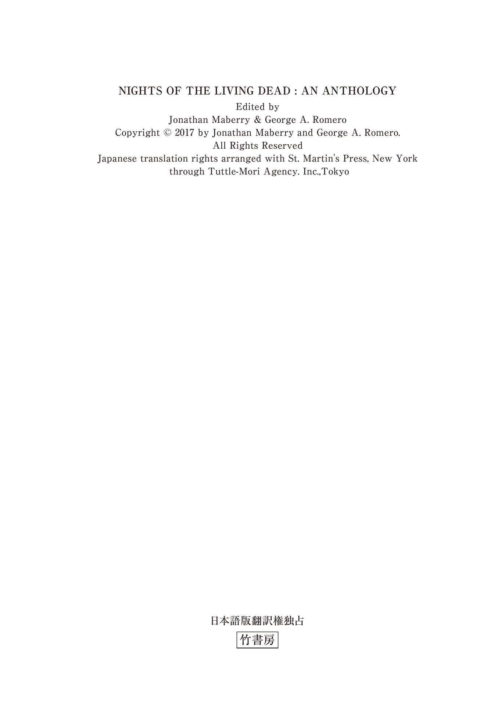
画期的なアンソロジー『死霊たちの宴 』（クレイグ・スペクターとの共同編集：一九九八年／東京創元社刊） で〝ゾンビ文学〟なるジャンルを築いたジョン・スキップ。彼に本書を捧 ぐ。スキップ、君はずっと我々の仲間だ。
そして、いつものように、サラ・ジョーへ。 ジョナサンより
スザンヌ・デスロチャー・ロメロへ。 ジョージより
NIGHTS OF THE LIVING DEAD CONTENTS
目次
序説 ：ナイツ・オブ・ザ・リビングデッド ──ジョージ・Ａ・ロメロ
まえがき ～朽ちかけた映画館での奇妙な少年の回想～ ──ジョナサン・メイベリー
デッドマンズ・カーブ ──ジョー・Ｒ・ランズデール
スーという名のデッドガール ──クレイグ・Ｅ・イングラー
ファスト・エントリー ──ジェイ・ボナンジンガ
この静かなる大地の下に ──マイク・ケアリー
ジミー・ジェイ・バクスターの最後で最高の日 ──ジョン・スキップ
身元不明遺体 ──ジョージ・Ａ・ロメロ
安楽死 ──ライアン・ブラウン
軌道消滅 ──デイヴィッド・ウェリントン
乱杭歯 ──マックス・ブラリア
灼熱の日々 ──キャリー・ライアン
その翌日 ──ジョン・Ａ・ルッソ
卓上の少女 ──アイザック・マリオン
ウィリアムソンの愚行 ──デイヴィッド・Ｊ・スカウ
動物園の一日 ──ミラ・グラント
発見されたノート ──ブライアン・キーン
全力疾走 ──チャック・ウェンディグ
孤高のガンマン ──ジョナサン・メイベリー
現場からの中継 ──キース・Ｒ・Ａ・ディカンディード
死線を越えて ──ニール＆ブレンダン・シャスターマン
ジョナサン・メイベリー／ジョー・Ｒ・ランズデール／クレイグ・Ｅ・イングラー／ジェイ・ボナンジンガ／マイク・ケアリー／ジョン・スキップ／ライアン・ブラウン／デイヴィッド・ウェリントン／マックス・ブラリア／キャリー・ライアン／ジョン・Ａ・ルッソ／アイザック・マリオン／デイヴィッド・Ｊ・スカウ／ミラ・グラント／ブライアン・キーン／チャック・ウェンディグ／キース・Ｒ・Ａ・ディカンディード／ニール・シャスターマン
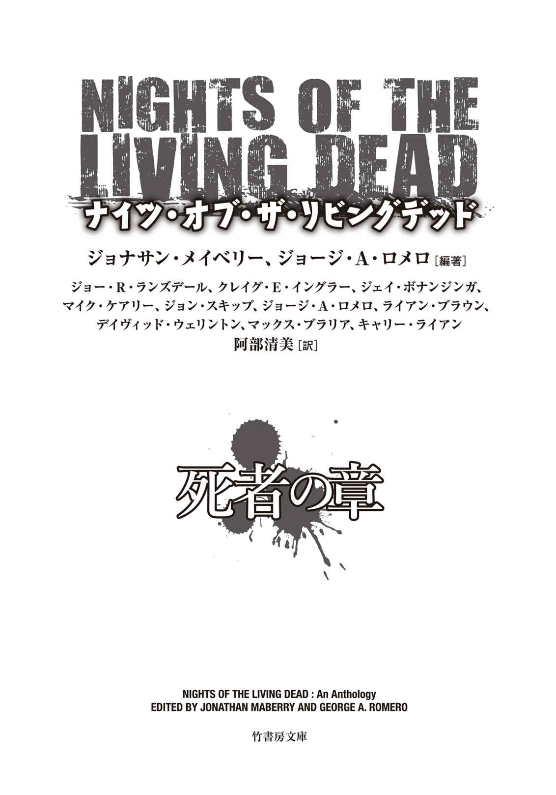
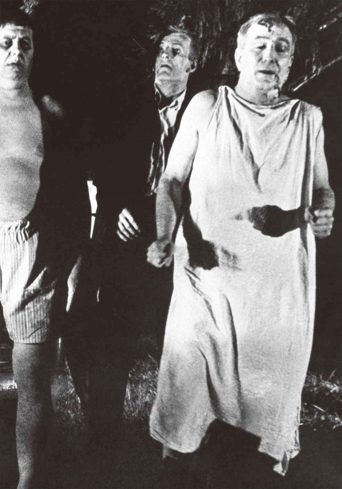
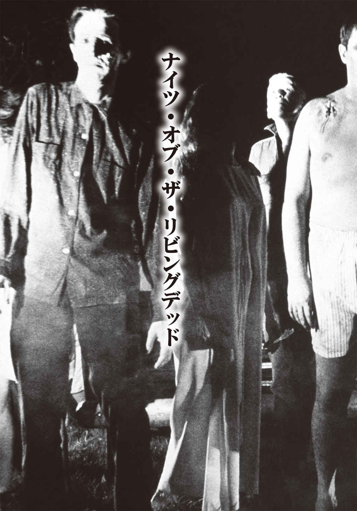
謝辞
映画『ナイト・オブ・ザ・リビングデッド』で、当時誰も予想していなかった一大ジャンルの礎 を築いてくれたジョージ・Ａ・ロメロとジョン・Ａ・ルッソに深く感謝する。また、本書の企画に手を差し伸べてくれたセント・マーティンズ・グリフィンのマイケル・ホーマーに謝意を表す。現代出版業界の奇妙で危険な情勢の中、このプロジェクトを導いてくれた我々のエージェント、サラ・クロウ、デヴィッド・ガーシュに礼を述 べたい。そして、この世で最高の毒舌アシスタントでいてくれたダナ・フレドスティ、本当にありがとう。
序説：ナイツ・オブ・ザ・リビングデッド
この映画の成功は、
誤った解釈によるところが大きいと私は今でも信じている。
我々はラッキーだった。そして、その幸運はさらに続く。
──ジョージ・Ａ・ロメロ
五十年前、私は友人たちを何人か説得することができた。自分たちは、真面目 に、正真正銘の長編映画を作れるかもしれないぞ、と。
当時、我々はペンシルベニア州ピッツバーグにいた。それまで、ピッツバーグの人間が映画を作ったことはなかったと思う。生まれも育ちもニューヨークシティだった私は、まさに『ウエスト・サイド物語』の〈シャーク団〉や〈ジェット団〉のごとく、ギャング団の縄張り争いが日常茶 飯 事 だった頃、ブロンクスのパークチェスター地区をうろうろしていたものだ。近隣では、〈ゴールデン・ギニース〉が幅を利 かせていた。連中はイタリア系ギャング団で、私は〝ラテン野郎〟だと思われていたらしい。そのせいで、ことあるごとに彼らからいちゃもんをつけられていた。
父は、世界で最も偉大な人物だ。私が進学する時期には、仕事を三つ掛け持ちし、必死で育ててくれた（ちなみに私は彼のひとり息子だ）。
この〝世界一偉大な〟父は、〝カスティーリャ系スペイン人〟であることを自負しており、一家はラ・コルーニャの出身だった。彼の両親は、華々しき頃のキューバに渡り、成功を手にして私の父やその兄弟をニューヨークへ送り出した。そこで父はリトアニア人女性のアン・ドボルスキーと出会い、やがて二人は結婚。彼らの間に生まれたものの、私はスペイン語もリトアニア語も覚えぬまま成長し、習得した言語はアメリカ英語のみ。それも、ニューヨーク英語、厳密にはブロンクス訛 りで話す。
近所のイタリア人たちも同じで、話すのはブロンクスアクセントの英語だった。生 粋 のニューヨーカーだったものの、いかんせん、私の名前が「ロメロ」ゆえ、連中に〝ラテン系アメリカ人〟だと考えられていた（ロメロ姓はイタリアが起源だとも言われるが、当時、ラテン系俳優シーザー・ロメロが大人気だったこともあり、ロメロ＝ラテン系と思う人が多く、私もその例に漏れることはなかったのだ）。
しかしながら、私はラテン系のハーフに過ぎないのではないか？ いや、父親の言葉に従えば、私には〝ラテン〟の血など全く流れていない。というのも、あの頃、〝ラテンアメリカ人〟は〝プエルトリコ人〟を意味していたからだ。恥ずかしながら、スペイン人の父は、「自分は、ニューヨークを〝下水道のようなひどい街〟にしてしまった〝下劣なプエルトルコ人〟とは全くの無関係」というスタンスの持ち主だった。
だから、ご想像の通り、〝レッテル〟なんて私にとっては大した意味などない。
数年後、ジョン・ルッソと一緒に処女作の脚本を書いた際、我々は主人公を有色人種としては表現していなかった。執筆時、自分の頭の中では、そのキャラクターは〝白人〟だった。オーディションを受けたデュアン・ジョーンズはアフリカ系アメリカ人だったが、ギャラがわずかな予算に見合うことだけでなく、突出した演技力で文句なしの採用となった。
脚本の書き換えはしなかった。デュアンが自分でセリフを調節し、ジョンと私がもともと描いていた〝粗暴なトラック野郎〟とは違ったキャラクターを作り上げてくれたのだ。しかも、それが物語の展開に障 ることは全くなかった。主人公ベンは、白人の設定でも最後に悲惨な結果を迎える予定でいたが、黒人になっても結局同じ運命をたどる。あの人物は、いわゆる〝偶然の産物〟だったのだ。
＊ ＊ ＊
映画『ナイト・オブ・ザ・リビングデッド』（当初は『ナイト・オブ・ザ・フレッシュイーターズ』と呼んでいた）の最初のプリントを車のトランクに入れ、ニューヨークを目指してペンシルベニア州の高速道路を走っていたとき、マーティン・ルーサー・キングが暗殺されたというニュースが製作担当のラッセル・ストレイナーと私の耳に飛び込んできた。不幸にも、その事件があって......永遠に......私の処女長編作は、人種差別的だと捉 えられるようになってしまった。意図的に人種的な偏見を盛り込んで、この映画を作ったのでは決してない。異常な事態に陥った少人数グループの話で、彼らの間に生まれた不和を解決することができず、自分たちの死を招く結果となるというのが、我々が描こうとした内容だ。
この映画の成功は、誤った解釈によるところが大きいと私は今でも信じている。我々はラッキーだった。そして、その幸運はさらに続く。
ゾンビは、ホラー映画専門誌『フェイマス・モンスターズ・オブ・フィルムランド』（一九五八年から八三年まで発行）に登場する常連となり、もう長いこと、モンスターとして不動の人気を維持している。『私はゾンビと歩いた！』（43 ）や『恐怖城（再公開・ビデオ邦題『ホワイト・ゾンビ』）』（32 ）など、古くからゾンビは存在していた。五〇年代に人気を博したアメリカのお笑いコンビ、アボットとコステロも、彼らのコメディ映画シリーズで一度や二度、ソンビに遭遇しているはずだ。
しかしながら、ジョンと私が『ナイト・オブ・ザ・リビングデッド』の脚本を執筆しているとき、自分たちのモンスターを〝ゾンビ〟だと考えたことはなかったし、そう呼んだりもしていない。そいつらは死人のくせに蘇 り、生きた人間の肉を食らうという不可解な設定で、こちらが付けていた名前は〝グール〟だった。
ところが、「この映画は、後 代 に大きな影響を与える重要な一作だ」などとあちこちで書き立てられ、記事という記事が私たちのクリーチャーを〝ゾンビ〟と呼んだため、私の方が折れざるを得なかったのだ。それから十年後に続編『ゾンビ（原題：Dawn of the Dead）』の脚本と監督を務めたが、そこで初めて私は〝ゾンビ〟という言葉を使った。
今日、ゾンビはすっかりポップカルチャーの一部として定着し、光栄なことに、私はこのジャンルのゴッドファーザー的存在だと見なされている。
偉大な先人が大勢いる中で、そのように考えてもらえる事実がいかに誇らしいか、言葉では簡単に言い表わせない。これまでの人生を映画に捧げてきた老輩として、長年にわたる賛辞も素直にありがたく受け入れられるようになったものの、ゾンビ界の大御所という位置づけは、どうにも不相応に思えてしまう。
とはいえ、私はこのジャンルが好きでたまらなく、いつも関わっていたいのだ。ゆえに、今もゾンビ映画を作ることができる自分が大変恵まれていると感じずにはいられない。このアンソロジーは、偶然ではなく、確固たる意志と目的を持ってこのジャンルに飛び込んできた作家たちの短編集であり、その序文を任せてもらえるとは、これまたなんと幸運なことか。現在の境遇に導いてくれた数奇な運命に、私は一生感謝し続けるであろう。この本に掲載されている素晴らしい小説家たちの作品を、読者の方々に届けることができるのだから。
まえがき ～朽 ちかけた映画館での奇妙な少年の回想～
──ジョナサン・メイベリー
肉体の生命維持機能が損なわれた同胞たちに対する私の愛情は、相当深い。
ゾンビ、グール、ウォーカーなど、呼び方は様々だが、変わることのない激しい情熱で常に彼らを愛 おしんでいる。
本当に。心から。
彼らとの関わりは、今に始まったことではない。一九六八年十月の月夜の晩、十歳だった私は友人のジムと連れ立ち、新作のホラー映画を観るべく、ミッドウェイ・シアターという古い映画館に忍び込んだ。作品のタイトルは『ナイト・オブ・ザ・リビングデッド』。その日が封切り日で、一週間前に予告編を観ており、なかなか怖そうな映画だと思っていた。しかしこれまで、予告編でかなり楽しみにしていても本編で裏切られたことが何度もあったため、過度な期待は抱いていなかった。スラム街の子供だった私たちは、上映中のユニバーサル、ＲＫＯ、ハマー・ホラー作品を片 っ端 から──新旧問わず──鑑賞していた。何かと物騒な地域に住んでいたこともあり、私たちはたくましい子供でもあった。暴力沙 汰 は日常茶飯事。人種差別、家庭内暴力、ギャングの抗争とも隣り合わせ。あまりにも過酷な現実の中にいたため、どんなホラー映画も怖いとは感じられず、単なる現実逃避の手段でしかなかったのだ。
少なくとも、私たちはそう感じていた。
あらゆるヴァンパイア映画を観て、吸血鬼など恐るるに足りないと悟るようになった。物語が始まってしばらくは脅威的なのだが、終盤になると自分のマントを踏んでよろめき、尖 った枝や木片がある不都合な場所で胸から転ぶ始末。あるいは、自分たちの城の遮光対策が万全でなく、陽の光を浴びて焼かれる残念な結果になる。狼 男 は、毎月満月の前後三日間のみ獰 猛 になるが、私には姉妹が四人もいたので、周期的に異様に怒りっぽくなり、近づいてはいけない存在になるのには慣れていた。ミイラ男はというと、映画に出てくる奴 らは古い包帯を巻いてふらふらと歩く傾向にあり、あの包帯はかなり燃えやすそうだったゆえ、一緒にマッチで火遊びしてみたらどうなるかなと思う程度だった。
結局のところ、ジムも私も、何に対しても怖いもの知らずだったのだ。だから私たちは、ルートビア数本とリコリスのキャンディ袋を持って、しょっちゅう映画館に忍び込んでいたのだった。ミッドウェイ・シアターはかつて演芸場としてにぎわっていたのだが、建物の大部分は老朽化が進んでいた。バルコニー部分はその十年前に正式に使用不能となり、ロープが張られて立ち入り禁止になっていた。それがかえって私たちの好奇心をくすぐった。危険を承知で入り込み、そこで映画を観るのはスリル満点だった。
私たちは、いわば恐怖に対し感覚が麻 痺 していたストリートキッズで、あらゆるものの種明かしができると自負していた。銀幕上で何かが這 い回り、羽ばたきし、飛行し、蛇のように滑って進み、よろよろと歩いたとしても、すでに想定済みの展開で、全く動じたりしなかったのだ。
ただ、それは自分たちの愚かな思い込みに過ぎなかった。
前もって忠告を受けずに『ナイト・オブ・ザ・リビングデッド』を観た客で、心の準備ができていた者はいなかったはずだ。一九六八年では、誰も。そののちにゾンビ映画を観るようになった──あるいはコミックやテレビドラマを通じて同ジャンルにはまった──人々は、素直にゾンビ作品を賞賛したり、たちまち大ファンになったりするのかもしれないが、『ナイト・オブ・ザ・リビングデッド』を最初に劇場公開された時点で観ていなければ、それが実際にどんな感覚を観る側にもたらしたかは、わかってもらえないだろう。
吸血鬼は出てこない。狼男も登場しない。ミイラ男も、クリーチャーも、デーモンも、放射線を放つトカゲもどきも、巨大蟻 も、陽光を浴びると鱗 に覆われた醜悪な姿に変化する〝太陽の怪物〟も現われない。
映画本編の大半を観ても、リビングデッドとやらが何なのか正確にはわからなかったが、連中は歩く屍 で、明らかに人間を食うのだということは理解した。しかし、その理由は定かではない。吸血鬼や狼男は、映画より先に神話に登場していたし、ミイラ男は呪いで起き上がり、タナの葉でパワーを得ていた。キングコングは地図に載っていない孤島に生息し、ゴーストは特定の場所に捉われて徘 徊 する死者だ。
ところが、生ける屍という存在はそれ以前に出てきたことがなかったし、劇中でも誰も明確な説明をしてはいなかった。科学者と軍はそれぞれに推測し、互いの見解を否定し合っていた。ジーン・バリー（『宇宙戦争』の科学者クレイトン・フォレスター博士）やエドマンド・グウェン（『放射能Ｘ』の生物学者ハロルド・メドフォード博士）のように理論的な解説をする人物も、勇敢に救助に駆けつけるケネス・トビー（『遊星よりの物体Ｘ』のパトリック・ヘンドリー大尉）やピーター・カッシング（『吸血鬼ドラキュラ』の吸血鬼ハンター、ヴァン・ヘルシング博士）的なキャラクターも出てこなかった。
この映画の化け物は謎めいていた。とにかく得体の知れない何か であった（当時の私はそのような小難しい単語は知らなかったのだが）。その不可思議さが彼らを一層恐ろしい存在に仕立て上げていた。映画に登場する誰ひとりとして、何が起こっているのかを把握しておらず、何も解明されなかった。登場人物全員が劇中で発生する事態の手がかりを何ひとつ得ることもなく、対策を立てようにもなんの情報もないため、結果として、絶望の淵 に追い込まれていくのだ。こんな設定の映画は、他に観た記憶がなかった。
確かに、それなりのルールのようなものはあった。登場人物たちがどうやって生ける屍の息の根を止めるかを突き止めようとしているときは、私は椅子から転げ落ちんばかりに身を乗り出してスクリーンを見つめていた。だが、いつまで経っても、なぜこの事態があちこちに拡大しているのかはわからない。徐々に私は、化け物に嚙 みつかれた地下室の子供のことがやたらと気になり始めた。どう考えても、事態が好転する気配すらない。
そして、実際にそうだった。
ひどい環境で育った向こう見ずの二人のストリートキッズに、この映画はどう影響したのか。私たちは二人とも、とてつもない恐怖を覚えたのだ。冗談ではない。おそらくこれでも控えめな表現だろう。
若いカップルがガソリンの給油ポンプ付近で火に巻かれ、屍たちのアツアツのごちそうになったシーンで、ジミーは震え上がり、席を立ってしまったほどだ。その後何年も、彼は悪夢にうなされ、粗 相 をする日々が続いたという。もちろん本当の話だ。
私はどうしたかって？
私は座席に留まり、続けて二回観た。
翌日も映画館に忍び込んだ。その次の日も。ジミーは映画のせいで私の頭がおかしくなったと思っていた。もしかしたら、そうだったのかもしれないし、いまだにそうなのかもしれない。スクリーンの中には、同じ地球でありながら全く違う世界が存在していたのだ。
この作品は私の大のお気に入り映画だったし、今も大好きだ。
また同作は、フィラデルフィアで初の深夜映画としてハロウィンにリバイバル上映された。その頃、私はすでに十五歳になっていた。女の子と一緒に観に行けば、彼女が悲鳴を上げて男子の胸に顔を埋め、男子がなだめてやっていい雰囲気になるという思春期の少年にはもってこいのデート映画だった。少なくとも、六十年代後半から七十年代前半にかけては。
『ナイト・オブ・ザ・リビングデッド』は伝説となった。ヒヤリとするには、夜間に、ドライブインシアターか古い映画館で観るのが理想的。ミッドウェイ・シアターでは、毎年十月にリバイバルされ、のちに、フィラデルフィア中心部の複数の映画館でも公開されるようになった。ドライブインシアターも然 りだ。
しかし時が過ぎても、私もジミーも、あの怪物が何なのか皆目わからなかった。
「ゾンビ」という言葉は、劇中では一度も出てきていない。ジョージ・ロメロは、彼の映画がソンビものとして定着してしまい、彼自身がその新ジャンルの生みの親とされたことに驚きと困惑を隠せなかったようだ。彼はゾンビ映画を作ったわけではなかった。彼はグール映画、人間を食らう死体についての映画を作ったのだ。彼にも、当時の人々にとっても、ゾンビとは、三十年代、四十年代のハイチが舞台の古い映画に出てくる〝魔術で生き返らせた奴隷〟のことだった。『私はゾンビと歩いた！』『恐怖城』をはじめとする作品は、『ナイト・オブ・ザ・リビングデッド』と同ジャンルの映画ではない。当時も今も別物だ。小説家や歴史家、批評家の中には、ロメロのリビングデッドとそれ以前のブードゥー教のゾンビを結びつけようとする者もいるが、それは拡大解釈。ミイラ男の方が、ロメロのグールよりハイチのゾンビとの共通点が多い。とはいえ、論点はそこではない。
とにもかくにも、〝ゾンビもの〟というジャンルを作り出したのは、やはりロメロだ。
書籍のサイン会やコンベンションで、ロメロが誰かを知らない人に出会うと、私は驚くし、同時に悲しくもなってつい相手に嚙みつきたくなってしまう。幸いにもそのような人々は決して多くはないが。ゾンビが、マックス・ブルックスの小説『ゾンビサバイバルガイド』や『ＷＯＲＬＤ ＷＡＲ Ｚ』から始まったと思っている人もいれば、このジャンルはマーベルコミックの『マーベル・ゾンビーズ』が先駆けだと勘違いしている人もいる。ロバート・カークマンのコミック『ウォーキング・デッド』がゾンビを生んだと誤解している人も少なくないのが現状だ。
私はマックスとロバートの友人だし、『Marvel Zombies Return』の原作者のひとりでもある。私たちはよくゾンビものというジャンルについて語り合い、全員が「このジャンルのゴッドファーザーはジョージ・ロメロだ」ということで見解は一致している。もしも『ナイト・オブ・ザ・リビングデッド』という映画が生み出されなければ、私たちの現在のキャリアはなかっただろう。他の人生の選択肢の問題ではなく、確実に私の今の立ち位置は、この作品あってこそのものだ。マックスやロバートや他のアーティストが別のジャンルでは成功しなかったという意味ではない。とにかく、今の自分たちがあるのはジョージと彼の歴史的傑作のおかげだ。それははっきりしているし、映画『ショーン・オブ・ザ・デッド』『バイオハザード』『高慢と偏見とゾンビ』、テレビドラマ『Ｚネーション』『Dead Set』『ｉゾンビ』、ゲーム『ＬＥＦＴ ４ ＤＥＡＤ』といった作品たちにも同じことが言える。このジャンルの幅はかなり広いので、ここに挙げた作品はほんの一部。私は延々と列挙することが可能だ。それに、世界のどこに行っても、ゾンビが何かを知らない人はほとんどいないだろう。
ジョージと一緒に『ナイト・オブ・ザ・リビングデッド』の脚本を書き、『バタリアン』でこのジャンルのニュージェネレーションを創り出したジョン・ルッソにも心から感謝したい。もちろん、『ナイト・オブ・ザ・リビングデッド』のキャストや他のスタッフにも。彼らは、リビングデッドを世に残したヒーローだ。
ゾンビ（ここからはそう呼ぶことにする）は、私の中では最恐のモンスターである。十歳の私は、小説、コミック、映画館、深夜のテレビで遭遇するたび、彼らに夢中になった。彼らの存在を知った最初の夜、映画館から家路についた私はすでに、もし途中で出くわしたらどうやって生き延びるか、シナリオ的なものを考えていた。この年齢になっても、訪問先の建物でついついゾンビとのサバイバル戦をシミュレーションしたり、出入り口や隠れ場所のチェックは言うまでもなく、防御時の対策などをあれこれ思いめぐらせたりしてしまうのだ。信頼できそうな脱出ルートやサバイバルプランを気にかけるのは、もはや習慣となっている。
このモンスターに対する私の貪欲さは無尽蔵だ。『ナイト・オブ・ザ・リビングデッド』以降、目も当てられない模 倣 作品が作られるようになったが、オリジナル版のように私の心を摑んだ映画は一本もない。一九七八年、ジョージは『ゾンビ』（原題：Dawn of the Dead）を世に送り出す。この作品自体はオリジナルの続編ではなく、同じストーリーの別チャプターというべき作品だ。新たな場所の新たな登場人物に、同じ問題が襲いかかる。これも大ヒットを記録し、ゾンビ映画やホラー映画ファン向けの名作ランキングでいつも上位に君臨している。
『ゾンビ』公開時、ミッドウェイ・シアターは相当ガタが来ていたが、『ナイト・オブ・ザ・リビングデッド』を倍の料金で再上映することになり、これには賛成だった。
一応紹介しておくと、私の友人ジムは、一緒にリバイバル上映に行こうという私の誘いを断った。勝手にひとりで観に行ってろと言われた。まあ、そういうことだ。
一九八五年、ジョージは三作目の『死霊のえじき』（原題：Day of the Dead）をヒットさせる。ゾンビ作品は、その頃絶頂期を迎えた。少なくとも映画業界ではそうだったように思う。
しかしながら、ゾンビ文学に関しては同じ流れは当てはまらない。ちらほらとゾンビコミックが出版され、いくつか短編小説はあったものの、真底ガツンとくるような内容で、人気が長続きするようなクオリティの小説は登場していなかった。そこに、ジョン・スキップが参入する。作家、映画監督であり、独創的な発想の持ち主のスキップと同僚のクレイグ・スペクターが、自分たちのヴァンパイア小説を原作とした映画が作れないかとジョージ・ロメロと話し合いを持った。ところがスキップは、ジョージにあるクレイジーな提案を持ちかけたのだ。オリジナルのリビングデッド短編小説でアンソロジーを作るのはどうだろうかと。当時のジョージは、そういった企画には懐疑的で、なかなか首を縦に振らないことで有名だった。スキップとスペクターは、トップクラスのホラー作家たちに声をかけ、『ナイト・オブ・ザ・リビングデッド』の世界観を有する物語を書いてくれと依頼した。私のように、同作とともに成長したホラー作家たちは大勢いたのだ。
こうして一九八九年、スキップとスペクターは『死霊たちの宴』を出版。スティーヴン・キング、リチャード・レイモン、デイヴィッド・Ｊ・ショウ、ラムジー・キャンベル、スティーヴン・ラスニック・テム、レス・ダニエルズ、ダグラス・Ｅ・ウィンター、ジョー・Ｒ・ランズデール、ロバート・Ｒ・マキャモンをはじめとする錚 々 たる作家陣が執筆したオリジナルストーリーが収録されている。
それ以来、私はたくさんのゾンビ文学を読んだ。
私自身も何度か執筆に挑戦している。最初の書籍は、もし実際に『ナイト・オブ・ザ・リビングデッド』の事態が発生したら、現実世界はどう反応するかというノンフィクションの分析本『Zombie CSU：The Forensics of the Living Dead』。この本には、法律、医療、科学など各分野の多数の専門家へのインタビューが含まれているが、分野の違いに関係なく、私が取材した専門家たちはすでにゾンビのことを考慮していた。如 何 に関わり、対処するかを具体的に検討し始めていたのだ。救命士、ＳＷＡＴ隊員、聖職者、マスコミ関係者のみならず、歯科医（嚙み痕のエキスパート）も同様だった。
私の作品はほとんどがフィクションで、五冊に一冊がゾンビものだ。例えば、『Joe Ledger』シリーズの二巻『Patient Zero』と『Code Zero』、主流派ホラー小説二部作『Dead of Night』と『Fall of Night』、卓上ゲームを原作としたスチームパンク小説『Ghostwalkers』、コミック『Marvel Zombies Return』『Marvel Universe vs. The Punsher』『Marvel Universe vs. Wolverine』『Marvel Universe vs. Avengers』、世界滅亡後の世界を描くティーン小説『Rot & Ruin』『Flesh & Bone』『Fire & Ash』『Bits & Pieces』。それ以外にも多数の短編、中編小説でゾンビを取り上げている。
中でも、『Dead of Night』と『Fall of Night』は『ナイト・オブ・ザ・リビングデッド』に直接関係する物語だ。この二つは、ジョージのために書いた小説。彼の映画とその創造的な構想の大ファンだからこそ、彼に捧げるために執筆した。
そして、本書の案を思いつき、ジョージに電話連絡したところ、彼は私のアイデアに興味津々で、すぐに容認してくれたのだ。憧れの人との初めての会話では、自分がただのオタク少年と化していたことを認めねばなるまい。電話口の私はうまく声をコントロールできていたものの、うれしさのあまり、身体はスヌーピーダンスを踊っていた。考えてみてほしい。映画館に忍び込んで『ナイト・オブ・ザ・リビングデッド』に怯 え、魅了されていた十歳の子供が成長し、奇妙な物語を書く小説家となって、あのジョージ・ロメロと共同プロジェクトの話をしているなんて！
なんと素晴らしいことか。
その会話の中で、私たちは『死霊の宴』について語り合った。そしてジョージは、今回のアンソロジーで私も一編書くようにと提案してくれた。それが、本書に収録されている『孤高のガンマン』。公式に私の作品とジョージの映画を結びつけるショートストーリーだ。この短編を執筆できて、本当に格別の思いでいる。
巨匠との会話を終えた私は、著名な文筆家──特にゾンビ文学に馴 染 みの深い作家──にメールを送り、電話をかけ、この企画に参加する意志があるかどうかを訊 ねた。
彼らに返事を催促する必要はなかった。誰もが即答してくれたのだ。
ジョージと私は彼らにリビングデッドの〝ルール〟を与えたものの、細かいガイドラインを決めて縛りをきつくするようなことはしなかった。例えば、時代設定は大 雑 把 だ。『ナイト・オブ・ザ・リビングデッド』は一九六八年に公開されているが、『ダイアリー・オブ・ザ・デッド』のリリースは二〇〇八年。それでも、物語は同じ時期に起きていることが描かれていく。それゆえ、このアンソロジーでの出来事は、それが厳密にいつの時代であれ、〝明日の夜に起こる〟と想定しよう、という感じだった。
他の部分でも創造性に幅を持たせるべく、ある程度の自由は許容した。それがどう功を奏したかは、本書を読んでもらえればわかるだろう。結局のところ、ジョージも自身の各映画で彼なりに〝ルール〟をいじっている。そうやって、この破滅的状況の本質が誤解され、誤って報じられ、当局の偽情報に翻弄され、絶えず変化をすることも示 唆 していたのだ。
本書『ナイツ・オブ・ザ・リビングデッド』の物語はいずれもオリジナルで、ここでの発表が初お披露目となる。楽しく、恐ろしく、切なく、思慮深く、愉快で、感動的で、奇妙で、胸をざわつかせる多彩な内容だ。おそらく読者が期待している通り、どれも、ジョージ・ロメロとジョン・ルッソがおよそ五十年前に創り出した世界観に沿っている。
私のようにこのジャンルの筋金入りのファンであろうが、ゾンビ初心者であろうが、たまたまお気に入りの作家の名前に惹 かれてこのページを開いただけであろうが、誰でも歓迎する。不気味な世界への扉は開かれた。
この世の終わりにようこそ。
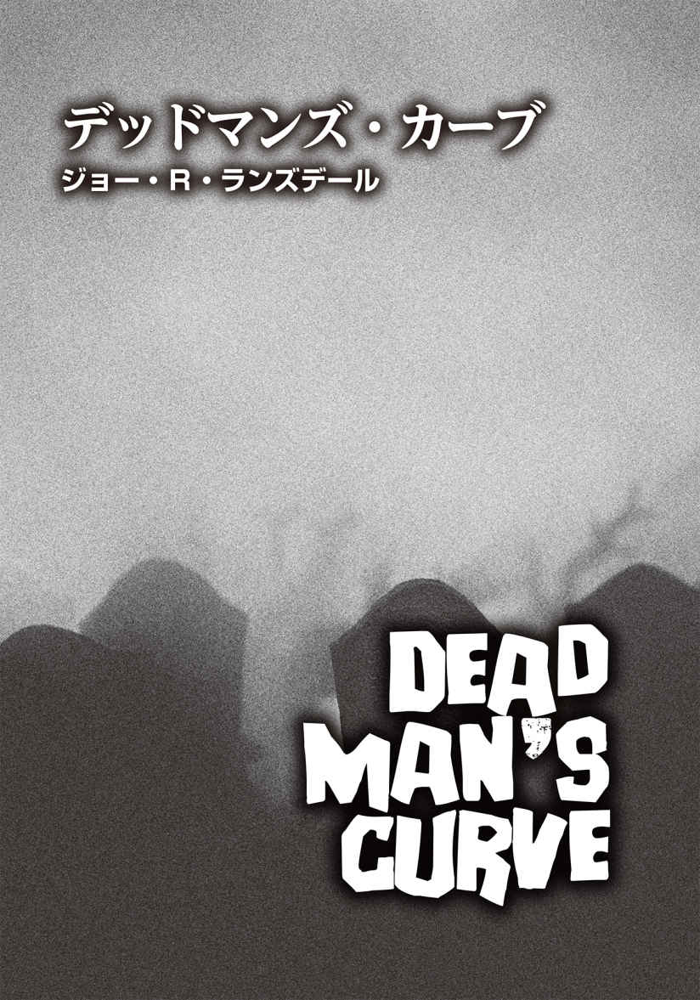
ジョー・R・ランズデール
Joe R. Lansdale
PROFILE
これまで上梓した小説は45作品以上というベテラン作家で、手がけた短編、映画やテレビドラマ、コミックブックの原作は400編以上。エドガー賞、スパー賞をはじめ、ブラム・ストーカー賞を10回（特別功労賞を含めば11回）受賞するなど、複数の受賞歴を誇る。米国テキサス州ナカドーチェス郡で、妻カレン、愛犬のピットブル、ニッキーと暮らす。代表作は、『ハップ・コリンズ＆レナード・パイン』シリーズ、エドガー賞受賞作の『ボトムズ』（早川書房 刊）など。他に、『ロスト・エコー』『アイスマン』『ダークライン』『サンセット・ヒート』（早川書房 刊）、『テキサスの懲りない面々』『バッド・チリ』『罪深き誘惑のマンボ』『人にはススメられない仕事』『凍てついた七月』（角川書店 刊）、本書にも執筆しているデイヴィッド・J・スカウの作品を含む、映画ホラーアンソロジー『シルヴァー・スクリーム』『死霊たちの宴』『モンスター・ドライヴイン』（東京創元社 刊）、『テキサス・ナイトランナーズ』（文藝春秋社 刊）など邦訳も多数ある。
Twitter：@joelansdale
自分は組み立ても修理もできない。それは兄のトミーの仕事で、彼は非常に腕が立つ。芝 刈 り機をフォード製のＶ８フラットヘッドエンジンよりもパワフルな仕様にすることだって可能だ。とはいえ、機械の知識は劣っていても、運転ではこっちも負けていない。別に虚勢を張っているわけではなく、これは事実だ。そして、トミーは今、そのことをマットに説明していた。
「こいつは見た目以上に、運転できる」
トミーの言葉に、マットは眉をひそめた。
「見た目以上......ねえ......」
「ま、すぐにわかるさ」と、返しながら、トミーは肩越しにこちらを一 瞥 した。
兄の意味していることは、十分理解できるはず。普通の頭脳の持ち主ならば。
ポンティアックＧＴＯのボンネットに寄りかかり、ズボンのポケットに手を突っ込んだマットは、まるで品定めでもするかのように、こちらの頭からつま先までじろじろと見た。横にはマットの仲間のデュアンが立っており、面白がってニヤニヤしている。
「外見は悪くねえ。まあ、いい嫁 にはなれるかもな。いいドライバーになれるかどうかは別として」
そう評価を下したマットに対し、私は「黙りな、クソ野郎！」と言い放った。
「やれやれ、前言撤回だ。いい嫁にもなれそうにないな」
「女だと思って甘く見てると、痛い目に遭 うよ」
私がさらに畳み掛けると、デュアンは忍び笑いを漏らした。マットは何も言い返さなかったが、急速に辺りが薄闇に包まれる中でも、気分を害しているのは手に取るようにわかった。余計な口出しをしないデュアンは、マットほど間抜けではないらしい。相手を見定める私の基準は極めてシンプル。クソったれでないと証明されない限り、クソったれの烙 印 は押されたままだ。ということで、愚かな二人のうち、マットの方がはるかにクソ野郎だと私は判断した。
性 懲 りもなくこちらを舐 め回すように見るマットを尻目に、私は、真っ赤なマッスルカー、ダッジ・チャージャーに腰を預け、片足をバンパーに置いて立っていた。膝が高い位置に来て、なかなかイケてるポーズだと思う。片手の指を一本だけジーンズのポケットに突っ込めば、あたかもそこに金が入っているように見える。そして、実際に金は入っていた。私は映画スターのような笑みを向け、あんたなんか虫ケラ同然だと言わんばかりに高飛車な雰囲気を醸 し出そうとした。私が身を預けているチャージャーはトミーが所有者で、彼がアルバイトで買ったものだが、私の愛車でもあると言っていいだろう。車との相性は、私の方がいい。兄が運転すると、ギアチェンジをするたび、チャージャーは太い鎖でボコボコにされているかのような悲鳴を上げる。一方、私がハンドルを握れば、エンジン音は上機嫌に喉を鳴らす若虎を彷 彿 とさせ、全力疾走するチーター並みの走りっぷりを見せてくれるのだ。
「テキサスの女ってのは、みんなこうなのか？」
マットの疑問に、トミーが答える。
「まあ、似たり寄ったりだが、ジェイニーは少しばかり特別だ」
「ふん。どうせ女の私に赤っ恥かかされるのが怖いんでしょ」
こちらの挑発を受け流し、マットは道路の向こうに目を向けた。すでに日の入りの時間を迎えている。みるみるうちに地平線に沈んでいく太陽は、溶け出したオレンジ色のかき氷のようだ。目にしている北部の太陽は、テキサスとは違っていた。テキサスの太陽は、ひどくまぶしく、熱気もこんなものではない。ここの空気は、夏も終わりだというのに、肌を刺すように冷たかった。
「オーケー」マットは小さくうなずき、片手を振り上げた。「彼女がドライバーでもいいさ」
「あら、ご承諾に感謝いたしますわ、ミスター・マット」
私は芝居がかった調子で礼を言った。「ありがたく参加させていただきます」
「嫌味な言い方はやめてくれ」
「あんたとレースするのはね、ここじゃ他に対戦相手がいないからよ。わかった？」
「だが、俺はトミーから金を巻き上げる気でいたんだ。マニュアル車にこだわるかわい子ちゃんからじゃなくてね」
「私が何にこだわってるかなんて知らないくせに！」
私はマットの不機嫌そうな顔を睨 みつけた。「本日のあんたの賞金はこれよ。万が一あんたが勝ったら、の話だけど」
そして、ジーンズのポケットに手を突っ込み、ぎゅうぎゅうに詰め込んでいた札束を取り出した。「ほら、全部で二百ドルあるわ。二百ドルのために走ったこと、あるの？」
札束を振ってみせると、マットは肩をすぼめた。
「それ以上の金を賭 けて走ったことがある。もちろん勝ったけどな」
「当然、二百ドルでも走るわよね？」
「女の子から金をふんだくるのは、どうも気が進まない」
「つべこべ言わずに、あんたの持ち金を見せなさいよ！」
業を煮やし、つい大声になる。するとマットは、デュアンに顔を向けた。
「おい、手持ちが六十ドルしかないんだ。不足分貸してくれ」
「なんだよ、それ。おまえに百四十ドル貸すくらいなら、メキシコ料理をたらふく食った方がいい」
つれない対応の友に、マットが急に低姿勢になる。「頼む。助けてくれよ」
しぶしぶ尻ポケットから財布を取り出し、デュアンはさらにもったいぶって数枚の札を引き抜いた。「おまえが負けた場合は、倍返しだからな」
「倍返しだと？ ふざけんな」マットは眉 間 にシワを寄せた。
「文句を言える立場じゃないだろうが」
「......わかったよ」と、マットは息を吐いた。「このレースに勝てばいい話だ。誰が魔の左急カーブを乗り切れるか、しっかりと見とけ」
「魔の左急カーブだと？」身を乗り出して訊 ねたトミーに、デュアンが答える。
「二、三ヶ所、きっついヘアピンカーブが待ってるのさ」
「最初のやつは、それほどでもない」
そう切り出してコースの説明を始めたのは、マットだった。「だがそのすぐ後、道幅がものすごく狭くなり、車体で木の皮を削ることになる。そこを抜けると、再びカーブが現われる。そいつが魔のカーブ、通称〝デッドマンズ・カーブ〟だ。道は古い採石場に続いている。カーブがあまりにもきつく見えるから、急いでハンドルを切りがちだが、地形がえぐれていて複雑だから、タイミングを誤ると崖の縁 から飛び出し、宙を舞うことになる。まあ、落ちても即死にはならないだろうけど、結果的に溺れ死ぬことになるかも」
何食わぬ顔で恐ろしい言葉を並べるマットの横で、デュアンはニヤリとしながら付け加えた。
「つまり、石が採 り尽くされて今は使われなくなった石切り場で、地面を深く掘ってできた巨大な穴に水が溜 まり、でっかい湖になってるんだよ。デッドマンズ・カーブを曲がり切れなかった車が何台も湖底に沈んでるって噂 だ」
デッドマンズ・カーブ。これまで、何人の命を飲み込んできたのか。死者のカーブとは、なんとも不吉な名称だが、逆に私の血が騒いだ。だが、兄はビビっているのか、横で顔をこわばらせている。
さらにマットが言った。
「ゴールは、その先にある病院の駐車場。まあ、運良くデッドマンズ・カーブを乗り切れたら、の話だが。俺にとっては、朝飯前だがね」
「病院？」
トミーが聞き返すや、マットは片眉を上げた。
「ああ、病院だ。その裏手には、市の死体安置所がある。不服なら、そっちをゴールにしようか？」
「......病院でいい」
短く答えたトミーを見て、デュアンがからかうように言った。
「そうそう、死体安置所は、今、満員御礼 だろうな。なんでも、どこかのイベントの出席者たちがホテルで体調を崩し、うち二十人が死亡したらしい。病院に収容された連中も、大半はかなりヤバい状態らしいから、死体安置所の空 き待ちに長 蛇 の列ができてるかもな」
しばらく男たちのやり取りを黙って聞いていた私は、ようやく口を開いた。
「その記事、読んだわ。空調システムのカビか何かが原因じゃないかって」
「さあね」デュアンが首をすくめた。「原因がなんであれ、そいつは人間を死に至らしめ、死体安置所送りにすることは確か──」
「というわけで」
マットがデュアンの言葉をさえぎった。「今日のレースのコースはそんな感じだ」
「警察は？ パトカーと鉢合わせはしたくない」
トミーの問いに、マットはしたり顔で答えた。
「そいつは大丈夫だ。サツがここまでパトロールすることは、まずないからな」
「あんたの情報、確かなの？ 急カーブの先でネズミ捕りしてたりしないでしょうね」
嫌味たっぷりに言うと、マットはウィンクをした。
「おや、怖 気 づいたのか？ おまわりがいたとしても、違反切符を切られるだけだ。嫌なら、別に下りてもいいんだぜ」
「ご忠告をどうも。でも、怖いものなんて何もないから」
私は満面の笑顔で返した。
運転席には私、助手席にはトミーが座った。金銭が絡んでいるせいか、少し強がりすぎたかもしれないと、ちらりと思った。金など、あとからでも何とかなる。しかし、例の急カーブに関して言えば、不安が皆無なわけではない。この道を一度でも走行した経験があれば、また違ってきただろう。だが、マットとデュアンと落ち合うと決めた時点では、レースコースがここだとは知らなかった。事前に訊ねるべきだったかもしれない。とはいえ、今さら悔やんでも、時すでに遅し、だ。マットはすでにエンジンをふかしている。
「本当にやれるのか？」
こちらの心を見透かしたかのようにトミーが訊ね、一瞬ギクリとした。
「当然でしょ」
平静を装い、さらりと噓をつく。
「そ、そうか。大丈夫だとは思ってるけど、おまえがどれだけヘアピンカーブに自信があるか、ちょっと心配になってね。俺は助手席に座ってることだし......」
「兄貴の心配性は、おばあちゃんちでブロック遊びをしてた頃と何も変わってないわね」
「まあ、そう......なのかな」
横目で見たところ、兄の顔色は冴 えない。私より三つ年上だが、彼は臆病で、度胸が座っている妹の私がいつも年上のように振舞っていた。
マットはさらにエンジンをふかし、ポンティアックをこちらの右側につけた。言うまでもなく、私たちは反対車線の左車線を走行する。今のところ、他の車は一台も見ていない。実際のところ、マットはトミーを相手と考えていたのだろう。あいつは私を恐れている。巷 では、私の腕前はそれなりに評判だ。
「マットの車のエンジンは性能がいい」
エンジニア然としたトミーの言葉に、ムッとして「私の車だってそうよ」と返す。
「レースとなると、実際に走ってみないとわからないだろ」
「兄貴は、私にあいつと勝負させたいんでしょ？ 私のドライバーとしての腕を買ってるからこそ、参加させたんでしょ？ これまで期待外れだったことがあった？」
「うーん、二回かな」
「タイヤがパンクしたときと、キャブレターの調子が悪かったときね。今夜は大丈夫。ボンネットの中は、生まれたての赤ん坊みたいに新品同然なの知ってるでしょ」
「ああ。だが、おまえのポケットに入れてある金の半分は、俺のだってことを忘れるな」
「兄貴、もう賽 は投げられたの。グダグダ言わずに腹を決めて、助手席で歯を食いしばってなさい」
隣で運転席の窓が下がり、マットが顔を覗 かせた。トミーも慌てて窓を下げる。
「いいか、俺がカウントする。三つ数えた後、ＧＯ！と言ったらスタートだ。急カーブには、くれぐれも気をつけろ。おまえらに何かあった場合でも、構わず俺たちは家に帰る。ホットチョコレートを飲んで、いつも通りの夜を過ごすだけだ」
「能書きは要 らない。さっさと始めて」
こちらの言葉を受け、マットはカウントを開始した。
「１......」
私は正面を見据えた。フロントガラスの先には直線道路が延びている。
「２......」
片手でギアを、もう一方の手でハンドルを握り直し、足の位置を再確認する。
「３......」
ツバをゴクリと吞 み込む。瞬 きはしない。
「ＧＯ！」
アクセルを思い切り踏み、車を急発進させた。タイヤがアスファルトをこする耳 障 りな音とエンジンの唸 りが周囲に轟 く。
正直、走り出しからこんなに気分が高揚したのは初めてだ。ロケットスタートした車はどんどん加速し、ヘッドライトに照らされた景色が流れては消えていく。マシンが風と道路と一体化したような、いや、道路など存在しておらず、空を飛んでいるような気持ちになっていた。
右側に視線を向けると、マットとの差はほとんどなく、彼が歯を食いしばる様 がハッキリと見えた。そう、向こうは運転席の窓を下げたままだったのだ。これは紛れもない戦略ミス。車内に空気を取り込んでリアウィンドウに圧をかけ、あたかも後部座席に重しを置いたかのような減速効果を引き起こす。自動車整備に長 けているトミーはそのことを知っており、流線型の車体が十二分に威力を発揮できるよう窓は閉めてあった。
最初のカーブはあっという間に迫ってきた。マットと私はほぼ同時にハンドルを切り、二台の車は並んでカーブを曲がっていく。彼の事前の説明通り、直後に道幅が狭くなったが、問題はそれだけではなかった。
道が人であふれていたのだ。
少なくとも二十人はいるだろうか。男もいれば、女もいる。うちひとりの男性は半裸で、下半身が丸出しだ。残りは皆、入院患者なのか、病衣姿だった。彼らは横に広がり、道路をふさぐように歩いているが、酔っ払っているかのように、足元がおぼつかない。月明かりの下、彼らの顔は異様に青白く、黒人の女性でさえ顔面蒼 白 なのがわかった。出くわした一瞬で認識できたのは、そのくらいだ。
突如出現した奇妙な歩行者集団を避けるべく、私はハンドルを操作しようと、左右を見やった。しかし、彼らがこちらに道を譲る気配は皆無で、かつ道幅も狭い。左には林、右にはマットの車。どうすれば──。
次の瞬間、左側にいた歩行者二人が右にふらふらと移動したのを見て、私は一か八か、左に勢いよくハンドルを切った。歩行者と至近距離ですれ違い、彼らの病衣が大きくはためく。タイヤがえぐった砂 利 が飛び跳ね、車体が樹皮を擦 るのを感じた。車がコマのようにスピンし、私は必死でハンドルを操作した。見事に元の道路に戻ったものの、自分の腕前を自画自賛している場合ではなかった。バックミラーに映ったのは、後続のポンティアックが二人の歩行者を撥 ねる瞬間だった。かなりのスピードでぶつかったのだろう、彼らの身体は、アニメのスーパーヒーローかと思うくらい豪快に空に飛び上がった。
急ブレーキを踏んだマットの車は、耳をつんざく凄 まじい音を立てた。タイヤが横滑りし、私の車にぶつかる寸前で止まったが、痙 攣 するかのように車体は揺れている。
助手席からデュアンが飛び出し、「大丈夫か!? 」と、道に倒れている歩行者二人の方へ走り出した。
私とトミーも車から降り、マットのところへ急いだ。運転席のドアを開けて出てきた彼は、足が少しふらついていた。
「マット！」
私が近寄ると、彼は呆 然 とした表情でこうつぶやいた。
「何も......何も見えなかったんだ。気づいたときには、もう目の前にいて......」
マットが動揺するのも無理はない。警察のネズミ捕りならまだしも、昼間でさえ、こんな森の奥の道路に集団で人が歩いていることなど滅多にないだろう。一体これは──。
道路に倒れていた二人は虫の息かと思いきや、唐突に身体を動かし始めた。ひとりは高齢の男性で、もうひとりは中年の女性のようだ。女性の方はなんとか立ち上がり、よろよろと歩き始めたが、首がだらりと垂れ下がっており、格好がどこか妙だ。え──？ 目を凝 らした私は、慄 然 とした。彼女の首は、ほとんどもげており、細い腱 だけで胴体とつながっているではないか。こんなひどい傷を負っていたら、歩くどころか即死していてもおかしくない。戸惑いながらも、次に私は男性の動きに気づいた。両手で上体を起こしたかと思うと、ずるずると地面を這 い出したのだ。手の指が道路にしっかり食い込み、爪がアスファルトを削り取って溝を作っていく。しかしよく見ると、両足は完全に潰 れ、使いものにならなくなっていた。
いつの間にか、他の歩行者たちはデュアンを取り囲んでいた。そして、まるでピラニアの群れが餌 でも見つけたかのように、一斉に彼に摑 みかかった。動作はのろかったが、次から次へとデュアンに覆いかぶさっていく。彼らはよほど腹を立てているに違いない。当然だ。こっちは、こんな狭い道であんな乱暴な運転をしたのだから──。
しかし、様子がおかしい。私は自分の目を疑った。連中のやり方は異常だ。這い寄った例の男性がディーンの足首をむんずと摑み、ハイトップのブーツにかぶりついている。他の者たちも彼の腕を引っ張り、身体のあちこちに嚙 みついているのだ。黒人の女性は耳たぶに歯を立て、勢いよく引きちぎった。
ディーンは絶叫し、血飛沫 が飛んだ。彼に駆け寄ろうとしたが、トミーが腕を取って私を引き止めた。目の前のおぞましい光景に、三人とも言葉を失っていた。その一方で、あまりの残酷さに私は現実とは思えないでいた。月明かりに照らされた道路で、大勢がデュアンを貪 っている。血みどろになりながら、ゆっくりと肉を裂き、骨を嚙み砕いているのだ。とうとう彼の腕はもぎ取られ、豪快にかぶりついた誰かが、トマトソースのスパゲッティを食しているかのごとく、切断面から垂れた血管や腱を音を立ててすすった。
デュアンを襲っている連中の顔や身体にも、ひどい嚙み傷があるのがわかった。まるで野犬の群れに襲われ、命からがら逃げてきたかのようだ。誰もが動けるのが不思議なくらいの怪 我 を負っている。肌は土気色だし、目は濁っていて焦点が合っていない。動きも操り人形のごとくぎこちなかった。マットが撥ねた二人も肉体の損傷が著しく、死んでいて当然なのに、ごちそうにありつけと言わんばかりにデュアンに襲いかかっていた。
私は居ても立ってもいられず、車のトランクを開けてタイヤレンチを摑み上げた。
「やめろ！」
トミーが制止する声が聞こえたが、私はすでに連中に向かっていた。こいつらは殺人鬼。非道な暴力でデュアンを殺そうとしている。いや、すでにデュアンの命はないだろう。ズタズタにされた彼の身体はまだ温かく、冷たい夜気の中、白い蒸気が上がっている。襲撃者のひとりが執 拗 にデュアンの頭部を拳 で殴り、もはや頭 蓋 は割れたクルミのようになっていた。裂け目から脳味 噌 があふれ出すと、連中は待ってましたとばかりに手を突っ込み、中身を摑んでは、口に運ぶ。こんな地獄絵図、現実なわけがない！ 目の前の光景を否定して必死で正気を保ちながら、私は手にしたレンチを振り下ろした。何度も何度も、誰彼構わず相手に叩 きつけた。
無我夢中で連中の頭を殴打し続けていると、こちらの手が痺 れてきた。おかしい。これだけ思い切り頭を殴られたら致命的なはずなのに、奴らは倒れても、よろよろと起き上がり、私に向かってくるのだ。訳がわからない。それでも私は怒りに任せ、レンチを振る手を休めなかった。こいつらは、肉体的にすでに死んでいる──。認めたくなかっただけで、心のどこかでは勘づいていた。ならば、私の行為は、死者をさらに死なせることになるのだろうか。
殺しても殺しても息絶えない歩行者たちの数は減るどころか、さらに増えていた。どういうこと？ 何が起きてるっていうの？ パニックになりかけたそのとき、トミーに腕をぐいと摑まれ、私は車の後部に引っ張っていかれた。マットはというと、慌てふためきながらポンティアックの運転席に戻り、エンジンをかけるや否や車を急発進させた。なりふり構わぬ運転で、私たち兄妹と危うく接触するところだった。
「あれを見ろ」
トミーの言葉に、私は我に返った。もうレンチを振り回す体力はなく、顔を上げるのが精一杯だったが、彼が指差す林の奥を見てギョッとした。さらなる死者 たちが、丘を降りてくるではないか。その多くが裸で、皮膚が垂れて肉が崩れ落ち、骨が剝 き出しになっている。ほとんど骸 骨 に近い状態の者もいた。
「車に乗り込め！ 奴 らが襲ってくる」
兄に促され、私はダッジ・チャージャーに滑り込んだ。トミーも助手席から乗車し、ドアを閉めた。その直後、連中の腐敗した顔や手のひらが、次々に車窓に押しつけられた。皆、歯を剝き、執拗に嚙みつこうとしてくる。死者ならば、もはや理性などなく、本能的に生きている人間を食おうとしているのか。
エンジンがかかり、車は勢いよく飛び出した。行く手をさえぎる者たちは容赦なく撥ね飛ばし、地面に転がった身体も躊 躇 なく轢 き潰し、私はひたすら前進した。このままスムーズに逃げ切れるかもしれない。ところが、前方で倒木が道をふさいでいるのがわかり、私は慌ててブレーキを踏んだ。辺りに連中がいないことを確認し、車から降りてトミーとふたりで障害物を取り除いた。幸い、それほど大きな木ではなく、道路脇に移動するのに、大した時間もかからなかった。
再び車を走らせていくと、マットの車が止まっているのが見えた。こちらのライトが道路に残るスリップ痕 を浮かび上がらせた。気が動転していたせいなのか、ハンドル操作を誤り、道端の大木に衝突してしまったらしい。運転席のドアが開いたままで、車内にマットの姿はなかった。乗り捨てられたポンティアックを横目に、私たちは先を急いだ。
ついに正面にデッドマンズ・カーブが見えてきた。奇妙な人食い連中との距離が開いたので、私はスピードを落としており、魔の左急カーブも難なく曲がることができた。正直、レースをしていなくてよかったとつくづく安 堵 した。想像以上に危険なヘアピンカーブだったからだ。カーブを曲がりながら右手に見えたのは、ポッカリと開いた人工の穴。月のクレーターほどもありそうな巨大なもので、水をなみなみと湛 えていた。かつては採石場だったが、石が採り尽くされるほど掘られた穴は、実際にどれだけ深いのかわからないが、対岸までの距離は相当なものだ。暗がりの中、広い湖面は月光を反射して輝いていた。
しばし人工湖沿いに車を走らせていると、左側に伸びる脇道を見つけ、私はそのルートを選ぶことにした。あの化け物たちがなんであれ、車に乗っていれば、遭遇するたびに奴らを跳ね飛ばし、行く手を確保できるだろう。しかし、それにも限界がある。朽 ちかけた身体とはいえ、ぶつかる衝撃は小さくなく、いずれは車が壊れてしまう。車を失った場合、私とトミーは、一本のタイヤレンチとかすかな希望だけであいつらと対 峙 しなければならない。
この横道に入ったことが、果たして吉と出るか凶と出るか。道の選択は反射的な行動だったし、大きな賭けに違いない。バックミラーは、化け物たちの姿を捉え始めていた。崩れた肉体でぎこちなく歩いているが、連中は皆、こちらを目指している。奴らが執拗に自分たちを追ってきている事実を思い知らされ、私は改めてゾッとした。どう考えても、生命を維持できる状態ではない。だが、死んでいるのに肉体は動き、獲物を追う本能はあるというのか。いくら考えても答えは出ず、ますます頭は混乱するばかりだ。
そうこうしているうちに、私たちは一軒の屋敷に行き当たった。おそらくこの辺りの農場主のものだろう。近くには、大きな納屋もある。左手の白い板塀の向こう側には、牧草地が広がっていた。
弧 を描くドライブウェイを進んで家の前まで来ると、敷地に通じる扉は開いており、例の奴ら二体が歩いているのが見えた。その奥の庭も、ぶらぶらと歩く連中であふれている。病衣や裸の者だけではなく、きちんと服を着ている者もいる。若者から老人まで年齢はまちまちだ。頭がぐらつき、視線が定まらないまま徘 徊 している様子や、突発的に身体を引きつらせる具合から、先ほど遭遇し、こちらを追ってきている化け物と同類に違いない。ただ、ここには、肌の感じや血 糊 が〝新鮮〟な者もいた。
「クソッ」トミーがそう吐き捨て、私も「ホント、最悪」と同調した。
どんな罵 りの言葉でも片づけられないほど、現実は忌まわしい状態だった。背後から追っ手が迫る窮地で、選んだ横道は行き止まり。しかも、そこも人食いの化け物だらけ。噓でも誇張でもなく、文字通り「最悪」だ。
逃げ道は他にないのかと周囲を見渡した私は、納屋に目を留めた。二つあるドアのうちひとつが開き、中から女性が手招きしていたのだ。私たちの会話を聞いたのか、こっちに来いと手で合図している。すると、突然マットが顔を出し、彼女の腕を乱暴に摑んで納屋の中へと引きずり込んだ。
私はハンドルを切り、アクセルを思い切り踏んで納屋に急行した。屋敷から納屋まではひどい砂利道だったが、弾丸のように車を加速させた。納屋の前に来ると、マットがもがく女性を殴りつけているのが見えた。顔に何度も拳を食らい、彼女は力なく倒れ込んだ。
なんてひどいことを！ 私は腹を立て、傍 らに置いておいたレンチを手にして車を飛び出した。さらにマットは、開いていたドアを慌てて閉めようとしていた。第一印象通り、やっぱりクソ野郎だ。駆け出した私は身を乗り出し、ドアの隙間を目がけてレンチを振り下ろした。金属が肘に命中し、マットは悲鳴を上げて後ろに飛び退 いた。痛みで七転八倒する彼を尻目に、私は納屋の扉を大きく開け、助手席から運転席に移動していた兄に車を中に入れるよう指示をした。屋敷の方を見ると、こちらの音を聞きつけたのか、庭の化け物たちが重い足取りで向かってくるのがわかった。車が完全に乗り入れたのを見届けた私は扉を閉め、降車したトミーに手伝ってもらって太いかんぬきを内側からかけた。これで少しは大丈夫だろう。
呼吸を整えるうちに激しい怒りがむらむらと込み上げ、私は地面に転がるマットに何度も蹴りを入れた。しかしすぐに、この男に制裁を加えても何も事態は変わらないのだと我に返る。どっと疲れが出て座り込みそうになったが、納屋の扉がガタガタ鳴り始め、気を取り直した。外から聞こえてくる不気味なうめき声に、私の全身は凍りついた。ドアの向こうには、化け物が集まっている。それも、一体や二体どころではない。
マットから暴行を受けた女性がトミーの手を借りて立ち上がると、暗がりから誰かがひょっこり現われ、彼女に駆け寄ってすがりついた。小さな男の子だ。女性も男の子をしっかりと抱きしめた。さらに男の子がもう二人と女の子ひとりも姿を見せた。女の子は、まだ十歳くらいだろう。少年たちは女性の周りを歩いたりしていたが、少女の方は立ち尽くしたままだ。水を張った桶 に足を入れたら、そのまま凍ってしまったかのように直立不動だった。
「......おまえの馬 鹿 力 で、危うく腕の骨が折れるところだったぞ」
倒れていたマットがこちらを睨みながら、よろよろと上体を起こした。「顔に蹴りまで入れやがって。顎にヒビが入ったかも。ひどく痛む」
「あら、お褒めの言葉をどうも」
「このビッチめ」
「それ、私のミドルネームみたいなもんよ」
どんなに罵られても、私は負けなかった。今、気力をなくしたら、すぐに命まで失ってしまうだろう。
「そいつ、私たちを外に追い出そうとしたのよ」
横から女性が口を開いた。殴られた目を手で押さえている。
「ふん、適者生存の法則に従ったまでだ」
「女に蹴り倒されてるようじゃ、おまえが適者だとは到底思えないが」
鼻で笑うトミーに対し、マットはさらに言い返した。
「は？ こいつらを見てみろ。役立たずの年増女とガキどもで、しかもうちひとりは知恵遅れときてる。足手まといもいいところだ」
「そういうお前は、さぞかし社会貢献している立派な人物なんだろうな」
トミーは呆 れたように首を振った。
電球が大きな納屋の室内を照らしていた。内部の様子を確認すると、前後に観 音 開きのドアがあり、たくさんの干し草が積まれているのがわかった。後ろのドアのそばには、トレーラーがつながれたトラクターが置かれている。隅は馬小屋になっていて、馬が二頭いた。一頭は栗 毛 色 で、もう一頭は白と茶のまだら模様だ。私は大の馬好きで、夏になるとサマーキャンプに参加し、トミーと乗馬して過ごしていた。両親が離婚する前の幸せな時期の記憶だ。
私は女性に歩み寄り、目の状態をチェックした。かなり腫 れており、涙でぐしゃぐしゃになっている。年の頃は六十代。日焼けして皮膚はシワだらけだが、凛 とした雰囲気で、気丈さが全身からにじみ出ている。彼女が抱きしめている男の子は、知的障害があるのは明らかだった。子供たちの中では一番身体が大きく、十三、四歳くらいに違いない。なぜ障害児だとわかったのかは、彼の表情が体格の割に非常に無 垢 に見えたからだ。健常者ならそのくらいの年にはとっくに失っている純真さや可愛 らしさを、彼は備えたままだった。
「この子たちは私の孫よ」
そう愛 おしそうに子供たちを見つめる女性に、私は思い切って訊ねた。
「一体何が起きたの？」
彼女の表情はみるみるうちに曇り、大粒の涙が頰を伝う。唇を結んでうつむく祖母に、四人の子供たちがしがみついた。やがて女性は手の甲で涙を拭い、孫たちと一緒に干し草に腰を下ろした。
「正確なことは何も言えないんだけれど──」
彼女は口を開き、語り始めた。「あいつらはたぶん死人よ。あなたもそう感じてるはず」
「ええ。だけど、なぜこんなことが起きてるの？」
私の問いに、「理由も原因も全くわからない」と、彼女は力なく首を振った。
「私は娘の子供たちとここで暮らしてる。日が暮れたから、表で遊んでいた孫たちを呼びに行ったの。そしたら、外は奴らでいっぱいで......」女性は一旦言葉を吞み、さらに続けた。「奴らが屋敷に迫ってきて、私は子供たちを連れ、納屋に逃げた。ここまでちょうど来たときに、どこかのろくでなしが現われ、納屋を独り占めしようとしたのよ。私がこいつと揉 み合っているうち、子供たちは無事に中に入れたんだけど、あなたの車を見て助けを呼んだら、急に暴力を振るわれて。こいつ、連中がうじゃうじゃいる外に、私を追い出そうとしたわ。自分だけが助かればいいと考えたんでしょうね」
化け物は最悪だが、目の前の〝どこかのろくでなし〟は最低だ。マットに軽蔑の視線を向けたそのとき、納屋の両方のドアが激しく音を立てた。あいつらが叩いているのか、揺すっているのか、今にも納屋がサイコロのように転がされるのではないかと思えるほどだった。
「あいつらに囲まれてしまったのね。これが現実だなんて信じられない。何がどうなっているのか、ずっと考え続けているわ。なんで死んだ人間が生き返ったりするわけ？ 奴らの中には、ターナーさんも混じっていた。昨日九十歳で亡くなって、死体安置所に置かれていたはずなのに。彼のことはよく知ってるの......」
興奮して一気にまくしたてた女性は、大きく息を吐いた。
「他にも知ってる顔が？」
トミーに問われ、彼女は悲しそうにうなずいた。
「友だちもいるし、ご近所さんもいるわ」
「街は、ここからどのくらい離れているの？」
「ここも街といえば、街。端っこだけど。中心部は、病院と死体安置所からはそう遠くない。おそらく五キロもないわね」
トミーが私を見て言った。
「なら、街も化け物だらけになっているかもしれない」
私は再び女性に訊 いた。
「外にいる連中は、この街の住人？」
「街の人を全員知ってるわけじゃないから、なんとも言えないわ。でも、街自体はそう大きくない。私の知り合いはみんな近所に住んでいたけど、知らない顔の中に、中心部から来た者もずいぶん含まれているでしょうね」
「死体安置所や病院から来た人間もいるだろうな」
トミーの意見に、彼女はうなずいた。
「そういえば、病衣を着ているのもいたわ」
マットが立ち上がろうとしているのが視界に入り、私は「動かないで！」と釘 を刺した。
彼は動きを止め、こう放言した。「いいか、この婆 さんとガキどもをただちに外に追い出せ。化け物がごちそうにありついている間、俺たちは車でここから逃げる。助かるにはそれしかない」
「何よ、それ。あんたと私と兄貴は同じチームってこと？」
私が呆れ顔でマットに返し、女性は「お願いだから、そんな恐ろしいことはやめて」と首を振った。
「もちろん、そんなことはしない。心配しないで」と、トミーは彼女をなだめるように言った。「なあ、もっと冷静になって現実を考えてみろよ。あちこちで似たようなことは起きてるぜ」
「うるさい！ 黙れ」私はマットを怒鳴りつけた。「ホント、ムカつくわ」
「俺たちはレーサーだ。速く正確に走れば、生き延びることができる。急カーブの曲がり方だってちゃんとわかってるんだから」
減らず口が止まらないマットに、今度はトミーがキレた。
「何が『俺たちはレーサーだ』だよ。おまえは車を木に激突させ、乗り捨ててたじゃないか。絶望して自殺するつもりだったのか？ あいにく死にそびれたようだな。おまえはゴキブリ並みの最低野郎だが、生命力の強さもゴキブリ級ってわけか」
「あいつらを避けようとして、ハンドルを切り損ねただけだ。とにかく、ババアとガキを餌 食 にするのが、俺たちが生き残れる手段だ」
マットは女性とその孫たちをじろりと見つめ、彼らを震え上がらせた。
「いい加減、その口を閉じなさい！」
レンチで自分の手のひらを軽く叩いてみせると、相手はようやく静かになった。私は女性に向き直り、こう質問した。「あのトラクターは走れるの？」
「そんなに速くはないけど、走れるわ。つながっているトレーラーを外せば、もっとスピードが出せるはずよ」
「でも、トレーラーは必要だわ」
私の発言にトミーがすかさず反応した。
「トレーラーが必要って、どういうことだ？」
兄の問いに答える前に、私は地面に横たわるマットを見下ろした。こいつは私たちを道路に残してさっさと逃げたかと思うと、納屋に逃げ込もうとした私たちを閉め出そうとし、そのくせ、今になって私たちに一緒に逃げようと擦 り寄ってきた。しかも、この女性と子供たちを置き去りにしてあいつらに食わせろと、恐ろしいことを平然と口にしているのだ。人間のクズめ。
納屋のドアがガタガタと鳴っている。
このままでは化け物がなだれ込んでくるのも時間の問題だし、マットのクソ野郎はいつ暴挙に出るかわからない危険要因だ。私は打開策を見出そうと、必死で思考をめぐらせた。
四方の壁が叩かれ、揺さぶられている。その激しい音と恐怖と焦りで、私は頭がおかしくなりそうだった。一刻も早く手を打たないといけない。ならば──。
「おばさん、子供たちと一緒に納屋の奥に移動してくれない？ 馬小屋の陰で、少しの間じっとしててほしいの。あと、耳を塞いでいて」
急な指示に、女性たちはきょとんとしている。
「早くして！」
大声を出すと、彼らは慌てて動き出した。馬舎の裏に場所を移した五人の姿が見えなくなったのを確認し、私はマットのもとへ歩み寄った。目が合った途端、彼は何かを悟ったのか、いきなり起き上がり、脱走を図ろうとした。しかし、私がレンチを振り下ろす方が速かった。手が痺 れるほどの衝撃とともに、嫌な鈍い音がし、マットの身体は崩れ落ちた。たった一撃で息の根を止めたのかどうかは定かではなかった。念には念を入れ、二度と起き上がれないようにしなければ。私は何度も何度もレンチを叩きつけた。
荷造り用のヒモがあったので、トミーと二人がかりでマットの身体をダッジ・チャージャーの後部バンパーに縛りつけた。ヒモを固く結びつつ、かつて読んだギリシャ神話をふと思い出した。一騎討 ちで勝利した後も怒りが収まらなかったアキレウスは、ヘクトールの遺体を戦車の後ろに括 りつけて引きずり回したという。当時のアキレウスも、こんなふうにはらわたが煮えくり返っていたのだろう。
女性と孫たちは、恐る恐る馬小屋の陰から顔を出し、こちらの様子をうかがっている。私の顔も身体も返り血で赤く染まり、全身の震えが止まらない。しかし、こうするしかなかったのだ。彼らが一部始終を目撃していたとしても、仕方がない。将来、セラピーを受ければいい。ただし、〝将来〟があれば、の場合だが。
「これからどうするか説明するわ」
震える己 の上半身を両腕で抱きしめ、私はできるだけ冷静さを保ちながら話し始めた。
「トミーが扉を開けたら、私は車で外に出て、表の連中を引きつける。トミーはここに残るから、あいつらがこっちに気を取られている隙に、あなたたちはトレーラー付きのトラクターで脱出して。それで街に向かうのよ。中心部の方は安全かもしれない。タイミングを見計らって移動して。それまではここで待機しているのよ」
私の説明を、女性は固唾 を飲んで聞いていた。彼女が理解していることを確認し、さらに続ける。「一緒に行動する手もあるんだろうけど、奴らがどれだけいるかわからないでしょ。道路が占拠されていたら、たとえ車でも取り囲まれて動きが取れなくなる可能もある。だから、私が──」その恐ろしい状況を想像し、私は口をつぐんでしまった。
「ダメだ。おまえにそんな危険な真 似 はさせられない」
兄は心配そうにそう言ったが、私は「平気。やれるわ」と気丈に返した。「私はハーメルンの笛吹き役になって、車のエンジン音とマットの血の匂 いで奴らを納屋から引き離す。だから、あとは頼むわ、兄貴」
女性がこちらに歩み寄り、怖 々 とマットの悲惨な姿を見下ろした。執拗な殴打のせいで、彼の頭部は変形し、郵便受けに入りそうなくらいぺしゃんこになっていた。
「私は前のドアから出る。あなたたちは後ろから出るのよ。そっちで死人に出くわした場合、戦わないといけないから、武器になるものが必要ね」
私は納屋をぐるりと見渡した。壁に農具が立て掛けられている。「熊手も鍬 もあるわ。この計画は完璧とは言えないけど、ずっとここに立てこもっているわけにはいかない。食料だってないし。馬を食べる気なら、それはそれでしばらく持つでしょうけど、それでも限界がある」
「......おばあちゃん」
孫娘が馬を指差し、涙を流し始めた。「私、あの子たちを食べるなんて、できない......」
「そんなことしないから、大丈夫よ」
女性は少女を優しく抱きしめ、なだめていたが、大人の彼女は全て理解しているはずだ。もし、ここに留まるなら、いずれは馬肉で飢えをしのがないといけないこと、しかもおそらく生で食べることになるという現実を。
「馬たちは小屋から出し、逃がしてあげましょう。トミーと子供たちをトレーラーに乗せ、あなたが街までトラクターを運転して。もっと大勢と遭遇しても、トミーがあなたの助けになるわ。簡単にはいかないだろうけど、今はそれしか選択肢がないの」
彼女は私の言葉を黙って聞いていたが、その強いまなざしから、決意が伝わってきた。
トミーに手伝ってもらい、いよいよ納屋の扉のかんぬきを外した。かんぬきを地面に落とすや、私は車へと駆け出し、中に乗り込んだ。トミーは扉をほんの少しだけ開け、納屋の奥のトラクター目指して走り出した。女性はすでにトラクターのエンジンをかけており、子供たちはトレーラーに乗っていた。それぞれが何かしら農具を手にしている。とはいえ、熊に木の枝で立ち向かうがごとしで、実際にどこまで役立つかは定かではない。それでも、何も持たないよりはマシで、それが今できる最善策だった。
化け物たちのうめき声は、前方からだけではなく、後方からも聞こえてきた。自分も兄たちも茨 の道を進むことになりそうだ。
かんぬきが外された観音開きの扉が、嫌な音を立てて開き始め、外気とともに大勢の化け物が視界に飛び込んできた。私は車のヘッドライトを点 けて奴らを驚かせつつ、エンジンを大きく唸らせた。豪快に飛び出した車は、一気に数人を撥ね飛ばす。納屋から少し離れたところで停車し、連中が後部バンバーに縛られたマットに気づくのを待った。こちらの思惑通り、血の匂いは奴らの食欲をそそり、次々と死人たちが集まってきた。車に群がった連中はガラス窓を叩き、車に這い上がろうとまでしてくる。まるでショーウィンドウ内に飾られたパイになった気分だ。
私は再び車を動かし、比較的ゆっくりと前進していった。連中と一定の距離を開けつつも、相手がごちそうへの興味を持続できる距離を保ち、引き離しすぎないように注意した。
納屋を中心にした環状の道を何周かしているうちに、ダッジ・チャージャーは化け物で覆われる形となった。ボンネットの上にも何体もへばりつき、前方が見にくくなっている。餌を食べ尽くされたくなかったので、ややスピードを上げ、農場外の車道に出ることにした。大きな通りに着いても、奴らはまだついてきていた。車体にまとわりついていた死人たちはしつこく拳で窓を叩き続け、とうとう後部ガラスにヒビが入ってしまった。その瞬間をバックミラーで目撃し、私はギョッとした。まだ窓ガラスに穴は開いていないが、星印のような打撃痕から、細かい裂け目が伸びている。
納屋からここまでは一本道だ。トミーたちも運良く脱出に成功したら、彼らのトラクターは私の後ろをついてきてこの分岐点で逆方向へ曲がり、街の中心部へ向かうはず。まだ彼らの姿は見えていないが、きっとうまくやってくれるだろう。
周囲はすっかり暗くなっていたが、月の光が夜道を照らしてくれていた。明るい月を見ていると、スポットライトを浴びているような気がしてくる。現在進行中の信じられない出来事は、虚構のドラマか映画なのではないか、私はただクリーチャーに追われて逃げるヒロインを演じているだけではないのかと、ふと考えてしまう。小さく息を吐き、私は現実に目を向けた。
相変わらず車には、何体もの化け物がしがみついている。そろそろ加速し、連中を引き離すべきだろう。アクセルを踏んでスピードを上げると、日焼け後の皮膚が剝けるように、奴らは車体から剝がれ落ちた。ふらふらと徘徊しているかに見える歩行者を追い抜き、チャージャーを高速で走らせても、連中はこちらを追いかけ続け、その数は確実に増えていた。〝餌〟はどれほど残っているのだろうか。車の後部バンパーに括りつけたゆえ、バックミラーでマットの状態を確認することはできない。まあ、ある意味、見えなくて正解だったかもしれない。私は平然とマットを殺した。そして、彼を奴らに食わせている。人として最低な野郎だったが、自分がやったことを考えれば、マットと同類ではないか？ その問いに対する答えは考えるまでもない。その通り、私は人として最低だ。
減速と加速を繰り返し、私は餌を追いかける死人たちの気を引き続けた。ガソリンメーターの針は、残量がわずかしかないことを示している。車の背後には、連中の群れがまるで壁のようになっていた。
そのとき、バックミラーに映った何かに、私はハッとした。暗がりの中で何かがきらめいたのだ。光がスウィングするたび、化け物は倒れたり、首が飛んだりしていた。目を凝らした私には、その正体がすぐにわかった。カウボーイさながらに〝壁〟を馬で突き抜けてきたのは、トミーだった。納屋の馬舎にいた一頭にまたがり、ここまでやってきたのだろう。兄が群れから飛び出し、奴らとの距離を十分に稼いだところで、私は車を止めた。
トミーが馬を車の右隣につけたのを見計らい、私は身を乗り出して助手席のドアを開けた。彼は地面に降りるなり、鞍 と手 綱 を外して馬の尻を叩いた。身軽になった馬は勢いよく駆け出し、森の奥へと姿を消した。私は兄が車に乗り込む間もバックミラーで死人たちを確認していたが、餌の効力が薄れたせいなのか、連中の歩く速度が遅くなっている気がした。かといってこちらを追ってくるのをやめたわけでもなかった。着実に距離は縮まっている。
助手席に座ったトミーが大きくため息をつき、膝の上に芝刈り用の鎌を置いた。さっき暗闇で光っていたのは、その鋭い刃だったらしい。
「無事に逃げ切ってくれればいいが──」
馬が消えた森の方を見つめ、兄はつぶやいた。臆病者だった彼の横顔が、初めて頼もしく思えた。
背後を見やると、連中がすぐそこまで迫ってきていた。私はクラッチを踏み、ギアチェンジをし、再びダッジ・チャージャーを発進させた。
「で、そっちはどうなったの？」
「彼女は子供たちとトラクターで街に向かったよ。俺は馬に乗り、途中まで伴走した。死人たちの姿がなくなったところで、俺は方向転換し、おまえの後を追った。遅かれ早かれ、おまえと合流する気だったけど、意外と早く来られて良かったよ」
「いい兄を持って幸せだわ。そんなふうに思ったこと、今までなかったけど」
私の言葉を聞き、トミーは噴き出した。私も声を立てて笑った。こんな状態でも人間は笑えるのだ。いや、こんな状態だから、笑えたのかもしれない。
鬱 蒼 とした林道を曲がると、行く手は奴らであふれていた。私はアクセルを踏み、二体を撥ね飛ばし、一体を轢いた。目の前の大群を突破するため、さらに車を加速させる。燃料メーターはゼロに近い。ほどなく車を乗り捨てることになるだろうが、大勢の死人たちの中を歩いて進めばどうなるか、結果は見えている。すると、急に前方が暗くなった気がした。どうやら衝突の連続で、右側のヘッドライトが壊れてしまったらしい。ひとつのライトだけで夜道を走行するのは、思った以上に大変で、月明かりがあることに感謝した。
私はさらにスピードを上げた。
「私のシートベルトを締めてくれない？ それから兄貴も締めて。もうすぐ例の魔のカーブよ」
トミーは腕を伸ばして運転席側のシートベルトを引き出し、バックルをはめた。それから助手席に座り直し、自身もシートベルトを装着した。
私の覚悟は決まっていた。直線上にデッドマンズ・カーブが待っている。だが、減速はしない。左のヘッドライトのかすかな光が、死人たちを浮かび上がらせた。樹木が生い茂った丘の上から、次から次へと降りてくる。ずいぶんマシな格好をしているところを見ると、近隣の農家の人々で、奴らに食い尽くされずに済んだ、ある意味〝サバイバー〟だろう。これまでの目撃例から判断するに、化け物に嚙まれた人間が奴らに同化するのは、明らかだった。容赦なく嚙まれ、肉を引きちぎられても生き返る。しかも、猛烈に腹を空 かせて。
「カーブに行き当たっても直進し、採石場の湖に飛び込むわ」
無謀な提案だったが、トミーは驚かなかった。しばし、口をつぐんで考え込んでいたが、こう返事をしてきた。
「かなりの高さから落ちることになる。湖も深そうだ。それでも、やるのか？」
「兄貴、泳げるわよね？」
「水面でも墜落の衝撃は相当なものだろうな。それでも生きていたら、泳ぐよ。でも、どこに向かって泳ぐんだ？」
「湖の向こう岸」
「おいおい、岸壁は切り立ってる。ツルツルしてそうだ。泳ぎ切ったとしても、あれに登れるのか？」
石切場では、岩盤を四角く切り取っていく。その結果できた人工湖の壁面が非常に滑らかなのは当然のことだった。
「どこかに登り口があるかも」
「〝かも〟？」
「連中がわんさかいる中で車がガス欠になるよりマシでしょ！ 他に選択肢はないわ。窓を開けておいて。湖に落ちたら水圧で開かなくなるから」
私に怒鳴られ、トミーは慌ててドアのハンドルを回し始めた。年代物のダッジ・チャージャーには、ボタンひとつで開閉できるパワーウィンドウなど搭載されていない。各ドアに設置されたハンドルを各自で回さないといけないのだ。運転中の私も左手でハンドルを回転させ、窓を全開にしていく。
カーブは目前に迫っていた。大きく窓が開き、外気が流れ込む。もちろん、車道を陣取る化け物たちはここぞとばかり手を突っ込んできた。しかし、車は猛スピードで走行中だ。腕がもげて宙を舞い、車体にぶつかった肉体は衝撃で弾 け飛んでいく。高速を維持しているので、フロントガラスに数体がへばりついたままカーブに差し掛かった。車は猛烈な勢いで木の枝や低木の茂みを搔 き分けていく。自慢の愛車が傷だらけになっていく音を聞きながら、この期 に及んで車の心配をするのかと苦笑しそうになった矢先、突然視界が開けた。崖から飛び出す瞬間、私は足を踏ん張った。
月明かりの中、ダッジ・チャージャーは少しばかり滑空した。私の目は、咄 嗟 に反対側の絶壁を捉えた。見事なくらい垂直に切り立ち、艶 やかで美しい。すぐに車は急降下をはじめ、バックミラーには、ひらひらとはためくヒモにつながれた肉片が映った。あれがマットの残 骸 か。わずかばかりの肉片は、溶けて小さくなった赤い綿アメのようだった。墜落しつつ、湖面に浮かんだ月をめがけて飛び込もうとしている感覚に襲われる。暗い水面はあまりにも静かで、一枚の巨大な金属板に見えてきた。
窓を開けていたので、風が轟 々 と音を立てて車内に吹き込んでいた。風圧に負けたのだろう、ひびが入っていたリアウィンドウがついに破損した。粉々に砕けたガラス片が、月光を浴びてキラキラと輝きながら飛散した。
そして、激しい着水の衝撃が私たちを襲った。
その刹 那 、何がどうなったのか正確にはわからないが、私の頭はハンドルに叩きつけられ、大量の水が流れ込んできた。たちまち水浸しになり、パニックに陥りそうになる。自分の居場所の見当がつかない。しかし、水の勢いは容赦なく、口も鼻も覆われていく。ああ、溺れ死ぬんだ──私は漠然とそう思った。トミーの方に手を伸ばしたが、そこに彼はいなかった。シートベルトを外そうとして自分の身体を探ったが、どこにもベルトがない。どうやら、私はすでに車外にいて、水草のように湖中を漂っているらしい。どうやって脱出できたのかは、全く記憶になかった。なんとも言えぬ解放感と浮遊感を覚えながら、意識が遠退きそうになっていく。
そのときだった。何かに摑まれ、強く引っ張られたかと思うと、水上に顔が出ていた。激しく咳 き込み、水を大量に吐き出した。ふと見ると、隣にトミーがいた。彼が引き上げてくれたらしい。
「大丈夫か？」
「兄貴は......命の恩人ね」
肩で呼吸をし、沈まない程度に足を搔きながら、私は精一杯微笑 んでみせた。
「まあな。最初は置いていこうかと思ったんだが、これまで全てのレースに勝った功労者を見捨てるわけにはいかないと思い直した。新たな車代を支払うためにも、この先も稼いでもらわないと困るし」
そうだ。私の車！ トミーの言葉に、私は暗い湖底に沈んだダッジ・チャージャーに思いを馳 せ、胸を痛めた。過去にデッドマンズ・カーブを曲がり切れなかった何台もの車と同じように、冷たい水の中で瓦 礫 と化していくのだ。相当走り込んだ分、愛着もあった。もう二度と相棒に乗れないとなると、身体の一部を失った気がする。兄が自分を励まそうとユーモアを交えて話してくれているのがわかったが、私の顔からは笑みが消えた。
「あいつらは？」
気を取り直し、話題を変える。悲しむのは後回しだ。
「五、六体は車にしがみついたままだったし、何体かは一緒に崖から落ちたようだ。とはいえ、近くの湖面に連中の姿は見えない。まともに泳いでいる様子もないから、おそらく今頃水の底だろう」
呼吸も気持ちも徐々に落ち着き、私は普段の自分に戻っていたが、黙ってトミーの言葉を聞いていた。
「で、妹よ。これからどうする？ おまえのプランに乗り気じゃなかったが、ありがたいことに、俺たちはなんとか生き延びてる」
「この状況じゃ泳ぐしかないわね」
辺りを見回しても、水しかない。足を搔いているので、自分たちの周囲だけ、暗い湖面がゆらゆらと揺れている。「まずは二人とも泳いで、疲れたら、ひとりがもうひとりを抱えて交代に泳ぎましょう。体力がある程度回復したら、また別々に泳げばいい。時間をかけてもいいから、確実に湖を渡り切らないと」
「向こう岸まで相当あるぞ」
トミーはため息をついた。「すでに狼 に食われた挙 げ句 、クソになって湖に落とされた気分なのに、ここからこの距離を泳ぐのかよ」
私もはるか彼方 の湖 岸 に視線を向けた。上から眺めたときよりもずっと遠くに思えた。
「それにあの壁面、やけに高いし、ガラスみたいにツルツルしてるぞ。あそこに泳ぎ着いたとして、一体どうする？ 地上まで空中浮遊するのか？」
「その必要があるならね」
私たちは腹を決め、真剣に泳ぎ始めた。最初は並んでともに泳ぎ、しばらくして、私が泳ぐトミーの首に腕を回し、引っ張ってもらった。その後、今度は私が兄を抱えて泳いだ。これまでのところ、泳ぎでは、私の方が持久力があるようだ。
どのくらい泳いだのだろう。ふと周囲を見回したが、湖はあまりにも広く、相変わらず私たち兄妹は、膨大な水に取り囲まれたままだ。目指す方の岸壁に、一瞬、地上に登る道が見えた気がしたものの、月が雲に隠れてしまい、対岸の壁面は黒いカーテンが引かれたように真っ暗になってしまった。あの道が目の錯覚だったのかどうか、今は確認できない。
月が再び雲間から顔を出せば、再び地上へ続く道を見られるかもしれない。皮肉にも、危険なレースに挑み、死のカーブで度胸とテクニックを試そうとした命知らずの私が、今、死に物狂いで生に執着している。もしも岸壁に道があったなら、私と兄は一 縷 の望みをつなぐことができるはずだ。心からそう願い、私は黒い湖面に視線を戻した。
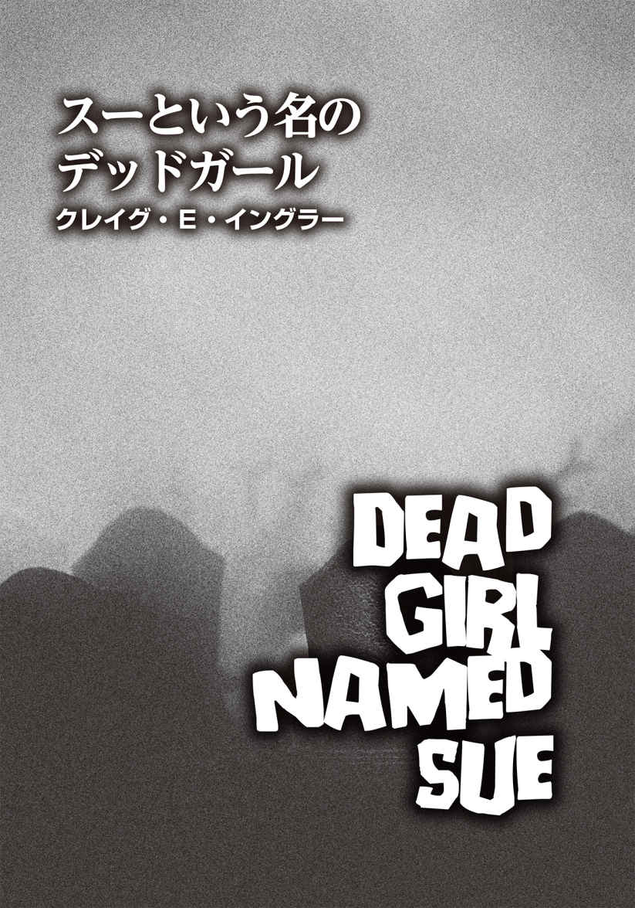
クレイグ・E・イングラー
Craig E. Engler
PROFILE
テレビドラマシリーズ『Zネーション』の企画、脚本、同作コミック版の原作に携わる。『ミッション：インポッシブル』シリーズで知られる俳優ヴィング・レイムス主演の『ゾンビ・クロニクル2』の脚本も担当。『ニューヨーク・タイムズ』『WIRED』などの媒体にも執筆するジャーナリストの顔も持つ。また、H・P・ラヴクラフトを題材にしたコミック『Lovecraft』や、減量したいオタク向けのハウツー本『Weight Hacking』も手がけた。
Twitter：@craigengler
「死んだ人間を殺したから俺を逮捕するっていうのか？」
後部座席から、クライヴン・リッジウェイがわめいた。手錠を外そうとしているのか、両手を激しく揺さぶっている。
「保安官、連中への攻撃は解禁されたってよ。ニュースではそう言ってる」
エヴァン・フォースターは振り向かなかった。バックミラーに視線をやることもなく、こう返した。
「最後にエッタと会ったとき、彼女はまだ生きてた。俺やおまえみたいにな。人殺しじゃないと完全に否定できるまで、こいつは殺人事件として扱うし、おまえは鉄格子の中にぶち込まれる」
エヴァンは、さり気なく「人殺し」の「人」を強調した。しかし、クライヴンは全く納得がいかないようだ。憮 然 たる面 持 ちで車の床にツバを吐き、声を荒らげた。
「おいおい、頼むよ！ 確かな証拠もないのに、あんたは無実の俺をパトカーで連行し、投獄するっていうのか。しかも、俺の家族は署に呼び出されるわけだ。俺の顔に泥を塗るのはやめてくれ」
容疑者の訴えを無視し、エヴァンはハンドルを切ってハリソン通りの角を曲がった。信号という信号は作動しておらず、どの家も真っ暗だ。停電になってすでに八時間。いつ電気が復旧するのか、見当もつかない。電力会社が出したコメントには、「無期限」という言葉が入っていた。電話が使える今のうちなら、誰かに連絡をつけることはできる。
「パトカーは初めてじゃないだろう？」
エヴァンは肩越しに訊 ねた。「テープカットのセレモニーでは、あんたの家族に世話になったな。とはいえ、殺人罪が軽減されるわけじゃないが」
「俺を逮捕したのは、エッタ・ウィナーソン殺しだけが理由じゃないな？」
クライヴンの問いに対し、彼は何も答えなかった。
パトカーはシェイファー通りへと入り、環状交差点 で方向転換をした。交差点中央の花壇では、たくさんのペチュニアが可 憐 な花を咲かせている。その花から名前を取った、地元の〈ペチュニア婦人クラブ〉が植えたものらしい。確か、木曜日に図書館で行われたレクチャーでそう言っていた。花は、ワイルドホワイト種が他の色より圧倒的に多く、花壇は白い色に占領されている。奇妙なことに。〝ワイルドホワイト〟は、天 然 痘 に似た「サル痘 」のウイルスのことも指す。白花とウイルスに関係性はないのだろうが、どちらも繁殖力は強い。そんなことを考えていると、見事に咲き誇る白い花が不気味なものに見えてくる。
花壇沿いに車を走らせていたそのとき、エヴァンは花の中に埋もれた死体を見つけた。思わず顔をしかめたが、車を止めるまでもないと判断した。後部座席の男をブタ箱に放り込んでから、戻ってきて死体が誰なのか確認すればいい。蘇 って動き出すタイプの死体ではなさそうだし、顔見知りの可能性も高かった。
わずか三時間前、彼は友人三人を仕留めなけれなならなかった。うちひとりは、保安官補のジャクソン・ヘイズだった。彼らの死因をどう説明すればいいのか、確かなことは言えない。他のふたりは交通事故に遭 い、ヘイズはその片方に心臓マッサージを施そうとしていた。アウトブレイク初期の犠牲者は、そのパターンがほとんどだ。生きた人間だと思い込み、助けようとして殺 られてしまう。
クライヴンは、性 懲 りもなく後部座席で手錠を鳴らしていた。あたかも手 応 えがあったかのようなカチャリという音の後に、悪態が続く。やれやれ、そんなことをしても、ますます手錠がきつくなるだけだというのに。
「いいか、よく聞け！ この件の結末は次のふた通りしかない」
クライヴンが声を上げた。「明日、裁判所で、裁判官が俺の無罪放免を言い渡す。それか、明日、法廷が開かれることはなく、裁判所の再開が二度と見込めないため、あんたは俺を釈放するしかなくなる。そのふたつのどちらかだ」
そして、男は少し身を乗り出し、不敵な笑みを浮かべた。「なあ、この異常事態をなんとかする手助けをしてやってもいいぜ。そんじょそこらの保安官補より、銃の腕前はいい」
「まあ、先のことはわからん。とにかく、どっちに転ぶか、じきにわかるだろう。だが、ヘンダーソン裁判官がおまえを再び釈放するとは思えないが」
「奴 が俺を釈放しなければ、妹が黙っちゃいない。ヘンダーソンは彼女に殺されるか、離婚されるかだ」
クライヴンはニヤリと白い歯を見せた。「一体、あれやこれやと濡 れ衣 を着せて、何度俺を刑務所送りにしようとすれば気が済む？ いい加減、気づけよ。裁判官は俺の味方。俺が牢 屋 に入ることはないっつーの。それにあんた、親父の口 利 きがあったから保安官になれたんだろ？ 次は俺が保安官に立候補しようかな。そしたら、罪をでっち上げて、おまえを逮捕できる。こいつは面白れえ」
クライヴンは手錠を外すのは諦めたらしいが、今度は、前後の座席を仕切る強化パネルを執 拗 に蹴り始めた。しかも、ひと言発しては、一発蹴りを入れるのを繰り返すという幼稚なやり方だった。
「俺は」
キック。
「絶対に」
キック。
「ムショ送りに」
キック。
「されない」
キック。
「わかった」
キック。
「か！」
最後の一発は、ダメ出しでもするかのように強かった。
呆 れつつも、エヴァンは落ち着き払って相手に話しかけた。
「クレイヴン、おまえがやってもいない罪で、私が逮捕したことは一度もなかった。有罪判決を受けなかったからといって、それが罪を犯していないことにはならない。どうも、まだその重要性をわかっていないようだな」
「くそっ！ たれ！」
そう言いながら、クレイヴンは背後からさらにキックを二発入れた。
「エッタばあさんのケースを考えてみようか」
エヴァンは前を見据えたまま話し出した。「彼女の死因は、事故や犯罪という確証はない。たまたまおまえが彼女に出くわし、襲われたという可能性もある」
「言っただろう、向こうが俺を追っかけてきたって。酔っ払ってたようだが、彼女、ガウンの前をはだけ、しかも全裸。パンツすら穿 いてなかった。気色悪いババアのたるんだ裸を見て、こっちは吐き気を催したぜ。さらに俺に近寄り、顔を嚙 みちぎろうとしやがった」
「おまえは噓をついていないかもしれないが、こういった状況下では、誰を殺してもどうせお咎 めなしだろうと思い込んでいるんじゃないか？ 自分の名前も思い出せないような老 婆 なら、なおさらのこと」
そう指摘されたクレイヴンは、再びキレた。
「ファック！」
キック。
「ユー！」
キック。
「の二乗！」
最後のひと言で、男は二回蹴りつけてきた。それがいかにもカッコイイと思っているように。しかし、全くもって逆効果だ。
「路上でばあさんを殺すのは、楽しそうだと思ったからやったのか？ そういうのは、〝快楽殺人〟って呼ばれてるんだ。知ってたか？」
クライヴンは横を向き、虚 ろなまなざしで表を見ている。
「俺は快楽殺人者なんかじゃない。あれは正当防衛だった。たとえそうじゃなかったとしても、どうやって違いがわかるっていうんだ！」
エヴァンの目は、こちらに近づく前方のヘッドライトを捉 えた。対向車が迫り、彼はスピードを落とした。それは郡の土木課のバンで、運転しているのは、クリス・ミラーだった。エヴァンがパトカーを止めると、クリスのバンも横づけして停車した。
「君たちは大丈夫なのか？」
エヴァンは窓越しに声をかけた。バンの助手席には、ビリー・オコネルの姿がある。
窓からクリスが顔を出し、「多少遅れちまったが、今のところ問題ない」と、答えた。
その視線はパトカーの後部座席に移動し、中のクライヴンを認めたのか、ピタリと止まる。
「なるほど......ね。じゃあ、万事順調だと考えていいのかな？」
含みのあるクリスの言葉に、エヴァンはうなずいた。
「万事順調だとも。私はこの容疑者を留置所まで連行する途中だ」
「了解」と、クリスはハンドルを握り直した。「こっちもそんなに時間はかからないはずだ。まあ、初めての事例だがな」
「やりたくないのなら、無理にやる必要はないんだぞ。他のボランティアを探すことだってできる」
クリスはそれを聞き、短く笑った。
「保安官、こんなふうに言うのは間違ってるかもしれないが、人生で、こんなに何かをやりたいと思ったことはなかった。俺とそいつは──」
彼はクライヴンを顎で指した。「古い付き合いだ。町の人間のほとんどが同じことを言うだろう」
「ほとんど、だろ。例外もあるわけだ」
「じゃ、保安官。刑務所で会おう」
「ああ、あとでな。二人とも怪 我 しないように気をつけろよ」
クリスは手を振り、バンを発車させた。
彼が去るなり、会話に聞き耳に立てていたクライヴンが口を開いた。
「保安官、一体全体、何が起きてるんだ？ クリスの目を見たか？ なんであいつはあんなふうに俺を見た？」
「おまえのことが嫌いなんだろ」
「それに、どうしてあいつは車で走り回れるんだ？ 町には戒厳令が敷かれてるんだとばかり思ってた」
バンのテールランプが道路の果てに消えるのを確認し、エヴァンも再び車を走らせた。
「私がクリスとビリーに手助けを頼んで、権限を与えたんだ。今はこういう状況だからな。いろいろと使い走りをやってもらってる」
「待ってくれ。それじゃ、あいつらが保安官補の立場にいるってことかよ」
クライヴンは呆れたように両腕を広げた。「あいつら二人分より、俺ひとりの方が保安官補としてよっぽど役に立つのに。あんたが懐中電灯を持たせたとしても、あの二人じゃ暗い部屋で化け物たちを見つけ出すことなんかできやしない」
「クリスたちはこの仕事に十分適任だし、私は彼らの助けが必要なんだ。おまえじゃなくてな」
後部座席の容疑者は返す言葉が見つからないのか、黙り込んだ。
エヴァンは、保安官事務所がある自治体の建物を目指した。この事務所には、保安官一名、補佐役二名、計三名が所属していたが、ひとり減ったので、現在は二名だ。同じ建物には、留置所、裁判所、市長執務室、書記官のオフィスも入っている。かなり幅広の正面玄関の扉は開けっ放しになっており、内部の非常灯の光が、夜の帳 が落ちてすっかり暗くなった外に漏れ出していた。
クライヴンを連れて極 力 歩かないで済むよう、エヴァンは玄関の真ん前に車を停めた。降車直後、辺りに誰もいないか確認する。すでに深夜ゆえ、景色はほとんど暗闇に溶け込んでいたが、薬局、金物店、カフェだけは、非常灯が点 いていた。
誰かが薬局の防犯ゲートを開けようとした形跡があった。しかし、窓を完全に破壊しない限り、侵入するのは無理だろう。薬局に押し入ろうとした輩 について、あとで調べなければならない。エヴァンは頭の中で、それを〝やるべき仕事〟のリストに加えた。とはいえ、薬局側が被害届を出すとは思えないが。
クライヴンを車から降ろそうとしたとき、遠くの方で人影が見えた。あるいは、見えた気がしただけだったのかもしれない。すかさず銃に手を伸ばしたが、すぐに引っ込めた。歩く屍 の一体であったなら、ぎくしゃくした動きでわかるはずだ。つまり人影は、本当の人間か何かで、距離を考えても、自分の仕事が妨げられることはないだろう。
車の後部座席からクライヴンを引っ張り出したエヴァンは、暗い建物内に入り、相手を背後から促して階段を上らせていく。男は始終抵抗していた。
「停電なのに牢屋に入れるっていうのか？ 俺にだって権利はある、これじゃ何も見えないじゃないか！」
「非常灯は点いている。四十八時間は大丈夫だ」
「今はよくても、四十八時間経 った後は？」
「おまえの言い分だと、裁判官が翌朝にはおまえを釈放するんだろ？ だったら何も問題ないじゃないか」
「あんたの言う通りになったらどうするんだ？」
エヴァンは即答しなかった。しばし考え、こう返事をした。
「クライヴン、私は、今やるべきことをひとつずつこなしているだけだ。四十八時間後のことはわからないが、夜は驚きのお楽しみだらけだ、とでも言っておこうか。そして、状況はずっと同じように続いていくだろう」
廊下を進んで保安官執務室を過ぎたとき、突然、暗がりから影が飛び出してきた。驚 愕 したクライヴンが身体を翻して引き返そうとしたので、エヴァンは反射的に手錠を強く摑 んで引き止めた。飛び出した影が、非常灯の光を背に二人の前に立ちはだかる。彼も一瞬身を強 張 らせたものの、すぐにそれがジョー・ドノヴァンだと判明した。ジョーは、庭木や芝 生 の手入れを行う〈ドノヴァンズ・ツリー＆ローン・サービス〉のオーナーで、最近殺害されたスー・ドノヴァンの父親だ。
クライヴンは、ジョーの顔を見ると、歩く死体に出くわしたどころではない猛烈な勢いで逃げ出そうとした。
「おい、保安官！ あの親父 がなんでここにいるんだ!? 」
半ば取り乱しながら、容疑者はエヴァンに問うた。
ジョーの目は赤く血走って肌は脂ぎっており、全身から熱波でも発しているのではないかと思うほど、異様な雰囲気を漂わせていた。地獄からやってきた悪魔のごとく、凄 まじい形相でクライヴンを睨 みつけている。だが、視線をエヴァンに向けるなり、ジョーの表情が変わった。
「保安官、無理だ。俺にはできない」
それに反応し、「できないって何をだ？」と戸惑うクライヴンを無視し、エヴァンはジョーに向かって話しかけた。
「ジョー、無理しなくてもいいんだ。私たちでなんとかする。君は、クリスとビリーが戻ってくる前に立ち去った方がいいだろう。あれを君が見る必要はないんだから」
「自分ではできると思っていたんだが......どうしても無理そうだ」
「おい、だから一体なんのことだよ！」
クライヴンは苛 立 ちを募らせているのが、口調からわかる。それでもエヴァンは彼を相手にせず、ジョーの肩に手を載せて言った。
「家に戻った方が安全だ。奥さんとゆっくり過ごせ」
「女房とまともに顔を合わせられるかどうかも不安だ。こんなことの後に......」
視線を落とすジョーに、エヴァンは力強く声をかけた。
「心配するな。ちゃんと目を見て話せるさ。君は何もしていない。君はされた方じゃないか。しっかり心の傷を癒 す必要がある」
すると、無視され続けているクライヴンが横から口を挟んだ。
「あんたら、さっきから何を話してるんだ!? おい、聞いてんのか？」
いくらわめかれてもジョーは男に取り合わず、「他の奴らは階下にいる」と、エヴァンに告げた。そして、ようやく再びクライヴンと顔を合わせるや否や、強烈な平手打ちをかました。唐突に頰をぶたれた容疑者の頭は、振り子のように大きく揺れた。そしてジョーは指を立て、クライヴンの顔面に突きつけた。怒りの言葉をぶちまけるのかと思いきや、しばらく睨んだ後、無言で腕を下げただけだった。こちらを押しのけて歩き出したジョーは、数歩進んだところで足を止め、肩越しにエヴァンを見た。
「言われた通り、女房の顔を見に家に帰ることにするよ」
ジョーが足早に立ち去ると、クライヴンは「なんなんだよ、あのおっさん！」と悪態をついた。「いきなり平手で叩 きやがって。あいつの暴力行為はお咎めなしか？」
「間が悪かったな。私はたまたまよそ見していて、おまえが叩かれる瞬間を見逃した」
肩をすくめる私にイラつき、クライヴンは壁を思い切り蹴った。
「保安官、こんなの不公平だろうが！ 俺のことは正当な理由もなく逮捕したくせに、頭のイカれたドノヴァンが俺をサンドバッグ代わりにしてもいいってか？ 納得いかねえ！」
「もしも彼がおまえを叩いたというなら、幸運だったと思え。彼と同じ立場の他の父親だったら、手錠をかけられたおまえを目の前にして、平手打ちどころで済むわけがない」
「だからさ、俺はドノヴァンの娘とはなんの関わりもないんだって。何もな！ アリバイを証明する証人だっている。あんたら、何かひとつでも物的証拠をあげたのかよ！」
エヴァンは即答しなかった。しばらく口を結び、クライヴンの焦燥感を助長した末に「事もあろうに──」と切り出した。「我々が連絡を取れる唯一の法医学者がヨーロッパ旅行に行くと決めてね。飛行機はファーストクラス、宿泊先はフォーシーズンズホテルと来たもんだ。今頃、さぞかし素晴らしい旅を楽しんでいるだろうな。しかし、法医学者が都合よくいなくなって、おまえは本当に運のいい奴だ」
「それとこれとは、無関係だ！」
クライヴンは大声を上げた。「旅行を決めたのはそいつの勝手で、俺がコントロールできるもんじゃない」
「私はおまえがそれに関係してるとは、ひと言も言ってない。おまえの父親の仕業だろう」
エヴァンはクライヴンを促し、階段へ向かった。そこを降りれば、独房のちょうど裏手に着く。
階下には小さな独房が二つあり、少し離れて狭いキッチンもあった。保安官補たちが、そこでよくコーヒーや軽食を作っていた。役場の職員のフィオナ・ハプスブルグは、香ばしい匂いにつられてしょっちゅう降りてきたのだが、彼女はここに集いに来ても、血圧に悪いからとコーヒーは飲もうとはしなかった。
今日、そこにフィオナの姿はなく、代わりにジェレミー・ポッターとシンディ・ケールがコールマンの電気ランタンを囲んでテーブルに座り、シリアルバーを食べていた。二人とも武装している。ジェレミーは、戦時中に父親が使っていた45 口径自動拳銃コルトＭ１９１１を、シンディは十五歳の誕生日に贈られたという猟銃を携えていた。
「あら、保安官」
彼女がこちらに気づき、声をかけてきたので、エヴァンも彼らに会釈した。
「ここで、何が起きてるんだ？」
二人の銃器に違和感を覚えたのか、クライヴンは怪 訝 な表情になった。「こいつらも新顔の保安官補なのか？」と、エヴァンに耳打ちするように訊 いてきた。
ジェイミーは容疑者に氷のようなまなざしを向け、シンディは〝かわいそうに。あんただけが蚊 帳 の外ね〟と言わんばかりの冷笑を浮かべている。
「保安官補というよりは、事件関係者に近い」
そう答え、エヴァンは容疑者を独房に連行しようとしたが、男は本気で抵抗を始めた。
「ははあ、読めたぞ！」
クライヴンは目を見開いた。「保安官、あんたは俺に恨みを持つ奴らを集めてんだろ？」
エヴァンは相手にせず、房へ行けと急 き立てた。しかし、クライヴンは頑として受け入れなかった。
「ここで死刑にするつもりだな？ 檻 に入れて、こいつらが見ている前で頭に弾丸をぶち込む気か？」
「なんのためにわざわざそんなことを？」
エヴァンが呆れて訊くと、クライヴンは早口でまくし立てた。
「俺がいかにクソ野郎か、こいつらが話したのを、保安官は鵜 吞 みにしてるんだろ？ 俺がジェレミーの兄貴に何をしたかとか、シンディの高校の卒業ダンスパーティの夜に何があったとか、ドノヴァンの娘に何が起こったとか。ジェレミーやシンディやドノヴァンの言葉を真 に受けやがって。今夜俺を襲ったエッタばあさんについても、なんか隠してるな？」
「余罪があるのなら話は別だが、とにかくエッタばあさんに関するおまえの話が真実だという裏が取れれば、おまえは釈放される」
「あのババアのことなんかどうでもいい！」
「ん？ 何か他にやましいことがあるのか？」
エヴァンはクライヴンを立ち止まらせ、その夜初めて彼とまともに向き合った。こちらのまなざしの奥に何かを見たのか、相手はギョッとして固まっている。エヴァンはつとめて無表情であったが、目に浮かんだ憎悪の炎までは隠せない。
「白状したいことがあるんだろう？」
クライヴンは助けを求めるように周囲を見回したが、ジェレミーは相変わらず冷やかな視線を向けており、シンディはクスクスと笑っている。
「正直に話すチャンスは一度だけだ」
エヴァンはきっぱりと言った。「最後にもう一度訊く。白状したいことがあるのか？」
クライヴンは顔を背け、「──ない」と弱々しく答えた。今や抗 う様子はなく、エヴァンに促されるまま独房に入った。
奥行きが三メートル、幅四メートル半の広さの独房には、お決まりの金属製のトイレと洗面台、ベンチが片側の壁に据えられている。ベンチはベッドの役割も果たす。容疑者がここに拘留されるのは、通常、郡刑務所に移送されるまでのせいぜいひと晩かふた晩なので、造りは実に簡素。収容者の快適さは全く考慮されていない。
独房の扉には、腰ほどの高さに長方形の開口部が設けられており、必要に応じて手錠をかけたり外したりする際に用いる。中に押し込まれるとすぐに、クライヴンはその開口部から手錠をかけられた両手を差し出してきた。こういった境遇に慣れており、手錠を外してもらえるのは当然だと思っているのだろうか、反射的に出た行動に思えた。もちろんエヴァンは無視をした。
「おい、保安官！ 手錠は外さないのかよ!? 」
ドア越しに怒鳴る容疑者に、エヴァンは即答した。
「今夜は手錠と仲良くねんねするんだな」
投獄から一時間が過ぎた。クライヴンはできるだけくつろごうと虚しい努力を続けているのか、独房の中で忙 しなく動き回っている。落ち着きのない容疑者を尻目に、エヴァンはジェイミー、シンディとともにテーブルを囲み、抑えた声で会話を続けていた。
「彼らを捜しに行った方がいいんじゃないか？」
しばらくして、ジェレミーがそう切り出した。
「あの二人ならきっと大丈夫だ」と、エヴァンは答えた。開いたノートにぼんやりと視線を落とし、その晩の出来事についてを思いをめぐらせる。仕事用の帳面に加え、彼は私用のノートも作り、起きたことや考え、閃 きを書き留めておく習慣があった。わずかな箇条書きだが、頭の中で物事を常に整理しておくのに大いに役立つ。この日に書き込んだメモは、過去に綴 った全ページよりも多い。中でも、ひと際大きな文字で書かれた一文が目に飛び込んできた。
〝ヘイズの頭を撃った〟
保安官に選ばれて四年、昨日までにエヴァンが銃を使ったのはたった一度。車に轢 かれ、無残な状態で息も絶 え絶 えだった鹿を安楽死させたときだけだ。
今夜だけで、彼はすでに十七発の銃弾を放ち、少なくとも十一人を殺した 。殺したという表現が適切なのかどうかはわからないが、相手は、かつて人間だったものの、死んだのにどういうわけか蘇った例の奴らである。パトカーのトランクを開け、弾の補充をしなければならかったのも、今 宵 が初めてだった。
何か悪いことが起きると、人々は「悪夢が現実になった」と口々に言ったりするが、彼自身その表現がそのまま当てはまる経験をしたことは今までなかった。さらに、ひとり、二人と撃ち殺していくうちに、銃撃することに何も感じなくなった。その事実にも、エヴァンは衝撃を受けた。それでも、頭を撃ち抜けば、あの生ける屍は二度と起き上がらないとわかってからは、少し作業 が楽になった。死んだ人間があのような化け物と化す原因はわからないが、蘇った死体たちは動きが鈍く、ぎこちなくなるようだ。接近しすぎたり、パニックに陥ったり、弾切れにならない限り、こちらが殺られる可能性は低い。
住民のほとんどが銃を所有し、撃ち方を知っているこの小さな町では、屍たちは発見されたそばから片づけられ、最終的に町の安全は確保できた。今のところ、最悪の事態は収束したと言えるのかもしれない。彼らは郡の公用車のバンを出し、死体の回収を開始した。そして、世の中が一体どのようになっているのかを把握しようとした。大都会の方が状況はひどいに違いないと、エヴァンは確信していた。
突然、上の階で大きな音がし、彼は我に返った。誰かが暴れ、壁やドアを叩いている。ジェレミーとシンディはすかさず銃を構えたものの、エヴァンは拳銃をホルスターに入れたままだった。上にいるのは、クリスとビリーだと考えたからだ。〝手 土産 〟とともに無事に戻ってきたのだろう。
「現状はこうだ」
彼は鉄格子越しにクライヴンに説明した。「法医学者がヨーロッパに行って不在だから、司法解剖のために、スー・ドノヴァンの遺体をサマートン郡に運ばねばならなかった。少なくとも、我々が速やかに移送すべきだったんだが、向こうも多忙で手が空 かなくてね。スーはずっと死体安置所で置かれたままだった」
上階の騒音は激しさを増していた。壁にぶつかる衝撃音とともに、廊下に並べられていた写真のパネルが叩き落とされるのがわかった。それから重たい何かがドサリと倒れる音に続き、クリスの大声が響いた。
「彼女を落ち着かせろ！ クソッ」
エヴァンは気にも留めなかったが、容疑者の視線は階段の方に釘 づけになっている。
「クライヴン、私が何を言おうとしているのか、察したか？」
階段の上からは、さらに激しい物音が聞こえた。厚手のプラスチックが擦 れる音がしたかと思うと、何かがどこかにぶつかり、床に落ちた鈍い音が続く。階下にいても、クリスとビリーが息を切らす様子まで手に取るようにわかった。
「手を貸してくるよ」
上があまりにもドタンバタンと騒がしいことに痺 れを切らしたのか、ジェレミーが立ち上がり、階段を駆け上がっていった。
「なんで保安官が死んだ娘の解剖の話にこだわってんのか、俺にはさっぱりわからん」
クライヴンは騒音を気にしつつ、エヴァンに返事をした。
「通常の解剖なら、脳を取り出して重さを測ったりするんだが──」と、エヴァンは説明した。「今回のケースでは、ごく基本的な計測だけして、死体置き場の棚に寝かせておいたんだ」
容疑者は鉄格子に顔を押しつけ、目を大きく見開いている。クリスたちが何を運んでくるのか、気が気でないらしい。
「つまり、彼女......スー・ドノヴァンは、上にいるっていうのか？」
クライヴンの問いかけに、エヴァンは首を縦に振った。次の瞬間、ドン、ドン、ドンと荒々しい打撃音が三回続き、独房の中の男は縮み上がった。
「あの音はなんなんだ？ 頼むから教えてくれ！」
声を震わせて訴えるクライヴンをじっと見つめ、エヴァンは思わせぶりに言った。
「──あれが何か、おまえはすでに気づいているはずだ」
クライヴンは言葉にならない言葉を発した。おそらく「ノー」と言うつもりだったのだろうが、まるで肺を患 っていた人間が臨終直前に吐いた最後のひと息のような音だった。男は咳 払 いをし、「ノー」と言い直した。「俺はただ──」
そのとき、クリスが階段を降りてきた。後ろ向きに一段一段足を運んでいる。その両手は黒い袋の端を摑んでいた。ねじれたり、波打ったりしているが、それは死体袋だった。反対の端を持つビリーも姿を現わした。最後にジェレミーも降りてきた。おそらく駆けつけても、彼はなんの役にも立たなかったに違いない。
突然、死体袋が激しく揺れて金属の手すりにぶつかり、ゴングを鳴らしたような鋭い音を響かせた。その反動でバランスを崩したクリスは、危うく階段から転げ落ちるところだった。
とうとうクライヴンは全てを悟ったらしく、叫び出した。
「やめろ！ そんなもの運んでくるな！」
エヴァンは目を細め、容疑者を見た。
「私はてっきり、おまえは彼女のそばにいたいんだとばかり思っていたが。彼女の親友のジェニー・ジェイコブスによれば、あの晩、おまえは彼女から離れようとしなかったそうだな。発情期の犬みたいにスーにつきまとっていたと言っていたぞ」
「そんなのデタラメだ！」
鉄格子を乱暴に揺さぶり、クライヴンは怒鳴り散らした。「何ひとつ真実じゃない！ これは誤認逮捕だ！」
身 悶 えする袋と格闘しつつも、クリスとビリーは階段を降り切り、独房の前にやってきた。床に置かれた死体袋がくねくねと動き続ける様 は実に奇妙で、胸 糞 が悪くなる。クリスは袋から手を離すや否や、一定の距離を保ちながら反対側に移動した。二人とも激しい肉体労働で汗びっしょりだ。大したことはしていないはずだが、ジェレミーも汗をかいている。
「スーはまだ十三歳だった」
エヴァンは死体袋を見つめて言った。「十三歳の少女を追いかけ回す男など、とんでもない人でなしだ。そう思わないか？」
死体袋とできるだけ離れようとしてか、男は牢屋の奥の片隅にへばりつき、「クソッ！ クソッ！ クソッ！ くたばりやがれ！」と、罵 りの言葉を連発した。
その様子を見たシンディは嘲 笑 った。
「今夜、くたばるのはどっちかしらね」
ジェレミーは今にも吐きそうな面持ちで、「ちょっと......新鮮な空気を吸いに上に行ってくる」と歩き出したが、地下から立ち去る前にクライヴンに目を向けた。「できるだけ時間がかかればいい。この下 衆 野郎め、聞こえたか？ できるだけ長く。じわじわとな」
クリスは四苦八苦しながら、死体袋を所定の位置に留めていた。しかし、それも限界のようだった。
「保安官、もういいかな？」
エヴァンはうなずくと、銃を抜き、独房の鍵を取り出した。片手で檻の鍵を開ける間、もう一方の手で握った銃は容疑者に向けられていた。
「クライヴン、これからドアを開ける。逃げ出すそぶりを見せたら、脱獄を企てたと見なし、容赦なく引き金を引かせてもらう」
そう忠告したものの、さっきまでの強気な態度はなりを潜め、男は房の隅ですっかり怖 気 づいている。
「こんなの......間違ってる」
クライヴンは独り言のようにつぶやいた。「こんなのおかしいよ......」
「まるで、これまで間違ったことを一度もしたことがないような口ぶりね」
シンディは冷笑を浮かべたまま言い放った。「私は楽しませてもらうわよ。一秒たりとも見逃さないわ」
エヴァンはクリスとビリーに顎で合図をした。「入れろ」
彼らは死体袋を独房内へ引きずり始めた。途中でドア枠に引っかかったものの、なんとか向きを変え、中に引き込むことができた。死体袋は始終激しく動いており、あたかも袋に詰められたハチの大群が外に出ようと必死にもがいている様を想像させた。やっとのことで運び込んだ袋をまたぎ、クリスは「で、どうします？」と、エヴァンに訊いてきた。
「ファスナーを少し開き、外に出ろ。その前に、ビリー、君は先に房から出ておけ」
そう指示するエヴァンは、いつでも発砲できる態勢でいた。クライヴンか死体袋、どちらが標的になってもいいように神経を尖 らせていた。
鉄板の上に載った熱々の食べ物を摑むかのごとく、クリスは恐る恐るファスナーをつまみ、三センチほど開けた。一旦指を止めた後、再びファスナーを引く。今度は十センチ。すると、開口部からいきなり腕が突き出て、彼を摑もうとした。
驚愕の悲鳴を上げたクリスは、反射的に跳ねて袋から離れ、ドアへ駆け寄った。表に出るや否や、彼はへなへなと座り込んだ。腕はまだ、彼を求めて激しく動き続けている。どす黒く変色し、ところどころが醜くただれた肌とは対照的に、指に塗られた赤いマニキュアは美しい艶 を保ったままだ。
肩で息をするクリスに、エヴァンは「大丈夫か？」と声をかけた。こくりとうなずく彼が完全に檻の外に出たことを確認し、エヴァンはドアの鍵をかけた。
「私が何を見つけたのか、わかったか？」
今度は、クライヴンに訊いた。しかし、向こうは返事をする余裕はないらしい。
死体袋からゆっくりと這 い出す少女の姿は、さなぎから孵 化 する蝶 のようでもあった。ビリーとクリスはすでに上階に去っていた。ビリーは、とてもじゃないがこれから起きる一部始終を目撃できるほど胃が丈夫ではないと退席の理由を述 べ、すっかり憔 悴 したクリスは、何も言わずに相棒についていった。ところが、シンディは全て見届ける気満々でその場に留まっていた。しかも、平気でシリアルバーを頰張っている。
「彼らは生きているものならなんでも食べる。人間も、馬も、犬も。獲物と一緒に放っておいたら、骨まで食べ尽くす」
平然とした顔でそう言い、彼女はまたシリアルバーにかぶりついた。
袋に入れられていた死体の少女スーは、やっとのことで立ち上がった。すでに肉を嚙み下しているかのように、顎を動かしている。
クライヴンはぴったりと独房の壁に張りつき、周囲を見回している。何か盾 になりそうなものはないか、どこかに脱出口がないかと探しているのかもしれないが、言うまでもなく、それは徒労に終わるはずだ。
「ダメだ。やめろ。こんなのおかしい。絶対におかしい。頼む。やめてくれ」
まるで怯 えた子供のように、彼はずっとつぶやき続けている。
スーはゆっくりと顔を上げ、慎重に辺りを探るかのごとく首をひねった。そして、クライヴンを見つけるや、奇妙な唸り声を上げ、その方向に歩き始めた。歯間から漏れ出る息が、なんとも嫌な音を立てる。一歩、また一歩と近づくスーに、クライヴンはパニックに陥った。
「来るな！ こっちに来るなって言ってんだろうが！」
スーが間近に迫ると、男は半狂乱になってめちゃくちゃに蹴りを繰り出した。乱暴に足を振るたび、後ろ手にかけられた手錠がカチャカチャと鳴る。しかし、支離滅裂なキックは全くといっていいほど当たらず、彼女を後退させることはできなかった。とうとうスーは彼の片足にすがりついた。だが、彼女の手が触れた途端、クライヴンは火でも点いたかのように転げ回り、足を振りほどくことに成功した。同時に頭に蹴りを食らわせ、続けざまに顎へパンチも命中させた。かなり強烈な攻撃に見えたものの、スーは痛みを感じないのか、動きが一瞬鈍っただけで、ダメージを受けた感じは全くない。執拗に手を伸ばし、再びクライヴンの足を摑んだかと思うと、ジーンズの上からふくらはぎに歯を立てようとした。
男のつぶやきは、いつの間にか恐怖に満ちた絶叫とわめき声に変わっていた。彼はもう一度足を引き抜き、スーの頭めがけてキックした。ところが、スーに足を取られ、バランスを崩してしまった。二人とも一緒に床に倒れ込み、彼女がクライヴンの上に乗る形となった。彼はスーを押しのけようと必死で抵抗している。
深く息を吐き、エヴァンは牢屋に背を向けて歩き始めた。途中で足を止め、「一緒に来るか？」と、シンディに訊ねる。クライヴンの悲鳴が轟 き、彼は大声を出さねばならなかった。
シンディは首を横に振った。その視線は独房に向けられたままだ。
エヴァンはうなずき、その場を去った。オフィスに入り、デスクについたが、階下でクライヴンが喘 ぎ苦しむ物音はどうしても耳に入ってくる。彼はノートを取り出し、スー・ドノヴァンの事件が書かれたページを開いた。「容疑者」の欄 にあったクライヴン・リッジウェイという名に線を引いて消す。同じページのずっと下には「共犯者」の欄があり、アベル・リッジウェイの名が記入されていた。クライヴンの父親だ。
夜明けはまだ先だ。アベルに対処する時間は十分にあるだろう。エヴァンはそっとページを閉じた。
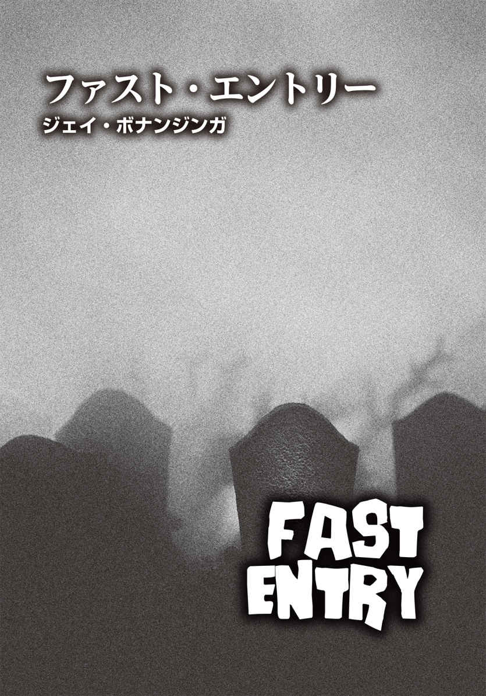
ジェイ・ボナンジンガ
Jay Bonansinga
PROFILE
24作の小説を上梓したニューヨーク・タイムズベストセラー作家。ブラム・ストーカー賞最終候補となった『ブラック・マライア』（ベネッセコーポレーション 刊）、国際スリラー作家協会賞最終候補作『Shattered』、世界的な認知度の『ウォーキング・デッド』の小説版『ウォーキング・デッド ガバナーの誕生』（角川書店 刊）で知られる。ボナンジンガの作品は16ヶ国語に翻訳され、シカゴ・トリビューン紙は彼を"極めて想像力に富むスリラー作家"だと称えている。映画界では、巨匠ジョージ・A・ロメロ、『24─TWENTY FOUR─』シリーズの俳優デニス・ヘイスバート、ウィル・スミス主演作を手がけるオーバーブルック・プロダクションとの仕事を手がけた。ボナンジンガは、妻で写真家のジル・ノートンと2人のティーンエイジャーの息子とシカゴで暮らし、目下、『ウォーキング・デッド』小説版の次回作に取組んでいる。邦訳は他に『シック』（学習研究社 刊）がある。
Twitter：@JayBonansinga
１ 無の境地
彼女はその日、フォート・デニングに到着した。「死」や「騒乱」は、今、彼女の意識からは遠く離れた場所にある。手順通り、愛車シボレーＳ10 を入り口から一ブロック離れた場所に停め、雑念を払った。大西洋沿岸部は天気が良く、メリーランド東部の潮 溜 まりや河口の上には、澄んだ青空がどこまでも広がっていた。ホワイトオークの格子状の塀越しに太陽が降り注ぎ、ところどころに錆 がある彼女のピックアップトラックの屋根には、まだら模様の陰ができている。息を吸い込むと、マグノリアとクローバーの匂 いが鼻 腔 をくすぐった。エンジンを切り、彼女はバックミラーで自分の顔をしげしげと見た。
禅の〝無の境地〟に達するべく、静かに長く息を吐き、頭の中から〝ホワイトノイズ〟を押し出していく。絶え間なく飛行するドローンは、超能力者の職業上の邪魔もので、連日彼女を悩ませている。しかし今日、自分が〝歩く悪夢〟に遭遇することになろうとは、全く信じていなかった。明け方に安全な回線で送られてきたメッセージを読み、神経質になる理由は何もないと彼女は悟った。
〈こちら、コマンドコントロール〉
これといった特徴がなく、形式ばっていたが、柔らかく耳 障 りのいい女性の声が、東部標準時の午前六時から数分過ぎた頃、彼女に告げた。〈本人確認をお願いします〉
「何？ 一体......何時なの？ ちょっと待って」
寝ぼけまなこの彼女は、二日酔いであることをごまかそうとしつつ、口ごもった。昨晩も酒に溺れてしまった。クラブでビリヤードのエイトボールを二回プレイし、正体を失うまで浴びるほど飲んだ。当然のことながら、人目もはばからずに嘔 吐 し、酒浸りの浮浪者のような千鳥足でなんとか家まで帰った。そして今、国防情報局の誇りあるスリーパーらしく話せるよう、悪戦苦闘している最中だった。スリーパーとは、作戦実行まで、派遣された土地で一般市民として普通に暮らす工作員を指す。作戦実行の合図を受け取るや否や〝覚 醒 する〟ため、スリーパー（睡眠者）と呼ばれるものの、今日は文字通り、まだ目が覚めていない状態だった。
「あ......ごめんなさい。うーんと......こちらはフォー・スリー・ツー・ウィスキー・ゼブラ。コマンド、先を続けて」
〈フォー・スリー・ツー、グリニッジ標準時三：〇〇に発生した、レッドレベルの出来事が進行中です〉
「了解」
彼女は自分が送り込まれる時間と場所が指定されるのを待った。不安は全く感じない。前回のレッドレベルの一件は、いかがわしい外交官の記憶をスキャンする仕事で、ものの見事に時間の無駄だった。該当者はイラン側のスパイではないかと疑われていたが、彼の頭の中を探って見つかったのは、大使の娘をオカズにした自慰行為用の妄想ばかりだったのだ。どうせ今回も政府関係の退屈な骨折り仕事だろう。詳細が届くのを待ちながら、彼女は大きなあくびをした。
〈本日一二：三〇、ブラック・キャンドルスティックで迅速に エントリーする必要があります。最優先事項。セキュリティのコードブルーは実行中〉
その時点で通話は切れた。
コマンドコントロールから指令を受けたのはつい今朝のことなのに、今では何週間も前のように思える。彼女はバックミラーに映る自分の顔を見た。丸い輪郭。キャラメル色の肌。決して高くない鼻には、ゴールドのピアスリングが光っている。瞳の色はチョコレート色で、目は充血していた。赤い毛細血管が、まるで複雑に絡み合うハイウェイの極小版ロードマップみたいだ。最後に深呼吸をひとつつき、気持ちを引きしめる。そして、ダッシュボードを開けた。
ティトス・ウォッカの小さめのボトルが、自動車登録証のホルダーと45 口径ＡＣＰ弾を装 塡 したダブルタップピストルの下に置かれていた。ウォッカは迎え酒だ。匂いもなく、色もないし、彼女の二十四時間底なしの欲求を一瞬で満たしてくれる。政府の操り人形として耐えなければならない苦痛の緩和剤として、なくてはならない。国家のために任務を遂行するマインドリーダーといえば聞こえはいいが、他人の思考の最深部で澱 む汚れた空間でもがくことが、どれほど辛 いか──。
ウォッカの瓶を取り出してキャップを回し開け、一気に三分の一を飲んだ。
「また今日も金のために働くわ」
ジャスミン・メイウェルはそうつぶやき、ボトルをダッシュボードに戻した。そして、ピストルを摑 み取った。
２ 遠隔透視
彼女が首から下げた訪問者用の許可証を展示すると、守衛小屋の偏屈そうな男は顔を歪 めた。
「それ、古いやつだ」
そう言って口をへの字に曲げた警備員は、許可証を観察するふりをして彼女を頭から足の先まで舐 めるように眺めている。たるんだ皮膚に白髪 頭 の高齢の彼は、かなり昔、常備軍の兵士だった退役軍人だろう。視線は最後に胸元で止まり、少ししてようやく目を離した。この男の頭に入る必要はない。彼の意識の流れに漏出しているものなど、知りたくもなかった。
彼女ほどの容姿の持ち主なら、男性の視線には慣れっこになっているのだが、だからといって気持ちのいいものではない。またこいつもか、とゲンナリしてしまう。とはいえ、相手によっては、色目を使われるのが快感だったりもするものの、今回はその例ではなかった。
警備員は好色な目つきでこちらを見つめ、声を低めて言った。
「北部の騒ぎのせいでここに来たのか？」
「北部の騒ぎって？」
彼女は首を傾 げた。
「ピッツバーグやエヴァンス・シティ郊外の墓地で起きた騒動だ」
控えめな笑みを浮かべ、彼女は首を振った。
「何も知らない」
「この中でも何かが起きてる」
彼は親指で背後を示した。石レンガ造りの建物が複数並んでいる。
「正式な通告と見なすわ」
彼女のジョークを鼻で笑い、警備員は許可証に目を向けてうなずいた。
「それは近いうちに更新した方がいいな。中の誰かに止められたら、通行は認められたけど、警備員に厳重注意されたって言えばいい」
「覚えておく」
あとでこの男に酒でも奢 らせようかという衝動と戦いつつ、彼女は少し気があるような笑顔を見せた。「ＣＯ に会ったら、すぐに更新するわ。約束する」
ウィンクをして歩き出し、基地に入った彼女だったが、死角に入るまで男の視線が尻に向けられているのを感じていた。あのオヤジには、十分すぎるほど目の保養を与えてやった。身体にフィットした素材の服で強調した、豊満なヒップとバスト。様々な民族の血が入ったエキゾチックな顔立ち。ファッションモデル気取りの軽快な足取り。全てが計算づくだった。ジャスミン・メイウェル曹長は、膝丈のブーツのかかとを鳴らし、まるで頭の上に本でも載せているかのようにバランスの取れた美しい姿勢で歩を進めた。イラクの軍務でも普段とは全く違う歩き方をでっち上げ、仲間の兵士たちから歩兵そのもののだと言われていた。
目指すは、敷地の南端にある中央処理センターだ。
メリーランド州フレデリック郊外の中流階級が多く住む緑豊かなエリアに、フォート・デニングは位置している。敷地面積一二〇〇エーカーのＬ字型の土地は大学のキャンパスを彷 彿 とさせ、表向きは米陸軍医療指令センターということになっていると聞いた。一見、どこにでもありそうなグレーの石板と赤レンガの無味乾燥な建物で、存在すらしていないのではないかと思えるくらい印象に残らない。あるいは、なんの変哲もない小規模ショッピングセンターやワシントンＤＣの政府ビルの廊下に、カメレオンのごとく見事に溶け込みそうだ、と言うべきだろうか。
事実、造園整備をして美化された平凡なモーテル風のデザインは、この場所の歴史を考えると、何百倍も悪意がある。冷戦時代、フォート・デニングは軍の生物化学兵器研究プログラムの中核であった。マスタードガスから兵器化された海洋潮 汐 まであらゆる生物化学兵器が扱われ、実行に移された。一九五〇年代、デニングでは、病気の媒介生物として昆虫を使う可能性も研究された。ダニ、ノミ、アリ、シラミも対象だったものの、国境線を越えて黄熱病ウイルスを運ぶ蚊がメインだった。人間の被験者は、生物化学兵器の開発に使われた。デニングは、米政府がＨＩＶを発明 した場所だと長年噂 されている。
またここは、ジャスミン・メイウェルの暴力的な父親をも作り出した。バートランド・メイウェル大尉は、極秘プロジェクト〈サン・ストリーク〉の最も有能な被験者だった。遠隔透視能力者として、大尉はデニングの隔離された監房の中に座り、敵のパイロットや兵士の目や耳に彼自身を投入 させるのが任務だったのだ。膨大な量の情報を収集すると同時に、進行性の腫 瘍 を相手に植えつける。ただし進行具合は非常に遅く、手遅れになるまで気づかれることはない。
父親と最後に過ごした数年間は、ジャスミンにとっては生き地獄だった。大尉の唯一の世話人だった彼女は、最低の扱いをされた。ツバを吐かれ、平手打ちをされ、怒鳴られ、口汚なく罵 られるのは日常茶 飯 事 で、挙 げ句 の果てに重度の依存症になった。だが、おそらくメイウェル大尉が娘に負わせた最悪のものは、彼が母親から劣性遺伝として受け継いだ特殊能力だろう。父の母、すならちジャスミンの祖母は、キューバで信仰されているサンテリア教信者で、一九五五年にミシシッピーで絞首刑にされている。そして、大尉の特別な能力は優性遺伝子として、扁 平 足 や季節性アレルギーと同様に、いとも簡単に娘に継承されたのだった。
行きずりの関係ばかりの孤独な日々。自暴自棄になってクスリに頼る毎日。ジャスミンの人生をそんなものにしたのは、この呪わしい能力に他ならない。
もちろん、この不吉なフォート・デニングの秘められた歴史の数々は、建前上、ジャスミンとは無関係、ということになっている。念には念を入れた二度目のセキュリティポイントで、神経を尖 らせた一連の憲兵にＩＤと小型拳銃を見せるまでは──。地下に潜るエレベーターが並ぶホールにたどり着くと、ようやく「厳戒態勢」や「緊急発進」といった用語が耳に入ってきた。
「申し訳ありませんが、本日、ここから先へは進めません」
緊張の面 持 ちの憲兵が、機械的な物言いで告げてきた。糊 の利 いたユニフォームのボタンを、喉仏までかっちり留めている。彼はカービン銃Ｍ４を胸の高さで構え、エレベーターの前に立ちはだかっていた。童顔ではあるものの、表情は相当険しい。
ジャスミンはまっすぐに彼を見た。
「命令を受けて来たのよ」
「ここは閉鎖されました。下では異常事態が発生中で、完全な隔離状態。警報が鳴りやみません。あなたが降りたとしても、連れ戻すことはできませんよ」
任務を遂行しなかった場合、どれだけの書類を書かねばならないかを想像し、彼女はため息をついた。
「私がなんとかできるかも」
ジャスミンはバッグを探り、命令書を取り出した。「最初のチェックポイントでこれをもらったの」と、彼女は文章がタイプされた一枚の紙を護衛に手渡した。「私は下に行く必要があるみたいね」
実際のところ、彼女はその極秘文書に軽く目を通しただけで、きちんと読んだわけではなかったが、次のような内容だった。
──ペンシルベニア州西部で約四十八時間前に発見されたアウトブレイクの発 端 と拡大に関する情報を突き止めるため、最初の患者の記憶を読み取ること──
しかし、ジャスミンは知っていた。搬送患者数がＥＲ の許容量を超える緊急事態を指す〝コード・ブラック〟のアウトブレイクが発生し、しかも原因が不明の場合、ＣＤＣ（Centers for Disease Control and Prevention／疾病対策予防センター）は謎めいた事態をＤＩＡ（Defense Intelligence Agency／国防情報局）に引き渡すことがほとんどだ。そして、通常ＤＩＡは、考えられ得るあらゆる原因の調査──たとえ病気の発生源が台所の流しにあろうとも──を海軍特殊部隊ネイビーシールズやＮＳＡ（National Security Agency／国家安全保障局）、インターポールに丸投げする。挙げ句の果てには、生まれつき超能力を持つ者たちを集めた団体や政府お抱えの霊能者たちといった秘密工作員にまでそのお役目が回ってくることもある。ゆえに今回、輝かしい功績を有する将校であり、見た目にはいたって完璧な〝隠れ酔っ払い〟のジャスミン・メレディス・メイウェル曹長のようなファスト・エントリーのスペシャリストが必要とされたのは、至 極 当然の流れだった。
彼女は童顔の憲兵が命令書を読み終えるのをじっと待っていたが、脳を含め、全身がアルコールを欲していた。
「では、お好きなように」
憲兵は書類をこちらに突き返し、エレベーターの前から脇に移動した。
「感謝するわ」
彼女は社交辞令を述べ、ボタンを押した。エレベーターの扉がガタガタと開き、中に乗り込むと、扉が再び音を立てて閉まった。
エレベーターはどんどん地下へ潜っていく。乗っている間の時間は、永遠のようにも感じられた。
３ 深層意識
エレベーターを降りても、そこに死体などなかった。空 っぽの廊下では、警報が耳に痛いほど轟 いている。拳銃を引き抜いたジャスミンは、血 飛沫 で染まったデスクの横を通り過ぎた。普段なら警備員がいるはずだが、どこにも姿はない。大気は静電気を帯びており、鉄 臭 い血の匂いが充満していた。医療棟に続くセキュリティドアが開放されたままになっており、ドアの向こうの美しい寄 木 張りの床には大きな赤い染みが広がっている。目を凝 らすと、その血溜まりの中に、胎児のような格好をした死体が転がっていた。犠牲者か。坊主頭の年配の男性で、白衣をまとい、セキュリティタグを付けている。見たところ、死亡して間もないようだ。彼女は用心深く近寄り、彼のそばにひざまずいた。永遠の眠りについた男性は、固く目を閉じていた。しつこく鳴り響く警報は、もはや電動ノコギリの騒音のごとく耳障りだ。まぶしい螢光灯の明かりの下、彼女は顔を近づけて傷口を観察した。その凄 まじい怪 我 の具合に、顔をしかめる。死者に凍った息でも吐きかけられたように、彼女の腕からものすごい寒気が駆け上ってきた。男性の首と上半身の半分は欠損しており、廊下のあちこちに内臓が散らばっていた。獰 猛 な野生動物に襲われた事故現場かと勘違いしてしまいそうだ。ジャスミンは深いため息をついた。さっさとエントリーし、片を付けるべきだろう。
自分にこの特殊能力があるとわかったのは、十六歳のときだった。高校の体育館の観覧席の下で、彼女はある男子生徒といい雰囲気になった。しかし、相手は歯止めが効 かなくなり、レイプと言われる事態になるのは時間の問題だった。抵抗したジャスミンが男子生徒を押しのけようと彼の顔を手で摑み、指がこめかみを圧迫する形なった。その途端、相手の心の奥底に隠された思考が、彼女の頭脳にどっと流れ込んできたのだ。しかも、鮮やかなテクノカラーの高解像度映像のように。相手の意識の流入は、自分が意図したわけではなく、途中で止めることもできなかった。いつの間にか、ジャスミンは男子生徒の視点で物事を見ていた。だが、その場にいた自分を見たのではない。少年自身の目が捉 えていたのは、〝過去〟だった。目前には年上の男がいた。そして、そいつは彼に性的な虐待を加えている最中だったのだ。ジャスミンはほぼ無意識に叫んでいた。
「あの男にされたことを帳消しにしようとして、こんなことしてるの？ 起こってしまった事実は消すことなんてできないのよ！」
その後どうなったのか、ほとんど覚えていない。男子生徒がジャスミンの奇妙な発言に衝撃を受けたのは一目瞭然で、こそこそと逃げ出していった。少年と会うことはなくなったが、あの記憶はずっと彼女の中に残っている。これからもずっとそうだろう。政府のためにこの能力を使うようになって何年も経 つが、今でもはっきりと覚えている。
彼女は死んだ科学者の前で膝をつき、身を低くした。レギンスに血が染み込んでくるのを感じる。彼の記憶にアクセスするのに、最適なポジションだ。手でそっと額に触れ、相手の頭 蓋 をぐっと摑む。指先が心電図装置の電極になったかのごとく、ドクドクと脈打った。
次の瞬間、相手の意識が一気に押し寄せ、ジャスミンはギクリとした。それは映像となって、瞬 く間に彼女の脳内を占領した。
（......六月七日、東部標準時午前三時二十分......エヴァンス・シティからの搬送で、現地病院到着時にはすでに死亡。遺体は防腐処理済み。病理学者のメモ......故人は白人女性で、三十代半ば。拘束具を装着、死体袋に入れられてフォート・デニングに移送......死因は不明......左手指が痙 攣 ......最初の所見では、残留電気、食道壁内のガスのための死後痙攣と思われたが......特異な例で説明できない......両 眼 瞼 が自発的に反応......角膜に青緑色の光沢......白内障の痕 跡 ......乳白色の濁り、玉虫色......両拳 を何度も握りしめる動作を確認......死後硬直？......待て。待て！）
ジャスミンは顔をしかめた。アドレナリンが勢いよく彼女の内側を流れていく。この感覚はまるで麻薬と同じで、最初は怖がっていたが、やがて繰り返し味わいたくてしょうがなくなった。舌に馴 染 んだ本当に美 味 いウィスキーに慣れてしまうと、味の薄いビールでは到底物足りないのと似ている。恐怖に怯 えた他人の記憶が急激に流入する際は、ヘロインのごとき激しい反応が体内で起こるのだが、のちに、生きている自分の魂を癒 してくれる何かに変化する。スモーキーフレーバーのウィスキーが喉を落ちていき、濃厚な旨 味 の余韻に酔いしれる、あの穏やかな感覚だ。
（......死体は拘束具に抗 うように荒々しく身 悶 えている......鼻、口、歯の周辺部は変色......前歯が口 腔 内のゴム製の保護具を嚙 みつけている......舌を嚙み切って飲み込んだのか？）
死者が感じていた恐怖をジャスミンが取り込むにつれ、科学者の下顎を摑む手に力がこもり、拳が白くなっていった。
（......今にも拘束具が壊れそうだ......死体が台から滑り落ちていく......今、私は麻酔薬ケタミンを一〇〇ミリグラム投与するためにひざまずいている......くそっ、痛い！ ......胸部に焼けつくような激痛が......なんだ、これは!? 死体が私にしがみついたぞ......しかも、嚙みついている......いや、嚙みちぎろうとしているんだ......ボロボロの歯なのに、針のように鋭い！）
突然、ジャスミンの脳内スクリーンの映像は縮んで真っ暗になり、真ん中に白い点がぽつんと残るだけとなった。まるでその日の放送が終了した瞬間のテレビ画面のようだ。彼女は相手の顔を摑んでいた手を緩め、大きくため息をついた。他人の記憶をスキャンするのは、肉体にかなりの負担をかける。深層意識の暗い底なし沼から飛び出した何かが、小刻みに震えながらまばゆい表層意識の中心に入っていくとき、彼女の脊 椎 上部と関節に、実に不快な悪寒が走るのだった。骨の中で、スズメバチがブンブンと暴れ飛んでいるみたいなものだ。
血糊のついた科学者のこめかみから指を離そうとしたものの、手が言うことを聞いてくれない。頭の中で、その奇妙な白い点は膨れ上がって拡大し、まぶしさを増していた。ハチの羽音のようなホワイトノイズが脳内で増幅し、死んだ科学者の心から押し寄せる〝波〟は、もはや津波と化し、凄まじい勢いで一気にジャスミンに向かってきた。
何よ、これ!? 脳内に襲いかかる意識のうねりに圧倒されつつ、彼女は視線を落とした。すると──。
死体のまぶたが開いたのだ。そして、白濁した眼球が露 わになった。
４ 死体解剖
フォート・デニングの最深階の廊下の迷宮は、螢光灯の光で輝いていた。どこもかしこも同じ白い色で照らされ、手術室も、壁も、タイルの床も、全てが無機質な無菌室のようだった。入ってくる者も出ていく者もおらず、あらゆるものが密閉され、制御され、洗い流されたようにきれいだ。突如として、ジャスミンの周辺視野に真っ赤な染みが出現した。壁やガラスドアには、ブラシで撫 でつけられたようなおびただしい血痕ができている。
ハッとしたジャスミンは立ち上がり、後ずさりを始めた。それは本能的な行動だった。無意識のうちに、動き出した死体と距離を取ろうとしたのだ。
もはや説明のつかないクリーチャーと化した彼は、かつて政府の科学者で、名札から名前はハンラハンだとわかった。上体を起こした彼は、グニャリと弛 緩 したかと思うと、急に全身を引きつらせ、その動きはぬいぐるみのようでも、操り人形のようでもあった。彼は床の上を這 いつくばり、じりじりとこちらに向かってくる。その様子を凝視しながら、ジャスミンは後ろに下がり続けた。茶褐色の唇の間から剝 き出した歯は、凶暴な野犬を思わせた。そいつは、壁面に爪を立て、ゆっくりと立ち上がった。大きくえぐれた首から骨が露出し、錆びたちょうつがいを彷彿とさせる耳障りな音が鳴る。
あとから思い出そうとしても、このとき腰からダブルタップ拳銃を引き抜いたことも、銃口を上げ、足を引きずりながら近づいて死体を狙ったことも、彼女は覚えていないだろう。死体は、初めて自分の足で歩き出した赤子のごとく、バランスを崩しそうになりながら、ぎこちなく歩を進めてくる。爪は宙を搔 き、口からは黒く泡立った胆汁を垂らしていた。翌日に報告書を書けと言われても、ジャスミンの脳裏には、このぎくしゃく動く恐ろしい死体に銃弾一発を放った記憶など微 塵 も残っていないはずだ。
発砲した弾は、生前は科学者だった男の胸部、ちょうど両乳首の間を貫通した。それと同時に、大量の血飛沫とピンク色の内容物が白衣の後ろから飛び出した。
もし今ここで報告書が作成できるのなら、彼女はこの瞬間を「時が静止したようだった」と表現しただろう。少し前に彼女の中に流入してきた曖 昧 な情報は皆、脳内でチャイムのような音を立て、映画館の看板で使われるようなフォントとなってチカチカと点滅している。「死体解剖」「異常」「原因不明」といった言葉が、彼女の中脳で赤く輝いていた。しかし、間違いなく致命傷を与えたはずの銃弾を受けても平然としている男の姿を見たとき、戦 慄 した彼女は悲鳴を上げた。
クリーチャーは歩みを止めることもなければ、被弾の衝撃で跳ね返ることもなかった。濁った白目は、ただまっすぐにジャスミンを捉えていたのだ。
彼女は踵 を返し、逃げ出した。
５ ガソリン臭
フォート・デニングの地下での記憶は、漠然とし、曖昧だった。実は以前に一度だけ、彼女はここに来たことがある。行方不明になった人物──外交官の妻──を捜すためだった。その女性のものだという片方だけ残された白い手袋から読み取れたのは、遺棄された死体、レイプされた女性、防水シートに包まれ、ポトマック川の底に沈められている被害者、というイメージだった。ジャスミンが携わった機密扱いの行方不明者のケースは、無残な結果で終わることがほとんどだった。今回、もし出口を見つけられなかったら、彼女自身の身にも似たような悲劇が降りかかるだろう。
袋小路だらけのその場所を、彼女ははっきりと覚えている。どの角を曲がっても、密閉されたセキュリティドアにぶち当たった。ガラス窓がはめ込んであったものの、三重構造の防弾強化ガラスだった。また別の角を曲がったが、やはり同様の行き止まりだった。
通り抜けられない扉の窓を覗 き込み、扉の向こうの廊下を見た。さらに奥も行き止まりになっている。そのとき、背後で不気味な音が聞こえた。あの死んだ科学者だ。死体のくせに、酔っ払いのような歩調で向かってくる。なぜ男は追いかけてくるのだろう？ 解剖用の死体にされたように、彼もジャスミンの肉体に歯を立てるのか？
めまいで頭がグラグラし、腕には鳥肌が立ち、アドレナリンが放出されて全身を駆けめぐる。ジャスミンは回れ右をし、他の廊下を目指した。
今度の廊下は病理学実験室に通じていた。タイルが貼 られた壁には、金属のドアが並んでおり、それぞれに不可解な番号が振ってあるのをジャスミンは覚えていた。突然ガソリン臭がした。いや、それとも消毒剤だろうか。すると、切れていた螢光灯のひとつが再び明滅を始めた。足元から低く唸 る機械音が響いてくる。非常用発電機が発動したのかもしれない。
次に行き着いたのも袋小路だった。壁一面の白タイルの目地には、黒カビが生えている。彼女は心臓がどくどくと脈打つのを感じた。信じられない。一連の複雑な任務が、これほど簡単に単純なサバイバル──闘争か逃走か──になってしまうなんて。そのとき背後から、例の不気味な音が聞こえてきた。身体を重そうに引きずる、あの嫌な音だ。一歩また一歩、音は確実にこちらに近づいてくる。音が反響しているのか、足音の数が増幅していく。まさか──。
彼女は恐る恐る肩越しに、今来た方を見やった。狭い廊下の外れに、三つ、いや四つの影が現われた。骸 骨 のような人間の影だ。
次の数分間の出来事を報告書に書けと言われたら、彼女はこの日の午前中で初めて、何が起きたのかを記すことができるだろう。どういうわけか、その数分間は詳細まで鮮やかに記憶している。右側にあった最後の扉──病理学実験室の第一検査室のドアだとあとでわかった──を開けようと即座に判断したことも、右足のブーツのかかとで強烈な蹴りをドアに見舞ったことも、ボルトが折れる音がしたと同時に、蹴った衝撃で足に強い痛みが走ったことも、なんの問題なく説明が可能だ。
暗い部屋に飛び込んだ瞬間に待ち受けていたあの臭 い。それすら、今でも正確に描写できる。病理学実験室第一検査室は、いわゆる死体を解剖する部屋で、ステンレスでできた墓場のようだった。高い天井からハロゲンライトが下がっていたが、全て電源は切れている。壁には、死体を安置する引き出しがずらりと並んでいた。室内にこもった臭いは、階下からのガソリン臭に加え、腐敗が進んだタンパク質の臭いも混じっている。それは、ちょうど電源が切れた冷蔵庫に入れっ放しになっていた生肉か何かを思わせた。
決して存在することはないだろうが、もしも報告書が書けたなら、彼女が乱暴に扉を閉め、ドアノブの下に椅子を押し込み、電灯のスイッチを必死に探したが無駄だったという過程も明確に描写しただろう。
ここに飛び込んだ時点で、もはや彼女の選択肢はほとんどないに等しかった。暗がりに目が慣れつつあったので、室内をぐるりと眺めてみた。右手でダブルタップ拳銃を握っていたが、弾は一発しか残っていない。左の方で何かが蠢 き、ジャスミンは反射的により暗い隅へと飛び跳ねた。どこもかしこも暗かったのだが、彼女には移動した先の方がもっと暗く思えたのだ。
遺伝した能力をもってすれば、今の彼女は、成 仏 できない幽霊がさまよう幽霊屋敷や断 末 魔 の叫び声の余韻が残る歴史的な大虐殺が起きた場所に入った霊媒師も同然だ。一度に脳内に雪崩 込んできた声やイメージで、ジャスミンの感覚はパンクしそうになる。血、伝染病、貧困、憎悪の断片が、感情の高波とともに彼女を覆い尽くした。
すると、左側にいた何かが、凄まじい死臭を振りまきながら襲いかかってきた。
暗闇の中で、体当たりをされたジャスミンは、反射的に銃の引き金を引き、最後の一発を発射した。銃口は相手の柔らかい身体に押し当てられていた。銃弾は、彼女に迫ってきたそいつの頸 部 のど真ん中を突き抜け、首の後ろから外に飛び出した。もはや決して書くことがない報告書に、ジャスミンはおそらくこの瞬間のことを「あまりにすばやく、反射的に対処したので、全ての行動や反応を正確に説明することはできない」と記しただろう。
だが、ひとつだけは確かだった。銃弾が腐った肉体を貫通した衝撃は、化け物にダメージを全く与えず、相手の動きを封じる効果は皆無だったのだ。ジャスミンはすぐにその事実を悟った。そいつはほんの一瞬ぐらついたものの、ひっくり返るどころか、再びよたよたと彼女の喉めがけて襲ってきた。激しくぶつかられ、よろめいた彼女は、自分の足につまずき、銃を落として床に倒れてしまった。
そいつはジャスミンに馬乗りになり、大きく口を開いた。血の気の失 せた灰色の唇の間から覗いた歯は、黒く変色しており、前歯はカッターの刃のように尖っている。その鋭い歯がもう少しで腕に食い込む直前、彼女は反射的に手を出し、相手の首を摑んだ。首の真ん中には、銃弾で貫かれて穴ができていた。肉に嚙みつけなかった歯が、カスタネットのようにガチガチと音を立てている。生肉を求めて歯を鳴らす化け物は、首を振り子のように揺らし、ジャスミンの手首の内側を狙ってきた。彼女は両手で首を締めつけ、渾 身 の力を込め、化け物を窒息させようとした。とはいえ、銃でさえ無力だったのだ。ましてや素手での攻撃にはなんの効力もなかった。
この膠 着 状態がどれだけ続いているのか定かではなかったが、ジャスミンは相手をじっと見据えていた。虹 彩 も瞳 孔 も全てが白濁した化け物の目を凝視しても、猛烈な飢 餓 状態であること以外は何も見えてこない。そこには空腹感だけが存在し、生命力の兆 しが何も感じられない。血管を流れる血液もなく、活力を示す肉体の赤みもなかった──あるのは、青白い死んだ皮膚と飢えだけ。そのとき、彼女はハッとした。流入してきたおぼろげなイメージから、目の前の化け物が何者かわかったのだ。高い頰骨。くしゃくしゃでボリュームのないロングヘア。ガリガリに痩 せた身体。それは、生前田舎で暮らしていた農場の中年女性だった。農夫のもとに嫁ぎ、やがて農場をほとんど自分で切り盛りするまでになった強い女性だったはず。──だったはず？ 生前のイメージでふと現実を忘れそうになったが、被弾しても、首を絞められても自分を襲うのをやめない眼前の〝生き物〟が死者だと改めて実感し、ジャスミンは猛烈な吐き気に襲われた。
次の瞬間、彼女は何がガソリンの臭いに似ているのかを思い出した。そうだ！ 防腐処理に使う液体だ。次いで、〝遺体は防腐処理済み〟という死んだ科学者の記憶の断片も蘇 ってきた。
〝......エヴァンス・シティからの搬送で、現地病院到着時にはすでに死亡。遺体は防腐処理済み。病理学者のメモ......故人は白人女性で、三十代半ば。拘束具を装着、死体袋に入れられてフォート・デニングに移送......死因は不明...〟
ああ、こいつがエヴァンス・シティから搬送された死体だったのか。拘束されたまま死体袋に入れられ、フォート・デニングに運ばれてきた、三十代半ばの白人女性。〝死因は不明〟。これが患者第一号。一連の凶事の発端であり、今回の任務の対象者、ファスト・エントリーすべき相手だ。
それがわかった途端、ジャスミンの内側で感情共有の回路がオンになった。ささやかな気づきが〝正触媒〟のごとく効を奏し、目では見えないほど極小だった突破口を大きく切り開いたのだ。相手に触れている指先を通じて、女性の深層意識の波がどっと押し寄せてきた。
６ 摂食障害
酒だけではない。セックス、大麻、食べ物、ポルノ、コカイン、性的興奮剤ラッシュ、カフェイン、ヘロイン、自傷行為、強力覚醒剤クリスタル・メス、過食後の嘔吐、睡眠薬、幻覚剤、鎮痛剤オキシコドン、延々とプレイするビデオゲームに溺れ、依存した。
ジャスミン・メイウェルは成長過程で、衝動のままにありとあらゆる物質を摂取し、欲望にまかせた行為にふけってきた。とにかく神経質で、落ち着きのない子供だった。手指の爪の嚙み癖があり、摂食障害に陥り、思春期になる頃には肥満体となり、初期の注意欠陥障害だと診断された。彼女の特殊能力は、生まれたときから完璧な形として仕上がっていたが、それがゆえに、十代の半ばになるまで不安症と夜 驚 症 に悩まされる結果となった。恋い焦がれた少年とのキスがようやく叶 ったものの、彼の方はただ単にジャスミンの乳房に触りたかっただけだと唇を重ねている最中に判明したのは、一九八〇年代の繊細な有色人種のティーンエイジャーの少女には、あまりにも酷な事実だった。
今、ジャスミンは悪臭漂う暗い解剖室に仰 向 けに横たわり、床の上で激しく身悶えている。しかし、どんなに抗っても、全ての元凶である最初の患者の細胞ひとつひとつに染み込んだ記憶の支配下にあった。てんかんの発作を併発し、背中は反 り、顎を嚙みしめ、頭は破裂しそうだ。それでも、相手を摑む手を離すことはなかった。指先が女性の細い首の腐肉に食い込むにつれ、相手の不快極まる記憶が流入してきた。
（......ダニエル！ ダニエルはどこ？ ......納屋から聞こえる叫び声......馬のいななき......裏庭を走リ抜け、異臭を放つ馬小屋に飛び込んでいく......ダニエルは納屋の床にしゃがみ込んでいた。顔中を血だらけにして......それにしてもひどい臭いだ......馬は死んでいた。その身体は引き裂かれ、はらわたが散らばっている......ダニエルが......食べているのは......まさか、馬の臓物？）
ジャスミンは身震いした。彼女の手は、かつて農夫の妻だった化け物の気管にまで食い込んでいた。強力接着剤で貼りつけたかのごとく、指先に腐敗の進む肉がまとわりつく。これほどの腐乱死体なのに、顎は開閉し、歯はガチガチと鳴り続けていた。
（......どのくらい時間が経ったのだろう。ダニエルは私の血、私の内臓を堪能している......神様、どうして？ ......暗黒が私を覆い尽くそうとしている......神よ、あなたは私たちを見捨てたのですか？ なぜ......？）
ジャスミンは暗闇の中にいた。地下の実験室内の音も臭いも消えている。相手の記憶は徐々に衰え、ジャスミンの意識の裏側で弱々しく点滅するほどになった。
（......さまよっている......目的もなく......ひどく空腹だ......温かい肉に飢えていた......どんなに食べても満腹にならず、満足もしない......いつも、いつも腹を空 かしている......）
ジャスミンの意識内のスクリーンに投影される映像が、どんどん縮小し、とうとう小さな白い点となった。
ほんの一瞬、その白い点は宙に留まっていたが、猛烈な勢いで黒い虚空に占領されつつあった。自分の魂のどこか遠くの方で、彼女は己 の人間性が吸い取られ、空になっていくのを感じていた。愛する、笑う、泣く、論理的に考える、コミュニケーションを取る、感謝する、共感する、記憶する、生存する──人間であるという、あらゆる能力が根こそぎ奪われていく。彼女は、自分の内側で劇的な変化が起こっているのを感じていた。冷たい白い点の中心で、ガラス瓶の中のスズメバチが羽音を立てて暴れているかのように──。
ジャスミンは手に力を入れ、ひき肉をこねるように女の首を握り潰した。釣り針に刺さった魚のように、化け物は彼女の手の中で身をよじり、のたうち回っている。ジャスミンの傷ついた魂の内側で、空洞を埋め、飢餓感を和らげ、虚 しさを払拭し、自己治癒力に任せ、忘れることが必要だという思いが湧 き上がった。彼女は雄 叫 びを上げて相手の身体を横に押し倒し、体勢を入れ替えた。すると、心の中のあの白い点が膨張して拡大し、明るさを増し始めたではないか。満たされない心を満たしたいという欲求、渇望、中毒が、ジャスミンの脳を氾 濫 させた化け物の病 んだアルファ波と調和する、壮大な和音のように反響し合っていた。
ついに自分自身の内部で起きた〝ビッグバン〟が、ジャスミンの何かに火を点 けた。目を大きく見開いた彼女は、己の手の中で身悶えするものに焦点を合わせた。そして、正確に認識した。これは──食べ物だ。
７ 唯一の出口
ドアが勢いよく押し開けられ、椅子が床を横滑りしていく。自動拳銃ベレッタＭ９の銃身が検査室内に突き出され、ダウジング・ロッドの先端のように暗がりで輝いていた。しかし、ジャスミンは何も物音も聞かなかったし、なんの動きも察知しなかった。彼女は無我夢中だった。食べることに忙しすぎて、他の何にも気づかなかったのだ。
元農夫の妻の顔の下半分が最も柔らかだった。凄まじい食欲と狂気に取り憑 かれたジャスミンは、化け物の唇を嚙みちぎると、腹ペコの大食漢が新鮮なイカの足をがっつくように音を立てて貪 った。彼女の手に摑まれたまま、化け物は痙攣していた。次は、軟 口 蓋 と副 鼻 腔 だ。彼女は、果物の種か何かのように腐った歯を吐き出した。相手の口の中に歯を突き立て、顔や舌の動脈や鼻の柔組織を何度も嚙みしめるのは、大好物の貝を食べている気分だ。女の循環機能はほとんど働いていないので、あちこちから体液が染み出しており、ジャスミンの全身は粘り気のある分泌物にまみれていた。もはや、化け物の顔はどろどろの塊 と化し、顔らしい原型は留めていなかったが、ジャスミンは死肉に食らいつくのをやめなかった。伊勢エビの頭を執 拗 に吸って海老味 噌 を味わうがごとく、今度は眼球をしゃぶるのに必死で、背後に二人の憲兵が迫っていることなど、全く気づかなかった。彼らは室内に足を踏み込んだときから、銃を目の高さに構え、いつでも射撃できる体勢でいた。もちろん銃の安全装置は外されている。目の前のごちそうしか頭にないジャスミンは、そのことを知る由 もなかった。彼女を支配している凄まじい食欲は、搔かずにいられない猛烈な痒 みと似ていた。
黒くベトベトした臭い粘液だらけとなった彼女は、化け物の喉笛にかぶりつき、気管の動脈を咀 嚼 した。ほとんど息継ぎもせずに、歯を動かし続けた。生前は農夫の嫁として活力に満ちていた女性は、得体の知れない怪物となって、今、ジャスミンの下で身体を震わせている。その姿は、分解されてもなお、振動し続けるエンジンを思わせた。当のジャスミンだが、銃口が向けられているとは考えてもいなかった。
九ミリ拳銃が火を噴いた。
発砲された一発の弾丸は、ジャスミン・メイウェル曹長の左耳から五センチ上の側頭部に命中した。こうして彼女の世界は永遠の静寂に包まれ、決して満たされなかった渇望感に悩まされる心配もなくなった。
８ 闇の中
二発目の銃弾は、すでにほとんど原型を留めていなかった農夫の妻の頭部を貫通し、背後に脳 漿 と頭蓋骨の破片を撒 き散らした。生ける屍だった女性はようやく最 期 を迎え、ジャスミンの隣に崩れ落ちた。
二人の憲兵は、硝煙が立ち上る中、床の惨状に目を落とし、しばし呆 然 と立ち尽くしていた。若い憲兵が銃器をホルスターにしまい、年長の憲兵の方を見た。
「一体全体これは──」
それは正確に、問いかけというよりも、この四十八時間で彼らが目撃してきた一連の混乱に対するつぶやきだった。
大柄で白髪が混じる頭髪の年長の憲兵が、頭を横に振った。
「全くもって、ひどいとしか言いようがない。私は家に帰る」
真っ赤に染まった彼のユニフォームは、ここに来るまでの任務の凄 惨 さを物語っていた。
「どうぞご無事で。幸運を祈ります」
若い憲兵がそう返した。「報告書、見ました？ 目下のところ、誰もフレデリックに出入りできないみたいです。ひどい嵐が襲来しているとかで」
年長の憲兵はその場を立ち去り、若者だけが部屋に残された。彼は顎を搔きながら、寄木張りの床に目を落とした。大きく広がる血溜まりに横たわる二人の女性は、どんな関係にあったのだろうか。
いくら考えても答えは出そうもないので、彼は出口に向かい、後ろ手にドアを閉めた。人間の残骸を闇の中に置き去りにして──。果たして、この世界には今、まともな場所はどれほど残されているのだろうか。重い心のまま、若者は狭い廊下を歩き出した。
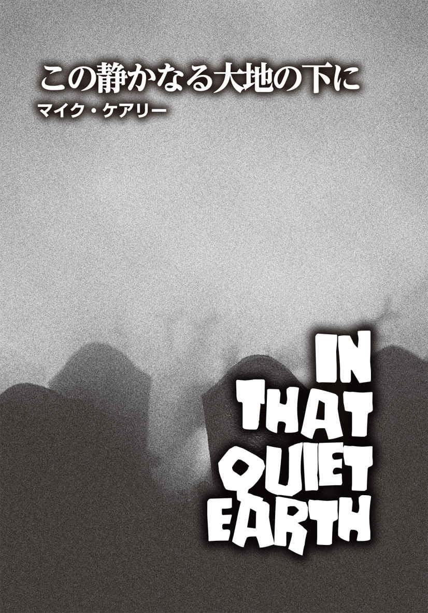
マイク・ケアリー
Mike Carey
PROFILE
英国人作家、詩人、コミック原作者、脚本家。ヘビーメタル界の伝説的歌手オジー・オズボーンの伝記コミック、『X－メン』などマーベル、DCの人気アメコミ作品を手掛ける。『Felix Castor』シリーズは多くのファンに支持され、ベストセラーとなったゾンビ小説『パンドラの少女』（東京創元社 刊）は、2016年に映画化され、日本でも翌年に『ディストピア パンドラの少女』というタイトルで劇場公開された。
その場を去りがたかった私は、穏やかな空の下で、墓石の周りをぶらぶらと歩いていた。ヒースやイトシャジンといったハーブの間で、ひらひらと蛾 たちが舞っている。芝 生 を優しく撫 でる風の音に耳を傾け、私はしみじみと思った。この静かなる大地の下に横たわる者たちに平穏なる眠りがないなどと、誰が想像できるだろうかと。
──エミリー・ブロンテ『嵐が丘』より
蘇 りし屍 の出現が最高潮に達した今、もはや世界には、平和だった頃の片 鱗 すら残っていなかった。振り返ってみれば、妻のロレインの死がドミノ倒しの最初の一枚だったのだろうと、リチャード・キャドベリーは思った。それを発 端 に、他の全てがここまでの壊滅状態に陥ったのだから。論理的な説明はできないものの、感情的には、非常に納得がいった。
ロレインが死亡し、世界は傾いたのだ。
リチャードは、どうにでもなれと思っていた。自分は辛 うじて存在しているに過ぎない。妻との死別から数ヶ月で、彼はどんどん殻に閉じこもり、友人、家族、同僚、隣人など、自分が知る全ての人々を次々に人生から排除していった。彼らに対する愛情が失 せたわけではない。むしろその逆で、彼らを社会的規範が欠如した完全なるアノミー状態から遠ざけようとしたのだ。現状では、人生を定義することにも、将来を語ることにもなんの意味もない。皆を拒絶したのも、愛すべき者たちを自分と同じような目に遭 わせたくないとの強い思いからだった。
リチャードの内側では、このような重大な変化が起きていたものの、外見からはなかなか判断できなかったはずだ。彼は毎日、研究所に車で通い続け、一日中仕事に明け暮れた。葬式のために、一日だけ休暇を取ったものの、すぐに職場に復帰した。忌 引 き休暇の申し出を丁重に断り、善意から言ってくれたのだろうが、全く見当違いのカウンセリングの勧 めも遠慮した。彼が何を感じているかを口に出すことは不可能だった。彼自身の中でさえ、その感情は言葉で表現し切れないままだった。ごく簡単に言葉にするとしたら、「心にぽっかりと穴が空 いた状態」だろうか。その穴に転落し、スローモーションでずっと落下し続けているかのようだ。そしてそれは、彼が死ぬまで終わることはない。
ある意味、死が、リチャードの〝ベクトル〟となった。おそらく、それゆえに──深い孤独の中にいたにもかかわらず──彼は蘇りし屍の存在にいち早く気づいたのだ。ごく初めの兆 しを、いつどこで捉 えたのかを思い出すことはできない。ラジオを通じてだった可能性が高いが、その後ほどなくテレビを点 け、ニュース番組がこの危機的状況にどんどん時間を割くようになったのを目 の当たりにした。
こうして、疑念が確信へと変わるのにはなんの苦労も時間もかからなかった。
最初のうちは、無視するのも簡単だった。大衆が受け取る情報といったら、テレビで流される目撃者の曖 昧 な説明と、彼らの説明を微 塵 も信じていないキャスターが述 べるお決まりのコメントくらいだったのだから。すぐに視聴者提供の証拠映像とやらも複数紹介され始めたが、誰かが叫んでいるというバカげたものばかりで、素人撮影ゆえのブレ具合とあまりにも現実離れした内容も相まって、本気で捉える方がどうかと思えてしまうのだった。路上や公園でよろめきながら歩く男女たちの姿は、どう見ても「夜に盛り上がり過ぎた結果、二日酔いで朝を迎えました」と訴えているとしか言えないようなものだったが、今思えば、そんなふうに捉えられたこと自体が最悪だった。これは、〝存在する〟とはどういうことかを研究する存在論 の新説を誰かが打ち立てる前に起こった、地球の生命史におけるターニング・ポイントだというのに。
しかしながら、翌朝、リチャードが仕事場に向かうべく玄関を開けると、外の道路には例のそぞろ歩きの連中がいた。向こうも彼を見るや、関心を向ける対象だと認識したようだった。リチャードが車に乗り込み、走り出してもなお、複数いた彼らは一様に彼を目指して歩き続けていた。イタズラとは思えないほど非常に手が込んでいる。ニュースの証拠映像と同じ奴 らなら、尋常ではない距離を歩いているはずだし、中には負傷している者もいたが、メーキャップにしては怪 我 の具合があまりにも生々しかった。
研究所に着いたものの、リチャードは中には入れなかった。受付嬢のシーラが、両開きのドアの向こう側にいたのだが、飛散防止ガラスのドアに何度も体当たりしていたのだ。愛らしかった顔は、血みどろの悲惨な状態になっており、あたかもガラスを嚙 み切ってこちらに到達しようとしているかのように、真っ赤に染まった歯を絶え間なく鳴らしていた。
どうすればいいのか躊 躇 したリチャードは、一分半ほど彼女を見つめていた。そうこうしているうちに、十体以上の奴らが建物の角や物置小屋の裏手から現われ、やはりよろめき、身体を引きずるようにして彼に迫ってきた。そよ風に乗って、連中の方から漂ってきたのは腐敗臭だ。かすかな匂いだが、間違いない。
それゆえ、彼にはわかっていた。他の誰にもすでに周知のことだろうが、とにかく彼は気づいていた。そう、死んでも、人間は〝復元〟するようになったのだ。とはいえ、死者から生者への折り返し時点で、何かが失われる。明らかに重大な何かが。蘇生した者たちは、感覚や感情の恩恵を受けることも、それに翻 弄 されることも全くないように見えた。彼らはもっと原始的な存在で、たったひとつの衝動に支配されているらしい。
その衝動が何かは、リチャードが帰宅途中にその目で確認した。複数の彷 徨 者 たちが犬を取り囲み、その身体を押さえつけていたのだ。犬は彼らから逃れようと、必死でもがいている。数秒もしないうちにひとりの中年女が犬の喉を嚙み切ったかと思うと、あれよあれよという間に全てが引き裂かれた。そして連中は、寄ってたかって犬をガツガツと貪 り始めた。リチャードは胸が悪くなった。犬の悲痛な鳴き声が耳に残っており、何かできたのではないかと悔やんだものの、やはり何も手立てはなかったはずだと思い直した。食事 に夢中の中年女の左肩にはブランドもののショルダーバッグが下がったままで、それが異様さを一層引き立てていた。
リチャードの車は自宅前に到着した。道路際から玄関までの距離は短いものだったが、走らなければならないだろう。前庭の芝生にはすでに、彷徨者の姿がちらほら見えていた。連中がこちらに追いつく前に家の中に入れるだろうか。優柔不断な彼は一瞬ためらったものの、まごまごしていても状況は好転しない。彼は心を決めた。キーチェーンについた複数の鍵の中から玄関の鍵を手に握り、車から降りてまっしぐらに玄関を目指した。ドアの前で開錠しようとしたが、つい握っていた鍵を滑らせてしまった。クソッ。玄関の鍵が他の鍵に紛れたので、慌てて探し当てる。鍵穴に鍵を挿 し込もうとしても、手が震えてうまくいかない。背後に奴らが迫ってくる気配を感じた。道路は乾いているはずなのに、濡 れた路上を歩くような湿った足音。なんとも形容しがたいうめき声。早く、早く、早く！ なんとか鍵を開け、中に滑り込み、すばやくドアを閉めた。次の瞬間、玄関ドアの外側が引っ搔 かれる音がし、リチャードはゾッとした。ドアに爪を立てる指の音から判断すると、一体だけではないようだ。彼は肩で呼吸しながら、間一髪、室内に入れたことに感謝した。
すると、家の電話が鳴り出し、リチャードをギクリとさせた。部屋を横切り、受話器を取る。
「もしもし？」
〈キャドベリー博士？ リチャード？ 君なのか？〉
かけてきたのは、研究所の主任グラハム・シーカーだった。だが、あまりにも声が上ずっており、話す内容も支離滅裂だったので、それがグラハムだとわかるまで少し時間がかかった。
「やあ、グラハム。前代未聞の事態が起きてる。君も気づいているとは思うが」
〈気づいてるも何も......リチャード、ああ、神よ、これは世界の終わりだ！ この世はもうおしまいなんだよ！ 死人......そうとも、死人たちが蘇り、生きた人間を食らってる！〉
「ああ、知ってるよ。ニュースでもずっとその話題ばかりだ。三十分前に研究所に行ってみたら、シーラが連中のようになっていた」
〈シーラが......〉
グラハムの声は涙まじりになった。〈彼女には三人の子供がいる。もし彼女がその子たちに感染させたら......ああ......〉
「あれは感染するのか？」
リチャードは訊 ねた。「まだ蘇った死人たちに関する説明は、何も容認されてないぞ」
ところが、相手には彼の言葉が耳に入らなかったようで、次のように返してきた。
〈シーラだけじゃない。みんなだ。ほとんど全員がそうなった。ヘロード博士も、ローサーも、アランも......〉
「アラン？」
〈インターンの青年だ。ヘロード博士のオフィスに郵便物を届けに行って、博士に首を嚙まれたらしい。アランはオフィスから逃げ出し、彼女を部屋に閉じ込めることはできたんだが、その直後に出血多量で死亡した。いや、死亡したかに見えた、と言うべきか。救急車を呼ぼうと電話をかけたんだが、誰も出なかった。それから一時間かそこらが過ぎたとき、アランは突然目覚め、起き上がったんだ！〉
興奮して話すグラハムは、どんどん早口になっていった。〈何をしてもアランの動きは止まらず、結局、ハリソンが消防斧 で彼の頭を刎 ねなければならなかった。なんてこった！ あんな恐ろしい光景はいまだかつて見たことがない。最悪だ！〉
「ああ、全く。最悪以外の何ものでもない」
リチャードは相手をなだめるように同意したものの、その関心はすでに他のところに向いていた。この奇妙な出来事の意味は何なのか。自分自身や亡き妻にとってどんな意味があるのか。頭の中は、それを追究することでいっぱいだった。彼はグラハムに落ち着くように言ったものの、本当は電話を切りたかっただけだ。早く電話を切って、この出来事がどこへ行き着こうとしているのか、熟考したかった。
「グラハム、テレビを点けてみたらどうだ」と、彼は提案した。「それか、ラジオでもいい。政府はこの事態に対処するため、各所で特別救援部隊を編成しつつある。彼らが状況を把握するのに数日はかかるかもしれないが、部隊は必ず来てくれる。彼らの到着まで、完全に隔離された場所でじっとしているのが、生き延びる最善策だと思う」
〈隔離された場所？〉
グラハムが聞き返した。
「その通り。研究所が最適だろう。防犯性を考えると自宅よりも安全だ。一度外に出て水と食料を確保したら、あとはひたすら息を潜め、事態が収束するのを待つんだ」
リチャードは主任が聞き入っているのを確信し、さらに続けた。「防犯シャッターを使え。破られない限り、危険に晒 されないで済む」
〈そうするよ！〉
相手の言葉には活力が戻りつつあった。リチャードの提案は、グラハムに希望を与えることができたらしい。〈もちろん、君も来てくれるんだろうな？ 入り口のドアの前まで車で乗りつけてくれたら──〉
「私は家で仕事を続けるとするよ。じゃあな、グラハム。健闘を祈る」
リチャードは主任の反応を待たずに電話を切った。再び電話が鳴ったとき、最初は無視していたのだが、とうとう壁から電話線を引き抜いた。自分にはやらねばならない仕事があるのだ。
まずはサンプルを手に入れる必要がある。サンプルの入手はそれほど難しくことではない。彷徨者たちは生きた人間になんのためらいもなく近づき、両者の遭遇に犠牲者はつきものだ。その犠牲者が命を奪った連中と同じ彷徨者に変化するのに数時間ほどかかるので、目覚める前の死体を集めればいい。
用心深く周囲を確認して表に出たリチャードは、すばやく車に乗り込んで近所を走ってみた。案の定、道端に転がっている男性の死体が簡単に見つかった。料理に使うタコ糸で男性の手を縛り、ホームセンターから失敬してきた金網で口の周りを覆った。金網の端と端をペンチで捻 ってつなぎ合わせ、不恰好ではあるが、なんとか口輪らしきものになった。
リチャードは男性を車のトランクに押し込み、自宅まで運転した。車庫に車を入れ、シャッターを完全に閉め、鍵をかけ、彼はようやくトランクを開けた。すでに男性は死体ではなくなっていた。激しく身をよじり、悶 え、拘束から逃れようとしている。男性をトランクから移動させ、作業台に固定させるべきかと思ったものの、あまりにもリスクが大きい。そこで、代わりに電動丸ノコを取り出し、トランクに入れたままでその頭部を切断した。その作業は思ったよりもひどいものではなかった。死後変化による血液濃縮で、辺り一面が血の海になる事態が避けられたからだろう。男性の血は凝固とまでは言えないものの、糖 蜜 と同等の粘度でかなりドロリとしていた。
リチャードは首を地下室に持っていった。ずいぶん前に、そこを自身が長年温めてきた計画と、私的な時間外勤務のための実験室に改造していたのだ。彼は頭 蓋 から脳を取り出すと、顕微鏡まで使って、その構造を観察した。新たに誕生した新種の生き物。彼は胸を躍らせながら、詳細を調べていった。
どうやら、蘇った死者の脳の大部分は機能していないようだ。死亡したことで、脳組織は腐敗が始まっていたが、早い時期に蘇生したのが起因してか、壊 死 の進行は停止している。頭部は胴体から切り離されているというのに、脳は、生命活動を維持するために必要な栄養分をどこかから吸収し続けている。栄養分の出どころは、粘度の高い血液か、周辺の空気か、もしくは体内のどこかにある未確認の貯蔵組織か。とにもかくにも説明ができない不可思議な現象だ。つまり、機能するしないは別として、脳は生きている。
あくまでもリチャード自身の意見だが、「生きている」という言い方だと偏った感じに聞こえる。その反対語「死んでいる」という言葉と併せて考えると、この二つの対義語は、通常はコンピュータ世界の二進法と同様だ。そう、電源がオフのときは「０」で、オンのときは「１」と考え、それ以外は存在しない。この世の生物の状態は「生きている」か「死んでいる」かどちらかのはず。ところが、巷 を騒がせている蘇生者は特異な例だった。彼らは死者であるが、わずかながらに「生命」と呼べそうな何かを有している。もちろん、意志、感情、自我、感性が複雑に絡み合った人間の心は持ち合わせていない。あの世から舞い戻ってきた連中の心は完全にシャットダウン状態にあり、ごくわずかに心の扉が開いている感じではないかと推測する。幼い頃、夜中に目覚め、寝室のドアがほんの少しだけ開いているのに気づいた子供は、その奥の暗がりに何かがありそうで、でも何があるのかわからず怖がるものだが、蘇生者たちの心はそんなふうに隙間が開いていて、我々人間にとって、その奥の暗闇は未知の領域。恐怖と脅威の対象でしかない。
二体目のサンプルでは、首を切断しなかった。彼は小柄で取り扱いやすい死体を求め、二時間のドライブの末にようやく理想的なサンプルを見つけることができた。非常に華 奢 な女性だったが、リチャードが縛り終えないうちに蘇生が始まった。両手を縛った後に背後から金網で口を覆うとした際、こちらが細心の注意を払っていたにもかかわらず、手を嚙まれるという失態を犯してしまった。それでも、園芸用の厚手の手袋をはめていたおかげで、嚙み傷が皮膚を破ることはなかった。取り返しのつかないダメージを受けずに済み、彼は心から安 堵 した。
女性を地下室の椅子に縛りつけたリチャードは、自作の機器──脳計測器──で彼女の脳の電気流量を計測した。やはり、脳機能の大部分は作用していないのがわかった。脳を構成する神経細胞同士が複雑につながる巨大ネットワークも、そのネットワーク〝神経回路〟に活発な電気信号が駆けめぐる状況も見られない。そこにあるのは、単一回路のパルスだけで、強力な刺激が延々と繰り返されている。あたかも、周期的に電波を発生させる天体〝パルサー〟から送られてくる電波信号のようだ。
リチャードは、「キツネは多くのことを知っているが、ハリネズミは大事なことをひとつだけ知っている」という古代ギリシャの詩人アルキロコスの詩の一節を思い出した。蘇った死者たちは狡 猾 でも多才でもない。人間的な反応はほぼ全て削ぎ落とされ、たったひとつの衝動、ひとつの習性だけが残された。死者たちは、実用本位の最低限の欲求と行動だけを持って復活したわけだ。
しかしながら、それは選択されたものだろうか？ 自分の意志であの状態に陥り、しかもそれに没頭する己 をコントロールできるのか？
彼はロレインに思いを馳 せた。冷たい土の中で、ひとり目覚めている妻を。誰の束縛も抑制も受けない空間にいるが、埋葬されたままだなんて、とてもそのままにはしておけない。妻のもとに行かなければ。とはいえ、墓を掘り起こして抱きしめようにも、彼女にとって、自分はもはや夫ではなく、単なる餌 に過ぎないかもしれないのだ。ならば、そうする意味などどこにある？
五体目の死体を調べた後、リチャードは普遍的な特徴から個人的な特性まで分析を重ねた。それから、ある装置を製作した。プラスチックのバケツを使用したヘルメットのようなもので、開口部の縁 を何層ものラテックスで覆った。バケツに頭を突っ込むと、ラテックスのひだが首回りに密着する。調節可能な金属の首輪を締めて隙間をなくせば、外気が遮断される仕組みだ。さらに、フィルターと電気ポンプでバケツ内の空気から酸素を取り出す機能も付けた。
一番難しい部分だったのはタイマーだ。かなり細かくメモリを付ける必要があったが、使用時にはダイヤルの番号を見なくても調整できるようにしなければならなかった（なぜなら、頭をバケツの中に入れたままでタイマーを使うからだ）。
続く二日間で、リチャードは百八十二回もの臨死体験を己に課した。どれも決して同じ経験ではなかった。いずれのケースも、空気中から減少する酸素のパーセンテージや窒息状態になるまでの期間はわずかに異なっていた。
自分の身体を酷使した人体実験を何度も繰り返した代償として、彼はひどい頭痛に悩まされ始める。それでも、彼はくじけなかった。実験のたびにメモを取り、最初はきちんとした筆跡で書いていたが、次第に書き文字は崩れ、ぞんざいな走り書きになっていく。綴 りを間違えないようにするのが精一杯だった。眼球の血管が切れて充血が悪化するにつれ、何を書いているのか読むのもどんどん困難になった。
卵を割らなければ、オムレツはつくれないんだぞ。リチャードは自分に言い聞かせた。このシナリオでは、彼が卵だ。何度も身を挺 し、正確にグラフにしていく。脳計測器は彼を導く地図となり、聖書となった。リチャードは頭をほぼ水平に傾け、顔をしかめてプリンターを見た。永遠に印刷が続くかのように、プリントアウトされた紙がひっきりなしに吐き出されてくる。今の彼の視力では、その角度でなければまともに見えないのだ。
かくして百八十二回の実験が終わり、彼はとうとう結論を下した。生死を分ける境界線は、大気酸素濃度八パーセントで時間は三分と十五秒だろう。二分と四十秒から、ニューロン活動簡素化の兆候が現われることが、脳計測器のデータから読み取れる。リチャードは危険を冒して三分五秒まで挑み、生還した。しかし、本当に危ないところだった。
その時点で、彼は実際の変化を感じた。現在、過去、未来、事実と反事実、感覚や信念というものを細かく分類する脳の複雑な働きが、異常なほどの空腹感ただひとつに取って代わろうとしているのだ。飢えが細胞のひとつひとつから湧 き上がってくるような、脳が食欲だけに支配されているような感じ、とでも言おうか。「腹が減った」という細胞からの咆 哮 はけたたましく、見える物全てが真っ赤に染まっているが、リチャードは今でも彼自身であることに変わりはない。彼は考え、彼として存在している。
そこからさらに十秒耐えると、彼は限界点まで達する。しかし、超えてはいない。
実験結果が出たところで、彼にはどうしても必要な道具があった。発電機だ。確か研究所には、携帯用発電機を備えたバンがあったはずだ。リチャードは危険を承知で外出し、バンを取りに行くことにした。施設に到着した彼は、建物上階の窓からグラハムがこちらを見ていることに気づいた。主任の顔色は良くない。リチャードに向かって必死に手を振り、何かを訴えている。ついには窓を開けようとし始めたのを見、リチャードはさっさとバンに乗り込み、グラハムが実際に窓を開けてしまう前にその場を立ち去った。自分から向こうに言うことは何もなく、向こうが自分に何を言わんとしていたのかにも興味は全くなかったのだ。
発電機はフル充電されていなかったものの、目的を叶 えるには十分だろう。リチャードは手製の窒息装置とスコップ、ネジ回し、バール、二連式ショットガンをバンに積んだ。できれば、最後の二つは出番がないことを祈るが、念には念を入れることにした。
彼は墓地へとバンを走らせた。開放されていた門を入るとすぐに駐車場があったが、止まることなくコンクリートの路肩を越え、墓が並ぶエリアまで乗り入れた。道が非常に狭く、ここまで運転してくるのは容易ではなかったものの、どうしても発電機を手に届く場所に置く必要があったのだ。
さらなる危険は、彷徨者たちの存在だった。墓地をうろつく奴らの数は相当なもので、スピードを出すバンが至近距離に近づいても逃げ出そうとすらしない。バンが連中を轢 くたびに車体が大きく上下し、タイヤがその肉体を踏み潰す感触が座席越しに伝わってきた。
見覚えのある墓石の真横で、リチャードはようやく車を止めた。
ロレイン・マーガレット・キャドベリー
墓石には妻の名前が刻まれてあった。逝去日に加え、ありきたりな言葉も添えられている。
愛する妻、ここに眠る
その眠りが、決して覚めることのない永遠のものであってほしい、と彼は心から願った。ロレインが目覚め、夫を待っているなど、どうか思い過ごしであるようにと。
運転席のドアを開け、外に降り立つや、近くにいた奴らが向きを変え、こちらを目指して近寄ってきた。彼はできる限り排除した。連中を仕留めるには、頭を撃ち抜く必要があったが、たとえ頭部に弾丸が命中しても百パーセント動きを封じられるわけではなかった。彷徨者たちが危険なほど近寄る前に、リチャードはバンに戻り、百メートルほど移動した。
連中は車の後をついてきたが、降車した彼は五体ほどを倒した。そして再び、複数の相手に接近され過ぎて手遅れになる前に車に乗り、場所を変える。この行動をさらに根気よく七回繰り返し、ようやく周囲に歩く屍の姿はなくなった。
ロレインの墓に帰ってきた彼は、地面の掘り起こしにかかった。
この肉体労働が、計画全体で最もハードな部分だと言っていいだろう。科学者の彼は日頃からピペットより重いものを持つような生活をしていなかったし、一連の実験や移動で身体を酷使している。墓掘りが肉体的に堪 えるのは十分に考えられた。息切れや発汗が著しくなるよりも先に、慣れない動作で、手が痺 れ、肩に痛みが走った。
スコップで土をすくい出しながら、リチャードはふと思った。連中は匂 いで獲物を追うのだろうか？ まさか、と首を振ってみたものの、その考えは彼を動揺させた。どんどん深くなる穴での作業に夢中になっているうちに、いつの間にか奴らに取り囲まれ、車に逃げ込むことができなくなっていたら──？
しかし、幸運の女神はまだ彼を見放していなかったらしい。午後五時になる前に、何事もなく、棺 に被 っていた土を取り除くことができた。さらに、棺のネジがほとんど劣化していない事実に、彼は大きく安堵した。もしネジが錆 びついていた場合、バールを使って蓋 をこじ開けなければならず、そうなると体力の消耗も棺のダメージも大きくなる。
とにかくネジは大丈夫だったので、六ヶ所全てを取り外すのに、数分とかからなかった。ネジを回し始めた頃から、棺の蓋の裏を引っ搔くような小さな音が聞こえ始めた。リチャードは科学者で、現実主義者だ。自然界で起きるプロセスも理解しているし、多少グロテスクな光景を目の当たりにしても吐き気を催したりはしない。「これはどういう現象なのか？」「なぜこのような変化を遂げたのか？」という科学的な好奇心が勝るタイプだ。ゆえに、妻の現在の姿を見る心の準備もできている。彼は棺の蓋を開けた。
ショックも狼 狽 もなかった。その瞬間の感情表現を言葉にするとしたら、〝ロレインが今でもすぐに彼女だとわかる状態だったことに驚いた〟くらいだろう。もちろん、それなりに腐敗は進んでいた。顔は縮み、毛髪はごっそり抜け落ち、頭蓋に残っているのはわずかだった。顎の左側が灰色のカビにびっしり覆われ、死後にヒゲでも生えたのかと一瞬思ってしまった。
彼女は起き上がろうとしているのか、上半身をよじっている。だが、亡くなってから九ヶ月が経過した今、筋肉はすっかり萎縮してしまい、彼女の身体を支え、動かすほどの力は残っていない。全身は瘦 せ衰え、ところどころ大きくくぼんでいた。両方のまぶたはわずかに動いているものの、眼 窩 が縮小し、乾燥しているため、完全に閉じられないようだ。
「ロレイン」
彼は妻に呼びかけた。「私だ。リチャードだよ」
彼女がこちらを認識しているのかどうかはわからない。おそらくそれはないだろう。しかし、自分が誰かを名乗らずに、彼女のプライバシーを侵害することはしたくなかった。
彼はダイヤルをセットした。八パーセント。三分十五秒。バケツを被り、スイッチを押す。バンに積んである発電機が稼働し、電気ポンプが低い音を立て始めた。自作の装置が、彼の口の周りを循環する酸素をせっせと取り除いていく。
今回は、これまでの実験よりも時間が長く思えた。おそらく、これが〝実験〟ではなく〝本番〟だからかもしれない。二分台後半になると、頭がズキズキしてきた。肺は、入ってくるはずのない酸素を求め、必死に空気を吸い込もうとしている。激しいめまいが高波のように襲い、彼はヘナヘナと座り込んだ。そして、とうとう地面に倒れた。
三分台に突入した途端、時間の経過が止まったかに感じた。最後の十五秒は、永遠にゴールに到達しないのではと思えるほど長かった。彼の最後の呼吸は、ひと呼吸とはいえないくらい、ひどく長いものだった。胸は張り出し、全身が痙 攣 した。残り時間が尽きることを知らせる脳内の鐘が、くぐもった音で鳴り響く。
リチャードは、ヘルメットから逃れるべく懸命にもがいた。そう簡単にはいかず、長い時間がかかった。首の締め具の場所も、どうやって外すのかもなかなか思い出せず、澱 んだ潮流で浮き沈みする漂流物のごとく、彼の意識は脳内をふわふわと漂った。
しかし彼は、時間と酸素濃度を正確に測定していた。まるでペニシリンを投与するかのように、自分自身に死を与えたのだ。彼の死に至るまでの過程は、長い長い一連の洗礼儀式に似ており、全てがコントロールされていた。彼の蘇生も同じだった。
段階的に細胞も神経も
バラバラになって
再構築されていく──。
全てを凌 駕 する激しい飢えが目覚めるのを、リチャードは感じた。これが、蘇生者を定義する特徴だ。しかし、彼はその食欲に吞 まれはしなかった。猛烈な空腹感を抱えても考えることができた。とは言え、思考には、とてつもない労力と時間がかかった。自分のことも、自分の目的も覚えていた。
ゆっくりと立ち上がった彼は、墓穴の縁まで進み、下に降りた。空間が限られているゆえ、ロレインを踏まないように気をつけた。
妻の横の隙間に、自分の身体を押し込んでいく。できるだけ緩やかに、できるだけ静かに。願っていた通り、ロレインは彼に反応しなかった。食べ物だと思わなかったのだ。彼は生ける屍で、彼女と同類だ。少なくとも、これだけ近くにいても妻の食欲を刺激しないという点では。
リチャードは彼女に話しかけようとした。怖がらなくていいんだよ、と。しかし、もはや話すことはできない。頭の中で文章を作ることはできるものの、呼吸をしていないので、口から言葉を発せられなくなっていたのだ。単語たちは舌の上に留まり、この世に吐き出されることのない音の塊 として震えていた。
彼は棺の蓋を内側から閉めた。狭い内部で快適な体勢を模索しつつ、身を縮めた。ロレインに窮屈な思いをさせたくない。すると、彼は横からそっと身体を押されるのを感じた。おそらく妻は起き上がろうと無駄な努力を続けているのかもしれないが、そんな意志などないはずだ。その動きに緊急性は全くなく、むしろ彼と同じように快適でいようとしているだけにも思える。
おやすみ、愛するロレイン。彼は声なき声でささやいた。喉を収縮させ、舌を口 蓋 に当てて上下に動かすのがやっとだった。
ふと、妻の手に触れ、リチャードはそれを優しく握った。そして、まぶたを閉じた。
永遠が彼の全てを覆い尽くしていく。それは、とても心地よかった。
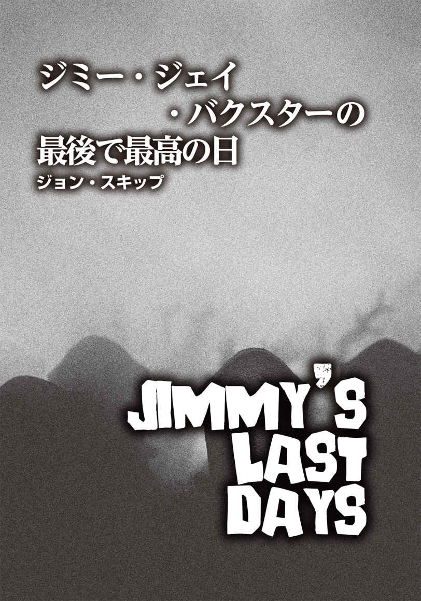
ジョン・スキップ
John Skipp
PROFILE
『ハロウィン2016』でロンド・ハットン・クラシック・ホラー賞候補になった映画監督であり、『Mondo Zombie』でブラム・ストーカー賞アンソロジー部門賞を受賞した、ニューヨーク・タイムズベストセラー作家。『闇の果ての光』（文藝春秋社 刊）は十数ヶ国語に翻訳され、数百万部を売り上げた。彼の最初のアンソロジー小説『Book of The Dead』は、現代ゾンビ文学の基盤を築いた。"スプラッターパンクの父"として、スキップは世界中のホラーやカウンターカルチャーのアーティストに影響を与え続けている。邦訳は他に映画『フライトナイト（1985）』のノヴェライズ（講談社 刊）、クレイグ・スペクターとの共著『けだもの』（文藝春秋社 刊）があり、最新作は、小説『The Art of Horrible People』。
Twitter：@YerPalSkipp
これだけは言っておく。
この世の終わりなんて、自分が「この世は終りだ」と思ってるだけ。全ては自分の態度と見方次第。俺？ 「こりゃなんだ？」って疑問に思うことの答えがわかれば、万事ＯＫさ。
少なくとも、最後の最後の直前までは。
＊ ＊ ＊
最初のひとりはしんどかった。そういうことにしておこう。俺は愛車のトラックを洗っていた。ピカピカにするのに夢中だった。ふと、ウェンデルが通りをぶらついているのが見えた。上はＴシャツ、下はよれよれのパジャマのズボンというラフな格好で、ボサボサの髪、おぼつかない酔っ払っているふうの足取りはいつもと同じだった。驚いたことに、その朝、ウェンデルはラスカルを連れていなかった。いつもは、リードをぐいぐい引っ張って愛犬を散歩させてるんだが。
「犬はどうした？」
俺は深く考えず、軽い気持ちで問いかけた。
ウェンデルは何も答えなかった。彼の耳が遠いのを知っていたので、俺は敢 えて訊 き返すこともなく、フロントガラスの鳥のフンを洗い落とす作業に戻った。片手で使い込んだ大きなスポンジ、もう片方の手でホースの先のプラスチック製ノズルを握っていた。
彼がまっすぐこちらに近づいてきたので、俺は「は？ 一体なんなんだよ？」という感じで顔をしかめた。向こうが腕を伸ばしてぐいぐい押してきて、俺は運転席のドアに背中をぶつけてしまった。さらに顔を突きつけ、嚙 みつかんばかりの勢いでガンをつけてきたため、こっちも我慢の限界だった。
「は？ 一体なんなんだよ？」
そう実際に言い放ち、反射的に左手でスポンジを相手の口にねじ込み、思い切り押し返してやった。俺の手首もウェンデルの首も、泡だらけだ。多少手荒い真 似 だったが、洗剤でむせれば、ウェンデルの酔いも少しは醒 め、正気に戻るだろう。ところがどっこい、奴 はまともになるどころか、またもや俺を押してきたのだ。しかも、スポンジが入った口をくちゃくちゃ言わせている。マジか？ こいつ、スポンジ食ってんのかよ！
「ウェンデル！ バカか、てめえ！」
俺は大声で怒鳴りつけたが、相手はひるみもしない。ただひたすら俺を押し続け、スポンジをむしゃむしゃと嚙み続けている。
うぜえ。俺はホースのノズルで奴の頭のてっぺんをひっぱたいた。一回、二回......。相手がよろよろと少し後ずさりするまで繰り返し叩 いた。いい加減にしてくれよと、うらめしく思ったものの、彼は動きを止めなかった。なので、俺は再びホースを振り下ろした。奴が膝から崩れ、口からボロボロになったスポンジが落ち、ノズルが砕けて粉々のプラスチック片となって地面に散らばるまでやめなかった。
信じられないことに、ウェンデルの野郎、今度は俺の膝に嚙みつこうとしやがった。俺は力任せに蹴りつけ、奴はひっくり返って尻餅をついた。腹の虫が収まらない俺は、おまけにもう一発キックを見舞った。
すると相手は、蹴られたダメージを微 塵 も感じさせず、こちらの足首を握るや、急に引っ張ったのだ。俺は正直者だ。一瞬パニックになったのは認めよう。しかし、もう手加減してはいられない。根元部分だけとなったノズルが付いたホースを離し、俺は彼の頭を摑 んで首を乱暴に後ろに傾けた。
互いに目と目が合う形となり、ようやく相手の顔をまともに見た俺は瞬時に悟った。こいつはもはや、ウェンデルじゃねえ。
ちょっとはっきりさせてくれ。ウェンデルとはそれほど親しかったわけではない。道端で会うとたわいのない会話をするくらいの仲っていうか。彼はゲイだったが、フレンドリーな奴だった。見るからにオネエっぽい感じはなく、外見的にはノーマルで通用していたと思う。俺は彼の犬が気に入っていた。ウェンデルは別に俺にちょっかいをだそうとか、そういうことは一度もなく、お互い邪魔せずやっていた。わかるかな、誰かに訊かれたら、「ああ、そういや、ウェンデルっていたな。ユニークな男だ。この世はいろんな奴がいるからなあ」って答える感じ。そんな関係だ。
で、今、会えば挨拶する程度のその知り合いの顔を見ているわけだが、彼の目には光が宿っていない。まさか。恐ろしい真実が俺の頭の中を駆けめぐった。
いや、素晴らしい 真実ってことにしておこう。
ここまでされて、「おい、あんたの顔、変だぜ。大丈夫か？」なんて気にかけてやる必要もないし。
ウェンデルはまだ俺の足を摑んでいた。だから、トラックの後ろのドアまで奴を引きずり、空 いていた方の手でドアを開けた。どこにバットを置いていたか、手探りでもわかっていた。子供の頃、じいちゃんにもらった年代物のルイスビルスラッガーの野球バットで、メジャーリーガーの強打者ミッキー・マントルのサイン入りモデルだ。何かのときに役立つかと思い、車に常備していた。しかも、運転席の背面にヒモでぶら下げ、いざというときに使用できるようにしてあった。この準備の良さは、自画自賛ものだぜ。
ところが、バットのグリップを握ろうとした矢先、ウェンデルがいきなり背伸びをして太ももに歯を立てた。血が出るほど嚙まれたわけではないが、俺はビビって「うわっ！」と声を出し、車のバックシートに背中から倒れ込んだ。その拍子に、頭髪を摑んでいた手を離すと同時に、蹴り上がった足が相手の顔を強打した。奴の方も後方に倒れ、その歯が俺のジーンズをぐいと引っ張った。この野郎！ 怒りが込み上げ、もう一度ウェンデルを蹴る。スニーカーの靴底が思い切り肩を押し、彼はようやく歯を離して後ろに倒れた。
俺はどっこいしょとバックシートで起き上がった。目の前にあるバットをすかさず摑み取り、性 懲 りもなく再び迫ってきたウェンデルの額に叩きつけた。もう一度起き上がって向かってきたのを見て、これで最後にしてやると心の中で誓った。
俺は奴の頭を殴った。頭 蓋 骨 が嫌な音を立てて凹み、脳 味 噌 が噴き出て地面に散らばっても、バットを振り下ろし続けた。彼の身体はしばらく痙 攣 していたが、そのうちピクリとも動かなくなった。
「なんだよ！ もうおしまいか!? 」
肩で息をしながら、俺は大声で訊いた。どうやら、そのようだ。
ちょうどそのとき、目の前で車がブレーキ音を立てて停車し、俺は我に帰った。急にこっぱずかしくなり、同時に不安も一瞬覚えた。ちょうど、女とセックスしてるときに、うっかり母ちゃんが部屋に入ってきたときのような感じだ。
しかし、そこに現われたのは母ちゃんではなかったし、俺は罪の意識も感じていなかったので、慌てて言い訳したり、謝ったりする代わりに、フロントガラスの奥を睨 みつけ、ハンドルを握っていた黒人に怒声を浴びせた。
「あんたもこうなりたいのか？」
運転席の女は、血相を変えてギアを入れ、そのまま車をバックさせて走り去った。その様子を見て、俺は笑いが止まらなくなった。血みどろの惨状を目 の当たりにし、彼女は俺がたった今心に誓ったことを理解したんだろうな。俺の前に立ちはだかる奴には、手加減はしないってことをな。
俺はウェンデルをその場に放置した。道路の真ん中でだらんと横たわる奴の姿は、さながら血で濡 れた減速帯だ。後片づけは他の誰かに任せよう。そこまで俺がやる必要はない。ここでやれることは十分やった。他でやることもたくさんある。俺は白人として生まれた。神様が与えてくれたこの特権を使わないとな。
そして、結果的に正しいことをするってわけだ。
自分の武器庫の最上級品を積み込むのに、十分とかからなかった。トラックはそのためにある。自宅の地下室だけでも、ベネズエラとバーモント州を合わせた以上の兵器と弾薬を所持していた。おそらく個人で使い切れる数量じゃない。そうかどうかは、そのうちわかるだろう。
招集をかけるメッセージを二、三通仲間に送った。武器が不足した場合に役立てばと、さらに二十丁のセミオートマチック銃を追加した。
送ったメッセージはこうだ。
ダウンタウンのモスクで落ち合おう。実行の時は来た。
さあ、人生最高の一日の始まりだ。俺は景気づけに、寝っ転がっているウェンデルにキックを二発見舞い、その場をあとにした。
エルドラド通りに向かってクレストン通りを半分ほど下った辺りで、痩 せ細ったメキシコ野郎がふらふらと歩き、俺の行く手を邪魔していた。その道路にはもう一台別の車が走っており、大きく蛇 行 して男を避けて走っていったが、当の本人は自分の迷惑行為に全く気づいていないようだ。ウェンデルと同様、夢遊病者みたいな歩き方をしているところを見ると、その目を確認しなくても、例のアレの疑いが強い。あいつらが何であれ、ついに始まったこの世の地獄の一部だ。
このトラックで誰かを撥 ねてやりたいと常々考えていた。乗るたびに、その衝動に駆られていた。で、都合良く、車道の真ん中でクソッタレが彷 徨 している。車道は車が通行する道だよな？ 走行の妨げでしかない車道を歩く歩行者でも、車はそいつを轢 かないように止まるのが当然か？ 歩行者優先が車道のど真ん中で通用すると思うなよ。スピードを上げてやろうか？
だが、俺は加速しなかった。とはいえ、減速もしなかった。時速六十キロでも、たちまち男は目前に迫ってきた。
その直前、クソ野郎はこちらを見た。
やっぱり、目に光のない奴だった。
俺はためらうことなくアクセルを踏んだ。バン！ 次の瞬間、男の姿は正面から消えていた。ぶつかった衝撃で、俺は危うく額をダッシュボードにぶつけるところだった（交通ルールなど気にしないたちだが、今回は礼を言わせてもらうぜ。サンキュー、シートベルト！）。
愛車のタイヤが男を踏む感触は伝わってこなかった。両側のタイヤともだ。倒れた位置と痩せた身体のおかげで、トラックはあいつの上を通過しただけだったのか？ 悪運の強い奴だ。しかし、バックミラー越しに見ても、俺が撥ねた男は立ち上がる気配を見せなかった。車を急停車した俺は、「ひゃっほー！」と、バカでかい声で叫んだ。〝死ぬまでにやっておきたいこと〟リストのひとつをクリアしたぜ。俺は歓喜した。
運転席から飛び降り、腰のホルスターから銃を引き抜く。取り出したるは、第二次世界大戦時のドイツ製ルガー拳銃。正真正銘のヴィンテージものだ。俺は、クレストン通りのメキシコ野郎に大股で歩み寄り、自分が正しいこと──相手がアレだという証拠──を確かめることにした。
背骨が折れてくの字に曲がっていてもなお、男は身体を引きつらせ、動こうとしている。これが、証拠のひとつ目。本来なら相当の激痛に襲われているはずなのに、男は泣きもわめきもしない。これが、ふたつ目だ。ショックを受けているふうでも、悲しげでもなく、怯 えている感じでもなかった。それどころか、人間にすら見えなかった。
メキシコ野郎の頭と身体はそれぞれ反対方向にねじれていたのだが、たまたま顔がこちらを向いていた。案の定、その目はウェンデルと同じだった。命の輝きはなく、あるのは、剝 き出しの空腹感だけ。ひどいもんだ。とっくに死んでいる。だが、まだ死んでいない。
こんな状態になっても、男の欲求は俺を食うこと。ただ、それだけ。
「食うことしか頭にないのかよ、このクソッタレめが！」
俺は怒鳴った。「図星か？ 悔しかったら、食ってみろ。白人至上主義が憎いか？ なら、俺を食えよ！」
三メートルは離れているのに、男は俺に嚙みつこうと躍起だ。
「おまえら、俺たち白人をどん底に陥れたいんだろ？ アメリカが俺たちのものでなくなるまで。この国が人種の泥沼と化して、俺たちがおまえらの奴隷になるまで。そうなんだろ!? 」
男の両足は折れていたが、片足を銃で撃ち抜いた。相手は足が骨折したことはもとより、被弾したことにも気づいていないようだった。
「この事態は俺たちへの報復か？ 俺たちがおまえらに借りがあるとでも？ おまえらクソに借りなんてねえよ！ 現に、おまえら移民は、俺たちがおまえらから奪った以上に、俺たちから奪い取ろうとしてるじゃねえか。この盗人 め」
もちろん、男はこちらの言葉は何ひとつ理解していないだろうし、そんなことはどうでもいい。肩にひとつ、胸にひとつ、風穴を開けたとて、相手は全く気にしていなかった。俺が全く気にしていないように。
「いいか？」
俺は銃口を男の頭に向けた。虚 ろな両目のちょうど真上だ。「おまえの望みは俺を食うこと。だが、俺の望みが何かわかるか？ おまえの死だ。完全に死んでくれ」
俺は引き金を引いた。そして、メキシコ野郎は完全なる死を迎えた。
次に、俺は車のフロントバンパーをチェックした。少し凹んでいたが、血を拭い落としたら、凹みはほとんど目立たなくなった。深刻なダメージを受ける前に、こうして二、三回はやり過ごせるかもしれない。ダウンタウンに行く間に、対策を考えよう。
エルドラド通りの角を曲がると、俺の地元の酒屋がある。この事態がエスカレートしているとひと目でわかる光景が、すぐに視界に飛び込んできた。
歩道の縁石沿いに車を止めるや、すぐ近くでメキシコ人の幼い少女がボロ切れみたいなホームレスに食われているのを目の当たりした。実に嘆かわしい。いたいけな少女に手をかけるなんて、白人も地に堕 ちたものだ。歩道でその様子を目撃していたのは三人。二人は叫ぶだけだったが、ひとりの黒人青年──俺は心から彼を褒めてやりたい──が、ホームレスを少女から引き離そうとしていた。後ろからホームレスを羽 交 い締 めにして引っ張った勢いで、いたいけな少女の柔らかなほっぺたの肉が引きちぎられた。
俺は銃に弾を込め、肉を頰張る薄汚い男に狙いを定めた。至近距離ゆえ、外すことはない。こんな奴は、頭ん中にクソが詰まってるんだろうなと思ったら、本当に大間抜けだった。こっちが発砲した瞬間、ホームレスはわざわざ顔を突き出し、弾に当たりに来てくれたのだ。もしも向こうが顔を横にずらしたら、後ろのレンガの壁に貼 られた〝二十ドルぽっきりタイ式マッサージ店〟のポスターに穴を開けるだけだったろう。銃弾はおっさんの頭に吸い込まれ、その動きを永遠に封じた。
すると、どっかの胸のでかい母ちゃんに背後から抱きつかれた。彼女は、「ありがとう ！ ありがとう ！」と泣きわめいている。白人のクズ浮浪者は路上にぶっ倒れたままだ。勇敢な黒人青年は振り返ってこちらを見た。
俺はその兄ちゃんと目を合わせた。
黒人だろうがなかろうが、肌の色に関係なく、彼は百パーセント生きて いた。「動いている＝生きている」って公式は、もう当てはまらない。勇気、憤怒、恐怖が入り混じった表情で、青年は俺を見つめ、まだクズのおっさんの頭部に狙いを定めたままの俺の銃を見つめていた。
その目には疑問が浮かんでいる。僕のことも殺す気か？──と。
その勇敢な行動に敬意を表すべく、俺は兄ちゃんにうなずいた。あんた、すげえ、カッコよかったよ。ホルスターに銃をしまうと、彼は安 堵 のため息をついていた。
次に、暴れ馬をなだめるみたいにポンポンと背中を叩き、母ちゃんの抱 擁 を解いた。母ちゃんは名残 惜しそうに、顎にキスをしてきた。去り際に、俺は道路に横たわる幼い少女に視線を落とした。嬢ちゃんはなんも悪くないのにな。たまたま間違った時間、間違った場所に、間違った肌の色で生まれてきただけだ。
それから、俺は酒屋へ入った。何事もなかったように、平然と。店内でジャックダニエルの一リットル瓶とマルボロ赤のタバコ一カートン箱を摑んだ。一応、非常用だ。カウンターの奥にいたフィリピン人のチビに笑顔を見せると、向こうも同じように（多少顔を引きつらせてはいたが）白い歯を見せた。
店から外に出た俺は、世界征服を果たした王の気分だった。
時速百キロ近くでエルドラド通りを下っていく。信号機よ、悔しかったら、俺を止めてみやがれ。スタンダード通りまでノンストップで爆走する気分は最高だった。そんな俺を唐突に減速させたのは、神聖レヴェナント全能神教会の前を通りかかったとき目にした光景だった。
神聖レヴェナントは、キリストは今すぐにも復活すると信じるどうしようもない連中の一派だ。奴ら、神様が復活なされる〝その時〟とやらを繰り返し延長し続けているんだぜ。なんだ、それ。〝その時〟など来やしないのに、ご苦労なこった。どうせ後日、また改めて〝その時〟を設定するんだろ。「キリストは、この四十年のうちに復活されます！（としておきますが随時延長します）」といった具合に。
俺？ 俺はそんな戯 言 に傾倒するほど暇じゃない。マジでどえらい事態にならない限り、キリストさんは戻ってなんかこねえよ。仮に神様がめちゃくちゃ贔 屓 のチームがあったとしても、「我 が応援に来た。安心せよ」ってサッカーの試合に姿を現わすか？ ないよな。新しい法王が負け犬とかアバズレとかオカマに目がないからって、「こらこら、いい加減にしなさい」と説教しに神様は姿を見せるか？ 見せませんって。敬 虔 な信者が心からの信仰を素晴らしい祈りの言葉で表現したとしても、感激のあまり神様が個人的に礼を言いに来るか？ そんなのイエス様の仕事じゃねえって。
神様の仕事とは、俺たちを奮起させ、本来なら彼がやるべき作業を俺たちにやらせること。俺たちが神のお告げを実行して基盤を完璧に敷いたとき、初めて本物が降りてくるんだろうな。単に戦線が張られるだけじゃなく、戦いが正確に決行されることになる。そのとき初めて──本当に初めて──キリストは舞い戻り、不信心な奴らを打ち負かすんだ。できれば、十字架の上の悲しげなヒッピーみたいな奴より、北欧神話の雷神トールや最高神オーディンみたいな姿で再来してくれと切に願う。この究極の地獄絵図を生き延びても、生き延びなくても、俺たちは天国で永遠に誇り高くいられるはずだ。あるいは、戦死した勇敢な兵士が招かれるオーディンの宮殿ヴァルハラで。ああ、もう、どこだってでもいい。こんなクソみたいな事態、早く収拾してえ。
神聖レヴェナント教会の駐車場には、一張羅の服を着た人々が五十人ほどはいただろうか。あちこちから悲鳴が上がっていて、奥の方から手前にかけて、人々が後ずさりする動きが、波のように伝 播 してくる。スピードは落としたものの、運転したままでは事の詳細はよくわからない。彼らが何から後退しようとしているのか、ここからは見えなかった。好奇心が勝った俺は、あるアイデアを思いついた。
一番端の車線を走っていたので、そのままハンドルを切って駐車場へと突っ込んでいくことにしたのだ。人波の十メートルほど後ろまで近づいて車から飛び降り、ドアをバタンと閉めた。エンジンはかけたままだ。今回は、お気に入りのカラシニコフ自動小銃にお伴 してもらう。ロシア人が設計した銃なので、この可愛 い子ちゃんはウルスラと名づけた。
俺が群衆の間に割り込むと、帽子から靴まで黒づくめの格好した女性たちはキャッと声を上げる程度だった。男どもも割り込みに抵抗するふうでもなく、二十秒かそこらで、俺は人だかりの一番端まで行けた。
人だかりの原因は、そこにいた。
ルーク牧師だとすぐにわかった。一瞬、「あれ？ ルーク牧師ってこんなんだったっけ？」と首を捻 ったが。牧師は厚めの死化粧を施されていた上、口の周りは血だらけで、肉片までこびりついている。ちょうどチョコレートケーキを貪 った二歳児みたいなもんだ。おまけにぎくしゃくと動く姿は、昔のホラー映画に出てきた世にも恐ろしい動くマネキン人形にもそっくりだった。子供の頃に見たら、夜な夜な夢に出てきてうなされ、トラウマになるレベルだ。しかも、やっぱり彼の目には光がなかった。
そうだった。牧師は先週死んだのをほとんど忘れていた。訃 報 を聞いたとき、俺は冗談を言ったんだった。
「あーあ、神様の復活が待ちきれなくて、自分から神様の方に出向いちまったのかよ！」
しかし、牧師はここにいて、それは神様云 々 とは何も関係ないように思えた。彼の両手は、口周りと同じくらい血にまみれている。彼の葬式で、死んでいたのは、彼だけじゃなさそうだ。
牧師の後ろには、怯えたふうの男が二、三人いて、生き返った牧師を止めようかどうか大いに迷っている感じだった。俺がウルスラを持ち上げると、男たちの目が丸くなった。次に銃口をスライドさせて牧師の顔に向けた瞬間、彼らは賢明にも身を屈 めた。
ルーク牧師は全く気にも留めていなかった。彼の目が捉 えるのは歩く生肉だけで、瞳が動いて最後に俺に止まった。
「耳をかっぽじって、よく聞け！」
群衆全員に聞こえるように俺は声を張り上げ、牧師の頭に二発の弾をぶち込んだ。すかさず回れ右をし、背後に忍び寄ってくる輩 がいないことを確かめ──おっと、ひとりいた。俺が睨むとギクリとして立ち止まったものの、相手はこう言い放った。
「ひと言言っておくが、牧師だけじゃない。この四十分の間で、私は三体倒した。こいつらが何であろうと、町中こんなのだらけだ。いや、おそらく世界中に蔓 延 してるだろう」
男の発言を聞いている最中、背後で何かが動く気配を感じた。ああ、しまった。ルーク牧師の息の根を止めたかどうかを確認しなかったし、牧師は俺のすぐ真後ろにいる──。興奮とスリルが同時に身体を駆けめぐる中、振り向くと同時にウルスラを構え、牧師の胸めがけて引き金を引いた。群衆から悲鳴が上がったものの、すぐに水を打ったように静まり返り、そのうちすすり泣く声が聞こえてきた。なんてこった。頭に二発、心臓に一発弾丸を埋め込まれても、牧師は倒れない。被弾した衝撃でよろめいただけだ。そして、こちらに迫ってくる。
「こいつは神様じゃねえ！」
俺は叫んだ。「こいつは悪魔だ！ 俺が間違ってるなら、誰か反論してみろ！」
さらに三回発砲し、弾はいずれも胸部を貫通した。その衝撃で、牧師はジルバを踊っているかのように回転したが、決して動きを止めることはなかった。それどころか、こちらを見る目に焦点が合ってきた気がする。いろんな意味でヤバい。固唾 を吞 んで一部始終を見守っている群衆は、敬虔な信者の皆さんだ。撃たれても撃たれても生き返る──というか死なない──牧師に、まもなく復活する予定だと教え込まれてきた神の姿を重ね合わせないとも限らない。
「おまえら、目を覚ませ！」
そう怒鳴りつつ肩越しに信者たちを見ると、涙を流したり、ショックで呆 然 とする顔が目に入った。
しかしながら、俺とルーク牧師との距離は一メートルもない。ちょっとよそ見した隙に、相手が接近するのを肌で感じた。俺は牧師の方に顔を戻し、ウルスラをフルオートに切り替え、頭に銃弾の雨を浴びせた。頭蓋の中身は赤いミストになって噴き出し、牧師の肉体が悪霊を解放するのに三秒とかからなかった。
その身体が地面にくずおれるのを、群衆は沈黙したまま注視していた。
「これが、俺たちが向き合わなければならない現実だ！」
俺は人々をぐるりと見回して声を上げた。「これから世の中がどうなるか、これを見たらわかるだろ？ 悪魔は俺たちが善人か悪人かどうかなんて気にしちゃいない。善人ぶって何もしないと、悪魔は俺たちをどんどん仲間にしていく。どういう意味かわかるか？ 俺たちは真剣に戦っていかなきゃならないってことだ。勝つためにはな」
「じゃあ、私はダウンタウンのイスラム教徒であふれるモスクに行き、聖戦を仕掛けてくる。反キリスト教者がジハードを起こす元凶。反キリストは、悪魔の権 化 、キリストの敵だから！」
それが、ショックの果てに開眼した最初の信者だった。
「あんたら、キリストに復活してもらいたいんだろう？ なら、復活の動機を与えてやらないと。俺たちがマジだってことを神様に示そうぜ！」
俺のその言葉が琴 線 に触れたのか、人々から歓声とも取れる声が上がった。ずいぶんノリのいい連中なんだな。たちどころにスイッチ入っちまったぜ。恐るべし信仰の力。皆の目がキラキラと輝いている。
「この中で、武器を持ってる奴はいるか？」
その問いの答えは、すぐに返ってきた。
「私の車に狩猟用のライフルが一丁置いてある」
六十代だろうか、ごつい身体のおっさんが大声で言った。
「こっちは三丁！」
後ろの方から若者が叫び、あちこちから指で銃器の数を示す腕が上がった。
「よーし！」と、俺も大声で応 えた。「みんなで俺たちの力を見せつけてやろう！」
鼓舞された群衆は雄 叫 びを上げ、拳 を振りかざした。それは、俺が軍隊を率いる王になった瞬間だった。
英雄さながらに人々の憧れのまなざしを受けつつ、大勢に見送られてトラックに戻る間、俺の後をずっと追っかけてくる誰かがいた。肩越しに見ると、そいつはおそらく未成年なんだろうが、大人っぽい色気のある姉ちゃんで、赤毛と喪服が真っ白な肌を際立たせていた。俺の推測からすると、ハイヒールで走るのはなかなか大変だと思うんだが、彼女はかなりの速度で俺に迫ってきていた。
「あたし、あんたと一緒に乗ってく」
彼女の言葉は提案というよりも、挑戦だった。
「まあ、いいけど」
俺は肩をすくめた。「足手まといになんなきゃな」
彼女はケラケラと笑った。
「心配ご無用よ、おじさん」
「なら、好きにしな」
紳士気取りで彼女のために助手席のドアを開けると、乗り込む間際にいきなりこう訊かれた。
「ジャック、あたしが使う銃はある？」
「俺の名前はジミーだ。ジミー・ジェイ」
適当な名前で呼ばれたので、一応訂正しておいた。「銃の撃ち方はわかるのか？」
「そんなことあたしに訊くわけ？ あとで驚くわよ、ジミー・ジェイおじさん」
「へえ、肝っ玉座ってんな。で、姉ちゃん、あんたの名前は？」
「知ってどうすんのよ」
俺は噴き出した。彼女もケラケラと笑った。こうして、彼女の挑戦はスタートを切った。
俺は彼女が座ったのを確認し、助手席のドアを閉めた。凹んだフロントバンパーの前を通って、運転席へ向かう、その間、フロントガラス越しに俺の姿を追う彼女の視線を感じていた。
最後に女とヤってから数ヶ月が経 っていた。そう、母ちゃんにウェイトレスとの行為を見られたあの日から全くご無 沙 汰 だった。思えば、あのときは、あとちょっとでイったのに寸止めで強制終了となったわけで、以来、心身ともにどこか宙ぶらりんのままだ。イエス・キリストと幸運をもたらす妖精が、あの日を〝ジミー・ジェイ・バクスターの日〟として国民の休日にすると決めたみたいに、俺の中では人生で最も忌まわしき一日として頭に刻まれている。
運転席につくなり、彼女はジャックダニエルの瓶を持ち上げ、「飲んでいい？」と訊いてきた。俺がうなずくと、彼女は酒瓶の蓋 を回し始めた。それを横目に、俺はシートベルトを締めた。ギアをバックに入れて百八十度方向転換し、スタンフォード通りに車を滑り込ませ、教会に立ち寄る前のドライブに戻るという一連の動作を、彼女が酒瓶の蓋を外し終える前に、迅速かつ滑らかにやってのけた。
「じゃあ、いただきまーす！」
なんとも明るい声で彼女は言い、グイとウィスキーを呷 った。それから、こちらに瓶を差し出してきたので、俺は片手を振って、いらないと意思表示をした。
思い切り信号無視をして車を飛ばしていく。速度計の針は九十五キロを超え、百キロ手前で細かく揺れている。ありがたいことに交通量は少なく、このままなら、せいぜい五分で目的地に着くはずだ。
隣の姉ちゃんは、もう一回酒を口に含み、カーステレオのボタンを押した。流れてきたのは、ノルディック・サンダーことジャスティン・ハワードの「ボーン・トゥ・ヘイト」。腐りきった世の中や国に怒りを向ける労働階級の白人の男たちに、銃を片手に街に繰り出し、行動を起こせ、敵を憎んで自分たちの人種を愛せとハッパをかける、ハードロックならぬヘイトロック音楽だった。なんだよ、運転中にボリューム上げて流すのに、最高の音楽じゃないか。これまで、それに気づかなかったなんて。俺の頭の中で、「憎むために生まれた」というフレーズがこだまする。
サントラをバッチリ決めて気分は上々。数キロ走っても、車はノンストップ。わけもなく停車することはない。最高だった。状況は最悪で、疲労もマックス、服もボロボロだが、心の中で燃える正義感に陰りはなかった。白人至上主義 音楽のパンクロックは、音に乗せた白人勝利宣言で、まさしく今の自分の気持ちにピッタリだ。俺の言いたいこと全てを、歌詞が代弁してくれている。
助手席の彼女は、音楽に合わせて頭を激しく揺らしていた。いいねえ。俺も興奮してきたぜ。
もう一度酒を勧 められ、俺はがぶ飲みした。ちょうど赤信号の交差点に突っ込んだときで、横から来たスポーツカーに危うくぶつかりそうになったが、相手の華麗な運転テクも手伝って衝突事故は回避できた。誰か知らんが、反射神経のいい運ちゃんで助かったわ。
目的地まであと二ブロック。そこまでは快適なドライブだった。一ブロック先で渋滞しているのが見え、俺は左にハンドルを切って別の交差点に行くことにした。ところが、そっちも車が詰まっていた。
俺が駐車スペースを探し出すと、彼女は音楽のボリュームを下げた。あいにく、消火栓がある赤く塗られた縁石（すなわち駐車禁止）のところしか空 いていない。
「さっさと終わらせちまおう」
そう言って俺はトラックを止めた。
彼女はこっちを見ていた。まっすぐなまなざしが俺に突き刺さる。瞳は何かを求めて燃えていた。俺が応えるのを待っているかのように。
エンジンを切り、深いため息をつく。息を吐きながら、ノルディック・サンダーの音楽が鳴り響く頭を空 っぽにしていった。車のキーを抜いたとき、姉ちゃんの片手が俺の太ももに、もう片方の手が俺の頰に置かれていた。おっ？ と思うより先に、俺の顔はぐいと彼女の方に向けられた。
「ジミー・ジェイ」
彼女は猫なで声を出した。「銃 が欲しいの。お願い」
俺は片眉を上げ、自分の中でどこかのタガが外れるの感じた。そして、荷台の大型武器庫を開けるボタンを押した。
いつも想像していた。人生で最後の最後に女とヤるときは、どんな状況かって。隕 石 が地球に衝突するのか、侵略軍が攻めてくるのか、核爆弾が落っこちてくるのか、とか。最後のセックスは、それまでの行為の集大成として最高のエクスタシーを味わえるのか？ それとも、そう願ってるだけか？ ずっと無駄遣いしてきた性的エネルギーが最後の絶頂のために集約されて、放出された瞬間にビックバンのようなとてつもない快感に吞み込まれるのか？
俺たちは車の荷台側に回った。ハルマゲドンに備えた大量備蓄品に囲まれ、俺たちはまるで明日がないかのように求め合った。おそらく明日は本当にないだろう。彼女は叫んで目を剝き、激しく痙攣した。それが彼女がイッたという証拠なら、俺と同様、恍 惚 の大噴火を味わっていたはずだ。
十五分後、俺たちはよろよろと荷台から降り、現実世界に戻ってきた。
両手に自動小銃Ｍ15 を持ち、両肩から弾帯をクロス掛けにして胸が強調された喪服姿の女は、最高にクールに見えた。黒いハイヒール、赤毛の頭、セミオートマチック銃。なんて完璧な組み合わせなんだ。贅 沢 を言えば、彼女がナチス親衛隊の帽子を被 り、鉤 十 字 のマークが入った下着を穿 き、俺に首ったけだったら、などと思ってしまう。
「そろそろ名前を教えてくれてもいいだろう？」
そう訊くと、「その時が来たら、わかるわ」と答え、弾帯の留め金をパチンと音を立てて留めた。「今は、あいつらを殲 滅 させるのが先よ」
ごもっとも。議論の余地はない。
角を曲がり、モスクの小塔が視界に飛び込んできた途端、渋滞の原因が明らかになった。見る限り、車が立ち往生していただけではなく、歩道には正気を失った歩行者たちであふれていたのだ。パニックの連鎖で、通りはカオス状態だった。
俺は渋滞の中心部へ向かい、車と車の間を縫うようにして進んだ。彼女も俺の後からついてきた。二人とも堂々と銃器を晒 して歩いていく。呆然と何かを眺めている見物人たちに割って入ると、彼らはすぐさまこちらに道を開けてくれた。そしてほどなく、この混雑の原因が判明した。通りをブロックしていた車の奥は、人はまばらだった。通行を止めているひと握りの人間がいるだけだ。しかも皆白人で、もれなく武装していた。どうやら俺たちは先を越されたらしい。メッセージを受け取った連中か、あるいは今日こそ決行すべきだとわかっていた賢明な同志か。誰ひとりとして、こちらを見ている者はいなかった。
全員がモスクに狙いを定めている。
その前には、聖域を守るようにマシンガンを構える大勢の異教徒たちが立っていた。全ての銃口がこちらに向けられている。
どれほど多くの人々が白人を憎んでいるか、正直、俺はわかっていなかったのだと思う。重武装した黒人解放組織〝ブラックパンサー党〟は、アメリカ政府が門戸を解放して世界中のテロリストを国内に入れてしまった頃、すでにこの街に住んでおり、中東からの黒人移民を守る準備をしていた。そんな世の中にしたのは、リベラル派民主党の臆病者たちだ。連中は、移民受け入れに反対するまともな白人たちに「移民受け入れのどこが悪い？ おまえらはさっぱり理解していない！」と正論を述 べるふりして、国の内側から卑劣な手段で俺たちを攻撃し、破壊しようとし続けている。
弾が装 塡 された四十丁の銃が自分に向けられているのを見るのも、似たようなもんだ。四十人の敵の目が、自分を睨みつけている。この状況は、あの勇気凛 々 だった黒人の若造を酒屋の前で撃ち殺しておけばよかったと俺に思わせた。というのも、彼も同じ目をしていたからだ。彼が武器を持っていたら、俺は今頃エルドラド通りで骸 と化していただろう。俺がそう感じるんだから、間違いない。
「この状況、笑えるね。もうやるしかないじゃん！」
俺の肩越しに彼女が苦笑混じりで話しかけてきた。周囲の騒音で、彼女の声はまともに聞こえなかったが、そう言っていたはずだ。
白人キリスト教信者たちと異教徒たちの間には、三十メートルほどの距離が空いていた。全員が口々に怒号を上げている。敵対する二つのグループの間で立ち往生している車は、クラクションを鳴らして「道を開けろよ。こっちは急いんでんだよ！」などと文句を言う段階はとっくに過ぎ、中は空っぽだった。運転者も同乗者も、武力衝突の最前線から逃げ出していた。傍観を決め込んだ車の持ち主たちは、車が被弾して穴が空いた場合、保険が効くだろうかと心配しているんだろう。ナチス式敬礼をする白人たち。それを笑い飛ばす黒人たち。あちこちから罵 りの言葉が飛び交っていたが、外国語の罵 声 も混じっていた。俺の頭の中は、グチャグチャの状態になっていた。
そのときだった。俺の左側で急に人波が移動し始めたと思ったら、死人のオカマ野郎がよろめきながら、二つのグループの間を進んできたのだ。
それが黒人なのか白人なのか、区別がつかない。なぜなら、頭のてっぺんから足のくるぶしまで、全身真っ赤に血塗られていたからだ。長い髭 を生やして丈の短いドレスを着込み、巨乳でがっちりと広い肩幅をしていた。そいつはズルズルとプラカードを引きずって歩いている。そこには、「ＳＨＡＲＥ ＨＡＰＰＩＮＥＳＳ 」というレインボーカラーの文字とともに、生々しい血 糊 がべっとりと付着していた。
そいつは俺を見た。そして、通り過ぎていった。と思ったら、また振り返って俺の方を見やがった。次に虚ろな視線をイスラム教徒に向け、さらに再び振り返った。まるで、自分がどちらの派閥に属していたか思い出せないかのようだ。まあ、どちらでもないが。
俺にイスラム教徒とひとつだけ共通のものがあるとしたら、俺たちも向こうもゲイが大嫌いだということだ。ゲイはどちらにも属せない、寂しい奴らだ。連中との関わりを認めるのを価値があるとする神も宗教もない。
結局そいつは俺たちの方に向かってきた。俺は人を押し分けて最前列に並び、ウルスラを構えた。俺が一歩足を踏み出し、相手が俺を目指して歩いてきたとき、世界は俺とそいつの二人きりになった気がした。狙いを定めると、この世のあらゆる部分が削ぎ落とされていく感じだった。一発で仕留めてやる。
世の中に〝人間〟は自分ひとりだけ、というこの感覚は、これまで感じたことがない。俺が引き金を引いた途端、世界が発砲音とともに壊れ出した。それが戦闘開始の合図となったのだ。彼だか彼女だかあるいはどっちでもないのかわからない死人の額は吹き飛び、そいつは膝から崩れて俺の視界から消えた。次の瞬間、弾丸が耳のすぐ横を通り過ぎた。俺はすかさず反撃に出る。ドアのすぐ前のブラックパンサー党の連中に焦点を当て、うちひとりが崩れた。誰かが電動ノコギリで半分にされるのも目撃した。他の奴らも入り乱れ、銃は火を噴き続けた。まさにその場は、阿 鼻 叫 喚 の地獄絵図と化していた。
突然、俺の肺に風穴が開いた。一ヶ所や二ヶ所ではない。八ヶ所もだ。
それも前から撃たれたのではなく、背後からだった。
たちどころにアスファルトの舗装道路が目前に迫った。今回ばかりはシートベルトが守ってくれることもなく、側頭部が地面に叩きつけられた。世界は粉々に砕け、真っ暗になった。
気がつくと、俺は空を見つめていた。澄み切った青空に、ふわふわの薄雲が白いレース模様をつけていた。空ってこんなきれいだったんだな。そう感激したのも束の間、全方向から不吉な黒雲が迫り、全てを覆い尽くさんばかりに広がっていく。痛みは信じられないほど強烈だったが、次に目が捉えた光景はそれを吹き飛ばすほど衝撃的なものだった。
大作戦決行のこの日、俺に共感してついてきて、ともに最高の絶頂を分かち合った、あの喪服に弾帯をクロス掛けにした姉ちゃんが、俺の顔を覗 き込んでいたのだ。彼女のＭ15 からは煙が上がっている。まだ真っ赤に焼けている銃の先で、俺の頰をグイと自分の方に向かせた。俺は全ての神経を彼女に集中させた。
「銃を使わせてくれたことには感謝するわ、このファシストのクソ野郎！」
彼女はそう吐き捨てた。「誰があんたなんかに私の名前を教えるものですか」
彼女は再び引き金を引いた。おそらく九度目の。
こうして、俺は死んだ。
まあ、いい。イエス・キリスト、あるいはオーディンのもとへ俺は送り込まれるはずだ。今まで正しいことをしてきたからな、ご褒美が待ってるだろう。もう誰でもいいから、早く俺の手を摑み、引き寄せてくれよ。なんで、こんなに時間がかかるんだ？ もう永遠にさまよってる気分だ。
俺が言ってただろ？ この世の終わりなんて、自分が「この世は終りだ」と思ってるだけ。世界の終わりは自分が作り出すものだって。率直に言えば、最後の最後で、少しばかり騙 された気分だったが。
天国はどこにある？ どこにもないじゃないか。
ここはどこだ？ ああ、ひどく熱い。まるで灼 熱 地獄のように。え？ ちょっと待てよ。まさか──。
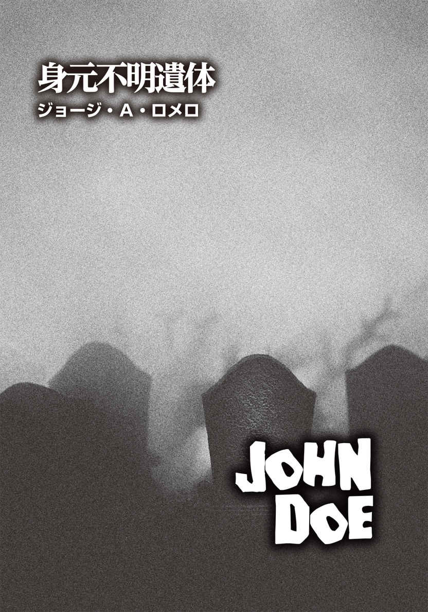
ジョージ・A・ロメロ
George A. Romero
PROFILE
『ナイト・オブ・ザ・リビングデッド』（1968）、『ゾンビ』（78）、『死霊のえじき』（85）、『ランド・オブ・ザ・デッド』（2005）、『ダイアリー・オブ・ザ・デッド』（07）、『サバイバル・オブ・ザ・デッド』（09）など、数々のゾンビ作品を手がけた映画監督。他にも、『ジョージ・A・ロメロ／悪魔の儀式』（72）、『ザ・クレイジーズ』（73）、『マーティン／呪われた吸血少年』（77）、『ナイトライダーズ』（81）、『クリープショー』（82）、『モンキー・シャイン』（88）など、ホラーをはじめとする様々な映画を世に送り続ける。また、テレビシリーズ『フロム・ザ・ダークサイド』では製作を担当。"ゾンビもの"という新しいジャンルを作り出した第一人者である（ただし、本人は、"ゾンビもの"という呼び方は嫌っている）。
Twitter：@GeorgeARomeros
二十一世紀になって最初の数ヶ月──まだ９・11 同時多発テロが起きる前──に、全米の病院、老人ホーム、警察といったコンピュータ設備が整った最新の施設は、ＶＳＤＣ（Vital Statistics Data Collection／人口動態データ収集）ネットワークへの加入を命じられた。これは、ＡＭＬＤ（American Model of Lineage and Demographies／全米血族人口動態モデル）として知られる国勢調査局のある部署宛 ての情報を受け取り、即座にダウンロードするサイバーシステムだ。イニシャルをもじって、「死活問題（A Matter of Life and Death）」と呼ばれたりもする。国内であれば場所を問わず、出生あるいは死亡の記録時には、医師、看護師、記録登録係──地元で届け出を出す者なら誰でも──ＶＳＤＣにダイレクトにデータをコピーするリンクをクリックしなければならない。実に単純明解な手順だ。
身元不明遺体のＶＳＤＣケースナンバー〈１２９－４９－９８７５〉は、彼が死んだその晩、二回システムに認識された。最初は、カリフォルニア州サンディエゴにある聖ミカエル病院によって送られ、二度目は、三時間半後に、サンディエゴ郡の検視局から送信された。これにより、このケースは注目すべき案件となった。二度目のデータがＶＳＤＣに届いた時刻は午後十時三十六分だったが、それから四十八時間、国勢調査局の該当部署の統計学者が最新データの異常性チェックを行うまで、気づかれぬまま放置されていた。
四十八時間で似たようなケースデータは何千と届くため、統計学者たちが問題の身元不明遺体のケースにようやく焦点を当て始めたのは、例の現象が実際にいつ発生したのかを最終的に決定しようとしてからだった。
ＶＳＤＣのシステムの精 緻 性 は、受信データを自動的に日付と時間で整理しないところにある。統計学者たちがきちんと手作業で案件を調べるのだ。その身元不明遺体のファイルは、一時的に「ビギナーズ」に分類され、他のケースよりも古い日付にされた。それよりも前に起こったと思われるケースはいくつもあったものの、どれも身元などの詳細が未解決のままになっている。そのほとんどは、単に統計学者が調査をしなくなったためだった。
わずか四日後──例の身元不明者の死から四日目の晩──に、全ての発 端 が起きたとされているが、そのときにＶＳＤＣに残っていた職員は、男性二人と女性ひとりのみだった。彼らは、自分たちの作業が非常に重要だと信じ、使命感に燃え、あるいは単に意地を張って、徹夜で働いていた。
それからの四十八時間は、何事もなく、いつもと変わらず経過したように思えた。男性職員のひとり、ジョン・キャンベルは自分のコンピュータをシャットダウンしてから帰宅し、頭を撃ち抜いた。それから七時間が経 とうとしていたとき、もうひとりの男性職員テリー・マクアリスターが自身のログに最後にエントリーし、こう打っていた。
みんな、メリークリスマス！ そして、おやすみなさい。
二週間後にクリスマスが迫っていたので、別におかしくはない。
彼と女性職員エリザベス・オトゥールは、コンピュータを点 けたまま局をあとにした。二人はジョージタウンにある男性のアパートに向かい、メキシコ産のテキーラ、ドン・フリオを二瓶開け、夜が明けるまで肉欲のままに身体を重ねた。
翌日の午前六時二十分、エリザベス・オトゥールは、神父のいとこにメールを送った。己 の罪を懺 悔 し、男と一緒にワシントンから出るつもりだと告げている。メールは次のように締めくくられていた。
私たちはそれほど遠くまでは行けないかもしれない。おそらくあなたに会うことは二度とないわ。あなたがまだそこにいて、このメールを読んでくれるのかどうかもわからない。あなたがそうしてくれることを願い、インターネットを通じて行った懺悔を神が受け入れてくれることを祈ります。罪を悔い、神の赦 しを求めて痛悔の祈りを捧 げようとしたけれど、祈りの言葉をちゃんと思い出せないの。もしできることなら、私を赦して。
これでもう世界は終わる。さようなら。私の大好きないとこへ。エリザベスより。
この身元不明遺体のケースファイルは、サンディエゴの検視官ルイス・アコセラによって、ＶＳＤＣに送られている。当然のことながら、この遺体は身元がわかるＩＤを携帯しておらず、その人物の本名を知る者は誰もいない。彼はおそらく六十代のホームレスで、そのとき、ミッションベイ・ドライブの路上で物乞いをしていたと思われる。爆竹が破裂したような音が鳴り、彼はひどく驚いていたという。
音の主は、メキシコのナンバープレートを付けたオンボロのライトバン。サンディエゴ警察のパトカーに追跡され、車は猛スピードのまま角を曲がった。助手席には、〝コヨーテ（メキシコからの不法移民をアメリカに渡らせる密輸業者）〟が座っており、ドアを開けるなり、身を乗り出してウージー短機関銃をパトカーに向かって乱射し始めた。トラックはめちゃくちゃな蛇 行 運転をし、弾丸の雨があちこちに激しく降り注ぐ。うち七発が、タコス料理店の窓を粉々に破壊し、四発が、不幸にもたまたま居合わせた物乞い中の身元不明男性に命中した。被弾したのは、大 腿 上部、腹部上部、左肩の下、首の付け根の四ヶ所だった。ホームレスは歩道に倒れ、助けを求めて叫ぼうとしたが、頸 部 の損傷により、叫び声は空気が漏れ出る喘 鳴 にしかならなかった。
ライトバンは電柱に激突し、さらにパトカーが二台到着して激しい銃撃戦が繰り広げられた。警官二名が撃たれ、うちひとりは重傷だ。のちに判明したことだが、バンに乗っていたのは、密輸業者二名、不法移民四名、計六名のメキシコ人だった。そのうち死亡した四人は、それぞれが警察側からの怒りの銃弾を二十発以上受けていた。最終的に、残る二人は生きたまま捕らえられた。
本当に偶然なのだが、タコス料理店の窓が粉砕されたとき、ルイス・アコセラはその店内で白豆のスープを堪能しているところだった。銃撃戦が収束するや否や、彼は表に飛び出し、倒れていたホームレスのそばに駆け寄った。身元不明のその男性は、かなり苦しそうだったが、辛 うじてまだ息があった。アコセラは、救命キットを取りに自分の車に向かったが、現場に戻ってきたときには、救急隊が到着しており、男性の喘鳴はすでに停止していた。
アコセラが腕時計に目を落とし、時刻を確認した。針が示していたのは、午後六時五分。もし男性が息を引き取ったのであれば、少なくとも三分以内のことだろう。通常の事例なら、必要書類の記入を快諾し、アコセラは死亡時刻を午後六時四分と見積もって、そう書いていたかもしれない。しかし、彼は書類には何も書かなかった。男性の銃創は、いずれも致命傷には思えなかったからだ。もし速やかにそれなりの病院に移送できれば、まだ蘇 生 の可能性はある。
白紙の書類を見た刑事が、つかつかとアコセラに歩み寄ってきた。そして、いきなり顔を突きつけ、こうまくしたてた。
「あの男は死んでいる。おい、聞いてんのか？ そんでもって、殺したのはおまえの同類だ！」
「私の同類だって!? 」
アコセラは相手が言わんとしていることを理解していたが、困惑した表情をしてみせた。
「その通り。おまえと同じラテンの血が流れてる奴 らだ」
刑事は臆面もなく本音を吐いた。「いいか。あいつらが男を殺した。我々ではない。あいつらだ！ メキシコの密輸業者のせいで男は死んだ。それを証明するのがおまえの仕事。仕事をしない役立たずは、あとでどうなるか、わかってるんだろうな？」
目の前の刑事を殺してやりたい、絞め殺してやろうか、とはらわたが煮えくり返る思いだったものの、アコセラはそんな感情はおくびにも出さなかった。代わりに彼は早口で返した。
「被害者はまだ蘇生させられるかもしれない。今すぐ設備の整った病院に連れていけばの話だが」
周囲には人だかりができており、二人のやり取りが聞かれていたため、すでに現場には三台の救急車が来ていたにもかかわらず、さらにもう一台を呼ばなければいけない羽目になった。かなり渋々と、刑事は追加の救急車を要請した。少しして、ようやく四台目が到着した。その救急車はサイレンも鳴らさず、回転灯も点けていなかった。それでも救急隊は迅速な対応で、ホームレスを近くの聖ミカエル病院に搬送していった。しかし、アコセラはわかっていた。蘇生させるには、すでに時間が経ち過ぎていることを。
刑事の理不尽な対応を受けても必死で怒りを吞 み込み、礼儀正しく立ち振る舞っていたものの、救命キットを手にし、現場からマイカーに戻る途中、彼は堪 えきれずに道路に転がっていたコロナビールの瓶を蹴り飛ばし、「クソったれの白人野郎め！」と大声を上げた。車に乗り込み、呼吸を整えたアコセラは考えた。検視が必要となるだろうから、もう一度あの身元不明の男性に会うことになる、と。
午後八時二十二分、アコセラは郡の死体安置所のオフィスにいた。やっとのことで滞っていた書類整理を終えた彼は、渋い顔つきで壁に書かれているラテン語を見つめていた。
ＨＩＣ ＬＯＣＵＳ ＥＳＴ ＵＢＩ ＭＯＲＳ ＧＡＵＤＥＴ ＳＵＣＣＵＲＲＥＲＥ ＶＩＴＡＥ
ここは「死」から「生」を学ぶ場──という意味だ。
そのとき電話が鳴り、アコセラは我に返った。
かけてきたのは研修医で、例のホームレスの件だった。あの被害者は、搬送先の病院の救急治療室で、午後七時十八分に死亡宣告がなされたらしい。
「ふん、クソ研修医め！」
五十年も使い続けているダイヤル式の電話の受話器を叩 きつけるように置き、アコセラは腹立ち紛れに悪態をついた。あの男性が息を引き取ったのは、午後六時四分だ。彼は重い受話器を再び摑 み上げ、かけなれた番号を回した。
〈あら、先生。今日はどんな愚痴ですか？〉
シャーリーン・ラットコウスキーは、かけてきたのがアコセラだとわかると、相変わらずの率直な物言いで応対した。友人からはシャーリーと呼ばれて慕われているが、上司に対して媚 を売ることを知らない天真爛 漫 なタイプだ。
「君がここにいたためしがないから、ひと言文句を言いたくてね」
〈ちょっと待って。いつもそこにいるでしょう？ 冗談は休み休みお願いします〉
シャーリーンは、ニューヨーク州ブロンクスの典型的なブロンド美人そのものである。ホワイトストーン橋近くのパークチェスター出身で、マリリン・モンローのボディにジュディ・ホリデイの頭脳を持つ。マリリン・モンローは天然のおバカさんという感じだが、一方のジュディ・ホリデイは、おつむの足りないブロンド美女を演じるも、見てくれほど頭の足りない女優ではなかった。つまり、シャーリーンはゴージャスで、バカっぽく見えるが、実際はバカではない。
〈先生はいつだって不平不満ばかり〉
シャーリーンは間髪入れずにしゃべり続けた。〈まるで愚痴るのを楽しんでるみたい〉
「心から満足できるものが、何も、何ひとつないからだ。そこそこ納得できることですら、それほど起こらない。キャビア、フォアグラ、シャトー・ラトゥール・ワインを味わってみたら、普通の食事の数倍以上の享 楽 をしばしの間嚙みしめることができる。キューバ産の手巻きの葉巻を女性の膝の上で転がし、快感を貪 る。おそらく年に一度の贅 沢 だ。満足のいく人生の秘 訣 は、できるだけたくさん愉悦を得ることだ。一日一回。一日に数度。さて、君にとって悦 びを得られるものは何かな？」
〈知・ら・な・い〉
彼女はそう言った後、質問の答えを模索しているのか、しばし黙り込んだ。そして、こう告げた。〈そうね。一日に何回かは排尿する必要があるわね〉
シャーリーンの天然ボケには慣れていたものの、あまりに予想外の返答に、アコセラは思わず噴き出しそうになった。それでも、平静を装ってわざと真面目 に返した。
「まあ、排尿は、概 ね快感を伴 う経験と言える。その際には、我々の最も性的な器官を使うしな。しかし、来る日も来る日も、連日、癪に障 ることばかりだ。心地よさを感じることの何倍も、何十倍もムカつくことが起こる。すなわち、人生を最大限に活用するには、楽しめない行為を楽しむ術 を学ぶことだ！」
〈わかりました。で、今、本当は何が不満なんですか？〉
「研修医だ。全く頭に来る。なんで死んでから一時間以上経った時間を死亡時刻にするんだ！」
〈どうして一時間以上が経過したってわかるの？〉
「あの哀れな浮浪者が撃たれたとき、私は現場にいたんだ」
〈噓でしょ!? 〉
「噓なもんか。私はあの場にいた！」
〈じゃあ、被害者は搬送されるのが遅すぎたってわけ？〉
「ああ、遅すぎた」
彼は数時間前の事件現場の様子を思い返した。「連中は私を見下していた。バカな刑事が検視官より偉いと勘違いしているんだ。信じられるか？」
アコセラは、多少芝居がかった言い方をした。シャーリーンには、大げさな方がいい。内心は、彼は起こった出来事について刑事を責めてはいなかった。彼は己の弱さを責めていたのだ。しかし、それを認めてシャーリーンに本音を話す心の準備はできていなかった。
彼は引き出しを開け、しばらくごそごそと中を搔 き回し、ようやくタバコの箱を取り出した。ずいぶんと前に買ったマルボロだ。古くなったタバコを一本引き抜き、今度はライターを探して再び引き出しを漁 り始めた。
物音から判断したのか、シャーリーンが驚いた声を上げた。
〈また吸い始めたの？〉
「いや。喫煙を再開したんじゃない。タバコを一本吸おうとしているだけだ。一本だけ！ この忌 々 しいものに火を点けられる方法を見つけ出せたらな！」
乱暴に引き出し内を引っ搔き回した末、やっとのことで古いマッチ箱を探り当てた。一本取り出して擦 ってみる。
ところが、マッチ棒が二つに折れてしまった。もう一本取り出し、箱に擦りつける。
今度は軸から頭の部分がもげた。
三本目は擦っても折れたりしなかったが、点火することはなかった。
「なんてこった！」
彼は大声で不満を垂れた。「昔のマッチは折れることなんて滅多になかったぞ。不良品を作りやがって！ もっとマシな商品を作れ！ どうせ安い金であげてるんだろう。それに──」
彼の文句は、四本目のマッチが点けた炎にさえぎられた。アコセラはすぐさまマルボロに火を点け、深く紫 煙 を吸い込んだ。久しぶりだったせいか、少しめまいがした。
もう一度タバコを吸う代わりに、彼は、燃えている端 を昨日の残り物のコーヒーに浸して火を消し、吸い殻をゴミ箱に放った。
「ちきしょう！」アコセラは怒鳴った。
続けて、もっと怒りを込め、より大きな声で「ちきしょう！」と繰り返した。
わずかながら落ち着きを取り戻した彼は、シャーリーンとの会話に戻った。何が不満かという話題だっただろうか。
「ここだけの話、私はあのホームレスが今夜死んだのではないと考えている。私が最初に彼に駆け寄った直後でもない。しかも、銃撃戦で受けた傷は致命傷ではなかったはず。私は彼の命を救えた可能性があったと本気で思ってるんだ！」
シャーリーンはアコセラのディーナーだった。ディーナーとは、死体安置所で死体を管理し、洗浄や死化粧を行う者を指す。フランス語のようにも聞こえるため、彼女はこの言葉の響きを気に入っていた。「ディーナー」と実際に発音してみると、どこか「ＤＮＡ」と聞こえ、論理的思考の持ち主ではない彼女には、非常に重要な言葉に思えるという。実際には、語源はフランス語ではなくてドイツ語で、「召使い」の意味なのだが、シャーリーンの夢を壊したくないので、アコセラはその事実を告げていなかった。そして、彼女は実際に単なるディーナーというよりは、当局では、もはや検視官顔負けの有能な仕事ぶりを見せていた。
彼はシャーリーンに、タコス専門店の表で何が起きたか、警察が自分にどのように検視を強要したかを説明した。ブロンクスのブロンド美女がそうであると期待されている通り、彼女もまた、己の心の優しさを強調し、自分のハートは二十四カラットの輝きだと言ってきた。つまり、平たく言えば、アコセラの味方だと主張したのだ。
〈事情はわかったわ。それで、先生はこれからどうするつもりなの？〉
彼女の口調は少し柔らかくなっていた。〈この面倒ごとに関わりたくはないんでしょ？ 私も巻き込まれたくはないけど、あなたの部下だから自動的に巻き込まれてる。となれば、私たちでできることをやらなくちゃ。そうでしょ？〉
午後九時四十二分。荷物 が届いたことを知らせるベルが鳴った。それから三分もしないうちに、救急隊員二人がガムを嚙みながら死体解剖室に入ってきた。身元不明遺体を載せたストレッチャーを押す彼らは、スチール製の解剖台の上に死体袋をどさりと置き、あっという間に部屋を出ていった。
「シャーリー？」
アコセラが呼びかけると、彼のディーナーは洗面所から姿を現わした。
「彼が......例の浮浪者が運ばれてきた」
「そうみたいね」
彼女は仕事に取りかかる準備ができており、金属の引き出しから、てきぱきと必要な器具を取り出し始めた。
まずは写真撮影だ。通常ならば、初めに死亡時の着衣のまま写真を撮るのだが、聖ミカエル病院から送られてきた遺体はすでに服を脱がされていた。シャーリーンはペンタックスのデジタルカメラが設置されたオーバーヘッドアームを動かし、裸身の写真を正面、右、左方向から撮っていく。背面の写真も撮影しなければならないため、遺体を腹 這 いにさせる必要があった。アコセラは男性の身体を裏返す手助けはしたものの、それ以外の作業は全て、シャーリーンがひとりでやってしまった。
遺体が横たわる解剖台は、体重計も兼ねている。身元不明者の体重は、八十四キロだった。
他の計測も行われた。レントゲン撮影もだ。
シャーリーンは、この仕事に携わってすでに六年以上が経つ。これまで何百という遺体を目 の当たりにし、取り扱ってきたものの、今でも死んだ人間と閉じられた空間にいるのは、気味が悪くてゾッとする。
彼女は繰り返す悪夢にも悩まされていた。仕事場の建物だったり、スーパーマーケットだったり、友人宅だったり、夢の中で彼女はいつも違った場所にいる。やがてドアを抜けると、決まって同じ展開が待っている。時とともにささいなことが二つばかり違ってきていることを除けば、あとは全く同じだ。
ドアを通って彼女が足を踏み入れるのは、いつも解剖室。死体が置かれている室内中央の解剖台以外、部屋は真っ暗になっている。そこにあるのは常に同じ死体で、それは必ずタキシードを着ていた。彼の顔はかすかに見覚えがあるものの、夢の中のシャーリーンは、それが誰だかは思い出せない。解剖台の真上には、外科手術用のライトが煌 々 と光っており、そのまぶしい光を見るたび、彼女は舞台のスポットライトのようだと思う。高 輝 度 の明かりに照らされた死体は、暗闇に浮かぶ不気味な太陽のごとく輝いている。
すぐにシャーリーンは、その場所は密閉されていることに気づく。窓も扉も一切なく、彼女が入ってきたはずのドアもなくなっている。すなわち、出口がない（幾度となくこの夢を見るうち、わざわざ出口を探すこともしなくなった。過去の経験から、探しても無駄だと学んだのだろう。初めの頃は探していたのだから、これが、時間が経過するにつれて変わってきた要素のひとつだと言えるだろう）。
死体は動き出す前に、必ず話しかけてくる。
「やあ、シャーリーン」柔らかく、耳に心地よい声だ。「踊らないか？」
そして、彼は起き上がる。
夢の中のシャーリーンは、部屋の中を駆け回り、壁を叩き、何かを探し出そうとする。その何かとは、壁をこじ開けられるかもしれない、隠された継ぎ目だ。必死になって探しながら（結局は見つからないのだが）肩ごしに背後を見やると、解剖台に座った形になった死体は足をブラブラさせていた。やがて床に足をついて立ち上がると、ゆっくりと歩き出すのだ。四 肢 の機能が衰えているのか、ぎくしゃくした動きで近づいてくる。一歩、また一歩と。
最後は決まって、シャーリーンは部屋の片隅に追い詰められ、自分にこう言い聞かせる。
「なんて愚かなの！ 次こそ覚えておかなきゃ。部屋の真ん中に走るのよ。部屋の隅に逃げるから、毎回毎回捕まってしまう。中央にいれば、どの方向にも逃げられるから、あいつに捕まらずに済むわ！」
次の夢でも、彼女は逃げ惑う。
そして結局、どうしてもあと少しのところで手遅れになってしまう。
死体はすぐ目の前にいて、笑顔で迫りつつ、こう言うのだ。
「踊らないか？」
いや、笑顔ではない。というか、笑顔を浮かべた次の瞬間に、歯を剝 いた凄 まじい形相に変わるのだ。と思ったら、すぐに笑顔に戻る。
死体が笑顔から恐怖の表情に変わり、また笑顔になるという場面が、シャーリーンにとってはこの夢で最も怖い部分だった。死体が立ち上がり、追いかけてくると、彼女は悟る。あの恐ろしい瞬間がもうすぐ来るのだ。死体が「踊らないか？」と微笑 む瞬間が。
少なくとも月に一回はこの悪夢を見るようになって一年以上が経った頃、シャーリーンはある日、母親の家を訪ねた。居間の壁に飾られたキリストの絵を見つめていたら、あることに気づいたという。首をわずかに左右に傾けたときに、絵が違って見えるのだ。髪の毛の細い束の具合が、キリストが柔和な微笑みを浮かべているように見せているのだが、五センチほど顔を左か右に傾けて絵を眺めると、キリストは血を流し、苦 悶 に歪 んだ表情に変わる。
この絵は、シャーリーンが生まれたときにはすでに同じ場所に飾られていた。彼女は幼少期から、この絵の前を何千回、何万回と横切っていたはずだ。しかし、大人になる前には、絵の存在すら忘れかけていた。彼女がディーナーになるずっと前に。ところが、悪夢の主役になれるほど、この絵のキリストが強い印象をシャーリーに与えていたのは明らかだった。
死体の表情が変化するのは、基本的に母親宅の古いキリストの絵の再現だったのかと、悪夢と絵の関係性に気づいてから、あの場面の恐怖は薄らいでいった。これが時の経過とともに変わった二つ目の点だ。
しかしながら、密閉された空間に囚 われる夢の他の部分は全く同じままで、死体に追われる恐怖が和らぐことはなかった。
悪夢の最後、彼女が目覚める直前、死体があと十センチくらいのところまで迫ったとき、彼女はようやくその見慣れた顔の主を思い出す。
フレッド・アステア。ミュージカル界の巨星でダンスの神様と呼ばれた往年の人気スターだ。
──踊らないか？
シャーリーンがこの夢のことを母親のメイ・ラットコウスキーに打ち明けたとき、母親の家はまだブロンクスのグランド・コンコースにあり、キリストの絵も居間の壁に掛けられたままだった。
「なんで続けてるの？ どうしてやめないのよ、包囲網とやらの仕事」と、母親が言い、シャーリーンは「法医学の仕事ね」と、返した。
「呼び方はどうでもいいけど、あなたの仕事が悪夢の原因だとしたら、仕事を変えるべきだわ。そうしない理由は？」
「給料がいいから」
そう端的に答え、シャーリーンはクレーム・ド・ミントを再びグラスに注いだ。母の家にあるアルコール飲料は、このグリーンのミントカクテルだけだった。ひと口飲んで、彼女は早口でまくしたてた。「キャロル・スプリンガーを覚えてる？ 彼女はフライト・アテンダントになったけど、毎晩悪夢を見てるって言ってた。自分が搭乗した飛行機が墜落する夢をね。しかも、毎晩よ！ 私の夢で最悪なのは、フレッド・アステアが私をダンスに誘うことなの！」
「フレッド・アステア......私はずっと彼の大ファンよ」
母親は夢見る乙女の表情になった。
「私の好みじゃないわ。私にしてみれば、彼はちょっと──」
シャーリーンはそこでグラスを口に運び、ミントカクテルを飲み干してから言葉を続けた。「死人みたいに見える」
午後十時十七分。身元不明遺体の解剖はすでに始まっていた。両肩から胸部中央を通り、恥 骨 部 まで、シャーリーンは淡々とＹ字切開を施していく。見たところ身体の表面に出血はない。
死亡しているのだから、心臓はもちろん動いていなかった。地味な解剖室には場違いのブロンクス出身のブロンド美女は、死体の前胸部の軟部組織をじっくりと観察している。男の胸は、観 音 開きの扉のように大きく開かれていた。内側の肋 骨 は、スペアリブ専門店〈デーモンズ・グリル〉のバーベキューソースがかかった子豚のあばら肉を思わせた。
肋 軟 骨 の骨化という老化現象が見られるということは、彼はそれなりの年齢に違いない。シャーリーンは鋸 歯 状ナイフ──いわば、小型のノコギリだが──を用い、胸板と融合した軟骨を切り裂いていく。この処置により、死体の胸 腔 内を詳しく調べることが可能になる。異物は、即座に見つかった。
「ビンゴ！」
彼女は鉗 子 でつまんだものを検視官に見せた。「ほら、銃弾よ」
「それが命取りになったのか？」
アコセラの問いに、シャーリーンは首を振った。
「いいえ。肋骨で止まってた。一週間の入院と鎮痛剤投与で、彼は家に帰れたでしょうね。それで、彼の体内から一体何を探し出せばいいの？」
「彼に致命傷を負わせた原因を見つけたい」
「この男性は、たまたまあの時間に、あの場所に居合わせてしまった。運の悪さと都会に住んでいたことも遠因でしょうね」
「うーん」
検視官はルーズリーフのバインダーを見下ろして唸 った。彼がこれまでいろいろと書き留めてきた私用のノートだ。銃弾が身元不明の男性の死を招いたのではないことは確かだった。アコセラは時折、頭に装着したウェアラブルのマイクロフォンのスイッチを押し、重要と思われる情報を声に出して記録していた。彼の言葉は、解剖室の隅にあるデスク上のコンピュータに無線で飛ばされる仕組みになっている。音声認識システムにより、話した内容がテキスト化されるのだ。その後、テキスト化された情報は、検視局の公式の検視報告書として、市や郡の然 るべき組織の所定のリストに転送される。
この音声認識処理は、病理学者の負担の軽減が目的なのだが、残念なことに、システムは完璧とは言えない。解剖が済み、死体を縫合して冷凍保存した後、テキストの間違いを修正する必要があるのだ。とはいえ、文章の校正は気が遠くなるような作業ではない。大体の場合、八割がたは正しく文章化されている。解剖は二人一組で行い、どちらかが執刀し、どちらかが記録をするのだが、この夜は、シャーリーンが汚れ仕事の担当で、アコセラがマイクロフォンを装着して記録係に徹していた。
「白人男性 」
彼がこの検視で最初に口述したのは、その言葉だった。その後、マイクロフォンから指を離し、シャーリーンに話しかけた。「システムがどんなエラーをしてるか見てみよう。コンピュータはなんて書き出してると思う？ 〝ｗｈｉｔｅ 〟は〝ｗｈｙ 〟〝ｗｉｒｅ 〟〝ｗｒｉｔｅ 〟になってる可能性があるし、〝ｍａｌｅ 〟は、〝ｍａｉｌ 〟〝ｍｏｌｅ 〟〝ｍｕｌｅ 〟と勘違いされてるかもしれない」
「先生の英語は訛 りがあるものね」
「訛り？ そんなものはない」
「ありますよ。〝Ｎ ｏ ｆｕｃｋｉｎｇ ｗａｙ 〟って言ってみて」
シャーリーンからの唐突な頼みに、アコセラは眉をひそめた。
「なんだって？」
「いいからつべこべ言わずに、言ってみて。〝Ｎｏ ｆｕｃｋｉｎｇ ｗａｙ〟って」
ここで彼女と言い争っても勝ち目がないのはわかっていたので、アコセラは「わかったよ」とうなずき、渋々「Ｎｏ ｆｕｃｋｉｎｇ ｗａｙ」と言った。
「ほら、やっぱりね」
シャーリーンは満足気にうなずいている。ラテンの血が流れているため、アコセラの英語には、わずかながらにスペイン語の訛りがあるようだ。ただし、自分では全くわからなかった。
「君の方こそ訛りがあるだろ。〝Ｎｏ ｆｕｃｋｉｎｇ ｗａｙ〟って言ってみたまえ」
シャーリーンはためらうことなく発音したが、案の定、彼女の英語にも訛りがあった。
「ニューヨーク訛りだな」
まるで噓をついているのを暴いたかのように、彼は指をさし、「麗 しのニューヨーク！」とわざとらしく真 似 して発音してみせた。
「じゃあ、私たちは二人とも訛りがあるってことでおあいこね」
シャーリーンは首をすくめた。「このシステム、最新技術と銘打ってるくせに、私たちの英語を正確に聞き取れないとはね。先生は、私が何を言ってるか聞き取れなかったことがあった？」
「いいや、一度も」
アコセラは相棒のディーナーを見つめた。「他の人間だと、私はいつも相手の言葉を理解しようと努力しなければいけないんだが、君との会話で、私がそのように感じたことはない。ウマが合うというのかね、こういうのを」
シャーリーンは褒め言葉と取ってくれたようで、まんざらでもない顔をしている。もしかしたら、それ以上と取ったのかもしれない。
アコセラはマイクロフォンのボタンを押し、もう一度「白人男性 」と言った。さらに口述記録を続ける前に、ボタンから指を外し、再びシャーリーンに話しかける。「機械がどんな間違いをしてるか、早速見てみないとな」
予想通り、電子頭脳は見事に聞き間違えており、〝ｗｒｉｔｅ ｍｅａｌ 〟とテキスト化していた。彼が〝ｏｃｃｌｕｓｉｏｎ 〟と「血管の閉塞」を意味する用語を言った際には、〝ｃｏｎｆｕｓｉｏｎ 〟と、「混乱」を表わす単語になっていた。
アコセラは事の大きさを何もわかっていなかった。身元不明遺体の解剖が行われた夜の午後十時三十六分以降、彼はメールをチェックするどころか、他のことに充 てる時間がほとんどなかった。
生き残ろうとする以外は。
四十八時間後、アコセラがマイクロフォンにわめき立てた言葉がテキスト化され、人口動態データ収集システム、通称〝ＶＳＤＣ〟のコンピュータに届き、テリー・マクアリスター、エリザベス・オトゥール、ジョン・キャンベル（彼はまだ帰宅前で、頭を撃ち抜いていない）は、この検視官の言葉を理解するのに四苦八苦することになった。
サンディエゴから発信された、ひどく取り乱した様子のメッセージは、この二日の間で報告された他の三万六百四十二例と同様の現象の目撃証言であることだけは、彼ら三人も確信していた。サンディエゴの一件が全ての発端となる事例なのかどうかは定かではなく、さらなる調査が続いていた。キャンベルが去った後もさらに四日間、残る二人は調べを進めていた。エリザベスがテリーを見て、「これって世界の終わりかもしれない」と首をすくめ、彼が「なら、ここでこんなことしてても意味がないな。うちに来て、うまいテキーラを飲まないか？」と返すまで──。
身元不明の男性が解剖室に運び込まれてから四十分もしないうちに、シャーリーンは、いとも簡単に、もう二発の銃弾と重要臓器を遺体から摘出していた。その動きに無駄はなく、ぶっきらぼうな立ち振る舞いとブロンド美人の容姿が相まって、仕事中の彼女を見たら、まるでマンハッタンの老舗デリ〈カーネギー・デリ〉のウェイトレスのようだと思ってしまうかもしれない。
「肺（お待たせ、ご注文のサンドイッチね）」
「腎臓（はい、これはサイドオーダーよ）」
「肝臓、脾 臓 （サービスのピクルスをどうぞ）」
という具合に。
取り出した銃弾を受け皿に置いた後、外科用メスを使って切除した臓器のサンプルを保存液に浸し、各臓器の塊 をバイオハザードバッグに放り込んでいく。彼女が心臓に手をかけようとしたとき、アコセラの声がした。
「待て！」
検視官はバインダーノートから顔を上げた。「まだだ」
「なんで？」と、ディーナーは眉 間 にしわを寄せた。
「男性は四発被弾した」
彼は理路整然と説明を始めた。「最後の一発を見つけ出す必要がある。あるいは、その一発がどの箇所から抜け出たのかをはっきりさせるんだ。ＧＳＷが致命傷ではなく、死因でもないことを証明しなければならない」
ＧＳＷとは、解剖室で使われる言葉で、「ＧＵＮＳＨＯＴ ＷＯＵＮＤ （銃弾による傷）」の略語だ。
「警察は死因がＧＳＷであってほしいと思ってる。だから私たちが検視してるんじゃないの？」
「私は連中が間違っていることを証明するつもりだ」
「どうしてそんなことを？」
「あいつらにぎゃふんと言わせてやりたい。刑事たちが困る顔を見たいんだよ。愚か者のくせに偉そうに！」
「ちょっと落ち着いて。真実はひとつよ」
シャーリーンは至 極 まともな発言をしたものの、怒りが収まらないアコセラは語気を荒らげた。
「警察の奴らめ、メキシコ人たちが銃を持っていたからって、全ての責任を彼らになすりつける気なんだ！ 誰が撃った弾が浮浪者に当たったのか、私にはわからない。私がわかっているのは、彼を助けられたかもしれないということだけだ！」
バインダーを置いた検視官は解剖台に歩み寄り、メスと探針で男性の死体を探り始めた。彼が「あった！」と叫ぶまで、五分とかからなかった。左肩の下から鉗子で取り出したのは、血に染まった小さな鉛の塊──銃弾だ。
「ごめんなさい」
シャーリーンは素直に謝った。「私が見つけるべきだったわ」
「最後の一発が見つかった。そして──」
アコセラは肩の傷を観察し、息を吐いた。「やはり、致命傷ではない」鉗子でつまんだ弾丸をライトに照らしてしげしげと眺め、「男性の死因はＧＳＷではなかった」と微笑んだ。
「じゃあ、本当の死因は何？ 心臓発作？」
「あり得る」と、検視官はうなずいた。
「他に考えられないわよね？ 弾はいずれも重要な器官をそれていたし、男性は高齢だし、健康状態も良好ではなかった。ハロウィンでお化けの格好をした子供に驚かされて、死んだかもしれないわ。たまたま機関銃で四発撃たれちゃったけど、死んだのは心臓発作のせい。決まりね」
「君の考えが正しいのなら、私も正しかったわけだ。やはり、彼は蘇生可能だったかもしれない！」
それからさらに十五分、二人は検視を続けた。全ての傷をくまなくチェックし、ウージー機関銃の銃弾が致命傷を与えたのではなかったと確信し、アコセラは満面の笑みを浮かべた。ようやく彼はディーナーに心臓の摘出を許可し、バインダーを取りに戻った。
シャーリーンが長 刃 のナイフで作業をする傍 ら、アコセラはマイクロフォンに向かって語り出した。
「死因は......銃撃で受けた傷によるものではない。引き続き心臓を調べる。閉塞をチェック。心筋症......」
そこまでしゃべってボタンから手を離し、彼はシャーリーンに声をかけた。
「左だけじゃなく、右も見てくれ。催不整脈性右心室の可能性もある。遺伝性疾患か、はたまたブルガダ症候群か」
数分後、シャーリーンは男性の胸腔内から慎重に心臓を持ち上げた。ところが、観察用の容器に移そうとしたとき、心臓は彼女の手を離れ、床に落ちて鈍い音を立てた。シャーリーンは目の前の光景に、もはや正気を失いかけていたのだ。臓器を根こそぎ取られ、ほぼ空洞となった骸 が、解剖台の上で動き出したのだから。
ひとりでに。
アコセラはその様子を見ていた。
「なんてこった」
ほとんど声にならない声でつぶやいた。次いで、思わず同じ意味のスペイン語が口から出た。
「Madre de Dios 」
「死後......どのくらいまで......」
シャーリーンの声は恐怖で震えていた。「筋収縮が......起こり得るのかしら」
「場合によりけりだが──」
アコセラはそこまで言って、言葉を吞んだ。死体が目を開いたのだ。声に気づいたかのように、ゆっくりと顔を彼の方に向けてきた。たるんだまぶたの下の眼球は粘液で濁り、生前はブラックコーヒーを思わせる色だったはずの虹 彩 も、すっかり乳化していた。
アコセラと死体の距離は、二メートルほどあった。その死んだ目は、どこか遠くを見つめていた。視線は検視官の身体をすり抜け、はるか彼方 の地平線にある何かを捉 えている感じだった。身元不明の男性は、アコセラを眺めているのではなく、その存在を知覚しているふうに思えた。悪寒よりももっとたちの悪い感覚が、彼の全身を貫いた。血管を流れる血液が全て、氷水に変わってしまったような感じだった。
「これ......現実なの？ 夢じゃ......ないでしょうね」
シャーリーンの声と身体の震えは、収まるどころか、ひどくなる一方だった。アコセラは何も返してこない。だが、死体の方は反応した。ぎこちない動きで、彼女の方に顔を回したのだ。虚 ろな目はシャーリーンに向けられた。
「踊らないか？」
死体は何も言葉を発しなかったが、彼女の耳には確かにそう聞こえた。
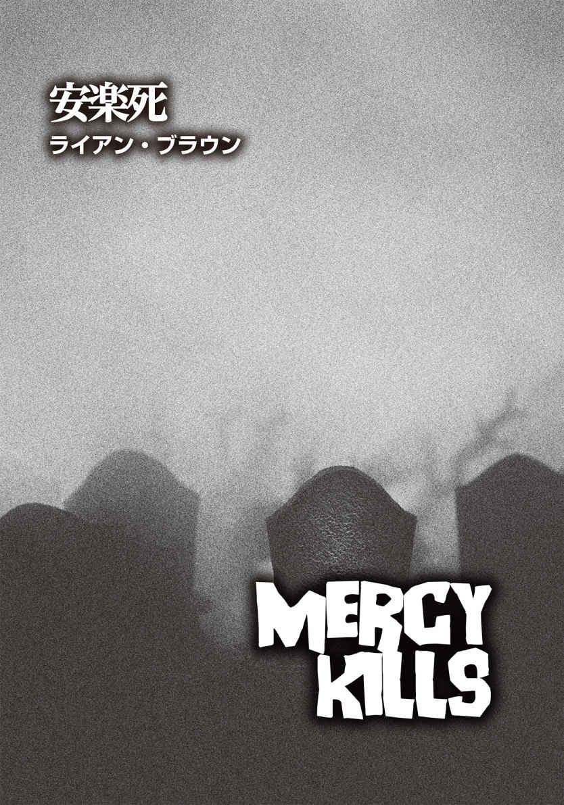
ライアン・ブラウン
Ryan Brown
PROFILE
『Play Dead』『Thawed Out and Fed Up』などの小説で知られる作家。テキサス育ちで、現在は妻と息子とニューヨークで暮らしている。
Twitter：@TyanBrownAuthor
まだ記憶が鮮明なうちに、これをしたためておこうと思う。未来がどうなるか定かではないのだから。未来があれば、の場合だが。
僕の名前はマーヴィン・ホワットリー。興味を引きそうな部分から始めようと思う。夕暮れ時、僕はパムの大型トレーラーハウスに到着し、室内に飛び込んだ。それは、彼女の命を救い、身の安全を確保し、二度と離れ離れにならないための行動だった。
軍人ならば、それを「攻撃目標」とか「作戦」と呼んだだろう。この二十四時間で全世界がどのようにイカれてしまったかを見ると、どちらもピッタリの言葉だ。
まずはいい知らせから。パムはそこにいた。次は悪い知らせ。彼女の顔はぐちゃぐちゃに嚙 みちぎられていた。腕一本を除き、手も足も損壊していた。
あまり詳しく語れないのを許してほしい。自分の恋人が、ひどく荒らされた家の床の上で、辛 うじて頭部が少し残った胴体だけの姿になって身 悶 えしている姿は、とてもじゃないがまともに見られるものではなかった。それが彼女だと判別できる証拠は、デート先のコンサート会場で彼女に買ってあげたロックバンド〈レーナード・スキナード〉のＴシャツのみ。相当血まみれになっていたが。確か大学二年のときにプレゼントしたはずだ。
ベトナムから帰国してわずか一日で、僕はすでに別の戦いを始めていた。そしてこの戦いは、正式に命じられたものでも、契約書を交わしたものでもない。メコンでも大量の血や内臓が散乱する惨状を目 の当たりにしたが、この現場は全く違う。これは完全に別物だ。
昨日から死者が蘇 り始めたことを話したかな？ 単に蘇っただけじゃない。人々を食い始めたんだ。食われて死んだ奴 も同様に蘇り、人を食い始める。この現象が拡大していく様 は、まるで猛威を振るう伝染病みたいなものだ。しかし、人を死に至らしめる病 とは真逆で、死人を生き返らせる。それも、食人という余計な習性を付加して。原因は金星探査機からの放射線だとか、あれこれ憶測が飛び交っていた。
しかし、そんなことは問題ではない。
現時点で確かなのは、パムの半分が食われてしまったということだけだ。彼女は、生きても死んでもいない得体の知れない奴らのひとりとなった。もし両足があったなら、リノリウムの床から起き上がり、僕を食おうと駆け出してきただろうが、今の彼女は、せいぜい血 糊 と肉片にまみれてクネクネと身体をくねらすのが関の山だった。
僕の心はズタズタだった。半狂乱になって、そこら辺の物を手当たり次第にぶち壊し、涙が涸 れるまで泣きたかった。
だが、僕は兵士だ。
仲間が木 っ端 微 塵 に吹き飛ばされるのを見たことがある。忌 々 しいジャングルでは、まずは生き延び、それから泣くという現実を即座に学ばされた。だから、まだ泣けない。
あのおぞましい連中の息の根を止めるには、頭部を破壊するしかないと聞いた。銃を携帯していたのなら、己 のはらわたの中でもがくパムを静観するのではなく、その頭をすぐに撃ち抜いて楽にしてやったはずだ。しかし、僕は銃を持っていなかったし、彼女を安楽死させてやる他の方法を思いつく暇がなかった。なぜなら、開けっ放しのドアから、三十体以上の化け物が近づいてくるのが見えたから。連中は酔っ払いのような足取りで、ゆっくりとトレーラーハウスの正面に近づいてきていた。
生存本能が僕を突き動かした。
パムの身体をまたぎ、レコードプレイヤーの上の小さな窓へ移動すると、奴らが後方からも迫っているのがわかった。トレーラーは取り囲まれてしまっていた。
小さなキッチンスペースに戻り、凶器になりそうなものを探して引き出しを漁 っていたとき、足首が何かに締めつけられた。
パムだ。床を滑りながらここまで這 ってきたのだろう、彼女は唯一残った手で僕の足首を摑 んでいた。ギョッとした僕は慌てて膝を上げ、彼女の手を振り払った。危うく嚙まれるところだったが、なんとか足首を自由にすることができた。僕は引き出しにあった肉切り包丁を摑んでトレーラーの奥に舞い戻り、自分の置かれた状況とそれにどう対処すべきかを考えた。
パムの見てくれは非常に恐ろしかったが、自分も彼女と同じ運命をたどる──アンデッドと化す──のではないかという思いは、もっと恐怖だった。
幸か不幸か、僕はこれまでも地獄を見てきた。荒れ果てた三角州を重い足取りで歩き続けた一年は、敵だけでなく、疲労と空腹と多湿とも戦う日々だった。故郷は果てしなく遠く、正気を失いそうになり、足元の仕掛け地雷を危うく踏みそうになったのは一度や二度ではない。当時僕が置かれていたのはあまりにも過酷な環境だったと思うが、それでもアンデッドになるよりはマシだ。人肉に飢えた血だらけの悪鬼 になど、絶対になりたくはない。
この先、困難が待っているだろうが、生き延びる理由はあった。手遅れにならないうちに愛するパムのところへ来なければならなかったのに、それができなかったのは、あのクソ野郎のせいだ。奴にこの責任を取ってもらわねばならない。しかしとりあえず、それは後回しだ。
頭の中で、戦闘をシミュレーションしてみる。肉切り包丁で一、二体のアンデッドを無力化し、椅子を壊して、その脚でさらに数体を倒す。問題は、それでもまだかなりの数が残っていることだ。このままでは、自分が生存できる確率はかなり低い。
連中がこちらに向かってくる様子をうかがう限り、血の匂いに引き寄せられているに違いない。生きた人間の血。そう、僕の血だ。
なんとかしなければと必死で考える中、僕はパムを見下ろし、もしかしたら、この変わり果てた彼女が問題を解決してくれるかもしれないと思いついた。そう、カモフラージュとして。彼女みたいになるのをひどく恐れていた僕だったが、ふと、彼女のようになるのが唯一の打開策ではないかという考えが頭に浮かんだのだ。自分の外見と体臭を彼女と同じにしたら、奴らのひとりとして紛れられる可能性があるのでは？
あれこれ考えている余裕はなかった。僕はパムに歩み寄り、彼女の向こうの狭い空間を覗 き込んだ。そこには、彼女の内臓の山が血塗られたまま放置されている。胃から込み上げてくるものを懸命に抑えつつ、そこに身体を横たえ、頭からつま先まで血だらけになるように転がった。さらに念を入れ、ジャングルで泥を塗りつけたように、臓物を摑んで顔になすりつけた。
準備が整い、立ち上がるとほぼ同時に、最初の一体が、トレーラーハウスの入り口のステップに上がってきた。そいつの顔には血がべっとりとこびりつき、腹部から腸がぶら下がっている。
オイルで汚れた作業服と潰れた耳から、そいつがティドウェル・スウィーニーだとわかった。ガソリンスタンドでタイヤを交換していた男だ。そいつが重い足取りで室内に入ってきたのを見て、僕は動きを止めた。そして息を殺し、顎の力を抜いて口をだらしなく開けた。スウィーニーを真 似 て。そう、アンデッドになりきろうとしたのだ。
灰色に濁った相手の目はこちらを観察しているようだったが、敵意や警戒心は浮かんでいない。よし、この計画はうまくいきそうだ。少なくとも、血と内臓に覆われた肉体が生命力にあふれていることは気づかれていない。
スウィーニーは、想像以上の速さで突進してきた。顎をガチガチ言わせ、まっすぐこちらの頸 動 脈 めがけてくる。
僕は同じような動きをしながら相手をかわしたが、次の瞬間、兵士としての攻撃本能が顔を出し、肉切り包丁を相手の頭 蓋 骨 に根元までめり込ませた。太ったアンデッド野郎は、使い古されたタイヤのように何度か回って崩れ落ちた。肩で息をしながら、僕は床の上でピクリともしなくなった男を見下ろしたが、勝利の高揚感は長続きしなかった。残りの連中も着実にこちらに近づいている。奴らの声が聞こえるし、連中の腐敗臭も感じ取れるではないか。
ティドウェル・スウィーニーがとった行動から判断すると、どうやら外見だけでは、仲間 だと向こうに思わせるのは不十分らしい。では、どうすれば......。
クソッ、結局は奴らと同類になるしかないのか。
ベトナムのダナンのバーで会った男のことがふと脳裏に浮かんだ。デイヴィーとかいう名前だった気がする。特殊部隊所属のスナイパーだ。二つの任務を終え、船で帰国の途につくと言っていた。
彼に生きて家に帰るための秘 訣 を訊 いたところ、どちらの任務でも、生魚、米、緑茶という厳しい食事制限で乗り切ったという。東洋人の食事だ。ジャングルの中、敵はアメリカ人のパンケーキやホットドッグを詰め込んだ胃の匂 いを一・五キロ先からも嗅 ぎ分けると、彼は訴えた。臭気が毛穴から滲 み出ているのか、とにかく生体の化学反応の問題らしい。そこで彼は敵と同じ食べ物を摂 り、血液中にそのエキスを送り込んだ。それが彼の命を救ったと話してくれたのだ。その生体反応がどのくらいで始まるのかは訊かなかったが、自分で見つけだせばいい。
次のアンデッドがトレーラーハウスによろめきながら入ってくるのとほぼ同時に、僕はティドウェル・スウィーニーの内臓に嚙みついた。実際のところ、クソみたいな味だった。生温かく、塩気があって、嚙み応 えもあるが、吐き気を催すほどまずい。
ほどなくして、ローラースケート場の夜間管理者であるシェリー・クリーヴァーが生ける屍 になって姿を見せたが、僕に気づかなかった。さらにアンデッドが一体、二体と現われたものの、同様だった。おそらく、無理やり食べた物が功を奏したのだろう。
念には念を入れ、さらに数口、臓物を飲み込んだ。こうして、僕は大勢のアンデッドのひとりとなることができた。複数の仲間 と連れ立って、足を引きずりながらトレーラーの外に出た。辺りはすっかり暗くなっている。この暗闇が幸いして、ここの地獄から抜け出られることを切に願う。
ぎこちない歩き方を真似ながら、集団の一番後ろから歩みを進めていく。駐車場のメインゲートまでたどり着いて周囲の安全を確認したら、すぐに走り出すつもりだった。
ところが、そこに行き着く前に、銃声が鳴り響き、僕の斜め横にいたアンデッドの頭部が吹き飛んだ。脳 漿 が飛び散り、そいつはドサリと地面に倒れ込んだ。
陸軍歩兵だった僕は反射的に身を伏せるところだったが、なんとか立った姿勢を保ち、アンデッドらしくゆっくりと身体をひねってどこから発砲されたのかを探った。その直後、何かが複数光ったかと思うや否や、ライフルが次々と火を吹いた。一体狙撃者が何人いるのか、数える間もなく、頭を撃ち抜かれた周りのアンデッドが倒れていく。
僕はその場に立ち尽くし、弾を装 塡 しながら接近してくる射手を見つめた。彼らは制服を着た保安官補たちだった。ステットソン帽を被 り、自信たっぷりに肩で風を切って歩いてくる。途中で彼らは二手に分かれ、笑い声を上げていた。
先頭を切って歩いてきた相手が誰か、僕は即座にわかった。あのクソ野郎──シェーン・ギャレットだった。パムのもとに駆けつけようとする僕を引き止め、彼女を助けられなかった原因。恋人に口づけすることも、抱きしめることも、愛を交わすことも二度とできなくなった、全ての元凶だ。
別にギャレットがパムを直接殺したわけではなかったが、彼女が人肉を食らう化け物になり、死ぬよりひどい運命をたどることになったのは、ひとえに奴のせいだった。少なくとも普通に死ねれば、パムは人として魂を持ったまま眠れたはずだ。
僕はこのまま突進し、ギャレットに飛びかかりたい衝動に駆られた。しかし、彼にたどり着く前に頭を粉砕されるのが関の山だ。今はアンデッドのふりをし続けるべきだろうと考え直した。この瞬間にも、あのクソ野郎が僕を撃ち殺す可能性はあるものの、やはり彼には、僕がすでに死んでいる と思わせるべきだ。僕の命を奪ったことで彼に達成感を与えるより、ずっといい。
保安官補たちは、ライフルを肩に担いで歩いていた。断続的に銃声が轟 き、近くのアンデッドたちが倒れていく。保安官補たちはかなり近くに迫っている。連中の嗅ぎタバコのメンソールの匂いがわかるほどだ。向こうがまだ立っている我々アンデッドに狙いを定めるのも、時間の問題だろう。保安官補たちは銃を下げ、ニヤニヤと笑っている。〝アンデッド狩り〟が奴らの余興なのは明らかだった。
僕は目を虚 ろにし、口を開けて赤いよだれを垂らすがままにしていた。ツバを吐き、邪悪な笑みを浮かべたギャレットは、次はどれにしようかとアンデッドたちを品定めしていたが、僕の顔で視線が止まった。僕は瞬 きをせず、ぼんやりとした目で相手を見据える。奴が大きく破顔したのがわかった。
「あー、俺って最低な人間だな」
突然、ギャレットがそう言った。
言われなくてもわかってる。僕は心の中で言い返した。
「え？ どういうことだ？」
同僚のひとりが彼に聞き返す。
ギャレットは僕を指差した。
「あの化け物、ホワットリーだ。かわいそうに、あんなになっちまって」
「昨日の晩、あんたが署に連行してきた軍人の若造か？ あんたのタマを切り取ってやるって、ずいぶん威勢が良かったのにな。今度はタマを食われないようにしないと」
その言葉に他の連中が噴き出すと、ギャレットはライフルを振りかざした。
「は？ 何がおかしい？」
途 端 に笑い声がやみ、彼は銃を下げた。その視線が横に滑り、パムのトレーラーハウスを捉 えた。ギャレットは僕たちアンデッドと十分に距離を取り、トレーラーの方へと進んでいく。軽量ブロックを積み重ねたステップを上り、中を覗き込んだ彼はしばしその場に留まり、息を吐いてブツブツとつぶやいていたが、何を言っていたのかこちらには聞き取れなかった。ステップを下りてきた奴の顔には、あの悪意に満ちた笑顔が戻っていた。
「ひどい状態だ。さすがのホワットリーも、怪物になった女にはもう興味がないらしいな」
ギャレットは肩をすくめた。
ろくでなしめ！ パムがどうなったのかを心配したのではなく、奴は僕がパムを助けられなかった事実を確認しただけらしい。
ギャレットは再びこちらを見た。自分の見てくれが相手にどう映っているかはわからないが、僕はできるだけ平静を装い、ぼうっと宙を見つめ、よだれを垂らし続けた。まだ倒されていない他のアンデッドたちは、絶えずゆらゆらと身体を動かしながら、ゆっくりと保安官補たちに近づいていった。
保安官補のひとりがギャレットに告げた。
「護送車はもう満員だ。ここの連中は乗せる余裕はない」
「全員撃ち殺せ」と、ギャレットは命じた。
銃の撃鉄を引く音が聞こえ、僕は身を引きしめた。ところが、誰かが発砲してしまう前に、ギャレットが僕を指差して言った。
「ホワットリーだけは例外だ。連れて帰る」
「どうして？」
帽子のつばの下で、ギャレットは満面の笑みを浮かべた。
「あれは俺の戦利品だ」
それは、厳密には護送車ではなかった。荷台部分がスチールのレールで囲まれた、単なるオンボロの小型トラックだった。囲いの中には、アンデッドが三十体は詰め込まれているだろうか。保安官補二人にジーンズの腰の部分を摑まれ、すでにぎゅうぎゅう詰めになっている荷台に僕は無理やり押し込まれた。
そこには凄 まじい悪臭が漂っていたが、アンデッドの大半はおとなしかった。ただし、数体──とりわけフェルダー市長とプルーイット牧師──は極めて獰 猛 な態度で、動く物に片 っ端 から反応して顎をガチガチ鳴らしている。おそらく猛烈に空腹なんだろう。
トラックの無線からは、録音されたメッセージが繰り返し流れている。避難場所を探している人は、スローカム牧場に報告しろという内容だった。車は、国道六号線を西に向かっている。ギャレットとその仲間たちが僕たちを連れていこうとしている場所があるに違いない。
その彼はライフルを携え、保安官補三人と一緒に運転席に座っていた。さらに三人が屋根に腰掛け、膝に銃を乗せてこちらを監視している。
今の自分にできるのは、ぼんやりあさっての方を眺め、ティドウェル・スウィーニーの腸をぶら下げておくことくらいだ。同乗のアンデッドのひとりが、切断された足を捨てた。時折その小指をクチャクチャと嚙んで忙しそうにしていたのだが。そこで僕は、そのお下がりをもらっておくことにした。アンデッドらしさを増すアクセサリー代わりとして。
昨晩僕に何が起きたか、僕がどうしてこの苦境に陥ったかを説明しておくべきだろう。
僕はアメリカの地を踏んでまだ数時間足らずだった。太陽は沈みかけており、パムの家を目指していた僕は郡境の道を車で飛ばしていた。助手席に置かれたブーンズのフルーツワインのボトルと花束がかすかに揺れている。早く会いたいと気持ちは逸 るばかりで、アクセルを踏み続けた。
パムのところまであと一キロちょっとの辺りまで来たとき、サイレンを鳴らし、回転灯を点 けたパトカーが僕の後ろに迫ってきた。
運転していたのはギャレットだった。まるでずっと僕を見張っていたかのようだ。おそらく僕がマイカーのフォードを停めておいたガレージのスタッフに金を払い、僕が街に戻ってきたら教えてくれと頼んでいたのかもしれない。というのも、ギャレットは僕がパムと再会したらすぐに、自分のところにやってくると知っていたからだ。
僕とパムとギャレットの三角関係は、高校時代に遡 る。結論から言うと、パムはギャレットではなく、僕を選んだ。そして彼は、決してその現実を受け入れることはなかった。
卒業後、僕は徴兵され、ギャレットは都合よく入隊を逃れた。
奴は軍隊から却下されたのだが、驚いたことに、その理由は扁 平 足 だった。
想像がつくだろうが、僕が戦地に向かうとすぐに、ギャレットはパムにちょっかいを出し始めた。執拗に口説く奴を彼女は撥 ねつけていたが、とうとう相手が実力行使に出たので、彼女は真剣に奴を肉弾戦でとっちめた。パムは、男にだって立ち向かっていく強い女性だ。僕が彼女を大好きな理由のひとつがそれだった。
しかし時折、ギャレットの暴力が勝ることもあり、パムは身体や目の周りにできたアザの写真を送ってきた。僕ははらわたが煮えくり返るほどの怒りを覚えたものの、ベトナムから動けないのでは、自分にできることはほとんどなかった。
僕のベトナムでの従軍滞在期間は長く、過酷な日々だったと言っておこう。やがてすぐに、敵を殺し、地獄を生き延びる毎日が現地で始まった。
そして昨日の夕暮れ時。ギャレットはスピードの出し過ぎだと言って僕の車を止めた。僕はスピード違反などしていなかったのに。さらに奴は、十件近い駐車違反の罰金が未払いだと言いがかりをつけてきた。挙 げ句 の果てに、棍 棒 で僕の車のテールランプを叩いて割り、整備不良車の運転による罰則もその場で付け加えたのだ。
思い返せば、この時点で......僕が奴に「クソ食らえ！」と怒鳴るより前に、僕の牢 屋 行きは決まっていたようなものだ。
保安官事務所に到着しても、ギャレットは僕に電話の一本をかけることも許さなかった。つまり、パムに「コーンブレッドをオーブンに入れるのを待ってくれ」と伝えることすらできなかったのだ。
結論から言うと、僕は独房に入れられなかった。ギャレットはダラダラと時間をかけて書類を作成し、その間、僕は彼のデスクの横の椅子で延々と罵 りの言葉をぶちまけていた。すると突然、ティナ・グラッドウェルの車が建物の南側の壁を突き破って飛び込んできたのだ。一瞬、何がなんだかわからなかったが、大量の木片やガラス片が吹きすさぶ中、彼女のダッジ・ダートが事務所のパーティションを次々になぎ倒して室内に乱入する様を目の当たりにし、僕は言葉を失った。その直前までギャレットへの怒りが胸の中でメラメラと燃え上がり、いずれこいつを男として役に立たなくしてやると誓っていたのだが、暴走車の出現で、僕のささやかな計画は脆 くも吹き飛んでしまった。しかし、驚くのはまだ早かった。ティナの四歳の娘ミリーが砕け散ったフロントガラスから飛び出してきたのだが、なんと、お下げ髪のその子は、母親のもげた腕をガツガツと貪 っているではないか。保安官事務所は、たちまち地獄絵図と化した。
混乱のどさくさに紛れ、僕はそこから逃げ出せたものの、それからの二十四時間は、人食いアンデッド、火災、自動車事故、パニックになった市民、警察による道路封鎖をひたすら避けて過ごさねばならなかった。僕の頭にあったのは、ただひとつ──パムのもとにたどり着くことだった。
だが、僕は遅すぎた。それもこれも、ギャレットのせいだ。あいつのおかげで、僕はパムを救えなかった。こうなったら絶対に彼女の仇 を討 ってやる。
護送車とは名ばかりの小型トラックが舗装道路から外れ、でこぼこ道に入っていったとき、僕は心に固く誓った。ギャレットが死ぬのをこの目で見てやる、と。今の奴は殺 戮 に快感を覚え、虜 になっている。
スローカム牧場の敷地内は、混 沌 としていた。数え切れないほどの緊急車両、負傷者の治療優先順位を決める医療トリアージテント、家族や恋人を必死に捜す一般市民、メガホンで人々を落ち着かせ、場をコントロールするのに躍起になっている役人たち......。この光景、何かの冗談だろう？
しかしながら、護送車が止まった近くは、まるでカーニバルのようだった。
経営に行き詰まっていた牧場経営者のレニーと、これまたちっとも金が儲 からないビリヤードプレイヤーのデルロイのスローカム異父兄弟は、一家のひび割れた道と雑木林の四百エーカーの土地で、ハンターたちから鹿狩りの入場料を取ったり、仕留めた獲物を剝 製 にして販売したりして生計を立てていた。僕の知る限りでは、奴らの敷地で実際に鹿を仕留めた奴などいない。あるいは、鹿を見かけたことすらないと言うべきか。だが、今夜は別だ。狩猟が解禁されて、大繁盛だろう。とはいえ、猟銃の照準線の先にいるのは鹿ではなく、アンデッドたちだが。
この世の終 焉 で利益を生み出すスローカム兄弟の話など、どうでもいい。
携帯用発電機が唸 りを上げる中、投光器が照らし出していたのは、一台のダンプトラックだった。荷台を大きく傾け、巨大な柵囲いの内側に搭載物を流し込んでいたが、目を凝 らすと、荷台に積まれていたのは砂利や木材ではなく、山のようなアンデッドたちだった。五十体はいただろうか。しかし、流し込まれた先の囲いには、その倍のアンデッドたちがおり、所狭しと歩き回っている。
そのうちのひとりの顔には見覚えがあった。鎖骨が奇妙な方向から突き出し、スーツが真っ赤に染まっているが、胸ポケットのシルクのハンカチは奇跡的に白いままだった。確か、ファースト・ナショナル銀行のケチな融資担当、フリント・ハットフィールドのはず。彼が誰かを思い出した矢先、銃声が響き、彼のハゲ頭は熟れすぎたカボチャのようにパックリと割れた。
囲いの周りにいた人々から歓声が上がる。手すりの外で見物していたのは、基本的にバイク乗りやトラック運転手などで、ビールを片手に賭 けまでしていた。
囲いを見下ろすように建つ高床式の猟師小屋から、デルロイ・スローカムの声が聞こえてきた。
「素晴らしい一撃だ、ボビー・レイ！ あのフリント・ハットフィールド、私が弾丸を撃ち込んでやりたかったよ。融資担当のくせに貸し渋ってたもんなあ。化け物になって、初めて皆に喜ばれたんじゃないか？」
笑いがドッと起きた。
「お見事、ボビー・レイ！」
弟からメガホンを取り、今度はレニー・スローカムがしゃべり出した。「いいか、一撃で倒せたら、戦利品の剝製料金が通常の十パーセント引きだぞ」
デルロイがメガホンを奪い返した。
「よーし、お次は誰かな？ 三発、五十ドルだ！ 我こそと思う奴は前に出てこい。アンデッドはよりどりみどり。どいつを狙ってもいいんだぞ。ぜひ剝製にして書斎に飾ってくれ」
人々が興奮して大声を上げていたが、ギャレットが同僚にこう話しかけるのが聞こえた。
「柵の中は満杯じゃないか。ハンターたちの余興が進んで、少し余裕ができたらこいつらを詰め込もう」
ギャレットの言葉に保安官補たちはうなずき、タバコに火を点けた。うちひとりが訊 ねた。
「スローカム兄弟は俺たちにもやらせてくれるよな？」
「ああ、当然だ」
ギャレットは片頰だけで微笑 んだ。「俺は戦利品を割引料金で剝製にしてもらう」
奴がこちらに顔を向けたので、僕は慌てて虚ろな目をし、歯をガチガチと鳴らしてみせた。気を抜くと、つい目力が戻ってしまう。アンデッドのふりをしていることがバレないように祈った。
そのとき、トラックが近づく音が耳に入ってきた。続いて聞こえた声に、僕は激しい衝撃を覚えた。
「マーヴィンはどこ!? 」
パム！ 僕のパム！ 生きていたのか！
「ギャレット、あんたがマーヴィンと会ったのはわかってんのよ！ 彼はどこなの!? 」
彼女は泣いていた。必死だった。パニックも同然だった。だが、紛れもなく、パムだ。彼女は生きていた。普通の人間として！
僕の心拍数と呼吸数は著しく上昇した。危険を承知で顔の血を拭い、声がする方を振り向いた。ああ、パムは確かにそこにいた。手足もちゃんとあり、無傷のままだ。彼女はギャレットと顔を合わせた。
ゆったりとしたフランネルシャツ、ほころびたタイトジーンズ、スニーカーというカジュアルな格好で、茶色のロングヘアはクリップでまとめてあった。彼女は取り乱し、怯 えており、そして美しかった。
ギャレットのリアクションも、僕と同じだった。
「なんで──？ 一体全体どういう──」
パムは彼の言葉をさえぎった。
「私の質問に答えなさいよ、このろくでなし！ マーヴィンはどこにいるの？」
ギャレットは、まだ現実を受け止められないのか、数回瞬きをした。
「俺、おまえの家に行ったんだぞ。おまえは死んで......いたはず」
そこの言葉にパムは眉をひそめ、困惑したように首を捻 った。やがて何かに気づいたのか、ハッとすると、顔を手で覆ってうつむいた。肩が揺れている。再び顔を上げたとき、彼女の頰には涙が光っていた。
「ああ、ベッキー・リン......」と、彼女は嗚 咽 まじりに漏らした。
その名前に、僕はピンときた。ベッキーはパムの親友だ。同じ年齢で、同じ体格で、二人とも髪はブルネットだった。片腕と両足と顔の半分を失った結果、パムだと勘違いするのも無理はない。彼女たちは服もよくシェアしていたので、ベッキーが〈レーナード・スキナード〉のＴシャツを着ていたのも説明がつく。
ギャレットはまだ事態が吞 み込めていないようだったが、パムは手の甲で頰の涙を拭い、こう言った。
「あんたがマーヴィンを収監しようと署に連行していくのを見た人がいる。ギャレット、彼はどこ？ あんた、彼に何したの!? 」
ギャレットは逆ギレした。
「は？ おまえに関係ないだろ？」
「マーヴィンをどうしたか、言いなさいよ！」
パムは彼の分厚い胸板を小さな拳 で殴り始めた。
ああ、彼女と今すぐに結婚してもいい。僕は心からそう思った。
だが、ここで彼女の名を呼んでしまえば、計画が水の泡になるのは言うまでもなく、ギャレットをさらに逆上させるだけだろう。
奴はパムの手首を乱暴に握った。
僕は飛び出していきたい衝動をグッと堪 える。
ギャレットはニヤリとして言い放った。
「おまえの彼氏は死んだよ」
「そんなの噓に決まってる！」
「噓じゃない！」
「あんたは大噓つきよ！」
「おバカさん、いい加減、目を覚ませよ。マーヴィンは死んだんだ。何をしても無駄だ」
パムがパンチしていなかったら、僕が奴に摑みかかっていただろう。彼女の左拳が、ギャレットの顎に猛烈な勢いで当たった。彼は殴り返そうとしたものの、群衆から大きなどよめきが起こり、その動きをピタリと止めた。
ギャレットは周囲の見物人たちをぐるりと見渡した。人々の視線が注がれていたので、渋々と振り上げた拳を引っ込めた。どうやら、公衆の面前で女性を殴るほど愚かではなかったようだ。彼はパムに向き直った。
「俺を信じないっていうんだな？」
そう言ってギャレットが拳銃を取り出すと、僕らを取り囲んでいた連中は思わず息を吞んだ。奴はそのまま小型トラックの後部まで行き、荷台の柵を勢いよく開けた。近くにいたアンデッドに銃口を向けると、全く躊 躇 せず、次々と五、六体の脳天に銃弾をぶち込んだ。隙間ができた荷台に乗り込んだ彼は、倒れた死体をまたぎ、こちらへと向かってきた。そして僕の髪を無造作に引っ張ると、顔をパムの方に向けさせた。「これを見ろ！」
「なんてこと！」
彼女は叫んだ。「ああ、神様、どうか噓だと言って──」
僕の〝噓〟が愛 しいパムを苦しめている。いっそアンデッドの真似事などやめて、彼女に真実を打ち明けようか。奴に引っ張られる髪の痛みをひた隠し、僕は逡 巡 した。
だが、ギャレットはひどく興奮していたので、僕がアンデッドではなく、生きた人間だったとわかれば、かえって激 昂 して射ち殺しかねない。このまま化け物を演じ続けた方が、まだわずかながら生き延びる可能性は高いはずだ。
荷台から突き落とされた僕は、埃 だらけの地面に身体を打ちつけた。さながらボロボロになって放り投げられたぬいぐるみのようだった。自分の足でよろよろと立ち上がったものの、できるだけゆっくりと、不規則な動きを心がけた。アンデッドらしく。
パムは泣きながら、僕に腕を伸ばしてきた。だが、その手が僕に触れる前に、首の太い保安官補が後ろから彼女を取り押さえた。ああ、パム！ 僕の胸は切なさで押し潰されそうだった。
やじ馬は増えていたが、静まり返っていた。スローカム兄弟ですら、商売気を出すのを忘れ、こちらに歩み寄っていた。
ギャレットは荷台から飛び降り、威圧的な態度でパムに言った。
「おまえの愛しいマーヴィンの今の姿を見ろよ。こんな化け物になってもイチャイチャしたいのか？」
乱暴に扱われても、僕は切断された誰かの足を握り続けていた。演出効果を上げるため、口元にその足を持っていき、土踏まずを嚙み切った。
そのとき、僕はパムの変化を敏感に察した。まるでスイッチがパチンと入ったかのように。信じたくなかった現実を、彼女が突然受け入れたかに見えたのだ。
悲しみというより、決意を感じさせる声で、パムはギャレットに言い放った。
「今の彼は、あんたより十倍人間らしいわ」
そう発した直後、彼女は近くの保安官補のホルスターから拳銃を摑み取り、撃鉄を上げた。
マズい！ パムはギャレットを殺す気だ。僕はそう思った。
銃口がこちらの顔に向けられるまでは。
──え？
顔面に被弾したら、おそらく即死は免れまい。
彼女の射撃の腕は侮れない。事実、銃の扱いは本当にうまかった。僕の教え方が良かったと言っておこう。風の強い日に、四百メートル離れたフェンスの支柱の上に置いた小さな指輪に弾を命中させることができる。そのくらい達者なのだ。互いの距離が三メートルちょっとの今、彼女が外すとは到底思えない。
その後の展開は速かった。銃口が向いた方にいた連中が、一気にパニックになって逃げ出した。ギャレットはパムに寄りかかり、不敵な笑みを浮かべている。
「引き金を引けよ。マーヴィンを終わらせろ」
パムの意図は明らかだった。──安楽死。トレーラーハウスで彼女と間違えたアンデッドに僕が望んだのと同じことだ。
待ってくれ。僕が今必要なのは安楽死ではない。
僕は必死だった。口を開け、嚙んでいた肉片を吐き出し、叫ぼうとした。彼女の名を。だが、言葉を発するより先に、パムが僕の頭部を撃った。
意識を失っていたのだろうか。よく覚えていないが、おそらくそうなのだろう。目覚めた僕は、山と積まれた首なしの胴体や切断された四 肢 の一番下にいた。上からどんどん血が滴 り落ち、悪臭が充満している。僕は、始末されたアンデッドと一緒に捨てられたようだ。
口の中は血の塊 でいっぱいで、顔面にひどい怪 我 を負っている。舌を動かして傷の具合を探ると、パムが撃った弾丸は、左頰をきれいに貫通していた。僕を死に至らしめることも、歯を一本も欠けさせることなく──。ああ、こんな奇跡が起こるなんて！
血と肉片に覆われ、辺りは暗かったものの、窓から入る朧 月夜のわずかな明かりだけでも十分、ガラスの目が複数こちらを見下ろしているのがわかった。それは、雄ジカ、鳥、アナグマ、魚のバスの虚ろな視線だった。そう、壁には狩られた動物の剝製がぎっしりと並べられていたのだ。
どうやら、僕はスローカム兄弟の剝製小屋にいるらしい。これから自分がどうなるのかを熟考しようと思った矢先、ドアが開く音がした。
「マーヴィン？」
パムの声だ。僕の名前を小声で呼んでいる。
「マーヴィン？ どこにいるの？」
返事をしようとしたものの、僕の喉はゴボゴボとくぐもった音を立てるだけだった。
「ああ、私のマーヴィン！」
彼女は死体の山に駆け寄り、僕の上に重なった肉片を必死に搔 き分け始めた。
しばらくして身が軽くなり、手足の自由が利 くようになった。彼女から引っ張り出され、両足で立てたとき、僕はようやく彼女をこの手できつく抱きしめた。ずっと待ちわびていた素晴らしい瞬間だった。まだ現実がよく吞み込めなかった僕は、恋人が本物かどうかを確かめるべく、両手でパムの顔を挟んでその瞳を見つめ合った。目の前にいたのは、本当にパムだった。そして、僕たちは二人とも生きていた。
「ごめんなさい」
彼女は謝った。「ここに来るのが遅くなってしまって。事態が落ち着くまで待たなければならなかったから......」
僕は凝固した血の塊をなんとか飲み下し、口を開いた。
「どの......くらい僕はここに......？ 今......何時なんだ？」
「真夜中を少し回ったところよ」
片頰に穴が開いたままだったが、僕はとびきりの笑顔を作ろうとした。
「運良く......弾が急所を外れて......良かった」
「何言ってるの？ 狙い通りよ。あなたが口を開けっ放しにしてくれていたから、照準を合わせる時間はたっぷりあったわ」
なんて賢い子だ。パムは、最初から口の中に命中させようとしていたのだ。僕が口を大きく開けたベストなタイミングを待って、引き金を引いていたとは。あの瞬間を目撃していた人々が事実を知ったら、誰もが最高賞に値 する一撃だったと認めるだろう。そして、それは僕の解放を意味していた。
もちろん、全てが元通りになるにはまだ時間がかかる。僕の意識は、まだ渦巻く靄 の中にある感じだった。
「だけど、なぜわかったんだ？ 僕がまだ......僕のままだと」
パムは目を丸くした。
「なぜって、当然よ。あなたが切断された足にかぶりついたとき、いつもの癖が出てたんだもの。ほら、トウモロコシを食べるとき、あなたはいつも女の子みたいに小指立てるでしょ。それを見てピンと来たの」
僕のその癖を、彼女はずっとからかっていた。まさかそれが今日、自分の命を救ってくれることになろうとは、夢にも思わなかった。
「ここから逃げないと」
パムは僕の身体を支えてドアへと向かい出した。「表に私の車を停めてある。エンジンをかけたままで」
僕たちは外へ出て、剝製小屋の裏手を目指した。投光器の明かりは消え、全てが闇に包まれている。
しかし、暗闇など問題ではなかった。今や牧場に人の気配はない。アンデッドから安全を求めて避難してきた人たちは、表通りの向こうに設置されたテント村に移動したとのことだった。
アイドリングしているパムのシボレー車まであと数歩というところまで来たとき、ヘッドライトの光が僕の注意を引いた。新たな護送車がスローカムの敷地に入ってきたのだ。荷台の柵の中で、人食い化け物がすし詰めになっている。この距離からでも、飢えた奴らの唸り声が聞こえてきた。パムにもその不気味な声が聞こえたらしく、いきなり僕を助手席に押し込んだ。
「さっさとここから逃げ出さないと」
彼女の言う通りだ。一刻も早くこの場から立ち去るべきだ。しかし、僕は彼女に言った。
「待ってくれ。僕に考えがある」
湖の東側に建つギャレットの家の扉を蹴破ったのは、午前二時近くのことだった。奴は制服のままリクライニングチェアで酔い潰れて眠っていた。テーブルには手錠、膝の上にはショットガン、胸の上には「ペントハウス」誌が載ったままだ。
ギャレットはこちらの気配に気づいて薄目を開け、僕と視線を合わせた。
「シェーン・ギャレット、今度はおまえが死ぬ番だ」
耳元でそうささやくや、相手はギョッとして目を剝 き、慌ててショットガンを摑もうとした。そうはさせるものか。僕はブーツを履 いたつま先でギャレットの顎を力一杯蹴り上げた。折れた血まみれの歯を吐き出し、奴の身体はぐったりと弛 緩 した。そのまま両腕を椅子の背もたれに回し、後ろ手に手錠をはめた。上体を屈 めて顔を覗き込むと、ギャレットはショックと恐怖と怒りが綯 い交ぜになった表情を見せた。
「これは......どういうことだ？」
口から血を垂らしながら、クソ野郎はつぶやいた。「おまえは死んだはずだ！」
「違うな、ギャレット。俺は死んではいない。アンデッドになったわけでもない。こうして生きて、ピンピンしている」
僕は相手と同じ目の高さに顔を下げ、ニンマリと笑って頰に開いた穴を広げてみせた。「おまえはもう逃げられない」
奴が手錠から逃れようと必死でもがき、無駄な努力を続けている。僕はドアに向かい、周囲に誰もいないのを確認して鋭く口笛を吹いた。
エンジン音が轟き、タイヤが勢いよく回転を始めた。闇の向こうから、トラックが唸りを上げて突進してくるのが見えた。猛スピードで、しかもバックだ。僕はすかさず入り口からポーチへと飛び出し、事なきを得た。
トラックは全速力で家の正面にぶち当たり、後部バンパーが壁を突き破った。舞い上がる埃が落ち着くや、リアウィンドウ越しにパムの姿が見えた。ハンドルを握る彼女は、肩越しにニヤリと笑い、助手席のドアをキックして開けた。中に滑り込んだ僕は叫んだ。
「エンジン全開だ、ベイビー！」
彼女はギアを一 速 に入れてクラッチを切り、アクセルを目一杯踏み込んだ。トラックは急発進し、その弾みで、荷台の低い柵から大量のアンデッドが室内に転がり落ちた。
僕たちが最後に聞いたギャレットの声は、人食い悪鬼の群れに襲われる奴の絶叫だった。彼は「頼むから殺してくれ！」と安楽死を求めていた。誰が楽に死なせるものか。少しずつ嚙みちぎられ、激痛を感じながら、ジワジワと死ねばいい。安楽死をさせてやるほど、相手に対する慈悲の心は全く残っていなかった。
それは四時間前のことで、あれからもう三百キロ以上走っていた。僕たちがラジオで最後に聞いた報告は、あのエリアではアンデッドの感染が深刻なペースで拡大しているというものだった。しかし、別の州からはなんの知らせも入ってきていないという。
僕は今、廃 墟 と化したモーテルの荒らされ放題の部屋で、これを書いている。パムのリズミカルな寝息を聞き、ろうそくに照らされた美しい彼女の顔を見ながら。僕たちの身にこの先何が起こるのか、皆目見当もつかない。言えることがあるとすれば、僕たちはこれからも生き延びていく、ただそれだけだ。もちろん二人で。
経験からわかったことを、もうひとつ記しておこう。アンデッドでいることは、生きている状態とは似ても似つかない。全くの別物。それが、僕が今回学んだことだった。
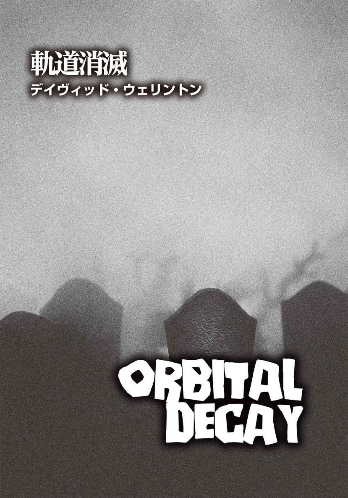
デイヴィッド・ウェリントン
David Wellington
PROFILE
これまで20編の小説を上梓し、8ヶ国語に翻訳されている実力派小説家。『Monster Island』『13 Bullets』『Frostbite』『Positive』といったホラー作品、『Chimera』『The Hydra Protocol』『The Cyclops Initiative』など、アフガニスタン戦争を体験した退役軍人ジム・チャペルが主人公のスリラー作品シリーズが人気。また、デイヴィッド・チャンドラーのペンネームでファンタジー小説を、D・ノーラン・クラークの名で『Forsaken Skies』三部作を含むSF小説を書いている。現在は、ニューヨークを拠点に活動中。
Twitter：@LastTrilobite
［以下は、テキサス州ヒューストンのリンドン・Ｂ・ジョンソン宇宙センターのバックアップドライブで発見された、国際宇宙ステーションの最後の無線交信記録である。その晩、アメリカ人宇宙飛行士三人とロシア人宇宙飛行士ひとりがステーションに滞在していた。記録では、その四人はイニシャルで記されている。
ＪＨ：ジャクソン・ハーツフェルド。通称〝ハーツ〟。司令官。
ＳＦ：セルゲイ・ファヴァロフ。ロシア人ミッション・コーディネーター。
ＫＲ：カール・ガーンジー。科学ミッション・スペシャリスト。
ＭＪ：マルシア・ジャーニガン。フライト・エンジニア。
［当データでは、宇宙管制センターのスタッフは皆、ＭＣＣ（Mission Control Center）として表示される。
その夜の地球上での出来事を考慮すると、以下の出来事の動画データが闇に葬られても決して不思議ではない。しかしながら、この最後の宇宙飛行士の言葉から、何が起きたのかを断片的に知ることが可能だ。神経質な性質の人物、あの晩の出来事に起因するＰＴＳＤ（Post-Traumatic Stress Disorde／心的外傷後ストレス障害）の患者は、これから先を読まないことを勧 める］
ＭＣＣ：ハーツ、どうぞ。緊張してますか？
ＪＨ：少し。
ＭＣＣ：問題ありませんよ。笑顔を忘れないでくださいね。開始まであと五分。ポジションは大丈夫ですか？
ＪＨ：大丈夫。ただ──。
ＭＣＣ：ハーツ、準備できましたね。カウント開始します。三、二、一、スタート！
ＪＨ：こんにちは、ベイカー小学校の皆さん。私の名前は、ジャクソン・ハーツフェルド。実は今、宇宙から話しかけているんです！ 私がいるのは、国際宇宙ステーション、通称ＩＳＳ。見てください。私の身体、浮いているでしょう？ 宇宙には重力がないので、このように空中で浮くことができます。私は地球の周りを回る軌道上にいます。「軌道」が何かわからなかったら、先生に訊 いてくださいね。現在位置は、ちょうどピッツバーグの約四百キロ上空。今夜、暗くなった空に、私のいる宇宙ステーションが見えるかもしれません。かなりの速度で移動する明るい点があったら、そこに私がいると思ってください......。
［ＪＨによるベイカー小学校児童へのプレゼンテーションの一部は、関連性がないとして、この記録から割愛されている。このプレゼンテーションと並行して、ＭＪがソユーズ宇宙船の最終進入を見届けていた。ＩＳＳとドッキングし、新たなクルーメンバー三人を送り込むのが目的だ。これにより司令官が交代し、ＪＨの帰還が可能になる］
ＭＪ：管制センター、ソユーズＴＭＡ－21 Ｍを視認したわ。同船の搭乗メンバーだけど、なんだか──。
ＭＣＣ：マルシア、確認しました。こちらでは、ソユーズとの無線連絡が不能になっています。ボイスメッセージの着信はなく、遠隔測定 システムも作動していないように思えます。そちらでソユーズの速度は確認できますか？
ＭＪ：計画通り、秒速十六キロね。マニュアルドッキングに変える必要は？
ＭＣＣ：その必要はありませんが、ソユーズのクルーとの交信ができないので、問題の解決に努めます。安全性を考慮し、不具合が解消されるまで、ドッキングは中断します。
ＭＪ：ハーツはその案を気に入らないでしょうね。彼のストレスレベルは......。とにかく、彼がこのブリキ缶 から離脱するのが待ちきれないわ。
ＭＣＣ：明日の予定を変更します。彼なら大丈夫でしょう。
ＪＨ：......ステーションは、モジュールでできています。そうですね、レゴブロックを想像してみてください。モジュールと呼ばれる独立した機能を持つユニットが、ブロックのように集まって宇宙ステーションを構成しているのです。〈ズヴェズダ〉〈ザーニャ〉とロシア語の名前が付いているモジュールもあります。ここにいるセルゲイ・ファヴァロフ宇宙飛行士と同じロシア人が作ったものだからだです。セルゲイは、ランニングマシンでトレーニング中ですが、宇宙では継続して運動をしないと、筋肉が弱くなってしまうんです。セルゲイ、皆さんに挨拶をどうぞ。
ＳＦ：ハロー、アメリカン・キッズ！
ＪＨ：ハハハ、セルゲイは面白い奴 でね。ロシア人ですが、君たちや私と同じように英語を話せます。調子に乗って冗談ばかり言うので困ります。
ＳＦ：その通り。僕はときどき冗談が過ぎるので、司令官に怒られてます。
ＪＨ：こら、セルゲイ。いい加減にしなさい！ っていう具合にね。とにかく私たち宇宙飛行士は、一日のほとんどをズヴェズダ・モジュールで過ごし、仕事をしています。でも今は、アメリカ製の実験室モジュール〈デスティニー〉から、このプレゼンテーションをお届けしています。実験室モジュールには、他に〈コロンバス〉と〈クエスト〉があります。次に紹介するのは、ビゲロー膨張式活動モジュール〈ＢＥＡＭ 〉。これは風船のように膨らみ、居住空間を作り出す画期的なものです。それから、観測用モジュール〈キューポラ〉には、横窓六枚と天窓が設置されており、船外の様子を窓から確認することができます。さて、私が持っているこのペンですが、どんなふうに宙に浮くのか見てみましょう。ほら、手を離してもペンは落下しません。宇宙には重力がないからです......。
ＭＪ：ヒューストン、ソユーズの範囲 チェックを行う必要があるわ。
ＭＣＣ：こちらからは問題なさそうに見えますが、そちらはどうです？
ＭＪ：少し近すぎる。ドッキングは中断したんじゃ？
ＭＣＣ：そうです、ＩＳＳ。ドッキングは中断しました。ソユーズは十分な距離を開けたまま、ゆっくりと通過するはずです。
ＭＪ：ヒューストン、範囲チェック中。これは──近すぎる。このままじゃ......。
ＭＣＣ：現在のソユーズとＩＳＳの間隔は、五十メーター。誰か......誰かに不具合を直させます、ただちに。ですが、こちらは問題はないと考えています。ソユーズ到達まで、あと五分。不具合を解決し、必要とあればコースを調整する時間は十分にあります。
ＭＪ：管制センター、じゃあ、私はここで息を潜めてるわね。
ＪＨ：......皆さんが見たいと思っている場所を当ててみましょう。それは、トイレ！ 違いますか？ どの宇宙飛行士も、トイレについて訊かれるんですよ。きれいな話ではないので、具体的な説明はやめておきますが、とにかく宇宙ではあらゆることが地球上とは異なります。本当に──本当に──子供たち、君らに真実を教えよう。宇宙は......宇宙はクソ最悪だ。
ＭＣＣ：ハーツ？ 今なんて──？
ＪＨ：ここに来て三ヶ月。浮遊するペンにも飽き飽きしてるし、クソを垂れるのにいちいちケツから吸引するのにもうんざりだ！
ＭＣＣ：ハーツ、応答してください。
ＪＨ：管制センター、誰もいないじゃないか！
ＭＣＣ：もう一度言ってください。
ＪＨ：ヒューストン、言ってやるとも。私が見ているモニターに映っているのは、空 の教室だ。子供もいなければ、教師もいない。一体全体、どういうことだ？
ＭＣＣ：今、チェックしています。オーケー、オーケー。ああ、ちょっと待ってください。
ＪＨ：全く。君たちの準備はできてるのか？ 私はここで何時間もこのクソみたいなプレゼンのリハーサルをしたんだぞ。それに──。
ＭＣＣ：わかりました。説明させてください。実は、学校の児童、教員とも避難命令が出たんです。現在、彼らは皆、駐車場にいます。そこには警察が──。
ＪＨ：えっ？ 子供たちは大丈夫なのか？ 状況を教えてくれ。
ＭＣＣ：ええ、無事です。おそらくなんでもなかったんでしょう。ただの避難訓練だったのかもしれません。よくあることです。
ＪＨ：避難訓練だと？ イカれた奴が校内で発砲し始めたらどうするかを子供たちに教えるアレか？
ＭＣＣ：私のときは、「身を屈 めて頭を隠せ」ってやつでした。もしや、ステーションに留まりたいですか？ こちらは安全ではないかもしれませんし。
ＪＨ：ハハハ、それはないな。私は今夜帰還する。恋人にキスをして、愛犬を撫 で、飽きるまでビールを飲むつもりだ。じゃあ、これからどうする？ 子供がいないのに、私がプレゼンを続けても意味はないだろう？
ＭＣＣ：ハーツ、そのまま待機してください。
ＪＨ：今なんて？
ＭＣＣ：待機しててください。こちらでちょっと......トラブルというほどではないのですが。
ＭＪ：ソユーズは接近を続けてる。管制センター、ドッキングを中断したはずなのにどういうこと？ ソユーズの軌道からずれるように、ＩＳＳを移動しないといけない？
ＭＣＣ：その必要はありません。問題がわかりました。というよりむしろ──。
ＭＪ：ソユーズはすぐそこよ。肉眼で確認したわ。動きが速すぎる。
ＭＣＣ：無線の不具合ではありませんでした。実際のところ、それがかえって問題なのです。乗組員との交信ができません。
ＭＪ：もう一度説明して。
ＭＣＣ：クルーが応答しないんです。発射時に、減圧事故が起こったのかもしれません。
ＭＪ：なんですって!? つまり、ソユーズの乗組員は死亡してるっていうこと？ 船内には彼らの死体が──。
ＭＣＣ：ＩＳＳ、落ち着いてください。こちらで宇宙ステーションを動かします。いいですか？ ステーションを移動するだけです──。
ＭＪ：ソユーズはそこまで来てるのよ！ もう目の前よ。動きが速すぎる！ 速すぎて──。
［ＩＳＳの通信アンテナの故障により、十七秒間の交信記録が欠けている。さらに三十九秒の記録が不明瞭となっている。この間は、途切れ途切れの音声データしか残っていない］
ＫＲ：管制センター、向こうは軌道に乗った──。
ＭＪ：──きぼう実験室モジュール、コロンバス・モジュール。デスティニー・モジュールで減圧。それと──。
ＫＲ：──あり得ない。太陽電池アレイは全てイカれている。放熱器も何基か停止。どれが停止したのかを確認中。ロボットシステム〈カナダアーム２〉も使えない。複数の穴が空 いている。穿 刺 孔 だ。それも──。
ＪＨ：セルゲイ！ セルゲイ、そこから出ろ。セルゲイ！
ＭＪ：管制センター、応答せよ。管制センター！ お願い、返事をして！
ＪＨ：セルゲイ！ もう無理だ──私はここにいられない──。
ＫＲ：なんだ、これ？ 耳から──クソッ、血が。耳から出血──。
ＭＪ：コロンバス停止。基幹構造Ｐ１トラス、Ｐ２トラス、Ｐ３トラスとピアース・ドッキング室のエアロックが制御不能。
ＫＲ：少し──ダメだ──視界が狭まり、ぼやけている。鼻血も出て......。
ＭＪ：管制センター、聞こえてるなら、なんか言ってよ！ こっちはもう──。
ＪＨ：セルゲイ──本当にすまん。ああ、すまない......。
［ＩＳＳとＭＣＣの間の無線交信は、協定世界時23 時４分になっても、完全に復旧していなかった。交信記録は断続的に判別不能で、その部分はここでは省略しているが、苦痛にうめくＫＲの様子だけだったと思われる］
ＭＪ：......衛星バス４号はイエローを報告。バス５号もイエローを報告。
ＪＨ：......することができたはずなのに......。
ＭＪ：バス６号は......新しいパターンね。何も報告してこない。バス７号は──。
ＭＣＣ：ＩＳＳ、そちらは受信できてますか？ ＩＳＳ、応答願います。
ＭＪ：──レッドだわ。ああ、バス７号はレッドを報告。これは......これは良くない兆候ね。ハーツ、あなたは──。
ＪＨ：マルシア、彼を助けることはできたはずだ。できたんだよ。できたのに。
ＭＣＣ：ＩＳＳ、返事をしてください。受信してますか？
ＭＪ：ヒューストン？ ああ、神様──ヒューストン、あなたなの？ てっきり──かと思った──。
ＭＣＣ：補助アンテナの設置に時間がかかりました。もう──。
ＭＪ：ここまで単独で──だけど、私たちは──。
ＭＣＣ：電力が不足しています。カメラ配信もほとんど失いかけてます。何が起きたか説明してください。
ＭＪ：何が起きたかですって？ 何が起きたのか知りたいの？ 管制センター、そっちは私たちより、もっともマシな考えを思いつくべきよ。こっちはステーション内の半分が停電している状態だわ。
ＭＣＣ：こちらも似たような状況です。あなたとハーツは動画で確認しましたが、カールとセルゲイの姿はどこにも見当たりません。彼らの現状を報告して──。
ＪＨ：セルゲイは死んだ。私が彼を殺した。
ＭＣＣ：ハーツ？ もう一度言ってください。
ＭＪ：彼は大げさなのよ！ ハーツ、ちょっと黙ってて。いい？ 管制センター、こっちはめちゃくちゃよ。ソユーズはステーションに無理やりドッキングしてきた。実験室は破損し、宇宙ゴミ が太陽光パネル全部を破壊した。バッテリーで電力を供給してるけど、長くは持たない。ただちに救助に来てもらわないと。
ＭＣＣ：セルゲイが死んだ？
ＭＪ：そう。そうよ。彼は死んだの。宇宙飛行士セルゲイ・ファヴァロフは死亡しました。死亡時刻は......そんなのどうだっていい。ソユーズが衝突した際、ハーツとセルゲイは実験室モジュール〈デスティニー〉にいた。ハーツは、減圧で死に至る前に、ここ、ズヴェズダに戻ってこられた。セルゲイはそこまでラッキーじゃなかった。彼は──。
ＪＨ：彼はランニングマシンに縛りつけられたままになっている。そこから逃げ出せなかったんだ。私は彼を助けることができたはずだ。マシンから解放してやれたはずなのに。全面的に司令官である私の責任だ。助けられたのに、私は......私は恐れをなしてしまって。手遅れになる前に、自分だけ逃げ出したんだ──。
ＭＪ：ハーツ！ 余計なことしゃべらないで！ 私に解決策を説明させて。そうじゃないと、ここにいる全員が死んでしまう！
ＭＣＣ：カールはどうなったんです？ 彼は生きてるんですか？
ＭＪ：管制センター、生きているといえば、イエスね。ひどい状態だけど。ソユーズの衝突時、カールはＢＥＡＭ居住モジュールにいたの。ＢＥＡＭはすぐにダメージを受けなかったから、自分は大丈夫だろうって思ったのかもしれない。衝突直後、私たちは何を持ち出せばいいか確認していたんだけど、彼は損傷具合をチェックしていた。おそらく、ＢＥＡＭの空気が抜けていることに気づかなかったんでしょうね。あのモジュールは巨大な風船みたいなものだから、穴が空いてしまったんだと思う。彼から減圧症の症状の報告を受け、私たちが彼をＢＥＡＭから引き出したときには、すでに意識がなかったわ。ここに連れてきて、とりあえず寝袋に入れたんだけど、他にどうすればいいか......。カールは出血していて、目も真っ赤になっていた。管制センター、私は航空医官じゃないから、わからないの。どうしたらいいのか......。
ＭＣＣ：現在、ＢＥＡＭモジュールは密閉されていますか？ ズヴェズダの気密状態は正常ですか？
ＭＪ：ええ。
ＭＣＣ：ＩＳＳ、そちらの生命維持状況は？
ＭＪ：いいとは言えないわね。酸素発生器は全て使えなくなったから、ボトル入り酸素に頼ってる。水と食料はおそらく大丈夫。船内温度はやや高めだけど、不快なほどではないわ。二、三日......救助船が到着するまでは持ち堪 えられる。ちゃんと考えて過ごせればね。一番の問題は、電力。ライト以外、生命維持に直接関係のないものは全部スイッチを切ってる。ライトもすぐに消えるでしょうね。バッテリーを使用しているけど、すぐに使用を制限しないといけなくなるわ。だけど、この事態を生き延びるてやる。そうでしょ、ハーツ？
ＪＨ：私は......。
ＭＪ：この事態を生き延びてやるって言ったの。ハーツ、イエスって言って。
ＪＨ：イエス。
ＭＪ：ちゃんとはっきりイエスって言って！ 生きてやる。そう言って！
ＪＨ：イエス、イエス。生きて......やる。
ＭＪ：ったく。管制センター、何か言って。なんでもいいから言ってよ。どうしてこんなことになったの？ なぜソユーズの遠隔測定装置がオフになっていたのか、なんで衝突する前にステーションを移動できなかったのか、ちゃんと説明しなさいよ。「さらなる調査が必要です」なんて言い訳は聞きたくない。「わかりません」なんて言わないで。私は何が起きているのかを知りたいだけなの！
ＭＣＣ：それは......。
ＭＪ：さあ、ちゃんと説明して！
ＭＣＣ：いいですか、これは弁解ではありません。今回起きてしまったことですが、ええ、私たちのせいだと言っていいでしょう。
ＭＪ：ふん。
ＭＣＣ：言い訳ではないですよ。ですが、今日、仕事に来られたスタッフは通常の半分だけなんです。何かが起きていて......ひどい流感か何かの感染が広がっていて......こちらも十分な人員が得られていない状況なんです。まともに働ける人間が──。
ＭＪ：ハーツ、聞いた？ あなたのせいじゃなかったのよ。私をちゃんと見なさいよ、この役立たず！
ＪＨ：痛い！ 叩 くことないじゃないか。マルシア、君は──。
ＭＪ：セルゲイを殺したのはあなたじゃない。管制センターよ。たった今、向こうはそれを認めたの。いい？ 向こうがそう言ったのよ。だから、あなたのせいじゃないの。いい？ わかった？
ＪＨ：......わかった。
ＭＪ：だけどね、今あなたが私に協力しなかったら、私と一緒に作業をしなかったら、今度はあなたが私を殺すことになる。私だけじゃない。カールもね。理解した？
ＪＨ：わかったよ、マルシア。理解した。
ＭＪ：管制センター、電気の節約のために、無線を切るわね。三十分ごとに報告を入れるから、私の通信を必ず誰かが聞けるようにしておいて。
ＭＣＣ：了解しました、ＩＳＳ。
［以下の交信記録は、協定世界時23 時37 分に受信されたものである］
ＭＪ：管制センター？ 私はキューポラ・モジュールにいる。あなたたちを見てる。つまり、地球を見ているの。現在、カリフォルニア上空。地上の森林火災が見えてる。とてもきれいだわ。森林火災は恐ろしいってわかってる。でも、宇宙から見下ろすと、点滅する明かりの集まりなのよ。緑の中に赤い光が瞬 いてるのが、美しいって思っちゃうの。もうあまり時間がないから、今はただ景色を楽しんでるだけ。
ＭＣＣ：声から判断すると、少し元気が出たようですね、マルシア。
ＭＪ：そう？ さっきは泣いたりして、落ち込んでたから......。いつも私って、無理して自分を元気よく見せてしまうの。強くてタフな女性宇宙飛行士なんだもの......。たぶん、ハーツから離れているから、気分がいいのかもしれないわね。彼は作業をしていることはしているんだけど、遅い。のろのろと動いてる。助けにはなってるけど、正直、使えない。彼のそばにいるのは......どうだっていいわ。管制センター、救助について話して。救助船の到着時刻は？
ＭＣＣ：救助に関しては、もろもろ進行中です。搭乗メンバーがわかり次第、お知らせします。
ＭＪ：了解。ああ、すぐに泣けてきちゃう。涙が私の周りで浮かんでる。換気口の方へ漂っていくわ。電気がショートする前に回収するから大丈夫。心配しないで。
ＭＣＣ：私たちはあなたを信頼していますよ、マルシア。
ＭＪ：ありがとう。
ＭＣＣ：聞いてほしいことがあるのですが、ハーツの耳には入れないでもらえますか。
ＭＪ：......話して。
ＭＣＣ：奇妙なデータを見たんです。変則的な例なんでしょうが。いいですか、これに関しては、何も行動も起こさないでください。なんの意味もないですから。
ＭＪ：先を続けて。
ＭＣＣ：デスティニー・モジュールにあるランニングマシンなんですが、動いているんです。
ＭＪ：どういうこと？
ＭＣＣ：セルゲイが使っていたマシンです。今も作動中というデータが届いています。まるで彼がそのマシンを使っているかのようなデータが届いているんですよ。それって、もちろん、あり得ませんよね。
ＭＪ：あり得ないわね。
ＭＣＣ：だからといって、何か意味があるわけでもないのですが、一応お知らせしておきます。マシンが稼働しているということは、バッテリーを消耗していることになりますので。
ＭＪ：わかったわ、管制センター。
［協定世界時23 時46 分］
ＪＨ：......しなければ。もし彼が──。
ＭＪ：管制センター、ハーツが──。
ＪＨ：セルゲイが生きているなら、まだそこには空気があるということだ──。
ＭＪ：ヒューストン、受信してる？
ＭＣＣ：マルシア、聞こえてますよ。報告ですか？ どうぞ。
ＭＪ：ハーツにロシア製の古いオーラン宇宙服を着せているの。彼に手を貸しているのは、彼がまだ司令官で、私に命令したからよ。あなたに交信したのは、私が司令官の決定に反対しているという事実を記録に残すためなの。
ＪＨ：彼をあそこに残しておくことはできない！ 今にも死んでしまう。
ＭＣＣ：確認させてください。ハーツが宇宙服を着ようとしているんですよね。その理由は？ 彼はまさか──。
ＭＪ：彼はデスティニー・モジュールに行こうとしてるの。セルゲイが生きているかどうかを確かめるために。
ＪＨ：マルシア、こいつを手伝ってくれ。手袋をはめたいんだ──よし。次はヘルメットだ。
ＭＪ：イエス、サー。
ＭＣＣ：ハーツ、その行為は時間と電力の無駄です。それに、エアロックを開ければ、かなりの空気を失うことになります。今回、こちらではＥＶＡ の助言を行えません。
ＪＨ：了解した。マルシア、ハッチを開けてくれ。
［以下の交信記録は、ＪＨの宇宙服の無線から直接受信したものである。電波は非常に弱く、地球上のＭＣＣが受け取れる通信の限界ギリギリであった。その結果、会話は断続的に判読不能になっている。これらの部分はアスタリスク四つ（＊＊＊＊）で記されている］
ＪＨ：オーケー。デスティニー・モジュールに移動中......うわっ、このモジュールは、ひどい状態だ。物があちこちに散乱し、配線が飛び出している。なんてこった。微小重力状態での成長を観察するために育てていたハムスターが＊＊＊＊。まるで＊＊＊＊浮かんでいる毛皮の塊 だ。何が起きたか、考えるのはあとにしよう。
ＪＨ：暗い──部屋中にガラクタが浮かんでいて、私の宇宙服のライトはもう＊＊＊＊しない、だが──ああ、セルゲイが見える。彼は──クソッ！ 彼は＊＊＊＊じゃないか！ 動いている！ ランニングマシンの上で歩いているじゃないか！
ＪＨ：違うんだ、マルシア。そうじゃない！ どういうわけか、彼は生きている。理由はわからない。でも、見たんだよ。壁に空いた穴から広い空間が見えて＊＊＊＊ ＊＊＊＊ ＊＊＊＊ああ、それが、ここに空気がないのに＊＊＊＊を意味していることくらいわかってる。いや、違う。マルシア......ムカつく。とっとと消え失 せろ！
ＪＨ：セルゲイ──おい、＊＊＊＊ ＊＊＊＊ ＊＊＊＊私の声が聞こえるか？ いいや、もちろん違うとも。マルシア、彼の目は開いている。こっちを見ている......何かを求めている＊＊＊＊ ＊＊＊＊ ＊＊＊＊。
ＪＨ：セルゲイ、君は＊＊＊＊ ＊＊＊＊ ＊＊＊＊ ＊＊＊＊なのか？
ＪＨ：今から......彼をこの＊＊＊＊に拘束しているストラップを外そうと思う。いくぞ。オーケー、セルゲイ。私にチャンスを＊＊＊＊。ちょっと＊＊＊＊、おい！ ＊＊＊＊、離せ！ ＊＊＊＊ ＊＊＊＊ ＊＊＊＊なんてこった！ ああっ！ マルシア！
ＪＨ：＊＊＊＊ ＊＊＊＊ ＊＊＊＊ ＊＊＊＊ ＊＊＊＊ ＊＊＊＊ ＊＊＊＊！
ＪＨ：＊＊＊＊私の袖に嚙 みつき＊＊＊＊ ＊＊＊＊ ＊＊＊＊歯が＊＊＊＊クソッ！ クソッ！ 穴が空いた！ 空気が＊＊＊＊マルシア、穴から空気が漏れている。奴は六層構造の宇宙服を嚙み切り＊＊＊＊ ＊＊＊＊ああ、神よ！ なんてことだ！
ＪＨ：マルシア！ ＊＊＊＊を開けてくれ！
［協定世界時 ０時７分］
ＭＪ：管制センター？ 管制センター、そこにいる？ これは何？ どこに──。
ＭＣＣ：すみません！ すみません、ちょっとトイレに......。あまり気分がすぐれなくて。ＩＳＳ、どうぞ......。
ＭＪ：管制センター、大丈夫なの？
ＭＣＣ：まずは、そちらの......デスティニーの状況を教えてください。セルゲイについて。
ＭＪ：彼、ハーツに襲いかかったのよ。嚙みつこうとしたみたい。
ＭＣＣ：それは──。
ＭＪ：セルゲイは......なんていうか、あんなふうに生きてるなんて......彼はハーツを襲って、宇宙服の袖を嚙み切ろうとしたの、彼自身の歯で。
ＭＣＣ：彼は今どこに？
ＭＪ：ハーツのこと？ 彼はここにいるわ。宇宙服を脱ごうとしてる。かなり動揺していたけど──。
ＭＣＣ：あ、セルゲイのことを訊いたんです。セルゲイは今、どこにいるんですか？
ＭＪ：......彼は......その......。
ＭＣＣ：彼はどこにいるんですか？ 具体的に教えてください。
ＭＪ：彼は......まだデスティニーにいる。ハーツは急いでハッチを抜けて戻ってきた。ずいぶんと怯 えていたわ。こちらに入るなり、乱暴にハッチを蹴って閉めたの。セルゲイが来る前にね。セルゲイは......あの......なんていうか......。
ＭＣＣ：マルシア、ちゃんと説明してください。非常に重要なことなので、こちらで正確に把握しておかなければなりません。セルゲイはハーツの皮膚を嚙み切りましたか？ 直接、腕を嚙んだのですか？ それとも宇宙服の袖だけで済みましたか？
ＭＪ：そこまではわからない。ちょっと待って──。
ＭＣＣ：マルシア、教えてください。それによって対処が変わってきますので。
ＭＪ：待って......ハーツ、じっと座っててくれる？ 管制センター、彼は無傷よ。管制センター？
ＪＨ：私は大丈夫だ。なんともない。
ＭＪ：管制センター？ ねえ、聞こえてる？
ＭＣＣ：──すみません。あなたの担当者は、またトイレに立ちました。現在、こちらではおなかを壊す人が続出してましてね。一時的に私がここを引き受けます。そちらの状況は、今のところ問題なさそうですね。セルゲイは隔離されたし。彼の体液に直接接触しなかったんですよね。
ＪＨ：問題なさそうだと？ これが問題ないっていうのか？ おい、どういう──。
ＭＪ：管制センター、ねえ、一体どうなってるの？ 何が......そっちで何が起きてるの？
ＭＣＣ：心配する必要はありませんよ。
ＭＪ：私が無線のスイッチを入れた瞬間......突然、船舶からの救難連絡、警察署や陸軍基地からの「メーデー、メーデー」と叫ぶ声やＳＯＳのシグナルが聞こえてきたの。これって──。
ＭＣＣ：心配はご無用です。あなたはそこで生き延びることだけを考えてください。いいですか？ こちらではあなた方を無事に帰還させることに専念しますので。わかりましたか？
ＭＪ：......わかったわ。
［協定世界時 ０時37 分］
ＭＪ：管制センター？ 応答して。管制センター？
ＭＣＣ：はい、聞こえてますよ。
ＭＪ：今回は、救難連絡はそんなに聞こえてこなかったわ。もしかして、そちらの状況が好転してるのかしら。
ＭＣＣ：おそらく......。聞いてください。ロシアと話し合っている最中でして、米露共同で救助ミッションを行うことになるでしょう。準備は着々と進んでいますので、どうかもう少し待ってください。
ＭＪ：カールは持たないと思う。彼の呼吸は......本当に苦しそうで、脈も弱ってきてる。
ＭＣＣ：了解しました。
ＭＪ：了解しましたって言われても──。ただ、私が思うに──。
ＭＣＣ：現実を見据えなければなりません。
ＭＪ：そうね。私もそう言いたかっただけなのかもしれない。
ＭＣＣ：マルシア、こちらから、新たな指示を出さなければなりません。たぶん、あなたが納得するようなものではない可能性が大きいのですが、とても重要なことです。もしカールが死んだら、あなたは......ある行動を取る必要があります。
ＪＨ：カールは死なせない。私はＣＰＲ を知っている。
ＭＣＣ：ダメです、ハーツ。彼に触ってはいけません。少なくとも今は、まだ行動を起こさないで──特に彼がまだ生きているうちは。
ＪＨ：私はもう誰も死なせない。私の目の前では。誰もセルゲイの後を追わせない。
ＭＣＣ：マルシア、キューポラ・モジュールに移動できますか？
ＭＪ：......ええ。私、ひとりで？ そうしてほしいのね？ ハーツに会話を聞かれない場所に行けばいいのね？
ＭＣＣ：そうです、マルシア。私の言うことをよく聞いてください。カールが息を引き取った瞬間、カールが死んだとあなたが思ったら即座に、彼の頭部を叩き割らなければいけません。
ＭＪ：......ちょっと待って。意味がわからない──もう一度説明してくれる？
ＭＣＣ：これは極めて重要なことです。カールが死んだとあなたが判断した直後に、彼の頭を損壊させてください。
ＭＪ：管制センター、そんなこと......私にできるかどうか......。
ＭＣＣ：他に選択肢はありません。これはあなたの長官からの直 々 の命令です。
ＭＪ：管制センター、自分で何言ってるのかわかってるの？ 狂気の沙 汰 だわ。ねえ、本気で言ってるわけ？ 私にカールの頭を──。
［今回の交信記録では、ＭＪと管制センターの会話が繰り返される大きな金属音によって妨げられている。その後の五分間、記録は途絶え、騒音は交信中継続している］
ＭＪ：管制センター、あれは──。
ＪＨ：あれはセルゲイだ！ 彼はハッチを叩き続けている。あれだけ叩いているってことは、こっちに入ってきたいんだと思う。
ＭＪ：管制センター、おかしいと思われるかもしれないけど、ハーツの言っていることは間違ってない。彼は──。
ＭＣＣ：マルシア、その件に対処する指示を出します。
ＪＨ：セルゲイを中に入れるぞ。彼を押さえつけよう。さあ──。
ＭＪ：それはやめて！
ＪＨ：──大丈夫だ。準備はいいか。彼を押さえつけて、動きを封じるんだ。
ＭＪ：ハッチから離れて！ ハーツ、何考えてるの？ やめて！
ＪＨ：管制センター、これからハッチを開ける。もしセルゲイが生存しているなら、ハッチの向こう側で生存可能な条件が揃 っているという証拠だ。何も問題はない。
ＭＪ：管制センター、私はハーツを止めようとしてるけど、彼は──ああっ！
ＭＣＣ：マルシア、応答してください！ マルシア!?
ＭＪ：あの野郎、私の顔を殴ったの。今、ハーツはハッチを──。
［轟 音 が聞こえたが、ズヴェズダ・モジュールから大量の空気が放出した音だと推測される。悲鳴も聞こえたものの、誰の声かは不明。六分間、聞き取れるのは、ＭＣＣ側からの交信のみ］
ＭＣＣ：マルシア！ マルシア！ 聞いてますか？ 何をすべきかわかってますね？
ＭＣＣ：マルシア？ 聞こえてますか？ ハッチを閉めてください。セルゲイをハッチの外側に留めてください。絶対に中に入れてはいけません。
ＭＣＣ：マルシア、必要な行動を取ってください。
ＭＣＣ：マルシア、こちらの声を聞いてますか？
ＭＣＣ：マルシア？
［協定世界時 ０時48 分、通常の双方向交信が再開］
ＭＪ：聞こえてるわ、管制センター。ちゃんと聞いてる。彼は......。
ＭＣＣ：あなたはやるべきことをやった。何が起きているか、わかったのでは？
ＭＪ：いいえ。私には何がなんだかさっぱり......。
ＭＣＣ：マルシア、あなたは賢い。もう現状が理解できるはずです。こちらがいくら説明しても、あなたは信じなかったと思います。言葉で聞くと、非常にバカげた話に聞こえますからね。だけど、セルゲイの顔、見ましたよね？ どんな顔になっていたか、その目で。私もこちらで確認しましたから、あなたも見たはずです。
ＭＪ：見たわ。でも......あなた......私がさっきまで話していた管制担当者じゃないわね？
ＭＣＣ：違います。皆、持ち場を離れました。私が唯一残っている人間です。それに、私もすぐに離れなければなりません。それだけお伝えしようと──。
ＭＪ：えっ？ ちょっとそれは......。
ＭＣＣ：何が起きたのか話してください。正直に。
ＭＪ：彼は......あ、ハーツのことね。彼はハッチを開けてしまったの。ハッチの向こう側には空気がなかった。だから......こちら側の空気も抜けてしまい、私は呼吸ができなくなった。考えることもできなくなったわ。ハーツはハッチの内側にいて、セルゲイ......セルゲイが彼に摑 みかかり、嚙みちぎったの。ハーツの喉を。おびただしい出血が認められたけど、全てハッチの向こう側に吸い取られていった。で、セルゲイはハーツもハッチの向こう側に引きずり込んで......。
ＭＣＣ：いいえ、そうじゃありません。セルゲイはハーツに嚙みつきましたが、彼をハッチの外に引きずり込んではいません。
ＭＪ：でも......彼は......。
ＭＣＣ：今さら噓をついても意味はありませんよ、マルシア。お互い、でまかせを言うのはやめましょう。私はモニターでそちらの様子を見てましたから。
ＭＪ：わかったわ。
ＭＣＣ：あなたが何をしたか教えてください。
ＭＪ：私......私が......ハーツを押したの。ハーツをデスティニー側に押し出し、ハッチを閉めたのは、私よ。完全に密閉した。
ＭＣＣ：あなたは正しいことをしたまでです。
［協定世界時午前０時53 分］
ＭＪ：だから、今は二人ともハッチの外側にいる。二人とも......。
［金属を叩く音が繰り返し響いている］
［協定世界時 １時39 分］
ＭＪ：状況は......ひどいの？ そっちの状況もかなり......？
ＭＣＣ：はい。
ＭＪ：救助船は......来ないのね？
ＭＣＣ：その通りです。
ＭＪ：私には......すべきことがあるわよね？ カールのことを確認しないと。
ＭＣＣ：はい。彼の状態を確かめてください。
ＭＪ：彼は......彼は呼吸をしていない。脈もないわ。あっ！ なんてこと！
ＭＣＣ：マルシア？
ＭＪ：これは、一体どういうこと？ 彼の目が、目が開いて......でも......でも......。
ＭＣＣ：然 るべき行動を取ってください。
ＭＪ：つまり、その、彼は寝袋の中に入ったままなんだけど......出ようとしてるわ。彼をなんとかしなくちゃ。──消火器がここに──。
ＭＣＣ：マルシア、やりなさい。
ＭＪ：ああっ、どうしよう！ 神様！ 私ったらなんてことを......管制センター、聞いてる？ 管制センター？
ＭＣＣ：聞いてます。続けて。
ＭＪ：血だらけよ。あちこちに脳 味 噌 も飛び散って。どこもかしこも血 飛沫 とバラバラになった脳味噌だらけ。それらが浮かんで換気口に向かっていく。ひどい。吐きそうだわ。換気口のフィルターにカールの脳の一部がくっつくのが見えて──。彼は──彼は──。
ＭＣＣ：落ち着いて。深呼吸して。
ＭＪ：デスティニー側に彼らがまだいるの！ 二人してハッチを叩き続けてる。彼らは──。
［原因は不明だが、交信記録は協定世界時２時19 分まで途絶えている。以下の記録で最初に聞こえてきたのは、ＭＪがすすり泣く声だと判明された］
ＭＪ：管制センター？ ＊＊＊＊ 管制センター？
ＭＣＣ：まだ......こちらにいます。
ＭＪ：＊＊＊＊ ＊＊＊＊ ＊＊＊＊ ＊＊＊＊ ＊＊＊＊。
ＭＣＣ：マルシア、ちょっと！
ＭＪ：あなた、まるで＊＊＊＊ ＊＊＊＊ ＊＊＊＊。あなたは......そうでしょ？ ああ、ひどい。なんで＊＊＊＊ ＊＊＊＊ ＊＊＊＊。
ＭＣＣ：ええ、私は襲撃を受けました。マルシア、私は......もうじき死にます。そして、その後......。
ＭＪ：ダメ、そんなこと言わないで！ 私たちは二人でこの現実に向き合ってるの。二人一緒だから向き合うことができてる。お願いだから......そんなこと言わないで。
ＭＣＣ：わかりました。
ＭＪ：いや！ こんなのいや！ ＊＊＊＊ ＊＊＊＊ ＊＊＊＊。静かにして！ もういい加減にして！ あの二人、まだハッチを叩いてる。拳 で何度も何度も＊＊＊＊ ＊＊＊＊ ＊＊＊＊。
ＭＣＣ：ハッチが密閉されて、そこにいる限り、あなたは安全です。彼らは入ってこられません。
ＭＪ：誰か、奴らを止めて！ あのクソ野郎を止めて！ 止めてよ!!
ＭＣＣ：私は可能な限りあなたと話し続けますから。
ＭＪ：カールと......ハーツ......私が二人を殺した。
ＭＣＣ：あなたの行動は正しかった。宇宙飛行士の訓練中に、習いませんでした？ 生き延びるために、どんな行動でも取れ、と。教官はそう教えたはずです。
ＭＪ：ええ......そう習ったわ。でも、救助は来ないのよね？
ＭＣＣ：残念ですが、そちらの救助には、誰も向かいません。
ＭＪ：電力をセーブしないといけない。でも......その時が来たら、そろそろだなと思ったら、教えて。
ＭＣＣ：本当に知りたいんですか、その時が来たのを？
ＭＪ：管制センター、今の私にはあなたしか残されていないの。
［協定世界時 ３時58 分］
ＭＪ：管制センター？
ＭＪ：応答して、管制センター。お願い！
ＭＪ：返事してよ！ 聞こえてる？
ＭＪ：お願いだから！
［協定世界時 ４時21 分］
ＭＪ：ひどいわ。約束したのに......。
ＭＪ：彼らは......まだハッチを叩き続けてる。諦める気なんてなさそうね。もしも誰かがこれを聞いてるなら......ああ......。ステーション内の科学実験はまだ続いてるのよね。本来は、宇宙空間のハムスターを観察する実験だったけど。
ＭＪ：だから......私は実験を続けるわ......連中がなんであろうと、ハムスターの代わりに。
ＭＪ：被験者は、深刻な頭 蓋 外傷を負っても活動的な反応を見せている。
ＭＪ：被験者は、代謝過程を維持するのに酸素を必要としない。
ＭＪ：被験者は......ああ、もうどうだっていいわ！
ＭＪ：静かにして！ もう我慢できない！ 黙れ！ 黙れ！ 黙れ！
［協定世界時 ６時46 分］
ＭＪ：バッテリーはほとんど残ってない。たぶん、これが最後の......私からの......。
ＭＪ：ああ、神様。ここの空気が......なんだか黒い斑 点 がいくつも見えて......少し、頭がクラクラする。
ＭＪ：お願い......静かにして。もう......やめて......。
ＭＪ：管制センター？ 本当にそこにいないの？ 実は黙って聞いてるんじゃ？ ふと......そんなふうに思っただけ。あなたがまだ私の声を聞いてるんじゃないかって......。
ＭＪ：私を食べたらさぞかしおいしいだろうなって思ったりしてない？
ＭＪ：それとも......もっと別のことを考えてる？ もっと......人間らしいことを？
ＭＪ：あのね......あなたにお礼を言いたかっただけ。ずっと......私と一緒にいてくれて......。
ＭＪ：管制センター？ あれは何？ なんの音なの!?
［協定世界時 ６時48 分］
ＭＪ：音を立てているのは、セルゲイとハーツだけじゃなかった。ソユーズのクルーたちもだった。そう、無理やりドッキングしてきたソユーズの宇宙飛行士たち。ようやくわかったわ。ここでのこの状況は......彼らから始まったのね。ソユーズが交信不能になったのも、無謀なドッキングだったのも、全ては彼らが......。
ＭＪ：うちひとりは......彼のヘルメットのフェイスプレートにはヒビが入ってるけど、顔が見える。私をじっと見てるわ。キューポラ・モジュールの窓越しに、こっちを見つめてる。ああ、あの目ったら......。
ＭＪ：全員、ガラス窓を叩いてるわ。拳で......何度も......繰り返し......叩いてる。
ＭＪ：......静かに......なってきた......。何も......見えない。何も......聞こえない。何も......。
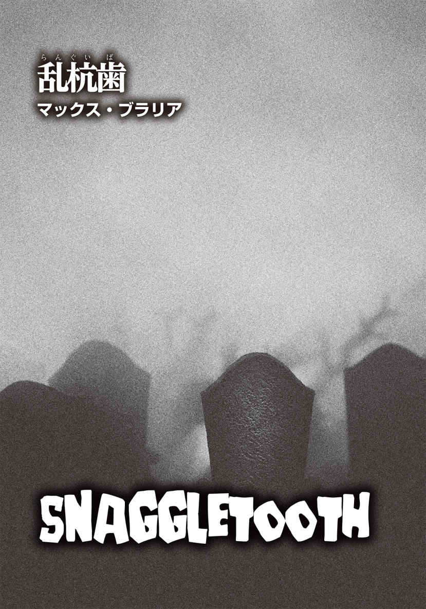
マックス・ブラリア
Max Brallier
PROFILE
『Can YOU Survive the Zombie Apocalypse ?』や、その続編『Highway to Hell』をはじめ、30編以上の小説を手がけてきたニューヨーク・タイムズベストセラー作家。また、『The Last Kids on Earth』『Galactic Hot Dogs』『Lego Nexo Knights：Knights Academy』といった児童書も手がけている。『Eerie Elementary』シリーズでは、ジャック・シャベールのペンネームを使用。ニューヨークの自宅にいないときは、西ペンシルベニアのお気に入りのバーで、ハンターのトロフィーに囲まれていることが多い。
Twitter：@MaxBrallier
ボー・リンの歯並びはひどかった。特に飛び出した八重歯──乱 杭 歯 は黒ずんで腐っており、それを見るたび、不快でたまらなく、無性にイライラした。俺が奴 の喉仏を撃ち抜いたのは、それも理由のひとつなのかもしれない。
そんなボーだが、実は町の歯医者だった。俺が知る奴は、口を開くたびに虫食いだらけの前歯と汚い犬 歯 を見せていた。歯医者なのに。信じられるか？
しかし、きっかけは歯ではない。
全ての発 端 は、俺とデブラ・リンだった。汗ばむ七月のその日、俺たちはデブラの家の裏手にあるポーチにいた。腐った歯の持ち主、ボーは彼女の旦那で、二日間の日程でピッツバーグに出張中だった。つまり、俺とデボラは、夜中にこそこそと密会しなくてもいいということだ。俺の年季の入ったシボレー・インパラの狭い車内で、身体のあちこちをどこかにぶつけながら手早く事を済ませる必要もなかったし、ＡＢＣモーテルを使う費用も節約できる。
裏庭のポーチに腰掛け、快適な気分で、一番のお愉 しみを始める前にゆったりと過ごすことができるわけだ。
そのバックポーチで。
いいかい、その建物裏手のポーチは、狩りをする際の隠れ場所 みたいなものだ。家から森までの約二百メートルは、やや背の高い草が生えた原っぱになっており、森の奥は、アレゲーニー国立森林公園に続いている。
もしこのバックポーチが自分のものだったら、俺は手すりに猟銃サベージ99 を置いておくだろう。ラジオから流れるアメフトの試合の解説を聴きながら、白 尾 シカの気配を感じるや否や、狙い撃ちにする。人間を誤射しないようにといちいちチェックする心配もないし、狩猟制限もない。この家は、人里の喧 騒 から遠く離れた場所に建っていた。
あの腐った乱杭歯が俺を殺人に駆り立てたのは確かだ。しかし、このポーチが自分のものだったらという思いも、ひと役買っていたのかもしれない。ポーチを自由に使う想像を膨らませていたとき、デボラがガーデンテーブルの上に身を乗り出し、こう切り出したのだ。
「ジャック、あれは絶対失敗しない計画だわ」
彼女の目には、これまで見たこともない妖しい輝きが宿っている。
俺はビールをひと口飲み、首を横に振った。
「計画を〝絶対に失敗しない〟と言う奴に限って絶対に失敗するもんだ」
デボラは不満げな顔をし、上体を起こした。花柄のクッションに載せた腕は、どことなく枯れ木の枝のようだ。
俺はさらに続けた。
「映画の影響かどうかはわからんが、映画では、保険金目当てで旦那を殺す女の計画がうまくいった試しがない」
「でも、それとこれは別よ」と、デボラが言い返した。「私は先月、この計画に着手したけど、あんたは半年の間、行動は起こさないわけでしょ。確かに、保険をかけた二日後に旦那が死んだら、怪しまれるだろうけど」
俺はビールを飲み干し、新たな瓶を開けた。こちらが少しは興味を持っていると、彼女に思わせるのには十分だろう。
「十二月の狩りの最中に、あんたが決行すればいいのよ。ちょうど白尾シカ猟の解禁シーズンだし」
「彼が俺とハンティングに行きたがる理由があるか？」
「あんたは戦争に行ったけど、あいつは行かなかった。それに負い目を感じてるところがある。町の男の半分は出兵したのに、旦那はずっとここに留まっていたからね。だから、あんたの誘いは断れないのよ」
俺はビールを飲み、思いをめぐらせ、舌で前歯に触れた。尖 った犬歯の形が舌先でわかる。だが、俺の歯は腐っていない。
デボラはテーブルの上の曇ったグラスを爪で突いた。
「ボーってね、クルクルと弧を描く、なんとも可愛らしいサインを書くの。だけど、私は時間をかけて練習したから、今じゃソックリに署名ができる。書類はすでに保険会社の担当者の手元よ。保険金の額は、二十五万ドル。ジャック、二十五万ドルよ！」
「で、それを俺と折半するんだな？」
「あんたが望むならね」
「他に理由があるのか？」
「だって、その後は私たち、一緒になるわけだし、結局は全部私たちのお金ってことになるでしょ？ そうよね？」
「ああ、そうかもな」
彼女はサンダルを脱ぎ、裸足のつま先で俺の足に触ってきた。艶 かしい動きで、彼女の足の指が太ももから上へと上がっていく。普通の男ならまともな思考ができなくなって当然だ。
「おまえの言う通りだ」
俺は彼女の動きを中断させ、用を足すと告げて立ち上がった。
ボー・リンの自宅内に入り、居間を通り抜ける。棚の上には、いくつもの写真立てが並べてあった。結婚式の写真もあったが、ひと際目を引いたのは、歯科医の何かで表彰されているボーが写っているものだ。彼は、大きな歯のブロンズ像を手にしている。いや、ブロンズ製ではなく、ブロンズのように塗装したプラスチック製だろう。
写真の中のボーは、大きな笑みを浮かべてこちらを見ていた。
俺が戦地に赴いたのは、十九歳のときだ。船出の前の晩、酒場〈ブルズ・タヴァーン〉で飲んだのだが、そのときボーもいた。彼は俺と握手を交わし、幸運を祈ってくれた。微笑 んだ彼の口元からは、いつのように腐った乱杭歯が覗 いていた。
戦から戻った俺の帰郷を祝う飲み会の雰囲気は、出兵前とは大きく異なっていたが、奴の乱杭歯は相変わらずだった。
無神経にもほどがある。
あり得ない。
俺は戦場に行き、戦い、仲間が爆弾で吹っ飛ぶのを成す術 もなく見ていた。なのに、こいつは！ このクソみたいな町の歯医者は、見るもおぞましい黒い歯を放置したままでいやがった。
バックポーチに戻り、俺はデボラに考えておくと伝えた。
彼女は「それでいい」という感じで首をすぼめただけだった。
さらに俺は、やると決めたら、至近距離で一気にやってやると付け加えた。自分が年を取ったとは思いたくないが、最近は世も末だと思える光景が目につく。女みたいな髪型の男。男がやるべき仕事をやっている女。タトゥー。エンドゾーンで踊るスポーツ選手。みんなクソ食らえだ。だから、俺がやるとなったら、女々しいやり方は選ばない。男の中の男らしく、顔を突き合わせて決行するのみだ。
そんな熱い決意とは対照的に、再びデボラは素っ気なく首をすぼめただけだった。
それで話は決まった。
その夜に。
裏手のポーチでの短い会話で──俺は小便でちょっと場を外したが。それから俺たちは寝室に入り、普段ボーが寝ているシーツの上で激しく絡み合った。しかし、どうしてもあの汚らしい乱杭歯が頭に浮かび、俺の息子はあまり役に立たなかった。結局、ボーの腐った歯に邪魔されっ放しだった。そこで、俺はあることを決意したのだった。
＊ ＊ ＊
夏も秋も、高飛び込み台の梯子 を上るような日々だった。
毎日、一段ずつ、飛び込み台が近づく。高く上れば上るほど、後戻りしづらくなっていった。あそこまで言い切ったのだから前言撤回は恥なのは当然だし、どこか、梯子を上っていく自分の背後に誰かが続いている気分になっていた。つまり、自分が梯子を降りるとなるとその人物まで降りなければならず、面倒臭 さと迷惑をかけるバツの悪さが伴う。結構な高さまで上ってしまった今なら、なおさらだ。しかも、梯子の下では、大勢がこちらを注視しているという感覚だった。つまり、こういうことだ。一度上り始めたら、どんな気持ちになろうとも、最後まで上り切らなければならない。
そして、ついに飛び込み台に立ち、はるか下のプールに向かってジャンプする。それが決行の瞬間だ。目指す先にはボーがいる。歯医者のくせに、自分の腐った乱杭歯を平気で他人に見せる男。シカ狩りに最適な素晴らしい裏庭のポーチを宝の持ち腐れにしている男。ああ、気に食わない。
俺が思うに、一度何かアイデアを思いつくと、それをやめることも考え直すこともできないタイプの人間がいる。そいつらをやめさせる唯一の手段は、新たにより優れたアイデアを提供するか、ぐうの音も出ないほどの反 駁 で納得させるしかない。
ボーにとっては不幸なことに、夏が過ぎても、秋になっても、より良い新たなアイデアは俺の頭に浮かばず、やらない方がいいと自分が納得できる否定要素も見つからなかった。
十二月九日、シカ猟が解禁されて四日目。俺たちは狩りに出た。コーヒーにウィスキーを垂らしたくらいでは単なる気休めにしかならない、凍 てつく朝だった。車を出したのはボーの方だった。ピカピカに磨かれた赤いシェビーのピックアップトラックだ。朝日がまだ昇らない午前五時半、俺たちは車を停め、森の中へと入っていった。
持ってきた懐中電灯のスイッチをボーが点 けるなり、俺はライト部分に手をかざした。
「暗い方がいい。どうせほどなく日の出だ。あと少しだけ、暗闇と静寂の時間を楽しもうじゃないか。いいだろう？」
「でも、自分がどこを歩いてるか見えないよ」
「道なら俺が知ってる」
俺たちは、トウヒや白 松 といった針葉樹が生い茂るデリー・リッジの森の中を一時間以上歩いた。最初は、木材を切り出すための古い伐採道をたどり、しばらくして横道にそれた。横道は曲がりくねっており、注意していないとすぐに迷ってしまいそうだった。
ボーは鮮やかなオレンジ色のベストを着ており、全てのハンティング用品が真新しかった。開店したての〈エース・ハードウェア〉で買ったばかりなのだろう。店員に勧 められるがまま揃 えたのか、ありとあらゆる小道具をぶら下げており、歩くたびに音を鳴らした。
獲物を待つための隠れ場所 に到着し、ボーは開口一番、「椅子を持ってくればよかった」と抜かした。隠れ場所は、極めてシンプルだ。節くれだった大振りのトウヒの枝をひっくり返せば、あっという間に自然のライフルレストができ上がる。切り株に腰掛けると、十五メートル先の小川と、その奥の広い空間が枝葉の間から見ることができる。これはこれで問題ないが、ボーの家のバックポーチとは比べものにならない。しかし、もうすぐあの快適なポーチからシカを狙い撃てるのだと思い、おのずと笑みがこぼれた。
まだ太陽が完全に昇り切らないうちに、俺たちは最初のビールを開けた。それでも朝日は、木々の隙間から木 漏 れ日となって降り注ぎ始めている。黄色がかった光の帯が、スポットライトのごとく周囲を照らしていた。
ボーは「今日も良き一日でありますように！」と、手中のビール瓶を俺のに当て、音を鳴らして乾杯したがった。だから、それに乗ってやった。言いたいことはたくさんあったものの、全て吞 み込んだ。ビールを飲むときに、瓶やグラスをぶつけて音を立てるなんて、俺は大嫌いだった。
カチャ、カチャ、カチャ。
乾杯して瓶を鳴らすたび、「楽しい時間はまだまだ十分にあるんだ」と己 に言い聞かせ、幸せな気分に浸れるとでも言うのか。そうとしか思えないほど、ボーは何度も同じことを繰り返した。
だが、俺はボーの血流にできるだけアルコール成分を注ぎ込みたかった。この男には、酒に酔ってだらしなく弛 緩 してほしい。だから、ボーが瓶を差し出すたび、俺の瓶を当てて音を鳴らしてやった。俺がそうしてやれば、彼は調子に乗ってビールを呷 り、すぐに飲み終えてしまう。そして新しいビールに手を伸ばすのだ。思惑通り、酒が回ってきた彼の動きは、次第に緩慢になってきた。
「安全装置を外せよ」
俺は彼のライフルを軽く叩 いた。「撃つ準備ができてから安全装置を外しましょう、だと？ そんなの女子供がやることだ。戦地では、真っ先に安全装置を外すんだ」
もちろん、そんなの噓に決まってる。俺は実戦で銃の扱いを学んだ人間だ。しかし、ボーはそれを真 に受けると知っていた。
案の定、ボーは安全装置に手を伸ばした。金属音がし、装置が外れたのがわかった。
彼は酒を飲み続け、アメフトチームのピッツバーグ・スティーラーズの話をした。歯科医療についてもあれこれ語り、もし五歳以上の大物を仕留めたら、一生歯科検診を無料にしてやると大口を叩いた。
それから静寂が流れた。彼が何かを言いたがっているのが感じ取れたし、俺自身、会話の後に気まずく黙り込むパターンが嫌いだったので、こちらから口火を切った。
「何か言いたいことでもあるのか？」
「ああ......聞いた話なんだが、戦地では、殺した相手の耳を、戦利品として切り落とした米兵もいたとか──。単なる噂 だよな？」
ぶしつけな質問が俺の気分を害するかもしれないと思ったのか、ボーは弱々しく笑った。「君は見たことがあるのかい、人間の耳を削ぎ落としたって奴を？ 勲章代わりに首にぶら下げてるとか？」
「いや、見たことはない」俺は首を横に振った。
「そうか。それは良かった。軍服を着て、切り取った耳をネックレスみたいに下げてる米兵なんて、あり得ないよな」
ボーはそう言って、またビール瓶を突き出してきたので、彼はにこやかに応じてやった。
おまえはそうやって、人の言うことをすぐに信じるのか？ おめでたい奴だな。
とにかく、米兵が耳を削ぎ落とさなかったことに乾杯だ。
ビール瓶が軽やかな音を立てると、彼は笑顔になり、腐った乱杭歯が露 わになった。
ダメだ。もう我慢の限界だ。
手にしていたビールを飲み干しながら、俺は己を奮い立たせた。戦場から引き上げて以来ずっと感じていなかった興奮が、身体の奥から湧 き上がってくる。手が震え、歯が鳴り、期待で胸が躍った。もうすぐ何が起こるか、知っているからだろう。
俺は立ち上がり、「ビールは飲んでも、あっという間に身体の外に出たがる」と背伸びをした。すでにここに来て、かれこれ二時間近く経 とうとしている。
すると、「ビールを飲むのは、マス釣りみたいなもんだ」と、ボーが言った。
「どうして？」
「キャッチ・アンド・リリースだからさ」
マス釣りの〝捕まえて離す〟行為をビールに用いるなら、さしずめ〝飲んで出す〟だろうか。
彼はひとしきり大声で笑った後、俺がほとんど酔っていないとか、自分はまだ小便をしていないとか、何かぶつぶつ話していた。
ライフルを大枝に立てかけた俺は、五メートルほど藪 の中を歩いて、太いオークの木の裏に周った。小便にはそれほど時間がかからなかった。ほとばしる液体が、オークの幹や森の地面を濡らしていく。少し酸っぱい臭 いが鼻 腔 を突き、ブーツの足元には水溜 まりができた。
ズボンのファスナーを上げ、目を閉じ、深呼吸をした。深く息を吸い、そして吐く。ゆっくりと、かつ長く。そのとき、半ばささやくような小声で、隠れ場所にいる奴を呼んだ。
「ボー、シカを見かけた。来いよ。おまえの獲物だ」
巨大なオークの木に視界をさえぎられているので、ボーの姿は見えないものの、彼が立ち上がるのは音と気配でわかった。それにぶら下げている小物類が風鈴のごとく鳴る。彼は一歩ずつ草を踏みながら、こちらに近づいてきた。
「ジャック、どこだい？」
不安げな声からは、目を細めて心配そうにこちらを探すボーが容易に頭に浮かぶ。おそらく彼は戦場にいる気分なのだろう。そう、これは狩猟初心者のボーにとっては、生と死がせめぎ合う戦 同然だ。
俺は背中をオークの木に押しつけた。ボーの足取りは重かったが、早くシカを撃ちたくて待ち切れない気持ちも想像できた。相手は興奮と緊張が入り交じり、舌であの乱杭歯を舐 め回しているかもしれない。そう考えるだけで、無性に腹が立った。
ふと視線を落とすと、地面に伸びたボーの影が近づいてきた。足音は、火がボッと燃え立つ音に似ている。いよいよ最後の一歩か。私は息を止めた。
「シカなんて見えないぞ？」
そう言ったきり、ボーは次の言葉を発することはなかった。なぜなら、俺がオークの木の陰から躍り出、彼が肩に担いでいたライフルの銃身を勢いよく摑 んだからだ。ボーはしゃっくりみたいな笑い声を立てた直後に、目を丸くして一瞬信じられないといった顔をし、「これは趣味の悪いジョークなのか？」と考えているふうだった。
俺は銃を強く引っ張って下げ、その勢いでボーは前 屈 みになった。安全装置はすでに外されている。指が引き金を探り当てるや、俺は迷うことなくそれを引き、銃は火を噴いた。銃口がボーの顎の下にきつく食い込んでいたので、銃声は少しくぐもった音になった。まるでＭ80 爆弾を食らったかのように、下顎は全部吹き飛び、後頭部にもぽっかりと穴が空 いていた。肉や血管、骨、頭髪が血まみれになって、頭にできた穴からぶら下がっている。
発砲の衝撃で地面に銃尾を打ちつけたライフルは、その反動でボーの口の中を貫通し、彼は串刺し状態のまま、仰 向 けに倒れた。
ボーの顎、喉、地面......どこもかしこも鮮血で真っ赤に染まっている。そんなふうに損壊してもなお、ボーは息をしていた。ただし、かなり弱い呼吸で、穴の開いたストローでジュースを飲もうとしているときの音に似ていた。
相手の目はこちらを見つめていた。上唇──残っている唇は上側だけだった──は醜くめくれ上がり、あの腐った乱杭歯が丸見えになっている。
そして、彼の汚い前歯の上を舐めるように動いていた、あの舌も。
ボーは俺から視線を離さず、舌も数分の間、乱杭歯を舐め続けていた。
死ねよ、さっさと。
ボーの舌はさらに二回歯の上を滑り、その間も奴の目はずっと俺を捉 えていた。ふと俺は、自分が息を止めていたことに気づいた。どれくらい呼吸していなかったのだろう。
俺が大きく息を吸うと同時に、ボーの舌はとうとう動きを止めた。
彼はようやく死んだ。
俺はハンカチを取り出し、ライフルの銃身を拭いた。ちょうど自分が握っていた部分を念入りに。それから隠れ場所に戻り、新たに開けたビールを三分の二、飲んだ。時計を確認すると、午前八時を十五分過ぎたところだった。
とっくに終えているべきだったのに。
あの腐敗した乱杭歯のせいだ。
奴の口から飛び出したなんとも汚らしい歯は、あまりにも人目につく。毎週日曜日になると、メソジスト教会の集まりで肉を嚙 み、白身魚を貪 っていた歯。そこでも彼の歯は、皆に見られていたに違いない。
突然、ボーの言葉が聞こえた。
君は見たことがあるのかい、人間の耳を削ぎ落としたって奴を？ 勲章代わりに首にぶら下げてるとか？
心臓が飛び出しそうになったが、それは脳裏に蘇 った声に過ぎなかった。
やるんだ、ジャック。
俺は自分に語りかけた。
おまえは梯子の最後の一段を上がろうとしている。身体を押し上げて、飛び込み台の端 まで行くんだ。
しかし、私はまだそうしなかった。
ボーのハンティングバッグは、隠れ場所に置かれていた。俺は研いだばかりだと思われる曲 刀 をそこから取り出し、死体へと戻っていった。
奴の舌はだらんと垂れ下がり、顔色は土気色に変わっていた。
これが誰かわかる人間はいるか？
いや、いないだろう。
下顎は見事に吹き飛び、顔の下半分はどろどろになっていた。
死体の傍 らにしゃがんだ俺は上唇をめくり上げ、曲刀の先を歯 茎 に差し込んでゆっくりと刃を前後に動かした。何度も繰り返しているうちに、腐った乱杭歯はグラグラと揺れ出した。
ボーのまぶたは開いたままで、死んだ目がいまだにこちらを見据えている。
再び、俺の頭にあの声が聞こえてきた。
君は見たことがあるのかい、人間の耳を削ぎ落としたって奴を？ 勲章代わりに首にぶら下げてるとか？
「ああ、見たことがあるとも」と、俺はボーの問いに答えた。
手 応 えを感じて刃を捻った途 端 、歯が手の中に落ちてきた。俺は、水辺でその歯に付着していた血を洗い流した。腐った乱杭歯はまだ濡れていたが、俺は懐中時計用のポケットにしまった。
次いで、ボーの上着からトラックのキーを引っ張り出し、、最後にもう一度、死体を一 瞥 すると、森の中を駆け出した。
赤いシェビー・トラックに戻ったときには、午前九時半近くになっていた。時間が予想以上にかかったのを除けば、ここまでは順調だったものの、初めて予期せぬ事態が起きた。奴のＣＢ無線が壊れていたのだ。ボーはボランティアの消防士だったので、よもや無線が使えないとは思わなかった。この無線で警察に連絡するつもりでいたのだが、予定は変更だ。しかし、このくらいのことで計画が台なしになるとは思えない。罪滅ぼしだと思って、多少手間暇をかけてやろう。
俺は車のスピードを上げて町に戻り、レストラン〈フィッシュ＆ゲーム〉を通り過ぎた直後に急ハンドルを切って方向を変えた。タイヤが嫌な音を立てて滑り、テラス席の客の視線がこちらに注がれるのがわかった。しかし、それでも別に構わない。俺がどれだけ慌てているかを印象づけておけば、あとでボーの一件がニュースになったときに、皆は合 点 が行くはずだ。だから、あんなに急いでいたのか、と。
警察署長の名前は、サープと言った。俺が署内に駆け込んだとき、彼はデスクに座っていた。
「緊急事態だ！」と、俺は大声を出した。自分の演技はなかなかのものだった。少し息を切らし、声がうわずった感じも上出来だったと思う。
「署長、事故が起きた！ ボー・リンが自分で自分を撃ちやがった。彼は、ああ、彼は死んでしまった。なんてこった！ 俺は一部始終を目撃した。彼がどんなふうに倒れるかも見た──クソッ、現場は目も当てられない状態なんだ！」
ボーの肉体には、すでに山のようなヒアリがたかっていた。行列をなして喉に開いた大きな穴へ入り込み、鼻腔にも忙 しなく出入りし、せっせと皮膚も眼球も突いている。彼が沈んでいる血溜まりで溺れているアリも何匹かいた。
サープ署長はしばらく死体を見下ろしていたが、タバコを一本取り出して火を点け、こう言った。
「もう一度、君が見たことを聞かせてくれ」
「俺はちょうどここにいたんだ。雄ジカが見えたんだが、俺はライフルを持っていなかった。小便をしていたんでね。そこで、小声でボーに獲物がいるぞと教えたんだ」
俺は記憶をたどりながら語り出した。本当の記憶だ。噓は言っていない。「彼がここまで歩いてきたんだが、木の根っこに足を取られ、転びそうになった。全てがスローモーションのようだったよ。倒れる彼を見て、俺は叫んだが、どうにもならなかった。で、銃声が鳴って、彼と銃が地面に打ちつけられた。倒れた反動で、彼の上半身は起き上がったかに思えたが、血が噴水みたいに噴き出してるだけだった」
そこまで一気にしゃべった。結局、ほとんど見たままの事実を告げたことになる。
「彼を蘇 生 させようとしたか？」
署長の問いに、俺は眉をひそめた。
「蘇生も何も、喉がなくなってるんだぜ」
「手首の脈を確認したか？」
「だから、ボーはそのときすでに喉がなくなってたんだ」
サープ署長は俺をちらりと見た。
「おまえ、血が付着してるな」
尋問のようなその言葉にハッとし、俺は自分の手を見た。そうだった。俺は奴の乱杭歯を引き抜いたのだ。指先も爪も血で汚れ、その血は乾いていた。
「ああ、確かに。車のキーを探してボーの上着を漁 ったからな。死体に触ってないとは言ってない。ただ、脈は確認しなかったってだけだ。顔の半分が吹き飛んでなくなってるのに、脈を確認しようなんて、普通思うか？ それに、俺は二メートルも離れていなかったんだ。彼が倒れたときに血 飛沫 が付いたんだろうな」
サープは黙ったまま、死体を見ていた。
「ボーが俺をここまで乗っけてきた。だから、キーは奴が持ってたんだ」
そう俺は付け加えた。そう言いながら、心の中で微笑んでいた。なぜなら、俺はすでに答えを知っていたからだ。「車を出すってしつこくてね。新しく買ったシェビーのトラックを見せたかったんだろうな」
署長はゆっくりと首を縦に振った。
「ボーらしいな」
それからサープはいろいろなことを語った。事件の報告の手順、森を管轄する部署への連絡、妻デボラのこと、俺との会話をテープに録音すること、この事件が如 何 に残念か、などを。彼は死体をこのまま置き去りにはしたくないようだったが、深い森の中では誰も見つけられないだろうということで、渋々と来た道を俺と戻り始めた。署長は部下の警察官を連れて、現場に戻ってくるらしい。ボーのライフルを拾い上げた彼は、これは署に持ち帰ると言い、それから俺のライフルも取り上げた。俺のも調べないといけないという。もちろん俺は理解を示した。
森を抜けて戻ると、ひとりの警官が待ち構えていた。パトカーに寄りかかって立っていた彼の横には、救急車が一台停まっており、救急隊員二人の姿もあった。
サープが彼らと話している間、俺は少し離れ、口をつぐんでいた。警官たちの会話を立ち聞きしても意味がない。
ふと、あの歯がポケットの中で蠢 いている気がして、俺は急に落ち着かなくなった。ポケットに手を入れて確認してみたところ、乱杭歯は動いてなどいないとわかり、ホッとした。指先で歯をいじっていると、サープがこちらを呼ぶ声が聞こえたような気がした。もしかしたら、長いこと呼んでいたのかもしれない。
「ジャック！ 聞こえてるか？」
「ああ」
私は慌ててポケットから指を出し、振り向いた。「ちょっと悪 寒 がしてね。今頃になって、疲れが出てきたのかな」
「町に戻った方がいい」
「俺からデボラに伝えようか？」と、俺は訊 いた。
「ああ、そうだった。ニュースが彼女の耳に入る前に、署から誰かを行かせる。無線で連絡し、レオナルドを向かわせよう」
俺はボーのシェビー・トラックに乗り、その場を出発した。立ち去り際に、サープと警官、救急隊員が現場に向かうのが見えた。
町に戻る前、〈ルシーズ・ロードサイド〉というダイナーに立ち寄り、ミートローフを載せたオープンサンドを注文した。サイドディッシュには、フライドポテトではなく、コールスローを選んだ。ほどなくレオナルド保安官補の車が、店の前を通過していった。おそらくデボラのところへ行ったのだろう。夫のボーが偶発的に起きた事故で命を落としたことを知らせに。
午後二時を回る頃、レオナルドの車が通りを戻っていった。俺は会計を済ませ、〈ブルズ・タヴァーン〉に寄ってローリング・ロックのビールを一ケース頼み、死んだ男のトラックに再度乗り込んだ。
＊ ＊ ＊
「つまり、実行したのね？ 本当に」
デボラは言った。
あの居心地のいいバックポーチに、俺たちはいた。半年前、この計画はこの場所から始まった。
太陽は沈みかけていた。冬の日没は気が滅入る。いつだって、こちらの心構えができる前に陽がなくなり、暗くなると同時に奇妙な霧が立ち込めるのだ。
谷間に住んでいると、朝から霧に包まれることもしばしばだ。顔の前に手をかざしても、ほとんど見えないほどの濃い霧。月が昇り、夜空の銀色のスポットライトに照らされると、森が緑色に霞 む。
俺は五本目のローリング・ロックのビールを飲んでいた。
「レオナルド保安官補はなんて伝えたんだ？」
「ごくあっさりと。事実そのまんまを簡単に」
「泣いたふりとかしたのか？」
「涙は本当に出たわ。少しだけ」
「そうか」
俺は小さくうなずいた後、こう付け加えた。「保安官補は、俺のことをなんか言ってたか？」
デボラは首を横に振った。
「あんたが現場にいたってことだけ。怪しい人物とか、嫌疑がかけられている人がいるとか、そういう話は一切なかったわ」
彼女は立ち上がると、俺の膝の間にひざまずいた。指先や爪が俺の太ももに触れる中、デボラはうつむき、ジーンズのボタンに手をかけた。耳元にはグリーンのイヤリングが揺れている。なんとも艶めかしい瞬間だった。ところがそのとき、ボーのあの声が蘇った。
君は見たことがあるのかい、人間の耳を削ぎ落としたって奴を？ 勲章代わりに首にぶら下げてるとか？
俺は無視しようとした──どうせ気のせいだ──。そのうち、デボラは俺を快感の中に引きずり込んだ。俺の胸板の上で彼女は手を滑らせ、俺が軍人時代からずっと身につけている認識票をそっと撫 でた。小さな金属板が揺れるのを見ていると、またボーが語りかけてきた。
君は見たことがあるのかい、人間の耳を削ぎ落としたって奴を？ 勲章代わりに首にぶら下げてるとか？
今度はもっと強い調子だった。耳元で怒鳴られた感じに思え、俺は思わずデボラを押しのけていた。そして、洗面所に行くと言って席を立った。
洗面所のドアを閉めるなり、俺は急いでポケットに手を突っ込み、ボーの歯を取り出した。慌てていたのか、もう少しで歯を落とすところだった。
手のひらに載った黒い歯を見つめる。ただの歯──死 物 だ。
再び、ボーの声が頭の中で響いた。その声は大きく、家中に轟 いているのではないかと思うほどだった。俺は洗面所を飛び出した。
ボーは地下室に小さな書斎を持っていた。彼が請求書を切ったり、収支の計算をしたりしていた場所だ。部屋の隅には、古い歯科用の椅子や治療器具が置かれている。
探し物が見つかるのに、さほど時間はかからなかった。私が探していたのは、小さなドリルだ。歯科用ドリルではなかったが、小型だったので、たぶん大丈夫だろう。
例の乱杭歯を指の間に挟み──ボーの血液がまだ少しこびりついたままだ──、回転するドリルを歯の側面に当てた。最初はゆっくりと削っていたが、徐々に回転数を上げた。途中で危うく戦利品を落としそうになった。
俺は首から下げていた認識票の鎖の留め金を外し、歯に開けた小さな穴に鎖を通そうとした。これが意外と難しく、息を止め、全神経を指先に集中させねばならなかった。しかし、なんとか歯に鎖を通すことができ、戦利品付きの認識票を首に掛け直すと、心から安 堵 した。
地下室から上階に戻り、冷蔵庫から六本目のビールを取り出す。さっきまでと比べ、踏み出す足はしっかりと地に着いている気がした。歩くたびに、胸元で歯が弾んだ。
サープ署長が外にいた。
彼はポーチに立っていた。広い裏庭と森への入り口を背にして。外気は冷たく湿っており、その吐く息が月明かりの中でくっきりと白く見えた。
デボラは俺をちらりと見た。口は固く結ばれている。俺は笑顔を浮かべた。胸の肌に触れる金属の認識票とあの腐った乱杭歯と同じくらい冷ややかに。
「ジャック」
署長は警官らしくうなずいた。警官は、会釈の仕方まで学ぶのだろうか。
「ジャックはボーのトラックを返しに来てくれたの」
私がここにいる理由をデボラは説明した。しかし、説明する必要などない。この日、全ては完璧だった。まさに勝利の一日だ。
俺はサープ署長に大きく破顔してみせた。
「署長、ビールはどうです？ 持ってきますよ」
彼は首を横に振り、彼女に訊いた。
「デボラ、座ってもいいかな？」
彼女は「もちろんいいわよ」と答え、署長は分厚いコートの裾をまくって椅子に腰掛けた。
「私がここに来たのは、ボーの死体が現場から消えていたと伝えるためだ」
一瞬その言葉が理解できなかったのか、デボラは目を白黒させた。
「どういう意味？」
「現場にあった死体がなくなっていたんだ」
そう言ったサープは俺を見上げた。「ジャック、君が帰った後、何人か引き連れて現場に戻ったんだが、ボーの死体が消えていた。そこには死体はなかったんだよ」
胸に触れる歯の存在を改めて感じつつ、俺は口を開いた。
「ツキノワグマか？」
サープは小さくうなずき、肩をすくめた。
「地面には血の痕 がずっと続いていたが、死体が引きずられたようなものではなかった。皮膚片が少し残っていたくらいで。あ、デボラ、聞きたくなかったら──」
「大丈夫。私は平気」と、デボラは気丈に返した。
「血 痕 は小川まで続いていたが、その先は──」
署長の説明は続いていたものの、俺の耳には何も言葉が入ってこなかった。胸の中で、俺は笑っていた。
というよりも、予想外の結果に歓喜し、ヒステリックに叫んでいた、と言うべきか。
これ以上の展開があるだろうか。
同じ日に二回宝くじに当選するようなものだ。男を殺し、警察署長が現場検証して何が起こったかを確認したところで、死体が消えたのだ。調査すべきものが、もはや何もないではないか！
サープとデボラは何やら話し合っていたが、俺はところどころしか聞いていなかった。州警察はさらなる物証の発見に努める、と署長が約束し、狩りに出ている誰かが主人を見つける可能性はある、と彼女は彼女で憶測を語っていた。
俺はバックポーチ──すでに〝俺のハンティング用隠れ場所 〟と呼んでいいのかもしれない──から森の奥を眺め、俺にはデボラが必要なのか、必要ならばその理由は何かと考え始めていた。彼女と一緒にいて楽しいことは楽しいのだが、その声は少し甲 高 くて耳 障 りだし、髪の毛はいつもパサパサで藁 束 みたいだ。
まあ、彼女に乱杭歯がないのはいいことだ、と俺は思った。そうでなければ、彼女もただちに吹き飛ばしていただろう。そんなふうに勝手に想像を膨らませていたら、いつの間にか大声で笑っていたらしい。サープとデボラが呆 然 とこちらを見ているのがわかり、それを見て、俺はますます笑い声を立てた。
たぶんデボラをなんとかすべきだろう。そして、森にまっすぐに続く草原を見渡せる素晴らしいこのポーチを、完全に俺のものにしてやる。
そのとき、俺は白昼夢から覚めた。夢見心地の高揚感が不穏な動揺に変わっていく。
森の方で何かが動いたのだ。オークの木がまばらになっている辺りだ。
何かが森からやってくる。
白尾シカだろうか？
いや、違う。
ポーチから森までの距離は、およそ二百メートル。目を凝 らしてみたものの、よくわからない。すると雲の動きが変わり、周囲の霧が若干晴れた。俺には、森で蠢めく何かが見えた。
──あれは人間だ。
その人物は木々の合間を抜け、草地へと降りてきた。足取りがひどくぎこちない──致命傷は受けなかったものの、足を撃たれてバランスを崩した雄ジカのようだ。
見ているのは、俺だけだった。サープ署長は家の方に顔を向けてテーブルについていたし、デボラは彼の横で話し込んでいる。俺だけが裏庭を見つめていた。
あれが何なのか、見当もつかない。どう説明すればいいのかもわからなかったので、何も言わなかった。
しかし、俺の心拍数は急上昇していた。ギアが二速から三速に入り、どんどん加速していくように。やがて息が切れ切れになってきた。
「ジャック？」
サープの目がこちらを捉えている。「ジャック、今日はもう暗すぎるから、明日の朝一番で捜索隊を出す。君も参加してくれ」
「了解」と、俺は短く答えた。
「君が参加し、我々に協力してくれれば、容疑を晴らすのに大いに役立つだろう」
「容疑だと？」
俺は聞き返したが、返事は聞こえなかった。空を覆っていた雲が動き、黄色い月が顔を覗かせた。一瞬、視界はさらにクリアになった。
家から百五十メートルほどの場所で、鮮やかなオレンジ色のベストが見えた。他にこれといった特徴はなかったが、あのオモチャみたいなベスト──〈エース・ハードウェア〉で買ったばかりの代 物 ──がそいつの胸で、月明かりを受けて反射している。
あれはボーだ。
俺は空気を吸い込み、サープからデボラへと視線を移した。そして、待った。何を待っているのかわからなかったが、待った。おそらく、この手の込んだかに見えた、狂気に満ちた計画の犠牲者が、実は俺だったと気づかされるのを待っていたのかもしれない。
しかし、彼らは平然と話し続けている。
俺の心は、突然石を放り込まれた湖面のごとく乱れた。石を投げたのはボーだ。俺の理性は激しく揺り動かされた。とはいえ、俺は気が触れたわけではない。しかし、俺がイカれていないのなら、どうして俺が殺した男が森から向かってくるのが見えてるんだ!?
俺は勘違いしていたのか？ 本当は彼を殺していなかったのか？
違う！ そうじゃない！ サープ署長はボーの死体を確認した。血の海に倒れていた無残な姿を。そして、俺はあのときボーの上に屈み込み、曲刀を歯茎に刺して腐った乱杭歯を無理やりほじくり出したはずだ。そうだよな？
俺は首に指を滑らせ、認識票のチェーンをわずかに引っ張ってみた。歯が揺れて胸に当たる。ほら、そうだとも。奴の乱杭歯はここにある。だから、あれは現実に起きたのだ。乱心者の妄想ではない。
なのに、だ。ボーは徐々に近づいてくる。
俺はこの場を立ち去りたかった。いとまを告げて死んだあいつのトラックに向かい、中に乗り込み、エンジンをかける。そして車を走らせるんだ。オハイオ州まで。州境を超えても、運転をし続ける。何が起きたのか、知らずに済む場所まで。
あるいは、サープが帰るべきだ。とっとと出ていけよ。署長はダラダラとここで何をしてるんだ？
ところが、署長とデボラの会話が終わる気配はなかった。彼らの声が、はるか遠くから聞こえてくる気がする。俺は再び口を開け、何かを言おうとした。夜も更けてきたので、お開きにしよう、とか。しかし、俺は話せなかった。言葉が喉にへばりついて出てこない。
サープ、帰れ！ 車に乗って、さっさと失 せろよ、この野郎。
静かな夜だった。中心部からは数キロ離れ、近所に民家は建っていない。サープとデボラが一瞬でも黙ってくれれば、ボーが草の中を進む音が聞こえるのに。
二人にはあの足音が聞こえないのか？ 彼らが振り向けば、あの男が見えるはずだ。
だが、デボラたちは振り向かなかった。
そして、ボーはどんどん近づいている。
六十メートル。
それ以下か。
奴の口も見えた。パックリと割れている。もう腐った乱杭歯はない。
突然腕が叩かれ、俺は我に返った。叩いたのはサープだった。
「ジャック、おまえは未亡人を訪ねるときはいつも、ビールを買ってくるのか？」
「え？」
唐突な質問で驚いたが、俺はすぐに頭 を振った。「いや、こいつはデボラのだ。冷蔵庫から持ってきた」
「違うな」
サープは片眉を上げた。「私は〈ブルズ・タヴァーン〉に寄ったんだが、マイクが言っていたぞ。おまえが少し前に来て、ビールを一ケース買っていったと」
「──ああ、そうだ。すまない。ちょっと俺、どうかしてた......」
サープは目を細め、こちらをじっと見ていたが、やがてもう一度腕を叩いてきた。
「おい、おまえはナンシーが死んだとき、俺にスコッチを買ってきたじゃないか」
そう言って、署長は短く声を立てて笑った。
彼の言う通りだ。俺は署長の妻の訃 報 を聞き、励ますためにスコッチを持っていったのだ。
無線から、声が漏れてきた。正確に聞き取れなかったのだが、どういうわけか、たったひと言、「死人、死人、死人」と繰り返されている気がした。
その言葉を聞き、再び男の姿に目をやった俺の正気は、音を立てて崩れた。
これは現実だ。
ボーが向かってくる。
よろよろと歩き、死ぬ間際にそうだったように、時折身体を痙 攣 させながら。
もはや家まであと三十メートルのところまで迫ってきていた。俺はふと、奴の服の色が暗めになっていることに気づいた。そうか、小川で濡れたのか。
俺は視線をサープに戻し、それからデボラに移した。彼らの会話はまだ続いており、今後の展開や捜索のこと、葬式はすぐにやるべきか、それとも待つべきかなどを話し合っている。吞 気 な二人を見て、俺の頭は破裂しそうになった。
あそこだ！ あそこを見ろよ！ 俺はボーを殺したはずなのに。サープ、振り返って、後ろを見てくれ！
何かが聞こえた。
初めてボーのうめき声が耳に届いた。
かなり硬直しているのか、彼はやっとのことで両腕を上げた。腕をこちらに差し出す様子は、何かを求めているようにも見えた。
まさか。あの乱杭歯か？
返してほしいのか？
そうなのか？
俺の憶測はあながち間違いではないのかもしれない。今、胸元の歯が燃えるように熱くなっている。
のろのろと、だが着実に歩み寄ってくる皮膚の剝がれた屍 もどき。
無縁から垂れ流される「死人、死人、死人」と連呼する声。
延々と居座り続け、帰る気配を見せないサープ署長。
そして、俺の肌に密着する醜悪な黒い乱杭歯。
俺はボーをじっと見つめた。大きく開いた口に何が残っているのかを見据えるために。不気味なうめき声を上げる彼に、俺は我慢の限界だった。戦慄が全身を貫き、身体の奥底から叫び声が上がってきた。感情を爆発させた俺は、椅子を倒し、ビールをこぼし、胸を搔 きむしり、罵 りの言葉をわめき、認識票を引きちぎってテーブルの上に叩きつけた。まるでポーカーで負けて逆上した人間がやるように。
認識票の鎖には、戦利品が付いていた。
そう、ボーの歯だ。
「いい加減、あれを見ろ！」
俺はサープに怒鳴りつけた。その声はどこかボーに似ていた。
「人間の歯を抜く奴がいるかって？ しかも、勲章代わりに首にぶら下げてる奴が？」
沈黙が流れた。
サープの目はこちらを捉え、デボラの口はＯの形になっている。
それらから二人は気がついた。テーブルの上の変色した何かに。サープは俺をなだめるように左の手のひらを上げつつ、腰のリボルバーに右手を伸ばした。
しかし、俺の動きの方がすばやかった。落ちていたビール瓶を拾ってサープの顔に叩きつけ、さらに頰を数回殴った。相手は椅子から転げ落ち、俺はここぞとばかり喉に割れたボトルを突き刺した。
デボラは悲鳴を上げた。
俺は急いでサープのホルスターからリボルバーを抜き、ポーチの外れまで飛び出した。
ごく自然に、俺は大きく破顔した。ずっとこの瞬間を待っていたのだ。このバックポーチから〝狩り〟をすることを。自分でも驚くほど大きな笑顔だったので、きっと曲刀で耳から耳まで切り開いたかのように見えただろう。
その日に殺した男をもう一度殺すため、俺は銃を向けた。人間とは思えないこの不気味な存在は、すでに家まで二十メートルという場所まで進んでいた。引き金を引くと同時に、手の中で銃が激しく揺れ、弾丸はボーの胸に命中した。
被弾の衝撃で奴はよろけたものの、その動きを封じることはできなかった。再び足を前に出し始めたではないか。
さらに二回引き金を引いたものの、ボーは執 拗 に歩み続けている。これは一体どういうことだ？ 何がなんだかわけがわからない。俺の脳内では、悪夢のような考えが火山の噴火のように噴き出していた。俺は前に踏み出し、ポーチから草地に降り立った。あの男のそばまで行き、どうやってまだ生きていられるのかを確かめなければならない。
あるいは、生きていないのか。
奴の周りにはハエがたかっていた。その姿は、へべれけになった酔っ払いが帰宅しようとしているふうだった。ああ、やはり喉などない。顔はヒアリにびっしりと覆い尽くされ、皮膚の大半が食われてしまっている。もはや、よちよち歩きの赤い肉塊でしかない。ボーがうめくと、上唇がめくり上がり、紫色に腫 れ上がった歯茎の下に空洞が見えた。そこはかつて、俺が抜歯した乱杭歯があった箇所だ。
俺はリボルバーを構え、心臓に狙いを定めて引き金を引いた。距離が近かったせいもあり、今度は拳 大 の穴が開いた。それなのに、ボーはさらに大声でうめき、ズルズルと足を引きずってまだ前進し続けている。
背後で足音がしたので肩越しに見ると、デボラが走り出していた。彼女は車の方へ駆けていく。きっと逃げ出す気なのだろう。俺は最後の二発をボーの胸ぐらに撃ち込んだものの、なんの抑 止 力 にもならなかった。両の手を俺の方に伸ばし、奴はどんどん近づいてくる。白くベトベトとした気持ち悪い腕だった。残った歯で俺に嚙みつこうとしている気さえした。
俺は後ずさりしたものの、草で足を滑らせ、仰向けに転んでしまった。起き上がるよりも先に、すぐそこまで来ていたボーが覆いかぶさってきた。下顎も喉もない奴の顔からしたたるよだれと血が、俺の顔にボタボタと垂れてくる。こいつは人間じゃない。邪悪な化け物だ！ ボーに爪を立てられ、俺は必死で悶 えた。やはりこいつは、俺に嚙みつこうとしている。
だが、ボーの前歯が俺の顔に突き立てられる直前、轟 音 とともに奴の頭部が破裂した。
俺は半泣きでガクガク震えながら、身体の上の肉塊を取り払った。無我夢中で身を翻し、両足で立ち上がると、ひどいめまいで地面が回転して見えた。これは夢なのか。もうすぐ夢から覚めるのか。本気でそう考えていた。
振り返った俺の目に飛び込んできたのは、ポーチで仁王立ちになっているデボラだった。その横には、サープが乗りつけたパトカーがあり、ドアが開いたままになっている。彼女は、ボーのライフルを握っていた。サープが現場から回収したもので、銃身の先は血 糊 が付着したままだった。
ああ、デボラ。助かったよ。君は命の恩人だ。なんて礼を言っていいか。全くなんて一日だ。だが、俺たちはこの地獄を乗り越えた──伝えたい言葉が次から次へと浮かんできた。しかし、それを口に出す前に、デボラの手の中で猟銃が跳ね、発射された銃弾は俺の腹を引き裂いた。吹き飛ばされた俺は、そのまま後頭部から地面に落ち、物言わぬ骸 と化したボーの真横に崩れ落ちた。
草を踏む足音が近づき、デボラが俺たち二人を覗き込んだ。彼女は薄ら笑いを浮かべ、興味深げにこちらを見下ろしている。狂気に満ちた恐ろしい表情だった。彼女は誰に問いかけるでもなく、こう言い放った。
「ああ、ひどい。これを見た保険会社の担当者はなんて言うかしらね」
次第に俺の視界は曇り始めた。どうやら、また霧が濃くなってきたらしい。夜空に浮かぶ月はあんなにきれいだというのに──。
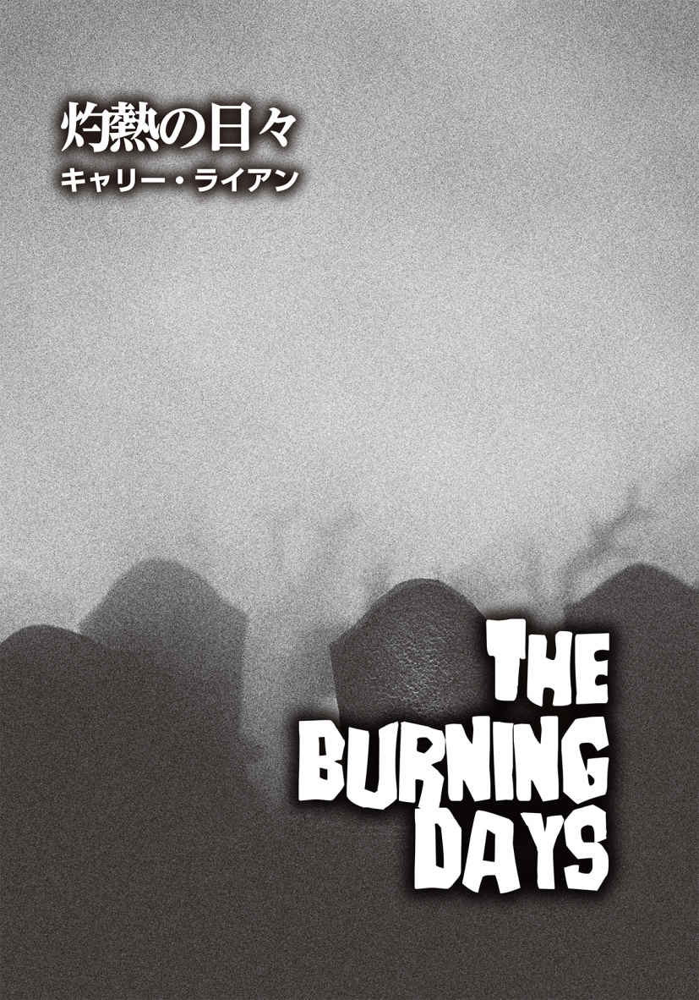
キャリー・ライアン
Carrie Ryan
PROFILE
『The Forest of Hands and Teeth』シリーズをはじめ、『Daughter of Deep Silence』『Infinity Ring：Divide and Conquer』などで知られるニューヨーク・タイムズベストセラー作家。最近は、夫で作家のジョン・パーク・デイヴィスとの共著のマジカル・アドベンチャー『The Map to Everywhere』シリーズを手掛けている。彼女の処女作『The Forest of Hands and Teeth』は映画化の企画が進行中。夫とたくさんのペットとともに、ノースカロライナ州シャーロットで暮らしている。
Twitter：@carrieryan
いずれ、火が燃え尽きてしまうことは誰もがわかっている。残された燃料はあとわずかだ。雨は非常な脅威だけれど、もう何日も降っていないのだから、いつ雨が降ってもおかしくない。要は時間の問題なのだ。
しかしその後、何が起きるかは訊 ねるまでもない。どうせ私たちは死んでしまうだろう──ひとり残らず。運が良ければ、死はすばやく訪れる。運が悪ければ......喉を齧 られる間、それがどんな感触なのかを思い知らされることになる。
最悪の運命なのは、あいつらのようになってしまうことだ。損壊した肉体を引きずって歩く、生きた屍 のように──。
夜間の奴 らは、揺らめく炎の奥に広がる闇で蠢 く影の一部に過ぎなかった。しかし、日中となると話は違う。連中の姿がはっきりと目視できるからだ。皮膚がめくれた大きな傷口からは赤い肉が覗 き、陽光の中で濡 れたように光っている。
早い段階でヘンリーの車が爆発したのだが、それがきっかけで、奴らが火を怖がることに気づいた。つまり、小屋をぐるりと囲むように物を燃やし続ければ、向こうが炎を越えてこちらに来ることはない。まずは簡単なものから始めた。埃 だらけのカーテン、ボロボロの毛布、カビの生えた引き出しに長いこと収納されていた衣類などだ。それらを積み上げ、炎を高く上がるようにした。しかし、そのやり方では、あっという間に燃え尽きてしまうことがわかった。
私たちは頭をひねり、やみくもに物を燃やすのではなく、もっと賢いやり方を試みるようになった。家具を壊し、その木片を広げた上で火を点 けるのだ。それ以来、火は轟 々 と音を立てて燃え盛るほどではないものの、安定して炎が上がっている状態を保てるようになった。我々はローテーションを組み、交代で火の番をした。六人いたときは二人ずつ組みになり、たとえ三、四時間だったとしても、まとまった睡眠を取ることができた。ところが今は四人になってしまい、まともに寝ることもままならない。この三日と半日で、私が眠ったのは五時間くらいだ。とはいえ、火の番をする時間が長くなったのを不満に思っているわけではない。そもそも、外にあんな連中がいるのに、のうのうと眠ることなど不可能なのだ。遠巻きながらも、死人の大群に囲まれているのだから。
このままでは、自分たちが奴らの一員になるのも時間の問題だった。ひと部屋ずつ火にくべられる物を片 っ端 から搔 き集めてきた今、家の中が空 っぽになるのもそう遠くない。それはすなわち、こちらが奴らの仲間入りすることを意味している。すでに一階の可燃物はほとんど漁 り尽くしており、二階も似たような状態になりつつあった。もはや小物や衣服、家具だけではなく、木製であれば、壁、床、下地材に至るまで、建物を破壊してまで燃やしてきた。絶対に火を絶やしてはいけないのだ。
炎の貪欲さには、ほとほとうんざりしている。与えても与えても、火は際限なく全てを吞 み尽くす。あっという間に燃え種は灰と化し、焚 き物も残り少ない。自分らができることもどんどん少なくなってきている。
「私たちもルースとアンディと一緒に行くべきだった」
そう嘆くレイニーは、階段に背を向け、ポーチに座っていた。彼女の手は、膝の上に置いたショットガンを何気なく弄 んでいる。まだらに赤い染みができた乾いた地面を見つめる目は虚 ろで、煤 だらけの頰には、涙の痕 が彗 星 の尾のように付いていた。「今頃二人は守衛詰所に到着しているはずよ」
私は顔を上げ、ロバートと視線を合わせた。彼は私が支える梯子 に上っており、家の外壁の羽目板を剝がしているところだった。私も彼も、今朝、ルースを見たことをレイニーには話していなかった。ルースの顔の半分は削 がれ、片腕はなくなっていたが、それでもまだ彼女だとわかった。ルースはここを発 つ前、夜に山を降りることになった場合の防寒用として、私のジャケットを借りていったのだ。
──ここじゃ、上着なんて必要ないでしょ。火で暖を取れるんだから──
そう言ったルースの言葉が思い出される。
つまり、私が貸したジャケットが目印となり、たまたま見つけた化け物がルースだと判別できたのだった。奴らと同類になってしまった彼女だったが、まだあの上着を羽織っていた。肩からボロボロに裂けて、半ば垂れ下がっている状態になっていたが。ルースが私のジャケットを着てここから去ったことを、レイニーは知らなかったのだ。
そもそも、私のジャケットがどんなものかも、レイニーは覚えていないだろう。
足を引きずりながら歩く死体の群れの中に、再びルースの姿を認められないかと私は待ち続けていたが、レイニーは見る価値すらないと言い、決して奴らを近くで見ようとはしなかった。
ある意味それは、現況を生き抜くための彼女なりの知恵なのだろう。現に、彼女は火の番をしていないときには実際に眠れているのだから。レイニーは、彼女の親友とその親友の恋人はまだ生きている──というか、おそらく安全だと信じてやまない。二人は非常に頭が切れるのだから、と。
彼らと一緒にここから出ていくべきだったのかは、早かれ遅かれ議論せねばらなない。
ロバートがレイニーに何か言い出すかもしれないと思ったので、私はそれを待った。しかし、彼は歯を食いしばり、羽目板の釘 を黙々と抜いている。ポーチ側に貼 られた羽目板のほとんどはすでに剝がされていた。羽目板は燃え方が速く、うねるような黒煙を上げた。煙は大きな雲状の塊 となって風に乗り、近くの木々の枝葉に絡みながら流れていく。
前日の晩、ロバートとレイニーはかなり激しく口論した。結果的に、彼女は「もうあなたは私を愛してなんかいないのよ！」と泣きわめき、彼もブチ切れて、皆の前で「この世がこんなふうにならなかったとしても、この旅が始まる時点でおまえと別れておくべきだった」と言い返す始末。それ以来、二人は険悪なムードのままで、ここには緊迫した空気が流れていた。
「ねえ、今からだって彼らを追いかけられるわ。まだ遅くない」
床から一段高くなっているところに腰掛け、レイニーは同じ主張を繰り返している。「今夜、守衛詰所まで行ってみましょう。あの二人は暗闇の中、ペースが遅くなっているはずだから」
「いや、それはない」
ヘンリーが強い口調で反論し、家の右手の炎に羽目板を一枚放り投げた。彼は額に光る汗を腕で拭い、拭ったところに黒い煤の筋が付いた。
「とにかく、今すぐ出発しましょう」
レイニーはそう提案したが、誰も取り合わなかったので、さらに付け加えた。「私は真剣よ。ここで待っても、あいつらの数が増えるだけだわ！」
「レイニー、もう手遅れだ」
剝がした羽目板を私に手渡し、ロバートはようやく口を開いた。私は、その板を庭の山積みになっている木材のところまで運んだ。
「昨日も同じことを言ってたじゃない！」
レイニーは叫んだ。「おとといも！」
大きく振られる手に、苛 立 ちが表われている。「もうあれこれ考えている場合じゃないのよ。わかってるでしょう？ 燃やせる物はじきに底をつく」
「ありがたいね。疑う余地のない事実を指摘してくれて」
嫌味たっぷりに返したロバートに、レイニーは歯ぎしりをして言った。
「あなたのその態度が問題なのよ。もし本当にそれが疑う余地のない事実なら、ここを発つべきという私の意見に賛成するはずだわ」
「まだ二階の半分と屋根裏部屋が残ってる」と、横からヘンリーが指摘した。
「そう？ それってどれくらい持つのかしら？ あと二日？ せいぜい三日ってところ？」
レイニーは皮肉を込めて問いかけ、その場の空気は重くなった。紛れもない現実が突きつけられた瞬間だったからだ。
「少なくとも、ここにいれば安全よ」と、答えるのが私には精一杯だった。脳裏にルースの無残に裂けた顔が蘇 る。
いつもならレイニーは、当たり障 りのないことしか言わない私を無視するのだが、今回は私を睨 みつけ、片眉を上げた。「あら、そうなの？ この状態が安全ですって？」
私は赤く燃える炎の防壁と、その向こうでうろつく屍たちに目をやった。奴らがやってきた最初の晩は、今でも忘れられない。初めは、ほんの数体だった。何が起きているのか必死に理解しようと苦悩しながら、私たちはなんとか奴らを叩 きのめすことができていた。そのときはまだ、非常通信無線を見つけて作動させる前で、連中が蘇った死者であることもわかっていなかった。とにかくあいつらは、至るところにいた。
街は最悪の状態になっている、と私たちは知った。ほとんどの市民が、最初の晩すら生き延びられなかったらしい。私たちが生存できたのは、ただ単に、この場所が田舎で人口が少なかったからだろう。
とはいえ、いずれ死者たちは、私たちを見つけてしまうだろう。事実、木 立 を抜け、火の手前の開けた場所でたむろする死者たちの数は、日に日に増えていた。
果たして、事態が好転することなどあるのだろうか？ もちろん、あり得る。しかしながら、その逆──状況のさらなる悪化──も起こり得る。少なからず、私たちは連中との距離を保つ方法を考え出した。この小屋は安全だ、目下のところは。
今でも寝ようとすると、永遠に明けないのではないかと思われた最初の夜の光景が頭に浮かんでくる。窓ガラスを引っ搔く無数の指。ドアの向こうから聞こえてくる不気味なうめき声。その記憶が鮮やかに蘇るたび、私の胸は潰れそうになり、恐怖で息ができなくなる。いつの間にか、梯子を摑 む私の拳 に力が入り、指が真っ白になっていた。ロバートがポーチまで降りてきたとき、さり気なく私の手を撫 でたので、彼はそのことに気づいていたに違いない。
「いいか」と、ロバートはレイニーに向き直った。「俺たちは、ここに留まるのが最善策だという結論に達したんだ」
その言葉を聞き、彼女は絶望的な表情になった。
「だって、そのときは、いずれ救助が来るだろうって思っていたんだもの。今とは状況が違う」
「助けが来る可能性はゼロじゃない」
そう言い返したのはヘンリーだった。
レイニーは首を横に振り、ヘンリーの方にクルリと顔を向けた。
「救助に来られるのなら、今頃とっくに来てるはずだわ。そう思わないの？ それとも、私たちが起こしている火煙が煙幕となって、救助隊が私たちを見つけられないのかしらねえ」
確かに、今も救助が来ないのは、どう考えても良い兆候とは言えない。ますます空気が重くなった。
「ここにいれば、まだ複数の選択肢があると思いたいだけでしょう？」
訴えかけるような口調で、レイニーは言葉を続けた。「今の私たちに、選択肢なんてもうないのよ。燃やせる物が少なくなっているってことは、同時に、私たちに残された時間も少なくなってるってことなんだから！」
嗚 咽 を堪 える彼女の頰を、涙が伝って落ちていく。「私たちがこのまま生き延びられるか、それとも死んでしまうのかと、不安でたまらない......もう限界だわ」彼女はショットガンを床に落とし、家の中へ駆け込んだ。
ロバートは苛立ち紛れにひとしきり髪を搔きむしった後、大部分の羽目板が剝がされてひどい姿になったポーチの壁に額を押しつけた。私は頭を抱える彼の背中に、そっと触れてみたい衝動に駆られた。きっと相手の心臓の鼓動に合わせ、私の指がかすかに上下するのがわかるだろう。
しかし、そうする代わりに私は立ち上がり、ロバートとヘンリーを交互に見た。自分がひどく無力で、臆病者だと感じる。
「彼女の言うことは正しいわ。そうでしょう？」
私は二人に問いかけた。「この状態は、どう考えても行き詰まってるもの」
「まだ、そこまでひどくない。打開する道はあるはずだ」
そう答えたロバートの物言いは、レイニーと話すときと違い、柔らかだった。
彼の「まだ」という言葉に胸が締めつけられた私は、一歩前に踏み出した。ただ単に、そうすべきだと思ったのだ。幾度となく繰り返し想像したように、ロバートに手を伸ばし、壁に相手の身体を押しつけ、本能に全てを委 ねる──。
世界が終 焉 しようとしている今、何が起きても誰も気になどしないだろう。
しかしそのとき、ロバートがこちらに身体を向き直したので、私は不自然な近さで彼の前に立つ形となった。ああ、このまま彼が私の腕を摑み、抱きしめ、キスをしてくれればいいのに。
私は頰がカッと熱くなるのを覚え、視線を落とした。彼を見つめていると、身体を重ね合う妄想で脳内が支配されそうになるからだ。微妙な立ち位置を弁明すべく、私は最も安易な言葉を選んだ。
「レイニーと話をしてくるね」
そして、あたかも最初から彼の前を素通りするつもりだったかのように移動した。
自分でもわかっている。確かなことがあるとしたら、それはたったひとつだけ。私たちが全員で力を合わせない限り、生き延びられるチャンスは得られないということだ。前の日も、ロバートとレイニーの関係が壊れたのに、私がそこにつけこまずに、二人の間を取り持って仲を修復させようとしているのもそのためだ。あのときのレイニーは、私の肩に身を寄せて泣いた。そして、自分と別れようとしているロバートがいかに愚か者かを延々と訴え続けていた。
今、二階にいる彼女は傷心しているというよりも、憤慨していた。部屋の中を落ち着きなく歩き回り、手を固く握りしめている。そして、向こうが私を認めるや否や、愚痴が噴き出した。
「ロバートにここに残るよう、説き伏せられた自分が信じられないわ。私はあのとき、ルースと出ていくって決めていたのよ」
レイニーは一旦大きくため息をつき、さらにまくしたてた。「一緒に来てほしいと彼女に懇願されたのに、私は断った。ロバートのためにね」
厳密に言えば、私が寝る時間で、レイニーが火の番をする時間になっていたが、今の彼女には、そんなことはどうでもいいのだろう。彼女が不満を吐き出し続ける間、私は窓の外に目をやり、心の中で数を数え始めた。昨日、森を抜けてやってくる死人の群れの数は、ほぼ一定に保たれていたが、今は様子が違う。明らかに数が増えている。あの屍たちがどこからやってきて、それが何を意味しているのか、私にはさっぱりわからない。ただ、連中を見ているだけで肺が縮まった感じになるので、過呼吸を予防するために、呼吸に神経を集中させる必要があった。
ふと我に返ると、レイニーの非難の言葉はやんでおり、彼女は黙ってこちらを見つめていた。あたかも私の存在に初めて気がついたみたいに、きょとんとした顔をしている。彼女は何かを待っているようだった。聞き逃していたが、私は彼女に質問されていたらしい。
「ねえ、なぜあなたはルースとアンディと一緒に行かなかったの？」
レイニーはそう訊ねた。おそらく同じ問いを繰り返したのだろう。
私は気まずさを感じ、足をぎこちなく動かした。そもそも、私はこのグループにとっては余計な参加者だった。他のメンバーから見れば、ヘンリーの弟が参加できなくなった直後にちゃっかり旅に加わった、いてもいなくてもいい人間なのだ。返事に戸惑っている私に苛立ったのか、レイニーの眉 間 に見るみるうちにシワが寄っていく。私はゴクリとツバを吞み込み、もしかして彼女はこちらの秘めた想いに気づいているのだろうかと訝 しんだ。
彼女は頰を緩めた。だが、その笑みは決して友好的なものではなかった。
「そっか。あなたも、ロバートのために残ったわけね」
私は目を剝 いた。速まる心臓の鼓動が肋 骨 越しに感じられる。レイニーから視線を外すことができない。
すると、彼女は声を立てて笑った。
「安心して。あなたの秘密は黙っておくわよ。でも、大した秘密じゃないけどね」
顔をしかめた私を見て、彼女はもう用はないと言わんばかりに手を振った。
「私の彼氏に恋心を抱く新入生ひとりにつき、一ドルもらえたら、もっと素敵な山小屋を借りられたでしょうね」
「......元 彼氏でしょう？」
そう訂正したものの、自分の声が上ずったのが気に入らなかった。
レイニーは平然とこう返した。
「一時的に喧 嘩 別れしただけよ。そのうちヨリを戻すわ。今までもそうだったように」
彼女の表情が少し柔らかくなり、こう続けた。「この世は終わる。誰もひとりで死にたくない。きっとロバートもそう思ってる」
その瞬間、全員で力を合わせることが、今一番大事なのだということが頭の中から飛んでいた。私は単に、自分と同じように彼女も傷つけばいいと願った。気がついたときには、うっかり言葉を滑らせていた。
「ルースは奴らと同じになってたわ」
レイニーの目が大きく見開いた。一瞬、彼女は私の言葉を理解できていないようだった。
もはや、言い繕うには遅すぎた。後戻りはできない。真実を明かしたことが正しかったのだと自分を納得させるべく、私はさらに付け加えた。
「今朝、彼女を見たの」
私は窓の方を指差した。「炎の向こう側で、他の連中と一緒に群れていた」
レイニーが事態を把握しているかどうか定かではなかったので、私は決定打を打った。
「ルースは死んだのよ」
レイニーは口を大きく開けたが、なかなか言葉が出てこなかった。ようやく押し殺した声で、「......なんですって？」と発した。彼女はこちらを見つめ、私が前言を撤回するか、もしくは冗談だと明かすのを待っていた。しかし、私がそのどちらでもなく黙って立ち尽くすだけだったので、まるでスローモーションのように、彼女はその場に膝から崩れ落ちた。
こんなことをしてしまった自分に、ほとほと嫌気が差す。レイニーに謝罪しようか、それともなぐさめの言葉をかけようかと思いあぐねていると、外から悲鳴が聞こえてきた。私はレイニーと一瞬視線を交わしたが、彼女が狼 狽 しているのがわかった。私たちの間のぎくしゃくした空気は、たちどころに吹き飛んだ。レイニーの心を貫く恐怖を共感できたのは、自分も同じように感じているからだ。おそらく彼女の脳裏にも、私と同様の疑問が浮かんでいるはず。あの悲鳴がロバートのものなのか、それともヘンリーが上げたのか、表で一体何が起きているのか──。
私は脱 兎 のごとく寝室のドアに向かったが、レイニーの方が入り口の近くにいたので、彼女に先を越されてしまった。二人とも猛烈な勢いで階段を降り、ポーチへと急いだ。悲鳴は、家の横手から聞こえてくる。手すりを飛び越えた私は、着地の衝撃で足首に走った痛みを無視し、慌てて小屋の角を曲がった。途端に私の全身が凍りつき、足が止まる。
炎の防壁の一部が鎮火し、煙だけになっていた。黒煙の塊がもうもうと立ち込め、濃霧のように周囲を覆い尽くしている。煙霧の中で何かが渦巻くように蠢く様 は、まるで幻想的な舞踏を見ているように美しかった。それが何なのかを悟るまでは。
奴らだ。屍たちがとうとう雪 崩 れ込んできたのだ。
炎の壁は破られた。
一度にあまりにも多くの考えが浮かび、それぞれが我先にと頭の中を支配しようとしたので、私の思考は完全に停止した。私のせいだ。もっと木材を火にくべておくべきだった。とはいえ、燃え種はほとんど残っていなかった。炎の防護壁を一定の高さに保つには、どうしても量が足りなかったのだ。私は松明 を摑み、屍たちを打ち負かすべきだったのかもしれないが、奴らを食い止めておく炎がなくなった今、一体なんの意味があるだろうか。
あるいは、小屋に逃げ戻り、バリケードを築くべきだった。しかし、一階部分にはほとんど壁らしい壁は残っておらず、バリケードを築ける状態ではなかったのだ。
万事休すだ、と私は思った。もうおしまいだ。
だが、私は心の準備ができていなかった。
私は必死になってロバートを探した。だが、分厚い煙が邪魔をして、彼の姿はどこにも見つけられない。彼かと思っても、結局は奇妙な歩き方をする例の化け物たちだった。
あまりにも視界が悪く、生きている人間なのか、生きている死人なのか区別をつけることができない。
人間だとわかる唯一の手がかりは、叫び声だ。なぜなら、屍たちが発するのは、耳障りな唸 り声だけだったからだ。
「ロバート！」
私は声の限りに名前を呼んだ。「ヘンリー！」
耳を澄ましても、聞こえてくるのは、奇妙なうめき声と、何かを引きずる湿り気のある音と、骨を鳴らしたときのような乾いた破裂音だけだ。突然、私の足元で誰かが倒れ、煙の塊が大きく揺れた。下を見た私の目に飛び込んできたのは、潰れた頭部だった。それは、しぼんだ風船のように、首からだらりと垂れ下がっている。次の瞬間、私はハッとした。そいつが着ている上着には見覚えがあった。私のジャケットではないか。案の定、その屍はルースだった。
彼女の後ろにヌッと立つ影が見え、私は身構えたが、それはロバートだった。両手には、木材が握りしめられており、その先端は血に濡れていた。彼の視線はこちらに向けられていたものの、おそらく私を見ていたのではないだろう。歯を剝き、何かに集中している様子からして、その表情には残忍さが浮き彫りになっている。彼はルースの腰の辺りをまたぎ、持っていた木材を高く上げた。私の目がたくましい腕の筋肉が張り詰めたのを捉 えた次の瞬間、彼はルースの頭部目がけ、木材を思い切り振り下ろした。一度ではなく、二度、三度と。
ただでさえ半分削がれていたルースの顔はさらに破壊され、血と骨と何なのか考えたくもない頭の中身が飛び散った。私の脛 に、生温かい飛沫 が付着したのを感じた。思うに、この時点ですでに私は、暴力に対して慣れっこになっていたようだ。死人に対しても。だが、私は間違っていた。
頭では、ルースがあいつらのひとりと化したことはわかっていたつもりだった。彼女が死んだのも理解していた。ルースは私たちを襲うしかできない化け物になってしまっていた。そして、ロバートに他の選択肢がなかったことも。奴らの動きを止めるには、頭を破壊するしかないのだ。
彼は私たち──私──を守ろうとしていた。
だが、何ヶ月も思い焦がれてきた男性を見る限り、現実的な自己防衛手段を持たないであろう化け物に対する彼の攻撃は、あまりにも悪意に満ちていた。屍は、こちらが殴っても殴り返してはこないのに。私の中で嫌悪感が湧 き上がり、急に息苦しくなった。
顔を上げると、ロバートはまだルースにまたがったまま彼女を見下ろしていた。まるでガラスのような目──。その冷たさに私はゾクリとしたものの、瞬 きをする彼の顔の後ろに何かがいる気がして、さらに戦 慄 が走った。彼の背後に迫りつつあったのは、中年の男だった。額の髪の生え際 は後退し、首には大きな穴が開いている。
「ロバート！」
私の叫び声は頭の中でだけ響いた。過呼吸気味の私の喉から出たのは、吐息混じりのかすれ声だった。到底彼の耳には届かない、と思ったものの、彼は顔を上げ、私をまっすぐに見た。ところがその直後、男の指がロバートの肩を摑み、彼は目を剝いた。その瞳には凄 まじい恐怖が浮かんでいた。次に何が起こるのか、彼は悟ったのだ。
放心していた彼の感情が露 わになった瞬間、私の中で何かが弾けた。
以前の私だったら考えられない本能が顔を出し、自衛本能すら押しのけていた。私は勢いよく前に飛び出した。武器など何も持っていなかった。あるのは、素手と猛烈な怒りだけ。ロバートが男の手から逃れようと懸命にもがく中、私は中年の男に体当たりをした。できるだけ強く、相手の身体を押しやった。
男は後方によろめくと同時に、今度は私を摑んだ。腕に相手の指を感じた。男の爪が腕の肉に食い込み、私は反射的に振りほどこうとしたものの、向こうの握力は驚くほど強かった。男はそのまま地面に尻餅をつき、私は引っ張られて相手の上に乗る形になった。転んだ拍子に互いの足がもつれ、簡単に離れられなくなっている。男はひどく飢えており、執 拗 に私に嚙 みつこうとした。さらに、私の髪やシャツを摑もうと、やみくもに腕を伸ばしてくる。大きく開けた口からは、腐りかけた歯が見えていた。
こちらも抵抗して相手を引っ搔いたが、無駄だった。拳で殴ったり、足で蹴ったりしても結果は同じだった。とはいえ、攻撃を避けるのはそれほど難しくはなかった。前腕を相手の喉に強く当てたまま、男の頭を地面に押さえつけていたのだ。こうすれば、嚙まれることもない。しかしその体勢は、相手の両手を自由にしてしまい、男は私のあちこちを摑み、顔に引き寄せようとしてくる。果たして、いつまでガチガチと音を立てる化け物の歯を避けていられるのかは、定かではなかった。
その時点で、私は純粋にパニックに陥っていた。誰かに助けを求めようと周囲を見渡したものの、厚く立ち込めた煙の中、他の者たちもそれぞれ屍たちとの死闘で手一杯のようだった。ロバートは、ナイトガウンを着た若い女性を振り払おうと必死で、ヘンリーは消防士のユニフォーム姿の二人と揉 み合っている。
そこに、レイニーが駆け寄ってきた。彼女は手にした銃を構え、繰り返し引き金を引いた。無我夢中で発砲しているようだった。消防士のひとりが倒れると、レイニーは銃口を横にスライドさせてもうひとりも撃った。
私の下で横たわる男は相変わらず身 悶 えしており、私の腕は痺 れ、押さえる力が弱まってきた。このままでは長く持たない。私は炎が上がっている場所に目を向けた。火のところまでは、一メートルくらいだろうか。燃えている椅子の脚を見つけた私は、心を決めた。一か八かだが、思い切った行動に出るしかない。手が火傷 しようが、そんなことは構わなかった。問題なのはタイミングだ。
私は相手を押さえていた腕を離し、身を乗り出して火の中の椅子の脚を摑んだ。本当にほんのわずかの差で、起き上がってこちらに襲いかかろうとした男の顔にそれを突きつけた。化け物が炎でひるんだ隙に、椅子の脚を男の頭 蓋 に振り下ろし、何度も殴った。私は力が弱かったので、相手の頭の骨を叩き割ることはできなかったが、相手の猛攻から逃れるには十分だった。一度は男から離れたものの、私は再び椅子の脚を叩きつけた。念のために、さらにもう一回。
すると、男の髪に火が点いた。一度燃え出したら、あとは早かった。炎は服に移り、かつてはきっと高級だったに違いない仕立てのいいスーツを舐 め尽くしていく。ところが、炎に包まれても、男はまだ動きを止めなかった。よろめきながらも立ち上がり、こちらに向かってくるではないか。なんてしつこいのか！ どんなに暴力を振るわれても、嚙みつこうとする行為をやめる気配は見えなかった。それが何よりも、私の恐怖を増殖させ、胸の中でどんどん重い塊になっていった。
そのとき、私はようやく理解した。この化け物たちには、人間性の欠片 すら残っていない。つまり、まともなやり方で奴らを止める術 はないのだ。論理的に説き伏せることも、交渉することも不可能。できることは、行動を遅らせることだけ。連中が迫ってきたら押し返し、また近寄ってきたら押し返す、の繰り返しで、そのうち人間側が体力の限界に達し、精神的にも根負けする。どんなに頑張っても、私たちの行く着く先にあるのは「死」。死ぬかどうかではなく、いつ死ぬかなのだ。
そう悟った瞬間、私は虚脱した。心に穴が開いたようだった。底なしの深 淵 がぽっかりと黒い口を開けている。そんな感じだった。私はその場にへたり込み、焼かれながら足を引きずって迫ってくる屍を見た。ふと、考えた。この男は生前、どんな人生を送っていたのだろうかと。かつては名前があり、家族も仕事もあったはずだ。彼の夢や希望、悪夢や野望、苦悩はなんだったのか。もちろん、彼に関することは何ひとつもわからない。永遠に。
でも、彼は今ここで化け物になっている。そのことだけは、私が知っている。
いつか私も、誰かに同じことを思われるのかもしれない。
私がやり残したこと。叶 えたかったけれど諦めてきた全ての願い。不安、困惑、ためらいを感じたあらゆる局面。そんなものは何ひとつ問題ではない。
ここに至るまでの全ての日々、時間、一瞬一瞬をいかに無駄に過ごしてきたかを、私は今、とことん思い知らされていた。できることなら、時間を巻き戻したい。
もう後悔はしたくなかった。
だから、せめて最後まで戦おう。
私は両足で立ち、男に蹴りを入れた。後方に飛ばされた相手は火の中に背中から倒れ、だらんと四 肢 を伸ばしている。炎はほぼ全身に広がりつつあり、もはや筋肉が言うことを聞かない状態のはずだ。まだ立ち上がろうともがいていたものの、実際に起き上がれることはないだろう。男はすっかり弛 緩 し、他の木材と一緒に火の燃料と化した。
火の点いた椅子の脚を掲げ、私は吸い込まれるように炎に近づいていった。そいつを覗き込もうとしたそのとき、誰かに摑まれ、後ろにぐいと引き寄せられた。何も考える間もなかった。椅子の脚が手から離れ、地面に落ちていく。私の両手が胸元に押さえつけられたまま、背後から伸びた誰かの腕の中に抱えられていた。
耳元に相手の口が近づき、歯がかすめるのを感じた私は激しく抵抗した。食われるのは耳？ それとも首？ ほとんどパニックになりかけたとき、私は言葉がささやかれたのがわかった。私に話しかけている？ ならば、私を捕まえているのは例の化け物ではなく、人間だ。
「静かにして、カーソン。もう大丈夫だ」
ああ、この声は！ 相手は同じささやきを繰り返した。その言葉が私の中に深く染み込み、意味を理解するまで。私はもがくのをやめたが、彼の腕はまだ私を固く抱きしめ続けている。
私はこのまま腕を離さないでほしいと思った。それは、相手がロバートだからではなく、呼吸をするたび上下する彼の胸の動きを背中で感じ、彼もまた私と同じ恐怖を経験しているのだと悟ったからだ。私はひとりぼっちなんかじゃない──。
私は瞬きをし、辺りの状況を把握しようと試みた。地面に転がり、動かなくなった屍たちの多くは、頭部が潰されているか、凄まじいまでに殴打されている。ヘンリーは死体を見下ろして立ちすくんでおり、その手には、血がべっとりと付着した木材が握られていた。その後方では、レイニーが家の壁に寄りかかって震えている。抱えたショットガンの銃口は、下に向けられていた。
死者たちの流入は止まっていた。私が火の中に押し倒した男が、大きな炎を上げて燃えている。消えかかっていた火が、思わぬ形で勢いを取り戻したのだ。
そうか。私は合 点 がいった。
「死体は燃えるのよね。火葬にするくらいなんだから」
そうつぶやいた私の背後で、ロバートが言った。
「燃料には困らないってことだな」
私は声を上げて笑った。なんてことだろう。私たちの一番の脅威が、私たちの窮地を救うことになろうとは。つまり、死者たちがやってくる限り、私たちの安全は確保されるのだ。
「もう大丈夫だ」
ロバートはもう一度言った。その声は、耳にかかる吐息と同じくらい柔らかだった。私は笑いながら、泣いていた。恐怖の後に安 堵 が一気に押し寄せてきたからだ。
彼はまだ背後から私を抱きしめていたが、私の手を自由にしてくれた。彼は深呼吸をし、私は目の前の光景に眉をひそめた。あの男を撃退すべく手に取った椅子の脚は、まだ地面で燃えている。私の手のひらと指は火傷で赤くただれていた。今、痛みは感じないが、そのうち焼けつくような疼 痛 が襲ってくるだろう。
痛みなど平気だ。少なくとも、生きている証 なのだから。ヘンリーは、倒れている死体のひとつに近寄り、炎の中へと引きずっていく。もはや燃料でしかないとわかっていても、本能的に私は顔を背けた。死者たちを木材代わりの単なる可燃物だと割り切って考えられれば、ずっと楽なのだろうが、それはどこか不公平な気がしてしまう。ある意味、彼らに助けてもらっている状況であるし、化け物になる前の彼らは私たちと同じ人間だったのだ。かつては名前も願いも希望も持っていた、普通の人々だった。
私のように。私には、まだ自分自身として行動する時間がある。
ロバートの腕が緩み、私はクルリと回って彼と向き合った。胸に抱かれたまま自分の身体を押しつけると、彼の心臓の鼓動を肌で感じた。ロバートがハッとしたのがわかったが、私はつま先立ちになり、火傷していない方の手で彼の顔を引き寄せ、唇を重ねた。不思議と全くためらわなかった。
不安を感じなかったといったら噓になる。だが、長い間待ち焦がれていた瞬間だった。
身を離したとき、こちらを見下ろす彼の表情から、驚きと困惑が見てとれた。私は頰がかっと熱くなるのを感じたものの、視線をそらしたりはしなかった。少なくとも数秒間は。
レイニーの声に、私は我に返った。彼女は腕組みをし、片眉を上げてこちらを睨んでいる。
「どういうつもり？」
私は口を結び、ロバートが返事をするのを待った。彼は私のキスに応 えるわけでもなく、かといって私を突き放しもしなかった。だから、正直なところ、相手の本心はわからない。ロバートは私を見ていたが、口角がゆっくりと持ち上がり、破顔した。そして、照れ臭 そうに首をすくめた。
ヘンリーは目を丸くして、作業の手を止めている。レイニーは呆 れたように片手を振り上げ、「ふん、どうだっていいわ」と言い放ってヘンリーの手伝いを始めた。すでに炎は以前よりも高く上がっており、熱い空気が風に乗って漂ってくる。目前まで迫っていた死者たちは、火の勢いに恐れをなしたのか、ずっと後退していた。
「こんなことしたって、何も変わらないのよ。わかってるの？」
レイニーがこちらに話しかけていると気づき、私は彼女に顔を向けた。彼女は死体を蹴って火にくべ、さらに言った。「私がさっきまで言っていたことは、今でも全部正しいわ」
ロバートは最後には自分のところに戻ってくると、レイニーは言いたいのだろうか。彼女たちが別れたことに、なんら変わりはない。憧れの彼とキスができた興奮で得た輝きを保とうとしたが、それは難しかった。どんよりとした暗雲がまた心を覆い尽くそうとしている。
私の笑顔を消し去ることができ、レイニーはまるで勝者のような笑みを見せた。
物事は同じように続いていくしかないのだ。私たちは安全を確保したかに見えたものの、それでもなお、ここから逃げ出せるわけではない。奇妙なうめき声を上げて足を引きずって歩く死者たちに、いつまでも取り囲まれたままだ。そう、私たちに永遠に離れられない。歩く屍と、焼却される死体が放つ、べたつくような甘い香りからは──。
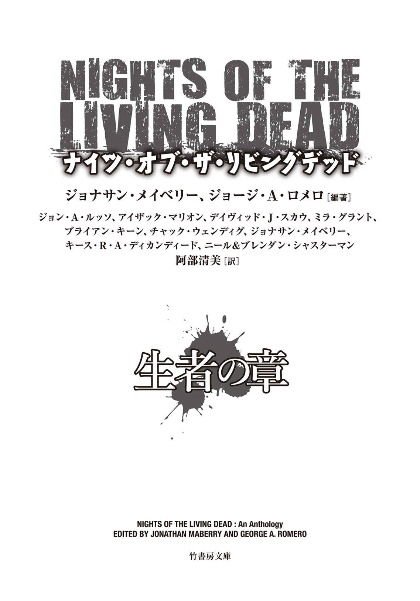
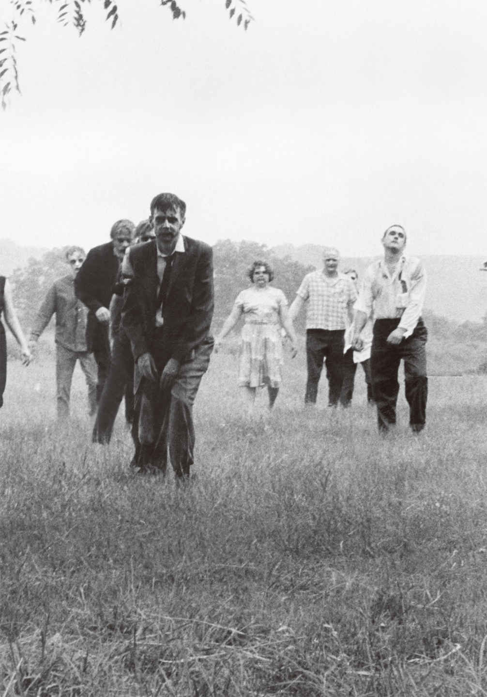
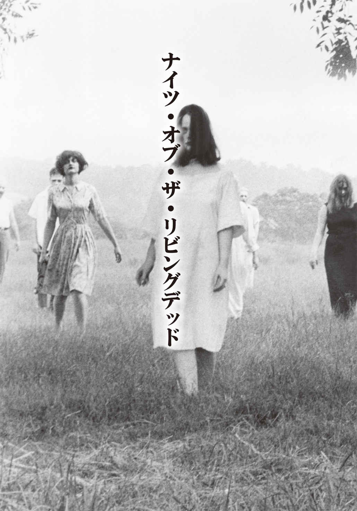
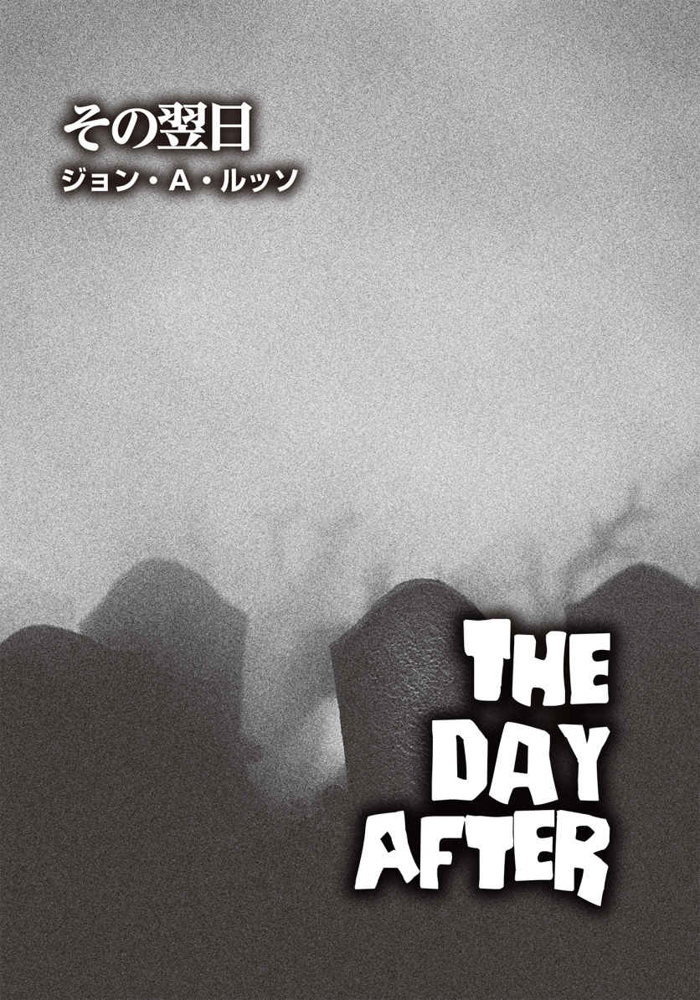
ジョン・A・ルッソ
John A. Russo
PROFILE
"生きる伝説"と呼ばれる作家、映画監督。彼の小説20編は世界各国で出版され、関わった映画19本も世界的に配給されている。映画『ナイト・オブ・ザ・リビング・デッド』（1968）の脚本、『バタリアン』（85）の原案、『ナイト・オブ・ザ・リビングデッド／死霊創世記』（90）の製作を務めたことで、ゾンビファンから支持され続けている。また、『My Uncle John Is a Zombie !』（2016）には、役者として出演。しかし、彼自身は、自分が単に人を怖がらせるのが好きなナイスガイだと皆にわかってもらいたいという。彼は長年ペースを落とすことなく、精力的に仕事に取り組んできた。本作は、彼とジョージ・A・ロメロが温めていた映画の企画『Night of the Living Dead and The Day After』の脚本から書き起こした短編となる。
Twitter：@JohnARusso2
マクレランド保安官は、ガソリンを染み込ませた松明 に火を点 け、すでにガソリンをかけておいた燃え種の山を松明で触れた。山積みになった屍 はシュッという音を立て、炎が朝焼けの空に向かって高く上がっていく。保安官とその部下は、マイラー農場の母屋周辺をうろついていた人食い邪鬼 をすでに二十体以上射殺していた。
マクレランドは、ヴィンス・ダニエルズ保安官補に言った。
「全部片づけたよな？」
「ひとり残らず頭を撃ちましたし、たぶん大丈夫かと」
ヴィンスは一旦うなずいた後、小さく息を吐いた。「ただし、森に逃げ込んだ奴 がいなかったとは言い切れません。連中は火と同様、発砲音も怖がりますからね。こっちが撃ち始めたときに隠れたのもいるかもしれません」
「ヘリはいまだに旋回してる」と、マクレランドは空を仰 いだ。「もし上空から連中を見つけたら、こっちに連絡してくるはずだ。他の農家に潜んでいる者がいるケースを考え、谷を逆回りしてウィラードに戻ろう」
不気味なうめき声を発し、頭をだらしなく傾けて歩くグールたちは、森を抜けて移動していた。中には、ミラー農場で出くわした人間の身体の一部を抱えている者もいた。ある屍は木陰に座り、誰かの腕にかぶりついている。その手首には装飾が施されたブレスレットが下がったままだった。ボーイフレンドと一緒にトラックに乗っていた少女が身に着けていたものだ。そのトラックは爆発してしまったのだが。
グールはよだれを垂らし、黄色くなった歯で肉片を引き裂いている。きれいにしゃぶった指の骨を吐き出し、食べかけの腕を地面に落とすと、そいつは森から出てきた他の仲間を追うようにしてゆっくりと歩き始めた。
すると、片手がズタズタになっている女性のグールがやってきて、落ちていた腕の残 骸 を拾い上げた。ほとんど骨になっていたものの、手に入れた〝食料〟に食欲が刺激されたのか、唸 り声を上げた。かつて彼女はバーバラという名前で、ジョニーという兄がいた。ジョニーは他のグールを手助けするかのように、ミラー農場の母屋から彼女を引きずり出した。彼自身、バーバラより先に連中に引きずり出されていたのだった。しかし、彼女が殺された後、ジョニーは妹が平らげられてしまう前に連中を蹴散らした。貪 られた彼女の肉体は無数の嚙 み跡で血だらけとなり、あちこちに穴が開いていた。唇、鼻、耳の一部は欠損していた。
生前はカレンという名のうら若い少女がバーバラに静かに近づき、彼女が持っていた骨の露出した手首を摑 んだ。バーバラとカレンは食料を引っ張り合い、そのうち手首は落下してどこかに転がっていった。二人はすぐに手首を諦め、他の仲間の後を追いかけていった。
二車線の舗装道路の脇には、ガス会社の敷地が森の合間を抜けるように広がっている。草に覆われた土地には電柱が何本も並んでおり、それぞれが送電線でつながっていた。
架線作業員のジェド・ハリスは、背が高く、ひょろりとした体 軀 で黒髪に口ひげと顎ひげをたっぷり蓄えた三十歳の働き盛りだ。靴底に鋲 釘 が打たれたブーツを履 き、身体に命綱を装着し、道具でいっぱいになったポーチをぶら下げた幅広の革ベルトを腰に巻き、電柱のひとつによじ登っていた。チェック柄のシャツにブルージーンズという格好で、頭にはウィラード電力会社のロゴが入った野球帽を被 っている。電柱の根元には、同じロゴ入りのバンが停まっていた。送電線の一本にほつれている箇所を見つけた彼は「なるほどね」とつぶやき、ワイヤーカッター、電気工事用プライヤー、絶縁テープで作業を始めようとした。
三人のグールが森から姿を現わし、電柱の下に停めてあったバンに迫っていった。長い間、連中はぼんやりと電柱にいる男性を見上げていたが、彼は電線の修理に没頭していた。バンの助手席で眠っていた一匹の犬が、異様な気配を感じたのか、両耳をピンと立てた。犬は眠りから覚め、車内のフロントシートを興奮気味に駆け回って吠 え出した。グールたちは手頃な石を拾い上げ、バンの窓を叩 き始めた。
愛犬バーニーの声に気づいたジェドは、下を見て事態を把握し、急いで電柱から降りることにした。ほどなくサイドウィンドウが粉々に割れ、連中が中に腕を突っ込むのが見えた。バーニーは威 嚇 するような唸り声を上げている。おそらく必死で抵抗したのだろうが、そいつらはあまりにも執 拗 で、とうとうバーニーを割れた窓から車外に引きずり出してしまった。うちひとりと一緒に、バーニーも地面に転がった。別の奴が愛犬の前に立ち、石を持った手を高く上げた。
「バーニー！」
ジェドは叫んだ。
振り下ろされた石が頭に当たり、バーニーはキャンと吠えた。もうひとりも近寄り、同じ行動を取った。連中は繰り返しバーニーを叩き、やがてその身体は動かなくなった。
ジェドはようやく地面に降り立ったものの、慌てていたので腰からロープが下がったままだった。道具入れから大きめのスクリュードライバーと釘抜き付きの金づちを取り出し、彼は三人に突進した。クソッ、俺の愛犬を殺しやがって！ ジェドはこみ上げる怒りに任せ、一番近くにいた奴の後頭部めがけて金づちを叩きつけようとした。しかし、予想できない相手の奇妙な動きのせいで狙いは外れ、肩をかすめただけとなってしまった。他の二人も徐々に迫り、ジェドはコヨーテに囲まれたガゼルがごとく窮地に陥った。
しかし、鈍い連中とは違い、彼の動きはすばやかった。スクリュードライバーで目前の相手の目をひと突きにすると、そいつはよろよろと後ろに下がった。それでも、他の二人は平然と、よだれを垂らしたままその場に立ち尽くしている。しかも、バンの運転席側のドアの前にいるので、ジェドが車に駆け込むこともできない。彼は金づちを振り回し、スクリュードライバーを突き出しながら、思い切って近寄っていった。
ところが意外にも、手前の奴がこちらに向かって体当たりをしてきたので、ジェドは倒れ、スクリュードライバーを落としてしまった。それでも、金づちは握り続けていた。彼は悶 えて相手を振り払おうとしたものの、そいつは自分の足にしっかりとしがみついている。足首を強く抱えられたまま、ジェドは這 って逃げ出そうと試みた。相手の身体は重く、そいつを引きずったままでは埒 が明かない。必死に地面を転げ回り、なんとか上体を半分起こすことができたので、彼は金づちで相手の頭を殴打した。無我夢中で金づちを振り下ろし続けるうち、相手の頭 蓋 骨 が割れて黒い血が流れ出した。黄色く濁った目が空を見上げて動かなくなるまで、何度も何度も殴りつけた。
我に返ったジェドが顔を上げると、さらに五人が森から出てくるのが見えた。急いで立ち上がって駆け出したところ、案の定連中も追いかけてきた。肩越しに追っ手を見ながら走っていたジェドの正面に、思いがけず追っ手とは別の三人が出現し、彼はギョッとして立ち止まった。手にした金づちをこれ見よがしに振り回したものの、それがなんの抑止力にもならないことはわかっていた。
突然、耳をつんざくエンジン音が聞こえ、二車線道路の奥から猛スピードでやってくるジープが見えた。車はまっすぐに三人の敵の方に向かってくる。驚いたことに、ジープを運転しているのはブロンドの若い女性だった。ジープは全く減速することなく襲撃者たちに突っ込み、うち二人は宙に跳ね飛ばされ、三人目は電柱に叩きつけられた。それから車はすばやく方向転換し、ジェドから数メートルのところで急停車した。
「早く乗って！」と、運転席の彼女が怒鳴った。
ジェドは迷うことなく走り出し、助手席のドアを開けて中に飛び込んだ。ジープは再び走り出し、無事に舗装道路に入ったので、彼はマジマジと自分を救ってくれた女性に目をやった。なかなかの美人というだけではなく、とても勇敢だ。襟ぐりが深く開いたブラウスの胸元と、たくし上げられたスカートから伸びた足を見ただけでも、素晴らしいプロポーションの持ち主であることがわかる。
「助かったよ。君は俺の命の恩人だ！」
エンジンの轟 音 に負けぬよう、彼は目一杯声を振り絞った。
「一体全体、ここで何をしてたわけ？ しかもひとりで」
彼女も大声で返してきた。「何が起きてるか知らないの？」
ジェドは困惑しながら訊 ねた。
「いきなり襲われたんだ。あいつらは何者だ？ 俺の愛犬を殺しやがって。完全にイカれてるのか、それともラリってるのか」
「奴らはイカれてるんじゃない。死んでるの！」
その言葉に、ジェドは目を丸くした。
「は？ 死んでる？ 噓だろ！ めちゃくちゃ動いてたぞ！」
「普通はそう思うのが当たり前よね。でも、世の中は今、天地がひっくり返ったも同然。死人が生き返ってるんだから。テレビやラジオでさんざん騒いでるわよ」
ハンドルを握りながら、女性は眉をひそめてこちらを一 瞥 した。
「このド田舎で、送電線のチェックや修理をひとりで請け負ってる」と、彼は自分の状況を語り始めた。「突然、家の仕事場から通信できない状態になって、仕事にも支障をきたし始めてたんで、通信不能の原因を探ろうと自分なりに作業を続けていたんだ。電線はどこもかしこも不具合ばかりで、誤作動くらいならまだいい方だよ」
「社会全体が誤作動中だもの」
彼女は大きくため息をついた。「完全に制御不能状態よ！ なんでこうなったのか、その原因は誰にもわからないっていうのも始末が悪いわね。新たな奇病の感染が拡大しているのか、手に負えない伝染病の発生か。とにかく詳細がわからず、皆が頭を捻 っている」
「俺は......世の中の全てを切り捨てて生きていた」
ジェドは遠くを見つめ、そう話し始めた。「俺の人生には、俺自身と愛犬のバーニーだけだった。俺たちはテントか、星空の下で一緒に寝ていた。なのに......相棒のバーニーが死んでしまった......」
バーニーの最 期 の姿が脳裏に浮かび、彼は唇を嚙んだ。
彼女は少し間を置いた後、「あなたの名前は？」と訊 いてきた。
「ジェド・ハリス。君は？」
「ダニエル・グリアー。訪問販売で化粧品を売ってるの。田舎にも、たくさんお客がいるわ。自宅はウィラードにあるんだけど、ここで仕事をするときは、自分の山小屋に寝泊まりしてる。あるお客さんを訪ねたときに、居間で彼女が死んでいるのを発見したの。家の中なのに、野犬にでも食われ尽くしたようなひどい状態になってた。これが伝染病だかなんだか知らないけど、そのときから何かおかしいなって思い始めたわ」
一気に話した彼女はそこでひと呼吸つき、さらに続けた。「電気は全く点かないし、電話も通じなかったから、ウィラードに戻って警察に通報しようと決めたの。すると、車のラジオから緊急放送が流れてきた。とんでもない事態になっているのは、その放送で知ったってわけ」
「俺はウィラード電力会社から依頼された仕事をしてたんだ。聖ウィラード教会の神父が本社に電話をかけてきて、教会にも学校にも電気が全く供給されてないって伝えてきたらしい。車に乗り込んで走り出す前に、もっと電話が来た。全てこの郡の同じ地域からだった」
「本当は、今会ったばかりのあなたにこんなこと言いたくないんだけど──」
ダニエルはそう前置きして言った。「私たち、学校をチェックすべきだと思うの。今頃、子供たちが取り囲まれてるかもしれない」
「取り囲まれてるって、何にだよ？ あいつらのこと、なんて呼んでるんだ？ 狂人か？ それとも、頭がおかしくなった奴らか？」
「名称なんて知らないけど、〝邪鬼 〟って呼ばれるのを聞いたわ。連中は殺すべき対象だって、当局が言ってた。殺 るか殺られるかだって」
聖ウィラード・カトリック教会とその付属学校においては、ステンドグラスがはめ込まれた大きな石造りの教会自体は無傷のままだったが、教室がひとつだけの小さな学校の方は、数時間前から襲撃を受けていた。背の高いガラスの窓という窓には板が打ちつけられ、防御策が取られていたものの、窓の何枚かはすでに粉々に割れていた。建物の周りには二十体以上のグールがうろついており、腹を空 かせているのか、隙あらば中に入って生きている人間を貪り食おうとしていた。
メガネをかけ、詰め襟の司祭服を着た三十代半ばのエド神父は、建物の安全性をもっと高めようと努力していた。教区墓地の反対側には教会が建っていたものの、児童たち、特に六歳ほどの低学年の子供が走って逃げ込むには遠すぎた。そこでエド神父は、断続的に聞こえてくるラジオの緊急放送のアドバイスに従い、学校内に留まって救助を待つことにしたのだった。運良くハンマーと大きめの釘を備えていたので、進入路となりそうなところに重い机を配置し、同時に釘で打ちつけた。彼は児童のひとりに声をかけた。
「アニー、ちょっと手伝ってくれないかな？」
アニー・キンブルは、聡明で愛 嬌 のある十二歳の少女だ。彼女はエド神父が釘を打ち込む間、板を支える手伝いをした。教卓の上のラジオから雑音ばかりが流れている中、シスター・ヒラリーが突然口を開いた。
「また信号を拾った。聞いて！ きっとまた放送が始まるわ」
彼女とエド神父とアニーはラジオの前に集まり、他の児童も彼らに倣 った。今度の放送によれば、武装警官とボランティアたちが農村地域を隈 なく搜索しているが、救助の手が全員に行きわたるには時間がかかるかもしれないということだった。一時的に安全な場所にいるのであれば、事態が急変して危険に晒 されない限りは、その場に留まれというアドバイスをしてきた。
シスター・ヒラリーは子供たちの顔を見た。
「いいこと、皆さん。正しい行動を取りましょう。ここにいれば安全だし、神様は私たちのお祈りに応 えてくださるわ。いずれ救助隊が来ます。みんなで全能なる神を信じて待ちましょう」
しかし、早熟で賢いが、ひどく甘やかされて育った薄茶色の髪の少年バーティー・サミュエルズが半べそをかきながら言った。
「そんなこと、ラジオは言ってない。どうせ僕たちは死ぬんだ！ 救助の数が足りないから、町のみんなを助け出すのは無理だよ。ねえ、パパを呼んで！」
シスター・ヒラリーは彼をなだめようと、柔らかい口調になった。
「バーティー、すぐにお父さんに会えるわ。でも、今すぐはここに来られないの。外はとっても危険だから」
バーティーは大きな声で泣き始めた。「いやだ！ パパに会いたい！」
すると、エド神父が諭した。
「静かに！ あいつらに聞こえる。泣き声に気づいて、あいつらがもっと近くまで来てしまう」
アニーと彼女の母ジャニスは部屋の一番端 の窓辺に移動し、外を覗 き見た。連中はうろつきながら、新鮮な食料──生きた人間──の匂 いを嗅 ぎ回っている感じだった。
「ママ、どうしよう。数が増えてる！」
娘の言葉を受け、ジャニスも発言した。
「バーティーの言う通りだわ！ 私たちはここから生きて出られない」
彼女が胸の前で十字を切ると、何人かの子供たちが再び泣き出した。バーティーは、さらに大きな声を上げて泣いた。
「ジャニス、落ち着いてくれ」
エド神父はアニーの母親の方を向いた。「君が子供たちを怖がらせている」
ジャニスは首を横に振り、再び娘とともに窓の外を見た。やはり、数は増え続けている。
そこに新たに到着したグールには、バーバラ、ジョニー、カレンという、この二十時間で生きる屍になってしまった三人も混じっていたことは、ジャニスには知る由 もなかった。
シスター・ヒラリーは再び子供たちに向き合った。
「さあ、子供たち。一緒にお祈りをしましょう。私の後に続き、お祈りの言葉を言ってください。ジャニス、アニー、あなたたちも加わって」
そのとき、アニーが素朴な疑問を口にした。
「放送はどうなっちゃったの？ 中断したままだわ」
「違うわ。放送は終わったの」と、ジャニスが娘に答えた。
アニーはラジオを持ち上げ、振ってみた。最初は軽く。次第に乱暴に。
「──ラジオ、動かなくなっちゃった」
それを聞いたバーティーは、ますます激しく泣きじゃくった。
「僕たちもそうなるんだ！ 全員死んで、動かなくなる。パパに会いたい！ パパに会わせて！ パパ！」
すると、若い用務員のピート・ジリーが道具箱を抱えて部屋に入ってきた。彼は泣きわめくバーティーを見やり、冷笑を浮かべた。そして、壊れていない机に道具箱をどさりと置くと、こう言い放った。
「こんなガキどもの世話なんかしてらんねえ。俺はこっから出ていくぜ」
それを聞いたジャニスは息を吐いた。
「無理もないわ。ピート自身、まだ子供ですもの。怖くてしょうがないのね」
「イエス様はおっしゃっています。『子供たちを私のところに来させなさい。妨げてはなりません』と」
シスターは聖書の言葉を引用した。
「ああ、神様だかなんだか知らねえけど、こんな目に遭 わせやがって！」
怒って言い返したピートは、掃除道具が入っているキャビネットに歩み寄ると、ペーパータオルやトイレットペーパーの後ろを漁 ってウィスキーの小瓶を取り出した。壁に背を当ててもたれかかり、蓋 を開けて二口煽 った後、彼は口元を手で拭い、小瓶を作業着の横ポケットに突っ込んだ。それから道具箱から鋭い刃のノミを取り出し、尻のポケットに入れた。
「あーあ、ショットガンでもあればな」
彼はわざとらしく言い、首をすくめた。「今の俺にはこの道具箱だけだ。このノミで目を刺せば、化け物をひるませることくらいできるだろう。物置小屋にスクーターを停めてある。スクーターまでたどり着いて、ここから逃げ出すんだ。十分にやれそうだよな。奴らは動きが鈍いから」
「ピート、連中の数が多すぎる」と、エド神父は不安げな顔で警告した。「仮にスクーターに乗れたとしても、スクーターは軽すぎて、奴らを跳ね飛ばしたりできない」
「ジグザグに走って、あいつらをかわして走ればいい。ウィラード高校時代はアメフトでハーフバックとして活躍してたから、ジグザグ走りは得意だ。あんたがいくら頑張ってバリケードを作っても、ひとつでも突破されたら、全員があいつらの餌 になっちまう」
ピートは挑発的にウィスキーの瓶を取り出し、子供たちの前でも平気な顔をして再びガブリと酒を飲んだ。さらに彼はタバコに火を点け、これ見よがしに吸うと、煙の輪っかを吐き出してみせた。苦々しい顔つきで黙っているエド神父に対し、シスター・ヒラリーは声を荒らげた。
「ピート！ いい加減にしなさい！」
ところがピートは思い切り舌を出した。
「シスター、あんたの口うるさいお説教にはうんざりなんだよ！ これで最後になるかもしれないから、アルコールとニコチンを体内に目一杯取り込んでおかなきゃな」
二人の六歳児がクスクスと笑っている。二人とも半袖シャツに半ズボン姿で、可愛 らしい子供用のネクタイをつけていた。
ピートを睨 みつけ、エド神父は厳しく命じた。
「今すぐタバコを消しなさい。さもなければ、君はクビだ」
「その前にこっちから辞 めてやるよ！」と、ピートは吐き捨てた。「こんなところにいたら、最後は地獄だ。悔しかったら、俺を止めてみな」
「しかたない。裏口まで一緒に行こう。君が出ていった後に、しっかり施錠しないといけないからね。神様が君の魂に御慈悲をたまわれますように」
ピートと神父は、グレーのスチール製ドアへ向かっていった。エド神父が鍵を回すと、小さな音が鳴った。並べてあったゴミ箱を二人でどけ、裏口のドアを開ける。裏庭には緑の芝 生 が広がっていたが、幸い近くにはグールの姿はなかった。ピートはもう一度ウィスキーを飲み、瓶を作業着の横ポケットに戻した。
「幸運を祈るよ、ピート。できれば、気が変わればいいんだが──」
しかし、神父の言葉が終わるか終わらないかのうちに、ピートは進み出し、神父はため息をついてドアを閉めた。
背中でドアが施錠される音がした。ピートはノミを握りしめ、裏庭をできるだけ静かに、かつ速やかに横切っていった。難なく納屋に到達し、ポケットのひとつから複数の鍵が下がったキーリングを取り出す。リングは長いチェーンで腰のベルト部分とつながっていた。背後を気にしつつ、震える手で鍵穴に鍵を差し込み、留め金を外した。周囲を見回すと、三体のグールがこちらに向かってくるのがわかった。もちろん、彼らがジョニー、バーバラ、カレンという名前だったことなどピートは知らない。よだれを垂らし、首や手をぎくしゃくさせながらゆっくりと、だが着実に迫ってきていた。ヤバい！ ピートは、慌ててドアを開けて納屋の中に入り、大急ぎでスクーターを押し出した。座席にまたがり、キックペダルを踏んだが、エンジンはうんともすんとも言わない。頼む、かかってくれ！ 彼はパニックに陥りながら、何度もペダルを踏んだ。
三体は、まっすぐに歩み寄ってくる。
ピートは手を伸ばし、念のため、積まれた丸太の山から焚 き付け用の太い枝を摑み上げた。万が一、格闘となった場合の備えだ。武器は多い方がいい。
だが、ついにスクーターは息を吹き返し、エンジン音が轟 いた。マフラーから黒い煙が上がる。ピートは歓喜し、手にしていたノミと枝を捨てて雄 叫 びを上げた。
「エンジンがかかれば、こっちのもんだ。どうだ、俺を捕まえてみろ、クソったれの死体もどきめ！」
ピートはアクセルを踏み、スクーターはバーバラとジョニーの間を目指して飛び出した。二体をうまくかわせれば、順調に加速し、比較的安全に走行できるだろう。勝ち誇った王者の気分でスクーターを駆っていた彼は、地面に落ちていた誰かの腕の残骸に気づかなかった。そう、さっきまでバーバラとカレンがしゃぶりつくし、ほとんど骨と化していた少女の腕だ。スクーターの前輪が腕を蹴り上げた瞬間、それが車輪のホイールに飛び込んでしまった。車輪が耳 障 りな音を立て、激しい振動がピートを襲った次の瞬間、スクーターはふわりと浮かび、直後に転倒した。それと同時にピートは勢いよく放り出され、飛んでいった先には、運悪く大木が生えていた。頭が木の幹に思い切り叩きつけられ、四 肢 が曲がったまま地面に落下した。首の骨も砕け、奇妙な方向にねじ曲がっている。忌まわしい死のせいで、その顔は醜く歪 んでいた。
板が打ちつけられた窓の隙間から、エド神父は一部始終を目撃していた。窓から離れた彼は、不快な表情を浮かべて皆に告げた。
「ピートは逃げ切れなかった。連中が彼を捕まえた。あまりにも残酷な運命だ。誰も外を見ない方がいい」
窓から確認しなくても、何が起きているのか、全員が知っていた。ピートは今、グールに食われている最中なのだろう、と。
ジープのラジオのボタンを押し、ダニエル・グレアーは言った。
「ニュースの続報が流れてくるといいんだけど。たとえ学校に着いたとしても、私たちだけで彼らを助け出せるかどうかはわからない。銃の一丁すら持ってないんだから」
「銃なら、俺のバンに一丁置いてあったが、もう取りには戻れないな」
ジェドの言葉に彼女はこう返した。
「そうだ。この先の交差点に日用品を売る店がある。ショットガンもライフルも、おそらく拳銃も売ってるはず。万が一店が閉まってたら、手荒い方法で押し入るしかないわね」
「すでにグールに押し入られてなかったら、そうしよう」
ジェドはニヤリと笑った。
狭く短い橋の下で、七体のグールがひどく汚れた小川の方へよろめきながら進んでいた。川面 は緑がかった泡や黒い粘着質のヘドロで覆われ、古タイヤや瓦 礫 が川岸に散乱している。汚染された水辺に向かう連中を認め、マクレランド保安官と地元自警団の一行は、橋の上から発砲を開始した。一斉射撃が終わった後には、歩く屍の死体が七体、小川に浮かんでいた。
商店の入り口の扉は、ちょうつがいが半分外れ、開放されたままになっていた。無残に食われた三体の死体の残骸が店先のあちこちに散乱しており、ダニエルは顔をしかめた。
「最悪だわ！ 大群が押し寄せて、店の人たちを食い散らかしていったのね」
「武器を持たずに店内に入りたくはないな。タイヤ交換用のトルクレンチはあるか？」
ジェドの問いに、ダニエルは顎でジープの方を指した。
「アルミ製のバットはどう？ シートの下に置いてあるわ」
「よし。君はここで待ってろ。何かあったら、クラクションを鳴らせ」
バットを取り出し、彼は恐るおそる店内へと足を踏み入れた。中はひどい有り様 だった。窓ガラスだけではなく、ショーケースも粉々に割れており、缶詰、スナック菓子、野菜をはじめ、ありとあらゆる商品が床に散らばり、血にまみれ、踏み潰されている。ジェドは銃火器を収納してあるキャビネットを見つけ、力の限りバットを叩きつけた。なんとかキャビネットを破壊できた彼は、ライフル二丁を頂戴した。さらにあちこち漁って銃弾も確保し、猟銃に装 塡 した。
聖ウィラード学校では、すすり泣く子供もいれば、恐怖のあまり泣くことすらできない子供もいた。ただし、バーティーだけは大声で泣きわめき、ぐずり続けていた。アニーの母ジャニスは、彼をなだめて背中をさすり、おとなしくさせようと試みた。シスター・ヒラリーは教室の隅にひざまずき、祈りを捧 げている。
エド神父とアニーは手分けして、別々の窓から外を眺め、グールたちの行動を観察していた。そのとき、けたたましい車のクラクション音が聞こえてきた。アニーは表を指差して言った。
「こっちに車が来るわ！ エド神父、見て。私たちを助けに来てくれたのかも！」
神父はアニーの方に駆け寄り、外を覗き込んだ。
「あれは......カイル・サミュエルズの車か？」
父の名前を聞き、バーティーはハッとして立ち上がった。
「パパ!? パパが来た！」
彼もアニーの元に走り、必死に窓から父親の姿を見つけようとした。
しかし、グールたちはすでにカイルのところに集結していたため、彼は車から降りられず、その表情は凍りついていた。ジョニー、バーバラ、カレンに率いられた屍の群れが石や棒で車を叩き始め、オープンカーの幌 屋 根 を外そうとすらしている。
バーティーは激しいショックを受け、エド神父が「バーティー、見るんじゃない！」と叫んだときには恐怖で顔が引きつっていた。
「パパが......パパが......」
それ以上は言葉にならず、バーティーはただただ泣き叫び、外に通じるドアへ向かって走り出した。表に出ようと扉に手をかけた彼の手を、アニーが摑んで引き止めた。十二歳の少女が六歳児よりも力が強いのは当然で、バーティーには成す術 がなかった。涙があふれる彼の目には、底知れぬ悲しみが満ちていた。
外から聞こえてきた音を聞いただけで、とうとう車の窓が石で叩き割られたのだと誰もが悟った。車内に突っ込まれた何本もの腕を避けようと、カイルは死に物狂いで手を払っている。さらには、ついに幌屋根も壊された。連中の手は、もはやあらゆる方向からカイルに伸びている。彼は必死になって車を発進させようとし、キーを回してギアを入れた。カイルの車は走り出し、校舎のそばに車を停めて安全な場所に逃げ込もうとしたのだろうが、カレンとバーバラがボンネットの上に乗っており、フロントガラスからの視界をさえぎっていた。すると、三人目のグールが後部座席に入り込み、背後からカイルの首を絞めた。頸 部 を後方に引っ張られた彼は、ハンドルから手を離してしまった。
運転者を失った車は制御不能となり、結構なスピードで材木の山に激突した。ぶつかった衝撃でジョニーとバーバラの身体は投げ出され、車は横転を免れたものの、代わりに校舎に向かって横滑りし、壁に衝突して爆発炎上した。学校の壁には巨大な穴が開き、炎を上げる金属片が至るところに散らばった。運悪く壁の裏側にいたジャニスは吹き飛ばされ、衣服に火が燃え移った。アニーが駆け寄り、母親の身体の炎を必死で消そうとしたものの、何をやっても無駄だった。ジャニスはもうピクリとも動かなかったのだ。そして、炎はジャニスの全身に広がっていった。
教室にいた一同が咄 嗟 に事態を飲み込めずに啞 然 としている中、エド神父が声を上げた。
「早く！ みんな外に出るんだ。裏口から！」
ところが、バーティーは「いやだ！ パパが！」と叫ぶなり、燃え上がる車へと走り寄ろうとした。シスター・ヒラリーが彼を摑んで引き寄せ、こう諭した。
「誰もあなたのお父さんを助けられないわ！ 私たちには祈るだけで精一杯なの」
バーティーは狂ったように泣き叫び、それにつられて他の様々な年齢の子供たちも泣き声を上げてパニックに陥った。
とにかく一刻も早くここから出なければならない。壁に穴がぽっかりと開き、表のグールたちの澱 んだ目がこちらを見つめている。校舎内は安全どころか危険な場所と化してしまったのだ。エド神父は振り返り、裏口のドアを見た。ピート・ジリーが使ったときは結局悲劇に終わってしまった出口だが、今やそれは、自分たちがここから逃げられる唯一の希望であった。
神父は一行を先導し、山積みの材木置き場へ向かっていった。そこで彼は、太い棒を摑み取り、大声で言った。
「あいつらに抵抗できるよう、何か武器になるものを持っていくんだ！」
皆は慌てて神父の言葉に従おうとしたものの、すでに二体のグールが神父の目の前に迫っていた。彼がそいつらの顔を棒で殴ると、二体は地面に倒れ、大 怪 我 をした動物のように激しく悶えた。
裏庭にはさらに多くの屍が集まっていた。子供たちのうち三人は、材木置き場からなかなか棒を取り出せずにいた。たちまち連中は彼らに群がり、泣き叫んで大暴れする三人は無情にも化け物たちの餌 食 となってしまった。
エド神父とシスター・ヒラリーに率いられた他の者たちは、森を目指して一目散に駆け出した。だが、途中で子供二人が籔 の後ろから飛び出してきたグールに襲われた。残った者たちはひたすら走り続けた。どこか安全な場所はないかと願いながら。
背後からは追っ手が迫ってきていた。十体ほどはいるだろうか。いずれも死後硬直で固まった手足を引きつらせ、のろのろと、だが休むことなく歩いてくる。よほど腹を空かせているのか、口から唾液を垂れ流しており、耳障りな呼吸音を発していた。
舗装道路の急カーブを曲がり損ねるのではないかと思うほどのスピードを出し、ダニエルは危険運転を続けていた。座席にへばりつきながら、ジェドは隣に話しかけた。
「これから何が待ち受けてるのか、想像するだけでも怖いな。あの凄 まじい音は、間違いなく爆発音だ」
「そうね」
ダニエルは正面から視線をそらさずに返事をした。「あの林の向こうに煙が上がってるでしょ。ちょうどあの辺りよ、聖ウィラード学校が建ってるのは」
数分後、彼女は砂利道の端でブレーキを踏んだ。二人は目の前の光景に言葉を失った。学校の建物は火災でほとんど焼け落ちていたのだ。焼け落ちた材木の中にあったのは、黒焦げの車が一台。車体はほとんど金属の枠組みだけになり、高温で溶け、ねじれていた。車内にたかっていたグールたちは、人体の一部と思われる焦げた肉片を摑んでいる。爆発から逃れたものの、脱出の途中に殺されたと思われる子供たちの遺体も転がっていたが、群がった屍に貪られていた。死肉を取り合って争う連中の姿は、まるで飢えた狼 のようだった。
絶句していたジェドがようやく口を開いた。
「──ここで俺たちに何ができるっていうんだ」
「まだ生き残ってる人たちがいるかもしれない。どこに行ったのかしら」
周囲を見回すダニエルとともに、ジェドもあちこちを眺めてみた。すると、林の中に修道者の肩衣 が引っかかっているのが見えた。
「あれ......神父さんが肩から掛けてる布じゃないか？」
ジェドは林を指差した。「地面に生えた草も踏みつけられてる。あっちの方向に逃げたに違いない」
ダニエルは彼が差し示す方を見て、少し考えてからうなずいた。
「捜しに行きましょう。たぶん彼らは武装していないわ。でも、私たちには銃がある。きっと私たちの助けを必要としているはずよ。特に生き残っている子供たちは」
森の外れまでやってきたエド神父たちは、そこが行き止まりになっていることに気づいた。戻るわけには行かず躊 躇 していたところ、子供のひとりが岩だらけの崖の中腹に洞穴があるのを発見した。連中に追いつかれる前に姿を隠すにはもってこいの場所だろう。しかし、崖は切り立っており、登るのは簡単ではなさそうだ。しかも、崖の真下には四体のグールがおり、仕留めたばかりだと思われる新鮮な餌 をムシャムシャと食べている最中だった。
子供たちはすすり泣き、不安げに大人たちの指示を待っている。
エド神父は岩穴を見上げて言った。
「あの洞窟まで行ければ、奴らに襲われることもない。なんとかここにいるグールたちから逃れ、上まで登れたらの話だが」
「火があれば、化け物を蹴散らすことができるかもしれない。でも、私たちには何もないわ」
シスター・ヒラリーがため息をつく。「こんなことを言う日が来るなんて想像もしなかったけど、銃があったら良かったのにって思う」
賢いアニーは、材木置き場にはいくらでも木材があるし、それと校舎に点いた火で松明を作れると提案したものの、途中で自分の案の欠点に気づいて肩を落とした。後戻りすることはあまりにも無謀だったし、もはやそうしている時間もないのだ。とにかく、逃げるか、食われるか、二つにひとつだった。
「この岩場の周りの足場を利用して洞窟まで登れれば、あとは穴の中で身を低くしていられる」
その神父の言葉に、アニーは「どうやって登るの？」と疑問を呈した。
「ロープか何かが要 る」と、神父は答えた。
「私たちは何も持っていない」
シスター・ヒラリーは首を横に振った。「サバイバルに必要な道具なんて何も。神父、私たちが日々祈りを捧げてきたのは、より良き来世を迎えるためであって、この現実では役には立たないわ」
「絶望してはいけない」
神父は諭すように言った。「神はいつも私たちのそばにいる」
そのとき、唐突に銃声が立て続けに轟き、崖の下にいた四体のグールが次々に倒れた。振り向くと、ＡＲ－15 ライフルを抱えた男性が二人、梢 の奥から現われた。腰には拳銃や刃物を携えており、険しい顔つきをしている。
シスター・ヒラリーは目を丸くし、手のひらで口を覆った。
「救助隊ね！ まさしく神のご加護だわ！」
彼らが救世主だと言わんばかりに、彼女は胸の前で十字を切って感謝した。しかし、エド神父は警戒し、二人を見つめた。男たちはブーツ、ジーンズ、フランネルのシャツ、革のベストといういでたちで、肩には弾薬帯を掛けている。枝が裂けるような音がし、神父は音がする方に顔を向けた。青いバンが森の中を突っ切り、こちらに向かってきたのだ。車はほどなく止まり、中から、さらにもうひとり、いかつい顔をした男が降りてきた。
「おやおや、これは儲 けもんだな」
車から出ていた男がしわがれ声で言った。その目は、子供たちを舐 め回すように見ている。幼 子 は怯 え、神父とシスターに駆け寄った。
グールを射殺した男のひとりが口を開いた。
「人質が増えたな、ブレイズ。奴らの餌が増えた、と言うべきか」
その相棒は隣でにやついていた。
「バッチ、大人はもういい」
バッチと呼ばれた男は首を縦に振った。
「ああ、スタン。俺も同感だ」
「君たちが何をやらかしたのかは知らないが、私たちは君たちを警察に通報したりはしない。携帯電話も何も持っていないんだ」
そう訴える神父に次 いで、シスター・ヒラリーも懇願した。
「お願い......子供たちを傷つけないで」
男たちは不敵な笑みを浮かべ、ブレイズと呼ばれた男は「おそらく神さまがあんたたちを守ってくれるんだろう？ 俺たちから──それと、グールたちから」
ブレイズはバッチとともに拳銃をエド神父とシスター・ヒラリーに向け、怒鳴りつけた。
「さっさとひざまずけ！」
子供たちはしくしくと泣き出した。
神父とシスターは言われた通りにし、痛 悔 の祈りを口にし始めた。その祈りが半分も終わらぬうちに、ブレイズとバッチは聖職者たちの脳天に穴を開けた。
ジェドとダニエルは森に入り、草が複数の人間に踏まれた形跡をたどっている最中に銃声を耳にした。音がした場所は、少なくとも百メートルは先だろう。顔を見合わせた二人は駆け出し、急いで現地に向かったが、たどり着いたときは危うく手遅れになるところだった。複数の子供がロープで手を縛られ、バンの後部座席に押し込まれそうになっていたのだ。
ジェドとダニエルは反射的に、誘拐犯たちに狙いを定めたが、子供に当たってしまう恐れもあった。顔を見合わせた二人は、言葉を交わさずとも、瞬時に代替案を理解した。銃口の高さを上げ、男たちの頭上に発砲したのだった。
計算通り連中が突然の銃声にひるむのを見て、ジェドは叫んだ。
「子供たち、逃げるんだ！ さあ、走って！」
その声に、子供たちが一斉に走り出した。
誘拐犯のひとりは驚いて運転席に飛び込み、もうひとりは慌てて後部座席のドアを閉め、助手席に移動しようとした。ところが、別のひとりが先に助手席に乗り込んでしまった。乗り損ねた男が改めて後部座席へ移動しようとした矢先、ジェドは引き金を引いた。子供たちがいなくなった今、もはや躊躇することはなかった。弾丸が胸に命中し、誘拐犯のひとりが崩れ落ちると同時に、バンが猛烈な勢いで発車した。ジェドとダニエルは逃がしてなるものかと発砲を続けたものの、青い車はどんどん遠ざかっていく。
舗装道路に乗り入れたところで、バッチは悪態をついた。
「クソッ！ あれだけの子供が手に入れば、身代金をたんまりもらえるはずだったのに。気を取り直して、もっと集めないとな」
「だけど、荷台には略奪品が山ほどある。スタンがいなくなったから、俺たち二人で山分けできるな！」
ブレイズはヘラヘラと笑いながら言った。
だが、満悦の笑みは長くは続かなかった。突如として、パトカーのサイレンが聞こえてきたのだ。回旋灯を点けた郡の警察車両が背後から向かってくるではないか。
ブレイズはアクセルを踏んだ。バックミラー越しに、パトカーを運転する制服警官の姿が見える。だが、助手席に目をやると、そこに座っていたのは、三日間も着続けたようなシワだらけの服を着た男だった。
「やべえ！」
それがマクレランド保安官だとわかったブレイズは声を上げた。
「間違いない。あの青いバンだ。ついに見つけたぞ。さんざん手間かけやがって」
正面を見据えていた保安官は、運転席の警官に告げた。「絶対に見失うな」
パトカーの後ろには、州兵部隊のトラック二台が続いていた。トラックはパトカーより速度が出ず、必死でついてきている状態だった。
崖の下の開けた場所で、ジェドはじっと地面に倒れた誘拐犯を見下ろしていた。こいつは死んでも、再び動き出す。彼にはそれがわかっていたし、その瞬間を待っているのだった。
ダニエルは子供たちを保護し、少し離れたところで待機していた。泣いている子供たちをなだめ、落ち着かせようとする彼女を、年長の少女アニーが手伝っている。
誘拐犯は風穴の開いた胸の痛みに悶え苦しんでいたが、やがて事切れて動かなくなった。死んだのだ。しかし、それは単なる最初の死に過ぎない。案の定、少しすると、そいつは〝蘇 った〟。上体を起こし、首や肩をぎくしゃくと動かしている。ジェドは、誘拐犯が立ち上がる猶予を与えるつもりは毛頭なかった。銃を構えた彼は、額に狙いをつけて引き金を引いた。
「よくやったわ！」と、ダニエルがジェドに声をかけ、「アーメン！」と、アニーが言った。
保安官のパトカーが森の中に入り、その後ろからは州兵部隊のトラック一台が続く。トラックには州兵が大勢乗っていた。パトカーが止まり、中からマクレランドが降り立った。遠くの方では、一斉射撃の銃声が響いている。もう一台のトラックの兵士たちが、仕事 をしてくれているのだ。標的は何もグールだけでない。この深刻な非常事態の混乱に乗じて悪事を働くクズどもをのさばらせておくわけにはいかない。悪 しき奴らは情け容赦なく排除する必要がある。さっき追跡して追いつめた男たちは、レイプ、殺人、強盗といった重罪を犯していた。
自分たちが助けた者たちの顔には、感謝と安 堵 の色が浮かんでいる。一体何があったのか、これから事情を聞かねばならない。きっと長い話になるだろうが、それも保安官の大事な職務だ。そう思いつつ、マクレランドは胸を張って進み出した。
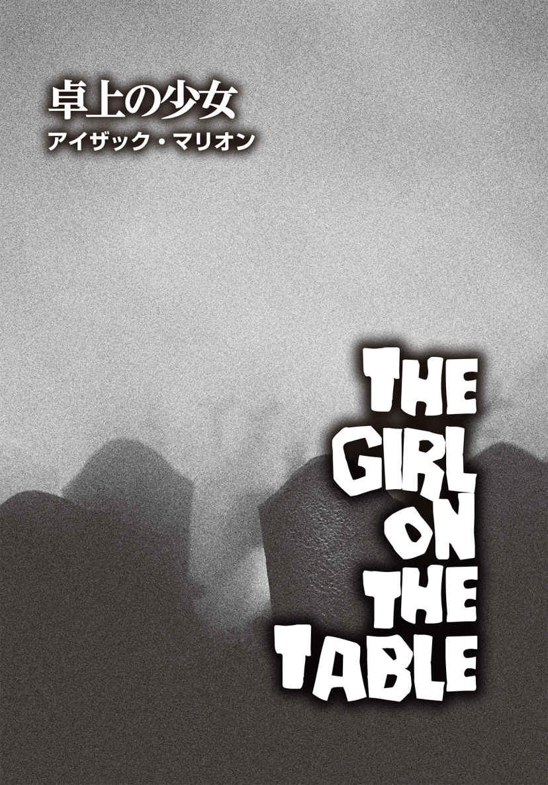
アイザック・マリオン
Isaac Marion
PROFILE
映画化もされた、ニューヨーク・タイムズベストセラー小説『ウォーム・ボディーズ ゾンビRの物語』（小学館 刊）は25ヶ国語に翻訳された。彼はシアトルで猫と植物とともに暮らしている。
Twitter：@issacinspace
見知らぬ誰かの家の地下室に、テーブルがひとつ置かれていた。その上には、少女が横たわっている。彼女は、どうしてこんなにも自分の何かがおかしいと感じているのか、その理由を探ろうとしていた。怪 我 をしているし、具合も悪い。だけど、他にも何かがある。身体は静寂に包まれていた。まるで細胞のひとつひとつが、これから始まる恐ろしいショーを待っている観客であるかのように。
両親の表情から、答えを探そうとした。全て──彼女の人生、命、両親が求めてきた全て──は父と母の手中にあるはずだ。だが、彼らの汗ばんだ顔のたるんだ肉に深く刻まれたシワには、なんのヒントも見出せなかった。母親は悲しげで絶望に暮れていた。父親は怒り、そして怯 えている。だが、普段からそうだった。
少女の腕には、ごっそりと肉が削 がれた箇所があった。青ざめた薄い皮膚の下、彼女の肉は鮮やかに赤かった。ほんの数時間前に母が用意していたロースト肉にソックリだ。母はワインを欲しがり、父はタバコが必要だった。ロースト肉を黒いマリネ液に浸しておく間、急いで買い物に出ようという話になった。
「私があなたのタバコも買ってくるわ」と、母は言った。「何も全員が店まで出向くことはないもの」
父は、テレビのニュース画面を眺めたまま立ち上がった。
「おまえをひとりで行かせたくはない」
彼はそう言って、妻の手から車のキーを取った。「世の中は狂ってしまった」
この男は、少女の父親だ。パパ、ダディ、お父さん。なんとでも呼べる。四十歳になったばかりだが、すでに老いは肉体を蝕 んでいた。頭は禿 げ上がり、猫背で、しかめ面 ばかりのせいか眉 間 には深いシワが寄り、空気が抜けた風船みたいに身体もたるんでいる。父はニュースを見るたびに、同じことを繰り返しつぶやく。ニュースの内容がなんであろうと──戦争であろうと、抗議デモであろうと、音楽やファッションの最新の流行であろうと──同じ言葉を言うのだ。
──世の中は狂ってしまった──
「ベイビー、靴を履 きなさい」
母は私を幼い頃から「ベイビー」と呼んでいる。
「家でお留守番してちゃダメなの？」
「ひとりでお留守番はさせられない」
父は首を横に振った。「おまえはまだ十四歳だからな」
少女はため息をつき、両親に従って車に向かった。太陽は沈みかけている。金曜日の夜か、と彼女はため息混じりに目を閉じ、ダンスに出かける自分を想像した。
もうどのくらいテーブルの上にいるのか、彼女には見当もつかなかった。時間は砂糖とバターと牛乳で作ったお菓子のトフィーみたいだ。夢の世界へ出入りすると、時は伸びたり、曲がったり、垂れ下がったりする。
昨年のニューヨークへの修学旅行では、七十人の生徒がスキューバダイビング用のタンクみたいなバスに乗って出かけた。ニューヨークの街並みが見えてくると、車内の空気は、圧縮された興奮そのものとなった。彼女は窓ガラスに顔を押し当て、流れる外の景色に見とれていた。キラキラと輝く高層ビル群は、無限の空間であり、果てしない可能性を秘めた場所だった。映画スター、株式仲買人、ダンサー、歌手、上院議員──憧れの職業を全部経験し尽くすには、三百歳まで生きなければならないだろう。
「ニューヨークなんて大都会は、人をめちゃくちゃにする。骨の髄まで運を搾 り取られ、しまいに排水溝に捨てられる。全くひどい場所だ」
少女が修学旅行からウキウキした気分で帰宅するなり、父がそう吐き捨てた。「凶悪犯や変質者の巣 窟 の水漏れがひどいゴキブリの住処 で暮らしたいのか？」
「ここの暮らしは退屈だもん。ちっちゃい町だし。私は世界に飛び出したいの」
「ねえ、ベイビー」
父が怒鳴り出す前に、母が横から口を挟み、私に話しかけた。「まだ、人生のことをあれこれ考える必要はないのよ。あなたはまだ小さいんだから」
意識はぼんやりとしたまま、過去の記憶から熱っぽく曖 昧 な夢の世界へと流れていく。オレンジ色と黒が混ざった、熱くて粘着質の何かが、齧 られてできたようなおなかの穴や口、指、歯にもベッタリとくっついていた。
「あのドアから板を外せ！」
「私たちはここに留まるのよ！」
少女は目を覚ました。彼らはまた怒鳴り合っている。恐怖によって誇張された過去の記憶。家では、抑制されてはいるが、冷笑や言葉の棘 から明らかな憎悪が感じ取れた。両親が煮立てるのを楽しんでいるかに思える、不幸の濃縮スープの匂 いが部屋中に充満している。今、この地下室にいて、彼らの精神的苦痛は沸点に達していた。少女が顔を向けるたび、二人の声が彼女を火傷 させた。
「自分が何をしてるかくらいわかってる！」
「こんな地下に閉じこもったら、事態がどうなってるか知ることができないだろう？」
少女の腕は痙 攣 し、胃が締めつけられた。夕食の時間はどのくらい前だったのか。数日？ それとも、数年前？ 母が作ったロースト肉は、今頃、蛆 やハエのごちそうになっているのだろうか。
誰も言葉を交わさぬまま、車はスーパーマーケットに向かっていく。ペンシルベニア州の長い直線道路は、通勤、通学はもちろん、教会へ通う人たちをはじめ、誰もが日々利用する生活道路だ。大きな岩、倒れた木など、安物の漫画の背景に出てきそうな同じ景色が延々と流れていく。父はラジオのスイッチを入れた。衛星が爆発しただの、宇宙からの放射線が降ってくるだの、どこそこで誰それが殺されただのと暗いニュースばかりが流れ、例の口癖がまた出た。
「世の中は狂ってしまった」
すると母が横から手を伸ばし、乱暴にラジオのつまみを捻 って放送局を変えた。
チューニングがうまくいかなかったのか、雑音しか聞こえてこない。しかし、その雑音はどこかおかしかった。いつもの海のうねりのような放出音ではなく、耳 障 りな低音がリズミカルに脈打っている感じだ。そう、暗闇に潜む怪物の心臓の鼓動みたいに。
「これはなんだ？」
父は眉をひそめ、バックミラーで後部座席の彼女を見た。「おまえたち子供が音楽と呼ぶものか？」
少女には、それが何なのかはわからなかった。自分が音楽と呼ぶものとは違っている。音のキーが高くなり、不快な金切り声同然になったので、母がスイッチをオフにした。
「ラジオで言っていた、放射線か何かかもしれないわね」
母は平然と言っているかに見えたが、後部座席から見ると、彼女のうなじの毛が逆立っているのがわかった。自分も同じ状態になっている気がした。それ以降、スーパーに到着し、ほぼ空 っぽの駐車場に車を止めるまで誰も口を利 かなかった。入り口近くで、買い物カートがひっくり返っていた。食料品があちらこちらに散乱し、踏み潰されている。ワインの瓶が割れ、歩道を赤く染めていた。
嚙 まれた傷そのものは、もう痛まない。全身を貫いていた焼けつくような熱は消え、全てが終息していくのを少女は感じていた。トイレにひとり閉じこもり、『ローリングストーン』や『コスモポリタン』など親から禁じられている雑誌を読むのに夢中になっていると、便器の蓋 の上であぐらをかいていた足が痺 れていることになかなか気づかない。その痺れに気づいたときの感覚に今はどこか似ている。彼女の神経の中で、無感覚と痛みが、パチパチと音を立てるテレビの砂嵐の白黒の画像のようにさざめき合っていた。ただし、今は足だけではない。身体中だった。
自分に何が起こっているのだろう？ 具合が悪いのは確かだが、それだけではない気がする。何かが己 の奥底から這 い出てくるような、骨の髄の小さな空洞から得体の知れないものが湧 き上がってくるような感じだった。怖いと思う反面、ワクワクもしていた。理由はわからないけれど──。
「金曜の夜なのに......」
母は駐車場を見回して首を捻った。「みんなどこにいるのかしら？」
「空 いてて良かったじゃないか。レジで並ばないで済む」
父は母とは反対の方向に顔を向けて言った。
少女は、ワインの小川がゆっくりと舗道を流れていくのを目で追いながら、「お店、閉まってるかも」とつぶやいた。
「閉店はしてないわ。電気が点 いてるもの」と、母。
少女は車の窓越しに店内を見やった。螢光灯がかすかに点滅している。汚れたスーパーのガラス窓の奥で、曖昧な輪郭の影が蠢 いていた。
「車で待っててもいい？」
彼女の問いに父親が即答した。
「もちろんダメだ」
「ベイビー、あなたも一緒に来るのよ」
母親が肩越しに言った。「お菓子を買ってあげるわ」
少女は気乗りがしなかったが、言われた通りに車から降り、両親に従って店の入り口へ向かった。店のガラス窓の向こうで何かが動いている。青白い光の中、複数の頭と肩、ぼやけたシルエットが見えた。買い物客？ だが、動き方がどこかおかしい......。
「なんて散らかりようだ！」
転がっているカートや散乱するゴミをまたぎ、父は顔をしかめた。「掃除が行き届いてない。食品を扱う店のくせに！」
彼は文句を言いながら、ドアの前に立った。自動ドアがスライドして開くなり、彼はしゃべるのをやめた。
〈ハイズマン・グローサリー〉は、こぎれいで静かな町のこぎれいで静かなスーパーだ。そして、少女はここに来るのが大嫌いだった。何もかもが常に同じなのだ。スピーカーから流れる音楽も、床でモップがけをしている少年も、レジ打ちの男性もいつも同じ。彼は、どの客にも同じように声をかける。まるでロボットがプログラムされた挨拶を反復しているみたいだった。
ご機嫌いかがです？ ご機嫌いかがです？ ご機嫌いかがです？
このスーパーは本も雑誌も売っていない。新聞すらないのだ。前からそうだった。この店は、テレビの砂嵐の画面と同じだ。いつ見ても何も変わらない。
それゆえに、店内に死体を見つけて急に少女が笑い出したのは、それが普段とは全く違う光景だったからだ。店内の変化と自分の反応に、彼女自身も少し驚いていた。その笑い声は、誰かに突然突かれて口から出てしまった金切り声に近い。説明するのが難しいのだが、脊 髄 をゾクゾクした何かが駆けめぐったのだ。恐怖ではなく、ワクワク感というか、ほとんど性的興奮ともいえる感覚だった。おそらく、秘密の扉を抜けて秘密の世界を見つけたときの気分に似ている。
死体は、外に転がっていたカートと同じく、ひっくり返って動かなかった。白いタイルの床に弛 緩 した腕がだらしなく伸びている。店の外では、無残に踏み潰されたトマトや鎖状につながったソーセージが散乱していたが、店内では、死体の内臓が同じように散らばっていた。舗道に広がる赤ワインのように、白い床は赤く汚れていた。どこもかしこも真っ赤だった。しかし、気持ち悪い大量の肉片には一 瞥 を投げただけで、少女の関心は、死体に群がりうずくまっている人々に向けられていた。彼らは肉を手で引き裂き、歯で嚙みちぎり、骨をしゃぶっている。彼らが少女を見た。虚 ろで濁った目。そんな目は、これまで見たこともない。目は口ほどにものを言う。目には、几 帳 面 で礼儀正しい性格や揺るぎのない決意がにじみ出る。目は、苦痛を伴うほど抑制している日々や苦々しく屈服した辛 さなどを物語る。ところが、彼らの目からは何も伝わってこなかった。純粋で、努力の跡もない、全く悪びれない存在。ちょうどぬるま湯が勝手気ままに床を流れていく感じだ。
彼らは立ち上がり、少女へと向かってきた。彼女は大胆にも彼らに挨拶をしたい衝動に駆られた。
こんにちは。あなたは誰？ どこから来たの？ ここで何をしているの？
突然、腕に痛みが走った。父の指が腕の肉に食い込み、彼女は無理やり車まで引きずられていった。母の叫び声が聞こえる。車のキーを探しながら父が悪態をついている。顔が灰色の人々が店からぞろぞろと出てきて、駐車場に広がっていく。父が少女を車に押し込み、エンジンをかけて急発進し、タイヤが地面に擦 れて音を立てた。スピードを上げた車が左右に曲がるたび、彼女は座席を転がり、窓に頭をぶつけた。シートベルトをせずに乱暴な運転の車に乗ると、こんな状態になるなんて知らなかった、と車内で揺さぶられながら彼女は思った。そのときだった。父が滅多に口にしないような罵 りの言葉を発し、バキバキと何かが壊れるような音が鳴った。それと同時に、少女は前の座席に思い切り体をぶつけた。
エンジンがシューッという音を立て、車体が激しく前後に揺れた次の瞬間、車の窓ガラスに無数の灰色の顔や手がベタベタとへばりついた。窓ガラスに大きなヒビが入り、ヒビはどんどん広がっていく。感情のない灰色の人たちの群れは、教会の信徒のような静穏さを伴いつつ、暴動を起こしていた。後部座席でひっくり返っていた少女が顔を上げるや、窓が割れ、何本もの手が少女に摑 みかかってきた。腕を強く引っ張られた彼女の顔の前に、血だらけの口が迫っていた。
くぐもった複数の声が聞こえていた。頭上のどこかで誰かがしゃべっている。この地下室はどのくらい地下深くにあるのだろう。自分の周りに地面の重さ、冷たさ、厚みを感じる。それは生きているかのように、這い寄ってくる。少女は身体が沈んでいく感覚を覚えていた。
雑音が耳にあふれ込み、彼女はハッとした。途端に意識が上層──曖昧な世界との境界──に急激に浮かび上がり、戦 慄 とともにパッと目を開けた。しかし、まぶたは重くたるみ、再び閉じてしまう。とても開けてはいられない。あの不気味な心臓の鼓動にも似た拍動は、話し声の中に消えつつあった。両親のとげとげしい口論や母のすすり泣きではない。テレビから流れてくる低音の大声だ。自分の疑問に対する答えは、その声にあるはずだ。少女は聞き耳を立てたが、何を言っているのか簡単には理解できそうもない。彼らは外国語を話しているのではないだろうか。自分が少しだけ齧ってみたものの、ほとんど習得できなかった言語を。地面というフィルターを通して聞こえてくる単語は不明瞭で、途切れ途切れだった。
立て。殺せ。葬式の時間はない。家族を焼いてしまえ。
少女はテーブルの上で身 悶 えしていた。拳 を握りしめ、頭の中からこの夢を押し出そうとした。
外 宇 宙 。金星。家族を焼いてしまえ。
発作的な痛みに襲われ、全身が震える。彼女はひどく空腹だった。夕食の時間からずいぶん経 っている。マリネ液が浸透した生肉の分厚い塊 を指や歯で裂くと、汁がポタポタと落ちて──。
「ベイビー、ママよ」
少女は目を開け、頭の中にある何かから逃れようとした。母の顔が広大な惑星みたいに覆いかぶさり、こちらを見つめている。今しがた産んだ赤子を胸に抱いてあやしているかのような笑み。うんざりするような優しげな笑顔。
「この子は私の全てなの」
薄暗い地下室にいるどこかの誰かに、その女性は話している。彼女が自覚している以上にグロテスクな真実を。全てを投げ出し、自殺するのだと。娘が死ぬ瞬間、彼女は娘から吐き出される息を吸い取るのだろう。少女は母を憎んでいる。この女が大嫌いだ。彼女を傷つけたい。それよりももっと──。
いや。
そうじゃない。
涙がまつげを濡 らしていく。なんでそんな考えが頭に浮かぶのか？ 彼らはどのくらいそこにいるのだろう？
少女は母に警告したかった。自分が彼女を傷つけたいと思っていることを。逃げてと伝えたかった。だが、言葉は喉から出る前に全部溶け落ち、考えは粉々に砕け、記憶は黒く塗り潰されていく。意志の最後の瞬 きとともに、彼女は懸命に内側の静 謐 な場所から声を引きずり出した。そして、ささやいた。
「痛い......」
少女が赤ん坊だった頃、彼女は電気柵に触ったことがあった。ごく幼かった頃の記憶といえば、それだけだった。鋭い電気ショックは霧がかった幼少期の思い出を切り裂き、永遠に焼き切ってしまったのだ。痛かった。だが彼女は、それ以来の、それ以上のひどい痛みを感じていた。自転車でスピードを出し過ぎて転び、膝を深く切ったことも、木から落ちて足を骨折したこともあったが、比較にはならない。しかし、彼女が電気柵に触れたとき、痛みは一瞬で身体から抜けていった。神経の中でパチパチと音を立てるような何かを感じたが、それは初めての経験だった。赤子の脳は、そのような痛みがあり得るなど思いもよらなかった。
逆さまになった車で、一面のダイヤモンドみたいなガラス片に覆われて仰 向 けになっていたとき、灰色の顔の男が彼女の腕を嚙んだ。彼女は再び、想像し得る全てを超絶する体験をした。
あり得ない痛み。こんなのどうかしている。傷の状態とあまりにも不釣り合いだ。男の歯がわずか二センチちょっと肉に食い込んだだけなのに、電気が走り、毒が回り、真っ白になるまで熱した焼きごてを当てられたかのごとく熱かった。痛みは全身を貫き、骨はひび割れ、筋肉はパックリと裂けた。張り詰めた神経は乱暴に引っ張られて激しく搔 き鳴らされ、鳥肌が立つほど不快な不協和音が脳内に響いた。
彼女は甲高い声で叫んだが、実際はなんの音も出せなかった。おそらく五秒ほどの間、彼女は声にならない声で悲鳴を上げ続けていた。目玉は膨張し、喉が緊張する。そして、痛みは唐突に止まった。身体中の痛みが、傷口から逃げ出していった。両親が少女を灰色の人間の群れから奪い返したときには、鈍い疼 きだけが残っていた。
彼女が誰かの家の芝 生 にうつ伏せに倒れるまで、父も母も娘が負傷していることに気づかなかった。横たわりながら、少女は思った。口の中が汚れている、と。舌の上でミミズがのたうち回っているみたいだ。そして、腹が鳴った。猛烈な空腹感を覚えていた。
時は柔らかくとろけるトフィーと同じ。歯にくっつき、喉に垂れ下がり、彼女の中で過去と現在がねじれていく。だが、時は甘くはない。地上の怒鳴り声や悲鳴が聞こえてきた。自分の父ではない男性が、自分の母ではない女性に怒号を上げている。少女は彼らの顔を想像しようとした。最初は太陽の光に晒 されている顔を。次に月明かりに照らされている顔を。それから、暗闇の中に沈んだ顔を。ガラスが砕ける音や、猛烈な勢いで火が回っていく音も耳に届いた。恐怖が鋭い刃 となって、彼女の脳に突き刺さる。しかし、少女は泣き出さなかった。母の助けも呼ばなかった。そういった子供としての本能が、熱の中でどんどん炭化していくのを感じていた。
またガラスが割れた。別のところで炎が燃え上がっている。テーブルの上の少女は身震いした。
なぜ火が怖いのだろう？ 火傷したことなんてないのに。よくある怪我のひとつだが、彼女は経験していなかった。それでも、脳の表面近くで理性的思考がざわつくのを感じる一方で、より深層部のどこかでは不安を覚えている。その暗がりの奥底──走って体当たりしろと促し、戦えと煽 り、食って、ファックして、子を作れとけしかける言葉など必要のない場所──そんな原始的な欲求だけが渦巻く巨大な空洞で、彼女は他の何かを感じていた。
起き上がれ。立ち上がれ、と。
外でとてつもない大きな音が響いた。爆発だ。火だ。炎が上がっているのだ。人間を、森林を、世界を死に追いやる、恐ろしい紅 蓮 の神。彼女の恐怖は膨張し、金切り声となって体外に飛び出したが、その中で、彼女の聴覚は柔らかな何かを捉 えていた。弱々しく悲しい声。小さな女の子の声だ。脳内を覆い尽くそうとしているジャングルの中で、その子はたったひとりぼっちだった。
私は死にかけてるの？
上階で、誰かが叫び、小 競 り合ったりしているのがわかった。口汚く罵り、ハンマーで木を激しく叩 いている。
これで私の人生は終わり？
銃声。悲鳴。支離滅裂な騒音。悪夢。卓上の少女はのたうち回った。
両親はこんな人生しか私に与えなかったの？
外からうめき声が聞こえてくる。少女の両親ではない。父母と一緒になって怖がっている知らない人たちでもない。何十人もの声だ。いや、何百人かもしれない。彼らの唸 り声は火に搔き消され、彼女の恐れの中で打ち消されていく。彼女は身悶えするのをやめ、静かになった。深い静けさが波のように彼女の身体に押し寄せた。発熱時に水風呂に浸 かったときと同じで、あらゆるざわめきが穏やかに鎮まっていった。
しばらくの間、少女はそこで横たわっていた。もう何も聞こえない。なんの考えも浮かばない。心の中の灰色の薄明かりが完全な漆黒の闇と化すと、星が現われた。無数の小さな光が脳内を埋め尽くしていく。月はない。だが、火星は見える。金星も見えた。手足に奇妙なハミングの音楽が流れ、空っぽの身体が活力と目的で満たされていった。
階段で足音がする。それが自分の足音だと想像してみた。だが、彼女は上っているのであって、降りているのではない。これから上に行こう。自分の中で生まれた活力と目的が、彼女を突き動かしていた。
彼女は上半身を起こした。
床には男性がいた。生命の塊が、使われぬまま横たわっている。ならば、と彼女はそれを受け取ることにした。それはグーグーと鳴る腹の中へと滑り落ち、骨を鳴らしながら、彼女の全身に広がっていく。強さがみなぎってくるのがわかった。思考も明 晰 になってきた。彼女は空腹を感じていた。腹だけなく、手足、歯、胸、性器、あらゆる臓器が飢えていた。疑念や不安から解放された、執 拗 な欲求だった。
ひとりの女性がぼんやりと階段を降りてきた。頭を左右に傾け、少女の方に移動してくる。「ベイビー、かわいそうなベイビー」とつぶやき、にやついたり、すすり泣いたりしながら。彼女のどこかが嫌悪感とともにズキズキと疼いた。こんなに震えるほど困惑し、葛藤しているのはどうしてなのだろう？ ここに来るまでにこの女性はあらゆることをしたのだろうが、そこまでしてここに来た理由はなんだろう？ 〝選ばない〟という選択肢もあったはずなのに、この女性はどうしてわざわざ望んでいない方を選んだのだろう？ なぜこの女性は両手を広げ、〝消耗〟されることを請いつつ、よろよろとこちらに向かってくるのだろう？
この女性の何かがおかしい。彼女の肉に宿る命は汚れてしまっている。少女の飢餓感は歪 み、怒りと憎悪に変わっていった。
この女性を殺そう。そうする必要がある。しかし、少女はこの女性を食わなかった。全く手をつけずに放置した。少女の心のひだの一本一本に根や枝を張るジャングルのどこかで、小さな声がこれを「優しさ」と呼んだ。これぞ他の何かになるチャンス。最終的に強くなる好機だ。
少女は階段を上っていった。
上階で待っていたのは、これまで見たこともない男性だった。少女が近づくと、彼は逃げ出し、地下室に隠れた。だが、上階には彼だけではなく、他の者たちもいた。ものすごい数だ。そこに彼らがいるのは感覚でわかった。嗅覚、聴覚、触覚で感じ取った。あらゆる人々の骨の中にその感覚は潜んでおり、表面へと湧 き上がる機会を待っている。
少女は地下室のドアを叩くのをやめ、ゆっくりと方向を変えた。彼女は見知らぬ者たちに囲まれていた。群衆の中にいるひとりの少女。誰にも目をかけられず、誰にも守られていない。だが、何も恐れていなかった。彼らのうめき声が聞こえ、その中に混じる自分のうめき声も聞いた。今や、宇宙全体がうめき声を上げている。音のない空間の惑星の聖歌隊。惑星の背後に広がる暗黒世界で唸りを上げるバスパート。彼女の頭の中のジャングルに響き渡る咆 哮 。少女は他の者たちの目を覗 き込んだ。そこにあったのは、彼女が以前見たもの──純粋で正直な、あらゆる束縛を解かれた存在──だった。生命よりも古くからある原始的な真実。そして今、彼女はそれが何なのかを知った。
少女と彼女の新しい家族は、家の外へとそぞろ出た。街路へと。世界へと。
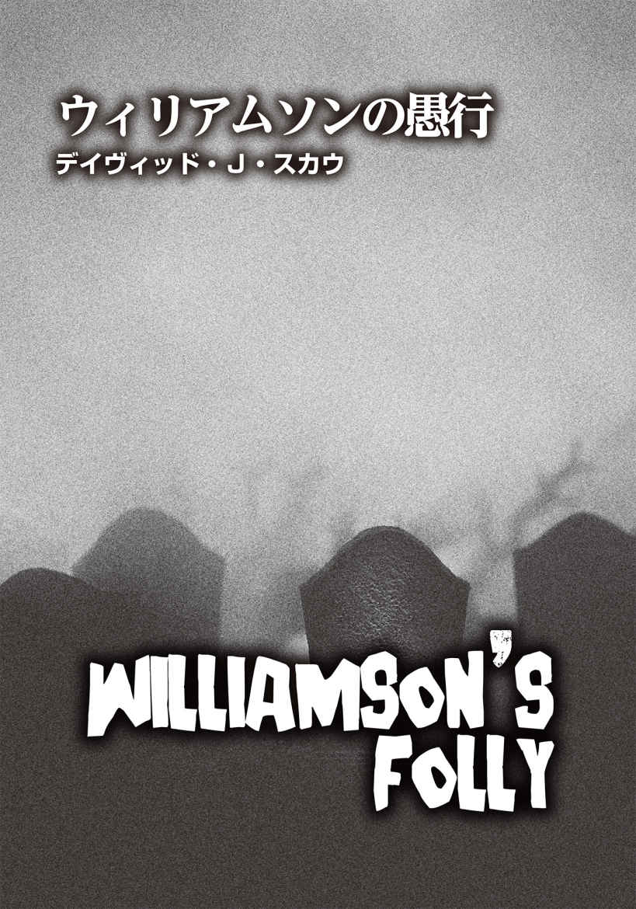
デイヴィッド・J・スカウ
David J. Schow
PROFILE
ロサンゼルス在住の小説家。最近は、ハードボイルド小説『The Big Crush』や9編の短編小説を集めた『DJSturbia』を上梓。映画『悪魔のいけにえ3／レザーフェイス逆襲』（1989）、『クロウ／飛翔伝説』（94）、『ヒルズ・ラン・レッド─殺人の記録─』（09）や、テレビシリーズ『マスターズ・オブ・ホラー／ハンティング』（05）、『アイスクリーム殺人事件』（07）、『Mob City』（13）の脚本を務め、『The Art of Drew Struzan：ドリュー・ストルーザン ポスターアート集』（ボーンデジタル 刊）『The Outer Limits at 50』といったノンフィクション小説も手がけてきた。また、『大アマゾンの半魚人』から『サイコ』『アイ，ロボット』まで、幅広い映画の解説者として様々なDVDにも登場している。彼のおかげで、「splatterpunk（スプラッターパンク）」という言葉が、2002年からオックスフォード英語辞典に載るようになった。邦訳に『狂嵐の銃弾』（扶桑社 刊）、本書にも執筆しているジョー・R・ランズデールの作品を含む、映画ホラーアンソロジー『シルヴァー・スクリーム』（東京創元社 刊）などがある。
Twitter：@DavidJSchow
外 宇 宙 からの物体は、夜に紛れてやってきたのではない。マッチ棒を星の瞬 く黒い空に擦 りつけたみたいに、大気圏に突入して焼け焦げ、人里離れた農場に落下してドロリとした液体を吐き出したりもしなかった。そうではなく、ランチタイムの直後、巨大な丸い弾丸のごとく、下層雲の厚い塊 に穴を開けたのだ。それは、Ｖ１飛行爆弾の甲高い音とともに落ちてきて、ヘンデルメイヤー金物店の屋根を大破させ、四番通路（ガーデニング用品売り場）のほとんどを破壊した。さらに、ファースト・フェデラル信用金庫のレンガの壁も粉砕した。金庫室の東壁が凹んだものの、レイヤースチールと強化コンクリートに挟まれた壁に穴が開くことはなかった。二部屋の金庫室の中身と、ネブラスカ州の小さな街ウィリアムソンの人口の約三割の蓄えに損害は出なかった。幸い、ヘンデルメイヤー金物店の三番通路（ペット用品売り場）で七キロ近い鳥の粒 餌 の袋を落とした拍子に足首をくじいたと主張するアルマ・ティートルを除けば、被害者はいない。地元紙『スター・レジャー』のオルニー・ストラッツ記者が、すぐさま「そしたら屋根が割れて、この世の終わりみたいな音が轟 いたの」という彼女の言葉を記事に引用した。彼女の写真が、この地味な地方新聞に載るのは七度目だった。彼女は自然観察ハイキングの企画をしたり、行方不明のペットや動物の権利に関するパンフレットを作ったりしている。シドンズ通りに建つ彼女の自宅は古い木造家屋だが、無許可で野生動物を飼っていることで有名だった。彼女はいつも猫の尿の臭 いがし、落ち着きのない変わり者だった。
正式に選任され、ウィリアムソンに配属された公安職（保安官と保安官補）は、全部で五人。オルニー・ストラッツは、前代未聞の日々の特別版にふさわしい紙面にするべく、彼の言う〝壊滅状態〟の写真を山ほど撮影した。『スター・レジャー』は、人口二万五千人の街で唯一生き残っている新聞ゆえ（オルニーによれば、『バルジ』紙は一九六五年に廃刊となったが、ライバル紙がなくなったのはよかったということだ）、この話は、オルニーの妻エマリーンが喜んで通信社に売り込んだスクープだった。オルニーの鋳造植字機 職人兼印刷責任者で六十七歳のジョン・〝ブラックジャック〟・マコーミックは、残業も厭 わないベテランだ。このスクープネタを得るまで、次の版の見出しは、ウィリアムソンの商業地域の中心部街、メイン通りとグランド通りの交差点──街で最多（四つ）の信号機があることでお馴 染 み──に真新しいゴミ箱が設置されたことを知らせるものにする予定だった。
農用地に囲まれていることの利点として、ウィリアムソンは小規模ながらもユニオン・パシフィック鉄道の拠点駅となっていた。運搬される主な畜産物や農産物は、牛、子牛、大豆、乳製品、小麦など加工が必要なものだった。牛のほとんどは、街の中心部から南西に八キロ離れた場所にあるケンドリック・ミートという大きな食肉加工工場に直接運ばれていく。また、ネブラスカ大学工業農業カレッジは、頻 繁 にウィリアムソンで野外調査を行っている。
東部の郊外住宅地は、石を投げれば退役軍人に当たると言えるほど、元軍人の住民が多かった。その多くが、現役時代はミサイル格納庫で働いていたらしい。ハムブリッジは、ウィリアムソンに最も近い隣町だが、それでも四十キロ離れている。商工会議所（のライル・ウィットワー）は、ウィリアムソンを〝豊かな自然と静穏に包まれて暮らす街〟と銘打ち、州都リンカーンといった大都市の騒音とは無縁な住処 を探している人々に熱心に売り込んでいた。こんなウィリアムソンの経済は、ジョセル・ターナーが朝食付きの宿を経営して生計を立てるのに十分活気があった。
平和な田舎町といった印象のウィリアムソンだったが、この日、〝地元の科学者〟のひとり、マニー・ステックラー医師の電話がけたたましく鳴る事態が起こることになる。
ステックラー医師がウィリアムソンに移り住んだのは、十年前の一九五八年。彼はすぐに街の内科医で協同組合を作った。米国のこの地域における同様の組織としては、最も早い時期に作られた団体だろう。そして彼は、二年後にウィリアムソン総合診療所を創設する。同診療所の開設は、全住民に好意的に受け入れられたようで、ステックラーの当時の革新的なモデルは、同規模の他の街──とりわけ、完全設備の大病院を持てない市町村──で次々に真 似 られた。それゆえ、ジョセフ・ディレイニー保安官が大急ぎでステックラー医師に電話したのは、至 極 当然の成り行きだった。ステックラーは、広い意味で、ディレイニーが新たに必要とする〝エキスパート〟に十分近かったのだ。保安官はオルニーの取材を受け、テープレコーダーに「アルマ・ティートルさん以外、負傷者がいなかったのは奇跡です。どうぞ落ち着いて。調査は続行中ですので」というコメントを録音させた後、すぐに保安官事務所の受話器を摑 んだのだった。
電話口のディレイニーは言った。
「このような事態には、先生の専門的知識が必要になるんですよ。時間はそんなに取らせません。コーヒーをおごりますよ」
これはうわべだけの社交辞令ではない。ディレイニーは、家庭的な雰囲気の小さな街らしい誘い文句として、コーヒーをおごると申し出る。それは、「ここだけの内密な頼みなんですがね」という含みを持つ。
彼はグランド通りの二件の店をひいきにしていて、普段、ウィンクと笑顔でタダでコーヒーを飲ませてもらえている。もちろんお代わりも自由だ。だがのちに、このコストを、コンサルタント料金、交際費などの名目でしっかり経費として計上し、確定申告に有利に働かせるのも怠らなかった。
とにかく、ダイアン・クリスペン・ダイナーのコーヒーは最高だ。
ディレイニーが電話したとき、ウィリアムソンでの最近の死亡者数は九人だった（ちなみに、ウィリアムソン高校の入学者数はわずか三百六十人）。その九人のうち六人の遺体は、ウィリアムソン総合診療所の地下にある死体安置所に置かれていた。
総合診療所で冷温保存されている六遺体の身元は、以下の通り（年齢の高い順に列記）。
エレノア・〝ハッティー〟・ブレイナード（92 ） ：自然死（心筋梗 塞 ）。八人の孫を持つ女性で、夫ケネスより十余年長生きした。彼らは、この地域で黙認されていた白人と黒人の夫婦三組のうちのひと組。他州から移り住んできたときには、二人はすでに結婚していたので、他人があれこれ詮索することはあまりなかった。しかし、常に話題の種にはなっていた。
チャールズ・リー・〝チャック〟（あるいは〝チャンピオン〟）・グリーン（81 ） ：自然死（慢性閉塞性肺疾患で睡眠中に死亡）。愛妻家で、双子の子供を持つ愛情深い父親。彼を悪く言う者は皆無だが、彼に対する褒め言葉は曖 昧 なものばかり。その実、彼が戦時中に海軍で働いていたこと（どの戦争かは不明）、一日に四箱を吸うヘビースモーカーであること以外、彼自身に関する真実は何ひとつとして知られていない。
ポール・〝ソニー〟・ブリックランド（50 ） ：基本的には酒の摂取過剰で死亡。大腸ガンが発見されてちょうど五ヶ月後のことだった。それ以前はレスター・コリンズの大豆農場で住み込みの機械操作の仕事をしていた。住んでいたのは、家賃がタダとはいえ、巨大な農地の外れにある送水ポンプのそばで、屋根はタール紙という掘 建 小屋だった。ポールは生前、「飲んだくれの俺が死んでも、身体が相当アルコール漬 けになってるから、数ヶ月は腐らないんじゃないか」と冗談を言っていた。
ジェイソン・アラン・ローウェンズ（34 ） ：偶発事故（自動車事故）死。カスター郡では最大のクライスラー自動車販売代理店の地域責任者だった彼は、妻に会うため、夜間に車を飛ばしてリンカーンへ戻る途中に事故に遭 った。運転中のいねむりが原因で、愛車の一九三五年型フォード製ウッディワゴンは発電塔に正面から激突。彼も車も黒焦げになった。『スター・レジャー』の読者の多くがこの不幸な記事を読んだ際、ローウェンズがクライスラー製の自動車に乗っていなかったことに注目していた。
ドロレス・アン＝マリー・ウィテカー（旧姓コリンズ）（32 ） ：閉塞性分 娩 により出産時に死亡。満を持 して成功した計画妊娠だったものの、母子ともに命を落とす結果に。赤ん坊は女児で、チェリー・キャメラという名前が付けられる予定だった。ドロレスは自宅出産にこだわっており、救急車が農場の母屋に到着したとき、彼女の夫のブライアンもそばにいたが、室内はすでに血の海になっていた。
チェリー・キャメラ・ウィテカー（０）： 分娩時胎児死亡（死産）。
この六人以外に、ウィリアムソンでごく最近亡くなった次の三人は、ディレイニー保安官にも『スター・レジャー』にもまだ報告されていない（死亡順に列記）。
アリソン・ロベルタ・〝ミンクス〟・マンクス（22 ） ：かつて、ウィリアムソン高校チアリーディングチームのキャプテンを務めていた。先週の水曜に、恋人のキャメロン・〝チップ〟・ジャクソンに首を絞められて死亡。チップは、ウィリアムソン高校在籍中にアメフトチーム〝コルセアズ〟のフルバックとして活躍していた。原因の論点となるのは、金銭問題（彼らは金に困っていた）、浮気の有無（どちらが誰と浮気していたかは未確認）、薬物絡み（複数の覚せい剤使用の可能性あり。金に困窮し、入手量が減少し、二人で分け合う際に揉 めたとも考えられる）の三点だ。チップは、自分が悪いのではないと強く主張。口論がエスカレートした結果、一時的な衝動に駆られてやってしまったとのこと。激しい怒りのせいで、彼女を黙らせるのに有刺鉄線で首を絞めざるを得なかったらしい。殺害時に性的興奮を覚えて勃 起 したことに関して、チップはさほど動揺しなかったという。パニックが収まった後、彼はアリソンの死体をピックトン小麦畑の奥に隠している。死体処理という点で、ケンドリック・ミート食肉加工工場の施設を利用することも頭によぎったものの、アリソンをミンチにするのは選択肢になかったとチップは言っている。しかし、その時点ですでに月曜になっており、彼はなんらかの行動を起こさざるを得なかったという経緯のようだ。
リチャード・〝ラムセス〟・カバーデール（15 ） ：学校の成績が思わしくなかったリチャードは、父親に折 檻 される前に父親を殺してしまおうと思いついた。そこで、父のサベージ社製の水平二連式散弾銃を利用することにした。常に弾が入っていることをリチャードは知っていたからだ。もっとも、その散弾銃に限らず、彼の家にある全ての銃は、いつでもすぐに使えるようになっていたのだった。父親は日頃から、「大体、誤って自分を撃ってしまう事故は、銃に弾が入ってないと勘違いするために起こる。最初から弾が込められているとわかっていたら、取り扱いに注意するから、間違って自分を撃つなんてバカげた事態にはならない」と言っていた。ところが、使い古した引き金が錆 びついていたせいで、そのバカげた事態が起きる。リチャードがケースから散弾銃の銃身を摑んで引き出した途端、運悪く銃口が彼の方を向いていたため、左側頭部が霧状になって吹き飛んだ。あまりにもあっという間の出来事で、リチャードは発砲時の火花すら見ることもなかった。
ロレーナ・ダーリング（44 ） ：全く思いがけなく、脳 動 脈 瘤 破裂で自宅にて死亡。食後の一服として大麻を吸いながら、片栗粉を使い過ぎたアップルパイの大きな切れ端 にフォークを刺し、冗談を言って大笑いした瞬間のことだった。彼女と一緒ににぎやかなディナーを楽しんでいたのは、事実婚の相手バディ・ラウルズ。ロレーナは彼と小さな下見板張りの家に同居していた。五エーカーある敷地のほとんどがジャガイモ畑で、控えめな温室が二つ建っていた。他の植物を育てて多少カモフラージュはしていたもの、二つの温室は大麻で占められていた。同居人はバディの他に、バディの兄ベルナルド、ベルナルドの恋人タミー、そして表向きはケルサワニという名前の自称〝教 祖 〟。バディとベルナルドが全く新しい身元を手に入れることに成功した（それゆえに徴兵も逃れられた）二年後、皆はここに流れ着いた。彼らはキャンプファイアーを囲んでギターを弾き、高品質の大麻をウィリアムソンの非行少年や犯罪者に売りさばき、自分たちが真の〝水瓶座の時代 〟のサイケデリックなドラッグの達人だと夢見ていたのだが、それが厄介な問題を引き起こす。ケルサワニは、ロレーナの予期せぬ死の美しさが政府機関の介入によって汚されてはならないと主張した。彼女は、他人の人生の手引書の内容を模倣したやり方ではなく、彼ら自身が作り出した慣習と儀式に従って、浄化され、崇拝され、賞賛され、きちんとこの土地で母なる地球に戻してやらねばならないと言い張ったのだ。この月曜日、外された居間の扉の上にロレーナは裸足で横たえられ、全身にパチョリの精油を塗られ、野草で囲まれた。だが、ロレーナの遺体が臭い始め、タミーが誰かまともな大人を呼んだらどうだと口にしたので、ベルナルドはもう少しでタミーに平手打ちを喰 らわすところだった。しかし、彼は十分わかっていたのだ。死亡後二十四時間死体を隠し続けると、軽犯罪と重犯罪の中間くらいになることを。死亡届未提出、死体処理届け未提出、そしておそらく、少なくとも死体冒 瀆 の罪で。
「とはいえ、罪になるのは、俺たちが捕まった場合の話だ」
バディは強い口調で反論し、タミーを黙らせた。「俺たちがやっていることは、たぶん合法ではないが、だからといって誰にも迷惑をかけてはいない。制限速度を超えて運転するのは違法なのに、みんなやってるし、やったところで何か起こるか？ 普通は何も起こらない」
「おそらく、アメリカのものだ」と、ステックラー医師は言った。
ディレイニー保安官の部下が黄色い規制テープを張り、立入禁止区域を設定していく。その傍 らで、ブライス・ヘンデルメイヤーは自分の店の被害状況に目を丸くし、オルニー・ストラッツに愚 痴 をこぼしていた。オルニーの妻エマリーン（ネブラスカ大学アメフトチームの元マスコットガールで、現在でも街ゆく人々を振り向かせるほどの美貌の持ち主）も新聞取材の手伝いという名目でやってきていた。おそらく、夫は地元で有力な新聞記者だと自慢したいのだろう。もしこの一件が、政府が絡んだ謎の飛行物体とか極秘宇宙計画の類 であるならば、よその記者たちが飛びつきそうなネタで、すぐさまこぞってウィリアムソンに雪 崩 れ込んでくるはずだ。彼女は入手したばかりの情報とオルニーの最新の未現像のネガを持って、『スター・レジャー』のオフィスに急いだ。
ディレイニーの部下の助けを借り、ファースト・フェデラル信用金庫は、「不測の事態により臨時休業します」という張り紙をドアに張り出した。信用金庫のトミー・タイ部長は、イラつく客にいちいち壁に開いた穴について説明するのは時間の無駄だと考え、その日は閉店時間を繰り上げ、従業員を早退させることにしたのだった。三十分でディル・バレットのトラックが到着し、日没前には元通りの壁に修復されるだろう。ディルは実に腕のいい職人で、レンガとモルタルの最適な配分、旋 盤 としっくいと未加工の材木の相性を知り尽くしており、まさにその技は禅の美学に通じるものがあるくらいだ。
ステックラー医師は、診療所からガイガーカウンターとラテックスの手袋、様々な道具類を持ってきていた、ガイガーカウンターは少なくとも十五年前の装置で、ハロゲン管タイプのものだ。ステックラーを見ていて、ディレイニーはふと思った。性格俳優とでも呼べばいいのか、ヒーローではなく、ヒーローの友だち止まりのキャラや、いい奴 なんだが、映画開始十分後に殺される類のキャラを演じる俳優のようだと感じた。印象的な髪型、淡いブルーの目。大きくて静脈が浮き立った、いかにも器用そうな手。太いフレームのメガネ。並以上の容姿で魅力的なのだが、あと一歩のところで主役級ではないのだ。
ステックラーの方は、ジョセフ・ディレイニーを、まさしく田舎町の父親像そのものだと思っていた。理想体重より十キロはオーバーしている体格だが、筋肉質で、制服のワイシャツはいつもきちんと糊 づけしている。前髪は後退しているものの、その知性は衰え知らずだ。愛着を込めて、心の中では〝勇敢なハゲ〟と呼ぼうか。話し合いを重視し、暴力を極力振るわずに解決しようとするその姿勢は、良心的な保安官にはうってつけだ。
「放射線は検出されてないですよね？」
ディレイニーの問いかけに、「ああ、検出されていない」と、ステックラーは同意した。「今のところ、君が意味する危険な放射線とやらはね。装置からクリック音がしても、心配する必要はない。これは、アルファ線、ベータ線、ガンマ線といったイオン化放射線をも検出するんだ。クリック音の数は、イオン化事象が検出された回数になる。わかったかい？」
そう言って、ステックラーは装置の目盛りを保安官に見せた。「放射能汚染で巨大化したアリが襲撃するなんてことにはならないよ」
ディレイニーは眉 間 にシワを寄せた。ステックラーは自分をからかっているのか？ 都会から来たこのインテリ医師が、田舎者だとこちらをバカにしているのなら、イソップ寓話の『田舎 のネズミと都会のネズミ』を引き合いに出して、説教してやりたくなる。
「心配は無用だ」
ステックラーは、ディレイニーの内心など知らずにさらに畳みかけた。「暗闇の中で、私たちが光り出したりすることにもならない。だが、この粘着質の液体は拭き取り、少しサンプルとして袋詰めしておきたい。念のためにね」
「念のためにって、どういうことです？」
「宇宙船が地球帰還時に超高速で大気圏に突入すると、かなりの高温になる。なんでも、摂氏千六百度以上になるとか。だから、この小さなカプセルだか、宇宙探査機だか、とにかく地球の外からやってきた物体は、超高温で滅菌されていることになる」
「なるほど。だから、表面のシールやなんかも焼け落ちてしまっているわけか」
ディレイニーはうなずいた。「だが、先生の言うことは正しい。こいつは俺たちの国のものだ。ほら、ここ見てください」
その物体は、直径が五十センチ強の円 錐 形 のロケットの先端部に似ていた。光沢があるスチール製で、工場のローラーでたった今伸ばされたばかりの新品に見える。そこには、ジェット機の翼で目にする、鋲 が付いていた。高速で酸素に触れたせいで、金属が研がれ、物体の表面には濃灰色の煤 の筋ができていた。底部は焦げていたが、ロケット本体か何かと結合するための環状の溝を持ち（ディレイニーはそれを見て、浄化槽の接続部分を思い出した）、複数の金属管でぐるりと囲まれている。一番外側の金属の管には、「ＭＡＤＥ Ｉ Ｎ ＵＳＡ 」の刻印があった。
「ってことは、この中に、細菌か、微生物か、ウイルスが仕込まれてる可能性があるんですかね？」
ディレイニーの問いに、ステックラーは首を横に振った。
「それはないと思う。収納容器というよりは、探査衛星の一部か何かに見える。金星探査機だったスプートニク７号みたいに。あるいは、弾道ミサイルをいち早く察知する早期警戒衛星ミダスのための試験センサーのような。ソー・アジェナＢとかソー・エイブルスターについて聞いたことはあるかい？」そこまで一気に話し、ステックラーは保安官が理解できていないのを見て、ニヤリと笑った。「私はロケットの打ち上げを見るのが好きだったんだ」
「ロシアで？」
ディレイニーは片眉を上げた。「いや、その......先生が今〝スプートニク〟って言ったから......」
ステックラーはこちらの反応を見て、真顔に戻った。その表情が気にかかり、保安官は眉間にシワを寄せた。相手に疑いの視線を向けたというよりも、これは油断できないと思ったのだ。ディレイニーは共産党員に好意は持っていなかった。
「違うよ。本で読んだんだ。ロケットの中には、想像を超えた別世界の探査機もあったから、興味深くてね。ベネラ計画とか。ソ連の金星探査計画で、打ち上げ後の切り離しに失敗したり、爆発したりしたロケットも多かった。でも、そのうちの一台は金星まで到達したんだ。冗談ではなく、本当の話だ」
二人は、空から落下してきたカプセルに敬意を払うようになっていた。あたかも、それが彼らの話を聞いていて、評価するかのように。
「これって、この街で起こった最もワクワクするような出来事じゃないか！」
オルニー・ストラッツが二人の間に割って入り、興奮を抑えきれずに声を上げた。
「オルニー」
ディレイニーは父親のような口調で話しかけた。「情報を早く出しすぎて、むやみに住民を不安がらせるようなことはやめてくれ。ヒステリー状態になった輩 の相手をするのはごめんだ」
オルニーは写真を撮り続けていた。やんわりと保安官に非難されたわけだが、今の彼の取材に対する情熱は、そんなことくらいでは削 がれない。
「私たちはこれで一躍有名人だな」
ステッカー医師がポツリと漏らし、メガネを外してレンズを拭いた。彼がしょっちゅう手先を動かしているのは、禁煙したせいなのかもしれない。
彼の言葉を受け、ディレイニーはこう返した。
「あるいは、悪い評判が立つか」
保安官は自分で統制が取れなくなるのを嫌っていた。いつでも状況を管理したいと考えていた。彼の街、彼の住民、彼の決定については。
「こりゃ、一日がかりの仕事になりそうですね。下手すると夜中も作業することになるかも。そういう匂 いがプンプンしますよ」
「なら、ダイアンの店から特大サイズのコーヒーを買ってくるっていうのはどうかな？」
ステックラーの提案に、保安官は笑顔を見せた。
「先生、俺もちょうど同じことを考えていたところです」
ディレイニーは、ステックラーに対するわだかまりが徐々に消えつつあるのを感じていた。
その日の午後四時二十一分、故ポール・ブリックランド──生前は親しみを込めて〝ソニー〟と仲間から呼ばれていた──は目を開け、スチールの壁に囲まれた狭い空間で上体を起こそうと試みた。空間の天井はかなり低く、ちょっと頭をもたげただけでぶつかってしまったが、痛みは何も感じない。目は白内障で濁っており、視界はぼやけている。胸にはＹ字に切られた痕 があり、ぞんざいに縫われていたが、動きが鈍いのはそのせいではない。全身が冷たく、体温といえる温度ではない。つまり、自ら発熱はしてなかった。この金属の箱のような小さな空間で、彼は黄色くなった足を何度も強く壁の内側に打ちつけた。その場所は、ウィリアムソン総合診療所死体安置所の二番ロッカーだった。ソニーがそうしていると、隣の三番ロッカーにいたドロレス・ウィティカーも覚 醒 した。
赤味がかったブロンドのケイシー・フィールドは、学校卒業後、すぐに診療所の仕事に就 いた看護助手だ。その日の午後四時半、交代勤務時間を待ちながら、彼女は診療所一階の廊下をぶらぶらと歩いていた。四時半に、インターンのカイル・フレデリックスが降りてくることになっていたのだ。その時間には、レニー・ラーナが死体安置所から出てきてタイムレコーダーに退出時刻を記録する。ゆえに、ケイシーとカイルは、他の同僚たちの目の届かないところで気晴らし をすることができるのだ。ケイシーは規則にのっとった厚底の白いナースシューズを履 き、ごく普通の白いパンティストッキングを身につけていた。足元まで白で固めれば、ナースの制服としては完璧なのだが、実は彼女の服装には秘密があった。股の綿布をハサミで切り取っており、よく手入れされたアンダーヘア（髪と同じ、こちらも赤味がかったブロンドだった）の部分を解放 させていたのだ。少しのマリファナと少しの火遊びは、彼女とカイルのお決まりの息抜きだった。もうすぐカイルは正式な医師になる。だから、金の心配はなかった。
スカンジナビア人の顎を持ち、グレーの瞳にスーパーヒーローのような髪型をした、誰が見ても美男子のカイルは、時間ぴったりに降りてきた。すでに勃起しているのは、服の上からでも一目瞭然だったが、確認のため、ケイシーはすぐ彼の股 間 に手を伸ばした。そして、猫のように舌 舐 めずりし、小悪魔のような笑みを浮かべた。
「レニーがまだデスクにいるのよ」
そのデスクをベッド代わりにしている自分たちを想像しながら、彼女は言った。もちろん、そこで事に及んだことは以前もあった。
「彼を急がせるよ」
そう言ってウィンクし、カイルはスウィングドアを押して安置所の中へ入っていった。
彼女は身体の内側が疼 くのを感じていた。待ちきれない。心臓部のチャクラ（肉体的、精神的エネルギーが宿るとされているスポット）で蝶 が羽ばたいているような、期待が銀のフォークになって胃を突き刺しているような感じだ。
突然、カイルの叫び声がした。大声でわめいているのではない。叫んでいる。喉が嗄 れるほどの金切り声だ。慌ててドアを押し開けたケイシーは、足を踏み入れるなり、床がひどく濡 れている感触を覚えた。水 溜 まり？ いや、そうではなかった。真っ白なナースシューズが真っ赤に染まっている。そこは一面、血の海だったのだ。次の瞬間、彼女は無意識に未来を予見した。自分もカイルももう金の心配をする必要はないのだと。
ステックラー医師は、ヘンデルメイヤー金物店のカウンターに置かれた電話の受話器を置き、保安官に顔を向けた。
「診療所で問題が発生したようだ」
「病院に戻ってください、先生」
ディレイニーはうなずいた。「サンプルは持ちましたよね？ こっちは俺に任せて、病院の方を対処してください。ここでは今夜、もう何も起こらないだろうし」
「ありがとう。コーヒー、ごちそうさま」
「コーヒーくらい、なんでもないですよ。この一件を解決したら、今度は酒をおごります」
店を出ていく途中、ステックラーはエマリーンの横を通り過ぎた。
何か重要な知らせでも持ってきたのか、彼女は深刻な面 持 ちだった。いつもなら、目をキラキラと輝かせているのだが、なぜか今日は目がどんよりとしていた。
「保安官......？」
エマリーンは検分中の部屋に入ってきた。「ケンドリック食肉加工工場のそばで、陸軍のトラックが列を作ってるみたい。レスター・コリンズが新聞社に電話をかけてきたの。何が起きているのか調べてくれって。なんでも、街の反対側にある彼の大豆農場の近くで、かなり大勢の陸軍兵士を見かけたらしいから」
「なんてこった......」
ディレイニーはそうつぶやき、頭を搔 いた。そして、金物店の経営者の方を向いて言った。
「ブライス、あの電話を貸してくれ」
そして、オルニーのカメラにまだしかめ面 をしていた保安官補に声をかけた。
「ボブ、そこはいいから。行くぞ！」
すると、もうひとりの部下チェット・ダウニング（ウィリアムソン最年少の公安職員）が、慌てた様子でガラスドアを開けて入ってきた。その表情はどこか混乱しているようにも見える。
「ジョー？」と、彼は先輩の保安官補に呼びかけた。「こっちにきて、ちょっと見てくれませんか」
メイン通りを半分ほど下った、グレープシード通りとの交差点（信号機はない）近くで、血だらけになった何者かが、道路の真ん中をよろよろと歩いていた。酔っ払っているのか、それとも怪 我 のせいなのか、足元はひどくおぼつかない。驚いたことに、その人物の頭の四分の一はなくなっており、頭 蓋 が外れて露呈した脳 味 噌 にはハエがたかっていた。
「噓だろ？ あれはリチャード・カバーデールじゃないか！」
驚 愕 のあまり、チェットの声は上ずっていた。チェットがウィリアムソン高校を卒業したとき、リチャードは一年生だった。
鉄が磁石に吸い寄せられるように、ヘンデルメイヤー金物店や他の店舗から見物人が次々と表に出て、突然起こった新たな出来事に目を向けた。奇妙な姿になった十五歳のリチャードを見た人々は一様にショックを受け、困惑していたが、成す術 はなかった。口をポカンと開け、誰を呼べばいいのか、何をすればいいのかとブツブツしゃべり合うことすらままならない様子だった。シルビア・パーキンスが「救急車を呼んで！」と叫ぶなり、曲がり角の郵便ポストの脚元一面に嘔 吐 した。吐 瀉 物 はチキンサラダと赤ワインで、ダイアン・クリスペン・ダイナーの食事だった。
屈強そうな地元の男たちが数人、通りに飛び出し、印象派絵画の亡霊かと見 紛 うような血まみれの少年に駆け寄っていく。彼らはふらつく少年を支えるべく腕を伸ばしたのだが、故リチャード・カバーデールは、事もあろうに、顔のそばに差し出された手に思い切り嚙 みつき、肉を引きちぎってムシャムシャと食べ始めたのだ。
さらに悲鳴が上がったのは、言うまでもない。
二ブロック先の76 ガソリンスタンドの社長タイラー・ストロングは、右手の指三本を食われ、尻餅をついた。トリックが全く説明できないマジックを目撃した観客と同様、彼は一瞬、口を大きく開けるも何も言葉が出てこないというリアクションを見せていた。だが、すぐさま激痛に襲われたのか、狼 の遠 吠 えのような声を上げて這 いながら逃げていった。次にリチャードは、エース・ボールドウィンの鼻を食いちぎった。エースは自動車を特別仕様に改造する自動車工で、タイラーの一番の飲み友だちだ（遡 ること二年前、かなりの高額でジェイソン・ローウェンズの一九三五年型フォード・ウッディワゴンを修復したのは彼だった。結局ジェイソンは、そのワゴンを電柱にぶつけて大破させ、自身も黒焦げになってしまうのだが）。
すると、四発の銃声が響いた。狙いは甘かったものの、一斉射撃だったので、リチャードは後方によろめいた。それでも倒れることなく、執 拗 に前進しようとしていた。ウィリアムソンの保安官補たちは、このような恐ろしい光景を見たことがなかった。さらなる銃弾の雨が降り注ぎ、残った三分の四の頭部が深紅の霧状に粉砕されると、ようやく彼は地面に崩れ落ち、動かなくなった。その場に残ったのは、まだ見ぬ未来を夢見ていたはずの若者の無残な残 骸 だった。リチャードは一度でなく、二度も銃で頭部を吹き飛ばされたのだ。もう路上に見物人たちの姿はなかった。銃撃が始まるや、蜘 蛛 の子を散らすように逃げ出していた。ディレイニーは、チェットが３５７口径リボルバーからさらなる一発を放ったと同時に現場に到着した。保安官は熱を持つ銃に手を置き、パニックになっている部下にもう武器を下ろせと命じた。
秘密のマリファナ農場の外れで、ケルサワニは声高らかに宣言した。
「今、我々は、正真正銘の奇跡を目撃した」
なんと、死んだと思われていたロレーナが生き返ったのだ。彼らは全員、彼女の心音も、脈拍も、呼吸も止まっていたのを確認していた。危うくエドガー・アラン・ポーの『早すぎた埋葬』のようになるところだった。仮死状態だったのに、死亡したと間違われて墓の下に埋められてしまう恐怖を描いた短編小説だ。かつてキラキラと輝いていたロレーナの瞳は、使い古して色がくすんだ皿のように濁っており、駆け寄って抱きしめた恋人バディと目を合わせようともしなかった。彼女の関節はボキボキと嫌な音を立て、全身からは保存処理に失敗した豚肉と同じ悪臭が漂っている。ロレーナはバディの身体に腕を回すなり、いきなりバディの首に嚙みつき、大きな肉の塊を引きちぎった。次はケルサワニの番だった。彼女が相手の喉に歯を突き立てるなり、彼の喉仏は根こそぎ消えていた。ロレーナがその肉を嚙み砕いている間、ケルサワニは膝から崩れ落ち、損傷した喉から噴き出る己 の血で溺 死 した。血の海に横たわる二人の身体に開いた大きな穴からは、内部組織が露呈している。タミーが我を忘れたように泣き叫ぶ隣で、バディの兄ベルナルドはショットガンを落としてしまい、もう少しで自身の足を吹き飛ばすところだった。猟銃には十分に弾丸が入っている。気を取り直したベルナルドは銃を拾い上げ、至近距離から発砲した。五セント硬貨を五枚積み重ねた大きさで、加速する列車並みの勢いで激突する亜音速の銃弾が銃口から飛び出した。狙いは外れることなく、ロレーナのひからびた身体の真ん中に命中した。ところが、彼女は動きを止めなかった。それどころか、ぎくしゃくした歩みのまま、確実にタミーに近づきつつあった。ベルナルドはもう一発撃った。ロレーナの頭はもげ、家の窓を叩 き割って外に飛び出した。彼女の身体は斬 首 された操り人形のようになって崩れ落ちた。ベルナルドとタミーは血相を変え、トラックへと走り出した。ロレーナが一体何になってしまったのか、その答えを必死に探そうとしたが、何も考えつかなかった。
十八歳のジョン・ピックトン・ジュニアは、愛馬ティービスケットを午後の散歩に連れ出すことに決め、収穫の済んだ麦畑を駆けていた。列を成す麦 束 の間を全力疾走すると、全身で風を感じられる。ジョン・ジュニアも彼の馬も、その感触が大好きだった。地面を踏みしめる躍動感と腕や脚に翼が生えたかのような浮遊感を楽しみつつ、一キロほど走ったところでＵターンし、さらに速度を上げた。自分の肘から馬の口にくわえさせた馬 銜 までのラインをまっすぐにして手 綱 を振ると、馬は行くべき方向を理解し、弧 を描くようにターンする。練習を積み重ねれば、プロのロデオ乗りになるのも夢ではない。ジョン・ジュニアは、祖父が持つような穀物収穫への思い入れはなかった。
突然、行く手にひとりの女性が現われた。大股でこちらに歩み寄ってくるが、赤毛の彼女は全裸だった。巨乳を揺らし、奇妙な動きで近づいてくる。彼の姿を見ても、女性は動揺もせず、逃げるそぶりも見せなかった。彼女との距離はどんどん狭まり、とうとうすぐそばまで来た。
ジョン・ジュニアが面喰らっていると、ティービスケットがうろたえて走るのをやめ、後ろ足で立ち上がった。その隙に、女性は馬の懐 に入り込み、前足にかぶりついた。ジョン・ジュニアは暴れるティービスケットの鞍 から振り落とされてしまった。落馬する彼はその全裸女性を間近に見、その外見があまりにも異様だったことに目を剝 いた。身体中が腐敗し、ねじ曲がっているではないか。
バランスを崩したティービスケットは、身体の右側を下にして倒れ、何百キロもの馬の巨体がジョン・ジュニアのすぐ隣に落ちてきた。幸い、ジョン・ジュニアは落馬しても怪我をしない落ち方を習得していた。大切な馬になんてことをするのかと、彼はすかさず立ち上がり、女性に飛びかかっていった。
馬は悲しそうにいななき、ジョン・ジュニアもほどなく悲痛な叫び声を上げることになった。
〈保安官、言っておくが、これは病気の類じゃない！〉と、ステックラー医師は電話の向こうで叫ぶように言った。病院内の誰に聞かれようと構わないらしい。〈感染性の精神病でもなければ、ウイルスでもないし、宇宙から降ってきた病原体とかそういうものではない。原因は、あの落下した衛星のカプセルじゃないんだ。自分が知る限り、正体不明の宇宙線の影響か、神の意志か、理解を超えたヒッピー連中のクソみたいなことだ。あのカプセルは、ただの手製の無線装置だ。ばい菌も、分泌物も、何も関係ない！〉
「こっちは面倒なことになってるんです」と、ディレイニーは唸 るように返した。二人とも、互いに相手に対してきつい言い方になっていた。職業柄、保安官も医師も確固たる証拠や科学的分析を重んじる。ところが、彼らの周囲で起きているのは、どうにも説明がつかない事例だったのだ。
「人々が死んでいる。臨床的には、死んでいる......はず。先生が最善を尽くしているのはわかってます。これが途方もなく、恐ろしい事態だってことも。だけど、俺たちは冷静さを失うわけにはいかない。俺たちは──」
〈保安官、言いたいことはわかる〉
ステックラーはディレイニーの言葉をさえぎるようにして言った。〈怯 えても、何も始まらない。恐怖に内臓が反応してパニックを起こし、事を悪化させるだけだ。聞きたくない知らせかもしれないが、診療所内の死体安置所に保管されていた死者全員が蘇 り、うちの職員を攻撃した。天寿を全うしたブレイナードばあさんも生き返って、殺しに加わっていた。九十を過ぎた老婆の死体に、若い連中が殺 られたんだぞ！〉医師は興奮気味にまくしたて、それからひと呼吸を置いてからこう続けた。〈エマリーン・ストラッツの話によれば、街の外れに軍隊が集まって──〉
今度はディレイニーがステックラーの言葉をさえぎった。
「リチャード・カバーデールが、タイラーやエースを襲ったときにすでに死んでいたなんて、地獄の果てでだろうが、神様の緑の楽園でだろうが、そんなことはあり得ない。たぶん、ＬＳＤかなんかでラリってたんでしょう。死体のまま、あんなことできるわけないんだ！」
そう一気にしゃべった後、口 汚 い罵 りの言葉が続いた。
〈今は、もう本当に死んでいるんだな？〉
「先生、あいつの頭は吹っ飛んで、跡形もない」
〈タイラーとエースの状態は？〉
「タイラーは指を何本か失いました。チェットとキャブが応急処置をしています。二人とも朦 朧 としているようですが、今のところは大丈夫そうです。でも、先生に診 てもらう必要がありま──」
〈負傷した二人から目を離すな〉
医師の口調はより深刻さを増した。〈彼らの意識がなくなったり、呼吸が止まったり、とにかく容態が急変した場合は、私がそっちに到着するまで、二人をどこかに閉じ込めておくんだ。君であろうと保安官補であろうと、彼らとの接触は極力避けろ。特に、嚙まれたり、血を吸われたりしないようにするんだ〉
「隔離するんですか？ 意味がわからん」
ディレイニーは眉 間 に深いシワを寄せた。
〈いいかい、保安官。伝染病ではないとしても、狂犬病か何かだと考えるとわかりやすい。だが、私が見る限り、信じられないほどあっという間に感染 が拡大している。それが、衛星が原因ではないと私が考える理由のひとつだ。事態が起こるスピードが早すぎる。今直面している何かが宇宙から降り注いでくるものなら、私たちは全員、一斉に同じ状態になるべきじゃないのか？ その解明については、とりあえず後回しだ。今は目の前の事態に対処しなければならない〉
「つまり、とりあえず対処療法で症状を抑えておいて、根本的に病気を完治させるのは、その後でって感じですか？」
〈その通り〉
「病気が感染するかどうかを知るには、新たな死人が歩き出すのを確認しなきゃいけないってことですね」
〈そうなれば、私たちも納得できると思う。そうなった症例は、まだこの目で見ていなんだが。これが全身性疾患ならば、パターンがあるはずだし、潜伏期間もあるだろう。それらを見極める必要がある〉
ステックラーはそこで一旦言葉を止め、大きな息を吐いた。医師の背後の騒々しい物音が、保安官の耳に聞こえてくる。右往左往する職員の声もしていた。診療所も大変な状況なのだろう。これは紛れもない異常事態だ。自分も決断し、行動を起こさねばなるまい。診療所だけでなく、ディレイニーの背後でも、人々が叫び、わめき、怒鳴る声が飛び交っている。この大混乱ショーに今のところ欠けている出し物があるとすれば、戸惑う人々に、この期 に及んで「神を賛美し、神の復活を祈りましょう」などと（大して役にも立たない）祈りを促したり、「ついに終末の日が来た。全ては神の思 し召しなのです！」と人々の恐怖を煽 る、できそこないの神父だろう。
〈なんてことだ〉
ステックラーは言った。〈正気でこんなことを話し合っているなんて、信じられないよ〉
「必要なら、壁を殴ってみてください。少なくとも、拳 の痛みでこれは現実だと思い知ることができる」
小さく笑みを浮かべた後、ディレイニーは表情を引きしめた。「だが、先生。頼むから、気をつけてください。くれぐれも俺をひとりにしないでくださいよ。ウィリアムソンの街は、俺たちを必要としてます。先生のところには、続々と患者が運ばれていくことになるはずです。生きてる者がほとんどでしょうが、中には死者も含まれる。俺は、現場の対処に専念し、これ以上あれこれ考えるのはとりあえずやめておきます。だけど、先生が何か閃 いたら、無線で連絡してください」
〈ああ、きっと半日後には、この騒動を笑い飛ばせるようになってるよ〉
「そうですね。半日で騒ぎが収まって、酒を浴びるほど飲み、死んだように眠れることを願うばかりです」
ディレイニーはうなずいた。「それまでに、陸軍にこの街で何をしているのか、なぜ街外れでうろちょろしているのかを訊 いておくことにします」
二人が電話で話している間に、タイラー・ストロングは出血性ショックで死亡した──。
ウィリアムソンの原因不明の死者が、さらにひとり増えた。
ホリス・グルニエ（67 ） ：腎臓病を患 っていた日用品店の支配人であった彼は、チャップマン＆ブローニング葬儀場内にいた。棺 の中で横たわる姿は、生前にも増して堂々としていた。伝統にのっとった埋葬儀式は、翌日の午前十一時に執 り行われる予定になっている。そのホリス本人は、衛星が落下した日の日没時、もそもそと動き始めた。
オマハの大学で葬儀学を学んだ納棺師見習いのフリート・ジョーンズは、上司を探しているときに、準備室で異様な物音を聞きつけた。なんとホリスが、強風時の柳のようにクネクネとうねりながら歩いていたのだ。足は裸足のままで、マジックテープで開け閉めする納棺用のスーツはズタズタに引き裂かれ、尻の辺りで垂れ下がっている。これは只 事 ではない。ホリスの全身は死体防腐処理のための薬剤で満たされているはずだ。しかも、カニューレから頸 動 脈 （血管が細くてなかなか針が入らなかった）に注入され続けているというのに。
手が震えるのを覚えつつ、フリートは思わず起き上がった死体に話しかけた。動きは妙であったが、まがりなりにも歩いていたため、それが生存していないはずだという考えは、フリートの頭から吹き飛んでいた。
「グルニエさん......？」
それは頭をもたげ、ゆっくりと首を捻って、フリートの方を見た。生前、ホリスは〝首下がり症候群〟による頸髄障害を患っていたはずなのに。
そのとき、フリートは二つ目のミスを犯した。彼はホリスを落ち着かせようと近づいていったのだ。おそらく手で優しく触れることで、永遠の眠りから覚め、困惑しているであろう男を安心させようとしたのだろう。これは、恐ろしい誤解だった。何事も、かつてそうだったようにあるべきだという考えは、今は当てはまらないことにフリートは全く気づいていなかった。
ホリスの関節は、曲がるたびに氷が割れるときのような鋭い音を立てている。青白い指がエンバーミングの過程で縫い合わされた口を引っ搔き、ワイヤーを引きちぎった。脱脂綿を吐き出すなり、ホリスはフリートの上腕に嚙みついた。瞬く間の出来事だった。シャツの上から歯を立てたにもかかわらず、ホリスは衣服ごと結構な大きさの肉を嚙みちぎったのだ。
フリートは、それ以上の間違いを犯すことはなかった。彼が最後に使った感覚は嗅覚で、嗅 いだのはホルムアルデヒド臭だった。
すでに死んでいるはずの赤ん坊が、彼の方に這ってくる。ステックラー医師は、瞬 きするのも忘れてその姿に見入っていた。紫色になったへその緒をぶら下げたまま、弱々しい泣き声を上げ、歯のない口を開閉しつつ、やみくもにズルズルと這い寄ってくる。病理観察用の容器から、どうにかして抜け出したのだろう。赤ん坊は死体安置所に移送される前だった。安置所は他から持ってきた家具でバリケードが築かれ、出入りできないようになっていた。
この地獄絵図を目前にしたステックラーは、胃のむかつきを必死で抑えながら、これまで学んできた医学的常識が根本から覆されている現実を素直に受け止められずにいた。この広い宇宙で自分はどこにいるのかと真剣に自問せずにはいられない。同時に、今すぐ自殺できたらどれほど楽だろうかという衝動に駆られてしまいそうでもあった。
この現状は、否応なしに、ケンドリック・ミート食肉加工工場を思い出させた。普段なら、診療所で最も静寂に包まれた場所である死体安置所は、床も壁も天井も、一面血と肉片に覆われた凄 惨 な空間と化している。人の心を持たず、身体のあちこちが損傷した、グロテスクで空腹な何かは、少なくとも病院スタッフ三人をバラバラにして食べた。〝食べた〟というシンプルな単語では到底言い表せないほどの状態だ。その三人が誰なのかは、現在死体安置所の外にいる職員以外という消去法で見つけ出すしかなかった。果たして、臨床的に死体とされている者たちが蘇り、生者の肉を食した場合は、〝カニバリズム〟と言えるのだろうか。
死体安置所を閉鎖するよう指示を出す前、彼は部屋の入り口まで行き、中の惨状をその目で確認した。内部で行われていたのは、まさに大虐殺だ。切断された四 肢 、剝き出しの内臓、切れたゴムバンドのような腱 が血の海に横たわり、床は脂肪でベタベタになっていた。死者は蘇って生きている人間を食らい、連中に食われた者は死んで蘇り、別の人間を食らって殺し......という最悪の連鎖が続いていくのだ。
まだ医学生だった頃、ステックラーは、人間なのか動物なのか曖昧なピンク色の乳児がどうしても好きになれなかった。赤ん坊を見るたびにむかつき、嫌悪感に襲われたものの、自分と同じ人間だと言い聞かせてそれらを抑制してきたのだ。今、彼が嫌悪する対象がこちらに向かって這ってきていた。医者は子供嫌いでないことが推奨される。特に、母性が（父性に比べて不公平に）神格化されているアメリカではなおさらだ。秘密裏に行われていた中絶手術を理想主義者の後輩医師フェリシア・レインに任せることになったとき、彼は心の底から安 堵 した。ウィリアムソンの女性が単に〝種 雌 馬 〟的存在にならないよう、望まない妊娠をした場合には医師として快く手を貸し、その事実が発覚したならば、彼女は喜んで矢 面 に立つ覚悟があった。闘志あふれるフェミニストとして覚醒しつつ、控えめで用心深かったフェリシアは、倫理的な問題を政治問題化しないように、自身の良心をコントロールしていたのだった。
廊下にいたのは、ステックラーひとりだった。他の職員はすっかり尻込みしていた。病院の責任者はステックラーであるゆえ、皆が彼に全てを一任していた。そもそも、ここで実際に起きていることについて理解できている職員はひとりもいなかった。
己の（乳児）恐怖症に向き合い、対処できたとしても、昔からの赤子に対する恐怖や嫌悪を完全に克服できるわけではない。廊下をズルズルと進んでくる何かは、青白く、口から液体を垂れ流している。明らかに呼吸をしていないのだが、喉がゼイゼイと鳴り、床の上で身体を引きずるたびに気持ちの悪い音を立てた。ステックラーの中に、たちまち憎悪が芽生えた。火を点けて焼き殺してやろうか。その感情はあまりにも本能的で、乳 飲 み児 がいかに愛らしいかという一般的な意見を優に超えている。心の深層部分から湧 き上がってくる、原始的な感情だった。
それは、もはやドロレス・ウィテカーが死産した赤ん坊とは違う何かになっていた。全く違う化け物に──。
ステックラーは、赤子の喉を摑んで拾い上げた。ガラガラヘビのように、彼の手の中でのたうち回っている。ステックラーはエレベーターの鍵を持っていたので、函 がその階にないことと他のスタッフが誰も見ていないことを確認し、エレベーターシャフトの中に赤ん坊を投げ込んだ。彼は、小さな肉体がシャフトを落下して底に激突する嫌な音を聞いた。それは、嚢 胞 が破れ、中から大量のウジ虫が這い出す音に似ていた。
そしてステックラーの耳には、潰れた赤ん坊が再び動き出す音も聞こえてきた。
死体安置所のバリケードの反対側では、ケイシー・フィールドが蘇っていた。彼女の不倫相手のカイル・フレデリックスも再び動き出していた。二人を追うようにして、レニー・ラーナも生き返っていた。ケイシーはいまだに、身体の内側の〝疼き〟を感じていたが、それは性欲よりずっと強力で原始的な飢餓感で、落ち着かせることなど不可能だった。
ジェイソン・ローウェンズ、ハッティー・ブレイナード、チャック・グリーン、ソニー・ブリックランド、ドロレス・ウィテカーの歩く死体たちを含む、死体安置所内の連中はひと塊となり、ドアの前に集まっていた。束になった彼らは、ドアをこじ開けるには十分な力を有していた。ジワジワと扉を押していくうちに、一番脆 弱 なポイント──内側のちょうつがいが壊れた。
診療所内には、少なくとも十五人の入院患者が残っていた。彼らは、ベッドから動く力もない重症者ばかりだった。病院職員のほとんどは、ステックラーの姿が見えないので、彼らのボスで、この病院のナンバーワンで、自分たちの指導者だった男からこれ以上リーダーシップが望めないとわかるなり、這 々 の体 で逃げ出していた。
廊下で赤ん坊の化け物に遭遇し、必死で対処したステックラーの中で、とても重要な何かがプツリと破断した。それが、彼の限界点だった。小さな雪玉は、雪山の斜面を転がり続けるうちにどんどん大きくなっていき、やがてとんでもない雪崩を引き起こす。ならば、取り返しがつかなくなる前に、小さな雪玉のうちに避難するのが最善の対処法だ。ステックラーはすでに車に乗っており、猛スピードで街から出ようとしていた。制限速度など、クソ食らえだ。
医師の車がＴ字路に差し掛かったとき、ベルナルド・ラウルズが運転し、助手席にその恋人のタミーが乗ったトラックが全速力で突っ込んできた。
──制限速度を超えて運転するのは違法なのに、みんなやってるし、やったところで何か起こるか？ 普通は何も起こらない──。
ベルナルドの弟バディは常々そう言っていたものだ。
しかし、このときばかりは、生存者はいなかった。
普通の陸軍部隊じゃないな。ディレイニー保安官はそう思った。何かがおかしい。彼が見た兵士たちは全員、濁った暗い色の軍服を身につけており、どこの部隊に属しているのか、どんな作戦に参加しているのかがわかる記章を何ひとつ着けていない。彼らは新型Ｍ16 マシンガンを携えており、ディレイニーが見たことのないモデルだったが、弾倉のサイズがそれまでよりも銃弾十発分は大きそうに思えた。
もっと近くで見ようと、保安官はさらに進むことにした。レスター・コリンズの大豆農場の境界線から四百メートルほど過ぎた辺り、ちょうどソニー・ブリックランドが泥酔して死んだ場所に来たところで、突然、首筋に冷たく硬い感触を覚え、うなじの毛が逆立つのがわかった。背後で無線連絡のパチパチという音が鳴っている。
「──大尉、侵入者を発見しました」
拳銃を奪われたディレイニーは、二人の番兵に挟まれて、大型ジープが何台も停まっているエリアに連れていかれた。うち一台に、司令本部が設置されていた。目立たぬように、明かりは最低限に抑えられている。彼を捕まえた者たちには、保安官の身分やバッジの効力はほとんどないようだ。耳にするのは短い命令の言葉だけで、突っつかれるように連行されていく。まるで動物扱い......いや、もはや敵扱いされている感じだ。この状況はかなりマズい。危険を察知したディレイニーの心臓は、ドクドクと脈打っていた。
ジープの幌 がまくり上げられ、歩いている間、ほとんど無言だった兵士が口を開いた。
「侵入者を連れてきました」
苦々しい思いで、ディレイニーは自分を捕まえた兵士を横目で見た。まだ二十歳前の若造で、すっかり軍用犬と化している。
「この兄ちゃんが、もう一度俺を突っついたら、叩きのめさせてもらうぞ」
ディレイニーが青年兵のお目付役に直接そう訴えると、彼は「ディレイニー保安官、入りたまえ」と返してきた。コマンドセーターを着た男は、肩に大尉の階級がわかるバッジを着けていた。年の頃は四十代半ばだろうか。ディレイニーを除けば、ここで一番年長だと思われ、なかなか印象に残る豊かな口ひげを生やしている。頭髪は黒いのだが、もみあげが白髪 で、眉毛はごま塩状態だ。番兵たちを下がらせた大尉は、ディレイニーを手招きし、「座ってくれ」と、狭苦しいトラックの荷台に置かれたベンチを顎で指した。その鋭い目がこちらをまっすぐに見据えている。「さあ、どうぞ」
「どうぞ、ね」
ディレイニーは皮肉たっぷりに言い返した。「いきなり首に銃を突きつけられ、連れてこられたんだ。これが、あんた流のもてなしか。最初は名乗るのが礼儀だろう？」
「──私はフレッチャー大尉だ」
大尉はメタルフレームのメガネを外し、鼻柱を揉んだ。その仕草は、苛 立 った役人と厳しい百人隊長の両方の雰囲気をバランスよく醸 し出していた。しかし、大尉のもったいぶった態度が全て計算づくなことは、ディレイニーにはお見通しだった。どんな決定を下そうか悩んでいるように見せていても、すでに大尉の心は決まっているはずだ。
今、フレッチャーは、ディレイニーを信用しようとしているのかもしれないし、あるいは、悪意のある笑みを浮かべて、記録にも残らないように始末するのかもしれない。保安官がゴクリとツバを吞 み込んだそのとき、「悪かった。大変な一日だったんで」と、大尉は申し訳なさそうに微笑 んだ。そこに悪意は感じられなかった。
「いいんだ」
ディレイニーはうなずいた。「マズいコーヒーを勧 めたり、友だち面 をしたりしないでくれよ。軍隊を送り込んでいるのが、正式な活動であれば、俺には知る権利がある。ここは俺の街だ。今、住民が死にかけていて、誰もその理由を説明できない状態なんだ。だから、情報を共有して、何がここで起きているのか教えてくれ。俺が望むのはそれだけだ」
「いいだろう」
フレッチャーは書類の山から文書を何枚か取り出し、丁寧に紙 端 を揃 え始めた。その行動は〝では、正直に話をしようとするか〟という意味合いが込められている。
「我々は未知の領域の出来事を経験している。この国全体が......おそらく全世界が、同じ事態に直面しているのだ。君の街──」
そこまで語り、フレッチャーは書類を確認して付け加えた。「ウィリアムストンだけじゃないんだよ」
「ウィリアムストンという街なら、一番近くてミシガン州だ」
街の名前を言い違えた大尉に対し、ディレイニーは冷ややかに告げた。
「すまん」
「謝るまででもない。さっさと話すか、そうでなきゃ黙ってくれ」
「わかった。未知の領域の出来事とは、これまで我々は見たことも経験したこともないことだ」
「ああ、だから、〝未知の領域〟って言ってるんだろ？」
「思いがけず、軌道に乗らなかった探索衛星が落下した」
「ああ、知ってる。この街の医者は、死人......あるいは死傷者が出てる現状は衛星と関係ないと言っている。死体が蘇り、人間に襲いかかるんだ」
「そうだとも」
大尉は首を縦に振った。「カリフォルニア、ボストン、ニューヨーク、アメリカ全土で同じ状況が報告されている。だが、保安官、衛星はウィリアムソンに落下した。ここの地元の新聞記事は、すでに通信社にも記事を配信している。国中が大パニックに陥るのをできるだけ長く防ぐため、何が起きたのかを国民に説明するのに、衛星の落下はまさにうってつけだ」
真実によってのみ引き起こされる類のなんとも形容しがたい頭痛が、熱い薬 莢 が立てるシューという音の耳鳴りを伴い、ディレイニーの眉間を脈打たせている。
「辻 褄 を合わせるための作り話がないとダメだろ。大勢の住民に否定されたら、台なしだ」
フレッチャーは、両手を簡素なデスクに叩きつけるように置いた。それは、ディレイニーが初めて見た大尉の正直な反応だった。
「まさにそこだよ、保安官。失敗は許されない。我々が最初に考えたのは、どこかで事故が起きて、生物兵器の細菌が流出した......というシナリオだった。それはまだ、報告されていない。最初に発症した地点も不明。地球全土を一斉に覆ったのは、帯状の宇宙線ではない......」
ディレイニーの視界は焦点を失った。
「それに当てはまるものの詳細を細かく調査している時間などないだろ。もっと厄介な問題に直面しているはずだ。何が起きたにせよ、人々は、ウィリアムソンに墜落した宇宙からの物体のせいだと話し出す。それは事実ではない。しかし、あんたらは責任を押しつけられる対象ができれば、ハッピーなんだろうな。で、あんたらは俺のために、他に何を予定しているんだ？」
「君の協力は不可欠だ。この街に非常線を張り、交通の行き来を遮断する。誰も街に入ってこられないし、住民が出ていくことも不可とする」
あまりにさらりとビジネスライクに返答したフレッチャーに、ディレイニーは強い視線を向けた。
「あんたの部下はなかなかいい武器を持っているよな」
「我々が大統領からの決定を受け取るまで、ここの住民にはできるだけうまく対処してもらいたい。住民にそのことを伝えるのが、君の役目だ」
それは、ほとんど古典的な策略だった。こちらは自分の意思で何も手出しができない。相手からの指示を待つのみ。こいつらの言いなりに動くしかないということだ。
「うまく対処する......か」
ディレイニーは大尉の使った言葉を繰り返した。ごく簡潔な表現だが、奥が深い。「自分たちを食おうとする友人や隣人にうまく対処するなら、街を出ていくのが一番だろうが、あんたらは、そうしようとする住民を撃つ気だろう？ 大尉、そいつはひどい筋書きだ。俺は恐怖を感じている。もし俺が今日見た同じものを見ているとしたなら、あんたも怖いと思っているはずだ」
「だが、連中の動きは鈍い。行動パターンを覚えれば、対処できる」
「ああ、そうだな。大した問題じゃないないよな」
ディレイニーは皮肉たっぷりに言い、狭いベンチから立ち上がった。「これ以上話すことはなさそうだ」
車の後ろで待機していた兵が銃を振りかざして威 嚇 したので、フレッチャーが武器を下げろと手で合図をした。
「ディレイニー保安官、本来ならば必要のない非常線だが、しばらく維持させてもらう。それが私の命令だ」
保安官はフレッチャーの顔を見た。ユーモアのセンスの欠片 もなく、金属のような冷たい目をしている。相手は手の内を全部見せているようでいて、実は何も見せていないのだろう。
「我々はベストを尽くすと住民に伝えたまえ」
去り際にフレッチャーからそう言われ、ディレイニーは振り返った。
「ベストを尽くすって、何に対してだ？ あんた自身も知らないくせに。俺は、あんたらがでっち上げた作り話の張りぼてが倒れないよう、裏側から支えるまでだ」
「伍 長 、保安官がお帰りだ。ちゃんと街に帰れるよう確認してくれ」
「これで話は済んだってわけか」
ディレイニーの言葉に、今度はフレッチャーが皮肉めいた返事をした。
「君がさっきそう言った。これ以上話すことはないと」
大尉はうなずいたものの、唇を強く嚙んでいたのか、白くなっていた。
フレッチャーはもう一度「すまなかった」と小声で謝ったが、ディレイニーには聞こえなかったらしく、そのまま指令本部を出ていった。相手の姿が視界から消えたのを確認し、大尉は、緊急連絡用の無線機を棚から取り出した。
「こちら、フレッチャー大尉」
彼は確認用のパスワードと、さらに他の特別ミッション用の番号を伝え、こう告げた。「これから外側のラインまで下がり、作戦を開始する。繰り返す。アヌバス作戦を開始する」
ディレイニー保安官は、しかめ面で大豆農場を歩いて横切っていた。どこに自分のジープを停めたのか、暗がりの中で探すのは大変だった。どうしても見つからなかった場合は、レスター・コリンズの母屋周辺を照らす農場の外れの電柱まで向かおう。
兵士たちは没収されていた拳銃を返してくれたが、銃弾は全て抜かれていた。最悪の一日の最後に、こんな最悪の気分に陥る出来事が待っているとは。
ディレイニーは新たな任務を請け負った。話を聞いてくれる住民に、この街は政府機関がでっち上げた噓八百の犠牲になったと伝えるしかない。宇宙からなんらかの物体が落下し、死体が歩き出した、と。だが、「事実は小説より奇なり」だ。たとえ噓だとしても、実際に起きている謎の現象の原因が存在するだけでもマシなのかもしれない。どこまでカバーできるのかは、見当もつかないが。それがなければ、国は完全なる混乱状態にとなり、全ての機能が停止してしまうだろう。そう、ジ・エンドだ。
ディレイニーは、これまでの人生でついてきた優しい噓の数々を思い出していた。街の平和を維持し、大きな対立を回避するためについてきた噓を。
ステックラー医師がいたら、人間の神経システムは何かを感知するのに三十分の一秒、それに肉体が反応してギクリとするのに十分の一秒かかると誇らしげに説明したかもしれない。しかし、核爆発の爆風は、その倍のスピードで襲ってきた。
ディレイニー保安官は閃 光 を見ることはできたが、次の感覚を覚える前に、脳内の血液はすっかり蒸発していた。
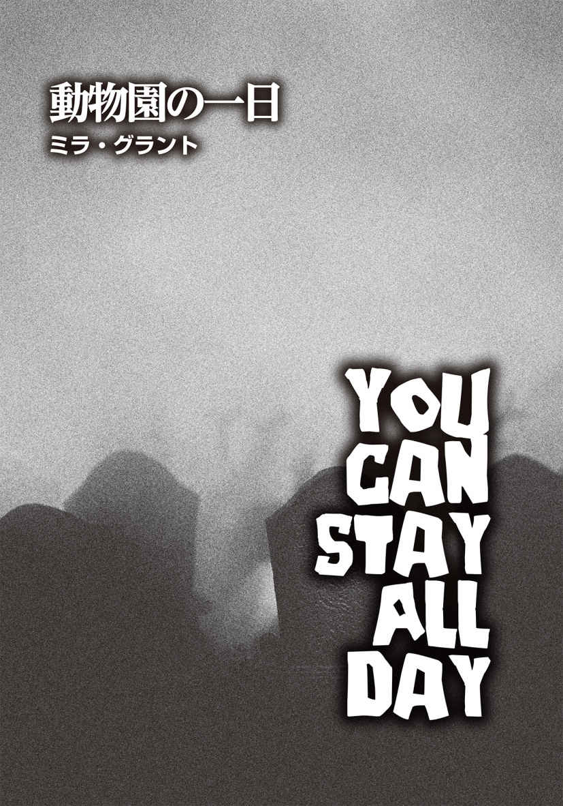
ミラ・グラント
Mira Grant
PROFILE
ニューヨーク・タイムズベストセラー作家シーナン・マクガイアのペンネーム。太平洋岸北西部に暮らす彼女は、チェーンソー、とうもろこし畑、難病や奇病に興味を持っている。彼女を追って、決して幽霊屋敷に入ってはいけない。それは、彼女が何か予想もつかないことを起こすからではなく、幽霊が出るからだ。
Twitter：@seananmcguire
@miragrant
メリーゴーラウンドは、まだ楽しげに回っていた。カリオペというパイプオルガンの一種が音楽を奏でる中、彩り豊かに塗られた木馬は意気揚 々 と上下に跳ねている。駐車場から遠く離れた場所にある、このこぢんまりとしてカラフルな遊具は、子供たちを魅了するように設計されていた。カリオペの音には、何かがある。人の最も原始的な部分に「ここに楽しいものがあるよ」「こっちへおいでよ。ほら、こういうもの、大好きなはずでしょ？」と訴えかけるのだ。
カサンドラは確信していた。動物園の正面広場に群がるあの死体たちには、まったく効果のない音楽だと。彼らを惹 きつけるのは、動きだ。木馬は今も動き続けており、いまだに客が乗っているのも何頭かいた。それは、安全ベルトに絡まったまま死んだ客たちだった。馬の背の死体はメリーゴーラウンドの動きに合わせて揺れ続け、馬の背に乗っていない死体はこちらに歩き続けていた。そして──。
彼らは死んでいた。全員死んでいた。なのに倒れていないし、動かなくなったりもしていないのだ。こんなこと起こるわけがない。こんなこと、現実なわけがない。
彼女の腕の嚙 み傷は焼けるように熱かった。傷口から、感染症の毒がゆっくりと染み込んでくる。身体の奥深くまで。もはや、何ひとつ現実ですらなかった。永遠に鳴り続けるメリーゴーラウンドの音楽以外は何も──。
カサンドラは、動物園の開園前の朝の時間帯が好きだった。全てが明るく、きれいで、可能性に満ちている。まだ来場客の姿はないので、道にはゴミひとつ落ちていない。吐き捨てられたチューインガムもなければ、ポップコーンの空 き箱も食べカスも散らばっておらず、陽光が反射してキラキラと輝いていた。
人々は本来、本でしか見たことがないような動物たちに目を丸くしたり、瞳を輝かせたりするために動物園にやってくるはずなのだが、入場料を払えば、路上にゴミを捨てたり、サルにチョコレートを与えたり、トラに石を投げてもいいと思っている。自分たちが動物園の動物を見れば、地球を守っている気分になれるらしい。全くおかしな話だ。
そういうわけで、動物たちとの仕事といっても、同時に人間たちとの仕事が必要なのだが、別に大きな問題があるということではなかった。今朝までは......！ 今日の朝、開門前は全てが完璧だった。
カサンドラは美しい緑の小道を歩いていた。ギフトショップとシンリンオオカミの檻 の間にある芝 生 を刈り込んだ歩道で、夏になると、人々はこの辺りでピクニックをし、家族や仲間とアウトドアの時間を満喫する。手入れの行き届いた原っぱの外れにある野外ステージで、コンサートが開かれることもある。ここを訪れる皆が楽しむ様子を思い浮かべ、カサンドラの顔には自然と笑みが浮かんでいた。そして彼女は、自分の人生の選択に満足していた。
緑地の先で、飼育員がひとり、のんびりと歩いていた。他の飼育員と同じカーキ色のユニフォームを着ていたが、左の上腕に分厚く巻かれた白い包帯がやけに目立っていた。彼の仕事ぶりはいつも素晴らしいのだが......。
「マイケル！」
名前を呼ばれた彼は立ち止まり、こちらを見た。彼女が近づいていくと、大きく破顔した。
「カサンドラ」
マイケルは人懐こい笑顔を見せた。「ちょうど君に会いたいと思っていたところだ」
「今度は何をしたの？」
彼女はできるだけ深刻な響きにならないように、軽い口調で語りかけた。
マイケルはカサンドラと一緒に、アライグマ、カワウソなど小さな肉食動物の世話をしている。動物園の外で、そういった動物に嚙まれる可能性はまずない。園内での負傷、特に動物が怪 我 をさせたと彼が報告した場合、彼の飼育員としての評価、動物園の管理体制の評価に影響が出るだろう。もし彼が報告しておらず、その怪我が感染症の疑いがあるとしたら......。
動物園が閉園や休園に追い込まれる事態だってあるのだ。負傷の報告を怠る従業員は、ブラックリスト入りする。
「ああ、これ？ なんでもない」
左腕を一 瞥 し、マイケルはきまりが悪そうに肩をすくめた。「ルームメイトのせいなんだ」
「なんですって？」
ルームメイト？ アライグマよりタチが悪いかもしれない。
「同居しているカールが、今朝、変だったんだ。話もせずに、部屋の中をただ歩き回っているだけで。二日酔いかなと思って、ベッドで休めむように促したところ、彼は僕の存在に気づいて嚙みついてきたんだ」彼はやれやれという感じに首を振った。「バカな奴 だよね。今夜家に帰ったら、カールに説教してやるつもりさ。家賃の支払いに遅れたことはないんだけど、さすがに嚙みついて怪我までさせるのは、考えもんだ」
「ええ、暴力は困るわよね」
白い包帯が巻かれた腕を心配そうに見つめ、彼女はうなずいた。「午前中の餌 やり、私が代わろうか？」
「助かるよ。自分で言うのもなんだけど、ひとりでやったにしてはなかなかきれいに包帯が巻けていると思わない？ ガーゼ越しに血の匂 いがするかもしれないけど」
「人間に嚙まれたのなら、動物に嚙まれたときほど心配する必要はないわ。まあ、人間の口の方が動物より汚いっていうけど」
カサンドラはそこまで言った後、目を細めた。「ねえ、ちゃんと消毒したの？ なんなら傷を見てあげようか？」
「いや、大丈夫だよ。餌やりはお願いするけど、怪我の手当てまでは必要ないって。餌やりなら、僕じゃなくても大丈夫だけど、僕の身体は僕が一番わかってるから」
マイケルは、襲われて負傷したばかりとは思えない笑顔を見せた。
カサンドラもつられて笑い、「じゃあ、仕事に戻りましょう。私の担当の餌やりが終わったら、あなたの分もやるわね」と言った。
「感謝いたします、マドモアゼル」
マイケルは恭 しくお辞儀をし、緑地を横切っていった。見たところ、何も心配しなくてもいいように思えたものの、カサンドラは腑 に落ちない何かを感じていた。ルームメイトに嚙まれて包帯を巻くほどの怪我をするなど、普通ではない。下手するとトラウマにもなりかねないだろう。だが、個人的な事情がありそうゆえ、マイケルがこちらの申し出を断るのは理解できたし、自分はこれ以上関わるべきではないのかもしれない。とはいえ、やはり妙な状況だ。暴力を振るうのなら、殴るとか、蹴るのが一般的で、嚙むのは奇妙だった。人間は、理由もなしにいきなり嚙みついたりはしない。
「いつもの悪い癖だわ。考えすぎよ、カサンドラ」
彼女は息を吐き、己 に言い聞かせた。「悲劇的な結果ばかり想像してしまう。そんな悪癖に打ち勝たないと」
カサンドラは再び歩き出し、気持ちを切り替えることにした。一日の始まりの明るい気分で過ごそう。空は青く、太陽は輝いている。ひとりの変人くらいで、自分の情熱が削 がれることはない。しかし、そういう人物が存在するのは紛れもない事実。常にそうだ。人間はおかしい。動物の方がずっと理にかなっている。
トラは、いつもトラらしく行動する。もちろん、予想外のことをすることもあるが。彼女に会えてうれしくて嚙む場合もあるし、特に脅かされたわけでもないのに引っ搔 くこともあった。しかし、人間はどうだろう。彼女は、野生動物とどのように接触するか、彼らが示すサインやシグナルをどう読み取るかを訓練してきた。自分たちを檻の中に閉じ込め、外に逃げ出さないようにする、見も知らぬ二足歩行の生物と仲良くする方法を学ぶ、トラ向けの講習会などはない。トラたちは、全て自分らで判断しなければならない。たとえ彼らがときに間違ったとして、誰もトラたちを責めることなどできないのだ。彼らは人間のルールなど知らないのだから。
だが、人間の方はどうだろうか。人間はルールを知っているはずで、本来、相手に嚙みついたり、他人を打倒すべき邪魔者のように扱ったりしないことになっている。マイケルはいい青年だ。担当している動物をちゃんと気遣っていて、世話を怠らない。勤務中にさぼることも皆無で、鳥小屋担当のローレンとは大違いだ。ローレンはときどき、インコの給 餌 ケージの裏でタバコを吸っている。鳥たちが煙を吸うかもしれないとは思わないのだろうか。マイケルは、アフリカ展示館のドナルドとも異なる。ドナルドは、女性の来場客をナンパするのが大好きなチャラい男だ。小さな子供がキリンを棒で突ついたりしないように監視すべきときも、胸の大きな女性を見つけてはヘラヘラと話しかけている。マイケルは本当にいい青年だ。
だからといって、なぜこんなにも不安なのか。彼女には説明がつかなかった。
カサンドラは歩調を速めた。仕事を始めれば、きっと気分も晴れる。自分の周りもうまく回り始める。いつもそうだった。
給餌ケージに続く細い通路に入ったカサンドラは、その日の大型のネコ科動物たちの様子が普段と違っていることに気づいた。朝のこの時間、彼らたちは岩の上で日向 ぼっこをするなど、比較的広い屋外展示エリアでのんびりしているものだ。ところが、今日の彼らは落ち着きなく行ったり来たりしているだけで、互いにコミュニケーションをとるそぶりもない。ただ、彼女が世話する大きな雄ライオンだけは、いつも通り、自分に近寄ってくる他のライオンたちに唸 り声を上げていた。カサンドラはふと足を止めた。マイケルに会ったときから感じていた、「何かがおかしい」という感じがどんどん大きく鮮明になっている気がしてならないのだ。
「一体、どうしたの？」
彼女はネコ科の動物たちに語りかけた。
その問いに答える術 もなく、彼らは相変わらずうろうろと歩き回っている。最初の檻には、雌のトラのアンディがいたが、彼女も徘 徊 していた。カサンドラは檻のバーのところに手のひらを押しつけた。こうすれば、アンディはうろつくのをやめ、こちらに来てカサンドラの指の匂いを嗅 ぎに来るはずだ。彼らは匂いに非常に興味があり、新しい匂いがするとチェックする習慣がある。しかし、アンディは忙 しなく歩き続け、何か悩みでもあるのか、時折不満を漏らすかのように低音で唸っていた。
「ここでうろついているだけなら、今日はたくさんの家族連れを喜ばすことはなさそうね」
冗談めいた言い方でアンディに語りかけ、カサンドラは自分の中で膨らみつつある不安をごまかそうとした。それはささやかな対処方法だったが、彼女にはここ何年も効果的だった。関わりたくないシチュエーションから自分自身を逃避させる手段のひとつだと、セラピストに教えてもらったものだった。
セラピーに通ってそれ以上マシな助言は得られなかったというのも、おかしな話だ。確かに、誰ひとりとして関わりたくないシチュエーションというものが存在する。でも、そうなってしまった場合、人はどう対処すべきなのだろう？
「わかったわ」
カサンドラは息を吐いた。「何が起きてるのか、見てくるわね。アンディ、あなたはここにいて」
彼女はボタンを押した。トラたちを給餌ケージに閉じ込め、彼らが広い屋外エリアに入ってこられないようにするボタンだ。それから、トラの頭数を数えた。
三頭のトラを四頭だと間違えることはあり得ない。どれだけ彼らが彼女を好きでも、どれだけ頻 繁 に彼女が彼らに餌をやっていても、彼らはトラに変わりはなく、彼女はやはり人間であることに変わりはない。万が一、彼らの機嫌が悪いときに檻に足を踏み入れ、彼女が彼らを捕らえに来たと勘違いされたら、あっという間に彼らは彼女に食いかかるだろう。そして、トラは本来の野生動物としての行動を取っただけなのに、人間に射殺されてしまうはずだ。だから、彼女はしっかりと数を数えた。自分自身を守るためではなく、彼らを守るために。
いつでも、カサンドラは動物たちを守るために存在していた。
トラ舎のメイン展示エリアである屋外区域に通じる扉は、三重に施錠されていた。二つの鍵と本 締 錠 で厳重に安全性が確保されている。カサンドラにしてみれば、ちょっと極端ではないかという気がしていた。なぜならば、問題を起こす来場者──おそらくティーンエイジャー。騒ぎを起こしてニュースになるのは、いつだってティーンエイジャーなのだ──は、トラを撫 でるために柵も壁も堀も越えてしまうからだ。鍵や錠の数を増やしても、飼育員が野生動物のエリアに侵入した愚か者にたどり着くのを妨げる障害物にしかならない。
しかし、そういった事態はどうしてもときに起こり、教訓を残す。問題が起きて大々的なニュースになれば、人々は注意し、関係者もより用心するようになる。つまりは、なくてはならない〝犠牲〟なのかもしれない。大勢を救うために、ひとりだけ動物に食べさせるスケープゴートなのだ。
それが真実だとしても、カサンドラは自分が愛情をかけて世話している動物たちを巻き込むような〝犠牲〟は望んでいない。何か起こるなら、他の動物園で起こってほしいと思っていた。彼女のトラは何も間違ったことはしていないし、人間の教訓のために死ぬ必要もない。
カサンドラはトラの屋外展示エリアに足を踏み入れた。そこは、来場者がゴミを散らかしたりしないし、洟 水 を垂らした子供がクジャクを追いかけたり、木の上のリスに石を投げたりもしない場所で、大型ネコ科動物と瑞 々 しい芝生の匂いに満ちていた。ここに来ると、他の全てが他愛もなく、小さなものに感じてしまう。彼女は歩き出す前に、深呼吸をした。岩の上に糞 があったが、その悪臭も気にならなかった。彼らは彼らなりに、自分たちのテリトリーをマーキングしなければならないのだ。
だが突然、生肉の腐敗臭が鼻 腔 をつき、カサンドラは咳 き込んでしまった。あまりの強烈な臭 いだったため呼吸もままならず、彼女は手のひらで鼻と口を覆った。しかし、それでは十分ではなく、否応なしにひどい臭気が彼女の嗅覚を刺激した。
何がここで死んでいるにせよ、どういうわけか掃除係に悟られることもなく、腐敗が進行し、空気中にひどい臭いを撒 き散らしているようだ。トラが表に出たがらなかった理由が、これで判明した。カサンドラでさえ耐えられそうもない。彼女の嗅覚は彼らに比べたら、全然敏感ではないというのに。
手で鼻を覆ったまま、彼女は臭いのもとに近づいていった。トラが逃げ出せないように、屋外展示エリアを取り囲むようにして結構な深さの溝 がめぐらされているのだが、どうやらそこから漂ってくるようだ。溝の中なら辻 褄 が合う。アライグマやカワウソがそこに落ちる可能性はあるし、トラは深い溝の下まで降りられない。しかも、岩陰から落下したのであれば、掃除係もなかなか見つけられないだろう。彼らはしっかり掃除してくれるし、やるべき仕事を熟知しているものの、人間ゆえ、異物があったとしても見落とすことくらいはある。
なるほど、そこが異臭の源だったか。
カサンドラは溝の端 まで行き、下を覗 き込んだ。その途端、ショックのあまり彼女は目を大きく剝 き、口をあんぐりと開けた。溝の底にいたのは、人間の男性だったのだ。
彼は夜間の掃除係用の白い無地の作業服を着ていた。暗がりの中、遠くからでも姿がわかるように、作業服は白一色になっている。彼は動いていた。足を引きずるようにしてよろめきながら歩いている。しかし、目的があるような歩き方ではなかった。ぎくしゃくした足取りで円を描いているものの、溝の壁にぶつかるたびに方向を変え、また歩き出すといったパターンを繰り返している。あまりにも不自然な行動だ。きっと酔っ払っているか、ドラッグの影響下にあるに違いない。どこか特定の目的地に行こうという意志が感じられないのだ。まるで人間ピンボールとでも言いたくなるような動きで、放っておけば、永遠にそうしているのではないかと思えた。
男性の右腕は力なくだらりと垂れており、骨折しているようだ。たぶん彼は酔っ払っているのではなく、落下して負傷したショックで奇妙な行動を取っているのかもしれない。
「そこのあなた！」
かなり距離があるので、声が届くように両手を口の脇に添え、彼女は男性に呼びかけた。「大丈夫ですか？」
こちらの声に気づいたらしく、彼は顔を上げた。額も頰も顎も血だらけだったが、ずいぶん前に乾いてしまっているようだ。カサンドラをしばらく見つめ、口をへの字にして唸り声を上げると、彼は再び歩き出した。壁に当たって方向転換し、また壁にぶつかって別の方向に行く──その繰り返しだった。まるで、壁を通り抜けてこちらまでやってこようとしているかのようだった。男性の目は濁ってどんよりしていたが、そのまなざしはまっすぐで揺れることはなく、瞬 きひとつしなかった。
まさか......。
カサンドラはふらつきながら後ろに下がり、手で口を覆って悲鳴を抑えた。動物園の飼育員になって五年。それ以前は、生物学専攻の学生だった。大人になってから、彼女はずっと動物に携わってきた。だから、生き物が生きているか否かの区別くらいはつく。
その男は死んでいた。
「カサンドラ、理にかなった説明をしてくれないか」と、動物園の責任者は言った。
彼はうぬぼれやの脂ぎった男で、笑顔でいればトラブルを避けられるとでも思っているのか、常に笑みを浮かべている。「トラの屋外展示エリアの溝に何かが落ちたのは理解できる。セキュリティ班の人間を送って対処させるよ。だが、その男性は死人ではないだろう。歩き続けているんだから、死んでいるわけないじゃないか。昨日の夜、ちゃんと寝たのか？ ストレスが溜 まってるのかもしれないな」
「睡眠は毎日十分に取っています」
カサンドラはきっぱりと言った。「睡眠不足の状態でトラの世話をするのは危険ですから。十分に寝て、朝食もしっかり食べ、一緒に水とコーヒーを飲んで水分もきちんと摂 りました。だから、自分が何を見たのかわかっています。溝の中に男性がいました。彼は瞬きしません。息もしていません。彼は死んでいるんです」
「だけど、彼は歩いているんだろう？ カサンドラ、自分が何を言っているのか、自分の言葉に耳を傾けてみたかい？ 話だけ聞くと、君が正気とは思えない」
カサンドラは身体を強 張 らせた。
「私は正気です」
「じゃあ、君は普段の君らしくないことを口走っているんだな」
そのとき、責任者の無線機が音を立てた。装置を握り、口元に持っていった彼は、ボタンを押してから言った。「で、男性は無事に保護したのかね？」
〈ダン、問題が発生した〉
無線機からの声はかすれていたが、それは無線機のせいだけではなさそうだ。話しているセキュリティ班のスタッフは、今にも気絶しそうな様子だった。〈カサンドラの言っていることは正しかった〉
ダンは眉をひそめた。
「彼女の言っていることが正しかったとは、どういう意味だね？」
〈溝に男性がいる〉
「彼は死んでいるのか？」
〈いや、生物学的にはあり得ない。彼は立っているし、歩いている。ただ、質問には答えないが。アンジェラによれば、夜間スタッフのカールという男性らしい。彼女はカールの当直長を呼びに行ってくれている。とはいえ、彼はこちらが名前を呼んでも返事をしないし、ロープを下ろして引き上げると話しても、唸り声を上げるばかりなんだ。彼に近づくのは、安全とは言えない。暴力的になる可能性がある〉
ダンはカサンドラと目を合わせながら、次の質問をした。
「だが、彼は死んでいないんだな？」
〈それはあり得ないって。死人は歩かない〉
「了解した。では、引き続き対処を頼む。トラ舎への立ち入りは禁止し、周囲の道路は通行止めにするつもりだ。事態が動いたら、また連絡してくれ」
ダンは無線機を置き、笑顔のままカサンドラに告げた。
「というわけで、君の話の『溝に男性がいた』という部分は本当だったようだ。思いがけない展開になったな」
「ちょっと待ってください」
カサンドラは目を細めた。「冗談でしょう？」
「何が？」
「トラ舎の周辺の道路を通行止めにするって。お客さんはいつもバリケードを乗り越えます。怖いもの見たさで立ち入り禁止区域に入ってくるんです。猛獣エリア全体を休みにするか......あ、まだ開園前ですよね？ 休園とまではいかなくても、開園時間を遅らせることはできませんか？ このまま開園してはいけないと思います」
「開園してはいけないだと？ 何を言ってるんだ、君は」
いきなりダンは立ち上がった。「問題が発生したエリアから人々を遠ざけることは可能だ。無邪気な子供たちを守ることもできる。だが、君の給料もトラたちの餌代も、入場料があるから払えるんだ。その現実は理解しているだろう？」
「そのくらいわかっています......」
彼女は唇を嚙んだ。「ですが、溝の中の男性は......何かが本当におかしいんです。それがはっきりするまで、園内にお客さんを入れるべきではありません」
「何もおかしくはない。大丈夫だ。仕事に戻りたまえ」
ダンは部屋の出入り口まで歩き、扉を開けた。そして、わざとらしい仕草でドアの外を手で示した。
一瞬ためらったものの、カサンドラは仕方なくダンのオフィスをあとにした。
今日というこの日は、さっきまでの美しさを失いつつあった。溝にいた男性のせいで、青空が黒い幕で全部覆われてしまったかに感じる。彼女はトラ舎に戻り、セキュリティ班の男性救出を手伝うつもりだった。その途中、芝生をふらついた足取りで横切る人物に気づき、彼女は立ち止まった。マイケルだ。驚くほど鈍い速度で歩いている。ジョギングしたくないのに、無理やりさせられていて、走ることに嫌気がさして投げやりになってしまった子供のような足取りだった。しかも、彼は明らかに具合が悪そうだ。遠目でもそれがわかった。
「マイケル？」
カサンドラは名前を呼び、彼の方へ向かおうとした。そのとき、彼がこちらを振り向いた。
その表情を見て、彼女は凍りついた。彼の目が......溝の中にいた男性と同じ目をしていたのだ。
マイケルは友だちだ。彼の様子が変なら、手を貸すべきだ。自分はここに留まり、彼を助けるべきだ。
だが、カサンドラは踵 を返し、その場から走り出した。
トラたちは給餌ケージに閉じ込められたままで、うろうろと歩き回り、互いに唸り声を上げたりしていた。相変わらず、落ち着かない様子だった。一時的に小さな檻に入れられただけでも、大型ネコ科動物にとっては大きなストレスとなる。空気中の汚れた臭いを嗅がせ、危険が迫っていると警告するようなものだ。
「ごめんね、みんな」
申し訳なさそうに、カサンドラはトラたちに声をかけた。彼女は檻と檻の間の通路に立ち、彼らを見つめた。トラたちは彼女を傷つけたいとは思っていない。今までも、今も同じだ。彼女はそのことを確信していた。
人間は知性と意志を持ち、未来に思いをめぐらす能力も備えている。そのおかげで、人間は〝動物園を建てる〟とか〝世界を支配する〟といった偉業を成し遂げてきた。そして、そのせいで、人間は捕食者であることは非常に不得手だった。人間は計画を立て、結果について考える。一方のトラは狩りをし、食料を手に入れ、繁殖するために存在している。彼らは存在するために存在しており、明日が来るのかどうかを気にする必要などない。彼女は、そんな彼らをうらやましいと思うこともあった。トラに「君たちは、自分が自分らしくある術を知らないんだろう？」と訊 ねる者はいない。「君たちは誤解されているよ」とトラに言ったり、一緒にいて居心地が悪そうだからといって、「君はどこかがおかしい」とトラに暗にほのめかしたりする者もいない。
一匹のトラが大きなあくびをし、カサンドラに見事な鋭い牙 を見せてくれた。彼女は久しぶりに微笑 んだ。
「ダメよ。給餌ケージにいるからって、いつもより早い時間にご飯がもらえるとは思わないで」
彼女はトラを相手に話し始めた。「すぐに外に出してあげるからね。あなたたちが一日中眠っていたり、食べ物を消化するために寝そべってばかりいると、お客さんが不機嫌になるの、わかってるでしょ。お利口さんにしてて。すぐにいつもの状態に戻るから」
そのとき、彼女の言葉が噓だと訴えるかのごとく、外にいた誰かの悲鳴が聞こえた。
カサンドラはそれが何か悟る前に走り出していた。ドアの隣の壁に掛かっている棒には、大きな金属のフックが付いているのだが、それは来場者通路や動物の屋外展示エリアからヘビをどかすために使われるものだ。彼女は考えるより先に、それを摑 み取っていた。悲鳴を聞いた瞬間、身を守るための武器が必要だと直感したのだ。そこで何が起きていようと、彼女は丸腰で駆け込みたくはなかった。
トラ専用広場の外に飛び出すなり、腐敗臭が鼻をついた。さっき溝の端に立ったときほどの強烈な匂いではなくなっている。ところが、同時に別の方向から強い悪臭が漂ってきた。臭いのもとはひとつではないということか。また叫び声がし、彼女は走り続けた。
トラの屋外展示エリアは、動物園の構造上、彼ら独自の〝島〟を持つ。島を象 った展示エリアに、一般客がトラを観察する大きな楕 円 形 をした空間が挟まれている。弧 を描く壁に沿って曲がったカサンドラは、視界に飛び込んできた光景に驚 愕 し、手にしたヘビ捕獲用の棒を思わず強く握りしめた。そして、大きく見開いた目で、目前で起きている全容を理解しようとした。
溝にいた男は、もはや溝の中にはいなかった。カサンドラが持っているフック付き棒の大型版を使用し、セキュリティ班のスタッフが彼を引き上げたのだろう。それらの棒は地面の上に転がっていた。その後、セキュリティ班はさらに大きな問題に直面したに違いない。助け出した男性が、女性スタッフの喉に歯を突き立てたのだから。
男性に嚙みつかれた女性は叫んでいたが、やがて悲鳴は止まった。男性の腕の中で腕をだらりと下げ、力なく立つ彼女に他のスタッフが駆け寄り、男を引き離しにかかった。死んでいる人間──彼は死んでいた。死んでいたに違いない。生きているなら、これほどの悪臭を放たないし、皮膚が土気色になって剝がれたりもしないはずだ──にしては、彼は相当の握力の持ち主だ。男性スタッフが三人がかりで、ようやく女性スタッフを救い出していた。
ところが、男はただでは引き下がらなかった。歯で嚙んでいた彼女の喉の正面の肉を、引き離されると同時に、ごっそりえぐり取ったのだった。カサンドラが恐怖で凍りついている中、その女性スタッフは床に倒れ、男の方は口にした肉をクチャクチャと音を立てて嚙みくだき、唇の端から鮮血を垂らしていた。どこを見るともなく視線をまっすぐに向けていたが、やはり瞬きはしていなかった。
これは、動物界の捕食関係とは違う。彼女のトラたちは捕食者で、アライグマや頭の悪い動物園のクジャクなどを見かけたらすぐに食べてしまうだろう。しかし、自分たちが何をしているのか、彼らは気づいている。たとえ、鼻や口の周りを血だらけにしても、横取りされまいと肩を丸めて捕らえた獲物を守っていたとしても、その目には美しい知性が宿っているのだ。トラたちは知っている。殺すことが道徳的にどうなのかなどは理解していないだろうが、それでも彼らは自分たちの行動を知っている。
この男は......わかっていない。虚 ろな目は腐敗が進み、細かな亀裂の入った薄い膜が張っている。ロボットかと思ってしまうほど自動的に動く顎は、女性スタッフから嚙みちぎった肉片を咀 嚼 し、飲み込んでいた。
狼 狽 と怒りに満ちた叫び声は続いていた。死んだ男を抑えていないスタッフが、倒れた同僚を救おうとしている。
男はものすごい勢いで向きを変えた。通常の人間ではあり得ない速さだ。肩が脱 臼 したり、腕が折れたりするのを厭 わない動きで、今度は彼を押さえつけていた男性スタッフの首に歯を突き立てた。
すると、喉にぽっかりと穴が開いた女性スタッフがカッと目を開き、一番近くにいた同僚に突進して、彼の腰に嚙みついた。さらなる悲鳴が上がり、新たな苦痛と恐怖がその場に響き渡った。カサンドラは、まだ目をまんまるに見開いていた。こんなのおかしい。全てが間違っている。ここにこれ以上いることなどできない。どう考えても、理不尽で不自然なことばかりだ。立ち去らなければ。一刻も早く──。
カサンドラが振り向くと、マイケルがすぐ後ろに立っていたので、彼女は激しく動揺した。いつからそこにいたのか、全く気づかなかった。彼女は長いこと、大型ネコ科の捕食者たちの世話をしてきた。彼らは忍び足の達人だ。しかし、あまりにも彼らに慣れすぎてしまい、人間がこんなふうにこっそりと忍び寄れることをすっかり忘れていた。トラ舎やライオン舎にいるときは用心に用心を重ねても、それ以外の場所で、まさか人間に忍び寄られるとは思いも寄らなかったのだ。
彼女は顔をしかめた。溝の中にいた男と同じ腐敗臭が、マイケルから漂ってきたからだ。かすかではあるが、間違いない。マイケルの目にも膜が張り、焦点が合っておらず、瞬きをしていなかった。
「お願い、やめて」
カサンドラは弱々しい声で言った。
次の瞬間、マイケルは彼女に襲いかかった。
その後、全てがぼやけていた。カサンドラは、自分がどうやって逃げ出したのか覚えていなかった。瞬きをした次の瞬間、彼女はもうトラ舎の救護室の前に立っていた。彼女の背後でドアは固く閉まっており、給餌ケージに閉じ込められたままのトラの唸り声が通路の端まで響いてきた。彼らの怒りが徐々に大きくなっているのが、声からもわかった。嚙まれた肩の深い傷口は出血しており、鮮血が腕を伝って落ちてくる。腕全体が真っ赤に染まっていたものの、傷口の歯型が人間のものであることは明らかだった。
たとえ歯型が残っていなかったとしても、マイケルの虫歯の被せ物 のひとつが傷口に残されていた。これは、カサンドラが人間に嚙まれたという事実を裏づける証拠以外の何ものでもない。この物的証拠があるゆえ、人間以外に嚙まれたと噓をつくことの方がかなり難しいだろう。
歯ぎしりをしながら、彼女は毛抜きを使って、肉の中から白い磁器片をつまみ出した。クラウンの折れた部分はギザギザになっており、相当の力と圧がかかって折れたことがわかる。これでは、マイケルがカサンドラに与えたのと同じくらいのダメージを彼自身も受けていたに違いない。しかし、彼は気づいていないように見えた。痛みや不快感を覚えなかったのだろうか。
自分が知るマイケルはいなくなってしまった。今となっては確認のしようもないが、おそらく、彼の分の餌やりを頼まれてから、トラの屋外展示エリアで見かけるまでのどこかのタイミングで彼は死亡し、そして歩き続けていたのだ。
「ダメよ。こんなのダメ」
カサンドラは顔をしかめた。オキシドールのボトルから、傷口に消毒液が注がれていく。白い泡と赤い血液が混じり合ったピンクの液体が腕を伝わる中、激痛が彼女の肩を貫いた。しかし、腐敗した〝おかしな何か〟が彼女の身体に残り、骨の髄までじわじわと浸透していく気がして、彼女は頭が変になりそうだった。好青年だったマイケルをあんなふうにした何かに全身が侵されてしまうなんて──。
「ダメ、ダメ。絶対にダメ」
腐った歩く死体になるのを食い止められるなら、どんな激痛にだって耐えられる。彼女はオキシドールのボトルが空 になるまで消毒を続けた。しかし、いくら口で否定しても、深く嚙まれた肩の傷が治るわけでもないし、そこから漂ってくる腐敗臭を消せるわけでもない。
時が再びジャンプした。一時的に記憶を失っている時間があるのか、急に時間を飛び越えた感覚に襲われてしまうのだ。一体どういうことだろう。ぼやけた視界と思考がはっきりしてきた彼女は、腕を包帯でしっかりと巻き、外から傷口が見えないようにした。だが、肩はズキズキと脈打っている。いくら包帯で傷を隠しても、怪我をした事実は頭から追い払えなかった。
「絶対に、絶対にダメ」
カサンドラはより強い口調で言い、首を横に振った。必死で時間が跳ぶのを防ごうとしていた。一体全体、これはどういうことなの？
論理的に考えるのよ、カサンドラ。生物学者らしく。学校に戻ったつもりで、この現象を考えるの。
今朝、マイケルのルームメイトが奇妙な行動を起こした。マイケルは、腕にそのルームメイトに嚙まれた傷を負って仕事に来た。マイケルはしばらく普段通りに振る舞っていた。今、マイケルは、溝の中から助け出された男と同じような行動を取るようになっており、カサンドラを嚙んだ。マイケルからは腐敗臭がしていた。
彼女が発見したとき、溝の中の男からも腐敗臭がしていた。男を見つけたときの第一印象は、彼は死んでいるものの、どういうわけか立っている、というものだった。男は夜間の掃除係のユニフォームを着ていた。カサンドラは彼が負傷していたのを見たが、フェンスを乗り越えて溝に落下したときか、岩の上から溝に滑り落ちた際に負ったと思えるものだった。何にも嚙まれていないとしたら？ 彼がただ溝に落ちただけだったら？ 溝に転落する危険性は常にあった。特に動物園のスタッフは、溝の端から何かを取るのに背の低い擁 壁 に寄りかからなければならない。以前も溝への落下事故はあったはずだ。
あの女性......溝から引き上げられた男に嚙まれたセキュリティ班の女性。彼女は男に喉を嚙み切られ、死んだ。その場面を目撃していたため、あの女性が死んだことに、カサンドラはなんの疑いも持っていなかった。しかし、死んだ後に、女性は再び動き出し、セキュリティ班の他のメンバーを攻撃し始めた。
溝の中の男が死んで、生き返ったときには、もはや人間ではなくなっていたということなのだろうか。死んでいる恐ろしい何かに。見かけは人間なのに墓穴のような匂いがし、持っている願望はただ......食べること？ 嚙むこと？
何かはわからないけれど、あれは、人から人へと伝 播 する呪い？ 感染症？
カサンドラは首を傾け、自分の肩に巻いた包帯を見た。マイケルは死んでいなかった。セキュリティ班の女性と同じように。マイケルは大丈夫そうだった。人間の口は汚いものだが、嚙んだだけで、健康な人間を死に追いやれるとは思えない。特に普通の状況下では。
カサンドラは、己の肉体のどこか奥深くで熱い何かが脈打っているのを感じた。そして、彼女の勘が、何かがとてつもなくおかしいと訴えていた。マイケルの中に何があったにせよ、それは今、彼女の中に存在しており、痛めつけようとしている。おそらく殺そうとするのかもしれない。
「さてと」
カサンドラは自分に語りかけた。「ここから出ていくべきね」
マイケルの過ちは、病院に行かずに職場に来たことだ。医者なら傷を洗浄し、状況を好転させてくれるだろう。治すことだって可能だ。猛獣を扱うという仕事柄、ひとつのミスが命取りになることを、彼女はすでに学んでいた。しかし、こんなことで死ぬつもりはなかった。
プランを立てたことで気分が良くなったカサンドラは、ドアに向かって歩き出した。まずはロッカー室に行き、カバンと鍵を取ってこよう。責任者のダンには、今日、動物園を休園にしてもしなくてもどっちでも構わないと告げるつもりだ。どっちみち、自分は早退するし。病院に行って傷の消毒と縫合をしてもらい、この熱い何かが脈打つ感じがなくなるまで、ちゃんと通院した方がいいだろう。そう、不安や恐怖が消えるまで。
カサンドラが脇を通ると、トラたちは歩き回り、ネコ科特有の低い声で唸り、いつもと違う今日の事態で覚えた不快感を訴えてきた。彼女は弱々しく微笑んだ。
「あなたたちを外に出す前に、あの変な死んだ男が屋外展示エリアにいないことを確かめないとね」と、カサンドラはトラたちに話しかけた。「また溝に落ちてきたら、あなたたちをイライラさせるだけだもの。全てが元通りになったら、誰かに鍵を開けてもらうようにするわ」
トラは人間の言葉をしゃべらなかったが、彼女は彼らを何年もうまく扱ってきた。ほとんどが唸るのをやめ、大きな琥 珀 色 の瞳で彼女のことをじっと見ていた。彼らはカサンドラを信頼していた。あたかも同じ群れのトラ同士が信頼し合うように。
「約束するわ」
カサンドラは念を押すようにトラたちに言い、表に通じるドアを開けた。
その途端、強烈な腐敗臭が襲ってきた。まるで奇襲攻撃だ。彼女の背後で、トラは吠 え、唸り、この悪臭が侵入してくることに抗議しているかのようだった。一見、外には誰の姿も見えなかったが、人影がないからといって安心はできない。匂っているのは事実なのだから。
それにしても、園内にこれほど藪 や雑木林が生い茂っていたのか、と彼女は正直驚いた。以前は気にも留めなかったものが、今は非常に気になって仕方がない。奇妙な歩く死体たちが、木々の陰に潜み、突然襲いかかってくるかもしれないのだ。
奴らが隠れているとか、いきなり襲撃してくるとか、そんなことは起こらない。私が奴らのようになることも、起こり得ない。絶対に、ない。自分はロッカー室へたどり着き、カバンを取って、車を自分で運転し、病院へ行くのだ。途中で車を止めて、電話を何本かかけるかもしれない。動物園で起きていることが、動物園内だけで起きていると確かめるために。マイケルのルームメイトはアパートの部屋に閉じ込めてあるはず。たぶん。そして、マイケルはここ、職場で、動物から新種の寄生虫か熱帯病をもらってしまったのだ。野生動物から感染した病原体が人間の体内に入っても、もともとの宿主と同じような症状が出るとは限らない。これはインフルエンザかもしれないし、呼吸器疾患か何かの可能性もある。人間が罹 患 すると、これまでに見たことがないような恐ろしい症状を引き起こしているというだけだ。彼女は延々と己に言い聞かせた。
丘の頂上まで来たカサンドラは、動物園の正面広場を見て驚愕した。
開門してしまっているではないか。彼女がダンのオフィスを出て、大型ネコ科動物の建物に行っている間に、誰かが回転木馬のスイッチを入れ、正面ゲートを開け、一般客を動物園に入園させたのだ。そして、どうやら入れたのは、一般客だけではなかったようだ。管理棟の建物の周りに、歩く死体が群れを成している。自分を襲う前のマイケルと同様、虚ろな目で、足を引きずって歩き、奇妙な動きをしていた。これがなんであろうと、恐ろしいスピードで広がっている。トラの屋外展示エリアで見た光景から判断すると、嚙まれた全ての人間に伝染すると考えて間違いないだろう。
つまり、自分もそこに含まれる。カサンドラは嚙まれていた。自分も感染したのだ。
だが、見方を変えれば、その事実が彼女を守ってくれるかもしれない。これが伝染病だった場合、連中は、すでに感染している誰かを襲わないのではないか。ダメだ。危ない賭 けに出るわけにはいかない。もし自分が殺されたら、誰がトラの世話をする？ 彼らは、屋外展示エリアで自由を楽しむこともなく、小さな給餌ケージに入れられたままなのだ。彼らを広い空間に戻してやらなければならない。彼女はそうする必要があった。そうしたいと強く願った。しかし同時に、彼女はこの可能性に賭ける必要もあった。やってみなければ。
カサンドラは用心深く丘を下り、藪の外れで立ち止まった。誰かに急襲される危険性はあったものの、そこは見つけられにくい場所でもあった。身を隠せる場所を選んで移動しながら、彼女は敷地内にある職員用の門のひとつに到着した。門から続く道に怪しい連中がいないことに安 堵 した。この道は日中、主に運搬用として使われていた。食料、道具、病気の動物を運ぶためだ。もしかしたら、この先、何事もなく別の門まで行けるかもしれない。
しかし、それ以上に、自分の容態が問題だった。
ズキズキする肩の疼 きはどんどんひどくなり、一歩足を踏み出すたびに、マイケルの身に起こったことが自分の中でも起きているのだと思い知らされた。何が体内に入ってきたのか定かではないが、それは傷口から全身に広がりつつあった。すぐに医療的処置を受けなければ、自分もああなってしまう。死んでいるのに、動けるし、立っていられて、しかも嚙みつくあいつらと同じに。そう、危険な捕食者になるのだ。動物以上、人間以下の。
運搬用の道は、正面ゲートが見渡せる木製の門で行き止まりとなっていた。メリーゴーラウンドは動いており、カラフルな木馬たちがゆっくりとした舞踏曲に合わせて上下している。カサンドラは数メートル後ろで立ち止まり、その古風な遊具に向かう群衆を黙って見ていた。誰も彼もぎこちない動きで、よろよろと歩き、濁った目の焦点は合っていない。彼らの身体から発せられる悪臭は凄 まじく、とても耐えられるレベルではなかった。腐敗が進んでいる匂いであり、まさに死臭だった。
木馬にまたがっている人々もいた。何が起きたにせよ、それが起きたときに、木馬に乗っていたのだろう。安全ベルトを締めたまま、木馬からぶら下がっている者もいる。自分では安全ベルトを外すことはできず、ただただ宙を指で引っ搔いていた。カサンドラの胃はむかつき、酸っぱい液が喉の付け根まで上がってきた。
私もすぐにああなるのだ。
彼女はそう思った。
すぐに私も奴らのひとりと化してしまう。
そうなったら、彼女のトラたちはどうなる？ マイケルのカワウソは？ ベッツィーのシマウマは？ 動物園の他の動物たちは？ この食物連鎖の中では生き延びることができず、死ぬ運命の動物もいるだろうが、中には......。
今立っている場所から、カサンドラは駐車場も見ることができたが、そこにもやはり、死んでも歩き続ける人々が蠢 いていた。ひとり叫び声を上げる男性がいたが、死体の群れはほどなく追いついて彼を地面に倒した。死体が次々と覆いかぶさり、男性の姿は見えなくなった。この事態は、動物園内に閉じ込めておける規模ではない。もはや感染拡大を止めることは無理だ。
カサンドラは正面ゲートの方に視線を戻した。
彼女にはやるべきことがあった。
これだけ感染力が強く、これほど感染拡大の速度が急激な病気であれば、街全体に広がるのは時間の問題だ。それは簡単な数学で表わせる。感染者がひとりなら状況は〝悪く〟、二人になれば状況は〝悪化〟、四人では〝大惨事〟と化す。死者が生者の数を上回るまで、感染者はうなぎ登りに増え続け、死ぬ以外に選択肢はなくなる。
もし自分が嚙まれていなかったなら、他の選択肢を見つけ出そうとしただろう。大型ネコ科動物の建物にある冷凍庫には、数百キロの生肉が保管されている。そして建物の扉という扉は、怒り狂った雄ライオンの攻撃にも耐えられるように設計されているのだ。彼女は愛すべきネコ科動物たちと一緒に中に立てこもり、この奇妙な事態が収束するまで待つこともできただろう。
しかし、彼女の肩は焦げるように熱く、心臓の鼓動に合わせて傷が脈打っていた。体調は悪化するばかりで、かなり熱っぽい。身体がだるくてしょうがなく、横になって目を閉じ、肉体が歩く死体へと変化を遂げるのをひたすら待ちたいと思い始めていた。変化する最中は、きっと非常な痛みを伴うのだろう。自分の意志で動けなくなる前に、一刻も早く行動する必要があった。
カサンドラは草食動物から始めた。ドアを開け、門につっかえ棒をし、避難口を誰でも通れるように開放した。彼女が鳥小屋に移動する前に、シマウマは芝生で草を食べ出していた。彼らは危険を察知すべく、耳を前後に動かしている。カンガルーは、園内の横道を飛び跳ねていた。彼らにとっては、ジャンプするのが逃げるのに最適な方法なのだ。たとえ歩く死体が藪の中で待ち伏せしていたとしても、彼らの移動速度にはついていけないだろう。
鳥たちは、すでに異常な事態が起きていることを察していた。彼女がケージを開放するなり、勢いよく羽ばたいて空へ飛び立ち、どこかへ行ってしまった。易 々 と生き延びられる鳥がほとんどだろうが、そうでない鳥も頑張って生き延びてほしい。
ゆっくりと症状は進行し、とうとう足の自由が利 かなくなってきた彼女は、必死に大型ネコ科動物のエリアに戻ろうとしていた。さっきまでこの一帯に漂っていた強烈な腐敗臭は、弱まっている気がする。自身が発する匂いに鼻が慣れてしまったせいかもしれない。あるいは、肉体の他の部分と同様に鼻も朽 ちかけ、嗅覚が失われつつあるのだろう。
カサンドラが開けていないドアは、まだたくさんあった。解錠していない檻もたくさんあった。だけど、時間がない。彼女は自分の動物たちを危険に晒 したくなかった。それでも、まだ終わりではない。肩の焼けるような痛みが、神経が匙 を投げたかのように、弱々しい鈍い疼きに変わったわけではない。
カサンドラが視界に入るなり、トラたちは忙しなく歩くのをやめ、彼女をじっと見つめた。彼女は鍵を取り出し、「お願いだから......私を食べないでね」と言って、檻へとゆっくり歩いていった。鍵をひとつずつ開け、ケージを開けていく。トラの檻を開放した後、今度はライオンを自由にし、それからチーターも逃した。彼女が通路の奥まで来る頃には、十頭以上の大型捕食動物が檻から通路に歩き出ていた。彼らは彼女を見た。彼女も彼らを見た。
一頭ずつ、彼らは向きを変えて歩き出し、開け放たれたドアへと向かっていく。それは、自由への扉だった。カサンドラがトラの屋外展示エリアのメインドアにたどり着く頃には、指がいうことを利かなくなっており、鍵を差し込んで回すだけでも非常に苦労した。それでも彼女は諦めなかった。三つの施錠を解き、彼女は屋外エリアに足を踏み入れた。その途端、ドアが背後でバタンと閉まった。もう自分では開けられないだろうが、カサンドラは気にしていなかった。
よろめきながら凸凹した地面を横切り、彼女のお気に入りの雄トラが普段喜んで日光浴する岩へと向かっていった。そこに彼女は腰を下ろし、目を閉じた。遠くからメリーゴーラウンドが楽しげに回るカリオペの音が聞こえてくる。柔らかな舞踏曲は、彼女の心臓の鼓動のスローなテンポにピッタリの伴奏だった。
カサンドラはその場に座り続けた。そして、音楽がやむ瞬間を静かに待った。
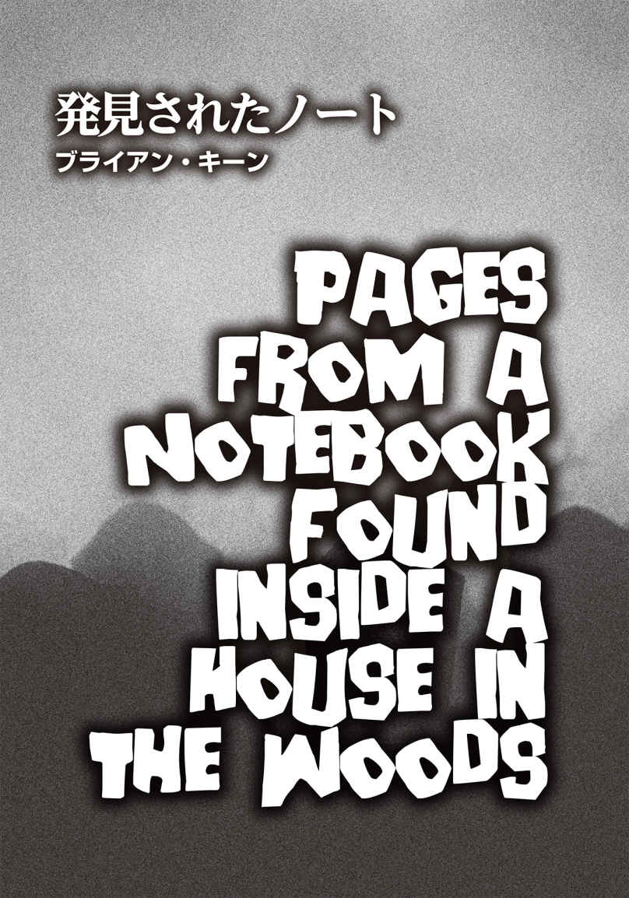
ブライアン・キーン
Brian Keene
PROFILE
小説家であり、コミックブックの原作者であるキーンは、ホラー、クライム、ダークファンタジー作品をメインとした50編を超える小説を著してきた。彼の2003年の小説『The Rising』は、ゾンビ系ポップカルチャーに影響を与え、しばしばゾンビ作品にクレジットされている（ロバート・カークマンの『ウォーキング・デッド』のコミックブックやダニー・ボイル監督による映画『28日後...』など）。
Twitter：@BrianKeene
今となってみれば、あれはたぶん愚かな考えだった。しかし、ジョンが俺たちに説明したときには、そんなふうには思えなかったのだ。銀行強盗は骨折り損だと彼は言った。銀行側が今利用しているセキュリティ技術を考えてみろ、と。スーパーマーケットや商店で強盗を働くのもバカげている──大勢の客をコントロールするのは難しいし、現金よりクレジットカードで買い物する客がほとんどだし、英雄を演じたい善意の一般市民がゴロゴロいるからだ。ジョンはこう提案した。
「その代わり、コミックブック・コンベンションを襲ってみよう。狙うのは、サンディエゴで開催されるような大型のコミコンではなく、ペンシルベニア中央部の田舎で行われる小規模の地域イベントだ」
というわけで、俺たち──俺、ジョン、タイニー、フィル、マルコの計画が決まった。俺たちは変装することにした。あとで目撃者が俺たちの格好を説明することになったら、四人の犯人のうち、二人はスーパーヒーローで、あとの二人はエイリアンとピエロだったと証言するだろう。タイニーは車で待機しておくので、コスチュームは着ることはない。俺たちは登録エリアに向かい、持っていた銃を見せ（他の出席者は小道具用の銃だと勘違いしていた）、現金を全ていただいた。登録カウンターで対応していた女の子たち──名札には「カレン」と「アリシア」と書かれていた──は、何が起きているのか咄 嗟 に吞 み込めていないようだった。カレンは、「だからぁ、これはコミックブック・コンベンションなんですけど」と何度も繰り返していた。
とにかく儲 けはたんまり出て、俺たちは誰も殺さずに済んだ。
すぐに〝殺 戮 〟は始まったのだが、俺たちが始めたわけじゃない。
俺は悪党ではない。ああ、たぶん悪い奴 ではある。だが、そこまで悪人ではない。俺には女房も子供もいる──シェリーとピート・ジュニアだ。息子はまだ二歳で、父親似だとよく言われているものの、俺はそうは思わない。息子の大きくてきれいな茶色の目は、母親譲りだ。人は、家族を養うために、するべきことをする。ハーレーダビッドソンの工場で働く者もいれば、製紙工場で働く者もいるだろう。会社員にしても、セールスマンにしても、家族を食わせるために仕事をする。俺？ 俺の生 業 は強盗だ。とはいっても、誰も傷つけたことはない。財布の中身ならなんでもいいと、行き当たりばったりの犯罪に走る頭の悪い路上強盗でもない。大きな場所──俺みたいな奴から金品を保護する保険に入っているような店やイベントなど──だけを盗みの対象にしているのだ。
妻のシェリーと息子のピート・ジュニアに会いたい。二人が元気なことを願っているし、彼らの場所は状況が違っていてほしい。しかし、二階に上がって窓から死人の群れを見下ろすと、その希望はたちまちしぼんでしまうのだ。
とにかく、コンベンションでの盗みは滞りなくうまくいった。外に出るまでは、順調だった。表に足を踏み出すなり、複数のパトカーのサイレンが聞こえてきた。至るところで音が鳴っていたので、俺たちのもとにサツが集まってくるのではなく、あちこちで追跡劇が展開されているのかと思ったのを覚えている。救急車のサイレンも聞こえた。そっちも音の鳴り方が違っていた。普通の人間なら、サイレン音の違いなどわからないだろうが、俺は職業柄、聞き分ける必要があるのだ。
今思えば、あのときの警察は俺たちを包囲しようとしていたのではなかった。俺が言っているのは、問題はそこではないということ。歯車が狂い始めたのは、タイニーのせいだ。俺たちは、入念に計画を練り、調査をし、逃走ルートを考えた。タイニーが車をチェックしたことをわざわざ確認しなかった。それは奴の仕事だ。奴の唯一の任務だった。有効なナンバープレートと車検証を付けた車を用意することが。そして、ヘッドライトとブレーキランプが点 くかどうかを点検し、整備不良や違法改造でおまわりに止められてキップを切られるような車ではないことを確かめる──実に簡単な仕事だ。そして、タイニーはそれらをちゃんとやってくれた。口が酸っぱくなるくらい俺たちがタイニーに言ったからだ。まさか、ガソリンは満タンにしておいたのかと奴に訊 ねなきゃいけないとは、夢にも思わなかった。
コンベンションの会場だったホテル〈ホリデイ・イン〉から四ブロック走った街の外れで、車はガス欠になった。しばらく罵 声 と怒号が車内に満ちていたが、結局俺たちは自分たちが置かれた現状を受け入れざるを得なかった。通りかかったステーションワゴンをマルコがカージャックしようと試みたが、銃を構えたピエロを見たドライバーは驚 愕 し、急ハンドルを切るや猛スピードで走り去ってしまった。
現金入りのバックパックを背負ったジョンが先導し、俺たちは線路沿いの小道を進むことにした。彼はタイニーを何度も罵 った。フィルもジョンを真 似 、さらに口汚い言葉を並べた。マルコはステーションワゴンの運転手に対する文句を垂れていた。俺は黙って歩き、いざ走って逃げなければいけない事態に備え、体力と呼吸を温存していた。タイニーも口を閉ざしたままだったが、彼の場合は、恥ずかしさと自己嫌悪で俺たちの前で泣くのを堪 えていたからだろう。
耳に入ってくるサイレン音はどんどん騒がしくなり、パトカーの数が増えているのがわかった。途中で突然、どこかの誰かが金切り声を上げていた。しかし、かなり遠くの方だったし、俺たちとは関係ないと判断した。もっと厄介なのが時折鳴り響く銃声で、様々な方角から聞こえてきた。
「一体何が起きてるんだ？」
フィルが不満そうにつぶやいた。「これ、俺たちのせいじゃないな」
「もしかして、戦争が始まったのかも」と、タイニーが肩をすくめた。
しばらく歩き続けた俺たちは、廃工場──ペンシルベニアでは木やコンビニと同じくらい当たり前に出くわす──にたどり着き、変装用のコスチュームを脱いだ。マスクを取ることができ、俺はホッとした。計画実行前にマスクを装着するなり、すぐに顔は汗だらけになり、かけたままのメガネはずっと曇っていたからだ。
周囲には悪臭が漂っていた。工場の敷地内、あるいは線路の上に動物の死 骸 でも転がっているのかもしれない。そのことは敢 えて話題にはしなかったものの、タイニーとフィルも匂いに顔をしかめている。俺たちは用なしとなったコスチュームを廃油用の二百リットルのドラム缶の中に捨て、次にどうすべきかを話し合った。
死人を最初に見かけたのは、そのときだった。
俺たちの左の方で金網のフェンスが音を立てたので、全員がそちらを向いた。工場の駐車場を囲むフェンスは錆 びつき、ところどころがたわんでいる。足元に広がるアスファルトもあちこちひび割れ、穴が開き、裂け目から生えた雑草が茶色くしなびていた。
俺たちは、どうやってその男が死んでいるとわかったんだろうか？
まあ、一番の指標となったのは、そいつの喉が右耳から左耳までパックリと裂けていたことだと思う。男のシャツもズボンも血だらけになっていた。傷口はおぞましい状態で、カミソリのような鋭い刃物で切られたものではない。喉に大きくできた切創は笑っている顔のようでもあり、まるで顎の下にもうひとつ顔があり、こっちにニヤリと笑いかけているみたいに見えた。噂 で、このエリアにカルト集団が移ってくると聞いたのだが、それと何か関係があるのだろうかとチラリと考えた。しかし、もっと根本的な問題に目を向けた。こんなひどい怪 我 を負っているのに、どうしてこの男は立ち、なおかつ歩けるんだ？
そいつは俺たちの方を見ていた。瞬 きもせずに。はっきり言って、怪我以上に目がヤバい状態だった。俺からしてみれば、セメントで固められたような目だ。この男は死んでいる。こんな目をして生きている生物などいない。いたとしても、おそらくサメくらいなものだろう。
フェンスが再び音を立てた。見ると、そいつはよろめく足で、こちらに向かってこようとしている。四 肢 の関節がうまく嚙 み合っていないのか、その動きはひどく奇妙でバラバラだった。口はポカンと開いているものの、声は発していない。開いた喉の傷口の奥で何かが動いているのが見えた。声帯なのか？ わからないが、気になった。
自分でも驚いているが、俺たちは逃げ出さなかった。なぜ走り去らなかったのか、その理由は定かではない。他の連中の胸中を代弁することはできないが、俺の場合、単に走って逃げようという考えが浮かばなかっただけだ。俺はそこに立ち尽くし、そいつをじっと見つめていた。自動車が衝突事故を起こす瞬間みたいに、そいつが俺たちに迫ってくるのがスローモーションのように映った。怖かったとか、危険を感じたとか、そのときの気持ちは覚えていない。ただ、その男に関する細かなこと──どんな匂 いがしたか（俺たちが廃工場に到着して気づいた悪臭の出 処 はそいつだったというわけだ）とか、皮膚の色や質感（薄汚れて灰色になった目の粗いガーゼのようだった）とかは覚えている。とりわけ目は、強烈な印象だった。その男は死んでいた。だが、動いていた。
そして、腹を空 かせていたのだ。
他の四人は、しばしの間、口をあんぐりと開けて棒立ちになっていたが、フィルはハッと我に返って拳銃を引き抜き、「それ以上近寄るな、クソ野郎」と威 嚇 した。
その死人の口は、哀れなほどモグモグと動いていたが、やはり声は出てこなかった。
「俺は本気だぞ」
フィルはそう言い放ち、一歩足を踏み出した。
それでも男は足を止めなかったので、業を煮やした彼は大股で前進し、相手の胸に銃口をぐいと突きつけた。すると突然、男はフィルの襟首に両手を回した。驚いたフィルはわめき、引き金を引いたものの、銃声も弾も死人の体内に吸い込まれ、くぐもった音しか聞こえなかった。さらに二発、フィルは発砲した。弾丸に貫かれるたび、男の身体は弾み、ぐらついた。一瞬、男はフィルを摑 んでいた手を離したかに見えた。だが、そうではなかった。男の頭が前に傾いたと思った次の瞬間、そいつはフィルの首筋に嚙みついたのだ。
フィルは絶叫した。残りの四人も叫んだ。
男の頭が後ろにぐらりと傾くと、嚙みちぎられたフィルの肉と皮が口から垂れ下がっているのがわかった。彼の首は大きくえぐれ、表面が赤く泡立ったかと思うや、鮮血が噴き出した。それはまるで、フィルの体内に園芸用のホースがあって、水道を開栓したかのような勢いだった。フィルは銃を地面に落とし、痙 攣 しながらも男に殴りかかった。死人の男は音を立てて戦利品の肉片を嚙みつつ、少しぐらついて下がったものの、まだフィルを摑んだままだった。白く濁った目は、ほとばしる真っ赤な血をぼんやりと眺めている。
とうとうフィルは立っていられなくなったのか、力なく地面に膝をついた。手で傷口を押さえ、必死に出血を止めようとしつつも、懸命に口を開け、俺たちに何かを訴えようとしていた。しかし、血がゴボゴボと音を立てるだけだった。
ジョンとマルコの拳銃が火を噴き、男の胴体に風穴を何個も開けた。今回、銃声はくぐもった音にはならず、その鋭い音で俺は耳鳴りがした。空 になった薬 莢 が、次々と土やアスファルトの上に落ちていく。被弾するたび、男は身体を捻 り、揺らしていたが、発砲が止まると再び前に進み、フィルに手を伸ばしていた。銃弾のひとつが額の真ん中に命中し、ようやく男の動きが止まった。そして、あたかもスイッチが切れたみたいにその場に崩れ落ちた。
マルコは男をつま先で突いていた。俺は脈を確認しようとし、フィルに駆け寄って膝をついた。その直後、誰かに肩を触られ、思わず叫びそうになったが、それがジョンだとわかり悲鳴を吞み込んだ。ジョンは俺の後ろでしゃがんでいた。
「フィルの脈は......ありそうか？」
「わからない。腕が血まみれでぬるぬるしてるせいか、脈を取るのが難しいんだ」
ジョンはフィルの腰を触り、そこで拍動を感じようとし、俺は喉の怪我をしていない側面に指を滑らせた。
「ダメだ。脈は感じられない」と、ジョンは肩を落とした。
俺も同じだった。息を吐き、首を横に振った。
「心臓マッサージをすれば、病院まで持たせられるかもしれない」
現実を受け入れられないタイニーがそう提案した。
ジョンは腰のベルトに拳銃を差し込んだ際、小さく声を上げた。どうやら腹に当たった銃身がまだ熱かったらしく、彼は慌ててそれを引き抜いていた。
「ねえ、何かしなきゃ」
タイニーは泣きそうな顔で訴えている。
「いいか。フィルは死んだんだ」
俺はタイニーをまっすぐに見据えて言った。「俺たちにできることはない」
「ここから離れないと」
ジョンは周囲を見回している。「誰かに銃声を聞かれたかもしれない」
マルコが同意してうなずいた。「急ごうぜ」
彼とジョンは線路へ向かって歩き出した。俺は後ろ髪を引かれる思いでフィルの死体を一 瞥 し、小走りに彼らの後を追った。
「タイニー、行くぞ」
俺は肩越しに声をかけた。「ジョンたちは正しい。俺たちがフィルのためにできるのは、捕まらないことだけだ」
俺たちが土手を下り始めたとき、フィルが起き上がった。彼は唸り声を上げ、頭をガクガクと揺らし、歩くのを覚えたばかりの幼児のような動きをしていた。一瞬、俺は自分らが間違っていたのではないか──やっぱり彼は死んでいなかったのではないかと、思った。だがすぐに、二つの点に気がついた。彼の傷口からの出血は止まっていた。そして、その目は......。
今回、銃を最初に抜いたのは俺だった。最初に出会った生ける屍 は、腹に何発喰 らっても動きを止めなかった。息の根を止めるには──。俺はフィルの頭を狙った。一発目の弾丸は、彼の喉の左側を削り取っただけだった。フィルは少し前のめりになり、うめいていた。もちろんそれでは動きは止まらなかった。二発目は左目の上に当たり、脳 味 噌 の一部が後頭部から飛び散り、アスファルトの上にまだら模様を作った。フィルは撒 き散らかされた脳 漿 の上に倒れ、再び死んだ。
俺たちは走った。線路をたどり、森の中へと入っていった。
この家を偶然発見するまでの間に、俺たちを追いかける死人たちは結構な数になっていた。奴らは大股でよたよたと歩きながら、俺たちの後をついてきたが、一歩前進するごとに腐敗は進み、服が脱げるように、身体の一部や内臓がぼとぼとと地面に落ちていた。幸いなことに、連中は走れなかったので、俺たちが走っている限り、追いつかれることはなかった。ただ、あの凄 まじい悪臭は防ぎようがなかった。とはいえ、死人という死人が皆、鼻が曲がるほどの臭気を放っていたわけではない。少なくとも〝新鮮な〟腐敗臭ではない者もおり、見るからに死後数日は経 っていた。そういった連中は、路上で車に轢 かれてぺしゃんこになった動物が歩いているかのようだった。だからといって、真夏の今、それは問題を何も解決していない。熱気と湿気は強烈な悪臭に拍車をかけているだけだ。風も吹いていなかったので、臭気は霧のごとく空気中に漂っている。
フィルとフィルを襲った男の例から判断すると、奴らにダメージを与えるには、頭を狙うしかないらしい。腕や脚を失った死人、内臓がはみ出ている屍、おぞましい傷を負った死者を目にしたが、全員こちらに歩き続けていた。初めのうち、連中の歩みを止めるべく、俺たちはかなりの弾を無駄にした。離れた場所から標的の頭に命中させるのは、テレビでは簡単に見えたものの、実際はかなりの高難度だった。最悪なことに、銃声が連中の気を引いてしまうのだ。結局俺たちは、単に死人たちを避けることに集中した。
見つけた家の描写に時間を費やすつもりはない。これを読んでいる誰かなら、すでにどんな家なのか想像がつくだろう。森の中にぽつんと建つ古民家だ。この地域では、似たような田舎の一軒家があちこちで見かけられる。崩壊した鶏小屋や大きく傾いた納屋とは異なり、この家は驚くほどまともな状態だった。割れている窓はないし、屋根に穴も開いていなかった。ドアが閉まっていたので、誰かが住んでいるのかと思ったが、中に入って見ると、どこもかしこも埃 まみれで部屋中が蜘 蛛 の巣だらけだった。もう長いこと誰も住んでいないらしい。
床に散らかっていた分厚い本の数々を片づけ、窓の前に埃を被 った棚を移動させ、カビの生えたソファを押して玄関の入り口にバリケードを築いた（もちろん、ドアは最初に施錠した）。勝手口は冷蔵庫で開かないようにし、一階の窓は全部塞いだ。こうして、ようやく俺たちはホッとひと息つくことができた。こんなふうに落ち着けたのは、コミックブック・コンベンション会場に入って以来だ。しかし結局、連中は俺たちの居所を突き止めたらしい。姿は見えなくても、匂いと音が死人たちの接近を知らせている。
最初の数時間は緊張の連続だった。唸ったり、吐息のような音を出したりして、生ける屍たちが壁や窓を叩 き、ドアを触りまくる間、俺たちはずっと息を潜めていた。だが、〝要塞〟は耐えてくれた。しばらくして、どうやら大丈夫そうだと判断した俺たちは気が楽になり、家の他の部屋を探索する気持ちの余裕ができた。タイニーに裏口、マルコに居間の見張りをさせ、ジョンと俺が家中を調べることにした。電気は止まっていたものの、戸棚に大量の缶詰と乾燥食品がしまってあった。一階の納戸で、六ケースの天然水のボトルと二ケースの炭酸飲料も見つけた。すぐに餓死することはなさそうだ。できるだけ節約して、最低でも飲み水を長く持たせよう。
奇妙なことに、以前ここに住んでいた者たちは、よほど慌てて逃げ出したらしく、ほとんどの所持品は置きっ放しになっている。壁には額に入った家族写真が掛けられ、思い出の品と思われる物が棚に飾ってあった。たくさんの衣類がクローゼットに残っており、ほとんどがカビ臭く、白くかぶれていたものの、それ以外は立派なままだ。冷蔵庫内の食べ物は（バリケードを築く際に見つけたのだが）腐ってからずいぶん時間が経過して、流しに放置された汚れた食器は、外にいる連中と同様、胸が悪くなる状態になっていた。この家の住人は、銃器さえも置き去りにしていた。俺たちは二階で、美しい木製の銃ケースを発見した。ジョンはライフルを手に取り、俺はショットガンを拝借した。タイニーとマルコにも他の銃を渡した。正直に言うと、状況は何も変わっていないのに、どういうわけかショットガンを握っただけで気が楽になった。拳銃では味わえなかった気持ちだった。
だが、残念ながら、その感情は長続きしなかった。
その女性を最初に見たのは、タイニーだった──。
俺たちは交代で睡眠を取ることにした。二人が一階の番をしている間、別の二人が二階のベッドで眠った。そのときはジョンと俺が見張りをする番で、午前二時を過ぎた頃だったと思う。外の死人たちは相変わらず騒々しかった。台所でインスタントコーヒーが入った容器を見つけたので、水のボトルにコーヒーの粉末を入れて搔 き混ぜようとした矢先、タイニーが叫び出した。
ジョンも俺も大急ぎで二階に上がり、ちょうど寝室から飛び出してきた寝ぼけ眼 のマルコと危うくぶつかりそうになった。ベッドにいたタイニーは上体を起こしており、目を大きく見開いて俺たちを見つめ、訳のわからないことを口走っている。なんとか落ち着かせ、話を聞くと、次のようなことだった。
タイニーが寝ていると、誰かがベッドに腰かけるのを感じ、マットレスのスプリングが何かの重みできしむ音を立てた。ハッとして起き上がったとき、彼はマットレスが沈んでいるのを見た。まるでそこに人が座っているかのように。しかし実際には誰もおらず、再びマットレスのスプリングが鳴ると、マットレスの沈んでいた箇所も元通りになった。間髪置かずに、今度は床の上を歩く足音が聞こえ、タイニーの目の前にひとりの女性が現われたのだ。彼女は部屋のドアを開けて肩越しに彼を見つめ（タイニーは「ゾッとするようなまなざしだった」と振り返っている）、やがて姿を消した。
ジョンもマルコも俺も悪い夢を見たんだと決めつけたが、タイニーは夢などではないと言い張った。彼が眠れないから見張り番を変わると言ってきたので、俺は提案を受け入れることにした。三人は俺をその場に残し、部屋から出ていった。マルコは寝床に戻り、ジョンとタイニーは階下に降りていった。俺はため息をつき、ベッドに横になった。服は着たままだ。疲労困 憊 だったので、靴を脱ぐのも忘れるところだった。カビ臭さはあったものの、枕の感触はこの上なく心地よかった。
突然、俺のいた寝室のドアがバタンと閉まった。あまりの勢いでちょうつがいが揺れ、俺はもちろん飛び起きた。眠気も吹き飛んでいた。壁の向こう側からマルコのわめき声が聞こえ、階下からジョンとタイニーが「何の音だ!? 」「何が起きた？」と問いただす大声も耳に届いた。
結局、その晩は眠れなかった。
次の日、俺たちはタイニーが見たものは悪夢などではなかったという証拠を一日中突きつけられることになった。ドアも戸棚も開けたり閉まったりを繰り返し（なんの規則性もなかった）、家中に足音が響き渡っていた。何かが何度もコーヒーテーブルをコツコツと叩き、流しの蛇口が勝手に開閉した。俺たちは、誰かに見られている感じがした。ずっと。
三日目、マルコもタイラーと同様、女性を目撃した。彼女は階段の最上段にいて、降りてくる間に消えたのだという。言っておくが、マルコは人を威嚇するほどの巨漢にもかかわらず、全く鈍臭くはない。彼は、表にいる屍の数を確認しに二階に上がっていった。階段の途中で足を止め、窓から外を見ていた。やかましさから判断して、他の者の騒音に引き寄せられ、さらに大勢が集まってきていると思われた。そして、マルコが階段を再び登り始めたのを俺は覚えている。ジョンが言った皮肉に反応し、マルコは返事をしようと振り返り、口を開けた。その途端、いきなり大きな強打音が鳴り、彼は後ろ向きのまま飛んだのだ。階段から足が離れ、一番下まで一気に転がり落ちた。まるで誰かに押されたかのような落ち方だった。マルコから、何が起きたのかを直接聞くことはできなかった。なぜなら、彼は落下と同時に首の骨を折り、俺たちが駆け寄るまでに事切れていたからだ。
数分後、マルコは起き上がった。外にいる腐った連中と同じく、不気味な唸り声を上げている。ジョンはすかさず彼をもう一度死なせた。その銃声で、外の死人たちが興奮しているのがわかった。もはや俺たちは誰も眠らなかった。居間に集まり、必死で策を練ろうとした。
朝までに、ジョンは助けを呼びに行くと心を決めた。タイニーと俺は、その案には乗り気ではなかった。あれ──ずばり、幽霊と呼ぼう──と家に残りたくない一方で、俺たちは一瞬だってドアを開けるのは嫌だった。何があっても、あの死人の大群を家に入れるリスクを冒したくはない。しかし、ジョンは俺たちを説得した。いつも彼には言いくるめられてしまう。強盗を働こうと持ちかけてきたときとまるで同じだった。彼は、コミコンで奪った金を俺たちに置いていくとまで言った。
ジョンの案はこうだ。
タイニーが玄関のドアから離れたところの窓をガタガタと揺らして音を立て、屍たちの気をそらす。俺がほんの少しだけ玄関のドアを開け、ジョンを外に出す。それから俺たちは再び玄関のドアを内側から施錠し、ソファを戻して入り口を塞ぐ。ジョンは死人の数が少ない方角を見出し、森に逃げ込んで連中をまく。そして、救助を求めるというものだった。しかし、強盗の件と同様、すぐにとんでもない事態に直面することになった。
なんと、玄関のドアを開けることができなかったのだ。タイラーは連中の気を引くのに素晴らしい仕事ぶりを見せてくれたものの、ドアはびくともしなかった。本 締 錠 は難なく開けられたにもかかわらず、ドアノブを引っ張ってみても、扉はうんともすんとも言わない。ジョンもドアを開けようとしてみたがダメで、次は二人で引っ張ってみた。やはりダメだった。すると、自分たちの見ている前で、開けたばかりの本締錠が、ゆっくりと元に戻っていったではないか。ひとりでに。俺たち三人は誰も触っていないというのに！
「あの女の仕業だ。彼女は俺たちを外に出したくないのか......」
呆然とドアノブを見つめながら、俺はそうつぶやいた。
「クソッ！」
ジョンは声を荒らげた。「おい、幽霊女、聞こえるか？ おまえもおまえの家もクソくらえだ！」
彼はそう吐き捨てるなり二階に駆け上がった。タイニーと俺も慌てて後を追った。二階の窓を開けようとしてもびくともしなかったので、ジョンはライフルの銃尻で窓ガラスを叩き割った。俺たちが止めるよりも先に、ジョンは外へ出て屋根に上り、雨 樋 からぶら下がった。そこから手を離し、彼は茂みの中に落下した。一瞬、姿が見えなくなったものの、ジョンはすぐに立ち上がり、こちらに手を振ると、木々の間を駆け出した。タッチダウンを狙うフットボール選手よろしく、彼は死人たちを巧みにかわしていく。その姿を見た俺は、これはいけるかもしれない、とかすかな期待を抱いた。
ところが、一 縷 の望みはものの見事に打ち砕かれた。連中は彼をたった数メートルしか走らせなかったのだ。あっという間にジョンは連中に取り囲まれてしまった。大群に襲われた彼の身体は、見るも無残に引き裂かれた。
ここからは距離があったため確かではないのだが、連中にひとしきり食われた後、ジョンの残骸の口と目が動いた気がした。おそらく彼の頭部がまだあったため、生ける屍になったのだろう。しかし、身体がほとんど食われてなくなっていても、首から上がきれいに残っていたら、生き返るということなのか。あまりにおぞましく、俺はそれ以上考えるのをやめた。
その翌日、残っていたボトルの水が全て、台所の床に撒き散らかされているのを俺たちは見つけた。
タイニーと俺は、眠らないと誓い合ったが、俺は結局睡魔に負けていまい、壁に寄りかかって舟を漕 いでいた。そのとき、ショットガンの銃声が響き、俺は目を覚ました。
自殺だったのか、それとも幽霊がそうさせたのかは定かではない。少なくとも、タイニーの頭部の大半が吹き飛んでいたので、蘇 った彼に食われる心配はなくなった。
とうとう、俺と死人たちだけになった。外の死人と家の中の死人──幽霊──と俺だけ。恐怖もパニックも通り越し、今の俺はもはや何も感じなかった。眠れない。喉がカラカラだ。
妻のシェリーと俺は、息子のピート・ジュニアが生まれる前、よく映画を観に行っていた。幽霊屋敷もののホラー映画を観た帰り道、シェリーは俺に訊 いた。なぜ屋敷にいた人々はさっさと出ていかなかったのか、と。なかなかいい質問だ。当時は答えられなかったが、今ならその理由がわかる。彼らが出ていかなかったのは、幽霊が人々を行かせたくなかったからだ。タイニーが自殺した後、俺は何度かやってみた。幽霊は、まだ俺にドアを開けさせるつもりはないらしい。
表の死体たちは休むことなく動き回っている。だが、俺は？
俺はというと、ここに座り、一冊のノートに全てを記しながら、玄関のドアをじっと見つめている。それがひとりでに開く瞬間を待ちながら──。
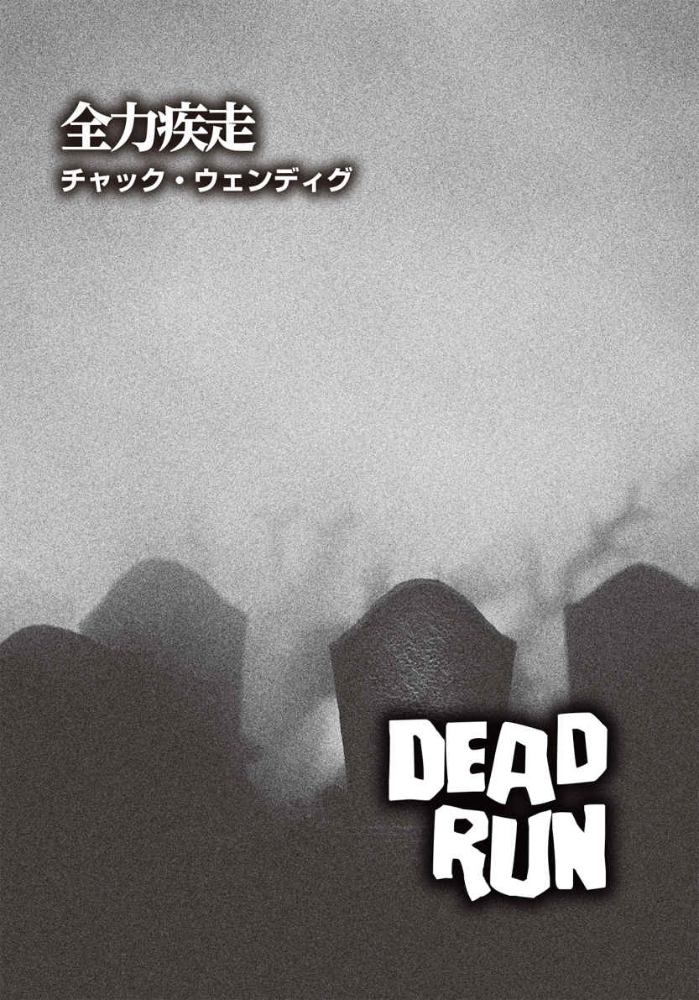
チャック・ウェンディグ
Chuck Wendig
PROFILE
アメリカの小説家、コミックブックの原作者、脚本家、ブロガー。彼は、オンラインブログ「Terribleminds」で知られ、2015五年の『スター・ウォーズ アフターマス』（ヴィレッジブックス 刊）は、ニューヨーク・タイムズのベストセラー小説となった。他に『ゼロの総和』（ハーパーコリンズジャパン 刊）などがある。
Twitter：@ChuckWendig
気つけ薬で起こされたことなど、それまで一度もなかった。だから、ビリーにそれをやられたときには、鼻の奥と脳天に、崖の上から牛の大群が降ってきたかのごとくガツンと来た。俺の頭は勢いよく後ろに傾き、約五秒間、全てが高速で回転していた。
だが、動いたのは俺の頭だけだ。俺の手は？ 身体の後ろで縛られている。で、俺の足はというと、身体の下で固定されている。一体どういう状態なのか、把握するのに少し時間がかかった。
俺は椅子に縛りつけられている。
粘着テープをずいぶん気前よく使ったものだ。ぐるぐる巻きでびくともしない。
ビリーの顔が徐々に見えてきた。緩みきった不潔な頰。手入れされてないボサボサの髪。ニヤリと笑った口元からは、糸切り歯が覗 いている。
「兄貴、あんたを捕まえたぜ」
それが、最初に彼が発した言葉だった。
兄貴、あんたを捕まえたぜ。
善行でも施したような口調だった。俺の世話でもしているかのような（皮肉めいた言い方ではなかった）。
「ビリー、俺を自由にしろ」
「すぐに自由にするよ。たぶん」と、彼は言った。「たぶんね」
ビリーは俺の頰を軽く叩 いた。一、二、三回。親が子供に対して偉そうな態度でそうする感じで。
俺たちがどこにいるのかを訊 こうと思ったものの、ぼやけていた俺の目の焦点が合い、訊こうとしていた質問の答えがわかった。俺たちは、ウォレンポーパック湖近くに建つ両親所有の山小屋にいる。部屋の隅は蜘 蛛 の巣だらけで、まるで幽霊が佇 んでいるかに見えた。全てが脂で汚れた埃 を被 っている。ドアにはアーミッシュの魔よけが下げられ、革製のソファには、ばあちゃんが作ったキルトカバーが掛けられていた。キッチンは自分の右手にあり、廊下と二つの寝室は左手にある。窓は四方にあり、ガラスの向こうは漆黒の闇に満ちていた。
俺の銃。スミス＆ウエッソンＭ３２７。ごついグリップ。お馴 染 みのずんぐりした３５７マグナム弾。この親指みたいな銃弾が脳天に命中すれば、後頭部から脳 味 噌 が弾 け飛ぶ。万が一の場合に備え、常にこの銃をトラックに置いている。コヨーテからカージャック犯まで、道路の先で何が待ち構えているかわからない。そして今、事態はさらにひどくなっている。
「ビリー、俺たちはなんでここにいる？」
俺はもがきながら訊 ねた。
「マックス、理由はわかるはずだ。あんたなら」
「トラックは表か？」
「トラックは表だ。トレーラーも」
「じゃあ、俺を自由にしろ。俺たちは出発すべきだ。ビリー、ここでグズグズしてる時間はない。外の状況は悪化の一途をたどっている。何かが起きているんだ」
「確かに、何かが起きている」
「いいから早くしろ！」
俺は叫んだ。思った以上に怒気を含んだ物言いとなった。
「それはできない」
ビリーはうろうろと歩き出していた。部屋の中を行ったり来たりしている。板ばりの床のみずぼらしいカーペットにできた凹みを、何度も踏んで目立たなくしようとしているかのように。ひと足ごとに床がきしみ、例の厄介な死者たちみたいに耳 障 りな音を立てていた。
「ビリー、おまえ、ハイになってるな」
「少しね。錠剤を何粒か飲んだだけだ。いい感じの高揚感だよ。まともに頭が働く」
なんてこった。俺は声の抑揚を抑え、落ち着いて話そうとした。彼を威 嚇 したり、からかったりするのは逆効果だ。怖 気 づかせてしまう。
「ビリー、俺はおまえを迎えにここに来た。なぜなら......こんな状態だからこそ、家族は一緒にいるべきだと思ったからだ。ビリー、俺の家族はもうおまえしかないし、おまえの家族はもう俺しかいない。今、俺たち家族はお前と俺の二人だけなんだ」
俺は弟の目を見据え、できるだけ真 摯 に訴えた。「外で何が起きているのか、俺は見た。ニュース映像だけでなく、この目で実際に。高速道路でも、近所でもだ。だから、俺はおまえを迎えに行かなければと思った」
すると、洞窟内で反響する声のように、俺の中で母親の言葉が蘇 った。
弟の面倒をみて。ビリーにはあなたが必要なの。弟の面倒をみて。ビリーにはあなたが必要なの。弟の面倒をみて。ビリーにはあなたが......。
ビリーは足を止めた。両側の頰骨に届くくらい口角を上げて笑みを作っていたが、それはうれしさからこぼれたものではなかった。彼の表情には悲しみが宿っている。あるいは、息絶えた悲しみが顔に張りついたままになっているのかもしれない。
「わかるよ、兄貴。わかってる。あんたが何をしたかったのかも、僕はわかっているんだ。そして、あんたにそれをさせてやることはできなかった。これは奴 らの問題じゃない。僕たちの問題だ」
「俺たちはみんなを助けることができる」
「まずは、自分たちを助ける必要があるだろ」
「ビリー、いい加減にしろ！」
俺は冷静さを失いつつあった。頭に血が上り、頰がカッと熱くなるのを感じた。俺は弟に怒鳴りつけた。ツバが唇を濡 らす。興奮のあまり、意せずして彼の名前を何度も呼んだ。ビリーは精神的に脆 く、常に頭が混乱している。今まで、理路整然と物事を考え、実行に移したためしはない。俺の言葉が、狩猟用ナイフで木の枝を削るように弟を削 いでいく。ひと言ひと言が彼を傷つけていた。なぜわかるかというと、ビリーはパンチを喰 らっているかのごとく、何か言われるたびにギクリとして後ろに下がっているからだ。とうとう俺の怒号は、彼の臨界点を超えたらしかった。弟の次の行動は察しがついていた。案の定、彼はテーブルの下から道具箱を引っ張り出し、粘着テープを俺の顔に二重に巻きつけて黙らせた。そんなことをされても、俺の怒りが収まるわけではなかったが、ようやく黙ることができた自分に俺自身も安 堵 していた。しかし、粘着テープは俺の発言を止められても、思考までは止められない。
頭の中で俺は考えていた。〝奴ら〟のことを。
最初に見かけたのは、路上でだった。国道八十号線沿いの森から現われた少女が、腕を振り回しながらトラックの真ん前に躍り出てきた。風の中でドレスが揺れていたのを覚えている。俺は急ブレーキを踏んだ。少女は、ピータービルト社製の大型トラックが迫ってくるのに気づいて目を剝 いた。そして、よろめき、ショックで道路に倒れた。油圧ブレーキが金切り声を上げ、急停止したトラックが揺れた。俺は目をつぶり、高速道路を司 る神様が誰であれ、トラックがいたいけな少女を踏み潰していないことを祈った。
そのとき、森を抜けて何かが出てきた。
俺が〝何か〟と言ったのは、それしか言いようがなかったからだ。外見は人間の形をしていた。しかし、明らかに人間ではなかった。そいつはゆっくりとやってきた。片方の脚は使いものにならないらしく、ただ肉の塊 として引きずって歩いている。しかも、太ももから骨が突き出ており、膝の上で折った箒 の柄のように見えた。
ヘッドライトの明かりの中によろよろと入ってきたそいつは、顔の大半を失っていた。赤く爛 れた額は腐敗が進み、ボロ布のような頭皮が垂れ下がっている。顎は一見無傷に見えたものの、嚙 み合わせが片側に数センチずれており、ひどい空腹に苛 まれているのか、ガチガチと空気を嚙んでいた。そいつの全てが土気色だった。すっかり腐った肉の色をしていた。
ヒーロー然としてトラックから降り、助けを申し出ようかと思った。
しかし、俺は降車しなかった。
力任せにクラクションを鳴らすのが精一杯だった。ピータービルトのトラックのクラクションはなかなか優秀で、霧を切り裂いて出現する船を思わせる音を響かせた。クラクションの音で少女は目を覚まし、立ち上がるなり、森と反対の方向に走り去っていった。
クラクションは人間ではない奴の方の気も引いた。
そいつは俺に顔を向けた。太った野うさぎを飲み込もうとしているヘビよろしく、顎を大きく開け、舌を忙 しなく動かしている。
俺は車を急発進させた。こういった大型トラックは、アクセルを思い切り踏んでも飛び跳ねるように動き出したりはしない。加速するのに時間がかかるのだ。とはいえ、シューッという音を立て、巨大な丸太が転がるごとく圧倒的重量感を伴って前進する。俺の前に立つ奴は、そんなトラックの接近を何も気にしていないように見えた。ひるむどころか、そいつは向かってくるトラックに両の手を伸ばしたのだ。そうすれば、トラックの窓から俺を摑み出せるとでも思っているかのように。もちろん、そんなことはできなかった。たちまちそいつはヘッドライトの光に吞 み込まれ、バンパーが頭に当たって鈍い音を立てた。トラックとトレーラーの全てのタイヤが、そいつを踏み潰す感触が伝わってきた。ドスン、グシャッ、バリッと、次々に。
バックミラーで後方を見ると、テールランプの明かりの先に無残な姿を確認できた。轢 かれたリスのようにペチャンコになってもなお、そいつは動いていた。月の光でも摑むつもりなのか、必死で腕を上げ、天に向かって伸ばしている。
そいつは人間などではない。
自分の想像の産物でもない。あのおぞましい音だって空耳ではなかった。
二度目は、スーパーマーケット〈ジャイアント・イーグル〉の駐車場だった。ショッピングカート置き場の横で、その死人は、地面に横たわる男性──まだ息があった──に覆いかぶさっていた。倒れていた男性の後頭部から、まるでスープか何かのように、頭 蓋 の中身をすすっていた。驚いたことに、その死人には腹から下がなかったのだ。背骨が露出し、垂れ下がった臓物は途中で切れていた。つまり、そいつが何を食おうと、全て胴体の下に絞り出されるわけだ。その様子はソーセージ製造機を彷 彿 とさせた。
生きながら食われていた男性が絶叫した。俺は嘔 吐 した。
その夜、俺はもっと目撃した。相当な数だ。
道路沿いの森の中にいた連中が、よろめきながら陸橋を渡っていた。俺はトラックで数体を跳ねたが、止まらなかった。衝突しても前進した。どでかいタイヤがそいつらを踏み潰して吐 瀉 物 みたいにしても、俺は車を走らせ続けた。
計画を思いついたのは、そのときだった。
俺はトラック会社から、〈ジャイアント・イーグル〉の商品の運搬を任されていた。食品の運搬だ。冷蔵食品ではない。エンプ・エージー食品会社が、そのスーパーの商品の多くを納入していた。棚にある商品の五つにひとつが、エンプ・エージーの製品だろう。シリアル、スープ、スパイス、炭酸飲料、ボトルウォーターなどを扱っており、オーガニック製品や店のブランド製品も請け負っていた。食にうるさい客のための地元産の高級食材や、貧困層しか買わない安物もあった。つまり、店内のほとんどの商品を揃 えていた。
で、俺がそれらを運んでいたというわけだ。
一度に運ぶのは一種類の製品だけではない。トラックの荷台がシリアルだけで埋まっている状態ではなく、あらゆる品の箱がトレーラーに搭載されている。というわけで、サバイバルに欠かせない食品と水を、俺は確保していた。シリアルと炭酸飲料。ビーフジャーキーとレモネード。そんな贅 沢 な組み合わせも可能だ。
消防車のサイレン音が消え、ラジオ放送が途絶えたとき、俺は、何かとてつもなくヤバいことが起きたのだと悟った。いずれ事態は収束するのだろうが、おそらく今日ではない。ということは、この事態がなんであれ、何がやってくるにしても、自分は生き延びなければならないのだ。
だが、俺はひとりで生き延びられるとは思っていない。トラック運転手は孤独な稼業だが、何かに属してはいる。自分はアメリカという血管を流れる血液細胞のひとつだ。Ａ地点からＢ地点に移動するのが俺の仕事。この国を崩壊させるには、トラック運転手を絶滅させれば簡単だ。この国を守りたければ、トラック運転手を保護すべきだ。そうすれば、ひとつの国家として維持できる。
だから俺は自分に言い聞かせた。
俺は排除されない。
俺は思った。この計画 を道路上で実行してやる。
俺は高速道路を知っている。裏道も知っている。
俺はいい人たちが住んでいる街を知っている。
俺は誰が助けを必要としているかを知っている。
頭の中で構想が花開き、俺は興奮し、めまいがしそうだった。その高揚感は、粗 相 してしまいそうなほどの恐怖に打ち勝ち、俺は何かでハイになったような気分になっていた。車を走らせ、食べ物と水を分け与えるのだ。避難する街を見つけ、そこの人々を助けよう。このピータービルト社製の大型トラックが俺をそこへと導いてくれるはずだ。あの連中をやり過ごすこともできる。出くわすたびに撥 ね飛ばし、轢き殺せばいい。
しかしその前に、弟が必要だった。
ビリーは俺に話しかけ、目を覚まさせた。眠ったつもりはなかったが、どうやら寝ていたらしい。無精ヒゲの生えた頰から粘着テープが乱暴に引き剝がされると、激痛で鼻が鳴った。顎が胸につくくらい首を垂れていたので、目覚めて頭を急に起こした瞬間、首に痛みが走った。長いこと、悪い姿勢でいたせいだ。
「気候変動が──」
いきなりビリーはそう言った。一瞬、発言の最初の部分を聞き逃したのかと思った。彼はさらに言葉を続けた。「全てを溶かしている。はるか昔に氷に閉じ込められたトナカイを解凍すれば、炭 疽 菌 も放たれる。おそらくこの事態は、炭疽菌か何かのせいだ」
すると彼は俺を見た。「おや、起きたのか」
まるで俺が寝入ったのを知っていたのに、話し続けていたかに思えた。「僕は、気候変動のせいだと言ったんだ。人間は自業自得だよ。世の中の気温が高くなれば、病気が蔓 延 していく」
彼は歩み寄り、俺の口に貼 られていたテープの一部を剝がした。テープの切れ端 が口元に残ったままだったので、俺が話し出すと、それが蛾 の羽みたいにパタパタと揺れた。テープを剝がされた俺の頰は、平手打ちをされたみたいに熱かった。
「これは病気じゃない」
俺は顔をしかめた。「病気のせいでこんなことにはならない」
「わかってないな。僕は読書家だからいろいろ知ってるけど、兄貴は本なんて読まないだろ」
「漫画は読むぞ」
「それが問題なんだよ」
弟は指をパチンと鳴らした。「僕は文字だらけの本を読む。それが読書だ。蟻 を生ける屍 に変化させる寄生菌があるのは、兄貴も知ってるよね？ 脳に毒を注入してゴキブリを操るハチのことは？ 猫の糞 を介して人間の脳に寄生し、宿主となった人間の性格を変えてしまう寄生虫も存在する。ネズミから猫に移り、猫から寄生虫をもらった人間が最終宿主になるんだ。菌や寄生虫が何を起こすのか、僕たちは正確にはまだ解明できていない」
「そんなこと関係ない」
俺の声は少しうわずった。「俺とおまえじゃこの事態を根本的に解決することはできないだろうが、他の人々を助けることはできる」
「僕たちが互いに助け合うのは理解できる。家族だから」
「他に生き残った人々も助けることができる」
「その人たちは家族じゃない」
「家族である必要はない」
「必要はあるとも！」
弟は強い口調で返した後、彼は口を強く嚙みしめた。あまりにも顎に力が入っている様子だったので、歯が折れるのではないかと心配した。「家族でなくちゃ。母さんと父さんが言ってたじゃないか。家族が全てだって」
「親父は警官だった。もっと大口を叩いていた」
ビリーは一歩後ろに下がった。彼はいつだって独善的だ。己 を守るかのように腕組みをしている。「で、そのせいで父さんはどうなった？」
そのせいで親父は死んだよ、ビリー。俺たちには周知の事実だ。
「クソ野郎め。おまえはどうしようもなく弱い人間だ」
ビリーは俺の口にまた粘着テープを貼りつけた。
「兄貴は僕に感謝することになる」と、弟は言い放った。「僕たちにはお互いが必要だって、すぐに思い知らされることになるはずだ」
親父は警官だったから死んだ。一般的に思い浮かべられる殉職の仕方ではない。彼は撃たれて死んだわけではなかった。いつものように高速道路で速度違反を取り締まっていたときのことだ。彼がスピードを出し過ぎていた車を止め、ドライバーにキップを切っていると、購入したばかりだと思われるカマロの新車が、猛スピードでその現場を通りかかった。カマロの運転手は明らかに酔っ払っていた。次の瞬間、車のフロントバンパーの端が親父の腰に当たり、その勢いで親父は螺 旋 状に進むジェットコースターのように回転しながら跳ね上がった。彼の内臓のほとんどは瞬時に破裂した。腹から下が欠損していたあの死人と同じ状態で、大量出血して死んだ。
母親も故人だ。彼女の場合、死はゆっくりと忍び寄ったが、やはり下腹部に問題があった。結腸ガンを患い、母の腸は次第に機能を失っていった。何ヶ月も、何年もかけて。実際にガンがいつ発症したのかわからないから、正確な闘病期間は言えない。大腸ガンの末期は症状が重いものの、すぐには死なないので、俺たちはいろいろ話し合う時間があった。
母の顔は紙のように白くなり、一方で、目は真っ赤に充血していた。ある日、二人で会話したとき、彼女は俺の手を握った。日に日に弱っていたが、驚くほど強い握力だった。そして、母はビリーについて話し始めた。
「あの子は、あなたとは違う」
「わかってるよ。だけど、大丈夫だ」
「大丈夫じゃない。ビリーは協調性がないし、物事を秩序立てて考えることができないもの」
「そのうちなんとかなるさ」
「そのうち？ もうちゃんとしているべきよ。三十歳を過ぎているんだから」
俺は肩をすくめ、昔の大人に比べ、今の若者は成長するのに時間がかかる奴もいると話して聞かせた。それが単なる詭 弁 なのはわかっている。ある意味、ビリーがああなったのは、俺たちのせいだ。俺たちの彼に対する接し方がそうさせたのか、あるいはＤＮＡに仕込まれた何かがそうさせたのか。いずれにせよ、俺たち家族が彼をあんなふうにしたんだ。
「あなたはビリーのたったひとりの兄弟。お兄さんなんだから」
そう言う母は、まるで俺を咎 めているようだった。
「そんなこと言われなくてもわかってる」
「私が死んだら──」
「またそんなことを言う。死ぬって決めつけちゃダメだよ」
俺はそう返しつつ、母親の死期が近いと思っていた。母も俺もそれは感じ取っていた。まあ、誰だっていずれは死ぬんだが。死だけは、誰も避けることはできない。だけど、彼女の場合は、健康な人間よりも早くお呼びがかかっていた。今の自分たちは、切り立った崖に向かって車を走らせているのに、その先には三百メートルの断崖絶壁ではなく、普通に道路が続いているふりをしているのと等しい。
「私はもう死んでるようなものだわ。頭がもう働かないの。私が死んだら──異論は受けつけないわよ、今度は！ ──私が死んだら、弟の面倒をみて。あなたが彼の面倒をみるのよ！ ビリーにはあなたが必要なの。聞いてる？ ビリーはひとりではやっていけない。弟の面倒をみて。最後まで 」
「そうするよ、母さん」
「そうして」
「ああ、そうする」
「マックス、あなたはいい子ね」
「母さんがいい母親だったからだよ」
〝だった〟と俺は過去形を使った。現在形ではない。そうすることで、自分が面と向かって言いたくないことを暗に、だが正確に示したわけだが、そんなふうでしか言えない自分が間抜けな臆病者に感じた。俺は母をじっとみつめた。視線が突き刺さるくらい強いまなざしで。とはいえ、なんの意味もない。自分が放った言葉を取り消し、時を遡 って違う表現で言い直したりはできないのだ。俺が今できるのは、せいぜい微笑 むことだけだった。
そして俺は、彼女に約束した。
ビリーの面倒をみるよ。最後まで。
そういう経緯があって、俺はその晩、彼を迎えにやってきたのだった。
ビリーの荷造りにはあまり時間をかけさせなかった。彼は時間をかけ、スーツケースいっぱいに必要なものを残らず詰めたかったらしいが、無駄にできる時間はないと急 かした。俺は、あいつらをこの近所でも見かけていたのだ。ネズミが徘 徊 しそうなコンドミニアムが建つ一ブロック離れた場所から、叫び声が聞こえてきた。ちょうど田舎者たちが大麻や覚醒剤を売っている辺りだ。ビリーが荷造りを終え、俺は彼に計画を話した。トラックに乗って走り回り、人々を救うのだ。この世の終わりの日に、せめて人々を和ませようとアイスクリームを売る男みたいに、俺はどこか自分に酔っていた。弟は何も答えなかったので、俺は軽いをおしゃべりを始めた──。
ジャスミンだったか、あの娘 とまだ付き合っているのか？
（いいや、と彼は即答した）
あの質屋でまだ働いているのか？
（いいや。自分が辞めたのは店側のせいだ、と言って、彼はぶつぶつと不満を垂れた）
で、請求書の支払いはちゃんとできてるのか？
（もちろんできていると、彼はやけに身構えて答えた。つまり、支払えていないということだ）
俺は仕事──おそらくトラック会社の職──を紹介できると彼に話した。弟は自分と同様、大型自動車免許を持っており、かつて採石場のダンプトラックを運転していたことがある。だから、どうトレーラーを扱うかも知っているのだ。
ビリーが荷造りを終えたので、俺たちは表のトラックへ向かった。
そのとき、弟が芝 生 の上から何かを拾い上げた。
振り向いた俺は、それが素焼きの植木鉢だとわかった。枯れたゼラニウムが植えられたままになっている。ビリーは鉢植えを頭の上まで掲げた。
あっと思った瞬間、それは俺の頭に振り下ろされた。
次に気づいたとき、俺は両親の山小屋で椅子に縛られていた。そういうことだ。
若者ならやったことがあるだろうが、ビリーは、インスタント麺 を茹 でないでそのまま食っていた。まるでビスケットでもかじっているかのように、口を動かし続けている。大きな口を開け、麺に大胆にかぶりつくと、ボリ、ボリ、ボリと音を立てた。俺が見ていることに、弟は気づいたらしい。なぜなら、「コーンチップスの箱も見えたが、荷台の奥に押し込まれてたんでね」と言ってきたからだ。コーンチップスにたどり着くには、その前に置かれている箱を全部どかさなければならない。しかし、ビリーは何かにつけて「面倒くさい」「かったるい」と言い放ち、重い腰を上げようとしない怠け者だった。俺は「おまえがどんな最低な人間か教えてやろう」と言おうとしたのだが、粘着テープを貼られていたので、モゴモゴと口ごもるだけだった。
しかし、それでもビリーの関心を引くには十分だった。彼は目を丸くして近寄り、俺の口からテープを剝がした。
「食べたいのか？」と、弟は手にしていたラーメンの袋を俺の顔の前に突き出した。食べやすいようにプラスチックの袋を下げてくれたので、袋にシワが寄って乾いた音が鳴った。だが、俺は「要 らない」と首を横に振った。「いいから水を飲ませてくれ。喉がカラカラだ」
弟はうなずくと、「開けたやつがあるよ」とコーラのボトルを取ってきた。
炭酸がシューシューと音を立てて泡立っていたが、生 温 いコーラだった。やけに甘い液体はうまくはなかったものの、干からびた土に雨が染み込むがごとく、喉越しは格別だった。俺は喉を鳴らして夢中で飲んだ。一気に飲み干してげっぷをし、俺は顔を上げた。
「ビリー、いいか。ここには危険な奴がうろついているんだ。しかも、俺たちはひどく辺 鄙 な場所にい──」
弟は俺の言葉をさえぎるように返してきた。
「まさしく。ここにいれば、僕たちは見つからないよ」
「おまえはことの重大さがわかってない」
「何が周囲にあるってんだ？ 何もないよ」
「何もないだと？ ここから十キロも行かないうちに、キャンプ場が二つあるし、カーブを曲がったところには、古いメソジスト派の教会が建っている。そこには墓地もあるじゃないか」
「だから、これは病気だって。病気は、すでに死んでいる奴には移らないだろ」
俺をあざけるかのように、ビリーは声を立てて笑った。正真正銘のイカれ野郎というより、弟は何かのエキスパート然としていた。
こうなったら正攻法はダメだ。覚悟を決めた俺は弟に鋭い視線を向け、きっぱりと言った。
「ビリー、おまえと俺にはすべきことがある。まずはトラックに戻る。ここで起きていることについては全部忘れよう。俺たちは走り出したら、どこにも止まらない。他人を助ける必要もない。おまえと俺の二人だけのロードトリップだ。すぐに出発しよう。トラックには寝台も付いている。トレーラーはしっかりと施錠できるから安心だ。まさに動く要塞じゃないか」
この発言には、噓も含まれている。俺は自分の計画を諦めたわけじゃない。ビリーに俺の言葉を信じさせなければならなかったのだ。その気になってくれれば、俺は弟を殴り倒してどこへでも連れていけるし、あるいは森の中に放置して連中に食わせることも可能だ。
彼は明らかに俺の発言を鵜 吞 みにしていた。
「兄貴は外に出たいんだな」
手を振って俺の言い分を拒絶し、彼はこう続けた。「ちょっと強く叩きすぎて、頭が変になってしまったかな。いい？ 外は奴らがいる場所で、ここなら僕たちは安全なんだ。加えて、これは僕らの山小屋。僕たち家族の山小屋だ。兄貴、覚えてるかい？」
ビリーの目は、どこか遠くを見つめていた。そして、ニッコリと微笑んだ。「ここに訪ねてきたときのことを。外の焚 き火で炙 って食べるためのマシュマロの袋をいくつも買い込んでたっけ。フランクフルトソーセージも。父さんはパイプを吹かし、母さんはワインを飲んでいた。僕と兄貴は外で走り回って遊んだね」
それから、弟はため息をひとつつき、さらに昔を回顧し続けた。「あのキノコみたいなヌメヌメした草──シャクジョウソウだったかを裏庭で引っこ抜き、僕の頭になすりつけたことを覚えてるかい？ ヌメリが付いたところの髪を切らなければならなくて、母さんに切ってもらった。でも、切り過ぎてしまって地肌が見え、結局、僕は坊 主 頭 になったんだ！」
ビリーはロバのいななきに似た声を上げて爆笑し、しまいにゼイゼイと息を切らして涙ぐんでいた。弟はひとしきり笑い転げていたが、その反動なのか、急に感傷的な表情になり、ソファに腰を下ろしてじっと床を見つめていた。
俺は、覚えているよと言おうとした。ビリーが誰にも告げずにどこかに行ってしまい、俺たち家族が一日中心配したこと。彼が親父のタバコで遊んでいて、危うく山小屋で火事を起こしそうになったこと。理由はよく覚えていないのだが、とにかく何かに腹を立て、俺のウォークマンを湖に放り投げたことも、みんな記憶している。
しかし、俺はそれを言う機会はなかった。
なぜなら、言おうと思った矢先に音が聞こえたからだ。二人ともそれを聞いた。
外で、鋭い音が鳴ったのだ。枝が真っ二つに折れたときの音に似ていた。
ビリーはハッとしたものの、すぐにこう言った。
「なんでもないよ。きっとシカだ」
次に、足を引きずるような音が続いた。山積みになった落ち葉の中を歩くような音だ。ゆっくりと近づいてくる。歯の間から息が漏れるような音も聞こえた。
「銃を持て」
俺は小声で訴えた。
ビリーは声を出さず、口の動きだけで「何？」と訊いてきた。
「銃を持て」
ビリーはツバをゴクリと吞み込み、周囲を見回した。俺はリボルバーの場所を顎で示したが、彼は俺を見ておらず、最終的に自分でそれを見つけた。そして、震える手で銃を摑 み上げた。
ただの動物の可能性もある。
俺はそう思った。ビリーの言い分が正しいかもしれない。あるいは、生き残った誰かということもあり得る。だが、後者だった場合を想像し、俺は不安になった。生き残った人間が皆、避難する場所や助けを求めているとは限らない。こういった異常事態が起きた場合、ほとんどの人間は誰かを傷つけるより助けたいと思うものだが、中には、混乱のどさくさに紛れて、盗み、レイプ、殺人を犯そうとする悪い連中もいるのだ。そうだった、と俺は心の中でうなずいた。何が実際に起きていようとも、本当に危険なのは、新たに出現した者たちではなく、もともといる人間の方なのだ、と。
室内で、異様な静寂が広がっていく。
「ビリー」と、俺はできる限り小さな声で、だが、弟に聞こえるように呼びかけた。「粘着テープを切って、俺を自由にしろ」
弟は人差し指を唇に当て、「静かに」とジェスチャーを返してきただけだった。
俺はそろそろ我慢の限界が来ていたので、激しく叱 り出すところだった。
しかし、その機会はなかった。
突然、俺の後方の窓ガラスが割れたのだ。そして、細かな破片が足に当たる感触がした。背後で何が起きているのか、俺は見ることができなかったものの、部屋に誰かが侵入したのは人影でわかったし、ゴボゴボと喉が鳴る音を背中で聞いた。ぎくしゃくと動く手足。胴体からはみ出し、ぶら下がっているおぞましい内臓。ビリーが恐怖で大きく見開いた瞳に、それらが全部映し出されていた。彼は震えながらも、銃を持ち上げた。
俺は弟に叫んだ。
「撃て！」
ビリーは引き金を引いた。
ところが、弾丸は発射されず、カチリという音が鳴っただけだった。
クソッ。
彼は弾を装 塡 していなかったのだ。
俺も普段は弾を込めない。使わないときに弾を銃に入れっ放しにしておくのは違法だからだ。俺は、弾薬をすばやく装塡できるスピードローダーという装置をトラックの運転席の下に置いていたが、もちろんビリーは、そこを確認するなど思いもつかなかっただろう。彼はバカではないが、ハイになっていたし、普段から銃のチェックなどしたこともなかったのだ。
俺は、背後から何かに摑まれた。腐ってブヨブヨにふやけた手が肩の上に置かれると同時に、鼻が曲がりそうなほどの悪臭がした。真夏の運転中に、路上に放置されたシカの死体の横を通り過ぎるときに嗅 ぐ匂 いだ。甘酢漬けの死体というか、温まった吐瀉物というか、とにかく胸の悪くなる匂いだった。俺は叫び、できる限りの抵抗を試みた。そう、左右に椅子を激しく揺らしたのだ。
椅子が傾き、俺の身体を摑んでいた手が肩から外れたものの、俺は床の上に倒れ、肩をしたたかに打ちつけた。俺は首を曲げ、何が山小屋に入ってきたのかを見た。
ひとりの男だ。あるいは、男だった何か、とでも言おうか。土気色の頰には、どす黒くなった赤ワインの筋のようなものが何本も走っている。膨張したコルクのような目が、腫 れ上がった眼 窩 に辛うじて収まっていた。割れた唇からは液体が垂れ、黒く変色した鼻血がしぼんだ鼻 腔 から流れている。俺は、この男がかつてどんな人間だったのかを想像しようとした。血痕だらけのポロシャツ。裂けてボロボロになったカーゴパンツ。泥と血にまみれたデッキシューズ。たぶん、キャンプに来ていたんだろう。家族と一緒に。となると、既婚者で子供もいる。
が、そんなことはどうだっていい。
こいつが生前どんな人間だったにせよ、今の男は変わり果てていた。
キャンプに来ていた家族思いの男は、もはや存在しないのだ。
死と飢餓感が、グロテスクに絡み合っている腐肉の塊──それが今の男だ。
そいつは、よろよろと俺の方に向かってきた。
他に何をすればいいのかわからなかったが、とにかく腰を浮かせ、椅子を激しく床に打ちつけた。すると、そいつの足が、椅子の脚の間に踏み込んできた。それから前のめりになって、グラリと倒れた。
男の口が俺の顔の真上にあった。口 腔 内の朽 ちかけた歯。調教師の手から逃れようとするヘビみたいな動きをする舌。悪臭とともに、その口や歯や舌が迫ってきた。
ところが次の瞬間、重たく低い音が響き渡り、そいつの身体が俺の上にドサリと落ちてきた。
もはやこれまでか。俺は観念して目を閉じた。ところが何も起きなかったので、恐るおそる目を開くと、上からビリーが顔を覗かせていた。弟は、男の身体を俺から引きずり下ろした。そして、その身体をまたぎ、奴のポロシャツの胸ぐらを摑んで持ち上げ、瞬時に床に叩きつけた。
何度も。
繰り返し。
ほどなく男の頭が割れ、そいつはただの肉塊となって動きを止めた。何台もの車やトラックに轢かれたアライグマのようだった。
ビリーは俺を自由にしてくれた。今しがた起きたことで、すっかり混乱していた。俺も動揺していたが、少しはまともに考えられた。
「ここは安全じゃない」
彼はバッグに細々したものを詰め込んでいる。その声は震えていた。震えているというよりも、揺れ動いていたと言うべきか。「兄貴は正しかった」
「もういい。わかったから」
俺は弟をなだめるように言った。
「兄貴の計画通りにしよう」
「いいんだ。ビリー、もういいんだ」
俺はプライドを吞み込み、「おまえが俺の命を救ってくれた。一生忘れないよ」と告げた。
すると、彼は弱々しい笑顔を浮かべた。
「母さんが死ぬ前、僕に言ったんだ。兄貴の面倒をみてって。兄貴には僕が必要だからって」
それを聞いた俺は、思わず噴き出した。母が同じことを俺にも言っていたことは、敢えて明かさなかった。俺はただうなずき、そうだなと同意した。その通りだ。俺がここに弟を迎えに来た理由は、彼が必要だったからだ。
「僕、兄貴の面倒をみるよ」と、ビリーは言った。
「じゃあ、俺もおまえの面倒をみよう」
俺はそう返した。
トラックへ向かう途中、俺は見つけてしまった。ビリーの右上腕の横に、二ヶ所の半月型の傷があるのを。紛れもなく嚙まれた痕 だ。なんてこった。あいつは弟に嚙みついていたらしい。俺は胃が締めつけられた。ビリーが病気や寄生虫について語った全てが脳裏に蘇り、俺は彼が手にしている銃を見下ろした。運転席の下のスピードローダーには、即座に銃に装塡できるよう十分な弾が込められているはずだ。
そのとき、母の声が再び頭の中でこだました。
弟の面倒をみて。
弟の面倒をみて。最後まで......。
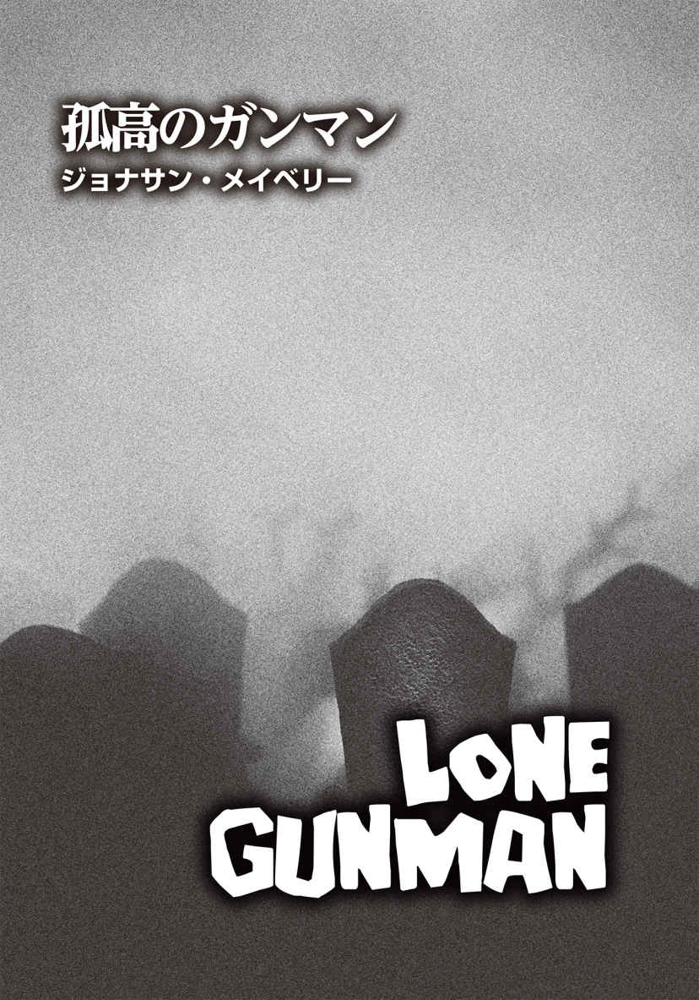
ジョナサン・メイベリー
Jonathan Maberry
PROFILE
ブラム・ストーカー賞を5回受賞した、ニューヨーク・タイムズベストセラー作家であり、コミックブック原作者。『Joe Ledger』シリーズ、『Rot & Ruin』シリーズ、『The Nightsider』シリーズ、『Dead of Night』シリーズをはじめ、多くの小説を執筆。彼のヤングアダルト小説『Mars One』は、『Joe Ledger』シリーズや『V-Wars』シリーズ同様、映画化の企画が進行中。『X－ファイル』シリーズや『Scary Out There』『Out of Tune』『Aliens：Bug Hunt』などのアンソロジー小説の編集者を務め、本著でもジョージ・A・ロメロと共同編集者として名を連ねている。また、『キャプテン・アメリカ』など、原作を担当したコミックブックも数多く、『Bad Blood』はブラム・ストーカー賞を獲得し、『Marvel Zombies Returns』はニューヨーク・タイムズのベストセラーに。2016年の初頭には、『V-Wars』のボードゲームも発売された。作家が集うカフェ〈ライターズ・コーヒーハウス〉の創設者で、作家のネットワークグループ〈ライアーズ・クラブ〉の共同発起人でもあるメイベリーは、プロの小説家になる前の25年間、雑誌のライターや劇作家としてキャリアを積む傍ら、マーシャル・アーツのインストラクターも務めていた。彼は、歴史エンターテインメントの専門チャンネル『ヒストリーチャンネル』のドキュメンタリー『Zombies：A Living History』やTVシリーズ『True Monsters』に専門家として参加。人気のポッドキャスト番組『Three Guys with Beards』では、メインキャスト3人のうちのひとりを務めている。カリフォルニア州デル・マーに妻のサラ・ジョーと暮らす。
Twitter：@JonathanMaberry
─１─
横たわるその兵士は死んでいた。
ほぼ死んでいた。
だが、完全に死んでいたわけではなかった。
世の中も同じだった。
ほぼ死んでいたが、完全に死んでいたわけではなかったのだ。
─２─
彼は埋められていた。
普通とは違い、地中二メートルの深さに埋葬されたのではない。土の中だったなら、ある程度の快適さはあったのかもしれない。棺 に入れられ、密閉されていれば、きちんとした手続きを取った措置だったとも言えたのかもしれない。
とにかく彼は、そのようには埋められていなかった。埋められている場所は墓地ではなかった。当然のことながら、父が望んだアーリントン墓地でももちろんなかったし、祖父母が大理石の墓石と緑の芝 生 の下で眠る、故郷カリフォルニアの小さな墓地でもなかった。
その兵士は、ペンシルベニア州のファイエット郡のとある町の薄汚れた場所にいた。地面の下ではなく、棺 桶 の中でもない。
彼は死体の下に埋まっていたのだ。
何十体もの死体の下に。
いや、何百体もの死体だ。死体の山ができていた。彼の周りに、うずたかく積み重なっている。その重みが彼を押し潰し、窒息させ、殺しつつあった。
自分は人を殺してきた。とはいえ、歯で相手に嚙 みつき、割れた指の爪で生肉を引き裂いていたわけでもない。そんな連中がはびこる今、少なくとも、そうでない方法で人を殺 めるのは、逆にすごいことだと思える気もする。それにしても、今の自分の状況は、漫画に出てきそうなジョークみたいなものではないか。漫画なら滑稽な場面として、笑い飛ばされるだけなのに。彼のような人間を殺す奴 は、己 の上に死体を積み上げられて殺されるという設定。けたたましい能動的な死を与えてきた猛 者 の静かな、受け身の死。墓石などないが、通りすがりの誰かが、もしかしたらそんなふうに死んだ者もいるかもしれないと、くだらない詩を添えてくれるかもしれない。
しかしながら、サム・イムラは、別に詩才のある感受性豊かな人間ではなかった。彼は詩を理解し、称賛していたが、詩の題材にされたいとは思っていない。願い下げだ。
彼はそこに横たわり、今の状態を考えていた。彼は死につつあった。これが現実で、実際の死だということは、あまり気にしていなかった。
いや、気にしてないなんて噓だ。せいぜい迫りくる死を正当化するのが精一杯。禁欲主義者が最後に己の手 淫 を許してしまうがごとく、恐怖を緩和させるため、彼は自分に言い聞かせた。
大丈夫だ。これで良き死を迎えられる。
そんなの、全くのでたらめだ。サムは現実に向き合おうとしない自分に訴えた。死に、いいも悪いもない。死は死だ。いい死などない。彼はずっと兵士として生きていた。最初は陸軍の一般部隊に入隊し、次に特殊部隊に配属され、〝軍事科学部門〟と呼ばれるグループと一緒に隠密作戦を行った。その後、フリーランスの兵士となり、通称〈ボーイスカウト〉という重武装兵士集団の第一人者として活躍した。彼は常に兵士だった。思い起こせば、幼少期から銃の引き金を引いてきた。あまりにも多くの場所であまりにも大勢を殺したので、途中からカウントするのをやめた。数を数えて自慢するなど、愚かな人間のやること。慢心したバカのすることだ。仲間のスナイパーで仕留めた人数を記録している奴はたくさんいた。サムはしなかった。そこまでクレイジーではなかったからだ。
だが、今になってみれば、数えておけばよかったとも思う。彼がこれまで銃火器、刃物、爆弾、素手で殺めた人間の数は、今、自分を埋め尽くしている死体の数に等しいかもしれない。
奇妙なものだが、それはそれで自業自得で実に公正な措置だと納得する自分がいた。そして、どこかの誰かが、サムに命を奪われた全ての人々が彼とつながっており、皆、ヴァルハラへと航海する黒船の乗客であるという美しい詩を詠 んでくれる。それが何かのメタファーだったとしても、やはり彼にはどうでもいいことだった。とにかく、サムは死につつあった。積み重なった悪鬼 の大量の死体の下で。連中の腐った死体は、かれこれ何時間も彼を圧死させようとしていた。だから、詩もメタファーもクソ食らえだし、あらゆることがクソ食らえだった。
自分は気が触れたのだろうかと、サムは思った。
気が触れたことを論理的に説明できる可能性はある。
「違う......」
サムは自分がそう言ったのを聞いた。単語を、言葉を発したのを。とはいえ、それが彼自身の口から出たのだとしても、正確には何を意味していたのかわからなかった。違う。自分は正気ではない？ 違う。自分は宇宙の実例のひとつではない？ 違う。自分は死なないのでは？
「違う」
彼はもう一度言った。自分自身の言葉として。今度は、その言葉の意味を理解していた。
違う。
俺は死んでいない。
違う。俺は死なない。
サムは、それがどういうことなのかを考え、拒絶した。
「違う」
彼は唸 るように言った。そして今、自分自身とこの崩壊した世界に何を言おうとしているのかを頭の中で反 芻 した。
違う。俺は死ぬつもりなどない。
ここではなく、今でもなく、こんなふうにでもなく。とにもかくにも俺は死なない。この人肉を食い漁 る奴らなどクソ食らえだ。この宇宙もクソ食らえだ。詩なんて知るか。神様はどっかに行ってくれ。何もかもクソ食らえだ。死ぬなんてまっぴらなんだ。
「違う」
彼は再びそう言った。今回は、自分自身がその言葉を発するのを聞いた。兵士として、生存者として、殺人者としての自分の声を。
死者たちの重みは、まだ彼を死に追いやってはいなかった。それでも、奴らは着実にそうしようとしている。とはいえ、この世の中は彼を数十年も生かしてきた。そして、今日もまだ生きている。そういや、そろそろ夜になっているはずだ。夜にだって自分の命を奪われてたまるか。絶対にそんなことはさせない。
だから、彼は動こうと試みた。
言うは易 く、行うは難 し。
死者たちの身体は、自動小銃の砲撃を受け、バラバラになっている。武装集団〈ボーイスカウト〉の生存者たちが、スクールバスに子供たちと搭乗していたデズ・フォックスという女性警官を助けるべく戦い、その間に他の大人たちが複数のバスに乗った子供たちを救出する際に、銃弾の雨を屍 たちに浴びせたのだ。彼らは全員、サファイア食品物流倉庫に立ち寄り、南下して救援本部に向かう前に物資の補給をした。死者たちも〝食料〟を求め、次々にやってきた。何千という数だ。女性警官フォックスと〈ボーイスカウト〉の面々は協力し合い、逃げ道を確保するために戦闘を繰り広げた。
まあ、そういう経緯だ。
その過程で、サムは死人たちの波に吞 まれてしまった。チームの狙撃者ジプシーが彼を助けようとして、人食い悪鬼たちを射殺しまくった。弾倉をいくつ空 にしたかは定かではない。当然のことながら、連中はどんどん倒れ、容赦なくサムの上に覆いかぶさっていった。結果、大勢の死者たちの下敷きになった彼を捜し出し、掘り起こそうとしてくれる者は誰もいなかったということになる。
死体に埋もれてほどなく、サムの耳にバスのエンジンが唸りを上げるのが聞こえてきた。ジプシーが叫ぶのも聞こえたが、彼女が腹を減らした死人たちに捕まえられたからなのか、それとも自分を救えなかった無念の叫びだったのかはわからない。どちらだったか見極めるのは不可能だ。ここから這 い上がって彼女の状況を確認しない限り、真相を知ることはできない。しかしながら、サムが倒れるのをジプシーが目撃していたとすれば、彼は死んだと思い込むのは当然だろう。だが、死んでもおかしくない状況だったとはいえ、簡単に死ぬわけではないのも明白だった。というのも、彼はケブラーの防弾チョッキ、強化腕パッドと脚パッド、スパイダーシルクで作られた手袋、強化プラスチックのバイザーが付いた戦闘用防弾ヘルメットという完全防備だったのだ。ゆえに、奴らの歯が彼の肉まで届くことはあり得ない。加えて、ジプシーとサムの攻撃は、死人を正真正銘 の死人にしていたのだ。この世で「死人」「死者」「屍」は、もはや単純に死んだ者を指すわけではない。「歩いたり生者に嚙みついたりする死者」と「本当に死んだ死人」の二つに分かれる。
自分はどうでもいいことばかり考えている。サムはそう悟った。人間の精神的な防衛機能か。恐怖を中和させようとしているのだろう。
「違う」と、彼はまた言った。その言葉は彼の命綱であり、自分を奮い立たせる鞭 でもあった。
違う。
彼は動こうとした。右手なら、二十センチほど動きそうだ。足の調子も悪くはなかったが、膝と胸と頭には死体が積まれている。この死体の山がどれほどの高さなのかは見当もつかない。まるで自分がパーティゲーム〈ジェンガ〉の一ピースになった感じだ。何体もの死体の重さがのしかかっていたものの、圧死するほどではないらしい。まあ、今のところは。ともあれ、この悪臭漂う腐肉の塊 たちが、本当に自分を押し潰してしまわぬよう、慎重に動く必要があった。
これは、物理学と工学のパズルであり、忍耐力と戦略が試される難題であった。サムは日頃から感覚派ではなく、思考派であることを誇りに思っていた。スナイパーは得てして思考派だ。冷静で、厳格で、正確。そして忍耐強い。
例外はあるが......。
彼が動き始めたとき、死体の山も動くのを感じた。最初は、単純に原因と結果、すなわち、ぐったりと自分にのしかかる重さの重力との反作用、それを支えている物が移動した場合にどう作用してくるかを考えていた。彼は一旦動きを止め、耳を傾けた。目も凝 らしてみた。射 し込んでくる光はなく、何も見えない。しばらくの間意識を失っていたはずだから、今は夕方か、それ以降のはずだ。つまり、もう夜になっている可能性がある。無数の死体の下で、彼は触覚と聴覚──手、腕、尻がゴソゴソと動くときに身体が何かに触れる感触と音──に頼るしかなかった。自分が動くたびに、死体や死体の一部がわずかに移動するのがわかった。
ところがそのとき、右側で何かが動いた。自分は右腕も右肩も動かしてはいない。その方向で自分の周囲に何か動きを及ぼすようなことは、断じてしていない。これまでの動きは全て、足や尻の可動域を作っただけだった。なぜなら、足や尻が最も力が出せる部位で、腕や肩よりも長い時間効果的な作業ができるからだ。彼の胸に直接乗っている死体やヘルメットの上に留まっている何かは、全く動いていなかった。
それまでは。
何かが少しだけ移動した。いや、ピクピクと引きつる感じだった。死体の山の内部で起きた小さな動きだ。何かが動いているのか？ サムのせいではない。
そいつが自発的に動いているのだ。
ああ、神よ。
彼はそう心の中で口走った。今度は左側で、何かがビクッと引きつったのだ。一瞬、彼は凍りつき、指も動かさず、呼吸もできるだけ浅くした。
彼は五分間、そのままで待った。十分間かもしれない。正確な時間などどうでもいい。
次はそこか。
そう、別の動きがあったのだ。彼の上で。近くではないが、そう遠くでもない。この山は一体どのくらいの大きさなのか？ 距離はどのくらいあるのか？ 右肩から二メートルほどか？
何かが確実に動いていた。
ぬるぬるとした重たい動きだった。ぎこちない、不器用な動きだ。しかし、動いたのは明白だった。衣服同士が擦 れる音や肌と肌が触れてずるりと剝 けるような音も聞こえた。近くで。かなり近い。二メートルどころじゃない。自分を塞いでいる死体の手足や身体が、次々と共鳴し始めたかのように。
神様、神様、神様。
正直言って、サムは神など信じていなかった。神どころか何も信じていない。そんなことは、今問題ではなかった。二人用の小さな塹壕 に無神論者はいないように、生きる屍の山の下に埋められた無神論者などいない。苛酷な極限状態では、神を信じてすがる者もいれば、なんでこんな目に遭 わせるのかと神を罵 り、呪う者もいる。天国でも地獄でもなんでもいいから、とにかくどこかに何かがいるはずだ。わざと自分を弄 んで喜んでいる、酔っ払った、意地悪で下 衆 な存在が。
何かが引きつるような動きが再び起こった。それまでよりも強く、はっきりと、そして近くで......。
クソッ。
そいつは、こちらに向かってくる。自分に引きつけられている。引きつけているのは、呼気か？ 体臭か？ それとも、自分が動いたせいか？ 距離は一メートル半くらいか？ まるで、死体の間を縫って這い寄ってくるヘビのような動きに思える。死体に湧 いた蛆 を貼 りつけつつ、ゆっくりと執 拗 に迫ってくる。そうだ。奴らのひとりに違いない。死んだ屍の中に埋もれた、死に損ないの死人だ。
クソッ、クソッ、クソッ。なんてことだ。クソッ。
サムの心臓の鼓動が早鐘のように鳴っている。いや、それ以上に速く、やかましい動 悸 だ。あの〝何か〟に聞かれてしまうだろうか？ まるでマシンガンの発砲音のようだ。何も見えない彼の目に、汗が垂れてきた。己が抱く恐怖の悪臭が鼻 腔 に刺さる。それは、彼を取り巻く腐肉、排 泄 物 、血の匂 いよりもひどかった。
逃げるんだ。逃げなければ。
彼は腰を捻 り、自分に覆いかぶさるたくさんの死体を支えるつっかえ棒になろうと試みた。死体の塊はグラグラと揺れ、彼が横向きになると、できた空間に沈み込んだ。太ももを引き上げ、動きに余裕を持たせる。物理学と工学の知識を駆使し、ゆっくりと着実に行動すれば、この〝競争〟に勝てるはずだ。彼が動いた際に立てる音の方が、何かが引きつり、擦れる音より大きかった。もはや静止して耳を澄ましている余裕などない。サムは、そこにあった硬直した死体に自分の膝の下の部分を当て、突っ張らせた。そして、位置を下げてから押した。五センチほど、その死体が動いた。彼は再び押し上げた。その動作をさらに六回繰り返したところ、突然、腰の上にかかっていた重みが、彼がさっき動かした死体の向こう側の空間へと傾き出した。
ジェンガだ。
彼はそう思った。
俺はたくさんの死体でジェンガをやっているのか。この世は完全にイカれてる。
そうしているうちに、ヘルメットと肩の上の重さもずれ、サムは後ろに向かって頭と肩を押し出してみた。少しずつだが確実に新たなスペースを得ていった彼は、上に乗っている死体を、自分が元いた場所へと滑らせていった。すると、死体の山に動きが伝 播 し、波のように揺れているのがわかった。そこでサムは一旦動くのをやめた。雪崩 のように死体の山が総崩れしたら大変だからだ。しかし、そんなことは起きなかった。
ふとサムは、何かが自分の上を這っていることに気づいた。肩の上だ。巨大な虫の脚の感触がした。上に移動した死体から彼の肩へと歩いてくる。タランチュラのように、ゆっくりとした忍耐強い動きだ。これだけの大きさは、タランチュラの他には考えられない。しかし、待てよ。ここはペンシルベニアだ。ここにタランチュラは棲 息 しているのか？ サムは定かではなかった。コモリグモならいる。丸網を張るオニグモとか、〝黒い未亡人 〟と呼ばれるクロゴケグモとかだ。しかし、自分の顔に這い上がろうとしている何かと比べると、コモリグモ科のクモはずっと小さい。カリフォルニアならば、そのように毛深くでかい虫はごまんといる。でも、ここではあり得ない。ここにタランチュラはいない。
クモの足の一本が彼の顎の横──プラスチック製のバイザーと顎のストラップの間──に触れた。何かを慎重に探っているかのような動きだった。クモの足の感触は柔らかく、恐るおそる彼の皮膚に触れ、それが何かを調べているふうに思えた。サムは急に吐き気を催し、身体の向きを変えてクモを避けようとしたが、どこにもそのスペースはなかった。すると、二本目の足も彼に触ってきた。三本目も。顎の上を進み、それは荒く呼吸する口へと向かっていく。
そのとき、サムはその匂いを嗅 いだ。
タランチュラは強い匂いなど振り撒 かない。砂漠の太陽の下で腐らない限りは。
この生き物は強烈な匂いがした。路上で車に轢 かれ、放置された動物の死体のような匂い。それはまるで......。
サムは悲鳴を上げた。
彼は悟った。今、自分の顔を這っているものが何なのか。それは、クモの太い脚ではなく、這うように蠢 き、何かを摑 もうとしている人間の指だった。ズルズルと滑るような音、時折ギクリと引きつる感じ。彼と一緒に埋められた死体の一体に違いない。完全に死んでいないのだ。そして、もちろん生きているわけでもない。肉体の腐敗は進む一方なのに、いまだ活力にあふれ、肉塊の山を超え、死体と死体の隙間を縫い、それは闇を抜けて向かってきた。生肉の匂いに引き寄せられて。そう、〝食べ物〟の匂いにつられて。
指が彼の唇と鼻を不器用にまさぐってきて、鋭い爪の先が当たるのがわかった。爪が刃物のように、彼の肉を引き裂こうとしている。
サムは叫んだ。叫びまくった。膝と足を使い、できる限り強く蹴り、押し、踏ん張った。痛い。のしかかってくる死体の重さは尋常ではない。あたかも死体たちは、本当に死んでまでも、サムを逃さまいとしているかのようだ。仲間の手が見つけた獲物に、その歯や舌が届くまで、押さえつけておくつもりなのか。
彼と人間ではない何かの力との格闘は続いた。彼が全身を覆う死体をどかそうとすると、筋肉が膨らみ、痣 を作り、張り詰めるのがわかった。関節と腰に激痛が走る。手は彼の唇の端 に到達し、フックのように指を曲げて肉を引きちぎろうとした。
自分の唇に触れる指に、彼は敢 えて嚙みつこうとはしなかった。死体は訳のわからない細菌やウィルスの宝庫だ。もしかしたら、すでに自分は感染しているのかもしれないが、わざわざ確実に感染して病気になるのは、まっぴらごめんだ。嚙む行為は、自殺行為......すなわち頭に銃弾をぶち込む行為に等しい。銃弾より死に至るまで時間がかかるだけだ。
「とっとと失 せろ！」
彼は唸った。そして、顔を横に向け、真っ暗な空間に口の中のある全て──唾液や血液、あるいは肉片──を吐き捨てた。できれば胃の中のものも全部嘔 吐 してしまいたかったものの、そこまでの時間はなかった。時間だけではない。空間的余裕も、精神的余裕もなかった。
というわけで、彼は少し気が触れた。
かなり正気を失った。
完全に。
─３─
死体の山が崩壊したとき、あの〝クモ〟も彼から離れていった。決定打となったのは、おそらく彼の繰り出した蹴りだろうが、それに重力と幸運も加わり、何十体もの死体が滑り落ち、あるいは転げ落ちていった。たぶん、〝サム・イムラ劇場〟をもっと見たいと望む酔っ払った神様のお力添えもあるのかもしれない。彼は自分自身も転がっていることに気づいた。死体の山腹を跳ねながら、何かにぶつかりながら、転がり落ちていた。その振動は、彼が身に着けていたごつい防弾チョッキのせいで増幅されていた。ケブラー製の防弾着は銃弾が貫通するのを防いでくれるが、身体に加わる衝撃は全く吸収してくれない。
舗道に落ちる直前に手から先に地面に着き、ぶつかった衝撃を軽減しようとしたものの、着地時の体勢が悪かった。彼の肩が最初に道路に当たり、その直後に全身がアスファルトに叩 きつけられた。激しい痛みとショックが、脳天からつま先まで駆けめぐる。自分の何もかもが傷ついたかに思えた。銃撃戦では頼りになる防弾チョッキさえもダメージを受けているかのように。
サムはその場に横たわり、大きく喘 ぎ、まともに呼吸しようとした。閉じたままのまぶたの下で弾 け飛ぶ火花をじっと見つめていた。少しして火花が収まったので、彼は目を開けて空を見ようとした。ところが、真っ先に彼の視界に入ってきたのは、空ではなく自分の両足だった。両足が自分の上にある。片方の足のかかとはティーンエイジャーの少女の喉に突き刺さり、彼女の身体がその脇にぶら下がっていた。もう一方の足は、全裸の太った男がかつて胃を収めていた辺りの腹 腔 にすっぽり入っていた。彼はかつて埋まっていた辺りを見た。崩れたとはいえ、その山には少なくとも五、六十体がまだ積まれている。周りには、何百という死体が散らばっており、ここで起きた激戦のせいで、バラバラになっていた。バスの車輪でぺしゃんこに踏み潰された死体もある。その連中は死んでいる。全て死人だ。しかし、おとなしく死んでいる者だけではなかった。轢 死 体 の中には、尻や足や背骨が潰されたり、粉砕されていたりしているにもかかわらず、身体を起こそうとする者もいた。六歳くらいの女の子が、金網フェンスに背をもたれかけて座っている。両足がなく、腕は一本だけで、下顎が欠損していた。その子の近くには、アジア女性がいた。整った顔立ちと見事なプロポーションの片 鱗 が見て取れ、生前はかなり美しかったはずだ。しかし、今の彼女の顔には、下顎から髪の生え際にかけて、八ヶ所以上の弾痕が点々と残されている。
とまあ、そんな感じだ。
彼の周囲にある死体は、どれもかつては人間だった。
それぞれが、それぞれの人生の物語を事細かく刻んで生きてきたはずだ。それが彼らをひとりの個人にしていた。だが、今は名もなき死体の一体に過ぎない。その場に横たわりながら、彼は自分にのしかかっていた死体の重みをまだ感じていた。数分前に死体の中にいたときと同じように。サムは骸 となった人間を誰ひとりとして知らなかったが、なぜか奇妙なつながりを覚えていた。
彼は目を閉じ、何も見ないようにした。しかし、連中がそこにいる事実に変わりはない。まるで網膜に焼きつけられたかのように、まぶたの向こう側に隠れているのだ。
そのとき、うめき声が聞こえた。
死体の山の反対側から聞こえてくる。言葉ではなく、助けを呼ぶ声でもない。うめき声だ。空腹のあまり吐き出された音。食っても食っても満たされない底なしの食欲が生むうめき声だ。しかし、それは全く訳のわからない、あり得ない欲求だ。なぜ死人に食べ物が必要なんだ？ 奴らが食べ物を摂取してなんになる？ 俺の雇い主が、犠牲者の死体を活性化させる寄生虫や、冷戦時代の生物兵器について話していたことがある。生物兵器の方は、遺伝子操作された幼虫を人間の血液中に放つと、大脳皮質と運動皮質の辺りに群がるらしい。とにかく、そんなのどうでもいい。科学なんてクソ食らえだ。目 の当たりにしている死体は科学じゃ説明できない。奴らはたった今、墓場から這い出てきたような感じで、普通の死体と異なり、謎だらけだ。サムはそれをなんと呼んでいいのかわからなかった。彼がはるか昔に神を信じていたとき、この連中は聖書にも出てこなかったし、日曜学校で教えられもしなかった。ラザロはイエス・キリストの奇跡によって死から蘇 ったし、言うまでもなくイエスも復活している。とはいえ蘇った際、イエスが十二使徒のひとりを貪 り食ったりしなかったはずだ。じゃあ、一体全体、こいつらの正体は？
うめき声は大きくなっている。近づいているのだ。
立て、この野郎！
内なる声がサムを叱 りつけ、彼はその声に反発した。
「なんだよ。ただここに横になって、あいつに『失せろ』って言うことはできないのかよ？」
ショック状態だからって、今動かなかったら、死ぬことになるぞ。
サムはふと、その言葉の意味を考えた。ショック状態？ ああ、そうかもしれない。脳 震 盪 か？ 戦闘用ヘルメットは爆弾や銃弾の金属片を止めることはできるものの、統計上、被っていても外傷性脳損傷の起こる確率は驚くほど高い。外傷性脳損傷で退いた最前線の兵士を、彼は大勢知っていた。今の自分は頭が混乱し、思考が寸断している。そして......。
人影が視界に入ってきた。這っているのではない。歩いている。奴らのうちのひとりだ。修理工の作業着を着ている。顔は咬 み傷だらけで、その目に浮かんでいるのは空腹と憎悪だけ。そいつは歩いていた。足を引きずるでも、のろのろと歩くわけでもなく、よろめくこともなかった。歩きながら空気の匂いを嗅ぎ、口から顎にかけて、血の混じった黒いよだれを垂らしている。
サムは咄 嗟 にホルスターに手を伸ばしたが、そこに拳銃は入っていなかった。ならばと、ナイフを探したものの、どこにも見当たらなかった。
クソッ、クソッ、クソッ！
死体の山から足を引き抜くと同時に、彼は腰の筋肉の内部で何かが爆発したかのような激痛を感じた。あまりにも強い痛みに、彼は思わず叫んでいた。
死んだ修理工は、声に反応し、こちらに顔を向けた。目の焦点が合っている。そいつは唸り、折れて血まみれになった歯を見せた。そして、こちらに向かってきた。歩くのが速い。彼が今まで見た他の奴らより速かった。あるいは、おそらく彼の状況処理能力が鈍っていて、そいつの歩調は普通なのに速く見えるだけかもしれない。戦闘の熱気の中では、世界が非常にゆっくり動いているように感じることがある。その場合、サムだけは自身の時間の流れで動けるので、時間が緩やかに流れる世界の中を慎重に歩み、時間をかけて全てを正し、全てを見渡し、一瞬一瞬自分の思いのままにすることができる──ように思えるのだ。しかし、今はそうではなかった。
耐えがたい空腹から唸り声を上げ、その悪鬼はサムに飛びかかってきたのだ。
皮膚を嚙み裂かれる寸前、彼は腕を上げ、相手の喉にチョップを見舞った。指先が喉笛にのめり込み、軟骨が砕ける感触が伝わると同時に、相手の唸り声がゴボゴボと液体が泡立つような音に変わった。修理工の身体がサムの上に倒れ込んできたので、その重みで彼の腰の損傷した筋肉が引っ張られ、彼はまた悲鳴を上げる羽目になった。やっと死体の山から抜け出せたというのに、再び死体に覆いかぶさられ、彼は窒息しそうだった。
裂けた喉に片手を突っ込んだまま、弧 を描くようにもう一方の手を上げ、横から相手の顔を殴りつけた。一回、二回、三回。そして何度も、何度も。骨が折れ、鼻が砕ける。相当な打撃のはずなのに、相手がダメージを受けている様子は見られない。そのうち、腰の痛みは耐えがたいほど強烈になり、彼に忍び寄ってきたあの何かの悪臭以上に彼に吐き気を催させた。修理工は嚙みつこうと歯をガチガチと鳴らしているが、サムはなんとか相手の口を近づけないようにしていた。とはいえ、口元はすぐそばにある。気を抜けば、たちまち肉を嚙みちぎられてしまうだろう。
彼は片足を地面にピンと伸ばし、その足を使って、無理やり尻と肩の向きを変えた。背骨の何がおかしくなっているのかはわからなかったが、脊 椎 の中で壊れたガラス片をすり潰すかのような痛みが走る。それでも、サムは動いた。タイミングを見計らって空腹の屍に思い切りパンチをして、彼の上から叩き落とし、その勢いを利用して尻をぐいと上げるなり体勢を変えた。二人は一緒に回転する形となり、今や修理工が下になり、サムはそいつの上に乗っていた。彼は自分の身体を持ち上げ、修理工の胸を膝で突いた。ちょうど、アスファルトと死体の山の境目にいたので、相手の身体を死体の山のスロープに押しつける形となった。サムは片手で男の顎を、もう片方の手で相手の後頭部の髪を摑んだ。
映画では、首をへし折るなど、いとも簡単なことのように見える。誰でもやれそうに思える。
映画だからだ。
現実には、首には筋肉も腱 も骨もあるわけで、想像以上に頑丈だ。しかも、映画でやっているのと同じ速さで、同じ角度に首を回すのは、まず不可能だ。人体というものは、そうたやすく壊れるようにはデザインされていない。その上、今のサムは疲れ果て、痛み、吐き気がし、弱っていた。
渾 身 の力で、男の首の骨を徐々に捻っていく。
なんてことだ。俺がこれほど強く首をねじ曲げて折ろうとしているのに、相手の首はゆっくりとこちらの力に抗 ってくる。それどころか、数センチずつ顔の向きを変え、執拗にサムの肉を嚙もうとしているのだ。彼は首を引いたり押したりするのに、前傾姿勢をとらなければならなかった。傷ついた身体で力を維持し続けるために、重力の助けを少し借りる必要があった。修理工の首は、尋常ではないほどねじれている。それでも首が折れることがなく、相変わらず歯を鳴らし、サムに食らいつこうとしていた。さらに、そいつの伸ばした指先は彼の衣服を切り裂き、ケブラー製の膝当てに穴を開けようとしている。
俺を食いたいのか？ 食料として？ 食うのは生きるためか？ 死んでいるのに、そいつは生きようとしていた。
ついに、首のねじれは限界を突破した。突然、首の骨が折れたのではなく、不意に圧力から解放されたのでもなかった。椎 骨 が限界点を超えてねじ曲がり、脳幹が脊髄とつながる地点が内部でギリギリと狭まるにつれ、修理工の首が立てていた音は、次第に、湿った何かをすり潰すような胸の悪くなる音になっていった。締めつけられ、圧迫され、首の中の堅強なものがとうとう断裂した。
爪を立てていた男の手が、急にだらりと垂れた。サムの下になっていた相手の身体は、抗うのをやめた。顎は耳 障 りな音を立てて折れ、口が大きく開いた。
サムは、相手の首が永遠に破壊されたことを確認した。一時的に休戦状態になっているわけではなさそうだ。首の骨が折れたときのひどい音が、それを物語っていた。修理工の内部で抵抗していた全てが解放されたのだ。
大きくため息をついたサムは、修理工と並ぶようにして地面に転がった。二人の身体は、肩、尻、太もも、足が接触しており、彼の指にはまだ髪が絡まっていた。まるで彼らは、みだらな行為を終えたカップルのようだった。一方は生きており、もう一方は生きてはいなかった。頭上の夜空には、木陰からカップルの行為を覗 いていた覗き魔よろしく、月が梢 の間で光っていた。
─４─
サムが立ち上がる頃には、月は木々の上高くに完全に姿を現わしていた。彼の腰はひどい状態だった。圧迫され、引っ張られ、切り裂かれ、それ以上に苛酷な仕打ちもされ、とても言葉で簡単に表現できるものではなかった。痛みに関しては耐性があると自負していたのだが、この激痛は限界を超えている。さらに、もし他の兵士が周りにいるときだったら、己を奮い立たせて毅 然 とした態度をとり、スタスタと歩くくらいできただろう。かつてのボス、レジャー大尉はどんな状況でも平然としていた人物だった。被弾していても、ジョークを言って笑い飛ばしていたのを見たことがある。
しかしながら、今、サムの周りには誰もいない。虚勢を張る必要はなく、弱さや脆 さを露呈し、痛みに対して白旗を上げるのは簡単だった。
自力で立ち上がるのに、三十分を要した。世の中が急に腕立て側転でも始めたかのごとく、景色がグルグルと周り、めまいのせいで吐いてしまった。胃が空っぽになるまで、彼は嘔吐を続けた。
シグザウエルを見つけるのに三十分を費やし、その弾倉を発見するのにさらに十五分かかった。弾は九発残っている。それから彼は、三体の死体の下になっていたある人物を見た。巨漢の男性で、サムと同じ、何も表示のない黒い戦闘ユニフォームを着ている。彼はふらつきながらも歩み寄り、慎重にその男性の横にひざまずいた。そして、上に乗っていた死体を一体だけどかし、それが誰なのかを確認した。顔を見たサムはショックを受けた。男性は、サムが所属する〈ボーイスカウト〉のメンバー、ダニエル・シュープマンだった。コールサインは〝ショートストップ〟。いい奴だったし、優秀な兵士だった。
そいつは死んでいた。喉を切り裂かれて。
ところが、突如としてショートストップの目が開き、視線がサムに向けられた。自分が知っているその男性──友であり、同じ志を持った兵士だった──は、こちらを見ているのではなかった。その目からは何も感じられなかった。生ける屍としての魂すらなかった。それが、この化け物の不気味な特徴でもある。目は魂の窓とされているが、彼が覗き込んだショートストップの茶色の瞳は、まるで空っぽの家の窓で、そこには虚無感しかなかった。
ショートストップの両腕は、身体の横で伸びたまま動かなかった。かつてのたくましい戦士の胸と肩は大きく肉がえぐられ、腕を動かそうにも動かすための筋肉がなくなっている。だから、たとえ自由の身になったとしても、彼はおそらく腕を上げることはできない。周囲に散らばる死体もそんな状態のものばかりで、ほとんどに欠損があった。人肉を食らう悪鬼たちの餌 食 となったせいだ。しかしながら、肉体の残 骸 と化してもなお、再び動き出す。わずかに残った身体だけでも、起き上がって生者を狩るには十分らしい。
サムは片手をショートストップの左胸に置いた。もちろん、心臓の鼓動は感じられないが、彼がどれだけ勇敢な心の持ち主だったかは覚えていた。高潔な男でもあった。一緒に飲んだり、冗談を言い合ったりしてきた仲間をそう表現するのは感傷的すぎると言われても、ともに〝死の影の谷〟を歩き抜いた戦友なのだ。ここに横たわって腐敗し、肉体が徐々に朽 ちて何もなくなるまで絶望的な空腹で徘 徊 するだけだなんて。とても彼にはさせられない。
「そんなの違う」と、サムはぽつりとつぶやいた。
拳銃には弾が九発入っているが、生き残るためには一発も無駄にはできない。それでも、今どうしても一発だけ使う必要があった。
闇夜に銃声が響き渡った。
サムは、ショートストップの傍 らに長いこと座っていた。その手はまだ、相手の胸の上に置かれていた。心臓はずっと静寂を保っている。サムは友のために涙を流し、この呪わしき世界を嘆いて泣いた。
─５─
サムは、食品物流倉庫の中でその夜を過ごした。倉庫内には、悪鬼が十一体うろついていた。芝生の手入れ道具が置かれたセクションで、彼は結構な重量の鉈 を二本見つけ、さっそく作業 に取りかかった。
やるべきことを終えた時点で、サムの身体は悲鳴を上げ、あまりの痛みで彼は立っていられなくなった。奴らがいなくなった倉庫のあちこちを物色したところ、幸い、痛み止めの在庫品が積み重ねられていることに気づいた。「すばやい効果」「持続する効 き目」とかなんとか、薬のボトルに宣伝文句が書いてあったが、とにかく六錠を手に取り、クソみたいな味の地ビールで飲み干した。結局、文句を言いつつもビールを六缶開けた。ドアには鍵をかけることができたので、彼は久しぶりに自分だけの空間を確保し、その夜は死んだように眠った。
─６─
目覚めたサムはまた痛み止めを飲んだが、今度は今流 行 りの電解質補給水とやらで喉の奥に流し込んだ。それからビーフシチューの缶を二つ開け、キャンプ用のコンロで調理した。
痛み止めを飲み、食事をし、睡眠を取る。その単純な繰り返しだったが、数日が過ぎても彼は生きていた。
痛みは、薬の謳 い文句とは異なり、ゆっくりと軽減していった。
その日の朝、サムは事務所に入るための鍵束を見つけた。そこにはラジオ、テレビ、電話だけでなく、グロック26 と空の弾倉が四つ、九ミリのホローポイント弾の箱が三つ入った鍵つきボックスもあった。彼は泣きそうになった。
電話は通じなかった。
サムはテレビを点 け、グロックの弾倉と彼が持っていたシグザウエルの唯一の弾倉に弾丸を詰め始めた。聞き覚えのある声が流れてきたので、彼は画面に顔を向けた。そこには、瘦 せ型のブロンド頭の男性が映っていた。スクールバスの子供たちと女性警官と一緒にここにいた、ケーブルテレビのニュース番組のリポーターだ。
〈ビリー・トラウトが、世界の終 焉 ともいえる現場から中継でお送りしています......〉
トラウトはたくさんニュースを伝えていたが、悪いニュースばかりでいいニュースなどひとつもなかった。彼の取材チームの車は、今、バージニアにいて、避難民であふれ返った道をのろのろと進んでいた。生者と死者との争いと同様、逃げようとする生存者たちの間でも、たくさんの諍 いが起きていた。
よくあることだ。
そう彼は思った。
人間の最悪の敵は常に人間だ。
正午になると、気分が良くなり、次の場所に移動したい衝動に駆られた。とはいえ一方では、この場所に引きこもっていたいとも思った。ここには、おそらく五年、いや十年は生きられるくらいの食料と水が蓄えられている。だが、後者を選択してもきっとうまくいかない。一週間も経 たないうちに、銃を口にくわえて引き金を引いているだろう。誰もが同じ行動を取るはずだ。孤独と信頼できる情報の欠如によって、人は二度と這い上がれない暗闇に閉じ込められてしまうのだ。つまり、自分以外の〝人〟を捜すことが賢い選択と言えるだろう。
まずは、移動の足だ。車を見つけ出さなければならない。
ここは、物流倉庫。言うまでもなく、トラック──セミトレーラーがあった。
一台ではなく、何台も。
そこでサムは四時間かけ、フォークリフトでセミトレーラーの荷台に生活必需品の箱を積めるだけ積んだ。武器として使えそうなものをできるだけ集め、それらも持っていくことにした。もし誰かを見つけたら、相手にも武装してもらう必要がある。この先、複数の生存者たちとグループになって行動と生活を供 にするケースに備え、寝袋、トイレットペーパー、紙おむつ、その他必要となりそうな物品も荷台に収めた。サムは実践的に問題解決を図るタイプだ。賢明で思慮に富んだ決定をするたび、彼は絶望の淵 から一歩下がったような気がするのだった。彼はあるミッションを計画しており、それに集中して精神を安定させていた。発見し、保護すべき人々がどこかにいる。ならば、彼らを発見し、守ってやろう。こうして、サムの目的ができた。
駐車場の隅に設けられた給油所で、車のガソリンを満タンにした。新たな人食い野郎が三体、柵の開口部からゆらゆらと揺れながら入ってきた。距離はあるものの、サムは迷うことなく始末した。ここを出発する際、あいつらと衝突したくはなかった。大型トラックの部類に入るセミトレーラーとはいえ、何かにぶつかればダメージを受ける。そのリスクは極力避けなければならない。
実用的に考え、行動する。それが堅実なのだ。
セミトレーラーを発進させ、交差点までやってきたサムは車を停車し、アイドリングしながら、どちらの方向に行くべきか考えた。バージニアに向かったケーブルテレビの取材バスを追って南下するのは意味がない。ビリー・トラウトが放送できる状態であれば、取材スタッフは生きているということになる。スクールバスと〈ボーイスカウト〉の生き残りも彼らと一緒にいる可能性が高い。ならば、自分の助けは必要ないだろう。スクールバスは物流倉庫から生活物資を山のように補給していたし、武装兵士が護衛しているのだ。
そこで彼は右に曲がり、ピッツバーグの北、ハリスビルにある銃専門店〈ナショナル・アーモリー〉に向かうことにした。店が無傷であれば、救援拠点を設置するのにもってこいの場所だし、万が一屍の巣 窟 になっていても、奪還するまでだ。
計画は立った。
サムはセミトレーラーを走らせた。
車のラジオを点けても、聞こえてくるのは悪いニュースと興奮状態になった人間の声ばかりだったので、うんざりした彼はダッシュボードの小物入れを探った。そこには、カントリーやウェスタン音楽のＣＤが何枚も入っていた。その手のジャンルの歌は大嫌いだったものの、ラジオのクソニュースや自分の考えで頭の中が満たされるよりはマシだ。サムは、ブラッド・ペイズリーという歌手のＣＤをプレイヤーに挿 し入れた。流れてきたのは、ケンタッキー州のハーラン郡の炭鉱夫たちについての歌だった。聴いていて楽しくなる曲ではなく、逆に憂 鬱 になりそうだったが、ドライブのＢＧＭとしては許容範囲だと思うことにした。
彼がエヴァンス・シティという小さな町に到着したときには、夜もかなり更 けていた。一日中走っても、夜になっても、運転中に視界に入ってきたのは、この世界の残骸だけだった。焼け野原になった町、黒焦げの車、ほとんど灰と化した農家の母屋、無残な焼死体などだ。路上には何千という薬 莢 が落ちていて、セミトレーラーの車輪が踏み潰して乾いた音を立てた。たくさんの生ける屍も見た。最初はあてもなくさまよっている感じだったが、トラックの音を聞きつけるや、奴らはサムの方に向かってきた。連中を撥 ねたくなかった彼は、なんとか避けようとハンドルを巧みに操った。それでも時には、回避が間に合わなかった。その場合、彼は車の速度を下げ、衝突の衝撃が少ないようにして連中を道路から排除した。何体かは地面に倒れてしまい、サムは不 承 不 承 奴らを轢いて前進しなければならなかった。二十四時間前には人間だった奴らを踏み潰し、砕きながらセミトレーラーを運転した。
田舎道を選ぶ方が悪鬼たちとの接触が少ないことがわかったので、彼は農場の方にハンドルを切った。途中、二度ほどガソリンを補給し、そのたびにトラックを守るべく、彼は銃弾を数発使う羽目になった。サムは優秀な狙撃者だが、動きが鈍い相手とはいえ、遠距離から一発で脳天に命中させるのは至難の技だし、加えて腰にまだ痛みが残り、鉈や斧 を使える状態ではなかった。最初のガソリンスタンドに立ち寄った際、彼は十九発を費やした。二度目の燃料補給時では十三発。銃弾のひと箱の半分以上がなくなった。これではダメだ。消費ペースが速すぎる。このままでは、せっかく手に入れた弾が長くは持たない。
エヴァンス・シティの外れにある墓地に通りかかったとき、彼は煙が立ち上っているのに気づいた。木にぶつかってひしゃげた乗用車一台、爆発したガソリン給油機の隣で焼け焦げた状態の小型トラック一台の横を、セミトレーラーで通り過ぎていく。しかし、それらが煙の出どころではなかった。なぜなら、トラックは焼け尽くされ、すでに火は消えていたからだ。
ほどなく農場が現われた。なんと、その母屋の前で死体の山が燃えているではないか。
彼は車を止め、目を凝らして周囲の光景を観察した。月が出ていて十分明るかったものの、サムはヘッドライトを点けたままにした。死体の山から高く立ち上り、揺らめく薄灰色の煙柱以外、動くものは見当たらない。
「クソッ」
そう言って彼はセミトレーラーから降りた。車のエンジンはかけっ放しだ。ほんの少しその場に佇 み、腰に激痛が走らないか、膝がきちんと動くかどうかをチェックした。シグザウエルが肩のホルスターに入っているのを確認し、両手でグロックを握りしめ、燃え盛る山の方へと近づいていった。
それは、彼が埋まっていたのと、ほぼ同じ高さの山だった。何十体もの死体が、何十体もの死体の上に重ねられている。見たところ、どの死体も硬直しており、四 肢 は高熱で丸まり、骨は火 床 の薪 のごとく炎に巻かれて縮み、焼け崩れていく。時折、パチパチと火花が上がり、暗い星空に届く前に消えていた。
サムは向きを変え、農場主の家へと歩き出した。彼は、経験を積んだ兵士ゆえ、戦闘の痕跡を読み取ることができる。彼が今見ている場所は、実際に熾 烈 な戦いが繰り広げられた場所だ。地面やポーチのあちこちには、死人たちのものと思われる血痕が残っている。血液は黒ずんでいたので、日光に当たったに違いない。ちょうど、太陽の光に晒 されて、ミミズが乾燥して黒くなり、しぼんでいくようなものだ。サムは倉庫から失敬してきたマグライトを点灯させ、光が進行方向を照らすようにして左手で握った。拳銃を持った右手を左手の上で休め、家の中へと入っていく。ライトの光と銃口が同じ方を向いているため、明かりが標的を捉 えると同時に発砲することができる。
誰かがこの場所を占領しようとしたらしい。見るからに、それは明らかだった。窓という窓は板が打ちつけてあり、家具は移動されてバリケード代わりに使われている。窓を塞いであったはずの板のほとんどは壊され、裂けた木 片 がおびただしい数の薬莢と血 飛沫 とともに床を覆っていた。部屋を抜け、キッチンまで行ったが、どこもかしこも同じ状態だった。この場所を保持し、要塞化しようと試みたものの、失敗したらしい。
二階はさらに血まみれだったが、もぬけの殻だった。階段の汚れ方から判断すると、複数の死体が引きずられて階下に運ばれていったようだ。
居間にあったドアのひとつが開いていた。それは地下室へと続く扉だった。耳を澄ましてみたが、何も音は聞こえてこなかったので、サムは地下室へ降りていくことにした。慎重に、暗闇に沈んだ室内をマグライトで隅々まで照らしていく。そこには、折り畳み式の木 挽 き台とベッドがあるだけだった。またもや、ここも血で染まっていた。まるで血の色のペンキをめちゃくちゃに塗りたくったかのようだった。肉片と骨片も落ちていた。
他には何もなかった。
他には誰もいなかった。
重い足取りで階段を上がったサムはポーチに出て、月明かりの中に佇んだ。この状況を静かに分析してみる。この家にいたのが誰であれ、抵抗を試みたが、戦闘に敗れたのは明らかだった。
となると、あの死体の山を積み上げたのは誰なんだ？ 誰が死体を引きずっていったのか？ 誰の薬莢が庭に落ちているんだ？
サムは使用済みの真 鍮 の薬莢をじっと見つめた。軍用のものではない。口径が三十ミリかそこらのものもあれば、二十二ミリのものもあり、さらに九ミリ弾のものもある。ショットガンの薬莢もあった。となれば、これを使ったのはハンターか？
おそらくは。
きっと、地元の警察も発砲したのかもしれない。
だが、それが警察のものだったとしても、なぜここに来た？ 救助任務があったが、到着したときにはすでに手遅れだったとか？ あるいは、なんらかの掃討作戦？ この田舎町の武装した住人たちが反撃した？
いくら考えても正しい答えは見つからない。
土の上には犬の足跡もあった。ブーツや靴が踏んだ痕跡も。大人数だ。十分に武装し、集団で行動していた連中に違いない。何か仕事をやり終えようとしていたのか。
そして、反撃があったとも考えられる。
ペンシルベニアに〈ボーイスカウト〉と一緒に来て以来、初めてサムは気持ちが高揚した。子供たちと女性警官を乗せたスクールバスも、武装集団の仲間も自分を置いて逃げ出した。見捨てられた感がずっとつきまとっていた。だが今、誰かがレジスタンスを組織したのだと思い、一筋の光が見えた気がした。たぶん、発足を言い出したのは、田舎者の陸軍兵だろう。だが、そこはあまり重要ではない。
サムは家の周りを歩き、足跡から何かを読み取ろうとした。ここに来たグループは、農場の敷地を越えて東に向かったようだ。だが、どこに行くつもりなのだろう？ 別の農場？ 町？
戦いがあるところならどこでも？ 彼らを必要としそうなところならどこでも、か？
「Ｈｏｏａｈ 」と、彼は吐き捨てた。昔のアーミー・レンジャーが「Ｆｕｃｋ ｙｏｕ （くたばれ）」から「Ｆｕｃｋ ｙｅａｈ （やったぜ）」まで、あらゆる意味に使っていた言葉だ。
東か。彼は思った。なかなかいい方角だ。まあ、他のどの方角でも同じふうに思っただろうが。おそらくこのハンターたち、もしくは田舎者の率いるレジスタンスは、自分たち自身を守っているのだろう。サムは自分が乗ってきたセミトレーラーを一 瞥 した。運んできた食料や自分のプロフェッショナルな助言が役に立つかもしれない。
だといいが。
彼は闇に向かって微笑 みかけた。きっとあまり愛想のいい笑顔ではない。ハンターの笑み。兵士の笑み。殺戮者の笑み。たぶん、自分を含め、そういった連中は、美しい笑顔を作るのが下手だ。とはいえ、笑顔は唯一、生者の特権である。
サムは笑みを浮かべたまま車に乗り込み、古い家屋の前で方向転換した。暗闇に沈む市道を見つけ、彼はセミトレーラーを走らせた。一路、東へと──。
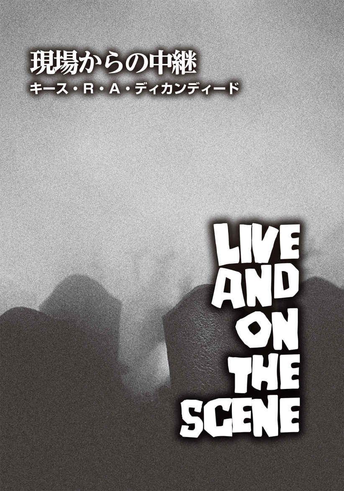
キース・R・A・ディカンディード
Keith R. A. DeCandido
PROFILE
ゾンビ映画のイカれた世界に真正面から取り組み、映画『バイオハザード』の初期3作やテレビドラマ『スター・トレック』シリーズのノヴェライズを手がけた小説家。20年以上、自分や他人が創作した何十もの世界を文章に綴り続けている。最新作は、ソー、シフ、ウォリアーズ・スリーが登場するマーベルの『Tales of Asgard』三部作、テレビドラマ『オーファン・ブラック 暴走遺伝子』の百科事典『Classified Clone Reports』。他にテレビドラマ『スターゲイト SG－1』のノベライズ、『Kali's Wrath』、『Furnace Sealed』で始まる、モンスターを狩るブロンクス出身のユダヤ人少年を主人公とした都会派ファンタジー小説シリーズ、中編小説『Super City Cops』三部作の3巻目『Secret Identities』、他に『Aliens：Bug Hunt』、『Baker Street Irregulars』、『A Baker's Dozen of Magic』、『Joe Ledger：Unstoppable』、『Limbus Inc.』三部作第3巻、『TV Gods：Summer Programming』、『V-Wars：Night Terrors』などがある。プロのミュージシャンでもあり、ベテランのポッドキャスターでもある。空手は黒帯二段の腕前。万年寝不足の多才で多忙なキャリアの持ち主。日本では、前出の『バイオハザード』の映画シリーズ『バイオハザード2 アポカリプス』『バイオハザードIII』（角川書店 刊）が邦訳されている。
Twitter：@KRADeC
ペンシルベニア州バトラーに建つ、アメリカの典型的な瀟 洒 な一軒家。ここに住む一家四人は殺害され、いずれの死体も無残に嚙 みちぎられていた。検死結果によれば、なんらかの動物に攻撃された可能性が高いという。しかしながら、このリポーターが目撃者のエラ・ライマーという女性にインタビューしたところ、彼女は、一風変わった話を語り始めたのだった。
「ええ、私は男の子があの家から離れ、足を引きずりながら歩いているのを見ました。その様子はひどく奇妙で、つまずきながら歩いていた......と言っていいかもしれません。男の子を呼び止めようとしましたが、聞こえていなかったのか、彼はそのまま歩き続けていきました。わかります？ 地面から足を上げていないんですよ。あんな歩き方、絶対におかしい。しかも、顔にはおびただしい血が付いていましたし」
インタビューの動画が切り替わり、リポーターひとりがカメラに向かって立っている。
「ミス・ライマーは、この少年のことを警察には伝えなかったそうです。犠牲となった一家を襲った動物の所有者が、この不思議な歩き方をする男の子だなんてあり得ません。事実が明らかになるにつれ、事件は新たな様相を示しています。ＷＩＣ－ＴＶニュースのハーヴィー・リンカーンがお伝えしました。では、スタジオにお返しします」
ハーヴィーは電話ボックスの前に立ち、地方テレビ局ＫＤＫＡのリポーターが公衆電話を使い終えるのを辛抱強く待っていた。ピッツバーグのものとは異なり、いかにも郊外に設置されていそうな全面ガラス張りの電話ボックスで、使用者の反応は丸見えだ。とにかく、ハーヴィーは待っている間、電話ボックスのガラスに近づき、自分の髪型が乱れていないかをチェックした。同行しているカメラマンのフランクに「ブライルクリームは、人気ナンバーワンの男性用ヘアクリームだとさんざん宣伝しているくせに、意外と効果がないんだな」と言われ、中継時に髪の毛が乱れていたのかと、ハーヴィーは気になっていたのだった。
ＫＤＫＡのリポーターの姿がいやにぼやけて見えるな、と思ったそのとき、ハーヴィーは自分がメガネをかけていなかったことに気づいた。
耳と鼻にプラスチック製のメガネフレームを載せるとほぼ同時に、ピッツバーグのリポーターが電話を切って、中から出てきた。
「お待たせ」
「どうも」
ハーヴィーはコイン投入口に十セント硬貨を入れ、局の電話番号をダイヤルした。
〈こちらＷＩＣ－ＴＶ〉
「やあマリア、ハーヴィーだ。ジャックと話せるかな？」
〈ちょっと待ってて。ボスが電話に出られそうか調べてみるわね〉
マリアがジャック・オールデンを捜しに行っている間、彼は公衆電話機の金属製の釣り銭ホルダーに映る自分の姿と歯をチェックした。
「クソッ」
彼は唸 るように吐き捨てた。歯の隙間にゴマ粒が挟まっていたのだ。ニュース業界に入った当初はモノクロ放送だった。それならゴマ粒はあまり目立たないだろうが、カラーの今はどうだ？ フランクの奴 め、ヘアクリームよりゴマ粒だろ！ 彼は、ゴマ粒のことを指摘しなかった同僚をうらめしく思った。一度、顔面にパンチを喰 らわせてやろうか。ハーヴィーは丁寧に手入れをした爪で、小さな黒い粒を取り出した。
〈ハーヴィー、今度はどんな文句を言うつもりだ？〉
受話器の向こう側から、テレビ局責任者の声が聞こえてきた。
「ジャック、取り立てて重要な用件ではないんだが、今日のライブ中継は大丈夫だったかな、と思って......」
〈問題ない。ただ、あれがライブ中継だと口にしてくれれば良かったかな〉
「あの映像、あとで他の番組で使うかもしれないと思って敢 えて言わなかったんだ」
〈君は自分のことばかり考えている。図星だろ？〉
「違うよ。あの事件のことばかり考えてる。なんと言っても、二十世紀では、ピロー・キラー事件以来だからな、バトラー郡で複数が犠牲になる殺人事件が起きたのは。もし必要なら、過去の資料を探って、週末の番組でピロー・キラー事件について取り上げるのはどう──」
上司は滔 々 としゃべるハーヴィーの言葉をさえぎった。
〈そんな時間はないだろう〉
「そんなの不公平だ。こっちは──」
〈人生が公平だったことがあるか？ とにかく、君が電話してくれて良かった。というのも、信じるか否かは別として、バトラー郡で複数の犠牲者が出た殺人事件が、また発生したんだ。ピロー・キラー事件以来、二件目だな〉
二度も言葉をさえぎられ、さらに愚痴るつもりだったハーヴィーは、思わず言葉を吞 み込んだ。
「なんだって？」
〈ウェスト・ペン通りとノース・チェスナット通りが交差する辺りへ向かってくれ。角に建つ家で死体が何体も発見されたそうだ〉
「任せてくれ」
受話器を置いたハーヴィーは、電話ボックスのドアを勢いよく開けて叫んだ。「フランク！」
名前を呼ばれたカメラマンは、まん丸の目を向けた。いつものことだが、迫ってくるヘッドライトに驚いて凍りつくシカを彷 彿 とさせる。
「で、俺はどうしたらいいんだ？」
ハーヴィーの声の調子で、何かが起きたとわかったのだろう、彼は身構えて訊 いてきた。
とりあえず、ゴマ粒の件は後回しだ。
「今、心配することは何もない。別の事件現場へ直行だ！」
「ああ、神様！ なんてこった。また起きたのか？」
ＷＩＣ－ＴＶの白いバンの助手席に乗り込み、ハーヴィーは言った。
「みだりに神様を口にすべきじゃない」
「この三日間で、バトラー郡とアームストロング郡だけで、複数が犠牲になった殺人事件が四件も連続で発生しました。私はその四件目の事件現場に来ています。似たような事件は、クラリオン郡、アレゲニー郡、ウェストモアランド郡でも起きています。郡の検死局と市、郡、州の警察はいずれも、この襲撃は野生動物によるものという見解を示していますが、目撃者の証言からは異なる可能性が垣間見えてきます」
リポーター単独で映るものから、彼にマイクを向けられた目撃者の男性の映像に切り替わる。
「隣の家からひどく騒がしい音が聞こえたので、様子を見に行ったんだ。全知全能の神に誓って言うが、私は本当に見たんだよ。家の中でエドナをむしゃむしゃと食べている男を！」
興奮して早口になっている目撃者に、リポーターは冷静に問いかけた。
「ミスター・ポージー、『むしゃむしゃ食べている』と、おっしゃいましたね。どういう意味でしょう？」
「そのまんまの意味だよ！ そいつはエドナの腕を食っていたんだ！」
「他の同様の事件現場でも、似たような目撃証言が出てきています。バトラー市警察署長のブランドン・ペインターは、この件について次のように話しています──」
映像が再び切り替わり、今度はペインター警察署長がカメラを見据えて話し始めた。
「人間が他の人間を食べるといった訳のわからん噂 が広まっているのは、好ましいことではない。その手の話は得てしてデタラメだし、一連の恐ろしい事件を解決すべく懸命に搜査している実直な警官たちにとって、なんの手助けにもならない。この職に就 いて三十年経 つが、私はそのような場面を一度たりとも見たことがない。こういった犯罪には、おかしな噂を広める連中がつきものなんだ」
憮 然 とした表情の署長から、画面は再度リポーターにバトンタッチされた。
「ペインター署長の確信とは裏腹に、これらの目撃証言は単に『おかしな噂』として切り捨てることはできません。実は、郡検死局の職員が匿名を条件にインタビューに応じてくれました。彼は私に、この連続殺人事件の犠牲者を襲ったのは野生動物と発表されているものの、既存のどの動物も、被害者の傷口の解剖結果と一致しないと断言しました。特に、この州で見られる動物ではないとのことです。地元の動物園からは、脱走した動物がいるとの報告はなされていません。ＷＩＣ－ＴＶのハーヴィー・リンカーンがお送りしました」
ＷＩＣ－ＴＶニュースのスタッフとの朝のミーティングに参加するため、ハーヴィーは会議室に向かっていた。事件の目撃証言のことで頭がいっぱいで、自分の足元を見つめて廊下を歩いていたのだが、リノリウムの床を高いヒールでコツコツと鳴らす音が聞こえ、彼は顔を上げた。目の前にリンダ・カミンが彼の行く手を塞ぐように立っており、彼は慌てて歩みを止めた。
「あなた、自分がシラミ同然だってわかってる？ 誰かの血を吸わないと生きていけない虫けらと同じってことよ！」
いきなり辛 辣 な言葉を浴びせられ、ハーヴィーは苦笑した。
「僕はリポーターだよ、リンダ。リポーターはみんな、ろくでなしの虫けらだ。この世界で生き延びるのは厳しい。君も殺虫剤を撒 かれればイチコロさ。僕同様にね」
彼が平然とそう言ってのけると、リンダの表情は見る見るうちに険しくなった。
「検死局職員のコメント、あれは私が入手した情報なのに！ 私が自信満々であなたに話したのを覚えてるわよね。私が使うはずだったのよ。よくも抜け駆けしてくれたわね！」
「おや、本当に？ いつ使うつもりだったんだい？ 君が教育員会のお偉方にインタビューした前か？ 後か？ それとも、井 戸 端 会議を取り上げ、ＰＴＡの内情を暴露したついでに？」
皮肉たっぷりに彼が返すと、リンダは口をへの字に曲げた。
「私だって立派なリポーターよ。あなたと全く同じ！ 私だって、この連続殺人事件に関われたかもしれない。誰にだってチャンスはあるはずよ。とにかく、こんなふうに人の情報を横取りするのは不公平だわ！」
「人生はいつだって不公平だよ。おっと、君もミーティングに出るんだろ？」
「ええ。でも、その前にひとつ言っておくわ。今後、私たちの会話は全て録音されていると思ってね。あなたがもし再び同じようなことをしたら、みんなにあなたの本当の苗 字 を発表するから」
ハーヴィーは一瞬、言葉に詰まった。「......まさか」
「ふん、覚悟しておきなさい」
そう肩越しに言いながら、彼女は会議室に入っていった。
ハーヴィーは急に顔が汗ばみ、メガネが鼻の上からずり落ちるのを感じた。メガネの位置を直してため息をつき、彼は会議室に足を踏み入れた。
リンダを睨 みつけつつ、ハーヴィーはニュース・ディレクターとテクニカル・ディレクターの間の空 席 を見つけた。普段から同業者 の隣に座るのは嫌なのだが、特に今は絶対に避けたかった。
リンダの本当の苗字はカミンスキーだが、彼女は、自分がポーランド系だと知られても別に気にしていなかったものの、リポーターとしてカメラに映るときは〝カミン〟と名乗るのを好んでいた。カミンスキーという長い苗字だと、うまく発音できずに口ごもる人もいるからだ。
ハーヴィーの本当の苗字は〝リップシッツ〟で、他人に知られないようにずっと注意してきた。
すると、上司のジャック・オールデンが入室し、皆に声をかけた。
「おはよう、諸君。さっそくだが、事態が新たな展開を見せていることを伝えなければならない」
そのひと言で、部屋は静まり返った。
新たな展開？ ハーヴィーも思わずツバを飲み込んだ。
「ノースサイド、グリーンローン、マウント・ロイヤル、キッタニング、ウェスト・ビューの各共同墓地からの信頼できる情報だ。墓の中で死体が起き上がり、地上に抜け出しているらしい」
ジャックが言い終えるなり、静寂は一転、笑いの渦に変わった。
「もうハロウィンの話題かい？」
「今どきの死体は、ずいぶん元気がいいんだな」
「ジャック、エイプリルフールの冗談は四月一日に言ってくれ」
「──私は真剣だ！」
真顔で怒鳴ったジャックに、ハーヴィーはビクリとした。彼はこの十年のほとんどをＷＩＣで働いてきたが、ジャックが声を荒らげるのはこれが初めてだった。
「聞いてくれ。これから数日間、この情報は嫌というほど耳にすることになる。動物が何頭も逃げ出したのでも、連続殺人犯の仕業でもない。死体が息を吹き返しているんだ」
死体が息を吹き返している──。
「ジャック、本当なんですか？」
リポーターのひとりが怪 訝 そうに訊 ねた。
「私が冗談を言っているように見えるかね？」
「いいえ。局長は今にも吐きそうなほど顔色が悪いので、心配になって......」
「ああ、君の言う通りだ。こんな現実を知って、平気なわけがない」
ジャックはうなずき、それからハーヴィーの方を見た。「君が言っていた検死局の情報だが、一般に公表できる正式なコメントを得られるか？」
そう問われた彼は顔を引きつらせてリンダを一 瞥 し、「たぶん。先方に訊 いてみます」と、簡潔に答えた。
「よし。ちょうど今、州知事からのお達しがあり、死亡後の遺体は全て火葬が義務づけられたそうだ」
それを聞いたハーヴィーは、さらに面食らった。
「事実ですか？」
「もちろん、事実であり、常識だ」
「ですが、その......ユダヤ人に関しては？」
ジャックは片眉を上げた。
「ユダヤ人がどうかしたのか？」
「ええ、火葬にするのは......ユダヤ教に反するんです」
遠慮がちに答えた彼に対し、上司は肩をすくめた。
「君の言い分はあるだろうが、この異常事態の対策として決められたルールだ。それに、死んでしまったら、土葬にされようが火葬にされようが、死んだ本人はわからない」
ハーヴィーは顔をしかめた。ジャックの言葉が真意で、本当にそんなルールが実行されたら、それはまさしく〝神への冒 瀆 〟ではないか。しかし、雇用のためにキリスト教信者であると偽っているハーヴィーは何も言い返せなかった。
「では、次に業務の割り当てについて──」
ジャックはすぐに別の話題に移ったが、頭が真っ白になったハーヴィーの耳には、何も入ってこなかった。
会議の後、リンダと接触したくなかったハーヴィーは、ほどんど走るようにしてデスクに戻った。デスクに着こうとしたとき、マリアが手を振っているのがわかった。
「ハーヴィー、あなたに電話。外線４番よ」
「ありがとう」
椅子に腰掛けて背もたれに寄りかかると、木製ゆえに椅子がギシギシと鳴った。彼は受話器を上げて耳に当て、点滅していた「４」のボタンを押した。
「もしもし、ハーヴィー・リンカーンです」
〈申し訳ない。てっきり、ハーヴィー・リップシッツの電話番号だと思っていた。私は彼の父親なのだが〉
反射的に彼は背筋を伸ばした。父親の声を聞くたび、どうしても姿勢を正してしまう。
「父さん、僕だよ。調子はどう？」
〈おまえがその名前を使っているのを聞くたびに、身体が拒否反応を示して死にそうになる〉
職場の他のスタッフに聞かれぬよう、彼は小声で話した。
「父さん、前にも言っただろう？ ユダヤ人のリポーターは雇ってもらえないって。特に罵 りの言葉みたいな発音の苗字のユダヤ人なんて、絶対にお払い箱だから」
リップシッツという忌まわしい苗字。アルファベットの表記はＬｉｐｓｈｉｔｚだが、発音すると、リップ（唇）シッツ（糞 ）と聞こえ、他人の失笑を誘ってしまうのだ。
〈バカなことを言わないでくれ。おまえが恥じているのはわかっている。だが、ナチスのポーランド侵攻前に、おまえの両親がやっとの思いで逃げた事実をなぜ認めずに恥じる？ 私が祖国のために敵と戦い、ブーフェンヴァルト強制収容所の解放を手助けしたことを、どうして皆に知らせずに隠す？ なぜ──〉
「父さん、僕は今、本当に手が離せないん──」
〈今日電話したのは、母さんのことだ〉
ハーヴィーは、長年の経験から、いかに自分が多忙かを切実に訴えて電話をすばやく切る術 を身につけていたが、今回は素直に父の話に耳を傾けた方が良さそうだと判断した。父が電話を寄こした理由が、母についてだったからだ。
「母さんがどうかしたの？」
〈もう長くはない〉
「母さんが本当に死にかけているのか、それとも、母さんが一回咳 き込んだから、父さんが勝手にそう思い込んでるだけなのか、どっち？」
〈母親が危 篤 だっていうのに、よくもまあペラペラとしゃべりやがって。母さんは深刻な状態で、呼吸もままならないんだぞ！ 酸素吸入はもう効果がない。ドクター・シフの診療所に電話をして受付の女性にメッセージを残したんだが、一向に電話を返してこないんだ！〉
憤る父親の怒声に、ハーヴィーは息を吐いた。
「父さん、きっと先生はすごく忙しんだよ」
〈そんなことわかってる。だから私は心配してるんだ！〉
「いいかい、父さん。電話をかけ続けるんだ。僕は本当に今、目が回るくらいに忙しいんだよ。新しいニュースも入ってきて、やらなければならないことが山ほどあるんだ」
〈新しいニュースって、死んで生き返った人間の話か？〉
いきなり言い当てられたため、ハーヴィーは咄 嗟 に返事ができなかった。
「あ......それは......」
〈図星みたいだな。ドクター・シフが診療しようとしないのも、そのせいか。いいか、ハーヴィー・リップシッツ。くれぐれも気をつけろ。おまえが妙な死人の現場に行って、何か悪いことが起きなければいいんだが〉
「父さん、大丈夫だよ。相手は死人なんだから、何もできないよ」
「こちらにいるのが、マウント・ロイヤル共同墓地の管理責任者アルヴィン・ジェファーソンです。ミスター・ジェファーソン、今日あなたが見たことを話していただけますか？」
「ミスター・リンカーン、噓みたいに聞こえるかもしれませんが、これは本当に起こったことなんです。あれはまるで地の底から悪魔が這 い出し、地上でその怒りを爆発させたようなものでした。聖書の中のヨハネの黙示録に書かれていたことが、現実に起きたんです」
「なるほど。ですが、もっと具体的に教えていただけますかね？」
すると、ジェファーソンは眉 間 にシワを寄せた。
「何が問題なんです？ 死は死。それ以外に説明はできません！ 死体が墓の中から出てきて、生きた人間を餌 にするなんて！」
ジェファーソンは半ば悲鳴を発するかのように言い放った。
「ミスター・ジェファーソン、ありがとうございます。ＷＩＣ－ＴＶのハーヴィー・リンカーンがお送りしました」
ペンシルベニア州グレンショーで、故障しておらず、なおかつ誰も使っていない公衆電話を見つけるのに、ハーヴィーは永遠とも思える時間を費やした。だが、ようやく見つけることができたので、彼はフランクにバンを路肩に止めるよう頼んだ。
「電話するまでもないよ。このまま局に帰ればいいじゃないか」
声の調子から、フランクが不機嫌なのは明らかだった。「二十分も運転すれば着くのに」
「父から伝言が届いていないか、チェックしたいだけだ」
フランクは大きくため息をつき、バンを停車させた。
ハーヴィーは車から降り、コイン投入口に十セント硬貨を数枚入れ、局の番号をダイヤルした。実際に父親に電話して直接話すより、父親が自分に電話してきたかどうかをチェックする方がずっとマシだった。
〈ＷＩＣ－ＴＶです〉
「やあ、マリア。ハーヴィーだけど、何か伝言は残ってるかな？」
〈リンダがあなたを捜してたわ。喧 嘩 腰 だったけど〉
ハーヴィーは眉をひそめた。彼はいまだに解決方法を探っていた。リンダのハイヒールのかかとで目を刺されずに、彼女の検視局の友人にどうコンタクトすればいいのかを聞き出さねばならない。
〈それと──〉と、マリアは付け加えた。〈あなたのお父さんから電話があったわ。かなり狼 狽 しているみたいだった〉
「そうか。ありがとう、マリア」
ハーヴィーの心はズシリと重くなった。相手が電話を切っても、彼はほんの少しの間ダイヤルトーンを聞き、放心していた。フックレバーを下げると釣り銭口に十セント硬貨が落ちてきたので我に返り、その金を再び投入口に入れた。今度は彼が生まれ育った実家の番号をダイヤルした。
〈──もしもし？〉
ハーヴィーは一瞬、会話を続けるかどうかためらった。父親の声はひどく憔 悴 した様子だったのだ。
「父さん、僕だ」
〈ハーヴィーか！ 良かった、かけてきてくれて。母さんの容態は悪くなる一方だ。９１１番にかけても、誰も応答してくれないんだよ！〉
彼は目を閉じ、こう言うしかなかった。
「父さん、電話をかけ続けて。できるだけ早くそっちに行くから」
電話を切ったハーヴィーは、急いでバンに戻った。
「次はキッタニングに向かう」
「今、なんて言った？」
フランクは目を剝 いた。口もあんぐりと開け、まるで魚のような顔になっている。
道路の先を指差し、ハーヴィーは強い口調で繰り返した。
「キッタニングへ向かうんだ。今すぐに」
「車で一時間はかかるぞ！」
「なら、さっさと車を出せ」
「なんだよ、そんなの──」
「車を出すんだ、フランク。さもないと、先週、マリファナをこっそり吸っていたことをジャックに報告するぞ」
フランクは両手を広げて訴えた。
「それはないだろう、ハーヴィー。不公平だ」
「人生が公平なときなんてあったか？ いいから運転してくれ」
フランクは「最悪だ」とブツブツ文句を言いながら、車のギアを入れた。
アレゲニー川が貫く町、キッタニングに到着する頃には、辺りはすっかり暗くなっていた。
「あーあ、もう夜じゃないか」
相変わらず文句ばかりのフランクに、ハーヴィーはきっぱりと言い放った。
「頼むから黙っててくれないか」
彼は、フランクの首を絞めてやりたい衝動に駆られた。こんなことなら、一旦フランクと局に戻り、自家用車でここまで来るんだった。しかし、父の声を聞いて、彼は不安でたまらなくなったのだ。父があんなふうにしゃべることなどなかった。祖母が死にかけたとき以外は。
「クソッ！」
フランクがふいに大声を出した。何ごとかとハーヴィーが顔を上げると、薄暗いマーケット通りの真ん中に、ひとりの男性が立っていたのだ。このままでは正面衝突してしまう。
男性を避けるため、フランクは急ハンドルを切った。男性は驚くふうでもなく、その場に佇 んだままだ。バンは大きく弧 を描き、そのまま銀行の正面玄関へと突進していく。あっと思ったときには、ハーヴィーは前方に激しく投げ出されていた。頭を思いきりフロントガラスにぶつけ、ダッシュボードで胸を強打した。
数秒間、彼は助手席で突っ伏していた。ひどい耳鳴りがする。なんとか身体を起こし、助手席のドアの把 手 を摑 んだ。ゾッとするような金属の摩擦音とともに、ドアが開いた。
会社のバンをぶつけてしまった。一体どれほど大量の書類を書かねばならないのか。
それが、まずハーヴィーの頭に浮かんだ。続いて運転席に視線を向けた。フランクはシートベルトに固定され、そこに座ったままだったものの、意識がないように見えた。自分のシートベルトは切れたのか、無意識に外したのかは定かではない。ハーヴィーはゆっくりと車から降りようとしたが、身体が思うように動かず、舗道に転げ落ちる形になった。
何か生温かいものがハーヴィーの目に入ってきた。まぶたを擦 ると、手の指に血が付いた。額に触れると、ぱっくりと割れているのがわかった。不思議と痛みは感じなかった。
よろめきながら立ち上がった彼は、肩越しに、あの男性がまだマーケット通りの真ん中に立っているのを見た。
「おい！」
ハーヴィーは大声で呼びかけ、男性の方にゆっくりと歩いていった。「一体どうしたんだ？ 道の真ん中に立っているなんて」
そのとき、彼は男性の姿をはっきりと確認した。その目は乳白色に濁っており、歯はボロボロに朽 ち、フランネルシャツに大きな穴が開いていた。シャツだけではない。胴体にも穴が開いていたのだ。穴の向こうの景色まで見える。穴の内側は、砕けた骨や筋肉でグチャグチャになっており、ドロリとした血液や体液が垂れていた。
三十時間前から、死体が生き返っただの、奇妙な歩き方で人が歩いているだの、ややもすると正気を失った者の戯 言 にしか思えない話をずっと聞き続けてきた。しかし、自分がそれに直面するのは、これが初めてだった。
ハーヴィーは走り出した。純粋にパニックに陥り、どちらの方向に走っているかなど、全く考えていなかった。とはいえ、潜在意識はまともに働いていたらしい。一分もすると、自分がサンプソン通りを走っていて、実家に向かっていることに気づいたからだ。
その男性──動き出した死体以外、通りには誰ひとりいなかった。
もっと奇妙な事態が起きている気がしてならない。
正門までやってきた彼は、必死で門の留め金を探した。血に濡 れた手は汗が混じり、さらにぬるぬるになっている。ようやく留め金を外して門を開けると、昔からそうだったように、重たい金属音が響いた。半ばつんのめりながら、ひび割れたコンクリートの通路を進み、玄関までたどり着いた。木製の玄関ドアのノブを回してみると、鍵は掛かっていなかった。
「父さん？」
勢いよくドアを開け、ハーヴィーは家の中へと入っていった。「いるの？」
「ハーヴィー？ ハーヴィー、おまえなのか？」
「僕はここだよ、父さん」
居間から現われた父は、いつも家にいるときの格好──白いＴシャツ、ボクサーパンツ、革のスリッパ──だった。父は泣いていた。涙が頰を伝い、豊かな口 髭 の中へと消えていく。
「ハーヴィー、母さんがあとどのくらい生きていられるか、私にはわからない」
父と一緒に居間に向かうと、ソファーベッドに母が横たわっていた。酸素ボンベから伸びたビニールのチューブが鼻に差し込まれている。深いシワが刻まれた顔は、シーツのように白かった。胃の辺りがわずかに上下しているのがわかる。つまり、母はまだ生きていた。だが、一方で母が示す生命反応は、そのかすかな呼吸だけだった。
壁の一方には、大きなサイドボードが設置され、その中にはテレビも置かれている。テレビの画面にはニュース番組が映っており、見覚えのあるキャスターがニュースを伝えていた。そのキャスターの名前は思い出せなかったが、放送中にメガネをかけているなんて、あり得ないと思った。キャスターは、遺体を火葬にする重要性をダラダラと語っていた。
「ハーヴィー、一体何があったんだ？」
父に問われて思い返してみたものの、彼が覚えていたのは、フランクをバンに残してきたことだけだった。
「大丈夫だよ、父さん。えっと、つまり......大丈夫ではないんだけど──」
「まあ、座りなさい。怪 我 の手当をしてやろう。陸軍時代に応急処置を習ったんだが、結構役に立っている」
そう言って、父は包帯、消毒用アルコール、コットン、紙テープ、ペーパータオルなどを持ってきた。アルコールで消毒されたときに額の傷口が刺すようにしみた。包帯で頭を巻いた後、父はこう言った。
「もう一度、９１１番に電話してみる」
「そうだね。それがいい。電話が通じたら、フランクのことも話しておいて」
父親が傷口を消毒し、包帯を巻いている間、ハーヴィーは思考が回復したので、マーケット通りで何が起きたのかを細かく話して聞かせておいたのだ。
父は電話のところへ向かい、受話器を上げた。９１１と番号をダイヤルした後、呼び出し音が鳴るのが、ハーヴィーの耳にも聞こえてきた。しかし、十二回目の呼び出し音の後、父は乱暴に受話器を置いて電話を切った。ちょうどそのとき、テレビの画面は、マウント・ロイヤル共同墓地の管理人にハーヴィーがインタビューする場面に切り替わった。
「おまえもキャスターの人みたいに、テレビに出るときはメガネをかければいいのに」
父にそう言われ、ハーヴィーは息を吐いた。
「メガネをかけると、頭が悪そうに見えるんだよ。みんな、大体はそうだ」
それから母を一瞥し、彼は父に提案した。「父さん、僕が病院まで行って、何が起きているかを見──」
突然、母は身体が震え出し、激しい咳の発作に見舞われた。
「リフカ！」
父は母の名前を叫び、ソファに駆け寄った。傍 らで膝をつき、咳き込む母の手を握る。彼女の咳は痰 が絡んでひどく湿っており、時折喉を詰まらせていた。
ハーヴィーは成す術もなく、その場に立ち尽くしていた。母のために何かをしたかった。フランクのためにも。しかし、９１１番にかけるのが精一杯であり、最善策だと思っていた。緊急の場合は、誰もが９１１番に電話をするべきだからだ。〝緊急番号＝９１１〟が頭に刷 り込まれているので、地元の担当医の番号や病院の番号を知っておく必要はない。普段なら。
しかし、９１１が機能しなかった場合は......。
ハーヴィーはハッとし、ポケットに手を突っ込んでメモ帳を取り出した。ページをめくり、二十八号線沿いにあるアームストロング郡立病院の緊急病棟の番号を探した。急いで電話をしてみたが、結局呼び出し音だけで終わった。次に彼は、アームストロング郡の保安官事務所に電話をかけた。そこでも結局、呼び出し音が繰り返されただけだった。彼は、父親がしたよりも、もっと力強く受話器を叩 きつけた。
「父さん、僕が──」と、振り向きざまにそう言いかけたとき、父が叫んだ。
「リフカ！」
ソファへと急ぎ、母親を覗 き込んだハーヴィーは、彼女の咳が止まっていることに気づいた。それだけではない。呼吸も止まっている。
父は立ち上がり、ハーヴィーの腕を摑んだ。
「母さんを助けてくれ！」
「え？ どうやって？」
「去年、テレビでマウス・トゥ・マウスのやり方を教わっていただろう？」
「あれは、講習会の取材をしただけで、実際に学んだわけじゃない」
「なぜ母さんを助けようとしない!? 」
「父さん、僕にできることは何もないんだ！ 病院の電話はつながらないし、警察は電話に出てくれないし──」
しかし、ハーヴィーの訴えを理解するどころか、父は彼の胸を叩き始めた。
「おまえはいつも私たちを憎んでいた。私たちを恥じていた！」
「父さん、今ここで、そんなこと──」
「だからおまえは苗字を変えた。おまえは私を憎み、私の苗字になった母さんを憎んだ。その母さんが死んで、おまえはさぞかしうれしいんだろうな！」
「父さん！」
ハーヴィーは父の手首を摑んだ。「やめてくれ！ 僕の話を聞くんだ。いいかい、母さんの遺体は火葬にしないといけない」
「何だって？」
「土葬にはできない──」
ハーヴィーの手から無理やり腕を離し、父は烈火のごとく怒鳴った。
「よくもそんなバチあたりなことが言えたもんだな！ おまえの愚かな仕事のせいで、先祖代々の伝統すらも拒絶するのか!? 」
「父さん、お願いだから、冷静になってくれ。これは僕の仕事とは一切関係ない。父さんも最近何が起きているか、ニュースで知っているだろう？ 死体が次々と生き返っているんだ！」
「そんなの神の領域だ。神様が、ゴミみたいに死体を燃やすなと言っているんだぞ。さあ、家から出ていってくれ！ なんと汚らわしい。出ていけ！」
「父さん、僕は──」
父を振り切った彼は、激しい勢いで父の横を通り過ぎると、キッチンを抜けて勝手口から裏庭に出た。
予想通り、そこには薪 が山のように積まれていた。父はかつて自分で薪を割っていたが、年老いた今は、近隣の子供に小遣いをやって薪割りをさせている。マウス・トゥ・マウスの仕方は知らないが、何年も前にボーイスカウトに入っていたので、火の点 け方は知っている。数分もしないうちに、彼は薪を並べて母親の遺体を載せられるようにした。
「何をしている？ 家を燃やす気か？」
様子を見に来た父親は、キッチンの出入り口のところで立ち止まり、怪訝そうな表情でこちらを見ている。肩越しにハーヴィーはこう答えた。
「違うよ、父さん。さっき話したように、死体は燃やさないといけないんだ」
「死体などない。彼女はまだ生きている！」
ハーヴィーは向きを変え、父親と向き合った。父の険しかった顔に笑みが浮かんでいる。
「今、なんて──？」
「母さんは生きてるんだよ！」
父が一歩脇にずれると、廊下の向こうからよろよろとこちらに向かってくる母の姿が見えた。
ハーヴィーは心拍数が急上昇するのを感じ、全身に戦 慄 が走った。
「父さん、そこから離れて！ 父さん！」
「おまえは私たちのことを気にかけたことなどなかった。そうだろ、ハーヴィー？ おまえの気持ちが変わって──」
すると、母の手が父の肩を摑んだ。
父は叫び、ハーヴィーも叫んだ。どこからどこまでが父の悲鳴で、どこからどこまでが自分の絶叫なのかはわからなかった。しかし、本能的に父を助けなければと思い、勝手口のドアまで走って父をグイと引き寄せ、首に嚙みつこうとする母から引き離そうとした。
しかしながら、ほんの少しだけタイミングが遅れた。父は床に倒れ、首から真っ赤な鮮血を噴き出していた。母親は、次にハーヴィーに襲いかかろうとしたが、父親を払いのけたときと同様、簡単にその手を振り払うことができた。そして、母親の手首を握って裏庭へと引っ張っていき、火の中に押し入れた。奇妙なことに、母親は声を上げることも、抵抗することもなく、呆 気 なく炎に巻かれていく。火中に突っ立ったまま彼女は焼かれ、肉の焦げる強烈な匂 いが、ハーヴィーの鼻 腔 を刺激した。
彼は再び家の中に戻り、父の身体を引きずって裏庭まで運び出した。数々の殺人事件を取材してきた経験上、キッチンのリノリウムの床を血の海にするほど出血した父が助かることはないとわかっていた。父の身体は母よりもずっと重かった。
裏庭に来ると、母は炎に全身が包まれても、まだ立っていた。こんな奇妙な光景は見たことがない。死んでも生き返る。生き返った死体は生きている人間の肉を嚙みちぎる。これは一体どういう生存競争なんだ？
頭が混乱しつつも、ハーヴィーは必死で父親を運び、母親の足元へと転がした。父の身体にも、みるみるうちに火は燃え移っていく。なぜ自分が火葬禁止の戒律を破らねばならなかったのか、神が理解してくれることを願った。おそらく、いや絶対に、父は理解してはくれないだろうが。
赤い炎で焼けただれていく両親の傍らで、ハーヴィーは父親に向かって吐き出した。
「僕はね、立派なリポーターになりたかっただけなんだよ、父さん。『ハーヴィー・リップシッツを現場に行かせよう』なんて真顔で言ってくれる人なんて誰もいない。リンカーンは偉大な大統領だけど、リップシッツはジョークのオチみたいに聞こえてしまう。そんな名前の人間が深刻な犯罪現場からリポートしても、最後に自分の名を明かした瞬間、全てが笑い話みたいになって、真面目 に報告した内容が全部パアになってしまうんだ」
ハーヴィーは大きく息を吐いた。「父さんが僕を理解してくれなかった理由はわかるけど」
数分もすると、彼は火葬の様子を見ていられなくなった。
彼は家に沿って歩き、サンプソン通りに出た。そこには、たくさんの死人がぎこちない動きで歩いていた。死人の数は格段に増えている。それぞれ、当てもなくさまよっているように思える。皆、足をまともに持ち上げられないのか、足を引きずり、やけにのろのろと進んでいた。
そこにフランクの姿があった。
考えるより先に、身体が動いていた。ハーヴィーはこの愚かなカメラマンに会えて、これほどうれしかったことはなかった。喜び勇んで駆け寄り、両手を広げてこう言った。
「フランク！ 良かった！ カメラを取ってきてくれ。この様子を撮影しよ──」
しかし、相手は立ち止まることなく歩き続け、こちらに近づいてくる。そして、いきなりハーヴィーの腕に嚙みついた。
激痛のあまり、彼は悲鳴を上げた。それでもフランクはひるむでもなく、ますます歯を肉に食い込ませてくる。ハーヴィーは抵抗して離れようとしたものの、フランクは執 拗 だった。あたかも、骨にしゃぶりつく犬のように。
それでもハーヴィーは必死に抗 い続けた。相手の頭や肩を押し、自分と引き離そうと試みた。そのうち彼は後ろによろめき、舗道に倒れ込んでしまった。今やフランクがハーヴィーの上に被 さる体勢となり、じっとこちらを見下ろしている。その目は乳白色に濁っていた。
こんなふうに死ぬなんて、絶対にいやだ！ 死ぬもんか！ こんなの不公平だ！
フランクに首の肉を引き裂かれながら、ハーヴィーは最後にこう思った。
人生が公平だったことがあるか？
「今朝のキッタニングの現場は、惨 憺 たる状況になっています。州兵によって一帯が制圧される前、アームストロング郡保安官事務所の保安官補が何体かの歩く死体を捕まえ、焼き払いました。エミット・ネルソン保安官にお話を聞くことができたのですが、保安官は繰り返し、この重大な危機に備え、慎重に行動するようにと訴えています」
画面はリポーターからネルソン保安官に切り替わる。
「一連の出来事に対して、政府が原因について言及しているのはわかっているが、実際のところ、何が発 端 でこんな事態になったのかは、ここまで状況が悪化した今はどうだっていい。重要なのは、極力外出せずに家に留まることだ。万が一あの化け物に遭遇してしまった場合、連中の頭か脊 椎 にダメージを与えるんだ。それにより、あいつらを無力化できると思われる。それと、死体を見つけたら、とにかく燃やしてくれ！ 小さなマッチでもなんでもいい。火を点けて、あいつらを燃やすんだ！」
真剣な表情で訴える保安官から、再びリポーターに画面は変わった。
「今回の取材で、キッタニングで火葬された死体のうち二体は、ＷＩＣ－ＴＶのハーヴィー・リンカーンとフランク・ディマルティノだと判明しました。二人の優秀な社員を失ったこと、その他大勢の住民が実際に二度も命を落とすことになったという事実は、私たちにとっても非常に耐えがたい悲しみです。ＷＩＣ－ＴＶのリンダ・カミンがお送りしました。現場からは以上です。スタジオに一旦お返しします」
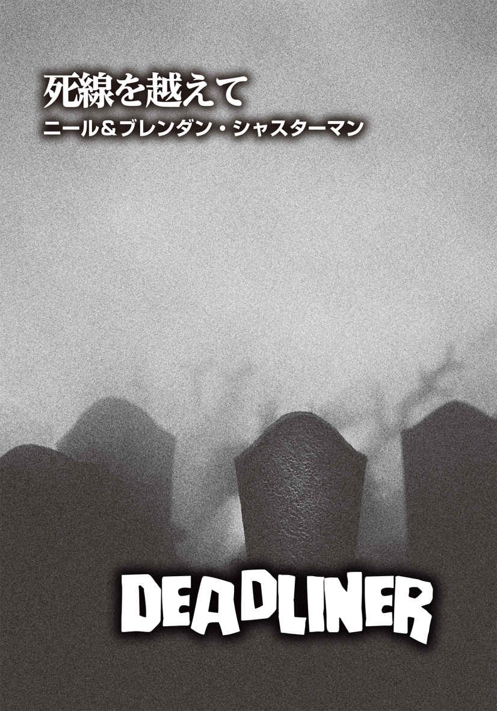
ニール＆ブレンダン・シャスターマン
Neal Shusterman & Brendan Shusterman
PROFILE
ヤングアダルト小説をメインに30編もの小説を手がけてきたニューヨーク・タイムズベストセラー作家。ニールの代表作は、『Unwind Dystology』シリーズ、『エヴァーロスト』（ソフトバンククリエイティブ 刊）をはじめとする『Skinjacker』三部作、全米図書賞を獲得した『僕には世界がふたつある』（集英社 刊）など。邦訳は他にも『父がしたこと』（くもん出版 刊）、『シュワはここにいた』（小峰書店 刊）がある。息子のブレンダン・シャスターマンとは、アンソロジー小説『Violent Ends』をはじめ、タッグを組むことも多い。
Twitter：@NealShusterman
Facebook：facebook.com/nealshusterman
オーウェンのことを〝暴利を貪る者 〟と呼ぶ者もいるが、もっとずっとマシな呼び名もあった。それは〝生存者 〟だ。
この社会的混乱──歩き回り、友や隣人を食う死者の突然のアウトブレイク──は臨機応変に物事を処理できる優れたサバイバーにとっては、絶好の機会だった。
このアウトブレイクが起こる前、彼は長年、巡業サーカスで働いてきた。無知な（いや、無邪気なというべきか）田舎 者 どもを喜ばせて金を儲 けていたわけだが、正直、そこ以外、社会に彼の居場所はなかった。社会のほとんどの場所で、彼は必要とされていなかった。彼は、サーカスの開催に合わせて各地を転々としていた。そうせざるを得なかったからだ。サーカスの田舎の客たちに人気があったものの、彼は田舎者を嫌悪した。しかし、腹を空 かせた死者たちが通りにあふれるようになって、これはひょっとして一 攫 千 金 の大当たりのチャンスかもしれないと、彼は思うようになった。ヒッピー・ムーブメントが起きた一九六七年の夏は、〝愛の夏 〟と呼ばれたが、一九六八年は、さしずめ、〝死の夏 〟だろうか。
最初にそれ が起きたとき、彼はジョージア州サバンナでサーカスのテントを設営し終えたばかりだった。奴 らがフラフラとやってきたのは、そのときだった。彼は、五年間一緒に働いてきた同僚が生きながらにして食われるのを目 の当たりにした。そして、一度嚙 まれると体内の組織に何か作用するのか、たちまち同僚は死者たちの集団の一員になったのだ。その日、オーウェンは五人の人々を救い、彼の英雄伝はどんどん伝 播 していった。
次の数週間で、オーウェンがサバンナの路上や住宅地で殺した死者の数は数百体に上り、彼はしがない巡業者から街のヒーローとなった。平和の使者。一連の出来事で、人々が彼をそう呼んだ。六ヶ月も経 つと、生ける屍 は人間の管理下に置かれた、というようなことが正式に発表された。人々は、集団で移動し、常に武器を携帯し、人 気 のない暗い場所には近寄らないようにとのお達しを受けた。いつ自分の腐った身内が現われて食われるかもしれぬため、それらは一般常識として定着した。そのうち、ゾンビよりも共産党員の方がずっと脅威だから共産主義の方を心配すべきだという声に、人々は賛同し始めた。そう、管理されるようになったゾンビは、恐怖の対象ではなくなったのだ。
サーカスのテントは今も立っていたが、閑散としていた。時期が来るのを待っていた。そして、オーウェンは知っていた。新しいショーがすぐに始まると。そして、その舞台監督は、オーウェンなのだ。
「あのトラックに気をつけろ！ 窓から手を離しておけ！」
積み荷に細心の注意を払うよう、オーウェンは作業員たちに注意しなければならなかった。〝一般常識〟のない人間は、新しくできた自然淘 汰 のルールによってすでに排除されていた。しかしながら、ときに、愚か者はゴキブリ並みにしぶとい。
「十七体捕まえました」
オーウェンに雇われているハンター、クリストフが言った。「依頼された条件に見合った奴は五体。そのうちの一体は、きっとあなたも信じられませんよ」
しかし、本当に信じられないほどの地獄を見てきたオーウェンは、多少の〝信じられない〟レベルのことも素直に信じられるようになっていた。そのハンターは捕まえた連中の顔ぶれ を説明し、オーウェンはそれを信じた。まあ正確には、辛 うじて信じたと言った方がいいかもしれない。
「ノーマルな奴は、一体につき千ドル。スペシャルな奴は五千ドル。大物は二万ドルをお願いしますね」
狩りに出発した際、ハンターは十人いたはずだが、今は七人に減っていた。
「三人は嚙まれたので、始末しなければなりませんでした。三人の家族に渡す死亡手当として、ひとりにつき一万ドルも頼みます」
実際にその死亡手当とやらがそのままの金額で遺族に渡されるのかは疑わしかったものの、オーウェンはそこまで関与するつもりはなかった。彼と彼に投資する者たちは、この〝デリバリー〟にクリストフが要求する以上の金を喜んで支払う。だから、交渉成立の握手を交わす前に、ほんの少しだけ値切ればいい。
「だが、君も君の仲間のハンターも、このまま仕事を続けたいんだろう？」
オーウェンは、新たな取引を匂 わせることにした。「実は、射撃の名手が必要でね。セキュリティ要員だ。給料も弾むよ」
サーカスの敷地の裏手には、トラックを移動させる作業員たちがおり、誰もがトラックから大きく距離を開けていた。オーウェンは自分の従業員たちを見やったが、彼らの顔は想像していたほど興奮しているようには見えなかった。
「みんな、心配するな！」
オーウェンは大声を出した。「ここにいる奴らより、ライオンの方がもっと危険なんだから」
「オーウェン、あんたは野蛮人ね」
背後からそう言われ、彼は振り向いた。クララが腕組みして立っており、うんざりしたような面 持 ちで荷物が運び込まれるのを眺めている。彼女はオーウェンが一目置く、若く美しい綱渡り芸人だ。街の英雄になる以前の自分なら、彼女に取り入ろうとして、そんな表情をさせたことを後悔しただろう。とはいえ、美貌もさることながら、綱渡りで彼女の右に出る者は彼のサーカス団にはいない。オーウェンのショーでは、誰もが素晴らしい才能の持ち主だ。〈サバンナ・ポスト・アポカリプタム〉は、紛れもなくこの世で最も壮大で奇抜なショーを提供することになる。目玉となる演目の性質上、移動はしない。世界中の人々がここに足を運ぶのだ。ショーだけでなく、オーウェン自身を見るために。彼はそれほどの伝説的人物なのだ。西部開拓時代に、腕のいいガンマンであり、人気カウボーイショー〈ワイルド・ウェスト・ショー〉の興行主であったバッファロー・ビルという人物がいた。さながらオーウェンは、ゾンビ殺 戮 時代のバッファロー・ビルだ。また、見世物小屋やサーカスで成功したＰ・Ｔ・バーナムという興行主もいたが、オーウェンは、新世界のＰ・Ｔ・バーナムという異名も取る。人々は、サバンナを救った男との〝ふれあい〟を待ち望んでいた。オーウェンの方は、客とふれあいたいとは別に思わなかったが、喜んで彼らから金をむしり取るつもりでいた。
「クララ、これはビジネスなんだ」と、オーウェンは彼女に言い聞かせた。
「誰がなんと言おうと、野蛮なものは野蛮よ。これまで、こんなに非人間的なものは見たことがないもの」
「奴らが君んちのドアを乱暴に叩 いたとしたら？ 君の生活を脅かしているとは思わないか？」
そう言ったのは、道化師のひとり、ハリーだった。彼は夕方のショーに備え、すでに道化師のメイク済みだったものの、一部、汗で化粧が崩れていた。それはプロとしていただけない。オーウェンはあとで注意しなければいけないと心に留めた。だが今は、かつての名ロデオ・クラウンが戻ってきてくれたことで十分満足だった。彼はハリーをテキサスから呼び寄せたのだった。ハリーの妹と叔父が歩く屍と化した事実をオーウェンは知っていた。
「君は連中を僕らと同等に扱う気なのか？」
ハリーは神妙な面持ちのクララを見て笑った。「あいつらは、僕たちとは全然違うのに」
「彼らはかつて、私たちと同じだった」
クララはつぶやくように言った。「ここはサーカスよ。サーカスなのに......」
「サーカスだからって何だよ？」
呼び込み屋のひとりがそう声を上げると、皆が笑い出した。
「もし人々が金を払ってこれを見に来るなら、これはれっきとしたショービジネスだ」
そう言ったのは、フィラデルフィア出身の若き曲芸師で、名前はロニーといった。最初の攻撃があったとき、オーウェンが何十体もの死者を倒す手助けをしてくれたのは彼だった。ロニーは歩きながらボールを使ってジャグリングをしていた。ボールを放り投げるたびにその数が増え、最終的には六個のボールを回すことになる。ロニーはクララを見て、意味ありげな笑みを浮かべた。
「僕のボール芸は好きかい？ みんなに好評なんだよ。すごいねって褒められる。ボール芸だけじゃない。ボーリングのピンだってお手の物さ」
ロニーはボールを地面に落とすと、今度はボーリングのピンを取り出し、後ろ手に二本をジャグリングし始めた。
「路上でボーリングのピンで芸を始めると、ボール芸よりも、見物人の輪が大きくなるんだ。火を点 けたピンだと、人々はもっとチップを弾む。死者たちが通りを歩き回るようになったときは、チェーンソーでジャグリングしていたっけ。生者が死者を管理下に置いたのは、ごくごく自然の成り行きだ。この現実を素直に受け入れた方がいいよ」
ロニーは、その場ではチェーンソー芸を披露しなかった。それは本番のショーまでお預けだ。
クララは頭では理解しているが、まだ受け入れられないだけなのだろう。
「これでお金を取るなんて。悪魔のお金だわ」と、彼女は吐き捨てた。
「これはサーカス。サーカスで儲けるお金も悪魔のお金だ。今着ている服は、それで買ったんだろう？」
ロニーのその発言が、さらに他の曲芸師たちの笑いを誘った。オーウェンはクララの心中を推し量り、話題を変えようと口を挟んだ。
「開園時間まで一時間を切ったぞ。さあ、今夜もいつものように仕事だ。明日からは一ヶ月の休演期間となる。これまで誰も見たことがない、完全に新しいショーを作り出すんだ」
一ヶ月も休演することに文句を言う者も大勢いたが、その間も給料が支払われると知った途端、不満を漏らす者はいなくなった。ショーの演者たちは解散し、それぞれの控え室へと戻っていった。ただクララだけはその場に残り、じっとトラックを眺めていた。積み荷の中からは、かすかなうめき声が聞こえてくる。彼女はオーウェンの方を向いた。そして、侮辱したり、責めたりするふうではなく、柔らかな口調でこう言った。
「あんたが彼らをコントロールできるとは思えない」
率直かつ簡潔で誠実な意見に、オーウェンは一瞬言葉を失った。
「クララ、私は自分のこと以上に奴らを知っている。私に任せておきなさい」
そう言って、オーウェンはクリストフと彼のハンター仲間に視線を向けた。彼らは全員、殺し屋よろしく武装しており、いつでもライフルを撃てる状態になっている。順番制でトラックの生ける屍たちを監視するよう、話はつけてあった。
オーウェンの視線の先をたどったクララは、深いため息をついた。
「自分たちが絶対に殺 られないと確信しない限り、彼らの網を外しちゃダメよ。それだけは断言しておくわ」
彼女は踵 を返し、綱渡り芸人の完璧な歩き方で立ち去っていった。
オーウェンは、ハリウッドからプロのメイクアップアーティストと衣装係も呼び寄せていた。「間近で見れば、何もしなくても連中は本当に恐ろしいんだが」と、彼は口を開いた。「離れていても、観客を震え上がらせるほどに恐ろしく見せてくれ。それが君らの仕事だ」
メイクアップアーティストには、ショーに携わる人間の中で最も高い給料を支払った。いくら死者たちを鎖につなぎ、手 枷 足 枷 をしたとしても、メイクをする際に、どうしても彼らの手が死者の凶暴な口元に近づく。その危険性を考慮した特別手当としての高給だった。オーウェンはそういったことに金を出し渋るつもりはなかった。
メイクアップアーティストのひとり──完璧なメイクデザインを施す、逸材の若い女性──は、新しいショーの〝花形スター〟を見るなり泣き始めた。
「私......できません」
彼女は大粒の涙をこぼしながらオーウェンに訴えた。「無理です」
「彼女は君を傷つけたりしないよ」
オーウェンはなだめるように優しく諭した。「彼女のことはしっかり拘束してある。頭すら動かすことはできない」
しかし、その娘を説得することはできなかった。一番優秀だったメイクアップアーティストは辞 めていった。
オーウェンは、最高の照明係と舞台デザイナーも用意していた。特殊効果スタッフもだ。
「とにかく観客を恐怖のどん底に落とし込みたい」
彼は、舞台演出に関わるスタッフにそう説明した。「観客と死者たちの間にフェンスがあることを忘れさせたいんだ」
数週間という短期間で、彼らは最高の仕事ぶりを見せてくれた。
〈ポスト・アポカリプタム〉はすでに成功していたものの、新しいショーの宣伝が公になって驚異的な売り上げを記録することになった。常人には手が出せない破格の高値にもかかわらず、前売り券は爆発的に売れたのだ。
オーウェンに投資している面々──太りすぎているか、痩 せすぎているかどちらかの黒いスーツ姿の男たちで、どこか生ける屍のようにも見える──は、楽観している者もいれば、神経質になっている者もいた。
「君のスタッフの仕事ぶりに感心した。きっといい結果を残すだろう」
彼らのひとりが満足そうにうなずいた。
投資家たちに納得のいく答えを示さなければならないのは厄介だったものの、オーウェンの自信が揺らぐことはなかった。
「この新しいショーには、金鉱以上の価値があります」
彼は堂々とした態度で語り出した。「もはや造幣局レベルと表現してもいいかもしれません。初日公演の後、自分たちの金を印刷するかのようにいくらでも紙幣が舞い込んでくるでしょう」
クリストフは冷淡で不愉快な人間だったが、死者の世話係として申し分ないことが判明した。連中を狩っていたハンターだった彼は、意外にも、よく奴らの面倒を見た。彼は市場から悪臭のする生肉──連中が生きた人間の肉以外で唯一口にする食べ物──を調達し、トラックの中にいるときは鎖を緩めて楽になるように調節し、死者に蹴りを入れて虐 めていたサーカスの従業員の鼻をへし折った。クリストフは、生ける屍のアウトブレイク前に動物園で飼育係をしており、世話をしていたのは毒ヘビだったのだ。しかし毒ヘビの知識だけでなく、象やトラやクマなど、サーカスで使われる動物の危険性も熟知していた。そんな彼にかかれば、人を嚙んで殺す死者も人を嚙んで殺す毒ヘビや猛獣も大きな違いはなかったのだろう。
「ぜひ君にもショーに参加してほしいのだが」
オーウェンはクリストフに言った。
「俺がですか？ 一体何をすれば？ 俺はあんたとは違って興行師じゃないし」
「君は、他の誰よりも死者の面倒を見ている。興行で使う動物には、必ず調教師が必要だ。君以上の適任者はいない」
クリストフは不 承 不 承 承諾したにもかかわらず、数日もすると、まるで自分が申し出て調教師になったかのように生き生きと仕事をするようになっていた。
初日の公演が近づく夕方になる頃には、あの無愛想なハンターの顔には微笑 みすら浮かんでいた。
「あんたのショー、きっと成功しますよ」
クリストフはオーウェンに言った。
彼は知らなかったが、このひと言が全てを変えた。新しいショーがさらなる上のレベルに向かうのに必要な大胆さを、オーウェンに与えたのだ。
＊ ＊
開場一時間前、オーウェンは舞台の裏手に全員を集め、観客席と円形ステージの間のフェンスを取り外すつもりだと伝えた。
「オーウェン、本気ですか？」
そう訊 ねるハリーの素顔は道化師のメイクで隠れていたが、ひどく不安を覚えているのは声の調子から明らかだった。「連中を見たことがありますが、一体......どうやってコントロールするんです？ しかも......間近で」
「これは危険なショーだ。あくまでショーなのだが、そこにリアルさが必要なんだ」
オーウェンは冷静に、かつ自信たっぷりに話し始めた。「君たちは、クリストフの世話係としての仕事ぶりを見てきただろう。彼は死者たちを巧みに扱うことができるんだ。万が一、ショーが良くない方に向かったときは、手 練 れの狙撃者が六人待機しているから、問題ない。即座に連中を黙らせることになっている」
オーウェンは列の後方に立つクララと目を合わせた。彼女の顔に浮かぶ激しい怒りが見て取れたので、彼はすぐに視線をそらした。
「狂気の沙 汰 だわ！」
クララは叫んだ。「こんなの間違ってる。他のみんなはそう思わないの？ それとも、あいつらの一員になりたいわけ？」
「私の妹が嚙まれるのを見た。そして、母も嚙まれた」
口を開いたのはホレスだった。オーウェンがオハイオ州のサーカスから引き抜いた年長の道化師だ。「その後、二人は私に向かってきた。彼らを倒してくれたのは、隣人だった」
「僕は十八体殺した」
今度は若い道化師のラルフが発言した。「父親の古いトラックを使って轢 き殺したんだ。奴らは速く動けないし、賢くもない。ただ、嚙むことだけは、決してやめない。諦めない。うちの親父は、指先をほんの少しだけかじられたんだ。ものすごく小さな傷だった。でも、あっという間に、連中の仲間入りをした。だから、僕は父も轢き殺したんだ」
彼らが打ち明けたのは、胸を締めつける生々しい体験談だった。他の者は黙りこくっていたが、生ける屍に最初に遭遇したときの恐怖や衝撃が、急激に彼らの脳裏に蘇 ってきたらしい。続いて声を上げたのは、グロリアだった。
「ええ、私もたくさんの人たちを失ったわ」
彼女はベテランダンサーで、今は新人の女の子たちの指導者となっている。「決して忘れることはできない。最悪の経験だったけど、それまでの楽しかった素敵な思い出まで奪わせるつもりはないわ。あいつらの出現で、人類は全滅するところだった。私たちの怒りをぶつける場所として、ショーは続行すべきよ。世界に人間が負けなかったことを証明しましょう」
何人かが「そうだ」「その通り」と賛同し、グロリアに拍手をする者もいた。肯定する意見が出たことに、オーウェンは安 堵 のため息をついた。クララ側につく者は誰もいないように見えた。誰も自分を援護してくれなかったことに彼女はショックを受け、降参したかのように両手を上げた。
「サーカスには、観客を冷や冷やさせる演目はつきものだ」
ジャグラーのロニーが言った。相変わらず、片手でボールを数個投げてはキャッチしている。「大体、サーカスの演者も観客も、常にショックと恐れと隣り合わせじゃないか。特に僕たち演者は、恐怖を抱えながら、最高の演技を披露しなければならない。失敗したらどうしようという不安以上に、怖いものなんてないよ」
こうして、オーウェンの新たな試みが実行されることになった。
立ち見席以外は満席だった。
開場されたとき、あまりの混雑ぶりに、観客はすぐには席に到着できなかった。のろのろと進む姿は、歩く死者たちのようだった。なんでもスムーズにいくと思うな。そうオーウェンは頭の中でつぶやいた。彼は敢えて、出入り口を小さめに作っていた。大衆向けのサービスには、こういった〝不都合〟も必要なのだ。
それぞれの演者は、自分たちの最高の演技を披露し、ショーを盛り上げていった。ハリーが率いるピエロの集団に、観客は大笑いしていた。あれだけの笑いを引き出せたピエロたちの演技を、オーウェンはこれまで見たことがなかった。空中ブランコのアクロバットは完璧で、観客は目を輝かせながら見入っていた。唯一問題が生じたのは綱渡りだった。その演目は、突然中止になった。クララは姿を見せなかったのだ。書き置き一枚残さず、彼女はサーカスから去っていた。こうして才能豊かな綱渡りの少女は、百万ドルのキャリアを棒に振った。
ほとんどが最高の仕上がりでショーは進み、刻一刻とオーウェンの出番が近づいていた。英雄の登場を今か今かと待ち焦がれる観客の期待が音波になって、オーウェンの鼓膜を震わせていた。高まる興奮の中、彼は舞台監督としても、ほとんどの演目を成功に導いていった。
ロニーのジャグリングが無事に終わったらしく、大きな拍手が場内に鳴り響いている。いよいよ出番だ。オーウェンは気持ちを引きしめ、ステージへと躍り出た。
「紳士淑女の皆さん！ お待ちかねの瞬間がついにやってきました。若い方には少々刺激が強すぎるかもしれません。とにかく最高の恐怖をお届けします。あの音が聞こえますか？ ドアをガリガリと引っ搔 く音でしょうか。あの匂いがわかりますか？ あなたの想像を超えるエンターテインメントがいよいよ初めてお披露目されます。覚悟はいいですか？ 前代未聞、この世で最も怖いショー......生ける屍！」
テント後方の二つの大きな扉が開いたとき、観客は衝撃のあまり息を吞 んだ。暗がりの中からヨタヨタと歩きながら登場したのは、本物の死人たちだったからだ。鎖につながれた連中を率いているのは、ラリーとカールという二人の怪力男。そして、スポットライトはクリストフに当たった。彼は片手に鞭 、もう片方の手にピストルを握っている。
「皆さん、驚かないでください」
オーウェンは呆 然 としている観客に告げた。「この鎖は錬鉄製で非常に強固なものです。ご覧の通り、屍たちも今 宵 、皆さんと会えてうれしそうですよ！」
彼のひと言で場内の空気が和らぎ、観客は笑い出した。死者たちはピエロに見えるようにメイクされ、衣装を着せられていた。滑 稽 であると同時に邪悪な見てくれだ。それから、さらに別の怪力男たちに付き添われ、屍たちの第二グループが場内に入ってきた。後者の方は道化師の格好はしていなかった。着ている物はボロボロに裂けていたものの、かつて人間だったときの衣服のレプリカという手の凝 りようだった。
「実は──」と、オーウェンは続けた。「この中には、皆さんがすでにご存知の人物も含まれているんです」
クリストフのハンターチームが幸運にも捕らえることができた〝スペシャル〟な五体に、照明が当たった。スポットライトの中に最初の一体が浮かび上がると、、オーウェンがサウスカロライナ州の元上院議員の名前を読み上げる前だというのに、観客席から歓喜と驚嘆と嫌悪が入り混じった声が漏れた。
死者となった上院議員は、光がまぶしかったのか、もげそうになっている手をぎこちない動きで上げ、どんよりと濁った目を覆った。それから、観客席にいた若く美しい女性に目を向け、彼女の方に歩いていき、身を乗り出して嚙みつこうとした。てっきり怪力男が鎖を引いて阻止するのかと思いきや、彼らは鎖を落としたのだ。たちまち観客は悲鳴を上げた。もちろん、それは演出で、巨漢の男たちはわざと鎖を落としたのだ。その直後、クリストフが鞭を唸 らせ、背中を激しく打たれた議員は後ろにひっくり返って鎮圧された。全てが筋書き通りだった。
「そして、左 端 に立つのは、深夜のトーク番組でお馴 染 みのあの方。ですが、今はもうトークはできませんがね！」
生前トーク番組の司会者をしていたという屍は、左右に大きく揺れながら歩いていた。アメリカ国民なら聞き覚えのある快活な声の主は、もはや奇妙な唸り声を上げるだけとなっていた。
次に紹介されたのは、テレビの料理番組で主婦に人気の女性だった。かつては食べ物にうるさかった彼女だが、今の食事は悪臭のする生肉一択で、しかも調理法など必要ない。
さらに、おっちょこちょいの役柄を演じて愛されていたコメディアンもいた。しかし、歩く屍以上にバカげた役は、もう回ってこないだろう。彼らはクリストフに鞭で叩かれ、芸をさせられた。それを見た観客は驚きを隠せない様子だった。連中の思考は停止しているものの、芸当を仕込むことはできるとは！
その後、照明が暗くなった。いよいよ大物スターの登場だ。
「さあ、今夜のショーのメインスターを紹介しましょう。大物中の大物ですよ。もはや紹介するまでもない、その女性とは......」
再びスポットライトが点き、明かりに照らされたのは、去年のアカデミー授賞式で着ていたゴールドのドレスのレプリカを身にまとった有名映画女優だった。ドレスとはいえ、ズタズタに引き裂かれたレプリカとなっている。美しかったその顔は、数え切れないほどの雑誌の表紙や広告を飾ってきた。彼女の紫の瞳は、国内外の映画ファンを虜 にしていたはずだ。かつてはトロイのヘレンとクレオパトラを合わせたような美貌だったのだが、今や顎はたるみ、頰はしぼみ、皮膚は蠟 のごとく白くなっている。観客からは一斉にどよめきが上がり、すすり泣く声も混じっている。開演前の舞台裏で、ジャグラーの彼はなんと言っていた？ 常にショックと恐れと隣り合わせ？ まさに今が、その状態。今日の観客は間違いなく入場料を払った価値を感じているはずだ。
これはオーウェンの輝かしい瞬間でもあった。若い頃、彼はずっとこの大女優に会うのを夢見ていた。実際に会えたらなんと言おうかと、会えもしないのに考え悩み、どうやって彼女の心を摑 もうかと真剣に策を練ったものだ。そして今、オーウェンは彼女を〝所有〟している。想像していたような形ではないが、憧れの彼女はここにいるのだ。「果報は寝て待て」とは、このことだ。
さあ、いよいよここからが本当の見せ場だ。これまでの屍たちは芸当もしたが、メインイベントではない。大女優にふさわしく、彼女は特別に扱わなければならない。怪力男たちが彼女をつないでいた鎖を緩ませた。クリストフが後ろに下がり、オーウェンが前に踏み出す。
「ミス・テイラー、ダンスを踊ってください」
オーウェンは女優だった屍に声をかけた。「私たちのために踊るのです！」
彼女は足を動かし始めた。最初は左に揺れ、次は右に揺れる。肩も回したが、腕はだらんと下がったままだ。彼女は死者の踊りを踊っていた。自然と観客の間から拍手が起こった。最初はわずかだったが、拍手をする者は徐々に増えていき、やがて会場が割れんばかりの拍手喝采となった。
「ミス・テイラー、聞こえますか？ この拍手、聞こえてます？ あなたは死んで生き返ってもスターのままだ！」
彼女は喉から不気味な唸り声を発し、前に飛び出してきそうになったが、怪力男たちが彼女の鎖を引いて動きを抑制した。
歓声が上がる中、オーウェンは勝利のポーズのように両手を高く上げた。
そのとき、突然背後から聞こえたうめき声が、彼の注意を引いた。初め、死人の声かと思ったが、振り返って見ると、声の主はクリストフだとわかった。彼は鞭も拳銃も床に落とし、膝をつき、胸を押さえている。その顔面は蒼 白 だった。
オーウェンは慌てて彼に走り寄った。
「どうした？ 立て！ 立つんだ。ショーはまだ終わってない！」
「し......心臓発作......」
クリストフは喘 ぎながら言った。
「ダメだ！ 心臓発作なんて起こしている場合じゃない。なんで今なんだ！」
「たぶん......興奮して......」
力が完全に抜けた彼は、弛 緩 して地面に倒れている。息をしようと口をパクパクさせ、苦しそうに顔を歪 めたかと思いきや、急に静かになった。
死者たちはわかっていた。
自分たちの調教師──唯一屍たちを思うように動かせる人物──が倒れたことを。
オーウェンは何が起こるか、それが実際に起こる直前に気づいたが、状況を食い止めるには無力だった。まるで意思があるかのごとく、申し合わせていたかのように、死人たちは一斉に鎖を力任せに引っ張ったのだ。その力は、人間をはるかに凌 駕 するのではないかと思われた。怪力男たちは、屍たちを統制しようとしたが、あまりにも連中の数が多すぎた。奴らは賢くないし、速くも動けない。だが、数が揃 えば、なんだってできるのだ。
怪力の男たちでさえ、勝機はなかった。
観客は血が噴き出るのを目の当たりにした。肉が引き割かれるのを見た。そして、ステージ上で起きていることがショーの一環ではないと悟ったとき、彼らはパニックに陥った。人々は出口に殺到したが、戸口の幅はあまりにも狭かった。そして観客数はあまりにも多かった。
誰にも抑制されなくなった死者たちは、逃げ惑う群衆に向かっていく。
「皆さん、どうか落ち着いて！」
しかし、オーウェンの声を聞いている者など、もはや誰ひとりとしていなかった。
猟銃の音が鳴り響いた。元議員の死体が倒れたものの、慌てふためく客たちを捕まえようと、十数体がすでに観客席の最前列を乗り越えていた。二度目の銃声が鳴った。死者に命中しなかったものの、運悪く、いてはいけない場所に、いてはいけない瞬間にたまたまいた観客が射殺された。
もはや手に負えないと思ったのか、クリストフのハンター仲間たちは、自分たちの任務を放り出して逃げ出した。
自分がこれほどまでに自信満々でなかったなら、オーウェンは拳銃のひとつも携帯していただろう。しかし、そんなことを考える間も今はなかった。目に映るもの全てがショックだった。自分の人生が崩れ落ちていく様 を眺めるのが、こんなに恐ろしいとは思ってもみなかった。
とうとう死者は観客のところまで到達した。彼らにとっては、この上ないごちそうで、食べたいだけ食べられ、嚙みたいだけ嚙めるのだ。オーウェンは膝からくずおれた。どんどん人々が倒れていく。彼は十分承知していた。この事態がここだけでは終わらないことを。このサーカスのテントが歩く屍のアウトブレイクの発生源となり、新たな感染爆発 を引き起こすのだ。
すぐ近くで、オーウェンは連中特有の唸り声を聞いた。振り向くと、三メートル先で映画女優の死者が立っていた。彼女はまだ片足ずつ動かしており、テントの出入り口から流れ込む風で、彼女のボロボロになったドレスが揺れていた。生者の負けだ。死者は生者を食い散らかしていく。何十人も......何百人も......何千人も。そして、食われた者も再び立ち上がることになる。
映画女優はオーウェンをじっと見つめていた。彼女の目は澱 んでいたものの、人々を虜にした紫の瞳の色合いは見て取れた。すると、彼女はゆらゆらと揺れながら前進を始めた。その頭を片側に傾け、オーウェンの方に腕を伸ばしている。そして、これから嚙むものを期待して、歯をガチガチ鳴らしていた。
もう彼女に生前の美しさはない。とはいえ、美しさはいつか色 褪 せるものだ。オーウェンごときが、そんなことを偉そうに言える立場にはない。それでも、彼には理解できていた。生命の輝きは美しく、それが消えた後に来る死は平穏であるべきだ。なのに今、生と死の狭間 には、恐怖と狂気に満ちた冥 府 が存在していた。
オーウェンは立ち上がって上着の埃 を払い、腕を差し出した。
「ミス・テイラー、踊りませんか？」
そして彼は、映画女優の冷たい抱擁をそっと受け入れた。
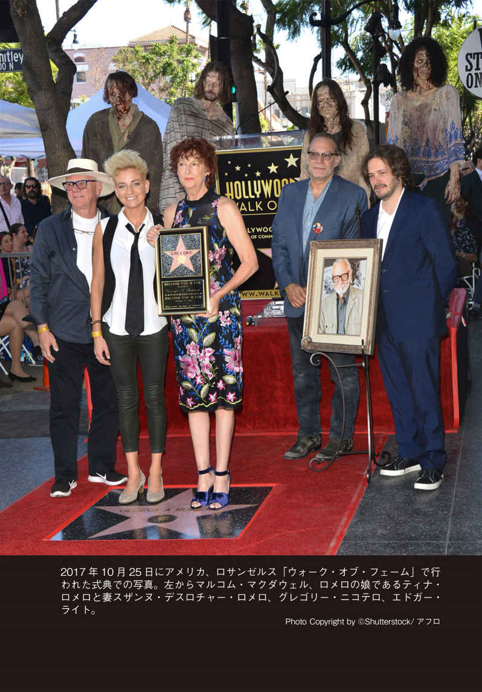
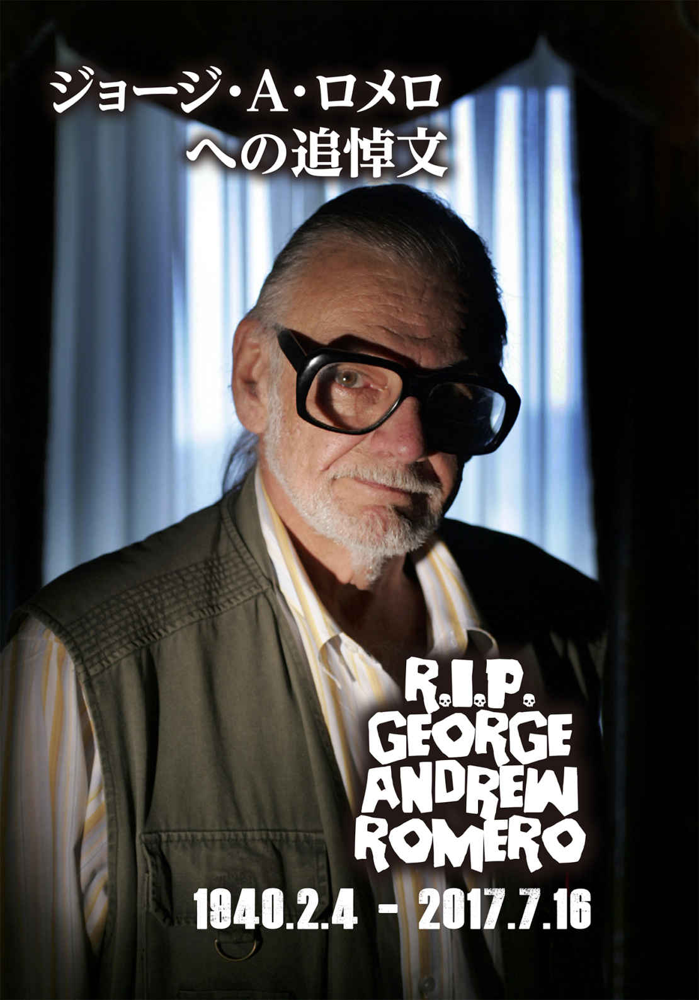
偉大な彼はいなくなってしまった。大人の私も十歳の私も、その事実に深く深く悲しんでいる。
──ジョナサン・メイベリー
訃 報 を聞いたのは、サンディエゴで本書『ナイツ・オブ・ザ・リビングデッド』のサイン会を行っている最中だった。ストアマネージャーが私のもとに歩み寄り、ジョージ・Ａ・ロメオが亡くなったと告げた。それは、非現実的な瞬間だった。自分が初めてジョージの作品に出会ったときの思い出話をちょうど語り終えたところだったのだ。時は、一九六八年に遡 る。私は当時、十歳。映画館に忍び込み、映画『ナイト・オブ・ザ・リビングデッド』を封切日に観た。あの映画が一緒に鑑賞した親友に相当な精神的衝撃を与え、彼が途中で逃げ出してしまったこと、一方の私はそのまま映画館に留まり、二回繰り返して鑑賞したこと、それから毎日のように映画館に通って観たことを、サイン会場の観客に話していたところだった。
あれから四十九年、私は彼の全作品を何度も観ただけでなく、〝ゾンビ・ポップカルチャー〟として知られるようになった世界に深く関わるようになっていた。私の初めてのスリラー小説『Patient Zero』はゾンビ本であり、『Dead of Night』と『Fall of Night』は、ジョージに捧 げた小説だ。同ジャンルの『Marvel Zombies Return』や『Marvel Universe vs The Punisher』というコミックの原作も担当しているし、他にも短編小説、ヤングアダルト小説、ノンフィクション、エッセイ、記事などでも成功を収めている。ヒストリー・チャンネルの番組『Zombies：A Living Histroy』では専門家として関わっているし、映画『Night of the Living Dead：Reanimated』のＤＶＤ特典のコメンタリーにも参加し、このアンソロジー小説『ナイツ・オブ・ザ・リビングデッド』をジョージと共同編集した。私の作家人生の少なくとも四分の一は、ゾンビに重点的に取り組んできたと言っても過言ではないだろう。
ジョージ・ロメロが存在したからこそ、多くの傑作が生まれてきた。彼のリビングデッド映画がなければ、『ウォーキング・デッド』だって誕生することがなかっただろう。『ＷＯＲＬＤ ＷＡＲ Ｚ』『ウォーム・ボディーズ』『バイオハザード』『28 日後...』『ｉゾンビ』『Ｚネーション』『ゾンビランド』『The Forest of Hands and Teeth』『ディストピア パンドラの少女』も生まれなかったかもしれない。つまり、映画やテレビに限らず、ゲーム、コミック、文学（フィクション、ノンフィクションにかかわらず）に至るまで、ジョージ・ロメロがポップカルチャーに与えた影響は、誇張ではなく、本当に大きいのだ。
この地球上で、ゾンビが知られていない場所はない。どの業界にも、文化にも、アートにも、科学にも、広告にも、市場にも、ゾンビは浸透している。ジョークやギミック、その他のクリエイティブな要素でも、ゾンビはメタファーとして登場してきた。アーサー・コナン・ドイルの『シャーロック・ホームズ』、メアリー・シェリーの『フランケンシュタイン』、ブラム・ストーカーの『ドラキュラ』以外に、ゾンビほど世界に蔓 延 したフィクションの概念は他にないし、ゾンビほど人々を楽しませる娯楽要素も他にない。
ジョージはいつもそのことに驚いていた。人々が彼を称賛するたび、首を横に振り、人々が彼ほど皆に影響を与えた人物はいないと興奮ぎみに語るたび、笑い飛ばすことさえあった。ジョージはそんな人間だった。愛想が良く、謙虚で、好感が持て、愉快で、賢くて、優しくて、誠実。成功を収めた映画監督、ホラーの巨匠である以前に、彼はひとりの〝グッドガイ〟だったのだ。
彼は私の友人でもあった。本書を編集する過程で、私たちはより親しくなり、冗談を言い合ってよく笑った。本書に参加した作家たちに自分が生みだした化け物についての物語を執筆してもらうため、ジョージは自宅兼〝不気味な遊び場〟に彼らを招待して喜んでいた。彼が寄稿された短編を気に入っていたのは言うまでもない。どの短編も、ひとつ残らず楽しんでいた。
私の小説『Dead of Night』が大のお気に入りなので、全ての始まりとなった映画『ナイト・オブ・ザ・リビングデッド』と『Dead of Night』を正式に関連づける短編を、このアンソロジー小説のために書いてほしいと本人から頼まれたときは、作家としてのキャリアの中でも最高の瞬間だった。ゆえに、本書の『孤高のガンマン』は、私のスリラー小説『Joe Ledger』シリーズの延長上にある。つまり、彼に敬意を表するために書いた膨大な量の言葉たちが、今、彼が創り出した世界の一部となったということだ。大人になった私も、初めてジョージの歴史に残る画期的な映画を観たときの十歳の私も、実際に敬愛するジョージとその世界につながれたことに大いに歓喜した。なのに、その偉大な彼はいなくなってしまった。大人の私も十歳の私も、その事実に深く深く悲しんでいる。
ジョージ、あなたの全てに感謝する。本当に心から。ありがとう。
彼は紛れもなく偉大なアーティストのひとりであり、その影響は後世に受け継がれていくはずだ。
──ジョー・Ｒ・ランズデール
『ナイト・オブ・ザ・リビングデッド』を観たことが、僕の人生を大きく変える経験となった。あくまでも映画なのに、観ている間、恐ろしい出来事があたかも自分の裏庭で起きているかに思える臨場感にひどく面 喰 らった。あのような映画は他に観たことがなかった。まるでドキュメンタリーのようだったし、当時では珍しい黒人のヒーローにも、悲観的だが見事なエンディングにも驚きと感嘆を覚えた。ジョージ・ロメロは、ホラーの新しいスタイルを創り出したのだ。実のところ、同作が以降同ジャンルのトップの座に君臨し続けているかどうかはわからないが、少なくとも、独創性の点では揺るぎないだろう。
私の小説が原作の映画『コールド・バレット 凍てついた七月』のあるシーンでドライブイン・シアターが出てくるのだが、そこで上映されているのは『ナイト・オブ・ザ・リビングデッド』だ。『ナイト～』はパブリックドメイン（著作権が消失している状態）の作品だが、ちゃんとジョージの許可をもらってある。
僕はジョージとは個人的な知り合いではなかったが、一度だけ会ったことがあった。その〝会った〟というのも、コンベンションで彼に挨拶し、彼の作品がいかに自分に重要か、何がきっかけで僕がゾンビの物語を書くようになったかなど、ありきたりの話題をボソボソと話しただけに過ぎない。今回、ジョージとジョナサン・メイベリーが編集したアンソロジー小説で、ジョージの『ナイト・オブ・ザ・リビングデッド』の世界にインスパイアされた物語を書けたことをとても光栄に思っている。『ウォーキング・デッド』をはじめ、多くのテレビドラマや映画にもインピレーションを与えてきたジョージ・ロメロ。彼は紛れもなく偉大なアーティストのひとりであり、その影響は後世に受け継がれていくはずだ。
全ての〝ゾンビもの〟 ──テレビドラマ、映画、コミック、ゲーム、小説── は、ひとえに彼のおかげで生み出され、存在している。
──クレイグ・Ｅ・イングラー
実にシンプルに、ジョージ・ロメロは現代のゾンビジャンルを創り出し、定義づけてくれた。全ての〝ゾンビもの〟──テレビドラマ、映画、コミック、ゲーム、小説──は、ひとえに彼のおかげで生み出され、存在している。『ナイト・オブ・ザ・リビングデッド』は、何十年も時代を先んじていた作品で、当時のあらゆる固定観念をことごとく破った賢明なインディーズのホラー映画だった。あの内臓にガツンとくるラストに、観る者は衝撃を覚え、深く考えざるを得なかった。生粋の天才だ。彼は『ゾンビ』でも再びガツンとやってくれ、他の作品でもそうだった。ゾンビという存在は、とてつもないレガシーなのだ。
立ち上がるのにジョージが肩を貸してくれなかったら、『Ｚネーション』はこの世に生まれることはなかったと、断言できる。本書『ナイツ・オブ・ザ・リビングデッド』に寄稿でき、それがロメロ作品の一部となれたことは、本当に名誉だ。ジョージ、あなたに満足してもらえたことを願っている。
彼は優れた表現者であり、アウトローの映画作家であり、大胆不敵な空想家だった。
──ジェイ・ボナンジンガ
あれは一九九三年のこと。私の最初の小説の映画化の権利がニュー・ライン・シネマに売れたばかりだった。それだけでも信じられない出来事なのだが、さらに信じられないことが起きる。ニュー・ラインは、私の作品を私の幼少期のヒーロー的人物──映画界の伝説的監督──に送り、彼が「イエス」と首を縦に振った。そう、彼は私の小説を原作とした大予算映画を作ろうと思ってくれたのだ。すぐに私は共同脚本家として参加することになり、ミーティングのため、映画会社の手配でフロリダにある彼の家に行くことになった。
うら寂しい日曜の夜、大きくて、温かくて、手足の長いクマみたいなこの男性が、人 気 のない空港ターミナルに亡霊のごとく姿を現わしたときの記憶を、私は一生大切にするだろう。それまで私たちは一度も会ったことがなかったものの、彼は私に手を振り、久しぶりに再会した甥 か教え子のように私の名前を呼んでくれたのだ。私のスーツケースをオンボロのメルセデス・ベンツに運び、彼は自宅まで運転して当時の奥さんのクリスティーンを紹介してくれた。
この紳士的な巨匠が、誰の手も借りずにひとつの映画のジャンルを創り出したことなど関係ない。ゆっくりと歩き、ぎくしゃくと動く彼の創造物があまりにイコン的な存在となり、ドラキュラ、フランケンシュタインの怪物、狼 男 と並ぶホラーの英雄の仲間入りを果たした事実も、脇に置いておこう。ジョージ・ロメロが食料品店主、歯科医、会計士といった他の仕事をしている人物だったとしても、彼は皆に愛されたに違いない。私がこれまで会った中で、彼は最も素敵な人物だ。いつも正直で誠実だった。彼を称賛する全ての言葉は真実だ。彼は優れた表現者であり、アウトローの映画作家であり、大胆不敵な空想家だった。しかし、私がジョージに関していつも思い出すのは、あの茶目っ気たっぷりの笑顔と他人を思いやる姿勢である。
七月十六日、私たちは非常に特別な人間を失った。私はかけがえのない自分の師を失った。ジョージ、あなたに神の祝福がありますように。どうか安らかにお眠りください。
今、彼の訃報を受け、悲しみに暮れている。今日、世界が少し小さくなった気がした。
──マイク・ケアリー
「ひとりのクリエイターがひとつのジャンルを定義した」と、断言できることはそうそうない。しかし、この五十年間を振り返ると、まさしくジョージ・ロメロはそれに当てはまる。『ナイト・オブ・ザ・リビングデッド』は、ホラー映画の全く新しい雛 型 を創り出したと同時に、ずっと我々に付きまとう新しいモンスターを誕生させた。私は、彼の生み出した世界を楽しみつつ、敬意を持って参考にし、多大なインスピレーションを受けた大勢のクリエイターのひとりだ。
今、彼の訃報を受け、悲しみに暮れている。今日、世界が少し小さくなった気がした。
ともすると殺 戮 シーンばかりが関心を集めるジャンルで、君は重要なことを訴えるべく闘い抜いてきた。
──ジョン・スキップ
これほど泣いたのは、デヴィッド・ボウイの死以来だ。他人に気に入られようと気に入られまいと、己 ができる全ての方法で、精一杯真実を伝えることを教えてくれた偉大なアーティストの英雄は人生に山ほどいるものの、ジョージ・ロメロ以上に影響を受けた人物はいない。僕たちは彼を失ってしまった。だが、彼は永遠に僕たちの心の中で生き続ける。
ちょうど昨日（二〇一七年七月十五日土曜日）、ジョナサン・メイベリー、デイヴィッド・Ｊ・スカウとともに、僕はカリフォルニア州バーバンクにある〈ダーク・デリカシーズ書店〉で、ジョージとジョナサンが共同で編集し、数日前に発売されたばかりの本『ナイツ・オブ・ザ・リビングデッド』のサイン会を行っていた。この本の巻頭には、「ジョン・スキップ。彼に本書を捧ぐ」という文言が入っている。ゲラを読んでいたからすでに知っていたのだが、それでも、本書が僕に捧げられたものであるということは、あまりにも恐れ多く、夢のようでもあった。今、僕はあまりにも悲しくて、打ちのめされていて、ジョージが僕に本書を捧げてくれた事実を実際に受け止め切れていない。だけど、人生で最も誇らしい出来事であることに違いはない。
このサイン会の最後に、僕たちは、一緒に作り上げた自分たちの本を手にして記念撮影をした。もちろんこれはジョージの本であり、僕たちは本書に携われて本当に幸運だった。ジョージはサイン会での写真が欲しいと言っていたので、ジョナサンが撮影後すぐに送信していた。だから、彼がそれを見る時間があったと思いたい。その写真に写る僕たちが、なんとうれしそうで誇らしげな顔をしていることか。
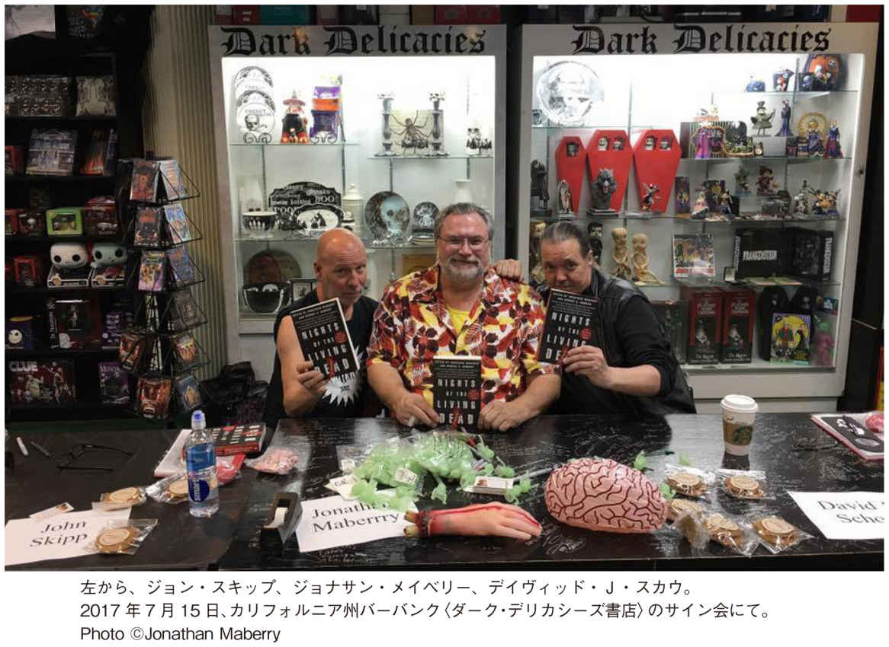
それがお別れの言葉代わりになろうとは！
ジョージ、君を心から敬愛しているよ。ともすると殺戮シーンばかりが関心を集めるジャンルで、君は重要なことを訴えるべく闘い抜いてきた。君が創り出した映像が数えきれない人々の手で単なる金儲 けの道具にされ、君は何度も何度もはらわたが煮えくり返る思いをしたことだろう。
君は前進し続け、一度もその歩みを止めなかったアーティストのひとりだ。芸術だけでなく、僕らを苦しめる社会状況についても、気にかけることを決してやめなかった。この数十年を振り返ってみると、文化や社会に対する君の見解はいつだって世間より先を行っていた。君が予見していたことの中で、のちに実際に人々が議論する問題となったものもあれば、完全に無視されたりしたものもあった。
そう、君はいつでも世の中に鋭い目を向けていた。だから、僕は信じている。次にどこへ行こうとも（天国でも、地獄でも、生まれ変わろうとも）、君は、民の思考を鈍らせ、盲目的に従わせようとし、自分たちが互いにどれだけ重要な存在なのかを気づかせまいとするあらゆる権力にとっての〝目の上のたんこぶ〟となりつつ、本当に大切にすべきものを大切にし続ける姿勢は変えないはずだ、と。
君がいなければ、僕は君がいたこの人生の自分とは違う人間になっていただろうし、同じようなアーティストではなかったかもしれない。君には感謝してもしきれない。僕がこれまでしてきたこと、しようとしてきたこと、今試みていること、これから死ぬまでにやることのひとつひとつに、君の名誉、誠意、情熱の跡が刻まれている。君は僕の最大の誇りであり、僕の最高のインスピレーションだった。君が成し遂げたこと、君が君でいたことに心からの感謝を贈る。
君の永遠の友 スキップ
彼は詩人であり、アーティストであり、ホラージャンルで先見の明を持った紛れもない天才である。
──ライアン・ブラウン
暗影に潜む何かを恐れると同時に楽しむということを人々に教えた師として、ジョージ・ロメロは、ホラー小説や映画に仕事で携わる幸運な私たちの素晴らしいお手本であり、インスピレーションだ。彼は、私たちにこの上ない贈り物をくれた。彼は詩人であり、アーティストであり、ホラージャンルで先見の明を持った紛れもない天才である。彼がいなくなり、世界は深い悲しみに暮れ、その偉大な存在の喪 失 を嘆くだろう。
彼の作品は、何世代にもわたって私たちの創作物──私たちの悪夢──をインスパイアし続けるだろう。
──デイヴィッド・ウェリントン
個人的にジョージ・ロメロがどれだけ大きなインパクトを私に与えたかは、他のところですでに書いた。ここでは、彼の偉大さを褒め称 えたい。
私たちの集団意識を永遠に具現化する新たなモンスター、かつ恐怖のイコンを創り出した人物は三人しかいない。メアリー・シェリーはフランケンシュタインの怪物を創造し、Ｈ・Ｐ・ラヴクラフトはクトゥルフを誕生させ、ジョージ・ロメロはゾンビを生み出した。「ゾンビ」という言葉は、映画『ナイト・オブ・ザ・リビングデッド』以前から使われていたかもしれないが、今日、誰もが知っていて、幅広く愛されているこのモンスターは、ジョージが形作るまで存在していなかった。メアリー・シェリーのように、彼はその創造物に名前も与えることはなかった。彼の画期的な数々の作品で、この歩く屍たちは、実際に名前が付けられている物たちよりも、自然が生んだ何かという意味合いが強い。ラヴクラフトのように、彼の作品は、何世代にもわたって私たちの創作物──私たちの悪夢──をインスパイアし続けるだろう。ホラーファン、映画ファンのひとりひとりが、ジョージ・ロメロの恩恵を受けている。彼の名は、シェリーやラヴクラフトに並び、奇妙で恐ろしい何かの創造主の殿堂に祀 られるのにふさわしい。世界中が彼の死を悼 むだろう。
ジョージ・ロメロは誰よりも巨大だ。彼の映画『ゾンビ』は、私の全てを変えた。
──マックス・ブラリア
個人的にミスター・ロメロを知っているわけではない。彼は伝説であり、独自のジャンルを創り出し、インディーズの映画製作を永遠に変えた人物──というのが、私が唯一わかっていることだ。作家、クリエイター、映画狂、ゾンビマニア、ペンシルべニア州の田舎 の出身者の子孫として、ジョージ・ロメロは誰よりも巨大だ。彼の映画『ゾンビ』は、私の全てを変えた。私の脳──私がいかに考え、何を創り出し、どんな言葉を書くか──は、ミスター・ロメロが創造したアートがなければ、全く違ったものになっていただろう。ただひたすら、あなたに感謝したい。
彼は気取らない人柄で、明るく、思いやりがあり、本当に楽しい人だった。
──キャリー・ライアン
ジョージ・ロメロは私の人生を変えた。彼の映画がきっかけで私はゾンビに夢中になり、その結果、私は処女作『The Forest of Hands and Teeth』を書くに至った。
その本が出版される数週間前、地元のコミックブック店のサイン会の列に並んだ。その手に、刷 り上がったばかりの私の本を持って。私はジョージ・ロメロに会うために待ち続けた。私は震えていた。おそらく過呼吸寸前だったと思う。私は、全て──弁護士の仕事を辞 めて夢のような目標を成し遂げ、最初の小説を上 梓 したこと──は彼が発 端 だったことをどう彼に伝えればいいのかわからなかった。そして、とうとう私の順番が来た。彼は信じられないほど親切だった。私たちはゾンビについて語り、彼は私の処女作に興奮し、本にサインしてくれと頼んできた。彼は気取らない人柄で、明るく、思いやりがあり、本当に楽しい人だった。あのときの時間は、私の人生で大切な思い出となっている。
彼がジョナサン・メイベリーと共同編集したアンソロジー小説『ナイツ・オブ・ザ・リビングデッド』のために、彼の世界観で短編を書く機会を得たのは、私の中で最も輝かしい経験だ。彼は、私の人生に多大な影響を与えてくれた。彼に直接会ってそのお礼を言えたことを、本当にうれしく思っている。
彼がいなくなってしまい、私は悲しい。信じられないくらいに。
映画業界でも僕の人生においても、彼ほど正直で誠実な人間には出会っていない
──ジョン・Ａ・ルッソ
ジョージ・ロメロと僕は、一九五七年に初めて会ったときからすぐに意気投合し、それ以来ずっと友だちだった。当時彼は、カーネギー工科大学（現在のカーネギーメロン大学）で芸術を専攻するためにピッツバーグに来ていた。ルディ・リッチ（のちの映画『バタリアン』の原案者）が一九五五年型プリムスのオープンカーで乗りつけ、クラクションを鳴らすと、ジョージが姿を見せた。なんと彼は、大きなソンブレロを被 り、弾帯を肩から十字に掛け、両腰には拳銃が入った大きなホルスターを下げていた。さらには、巨大な口鬚まで生やしていたのだ。あの頃、『革命児サパタ』がジョージのお気に入りの映画だったので、彼は主人公のメキシコ人革命家の格好をしてきたらしい。ジョージは知的で、ひょうきんで、創造力に富み、ユーモアがあって、愉快な奴 で、みんなの人気者だった。一方で、映画作りに対する情熱はとてつもなく、事あるごとに、映画を作ればきっと成功すると僕やルディやラス・ストレイナー（のちに『ナイト・オブ・ザ・リビングデッド／死霊創世記』を製作）を説得していたものだ。
彼はまた生涯を通じて、温かで、礼儀正しく、愛情深く、優しい人物だった。彼と過ごす晩はとびきり楽しく、映画業界でも僕の人生においても、彼ほど正直で誠実な人間には出会っていない。
僕は、一日中ジョージのことを考えている。最後に彼と会ったのは、サウスカロライナで開催された〈マッド・モンスター・コンベンション〉だったが、何の気なしに僕の口から出た冗談で、彼は腹を抱えて爆笑してくれた。ジョージはよく僕に、ジョークや面白い話を聞かせてくれと言ってきた。会えるのが最後になったその日に、彼の願いを叶 えることができ、本当に良かったと思っている。
彼は敢 えて私たちと奴らの境界線を曖 昧 にし、彼の真 似 事 をする連中が避けていた大胆な質問を投げかけてきたのだ。
──アイザック・マリオン
ほとんど何もなかったところから、これだけ人気のジャンルを創造した人物が過去にいただろうか？ これほど先を見越していて、これほど多大な影響を与えた偉業は他にないかもしれない。私たちの周りにいる人々──友人、隣人、そして自分自身──が宇宙からやってきたどんなモンスターよりも恐ろしいと見抜いていたことは、ジョージ・ロメロがいかに鋭い洞察力を有していたかを証明している。しかし彼は、そのコンセプトに満足して、単にあぐらをかいているのではなかった。彼は生きる屍を追求すべく、さらに掘り下げ、本能的に満足のいく〝私たちＶＳ世界〟のファンタジーへと物語を昇華させていった。優しくて音楽が大好きな少年から強烈なゾンビの救世主まで、彼は敢えて私たちと奴らの境界線を曖昧にし、彼の真似事をする連中が避けていた大胆な質問を投げかけてきたのだ。この恐れを知らない好奇心を含むジョージ・ロメロの独創性を超えて、彼の遺産が広がっていき、未来のストーリーテラーたちが人間とゾンビの両方から同じようにインスパイアされることを願っている。
ゾンビフィクションに終わりはない。ジョージは最初から、このジャンルが急速に拡大していくことを確信していたはずだ。
──デイヴィッド・Ｊ・スカウ
もう何十年も、僕はジョージ・ロメロの世界で生きてきた。二〇〇五年に上梓した短編小説集『Zombie Jam』で、僕は彼についてあれこれ微 に入 り細 に入り書きしたためた。同書はゾンビやロメロに関する豊富な総括的情報が詰まっていると認められたようで、他の作家のゾンビ小説本の序文として使われたこともある。しかし、僕が著したことは全て、ジョージが創り上げたゾンビ神話──あるいは、〝Ｚ〟で始まる単語が他の呼び名を凌 駕 してしまう以前に元々ジョージが使っていた言葉で言い換えるなら、〝邪鬼 〟〝食人鬼 〟の世界──に基づいている。当然のことながら、ゾンビフィクションに終わりはない。ジョージは最初から、このジャンルが急速に拡大していくことを確信していたはずだ。
ジョージは友人だった。今でも彼の声が聞こえる。そして、これからもずっとそうだろう。
ジョージ・ロメロの作品がなかったら、私が世の中を知ることは決してなかった。
──ミラ・グラント
ジョージ・ロメロは私の人生にとって非常に重要な存在だ。それは全てを網羅してしまうくらい、奥深く、意味があることなのだ。私は活力に満ちた賢い人間でいたいと思っているが、なかなかそうはいかない。死体が歩くのをじっと見つめて彼らに夢中になり、モンスターに恋をして、その結果、人間を恐れてしまい、墓から出ようと爪で穴を開けて表に出てきた亡霊みたいに成長した十七歳の女の子の大人バージョン──それが素の私だ。ジョージ・ロメロの作品がなかったら、私が世の中を知ることは決してなかった。彼は意図せずに私という人間を形作ってくれた。私はそのことをとてもうれしく、光栄に思っている。そして、今、私は悲しくて悲しくて仕方がない。
彼は優雅で、親切で、紳士的で、感じのいい人だった......たとえ動きの速いゾンビについて僕と意見は合わなくても。
──ブライアン・キーン
二〇〇四年の八月か九月に、私は初めてジョージ・ロメロに会った。私の小説『The Risin』のペーパーバックが出版されて二ヶ月ほど経 った頃で（同作のハードカバーの出版からは一年経っていた）、ちょっとした話題になり始めたところだった。
私たちは、ボルチモアの〈ホラーファインド・コンベンション〉に来ており、そこで、ホラー業界人の内輪だけのパーティが開かれた。グレゴリー・ニコテロ（ジョージの『死霊のえじき』の特殊メイク・アーティスト。彼がテレビシリーズ『ウォーキング・デッド』の特殊効果と監督を担当するのは、このときから十年の歳月を要する）にジョージに会いたいかと訊 かれ、私は返事するより先に、驚いて飲み物をむせた。
私は、自著のペーパーバック一冊をジョージに進呈することにした。ジョージは同じ部屋の片隅におり、グレゴリーが私を彼のところまで連れていってくれた。それまでの人生で、危険な人物にもたくさん会ったし、面倒ごともそれなりに切り抜けてきたが、あのときほど緊張した瞬間はない。グレゴリーが私をジョージに紹介し、私がペーパーバックを手渡そうとしたそのとき、彼は自分で購入していた同書を取り出し、私にサインしてくれと言ったのだ。もちろん私は喜んでサインをした。サインだけでなく、『ナイト・オブ・ザ・リビングデッド』への心からの感謝の気持ちと、それが子供の自分にどんな意味を持っていたか、どれだけの衝撃と影響を私とこの本に与えたかも長々と綴 った。実際、その小説の余白に、新たな短編小説を書いたかのような長く熱いメッセージになった。本に添えたメッセージとしては、私自身の中で最長のものだったことは言うまでもない。
サインとメッセージを書いた本をジョージに返すと、約十分間、彼は冗談半分に、足の速いゾンビについて愚痴をこぼし、足の遅いゾンビの方がいかに良いかを滔々と語った。それから彼は、公開予定の『ランド・オブ・ザ・デッド』について話し出し、動きの鈍いゾンビが蔓延する世界で、権力者が支配する難攻不落の高層ビルに集結した人類の生き残りについての話だと説明された。ジョージに次回作を訊 ねられた私は、『The Rising』の続編の概要──動きの速いゾンビが蔓延する世界で、権力者が支配する難攻不落の高層ビルに集結した人類の生き残りについての話──を教えた。
互いの作品の内容を聞いた私たちは、大笑いした。
そのときの集まりで撮った一枚の写真がある（次）。緑のシャツを着た坊 主 頭 の若者が私、それから言わずと知れた巨匠ジョージ、私たちの間にいるのがグレゴリー、私の肩越しに顔を見せているのが、作家のマイケル・アルンゼン（だと思う）。そして、ジョージが腕の下に挟んでいる本こそが、彼自身が買ってくれた『The Rising』のペーパーバックだ。
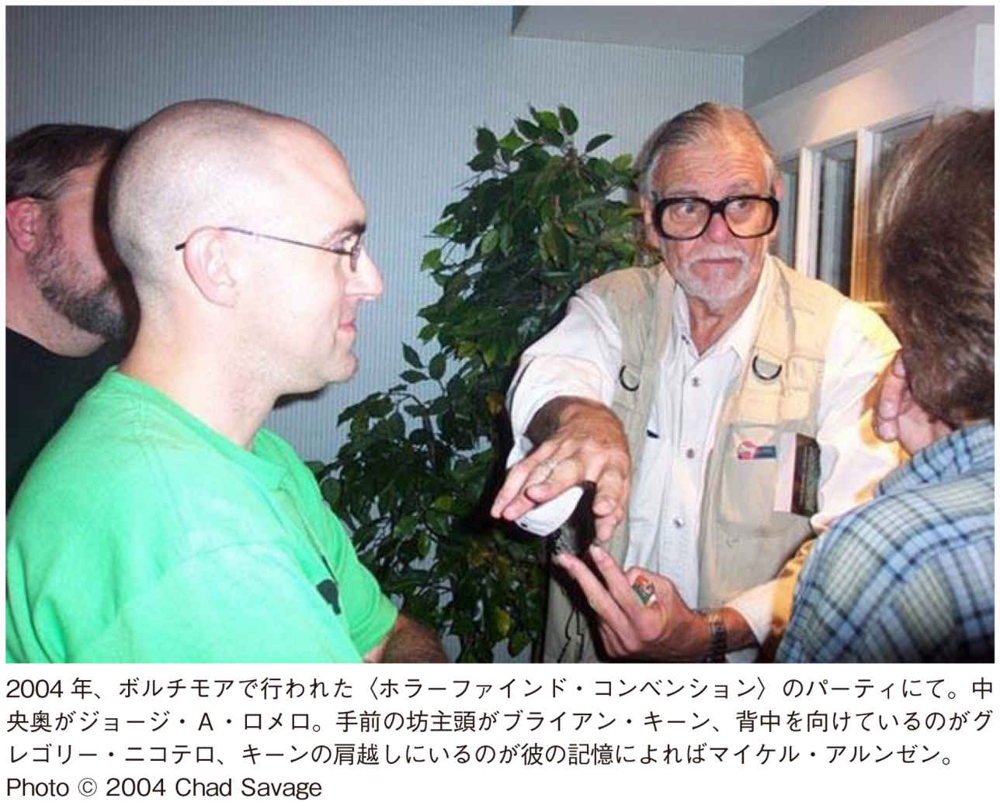
その次にコンベンションでジョージに再会した際、彼は「Fast Zombies suck（速いゾンビは最悪）」と書かれたＴシャツを着ており、それを話題にして私たちはまた大笑いした。週末の間中、ジョージはサイン会場の私のテーブルに人々を送り込んで「速いゾンビは最悪だ」と言わせ、私は私でジョージのテーブルに人々を送り込み、鈍いゾンビのパントマイムをさせた。私がそこからアイデアを得て書いたのは、短編小説（のちに短編映画にもなった）『Fast Zombies Suck』だ。
今年の初め、私はジョージとジョナサン・メイベリーが共同編集するアンソロジー小説『ナイツ・オブ・ザ・リビングデッド』で短編を書くことになり、ジョージの世界観の中で遊ぶ機会を得た。過去にも『エイリアン』『ヘルボーイ』『Ｘ－ファイル』『ドクター・フー』など、映画やコミック、テレビ作品に関連する仕事をしてきたが、このアンソロジーへの参加はこれまでにないほどの誇りであり、最大の名誉だと考えている。
あのときジョージ・ロメロが、最高に緊張していた若造ブライアン・キーンに大変親切に接してくれたことを、私は一生忘れることはないだろう。今の私は、彼の姿をお手本にして、私に会いに来て、いかに私の作品から影響を受けたかを熱く語ってくれる若い作家たちに優しく接するようにしている。
「自分のヒーローに直接会いに行くな」と言う奴など、クソ食らえだ。私は自分のヒーローに直接会った。彼は優雅で、親切で、紳士的で、感じのいい人だった......たとえ動きの速いゾンビについて僕と意見は合わなくても。
ジョージ、どうか安らかに......。
ジョージは私たちのために、全く新しい神話を創り出した。
──チャック・ウェンディグ
ジョージ・ロメロが逝 ってしまうなんて、はらわたが全部抜かれたような気分だ。ジョージは私たちのために、全く新しい神話を創り出した。それは、私たちのほとんどは真似できないようなことだ。独自のモンスターを創造して独自のストーリーを語ることはできても、現代の神話を創り出せるチャンスには恵まれない。ジョージにそれができたということは、彼の才能と先見の明の証 だ。ジョージは、モンスターは単にモンスターという存在ではなく、私たち人間とは何かを説明し、反映する存在であることを理解していた。彼はまた、ホラーの世界とインディペンデント映画の世界の両方に対し、思いやりを見せ続けたお手本のような人物でもあった。
ロメロは、二十世紀のアートで最も重要で、最も影響力のある作品のひとつを創り出した。
──キース・Ｒ・Ａ・ディカンディード
この世にアーティストは星の数ほどいるが、人生を変えてしまうような何かを創り出すという幸運に恵まれる者はなかなかいない。ましてや、全てのサブジャンルに影響を与えることなど、さらに稀 だ。ジョージ・ロメロは、その両方をやってのけた。彼のたった一本の映画が、今日知られているようなゾンビの定義を創り出し、ゾンビフィクションというジャンルを誕生させた。
その映画こそ、フィルムメイキングの最高傑作で、あれほど観る者に緊張感を与え、あれほど役者の演技が素晴らしい作品はこれまでなかった。この事実は、もっと声を大にして指摘されるべきだろう。
ジョージ・ロメロは、二十世紀のアートで最も重要で、最も影響力のある作品のひとつを創り出した。この映画のレガシーに貢献できたことは非常に名誉で、本書『ナイツ・オブ・ザ・リビングデッド』が出版されたのをジョージが見届けられて本当に良かったと思っている。この本に対して寄せられた好意的なレビューの数々も、彼の目に留まったことを願っている。
ジョージ、どうか安らかにお眠りください。
類 い稀 なる素晴らしい作品を何本も創り出してくれた彼の人生に感謝する。
──ニール・シャスターマン
偉大なるジョージ・ロメロがこの世を去ったという知らせを聞き、大きな悲しみに包まれている。彼とジョナサン・メイベリーが共同で編集したアンソロジー小説に、他の非凡な才能を有する作家たちと一緒に参加でき、この上なく光栄だ。私は、ミスター・ロメロと実際に会う機会は得られなかったが、彼の映画作りは、私が関わる全てに大きなインパクトを与えた。彼の映画は、私にとってはインスピレーション以上だと言っていいかもしれない。私を刺激し、推進させてくれる巨大な力だ。類い稀なる素晴らしい作品を何本も生み出してくれた彼の人生に感謝する。ジョージがしたように、たったひとりの個人が何もないところからひとつのジャンルを創り出すなんて、簡単にできることではない。ブレンダンと私にとって、本書『ナイツ・オブ・ザ・リビングデッド』で彼の映画にオマージュを捧げられたことは、実に名誉なことだ。そして、私たちは彼の逝 去 を悼んでいる。彼の並外れた偉業が、ゾンビのグランドマスターによりふさわしい形で、これからもずっと息づいていくことを願っている。
訳者あとがき
「今日は絶好のゾンビ大会日和 となりました」
校長先生の言葉に、私は耳を疑った。今、なんて──？
私たち全校生徒は中学校の屋上に集められていた。頭上には、抜けるような青空が広がっている。生徒はクラスごとに整列し、校長先生の話に耳を傾けていた。一見、いつもの朝礼の光景だが、通常は体育館か校庭で行われるはずだ。どうして今日は屋上なんだろう。
「我が校恒例のゾンビ大会も、今年で七回目を迎え──」
我が校恒例？ ゾンビ大会？ 学校行事なのか。どういうこと？
横を向くと、陸上部とサッカー部の男子が「今年こそ一位を狙う」「いや、優勝は渡さねえ」と腕まくりをして小声で話している。え？ これってマラソン大会と同レベルなの？ 私は眉をひそめた。
いつの間にか校長先生の話は終わっており、教頭先生がマイクを持っていた。
「十時きっかりに、地下室の扉を開けます」
私はハッとした。自分でもゾンビ大会のルールを知っていることに気づいたのだ。
それはいたってシンプルだった。学校の地下室にはたくさんのゾンビがいて、午前十時に重い鉄の扉が開けられる。それから十分後、屋上の生徒は一斉に階下へと向かい出す。すでにゾンビは校舎内を徘 徊 し、どんどん上階へ移動しているため、生徒がゾンビと接近遭遇するのは避けられない。とにかくゾンビの猛攻を避けつつ、一階まで降りて校庭へ出ればいいだけの単純明快なサバイバルゲームだ。
屋上の時計の針が午前十時を指すと、サイレンが流れた。そう、地下に閉じ込められていた奴 らが解き放たれた合図だ。生徒たちが校舎内へ繰り出すまでには十分の猶予がある。円陣を組み、大声で気合いを入れる運動部。お揃 いのＴシャツを作って連体感を主張するクラスやグループ。学校行事なのだから、それぞれで盛り上がるのは結構なのだが、生徒の大半は浮かない顔をしている。緊張と不安で顔面蒼 白 となり、すでに半泣きになっている女子もいた。当然だ。悲喜こもごもなのは、受験の合格発表当日だけでいい。命 懸 けの学校行事なんて、絶対におかしい。
無情にも、十時十分を知らせるホイッスルが鳴った。いよいよゲーム開始だ。
生徒たちは我先にと屋上に一ヶ所だけある出入り口へと駆け出した。しかし、私は納得がいかず、思うように足が動かなかった。進むのをためらっていると、生徒指導担当で体育科の教師に怒鳴られた。
「おい、阿部。さっさと動け！ ぼやぼやしてると食われるぞ」
食われる──。先生が何気なく発したその言葉は、氷の槍 となって私の胸を貫いた。〝殺される〟よりも、ずっと恐ろしい響きだ。
重い足取りで戸口に向かっていたとき、誰かに腕をぐいと引っ張られた。ハッとして顔を上げると、親友の京子だった。
「清美、何してるの？ 姿が見えないから戻ってきたんだよ。さあ、行こう！」
彼女に促され、私たちは北校舎の四階へと降りていった。
四階の廊下は不気味なほど静まり返っている。他の生徒たちはとっくに下の階に進んでいたようだ。北校舎の東階段まで来ると、京子が「一階まで一気に降りよう」と言った。
ところが、東階段の三階の踊り場まで降りたとき、嫌な音が階下から聞こえた。濡 れた素足で、誰かが階段を上ってくる音だ。ひとりだけではない。二人？ 三人？ それ以上？
「マズい。素手じゃ突破できないよ」
「そうだ。モップ！ そこの教室から取ってくる」
私は踵 を返し、階段から最も近い教室──二年一組──へ入った。掃除道具の入ったロッカーに駆け寄って開けようとしたが、突然ロッカーがガタガタと揺れ出し、その扉がひとりでに開いた。ゆっくりと、耳 障 りな金属音を立てて。私は恐怖で凍りついた。
意外にも、ロッカーの中から出てきたのは、野球部の佐藤君だった。てっきり化け物だと思っていた私は、同級生の顔を見て、「なんだ、佐藤君か」と安 堵 の息を吐いた。
ところが、彼が着ている白い練習用のユニフォームは、右半身が赤く染まっている。
「ヤバい。嚙 まれちまった......」
「嚙まれたの？ あいつら、もうここまで来てるの？」
明らかに佐藤君は具合が悪そうだ。肩で息をしながら、彼はこう答えた。
「あいつら......なら......おまえの後ろに......」
え？ 肩越しに教室のドアを見やると、奴らが数体、こちらに歩いてくるのが見えた。
「佐藤君、急いで逃げ──」
彼の方に向き直った私は、慄 然 とした。佐藤君の肌は土気色に変わり、青い血管が顔中に浮かび上がっていたのだ。おまけに、その目は膜が張ったように濁っている。一瞬の変化だった。私は、彼がもう佐藤君ではなくなったことを悟った。
背後から迫る連中と数秒前まで佐藤君だった奴に挟まれた私は、咄 嗟 に黒板の方へ走り出し、教卓の下に潜り込んだ。膝を抱えてしゃがみ込み、身体を丸めていると、別の誰かの足音が聞こえ、激しい打撃音がそれに続いた。何が起こっているか見えていない私は、ひたすら息を殺していた。
「早く！ 逃げるよ！」
突然、教卓の下を覗 き込んだのは京子だった。その手にはモップが握られている。
教卓の下から出た私は、親友が叩 きのめしたはずの連中がもぞもぞと動き出すのを見た。
すでに東階段は、階下からよろよろと上ってくる奴らであふれている。おそらく西階段も同じ状態だろう。これは挟み討 ちになるのも時間の問題だ。どうやって下に降りるべきか──。私はふとあるものを思いついて、顔を上げた。
「京子！ 給食の配膳室に小さなエレベーターがあるよね！」
各階の配膳室には、一階からおかずなどを運搬するための昇降機が備わっている。
「ナイス！ それで一階まで直行しよう」
私たちは脱 兎 のごとく二年一組の教室を飛び出し、廊下の中ほどにある給食配膳室を目指した。途中、何体かに行く手を邪魔されたものの、少林寺拳法有段者の京子のモップさばきでなんとか乗り切ることができた。
配膳室のエレベーターは小さく、二人一緒に乗り込むのは不可能だったし、どちらかが昇降ボタンを操作しなければならないので、ひとりずつ下に降りることにした。先に京子が一階まで降り、その後、私が続く。
「じゃ、すぐに下で落ち合おうね」
京子はモップをこちらに手渡し、函 の中に入った。狭い空間で身体を折り曲げた彼女は笑顔を見せ、小さく手を振った。私も手を振り、一階へ降下させる緑のボタンを押した。かすかな振動音を立てて、エレベーターは降りていった。
ところが、一分ほど経 っても、昇降機は戻ってこなかった。京子はとっくに一階に着いているはずだ。一階の配膳室で降りた彼女がボタンを操作し、空 のエレベーターを三階まで戻す予定になっていた。なのに、一向にその気配がない。背後からは、連中が近づく足音が聞こえ、私は気が気ではなくなっていた。廊下を歩く連中の数は、確実に増えている。
ならば、自分でエレベーターを三階まで呼ぼう。赤いボタンを押すと、エレベーターが再びガタガタと音を立て、徐々に上ってくるのがわかった。廊下の奴らは配膳室のすぐそばまで来ている。早く、早く。私は祈るような気持ちで昇降機の扉を見つめ、何度も後ろを振り返った。すると、ガタンと鳴って函が止まった。モップを握る手に自然と力が入る。
エレベーターの扉が開き、私は目を剝 いた。中には、ちぎれた片足があった。上履きに書かれた苗 字 は、京子のものだった──。
これは、私がゾンビ映画を初めて観た日の晩に見た悪夢だ。あまりの恐怖に、何十年も経過した今も、全てを鮮明に覚えている。夢であるがゆえ、不条理すぎて辻 褄 が合わないところもあるが、本書『ナイツ・オブ・ザ・リビングデッド』にぴったりの内容だったので、ジョージ・Ａ・ロメロを偲 ぶ意味で、ここで触 りを紹介させてもらった。夢の続きで、果たして私は最後まで生き残れたのだろうか。
とにかく、〝ゾンビ〟──正確に言えば、ロメロが考え出した〝生きる屍 〟の設定はとんでもない大発明だ。死体が蘇 るだけでも十分恐ろしいのに、その死体が人間を食べ、食べられた人間も同類になるとは！ 一九六八年のロメロ監督作『ナイト・オブ・ザ・リビングデッド』以降、あの歩く死体たちは「ゾンビ」と呼ばれるようになり、一九七八年の『ゾンビ』が人気の駄目押しとなった。ゾンビ映画は次から次へと作られ、完全にカルチャーのひとつのカテゴリーとして定着した。ドラキュラやゴーストなど、ホラー作品のモチーフは数あれど、ゾンビの人気はずば抜けている。なぜそこまで〝ゾンビもの〟は愛されるのか。私なりに、その理由を考えてみた。
１：ゾンビは人を選ばない。ゾンビに嚙まれた人間は誰でもゾンビになる。そこには制約も情け容赦もなく、地位も職業も関係ない。明暗を確実に分けるのは、〝運〟だけ。その平等性が、「もしかして自分の身にも起こるかも──」という不安を猛烈に搔 き立てる。
２：ゾンビは身近にいる。人を選ばないのと同様、ゾンビは時と場所も選ばない。墓場であろうとショッピングモール内だろうと、パンデミックは簡単に起きてしまう。しかも、相手は昼夜問わずに活動し、基本的に疲れ知らずなので、人間は二十四時間気が抜けない。自分の生活圏内でそれが発生すれば、家族や友人知人がゾンビ化して姿を現わす事態にも。自分の愛する人がゾンビになったときに生まれるドラマは、どんな悲恋の物語よりも切なく辛 い。その一方、身近で起こる混乱の中、市 井 の人が簡単に英雄になれたりもする。
３：ゾンビは汎 用 性 が高い。ロメロの基本的ゾンビは動きが緩慢で、人肉を貪 り、頭を破壊しない限り死なないのが特徴だが、様々な作り手が多彩なゾンビを派生させた。『28 日後...』でスプリンター並みの全力疾走ゾンビを目 の当たりにし、お手上げだと思った人も多いのではないだろうか（ちなみに、走るゾンビの元祖は一九八〇年の『ナイトメア・シティ』とも八五年の『バタリアン』とも言われている）。マイケル・ジャクソンの『スリラー』（82 ）のＭＶの高レベルダンスから、史上最低映画の呼び声も高いが邦題の絶妙さでカルト化した『死霊の盆踊り』（65 ）の裸踊りまで、落差は大きいものの、いい意味でも悪い意味でも、踊るゾンビには度肝を抜かれた。ロメロ自身、『死霊のえじき』（85 ）で知性を持つゾンビを登場させているが、そもそも『ナイト・オブ・ザ・リビングデッド』でも、石を拾って車の窓を叩き割ろうとするゾンビが出てくるので、人間だった頃の知恵の片 鱗 が辛うじて残っている個体も存在する、という設定なのかもしれない。他にも、『ウォーム・ボディーズ』（13 ）の恋するゾンビ、『ゾンビーノ』（07 ）のペットゾンビ、『ゾンビ・ヘッズ 死にぞこないの青い春』（11 ）の半ゾンビ（死んでいるが、ゾンビになりきれていない人間）など、ゾンビの多様性はもはや無限大。単なるホラーではない、ゾンビコメディやゾンビ感動作も誕生した。ジャンルの枠を超え、ここまでバラエティに富んだ作品が生まれる所以 は、ゾンビの汎用性の高さに他ならない。
４：ゾンビは完全にフィクション。現代の常識では、死体が息を吹き返したとしても、人肉を食うことはないし、食われた人がゾンビになることもない。絶対に。同じサバイバル系でも、災害や病原体、テロなどは実際に起こり得るゆえ、何かと不安要素の多い現代社会では、作品の内容より現実の方が怖いと思われがちだ。その点、ソンビは完全なるフィクションだと観客も理解しており、多少無茶な設定でもすんなり受け入れられる。ものすごく怖くても、思う存分、安心して怖がることができる健全な恐怖なのだ。
こうして、ゾンビ文化なるものを創り出し、定着させるという大きな功績を残した、現代ゾンビの祖であるジョージ・Ａ・ロメロ。残念ながら、彼は二〇一七年七月に逝 去 し、本著が、彼が完成させた最後の作品となった。このアンソロジー小説では何よりも、〝生ける屍〟という同一モチーフでこれだけ多種多様な内容の短編小説の数々が集められている事実に驚かされる。ロメロ本人を含め、十九人の寄稿作家たちは皆、『ナイト・オブ・ザ・リビングデッド』に敬意を表しているので、同作に一切登場しなかった「ゾンビ」という言葉は、本書ではほぼ見かけない。また、映画本編に縁 のある場所や登場人物の名前、映画内のあるシーンを彷 彿 とさせる描写などが随所に散りばめられている。映画と併せてそれぞれの短編を読み、ニヤリとしてもらいたい。
また、本年十月二十五日、ジョージ・Ａ・ロメロの名が、ハリウッド大通りにある通称「ウォーク・オブ・フェーム」の星に刻まれた。ポップカルチャーに多大な影響を与えた偉業が認められ、生前より彼のハリウッド殿堂入りが決定していたものの、死去によりうやむやになっていた。だが、故人と親しかった俳優のマルコム・マクダウェルが発 起 人 となり、クラウドファンディングを通して募金活動を開始。晴れて、殿堂入りが実現することとなった。式典には、『ゾンビ』に俳優としても出演している特殊メイクアップアーティストのトム・サヴィーニをはじめ、ロメロに関わりのある人々が多数参加。ゾンビ姿のファンを前に、スピーチにはマクダウェルや『ショーン・オブ・ザ・デッド』（04 ）の監督エドガー・ライトらが立ち、故人にまつわる思い出を語ったそうだ。ゾンビのみならず、ゾンビの生みの親のロメロも、世代を超えて、いかに皆に愛されていたかを窺 い知ることができる。
私自身、Ａ級からＺ級までかなりのゾンビ映画を見てきたが、ロメロ監督作以外で、一番印象に残っているのは、ルチオ・フルチ監督の『サンゲリア』だ。一九七九年製作作品ゆえ、ＣＧは一切なし。それでも、生理的な嫌悪感を呼び起こす非常に悪趣味なゾンビメイクやスプラッタ描写は発想の勝利だし、美しくも不気味なテーマ音楽、海中ゾンビＶＳリアルなサメの伝説の格闘シーン、救いのないラストと見事な伏線の張り方など、傑作として語り継がれるにふさわしい要素が揃っている。また、わずか七分の短編映画『Cargo』（https://www.youtube.com/watch?v=gryenlQKTbE ）とビデオゲーム『ＤＥＡＤ ＩＳＬＡＮＤ』のトレーラー（https://www.youtube.com/watch?v=lZqrG1bdGtg ）は、観る者の心を揺さぶる隠れた名作だ。気になる方はチェックしてみてほしい。
地球上で、ゾンビが何かを理解されていない場所を探す方が難しいほど、ゾンビは全世界に浸透している。もしロメロ・ゾンビが誕生しなかったら、今の世の中はどうなっていたのか。これだけ胸をざわつかせる存在がいない分、少しだけ平和だったかもしれないが、きっとずっとつまらない世界になっていただろう。猫ならぬ、『世界からゾンビが消えたなら』という話を、つい書いてみたくなる。ゾンビでこの世に彩りを添えてくれたロメロに心から感謝したい。どうか平穏な眠りが、騒がしい連中によって妨げられませんように。
本書を翻訳するにあたり、多くの方に助けていただいた。寛容なお心遣いで支えてくださった編集者の富田利一氏、的確で丁寧なご指導ご教示をくださった編集者の魚山志暢氏、武器関連や英語の表現の疑問に快く答えてくださったChris Oswald氏、いつも温かく見守ってくれた家族に礼を述べたい。本当にありがとうございました。
二〇一七年十月
阿部清美
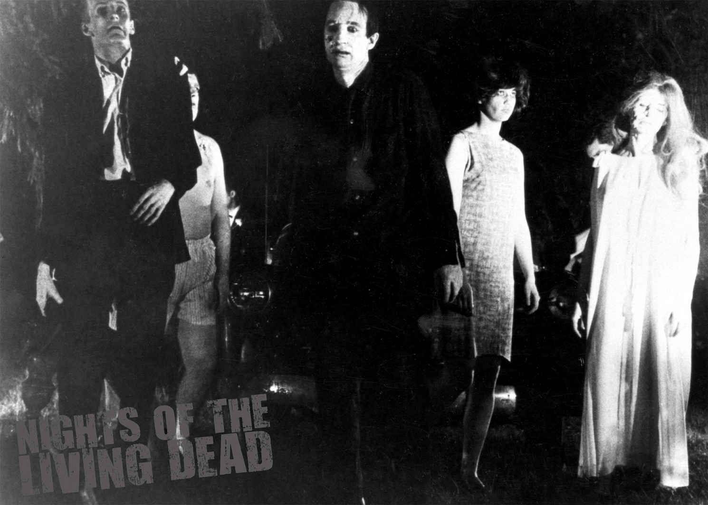
【訳】 阿部清美 Kiyomi Abe
翻訳家。映画雑誌、ムックなどで翻訳、執筆を手掛ける。主な翻訳書に『24 CTU機密記録』シリーズ、『メイキング・オブ・「トワイライト～初恋」』『24 TWENTY FOUR THE ULTIMATE GUIDE』『ジェームズ・キャメロンのタイタニック【増補改訂版】』『だれもがクジラを愛してる。』『サイレントヒル リベレーション』〈タイラー・ロックの冒険〉シリーズ（竹書房 刊）、『アサシン クリード 預言/血盟』（ヴィレッジブックス 刊）、『ギレルモ・デル・トロ 創作ノート 驚異の部屋』『ギレルモ・デル・トロの怪物の館 映画・創作ノート・コレクションの内なる世界』（DU BOOKS刊）などがある。
NIGHTS OF THE LIVING DEAD
ナイツ・オブ・ザ・リビングデッド 死者＆生者の章［合本版］
Nights of The Living Dead：An Anthology
発行日 ２０１７年11 月１日 発行
著 者 ジョナサン・メイベリー、ジョージ・Ａ・ロメロ
訳 阿部清美
編集協力 大木志暢
ブックデザイン 石橋成哲
発行者 後藤明信
発行所 株式会社竹書房
〒１０２－００７２
東京都千代田区飯田橋２－７－３
ＴＥＬ ０３－３２６４－１５７６
データ加工 有限会社ワイズネット
本書の一部あるいは全部を著作権者および株式会社竹書房に無断で複写・複製すること、および放送・上演・公衆送信（ホームページ上への掲載を含む）などは、法律で認められた場合を除き著作権の侵害となります。